Vedic Astrology from Your First Chart to Your First Consultation
A complete beginner's course in Jyotish — with pictures, worked charts, and Lal Kitab clearly marked wherever it appears
September 2026 edition
About this book. The teaching voice is that of a veteran Indian astrologer with thirty years of practice; the anecdotes are composites and the three case-study charts (Meera, Arjun, Devika) are constructed for teaching. Nothing here is a substitute for medical, legal or financial advice, and no prediction in astrology is a certainty — the book teaches you to say so, too.
How material is marked. The backbone is Parashari astrology (Brihat Parashara Hora Shastra). Anything drawn from Lal Kitab (Pt. Roop Chand Joshi, Urdu editions 1939–1952) appears only inside red dashed boxes labelled 📕 From Lal Kitab with the source stated, so you always know which system you are using. Jaimini, Tajaka and KP appear where named.
Boxes: 🧭 Guruji's rule of thumb · 💡 Did you know? · ⚠️ Common beginner mistake · 🪔 Consultation tip · 📖 Story (memory tale) · 📕 From Lal Kitab · ✍️ Practice
Chapter 1: Welcome — Why the Books Confused You, and How This One Won't
Sit down. Have some chai. Let me tell you what happened to you, because it has happened to almost every student who has ever walked into my room.
You bought the classics. Maybe Brihat Parashara Hora Shastra in two fat volumes, maybe a famous modern author, maybe a stack of PDFs from an online course. You opened page one and were hit by forty Sanskrit words, a table of degrees, and a sentence like "the lord of the Lagna in the eighth in a dusthana aspected by a maraka gives…". You closed it. You felt stupid. You are not stupid.
Here is the secret nobody tells beginners: those books were never written for beginners. Parashara was dictating to his student Maitreya, who already knew the sky. The modern books mostly copy the old ones and add lists. Lists of "Saturn in the 7th house gives…", "Sun in the 3rd house gives…". You memorise 108 lists, forget 100 of them, and still cannot read a chart, because nobody taught you why Saturn in the 7th gives what it gives.
In thirty years of practice I have looked at, by my rough count, close to a million kundalis — on paper, on palm-leaf copies, on a cracked Nokia screen, now on apps. I promise you this: astrology is not a memory game. It is a language with a small grammar. Nine planets, twelve signs, twelve houses, twenty-seven stars. That is the whole alphabet. Once you understand how the pieces combine, you never need a list again, because you can derive any list yourself in your head, while the client is still settling into the chair.
This book teaches the grammar. Every rule comes with the reason behind it, a picture, and a worked example. By the last chapter you will read a full chart, time events with dashas, answer the five questions every client asks (career, money, marriage, health, children), give remedies with humility, and know exactly what to say and what never to say across the table.
🧭 Guruji's rule of thumb: If you cannot explain a rule to a twelve-year-old with a drawing, you do not yet understand it. I hold myself to this in every chapter.
What astrology actually claims (and what it does not)
Let us be honest with each other from the first page, because honesty is what will make you a consultant people return to.
Jyotish — the Sanskrit word means "the science of light" — is an ancient system that reads the positions of the Sun, Moon and planets at the moment of your birth as a map of tendencies. Not a script. A map. It says: this road is downhill, that one is uphill, there is a bridge at age thirty-two. It does not say you must walk. The tradition itself is clear about this: the chart shows prarabdha karma, the portion of your past actions that has ripened for this life, and it always leaves room for kriyamana karma, what you do now.
So when a client asks "Will I get the job?", the honest astrologer does not say yes or no like a coin toss. She says: "Your career house is being activated this year, and the timing is strong from March. Apply. Push. The wind is behind you." That is prediction in the Jyotish sense — and, you will find, it is also what actually helps people.
💡 Did you know? The Sanskrit Jyotisha is one of the six Vedangas, the "limbs of the Veda". Its original job was timekeeping: fixing when to perform rituals by the Moon and stars. Predictive astrology (Hora Shastra) grew from that calendar science. The great texts — Brihat Parashara Hora Shastra (Parashara), Brihat Jataka (Varahamihira, 6th century CE, Ujjain), Saravali (Kalyana Varma), Phaladeepika (Mantreswara), Jataka Parijata (Vaidyanatha) — are our textbooks even today.
The sky as a clock
Forget mysticism for a moment and picture the sky as the world's oldest clock.
The Earth goes around the Sun once a year. From where we stand, it looks like the Sun slowly travels through a ring of background stars over the year. That ring is the zodiac belt (Rashi Chakra). Ancient astronomers divided the ring into twelve equal slices of 30° each and named them after the star-patterns roughly behind them: Aries the ram, Taurus the bull, and so on. Those twelve slices are the signs (Rashis).
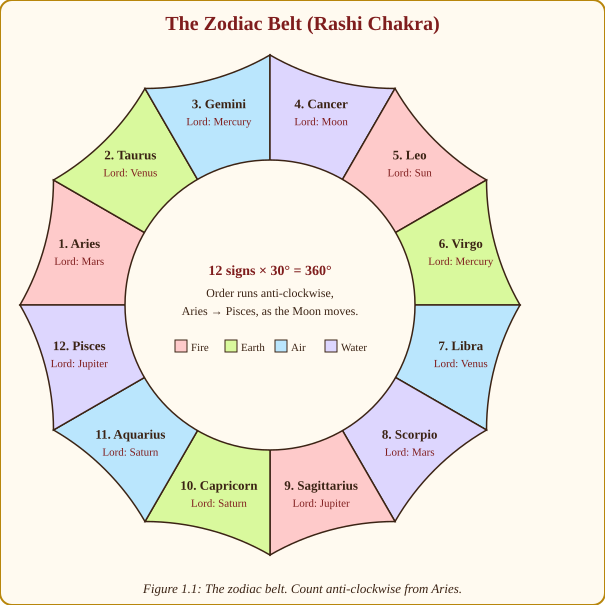
Figure 1.1: The zodiac belt. Twelve signs of 30° each make the full 360° circle. The order runs anti-clockwise — the same direction the Moon and planets move against the stars.
Now, the Moon and the planets also travel along (or very near) this same ring. So at any moment, each planet is "in" some sign. The Moon takes about 2¼ days to cross a sign, the Sun a month, Jupiter a year, Saturn two and a half years. That gives us hands of different speeds on one clock face — a second hand, a minute hand, an hour hand, and a very slow hand that takes thirty years to go round.
A birth chart (kundali or janma patrika) is simply a photograph of this clock at the minute you were born, taken from the place you were born.
Why the place? Because of the last ingredient, the one that makes your chart yours and not everyone-born-that-day's: the horizon. As the Earth spins, a new sign rises in the east roughly every two hours. The sign rising on the eastern horizon at your birth is the rising sign (Lagna, also called the ascendant). It sets the frame of your whole chart. Two babies born on the same day in different hours, or in Chennai and in London at the same clock time, have different Lagnas and different charts.
🧭 Guruji's rule of thumb: The Sun tells you the month, the Moon tells you the day, the Lagna tells you the hour. A chart without an accurate birth time is a photo without focus.
Why your "Sun sign" moved
The first shock for anyone coming from newspaper horoscopes: "But I'm a Virgo! This app says my Sun is in Leo!"
Both are right; they are using different rulers. Western astrology anchors the start of Aries to the spring equinox point, which slowly drifts backwards against the stars because of a wobble in the Earth's axis (called precession). Vedic astrology anchors Aries to the actual stars. The two rulers were aligned around 285 CE; today they differ by roughly 24 degrees — almost a whole sign. The gap is called the ayanamsa.
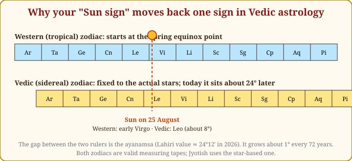
Figure 1.2: The same Sun on the same day lands in a different sign depending on which ruler you hold against the sky. Jyotish uses the star-fixed (sidereal) ruler.
Which ayanamsa value? Indian astrologers overwhelmingly use Lahiri (also called Chitrapaksha), adopted by the Government of India's Calendar Reform Committee in 1955. Set your software to Lahiri and never think about it again. Do not mix systems: a chart made with one ayanamsa and read with another will put planets in the wrong signs.
💡 Did you know? Because of precession, the equinox point slides backwards about 1° every 72 years. In roughly 2,000 years the two zodiacs will be a full sign apart, and Western astrology's "Aries" will sit entirely on the stars of Pisces. Vedic astrologers say: this is exactly why we tied our zodiac to the stars.
Meet the cast: a king's court
The nine "planets" (Grahas — the word means "that which grasps") are not all planets in the astronomer's sense. Two are luminaries (Sun and Moon), five are true planets (Mars, Mercury, Jupiter, Venus, Saturn), and two are mathematical points (Rahu and Ketu) — the places where the Moon's path crosses the Sun's, which is why eclipses happen only near them. Astrology treats all nine as actors.
The old texts describe them as a royal court, and I have never found a better way to remember their characters:
Graha
Role in the court
In one word
Sun (Surya)
The king
Authority
Moon (Chandra)
The queen
Mind
Mars (Mangala)
The army commander
Energy
Mercury (Budha)
The prince, the clever secretary
Intellect
Jupiter (Guru)
The royal priest and minister
Wisdom
Venus (Shukra)
The minister of pleasure and the arts
Love
Saturn (Shani)
The servant, the judge of labour
Discipline
Rahu
The shadow, the foreigner at the gate
Obsession
Ketu
The headless ascetic
Detachment
📖 Story: The court assembles. Picture a kingdom. The King (Sun) sits on the throne — proud, warm, impossible to ignore; when he is strong, the whole court has confidence, and when he is weak, nobody knows who is in charge. Beside him the Queen Mother (Moon) runs the household and knows every servant's troubles; she is the mood of the palace, changing a little every day. The Commander (Mars) guards the gates and starts the fights. The clever young Prince (Mercury) writes the letters and counts the money. The Royal Priest (Jupiter) advises, blesses and teaches the children. The Minister of Pleasure (Venus) arranges music, weddings and comfort. The old Judge of Labour (Saturn) — once the King's neglected son — keeps the accounts of every debt and lets nobody leave until the work is done. At the gate stand two strangers: Rahu, a smoke-headed traveller who wants everything he sees, and Ketu, a headless sadhu who wants nothing at all. Every chart you will ever read is a story about which of these nine sits in which room of the palace, and who is on speaking terms with whom. Rule: learn the nine characters first; the rest of astrology is watching them interact.
Every planet "owns" one or two signs — those are its home ground. Every planet also has a sign where it feels strongest (its exaltation) and one where it feels weakest (its debilitation). We will go through each planet's personality slowly in Chapter 3. For now, just meet them.
The stage: twelve rooms of a house
If the planets are the actors and the signs are their costumes, the houses (Bhavas) are the rooms where the drama plays out. There are twelve houses, counted from the Lagna. The Lagna sign is the 1st house; the next sign is the 2nd house; and so on around.
Each house governs an area of life. The 1st is you and your body. The 2nd is wealth, speech and family. The 4th is mother, home and inner peace. The 7th is marriage and partnerships. The 10th is career. The 12th is loss, sleep and foreign lands. Chapter 4 walks through all twelve with the logic behind each meaning — and there is logic; the houses are not random.
Here is how the three layers stack:
Planet = who is acting (Mars: energy, aggression, courage).
Sign = how they behave, their mood and costume (Mars in Cancer: energy that turns emotional and defensive).
House = where in life the action lands (Mars in Cancer in the 4th house: that emotional energy plays out at home, with mother, in matters of property).
Once this three-layer idea clicks, half the "lists" in the old books become obvious.
Reading your first chart (just looking, no pressure)
Below is Chart A — I call her Meera; she is a composite of many clients, born in Jaipur in December 1988 at 6:40 in the morning. We will meet her again and again through the book.
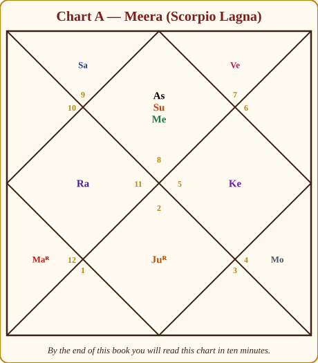
Figure 1.3: Chart A in the North Indian format. The top diamond is always the 1st house. Houses run anti-clockwise. The small gold numbers are the sign numbers (8 = Scorpio) sitting in each house.
Look at the picture and simply notice things. The top diamond is her 1st house, the Lagna; the number 8 tells you the sign there is Scorpio. She has two planets in that house — Sun and Mercury. Her Moon sits in the 9th house (bottom right corner of the diamond, sign 4 = Cancer). Jupiter sits opposite the Lagna in the 7th house. That is already three sentences about her — strong, articulate personality (Sun and Mercury in the 1st); an emotional mind that finds comfort in wisdom and faith (Moon in Cancer in the 9th); a marriage partner who is learned or a teacher (Jupiter in the 7th). You will be able to defend every one of those sentences by Chapter 5.
Indian astrologers draw the same chart in two main styles. Above is the North Indian diamond: houses are fixed in position and the signs move. Below is the South Indian grid: signs are fixed in position and you find the Lagna by the diagonal mark.
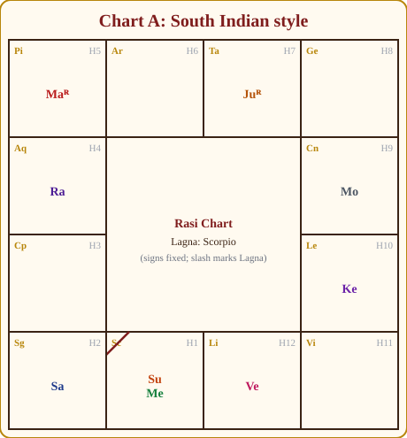
Figure 1.4: The same chart in the South Indian format. Pisces is always top-left; the signs run clockwise; the slash marks the Lagna in Scorpio.
Neither is "correct". North India, Nepal, and most Hindi-speaking practitioners use the diamond; Tamil Nadu, Kerala, Karnataka and Andhra use the grid; Bengal and Odisha have their own variant. Learn to read both — clients bring you whatever their family astrologer made. I use the North Indian style throughout this book and show the South Indian version wherever it teaches something.
⚠️ Common beginner mistake: In the North Indian chart, the numbers inside the houses are sign numbers, not house numbers. The house numbers never change (top diamond = 1, then anti-clockwise). The sign numbers change with every Lagna. Half of all beginner errors come from mixing these two up.
Your toolkit: software, not arithmetic
In my grandfather's time an astrologer spent the first two hours of any consultation doing arithmetic with an almanac (panchanga) and logarithm tables. You do not have to. Any of these will cast an accurate chart in a second:
Jagannatha Hora (free, Windows) — the professional's workhorse; every divisional chart, every dasha.
Parashara's Light (paid) — the standard in many Indian institutes.
AstroSage / Drik Panchang / Kundli apps (free, mobile) — fine for beginners; check the ayanamsa is Lahiri.
Maitreya (free, open source) — clean and reliable.
Set: Lahiri ayanamsa, sidereal zodiac, whole-sign houses (the default in Jyotish: one sign = one house), and Vimshottari dasha. That is the configuration every chapter in this book assumes.
What you must still do by hand is think. Software gives you positions; it cannot judge, weigh, or speak to a frightened person. That is the whole job, and this book is about that job.
How to use this book
The book is in five parts, and it is built to be read in order, because each chapter leans on the one before it.
Part I — Foundations (Chapters 1–5): signs, planets, houses, and how to read a chart's basic layout. Do not skip these even if you "know" them; the reasoning is the point.
Part II — Core tools (Chapters 6–12): aspects, the 27 nakshatras, which planets are good or bad for your particular Lagna, house lords, yogas, divisional charts, and planetary strength. This is where you become an astrologer.
Part III — Timing (Chapters 13–17): Vimshottari dasha, transits (including the famous Sade Sati), other dashas, the calendar (panchanga and muhurta), and horary questions.
Part IV — Life questions (Chapters 18–21): career and money, marriage and matching, health and longevity, children, education, property, travel, spirituality — organised the way clients ask.
Part V — Lal Kitab, remedies, and the consulting room (Chapters 22–25): the distinct Lal Kitab system, clearly attributed; remedies with ethics; how to run a consultation; and three complete case studies from birth data to final advice.
At the back: Appendix A holds every table you will ever need at the desk (keep it open); a glossary; a reading list; and one-page cheat sheets.
Watch for these recurring boxes:
🧭 Guruji's rule of thumb: a heuristic worth memorising.
💡 Did you know? an interesting fact — history, astronomy, culture.
⚠️ Common beginner mistake: where students trip; read these twice.
🪔 Consultation tip: how to phrase it across the table, and the ethics of doing so.
📖 Story boxes are memory stories. The reader who asked for this book said that lists do not stay but stories do. So every rule that is normally memorised — who is whose enemy, which conjunctions help, which planets serve which Lagna — comes with a short tale from the royal court, and then the rule in one line. The cast never changes, so by Chapter 6 you will know these characters like family.
📕 From Lal Kitab: material drawn from Lal Kitab (Pt. Roop Chand Joshi, Urdu editions 1939–1952). Everything from that tradition lives only in these boxes, with the source stated, so you always know which system you are using. Mixing the two without labels is one of the biggest sources of confusion in today's online courses. (Source: Lal Kitab, Pt. Roop Chand Joshi, 1939–1952 Urdu editions; Hindi translations vary.)
✍️ Practice: exercises at the end of every chapter, with answers. Do them. Reading about swimming has never kept anyone afloat.
A word about the voice in this book
I write as a teacher who has sat across from clients for three decades, and the stories are drawn from that experience — but every named client here is a composite, and the three case-study charts (Meera, Arjun, Devika) are constructed for teaching so that we can dissect them freely without exposing anyone's private life. When I say "I have seen this a thousand times", I mean it as a teacher's honest shorthand, not a statistic.
Three promises, and one request
Promise one: no rule without a reason. If I cannot tell you why Saturn delays, I will not ask you to remember that it does.
Promise two: no fear. Astrology has been damaged by people who frighten clients into buying stones. You will learn the remedies, and you will learn to offer them the way a good doctor offers a diet: gently, with reasons, without threats.
Promise three: no gatekeeping. There is nothing here you cannot learn. Sanskrit is a bonus, not an entry ticket.
My request: keep a notebook. Every time you meet a chart — a friend's, a relative's, your own — write three observations and one prediction with a date. Come back in a year. That notebook will teach you more than any book, including this one.
Let us begin with the twelve signs.
In one breath
The classics were written for students who already knew the sky; that is why they confused you, not because you lack ability.
Jyotish reads the sky at your birth as a map of tendencies and timings, never as a fixed script.
The zodiac is a 360° belt cut into twelve 30° signs; planets move through it at different speeds like clock hands.
The Lagna (rising sign) is fixed by birth time and place; it makes the chart yours.
Vedic astrology uses the star-fixed (sidereal) zodiac with the Lahiri ayanamsa; that is why your Sun sign shifts about one sign back from Western astrology.
Planet = who, Sign = how, House = where. Every "list" in the old books is a combination of these three.
The nine planets are a royal court — King, Queen Mother, Commander, Prince, Priest, Minister of Pleasure, Judge, and two strangers at the gate. Stories about them carry the rules; 🟢🟡🔴 colour dots mark good, mixed and difficult in every table.
North Indian charts fix the houses; South Indian charts fix the signs. Learn to read both.
Lal Kitab material appears only in marked boxes with its source stated.
Practice
✍️ Practice:
1. In Figure 1.3, which sign is in Meera's 4th house? Which planet sits there?
2. Meera's Jupiter is in the 7th house. Using the North Indian layout, which sign number is that, and what is the sign's name?
3. Your friend says, "I'm a Sagittarius Sun, born 5 December." In which sign would Vedic astrology most likely place their Sun? Why?
4. Write down, in one line each, what the Sun, Moon and Lagna each tell you about the timing of a birth.
5. Set up a chart program with Lahiri ayanamsa and cast your own chart. Note your Lagna, your Moon sign, and how many planets sit in your 1st house. Keep it — we will use it all through the book.
Answers
1. The 4th house holds sign 11, Aquarius. Rahu sits there.
2. The 7th house shows sign 2, Taurus. (Scorpio is 8; count 8, 9, 10, 11, 12, 1, 2 for houses 1 to 7.)
3. Most likely Scorpio. The Vedic zodiac sits about 24° "later" than the Western one, so a Sun in the first two-thirds of Western Sagittarius falls in sidereal Scorpio. (A Sun born after about 16 December would be in sidereal Sagittarius.)
4. Sun → the month (it moves one sign a month). Moon → the day (it moves one sign every 2¼ days). Lagna → the hour (a new sign rises roughly every two hours).
5. Your own answers. Keep the notebook.
Chapter 2: The Twelve Signs (Rashis) — The Costumes
When I was a boy, my grandfather would take me to the village Ramlila. The same actor played Ravana one night and Hanuman the next. Same man, same voice. But put him in the ten-headed costume and he strutted; put him in the monkey's tail and he leapt about. The costume changed how he behaved. It did not change who he was.
That is exactly what a sign does to a planet. Mars is always Mars — energy, courage, heat. But Mars dressed in Cancer is a soldier defending his mother's kitchen; Mars dressed in Capricorn is a general with a five-year plan. In Chapter 1 we said: planet = who, sign = how, house = where. This chapter is entirely about the how. If you learn the twelve costumes well, you will never again need to memorise "Mars in Cancer gives…" lists, because you will be able to feel the answer.
What a sign actually is
Let me start with the plain astronomy, because everything else grows from it.
The Sun, Moon and planets all travel along roughly the same road through the sky — the ecliptic, the ring of background stars I called the zodiac belt in Chapter 1. The ancients cut that 360° ring into twelve equal slices of 30° each. Each slice is a sign (Rashi, which simply means "heap" or "group"). The slices are named after the star-pictures that sat roughly behind them when the system was fixed: the ram, the bull, the twins, and so on.
So when we say "the Moon is in Taurus", we mean only this: right now the Moon sits somewhere in the second 30° slice of the ring, between 30° and 60° measured from the start of Aries. Nothing mystical. A postal code.
Why does the postal code matter? Because each sign has a lord — a planet that owns it — and a temperament built from its element and its quality. A planet visiting a sign is a guest in that lord's house, wearing that house's dress code. A guest in a friend's home relaxes and does his best work; a guest in an enemy's home is on edge. That is the whole idea of sign strength, and we will make it precise in Chapter 3.
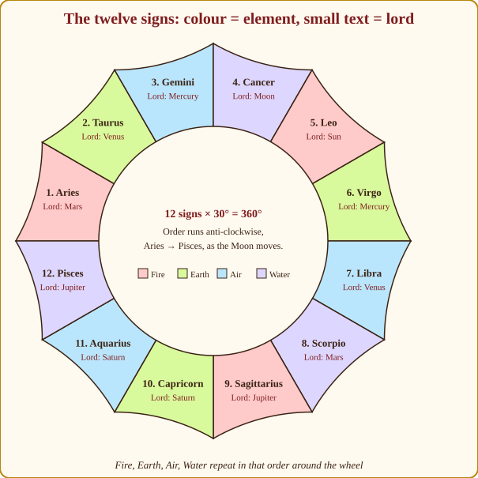
Figure 2.1: The twelve signs. The colours show the four elements — fire, earth, air, water — which repeat in that order three times around the wheel. The small text under each name is the sign's lord.
🧭 Guruji's rule of thumb: A sign never does anything by itself. An empty sign is an empty costume on a hook. It matters only when a planet puts it on, or when it sits in a house and colours that house's affairs through its lord.
The four elements: what kind of energy
Every sign belongs to one of four elements (Tattvas), and they repeat in a strict order around the wheel: fire, earth, air, water, fire, earth, air, water, fire, earth, air, water. Aries is fire, Taurus earth, Gemini air, Cancer water — and then Leo starts the cycle again with fire.
I teach the elements as four kinds of people you meet at any Indian wedding.
Fire signs (Aries, Leo, Sagittarius) are the uncle organising everything, loudly. Fire is initiative, heat, faith, ego, action before thought. Fire people want to do, to lead, to be seen. Their gift is courage and warmth; their trap is impatience and pride. Fire signs face east in the classical scheme — the direction of sunrise, of beginnings.
Earth signs (Taurus, Virgo, Capricorn) are the aunt who has counted the plates and knows the caterer's rate. Earth is practicality, patience, the body, money, things you can touch. Earth people build slowly and keep what they build. Their gift is reliability; their trap is stubbornness and worry about material things. Earth faces south.
Air signs (Gemini, Libra, Aquarius) are the cousins who have talked to everyone in the hall and know all the gossip. Air is thought, speech, relationships, ideas, movement between people. Air people connect and communicate. Their gift is intelligence and fairness; their trap is restlessness and living in the head. Air faces west.
Water signs (Cancer, Scorpio, Pisces) are the grandmother in the corner who has noticed who is unhappy and why. Water is feeling, memory, intuition, depth. Water people absorb the mood of a room. Their gift is empathy and imagination; their trap is moodiness and holding on to old hurts. Water faces north.
📖 Story: Four kinds of village. Walk the ring road of the kingdom and you pass four kinds of village, over and over. First a festival village (fire), where somebody is always drumming, a new temple is always being started, and nobody has finished the last one. Then a granary village (earth), where every sack is counted, the walls are thick, and a stranger is fed before he is questioned. Then a market town (air), where everyone is talking, bargaining, carrying news from the last village to the next. Then a river village (water), where the old women remember every flood and every kindness, and the mood of the whole place changes with the tide. Then the drum starts again. Whatever planet moves into a village takes on its habits: the Commander in the market town argues instead of fighting; the Prince in the river village writes poetry instead of accounts. Rule: Fire acts, earth keeps, air connects, water feels — and they repeat in that order, Aries to Pisces.
Now watch what the element does to a planet. Mercury (speech, intellect) in a fire sign speaks fast and boldly, sometimes before thinking. Mercury in earth speaks carefully about practical matters. Mercury in air is the natural debater and salesman. Mercury in water speaks from feeling, in poetry and hints. One planet, four costumes, four kinds of speech. You did not memorise that; you derived it.
The three qualities: how the energy moves
Cut the wheel a second way. Every sign is also one of three qualities (some teachers say "modes"), and these repeat in the order movable, fixed, dual.
Movable signs (Chara: Aries, Cancer, Libra, Capricorn) start things. They are the first sign of each season in the old calendar — the pushers, the movers, the ones who pack their bags. A planet in a movable sign acts quickly, changes direction easily, likes travel and new projects. A client with many planets in movable signs will tell you she has lived in six cities.
Fixed signs (Sthira: Taurus, Leo, Scorpio, Aquarius) hold things. They are the middle of each season, when the weather has settled. A planet here is steady, loyal, slow to begin and very slow to stop. Fixed-sign people keep the same job, the same spouse, the same barber for thirty years — and the same grudge.
Dual signs (Dwiswabhava, "two-natured": Gemini, Virgo, Sagittarius, Pisces) adapt. They sit at the turn of the season, one foot in each. A planet here is flexible, thoughtful, capable of seeing both sides — and capable of never quite deciding. Dual signs give teachers, writers, advisers: people who carry information from one world to another.
📖 Story: Three kinds of shopkeeper. In every one of those villages you meet three kinds of shopkeeper. The hawker (movable) arrives with the season, sets up a bright new stall, sells fast, and is gone to the next town before you have learned his name. The old shop (fixed) has stood on the same corner for forty years; the owner will not change the sign, the prices or his opinion, and his customers' grandchildren still come. The trader (dual) keeps one foot in each town, buying here and selling there, always able to see both sides of a bargain and sometimes unable to close it. A planet that moves in becomes that shopkeeper: Saturn in a movable sign hurries, which is not like him; Mars in a fixed sign digs in for a siege; Jupiter in a dual sign teaches by comparing. Rule: Movable starts, fixed holds, dual adapts — repeating in that order round the wheel.
Put element and quality together and each sign has a two-word character before you have learned anything else about it. Aries is movable fire: a spark that jumps. Taurus is fixed earth: a rock. Gemini is dual air: a breeze that changes direction. Cancer is movable water: a river. Leo is fixed fire: a steady hearth. Virgo is dual earth: garden soil, worked and reworked. Libra is movable air: wind. Scorpio is fixed water: a deep well. Sagittarius is dual fire: a torch carried from place to place. Capricorn is movable earth: a mountain road. Aquarius is fixed air: the atmosphere itself, the still sky. Pisces is dual water: the ocean, always two tides.
💡 Did you know? The movable–fixed–dual pattern is a calendar. In the old tropical scheme, the movable signs began the seasons (Aries at spring, Cancer at summer, Libra at autumn, Capricorn at winter), the fixed signs were mid-season, and the dual signs were the change-over months. Our sidereal signs have drifted about 24° from those seasonal points, but the characters stayed with the signs.
Odd and even: active and receptive
One more cut, and it is the simplest. Count the signs from Aries. The odd-numbered ones (Aries 1, Gemini 3, Leo 5, Libra 7, Sagittarius 9, Aquarius 11) are called male, or active. The even-numbered ones (Taurus 2, Cancer 4, Virgo 6, Scorpio 8, Capricorn 10, Pisces 12) are female, or receptive.
Do not read "male" and "female" as gender predictions; that is a beginner's mistake and a client's embarrassment. Read them as outgoing and inward-drawing. All fire and air signs are odd; all earth and water signs are even. So the odd signs push energy out, and the even signs pull energy in and hold it. A planet in an odd sign expresses; a planet in an even sign absorbs. We will use odd/even again in Chapter 11 when dividing signs into smaller charts, and in Chapter 19 when we judge, for instance, whether a planet's promise shows outwardly or privately.
Who owns what: the lordship symmetry
Every sign has an owner, the sign lord (Rashi Adhipati). Here they are:
Sign
Lord
Sign
Lord
Aries
Mars
Libra
Venus
Taurus
Venus
Scorpio
Mars
Gemini
Mercury
Sagittarius
Jupiter
Cancer
Moon
Capricorn
Saturn
Leo
Sun
Aquarius
Saturn
Virgo
Mercury
Pisces
Jupiter
Students groan at this table. Twelve facts to memorise! But look at it the way my teacher showed me, and it collapses into six facts you cannot forget.
Put the two lights at the top: the Moon owns Cancer, the Sun owns Leo. They sit side by side, at the height of summer in the old calendar — the brightest, warmest part of the year, owned by the two brightest bodies. Now walk away from them in both directions at once. One step from Cancer backwards is Gemini; one step from Leo forwards is Virgo. Both belong to Mercury — the planet closest to the Sun. Another step each way: Taurus and Libra, both Venus, the next planet out. Another step: Aries and Scorpio, both Mars. Another: Pisces and Sagittarius, both Jupiter. The last step: Aquarius and Capricorn, both Saturn, the farthest planet the ancients could see, sitting at the coldest, darkest bottom of the wheel, opposite the lights.
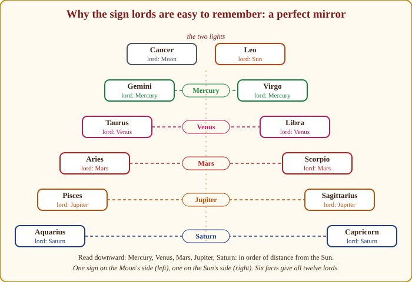
Figure 2.2: The lordship mirror. Cancer and Leo, owned by the Moon and Sun, sit at the top. Each planet further from the Sun owns the next pair outward — Mercury, Venus, Mars, Jupiter, Saturn — one sign on the Moon's side and one on the Sun's side.
📖 Story: The twelve districts of the kingdom. Picture the kingdom as a ring of twelve districts. At the summer end of the ring stand two palaces side by side: the Queen Mother's (Cancer, the Moon) and the King's (Leo, the Sun). The King does not govern the outer districts himself. He posts his ministers outward in pairs — one on the Queen Mother's side, one on his own — nearest first. The young Prince-Secretary (Mercury), who must run back and forth with messages, gets the two districts touching the palaces: Gemini and Virgo. The Minister of Arts (Venus), next in the procession, receives Taurus and Libra. The Commander (Mars), who guards the borders, takes Aries and Scorpio. The Royal Priest (Jupiter) is sent further out to teach the towns, Pisces and Sagittarius. And the old Judge of Labour (Saturn) governs the two cold districts farthest from the palaces, at the winter end of the ring: Aquarius and Capricorn. Each minister's two districts have different soil, so each has a day-side manner and a night-side manner. Rule: Sign lords mirror outward from Cancer and Leo in order of distance from the Sun — Mercury, Venus, Mars, Jupiter, Saturn.
This is not a coincidence; it is the design. The ancients arranged the lordships by distance from the Sun, and made the pattern a mirror so it could be remembered by anyone who knew the order of the planets. Once you see it, you will never look up a sign lord again. Ask yourself: which side of the mirror, and how many steps from the lights?
Notice one more thing the mirror gives you for free. Each planet's two signs are always of different elements and different qualities — Mercury owns airy, dual Gemini and earthy, dual Virgo; Mars owns fiery, movable Aries and watery, fixed Scorpio. A planet with two homes has two moods. Mars in Aries is an open-field warrior; Mars in Scorpio is the same warrior working at night. Which home suits a planet better will occupy us in a moment when we come to Moolatrikona.
⚠️ Common beginner mistake: Western books give Uranus, Neptune and Pluto as rulers of Aquarius, Pisces and Scorpio. Jyotish does not. In every Parashari text, Saturn owns Aquarius, Jupiter owns Pisces, Mars owns Scorpio. If your software shows the outer planets, switch them off; the whole system of lords, aspects and dashas assumes nine grahas and no more.
The Cosmic Man: signs as the body
The old texts imagine the whole zodiac as one enormous being — the Cosmic Man (Kala Purusha, "the person made of time"). Aries is his head, Taurus his face and throat, and so on down to Pisces, his feet. This is not poetry for its own sake. It is the basis of medical astrology, and, as you will see in Chapter 4, of why the houses mean what they mean.
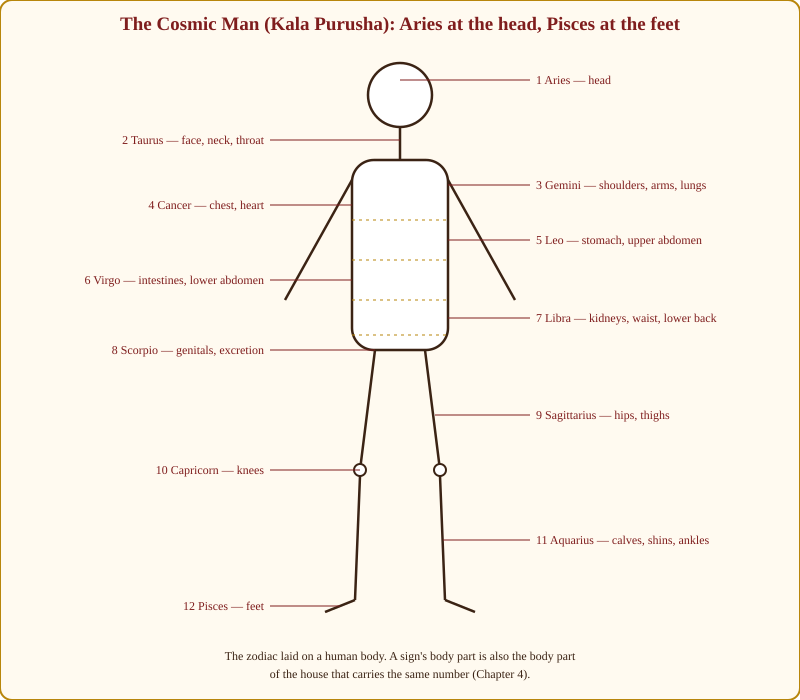
Figure 2.3: The Kala Purusha. Read from head to feet. A sign's body part is also the body part of the house with the same number in the natural chart.
Keep this picture in mind as we now walk through the twelve signs one by one. For each I give the symbol, lord, element, quality, body part, temperament, what the sign does to a visiting planet, a one-line sketch of the sign as a rising sign (the full treatment of each Lagna is in Chapter 5), and one example. Do not try to memorise the paragraphs. Try to see the person.
1. Aries (Mesha) — the Ram
Lord Mars; movable fire; odd; the head. Symbol: the ram that charges head-first. Aries is the first breath of the zodiac — the infant's cry, the starting gun. Its temperament is direct, quick, impatient, physically brave, occasionally tactless. Aries does not plan; Aries goes.
A planet placed in Aries becomes faster, hotter and more assertive. Gentle planets can lose their softness here (Venus in Aries loves impulsively; Saturn in Aries, its sign of debilitation, is a patient old man forced to run). Bold planets thrive: the Sun is exalted in Aries, a king leading from the front.
As a Lagna: a lean, energetic body, a scar on the head or face is common, a person who speaks first and thinks later, and who recovers from every fall by standing up again. Example: Mercury in Aries — a quick, blunt speaker who is good at starting arguments and better at ending them by walking away.
2. Taurus (Vrishabha) — the Bull
Lord Venus; fixed earth; even; the face, neck and throat. The bull grazes, stores fat for winter, and does not move unless it wishes to. Taurus is comfort, possessions, food, beauty, the pleasure of the senses, and a stubbornness that outlasts every argument.
A planet in Taurus slows down and becomes practical and sensual. The Moon is exalted here — the mind at rest, well fed, secure. Rahu, by mainstream teaching, is also exalted here: the hunger for more finds a bottomless plate. Fiery planets lose some fire (Mars in Taurus works hard but resents being told to hurry).
As a Lagna: a solid build, a pleasant voice (the throat is Taurus), a love of good food and a fine house, and a temper that takes a long time to rise and a longer time to fall. Example: Jupiter in Taurus, as in Chart A (Meera's 7th house), makes the teacher's wisdom practical and financial — the guru who also manages the temple accounts.
3. Gemini (Mithuna) — the Couple
Lord Mercury; dual air; odd; the shoulders, arms and lungs. The symbol is a man and a woman — two natures in conversation. Gemini is curiosity, speech, writing, trade, humour, the mind that wants to know a little about everything.
A planet in Gemini becomes talkative, adaptable and mentally busy. It gains cleverness and loses some staying power. The Moon in Gemini is a mind that never stops chattering; Saturn in Gemini becomes the disciplined researcher, and is comfortable, since Mercury and Saturn are friends.
As a Lagna: a tall or wiry frame, expressive hands, a quick wit, and a tendency to have two jobs, two hobbies, or two opinions at once. Example: Mars and Venus in Gemini in Chart C (Devika's 3rd house) — energy and charm poured into communication, siblings and short journeys; she talks her way into and out of everything.
4. Cancer (Karka) — the Crab
Lord Moon; movable water; even; the chest, heart and breasts. The crab carries its home on its back and moves sideways towards what it wants. Cancer is nourishment, mother, memory, home, tides of feeling, and a fierce protectiveness once you are inside its circle.
A planet in Cancer softens, becomes emotional, caring and cautious. Jupiter is exalted here — wisdom becomes compassion, the guru becomes the mother. Mars is debilitated here — the soldier does not know whom to fight when the enemy is a feeling.
As a Lagna: a round face, a soft body that gains weight easily, a person who remembers every kindness and every insult, and who is most themselves at home. Example: the Moon in Cancer in Chart A — Meera's Moon sits in its own sign in the 9th house, an emotional mind that finds rest in faith, teachers and philosophy.
5. Leo (Simha) — the Lion
Lord Sun; fixed fire; odd; the upper abdomen and stomach. The lion does not hunt often, but when it walks everyone notices. Leo is dignity, authority, generosity, performance, and the need to be respected.
A planet in Leo becomes proud, visible and steady. It wants an audience and a title. Mercury in Leo speaks with authority (and sometimes lectures); Saturn in Leo, in the house of its enemy the Sun, is the servant who resents the king — hard-working but sullen.
As a Lagna: a broad forehead, a strong upper body, a commanding presence even when short, and a hunger for recognition that, well handled, becomes leadership. Example: Ketu in Leo in Chart A (Meera's 10th house) — a career in which the ego is gradually dissolved; she teaches and consults but shrinks from titles.
6. Virgo (Kanya) — the Maiden
Lord Mercury; dual earth; even; the intestines and lower abdomen. The maiden carries a sheaf of grain — harvest, sorting, separating the good seed from the chaff. Virgo is analysis, detail, service, health, craft, and the critic's eye that sees the one crooked tile in a floor of a thousand.
A planet in Virgo becomes precise, careful and useful — and sometimes anxious. Mercury is both lord and exalted here; the analytical mind at its sharpest. Venus is debilitated here — love put under a microscope loses its warmth.
As a Lagna: a neat, youthful appearance, a sensitive digestion, a habit of correcting other people's grammar, and a genuine desire to be of use. Example: Saturn in Virgo — the auditor, the quality inspector, the person who reads the fine print and is right about it.
7. Libra (Tula) — the Scales
Lord Venus; movable air; odd; the kidneys, lower back and waist. The scales weigh. Libra is balance, partnership, justice, diplomacy, beauty in proportion, and the trader's instinct for a fair price.
A planet in Libra becomes social, refined and concerned with the other person's view. Saturn is exalted here — discipline becomes justice; the judge. The Sun is debilitated here — the king cannot rule by consensus, and Libra insists on consensus.
As a Lagna: a graceful build, attractive features, a pleasing manner, a deep dislike of ugliness and rudeness, and a tendency to see so many sides that deciding becomes hard. Example: Venus in Libra in Chart A (Meera's 12th house) — Venus in its own sign, charm and taste turned inward, expressed through private life and foreign connections.
8. Scorpio (Vrishchika) — the Scorpion
Lord Mars; fixed water; even; the genitals and excretory organs. The scorpion lives under a stone and strikes when stepped on. Scorpio is intensity, secrecy, transformation, research, healing and surgery, loyalty unto death, and a memory for betrayal.
A planet in Scorpio becomes deep, guarded and forceful, working beneath the surface. The Moon is debilitated here — the sensitive mind in a sign that never forgets a wound. Ketu, by mainstream teaching, is exalted here: detachment learned through crisis.
As a Lagna: a magnetic gaze, a compact strong body, a private nature that reveals nothing until it trusts, and a gift for professions dealing with what is hidden — medicine, investigation, the occult, insurance. Example: the Sun and Mercury in Scorpio in Chart A — Meera's first house, a penetrating mind that speaks little and sees much.
9. Sagittarius (Dhanu) — the Archer
Lord Jupiter; dual fire; odd; the hips and thighs. The archer aims at a distant target — half man, half horse, the philosopher on the move. Sagittarius is faith, teaching, law, ethics, long journeys, optimism, and an urge to find the meaning behind things.
A planet in Sagittarius becomes expansive, principled and a little preachy. It thinks in big pictures and speaks in sermons. Saturn in Sagittarius, as in Chart A, becomes the disciplined student of philosophy: slow, thorough, respectful of tradition.
As a Lagna: a tall or long-legged body, a wide smile, a love of horses, travel and argument about God, and the risk of promising more than the day allows. Example: the Moon in Sagittarius in Chart C (Devika's 9th house) — a mind that is happiest with a book of philosophy and a train ticket.
10. Capricorn (Makara) — the Crocodile
Lord Saturn; movable earth; even; the knees. The Indian symbol is not a goat but the makara, a crocodile-like river creature — patient, armoured, waiting. Capricorn is ambition, structure, duty, hierarchy, and the long climb that reaches the top by not stopping.
A planet in Capricorn becomes serious, methodical and status-conscious. Mars is exalted here — energy given a plan and a chain of command; the engineer, the general. Jupiter is debilitated here — generosity is asked to pass an audit.
As a Lagna: a lean, bony frame, a face that looks old when young and young when old, a dry humour, and a life that improves steadily after thirty. Example: Venus in Capricorn in Chart B (Arjun's 7th house) — love that is loyal, practical and slow to declare itself; a spouse met through work or an elder.
11. Aquarius (Kumbha) — the Water-pot
Lord Saturn; fixed air; odd; the calves, shins and ankles. The pot holds water for the whole village. Aquarius is the community, the network, science, reform, the outsider who works for the group, and a stubborn attachment to principles.
A planet in Aquarius becomes detached, idealistic and unconventional. It thinks of systems and crowds rather than individuals. Saturn is at home here (and its Moolatrikona, which we come to shortly); this is Saturn's public face, the builder of institutions. Rahu in Aquarius, as in Chart A's 4th house, is the mind pulled towards foreign lands, technology and unconventional homes.
As a Lagna: a tall frame with strong calves, a philosophical detachment, many acquaintances and a few deep friends, and a habit of arriving at conclusions nobody else has reached yet. Example: Sun, Mercury and Saturn in Aquarius in Chart B — Arjun's 8th house holds three planets in Saturn's sign: research, insurance, hidden systems, the patient uncovering of secrets.
12. Pisces (Meena) — the Fishes
Lord Jupiter; dual water; even; the feet. Two fish swimming in opposite directions, tied together. Pisces is compassion, imagination, dreams, sacrifice, faith without argument, and the dissolving of boundaries between self and other.
A planet in Pisces becomes gentle, intuitive and unworldly. Venus is exalted here — love without conditions. Mercury is debilitated here — the analytical mind loses its edges in the sea of feeling. Mars in Pisces, as in Chart A's 5th house, is the warrior turned poet: energy that comes in waves and prefers a cause to a fight.
As a Lagna: a soft, often plump body, large expressive eyes, a tendency to be swept along by others' needs, and a natural leaning towards healing, art, or the spiritual life. Example: Jupiter in Pisces — the compassionate teacher who cannot say no to a student, and whose wisdom arrives as feeling before it arrives as words.
Where each planet is strongest and weakest
You have met, in passing, the idea that a planet has a sign where it is exalted (Uchcha, "high") and a sign where it is debilitated (Neecha, "low"). Here is the complete picture, with the exact degree of deepest exaltation and deepest fall. These numbers agree with Appendix A.2, and every chapter in this book uses them.
Planet
Exaltation (deepest at)
Debilitation (deepest at)
Own signs
Moolatrikona
Sun
Aries 10°
Libra 10°
Leo
Leo 0°–20°
Moon
Taurus 3°
Scorpio 3°
Cancer
Taurus 3°–30° (some texts 4°–20°)
Mars
Capricorn 28°
Cancer 28°
Aries, Scorpio
Aries 0°–12°
Mercury
Virgo 15°
Pisces 15°
Gemini, Virgo
Virgo 16°–20°
Jupiter
Cancer 5°
Capricorn 5°
Sagittarius, Pisces
Sagittarius 0°–10°
Venus
Pisces 27°
Virgo 27°
Taurus, Libra
Libra 0°–15°
Saturn
Libra 20°
Aries 20°
Capricorn, Aquarius
Aquarius 0°–20°
Rahu
Taurus (some say Gemini)
Scorpio (some say Sagittarius)
—
—
Ketu
Scorpio (some say Sagittarius)
Taurus (some say Gemini)
—
—
Three things to notice, and one memory trick.
First: debilitation is always exactly opposite exaltation. Sun exalted in Aries, debilitated in Libra, the 7th sign from Aries. Moon: Taurus and Scorpio. Mars: Capricorn and Cancer. Learn the exaltations and you get the debilitations free.
Second: the degrees are the same on both sides. Sun 10° and 10°; Mars 28° and 28°. So there are only seven numbers to learn: 10, 3, 28, 15, 5, 27, 20.
Third: a planet is not weak the moment it enters its debilitation sign, nor a hero the moment it enters its exaltation. Strength rises towards the deepest degree and fades away from it. Mars at 2° Capricorn is comfortable; Mars at 28° Capricorn is at the summit.
The memory trick my teacher gave me: the exaltation is where the planet's nature is most needed. The Sun (authority) is exalted in Aries, the sign of starting — every new venture needs a leader. The Moon (nourishment) in Taurus, the sign of food and comfort. Mars (drive) in Capricorn, the sign of structured ambition. Mercury (analysis) in Virgo, the sign of detail. Jupiter (wisdom) in Cancer, the sign of the heart — wisdom that cares. Venus (love) in Pisces, the sign of boundless compassion. Saturn (justice, endurance) in Libra, the sign of the scales. Now look at the debilitations: each planet's nature is most out of place there. A king in the sign of consensus; the tender mind in the sign of poison; the soldier in the nursery; the analyst in the ocean; the generous priest in the accountant's office; love under a microscope; the slow judge told to charge.
🪔 Consultation tip: When a client's chart has a debilitated planet, say what it asks for before you say what it lacks: "Your Moon is in Scorpio — it asks you to make peace with intensity; people with this Moon make fine counsellors and researchers once they stop fearing their own depth." Then, and only then, mention any caution. The order of the sentences is the difference between a client who leaves frightened and one who leaves understood.
Moolatrikona: the planet's office
A planet with two own signs prefers one of them for work. That preferred stretch is its Moolatrikona ("root triangle"). The Sun, with only Leo, uses the first 20° of Leo as Moolatrikona and the last 10° as merely "own". The Moon's Moolatrikona is in Taurus, not Cancer — the Moon works best where it is fed. Mars prefers Aries (0°–12°); Mercury prefers Virgo (16°–20°); Jupiter prefers Sagittarius (0°–10°); Venus prefers Libra (0°–15°); Saturn prefers Aquarius (0°–20°).
The order of strength, from top to bottom, is a ladder of seven rungs. Colour it in your mind — green for comfortable, amber for indifferent, red for uncomfortable:
Rung
Dignity
Picture
Comfort
1
Exaltation
the summit
🟢
2
Moolatrikona
the office
🟢
3
Own sign
the home
🟢
4
Friend's sign
a friend's house
🟢
5
Neutral's sign
a hotel
🟡
6
Enemy's sign
an enemy's house
🔴
7
Debilitation
the ditch
🔴
We will weigh these formally in Chapter 12 (planetary strength). For now, just get the ladder into your bones.
⚠️ Common beginner mistake: Beginners see "debilitated" and predict disaster. A debilitated planet is not a broken planet; it is a planet in unfamiliar clothes. Some of the finest surgeons I know have a debilitated Moon in Scorpio — the mind that can look steadily at what others turn away from. Debility is a style before it is a weakness, and it is frequently cancelled (Neecha Bhanga, Chapter 10). Never frighten a client over one word in a table.
Putting a costume on a planet: a small drill
Let me show you how I want you to think, using the one chart you already know.
Meera's Saturn is in Sagittarius. Do not reach for a list. Ask: who is Saturn? Discipline, delay, labour, the servant who does the long work. What is Sagittarius? Dual fire, Jupiter's sign — faith, teaching, law, the search for meaning. Now dress the planet. Saturn in Sagittarius: discipline applied to learning; the slow, thorough student of tradition; someone who takes faith seriously and works at it rather than merely inheriting it. Saturn and Jupiter are neutral to each other, so Saturn is neither delighted nor uncomfortable here — a tenant in a respectable hotel. That is the reading, and it took three questions.
Try Arjun's Mars in Leo. Who? Mars: energy, courage, command. Costume? Leo: fixed fire, the Sun's sign — dignity, authority, visibility. Mars and the Sun are friends, so Mars is at ease here: proud, steady energy that likes a title and a stage. Add that Mars is retrograde (we explain that in Chapter 3), and you get energy that is intensified and turned inward — the commander who plans in private and moves decisively in public.
Three questions, every time: Who is the planet? What does the sign ask of it? Are the two friends? The lists in the old books are the answers other people got to those three questions. You can get your own.
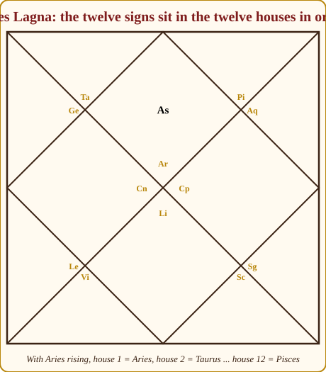
Figure 2.4: The twelve signs in the twelve houses when Aries rises. Each house holds the sign of the same number. This is the "natural" arrangement we will use in Chapter 4 to explain why the houses mean what they mean.
In one breath
A sign is a 30° slice of the zodiac belt; it is how a planet behaves — its costume, not its identity.
Four elements repeat in order (fire, earth, air, water): action, substance, thought, feeling.
Three qualities repeat in order (movable, fixed, dual): start, hold, adapt.
Odd signs push outward; even signs draw inward. All fire/air signs are odd; all earth/water signs are even.
Sign lords form a mirror: Moon–Cancer and Sun–Leo at the top, then Mercury, Venus, Mars, Jupiter, Saturn fanning out on both sides in order of distance from the Sun.
The Kala Purusha maps Aries (head) to Pisces (feet); this body map returns as the houses' body parts.
Exaltation and debilitation are exactly opposite, at the same degree; Moolatrikona is a planet's working office within its own signs.
Read any planet in any sign with three questions: who is the planet, what does the sign ask, are they friends.
Practice
✍️ Practice:
1. Without looking at the table, write the lords of Pisces, Virgo and Aquarius. Then check them against the mirror in Figure 2.2 and explain, in one sentence, how the mirror gave you each answer.
2. Name the element and quality of Scorpio, Gemini and Capricorn, and give each a two-word nature (like "movable fire").
3. Meera's Venus is in Libra. Answer the three questions (who, what does the sign ask, are they friends) and write a two-sentence reading.
4. A client's Jupiter is at 4° Capricorn. Is it exalted, debilitated, or neither? Is it near the deepest point? What would you say to the client that is honest and not frightening?
5. Look at Figure 2.3. If someone with Aries rising complains of recurring knee trouble, which sign — and therefore which house in their chart — would you examine first? (Chapter 4 will confirm the logic.)
Answers
1. Pisces → Jupiter; Virgo → Mercury; Aquarius → Saturn. Pisces is four steps back from Cancer on the Moon's side, and the fourth planet out from the Sun is Jupiter. Virgo is one step forward from Leo on the Sun's side, and the first planet out is Mercury. Aquarius is five steps back from Cancer; the fifth planet out is Saturn.
2. Scorpio: fixed water — a deep well. Gemini: dual air — a shifting breeze. Capricorn: movable earth — a mountain road.
3. Venus is love, beauty, harmony and pleasure. Libra is Venus's own sign — balance, partnership, refinement — so Venus is at home and comfortable. Reading: Meera has refined taste and a strong sense of fairness in relationships; because this Venus sits in the 12th house, her love of beauty and comfort shows in private life, foreign connections and quiet luxuries rather than public display.
4. Jupiter is debilitated in Capricorn, and 4° is close to the deepest point (5°). Honest phrasing: "Your Jupiter is in a sign that asks it to be practical and cautious rather than expansive. Generosity and optimism may feel like they need justification, and faith may be something you earn slowly through work. Many people with this placement become excellent at building real, lasting institutions." Then check for cancellation (Neecha Bhanga) before saying more.
5. Knees belong to Capricorn, the 10th sign. With Aries rising, Capricorn is the 10th house, so examine the 10th house and its lord Saturn first.
Chapter 3: The Nine Planets (Grahas) — The Actors
Every drama needs actors, and ours has exactly nine. Not a hundred, not a thousand. Nine characters whose natures you can learn as well as you know your own relatives — and, like relatives, once you understand what each one wants, you can predict what they will do at any wedding.
The Sanskrit word graha means "that which seizes". Two of the nine are the lights (Sun and Moon), five are the naked-eye planets (Mars, Mercury, Jupiter, Venus, Saturn), and two are shadows (Rahu and Ketu) — the points where eclipses happen. Astrology treats all nine as persons with temperaments, friendships and grudges. This chapter introduces each properly: their stories, what they stand for, where they are strong and weak, how fast they move, and how you can see a strong or weak planet in the person across the table.
The royal court
The oldest and best way to hold all nine in mind is the court of a king, which the texts themselves use and which this whole book will keep returning to. The Sun is the King; the Moon the Queen Mother; Mars the Commander; Mercury the clever young Prince-Secretary; Jupiter the Royal Priest and chief minister, Guru-ji; Venus the Minister of Arts and Pleasure, Shukracharya; Saturn the old Judge of Labour, Shani-ji, who rose from the servants' quarters. Rahu is the smoke-headed Stranger at the gate; Ketu the Headless Sadhu outside the wall. Put the Commander in the Queen Mother's private rooms and you already expect friction; seat the Priest in the throne room and you expect dignity. The court gives you a reading before you know a single rule.
Benefics and malefics — and why
The texts sort the planets into gentle ones (natural benefics, Shubha) and harsh ones (natural malefics, Krura or Papa). Jupiter and Venus are benefics. Saturn, Mars, Rahu and Ketu are malefics; the Sun is a mild malefic — a king is cruel by office, not by temperament. Two planets change sides, and the reason is worth knowing because it is the first piece of logic in the whole system.
The Moon is benefic when bright and malefic when dark: from about the eighth day after the new moon to about the eighth day after the full moon it is strong in light and counts as a benefic; in the dark fortnight around the new moon it counts as a malefic. A well-fed mind is kind; a starved mind frets. The tithi (lunar day) of birth tells you which Moon you have.
Mercury takes the nature of its company: alone or with benefics it is a benefic; with malefics it turns malefic. Mercury with Jupiter is a scholar; with Saturn a shrewd auditor; with Mars a sharp tongue.
Planet
Natural nature
Jupiter
🟢 great benefic
Venus
🟢 benefic
Moon
🟢 when bright (waxing) · 🔴 when dark (waning)
Mercury
🟡 takes the nature of its company
Sun
🔴 mild malefic (cruel by office)
Mars
🔴 malefic
Saturn
🔴 great malefic
Rahu, Ketu
🔴 shadow malefics
"Malefic" does not mean "evil". A malefic gives results through pressure, effort, separation and delay; a benefic through ease, growth and support. The surgeon's knife is malefic, the nurse's hand benefic; you need both to get well. And in Chapter 8 you will see a natural malefic become a functional benefic for a particular Lagna, and vice versa.
🧭 Guruji's rule of thumb: Benefics give; malefics make you earn. A house with a benefic receives; a house with a malefic works — and what is earned by work usually lasts longer.
Sun (Surya) — the King
Story. Surya, son of the sage Kashyapa and Aditi, rides a chariot of seven horses driven by the dawn. His wife Sanjna could not bear his blaze and left her shadow, Chhaya, in her place; from Chhaya was born Saturn, whom the Sun never fully accepted — which is why father and son are enemies in the friendship table.
What it signifies. The soul, the father, authority, government and administration, the right eye, bones, the heart as the seat of vitality, ego, fame, health in general, kings and heads of organisations.
Positions. Own sign Leo; Moolatrikona Leo 0°–20°; exalted at Aries 10°; debilitated at Libra 10°. Speed: about one sign a month, the whole zodiac in a year.
Strong Sun in a person. Steady confidence without noise; natural authority that others accept; good digestion and stamina; a healthy relationship with the father; the ability to say "no" once and mean it. Weak Sun. Shrinking from the spotlight or over-claiming it; low vitality; difficulty with fathers and bosses; a need for approval. Neither is a sentence: the weak Sun learns dignity, the strong Sun humility.
Example. Meera's Sun sits in Scorpio in her 1st house at 28°. It is neither exalted nor debilitated; Scorpio is Mars's sign and Mars is the Sun's friend, so the king is comfortable, and in the 1st house he is visible. The reading: a quietly authoritative presence, a strong constitution, an identity tied to depth and investigation rather than display.
Moon (Chandra) — the Queen
Story. Chandra married the twenty-seven daughters of Daksha — the twenty-seven nakshatras — but loved only Rohini. The neglected sisters complained, and Daksha cursed him to waste away. Shiva, moved by Chandra's penance, could not undo a father-in-law's curse, but he softened it: Chandra would wane for fifteen days and wax for fifteen. That is why the Moon has phases, and why the Moon spends a day in each nakshatra — it is visiting each wife in turn.
What it signifies. The mind and emotions, the mother, the public and its moods, fluids, nourishment, milk, the left eye, sleep, home comfort, the queen, and everything that ebbs and flows.
Positions. Own sign Cancer; Moolatrikona Taurus 3°–30° (some texts 4°–20°); exalted at Taurus 3°; debilitated at Scorpio 3°. Speed: about 2¼ days a sign, round the zodiac in 27.3 days — by far the fastest hand on the clock.
Strong Moon. A steady, receptive mind; emotional resilience; good sleep; warmth towards others; a nourishing relationship with the mother; popularity without effort. Weak Moon. Mood swings, anxiety, poor sleep, a sense of never being quite at home; sensitivity that becomes fragility.
Example. Meera's Moon is in Cancer, its own sign, in the 9th house at 21°. The queen is in her own palace, in the house of faith and teachers. Her emotional life is anchored in belief and learning; her mother is likely a devout or educated woman; she teaches from the heart.
Mars (Mangala) — the Commander
Story. Mars is Bhauma, the son of the Earth. In the Puranic tellings a drop of Shiva's sweat fell to the ground during his war with a demon, and from the earth sprang a red, fierce child whom Bhumi Devi raised. Mars belongs to the soil — to land, property, and the blood that is spilled defending them.
What it signifies. Energy, courage, anger, younger siblings, land and property, blood and muscles, surgery and weapons, the army and police, engineers, athletes, competition, the commander of the forces.
Positions. Own signs Aries and Scorpio; Moolatrikona Aries 0°–12°; exalted at Capricorn 28°; debilitated at Cancer 28°. Speed: about 45 days a sign, round in roughly two years.
Strong Mars. Decisiveness; physical courage; the ability to start and to finish; a healthy competitive streak; protective of family. Weak Mars. Aggression that misfires — quarrels, accidents, burns — or its opposite, difficulty asserting oneself; often chronic tiredness and letting others decide.
Example. Arjun's Mars is in Leo in the 2nd house at 21°, retrograde. Leo is the Sun's sign and the Sun is Mars's friend, so the commander is comfortable. In the 2nd house (speech, wealth, family) he speaks forcefully and earns through drive. Retrograde — a word we will unpack shortly — turns that force inward: he thinks before he strikes, and strikes harder for it.
Mercury (Budha) — the Prince
Story. Budha is the son of the Moon and Tara, the wife of Jupiter, whom the Moon carried away. When Tara returned, the child's brilliance made both Jupiter and the Moon claim him; Tara named the Moon as father. Mercury therefore carries the Moon's quickness and Jupiter's learning — and, in the friendship table, is uneasy with his own father the Moon.
What it signifies. Intellect, speech, writing, communication, trade and commerce, mathematics and accounts, nerves and skin, the maternal uncle, students, messengers, the prince and secretary.
Positions. Own signs Gemini and Virgo; Moolatrikona Virgo 16°–20°; exalted at Virgo 15°; debilitated at Pisces 15°. Speed: about a month a sign, never more than about 28° from the Sun — it darts ahead of the king and falls back, turning retrograde three times a year.
Strong Mercury. Clear speech, quick learning, wit, good handwriting and arithmetic, ease with languages and technology, a steady nervous system. Weak Mercury. Muddled speech, difficulty concentrating, nervousness, poor decisions in money and paperwork, or a cleverness that outruns honesty.
Example. Meera's Mercury is in Scorpio in the 1st house at 9°, with the Sun. Sun and Mercury together form Budha–Aditya yoga — intelligence and articulation — provided Mercury is not burnt by the Sun's closeness. It is 19° away, safely outside the 14° orb we will meet below. A penetrating, investigative intellect, expressed with care.
Jupiter (Guru / Brihaspati) — the Priest
Story. Brihaspati, son of the sage Angiras, is the teacher of the gods, the priest who knows the mantras that make sacrifices work. He is called Guru, "the heavy one" — heavy with wisdom, and, in the sky, the largest planet.
What it signifies. Wisdom, the teacher, children, wealth and expansion, dharma and religion, law, the husband in a woman's chart, the liver and fat, optimism, ministers and advisers.
Positions. Own signs Sagittarius and Pisces; Moolatrikona Sagittarius 0°–10°; exalted at Cancer 5°; debilitated at Capricorn 5°. Speed: about a year a sign, round in roughly twelve years.
Strong Jupiter. Generosity, faith that needs no proving, good judgement, children and students who flourish, money that arrives when needed. Weak Jupiter. Poor judgement in whom to trust, difficulties with teachers or children, over-optimism or cynicism, liver trouble, a hollow feeling about meaning.
Example. Meera's Jupiter is in Taurus in the 7th house at 8°, retrograde. Taurus is Venus's sign, and Venus is Jupiter's enemy — the priest in the house of pleasure, slightly stiff. Yet the 7th house is marriage and partnership, and a Jupiter there, even a slightly uncomfortable one, gives a partner who is learned, principled, and a little older in spirit.
Venus (Shukra) — the Minister of the Arts
Story. Shukracharya, son of the sage Bhrigu, is the teacher of the asuras. Through fierce penance he won from Shiva the Mrita Sanjeevani knowledge — the art of reviving the dead — which made his side unbeatable until the gods sent Brihaspati's son Kacha to learn it as his student.
What it signifies. Love, marriage, the wife in a man's chart, beauty and the arts, luxury, vehicles, music, perfume, diplomacy, the reproductive system, and ministers of pleasure and culture.
Positions. Own signs Taurus and Libra; Moolatrikona Libra 0°–15°; exalted at Pisces 27°; debilitated at Virgo 27°. Speed: about a month a sign, but, like Mercury, tied to the Sun — never more than about 48° from it.
Strong Venus. Charm without effort, taste, a happy marriage, comfort with money and pleasure, a good singing voice or an eye for design, ease in the body. Weak Venus. Difficulties in love, either from over-indulgence or from a fear of it; poor taste, or taste that money cannot satisfy; reproductive or kidney complaints.
Example. Meera's Venus is in Libra in the 12th house at 22°. Own sign, so comfortable; but the 12th is the house of expenses, bed pleasures, foreign lands and quiet withdrawal. Her love of beauty is real but private; she spends on comfort; a partner from far away, or a life abroad, is a thread to check.
Saturn (Shani) — the Servant and the Judge
Story. Shani is the son of the Sun and Chhaya, the shadow. Dark, slow and lame, he was not welcomed by his brilliant father. Saturn is the god of the labourer, the widow and the outcaste — everyone the court overlooks — and he does not forget a debt.
What it signifies. Longevity, discipline, sorrow and patience, labour and servants, delay, chronic disease, old age, bones, teeth and nerves, iron and oil, justice over the long run.
Positions. Own signs Capricorn and Aquarius; Moolatrikona Aquarius 0°–20°; exalted at Libra 20°; debilitated at Aries 20°. Speed: about 2½ years a sign, round in roughly 29½ years — the slow hand of the clock.
Strong Saturn. Endurance, method, honesty, respect for time and rules, achievement that comes late and stays. Weak Saturn. Fear, pessimism and chronic delay, or a rigid harshness towards oneself and others; joint and dental trouble; a sense of carrying the world alone.
Example. Arjun's Saturn is in Aquarius, its own sign and Moolatrikona, in the 8th house at 25°. Saturn is the natural karaka of the 8th and here it is at home: research, insurance, the long patient study of hidden systems. But it sits only 7° from the Sun — and that brings us to combustion.
💡 Did you know? Saturn takes about 29½ years to circle the zodiac. So around age 29–30, and again around 58–60, Saturn returns to where it was at your birth. Almost every tradition, East and West, marks these as turning points — the end of youth, the beginning of elderhood. Many a client who "suddenly got serious" at 29 was simply meeting Saturn again.
Rahu and Ketu — the Shadows
Story. When the gods and demons churned the ocean for the nectar of immortality (Samudra Manthan), a demon named Svarbhanu disguised himself and sat among the gods to drink it. The Sun and Moon recognised him and told Vishnu, who cut off his head with his discus — but the nectar had already passed his throat. The head lived on as Rahu, the body as Ketu. Rahu still chases the Sun and Moon to swallow them, which is why we see eclipses; Ketu, the body without a head, wants nothing and sees everything.
What they are. Not bodies at all. The Moon's orbit is tilted about 5° to the Sun's path, and the two crossing points are the lunar nodes: Rahu the north node, Ketu the south. Always exactly opposite, they slide backwards through the zodiac, about 18 months a sign, a full circle in about 18.6 years.
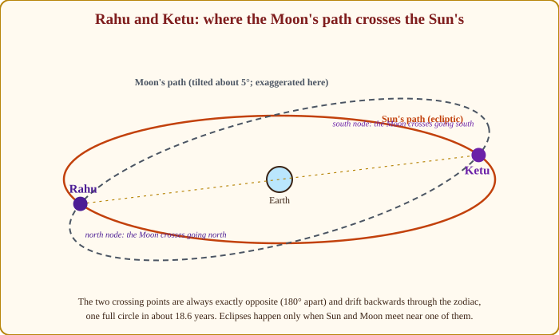
Figure 3.1: The eclipse axis. The Sun's path and the Moon's path cross at two points, Rahu and Ketu, always 180° apart. Eclipses happen only when the Sun and Moon meet near one of them — which is exactly what the story says.
📖 Story: The Stranger and the Sadhu. At the gate stands a Stranger with smoke for a head (Rahu): foreign clothes, restless eyes, hungry for everything inside. The King and Queen Mother exposed him at the churning of the ocean and the Commander threw him out, so he hates all three; his friends are in the People's Party — the Minister of Arts sells him pleasures, the Judge respects his patience, the Prince enjoys his cleverness. Outside the wall sits the Headless Sadhu (Ketu), his severed other half, who wants nothing. He too hates the two lights that unmasked him, but counts the fierce Commander, the detached Judge and the flower-bringing Minister of Arts as friends. Rule: Rahu is friendly to Venus, Saturn and Mercury, hostile to Sun, Moon and Mars; Ketu is friendly to Mars, Venus and Saturn, hostile to Moon and Sun (a working convention; sources vary).
What they signify.Rahu: obsession, ambition without limit, foreigners and foreign lands, technology, illusion and glamour, smoke and poison, sudden rise, the paternal grandfather. Ketu: detachment, liberation (moksha), past-life skills that come without effort, the occult and the mystical, sudden loss, wounds, the maternal grandfather.
Positions. They own no signs. The mainstream shorthand is "Rahu acts like Saturn, Ketu acts like Mars". Exaltation and debilitation are disputed: the common view is Rahu exalted in Taurus and debilitated in Scorpio, Ketu the reverse; some authors say Gemini and Sagittarius instead. I use the Taurus/Scorpio view and tell students so.
Strong Rahu is the immigrant who builds an empire; afflicted Rahu the person forever chasing the next thing. Strong Ketu is the healer or mathematician; afflicted Ketu cannot stay attached to anything, including their own well-being.
Example. Meera's Rahu is in Aquarius in the 4th (home, mother, property): an unconventional home, perhaps far from where she was born, a pull towards technology and foreign ways of living. Her Ketu is in Leo in the 10th: a career in which recognition matters less and less, and mastery that arrives without visible effort — very typical of teachers and consultants.
Who likes whom: the friendship table
Planets in each other's signs behave like guests, and how a guest behaves depends on the host. Here is Parashara's table of natural friendship (Naisargika Maitri), exactly as it stands in Appendix A.3.
Planet
🟢 Friends
🟡 Neutral
🔴 Enemies
Sun
🟢 Moon, Mars, Jupiter
🟡 Mercury
🔴 Venus, Saturn
Moon
🟢 Sun, Mercury
🟡 Mars, Jupiter, Venus, Saturn
(none)
Mars
🟢 Sun, Moon, Jupiter
🟡 Venus, Saturn
🔴 Mercury
Mercury
🟢 Sun, Venus
🟡 Mars, Jupiter, Saturn
🔴 Moon
Jupiter
🟢 Sun, Moon, Mars
🟡 Saturn
🔴 Mercury, Venus
Venus
🟢 Mercury, Saturn
🟡 Mars, Jupiter
🔴 Sun, Moon
Saturn
🟢 Mercury, Venus
🟡 Jupiter
🔴 Sun, Moon, Mars
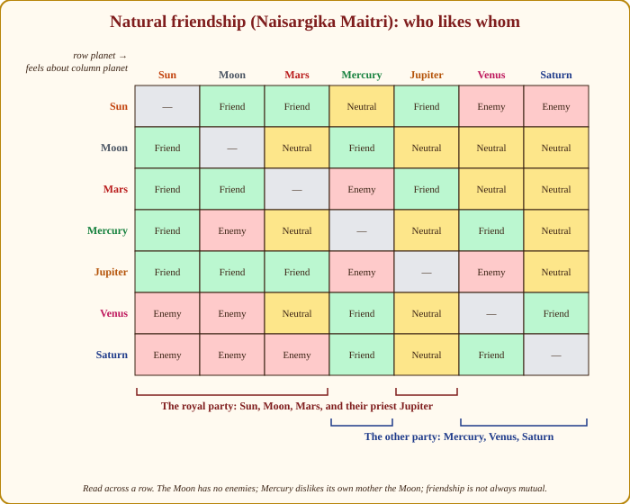
Figure 3.2: The friendship grid, colour coded — green friend, amber neutral, red enemy. Read across a row: how the row planet feels about the column planet. The two "parties" are bracketed underneath.
Do not memorise this grid cell by cell. Listen to the court instead — every cell is a grudge or a loyalty with a reason.
📖 Story: The two parties. Every court has two parties. At the King's right hand sits the Royal Party: the King himself (Sun), the Queen Mother (Moon), the Commander (Mars) and the Royal Priest, Guru-ji (Jupiter). They believe in throne, dharma and duty. Across the hall sits the People's Party: the clever young Prince-Secretary (Mercury), the Minister of Arts and Pleasure, Shukracharya (Venus), and the old Judge of Labour, Shani-ji (Saturn), who rose from the servants' quarters. They believe in trade, comfort, cleverness and the working man. Inside a party everyone is a friend or at least civil; across the aisle there is coolness, and a few open feuds that the next stories explain. Rule: Sun, Moon, Mars and Jupiter are friends or neutral to one another; so are Mercury, Venus and Saturn; every enmity in the table runs across the aisle.
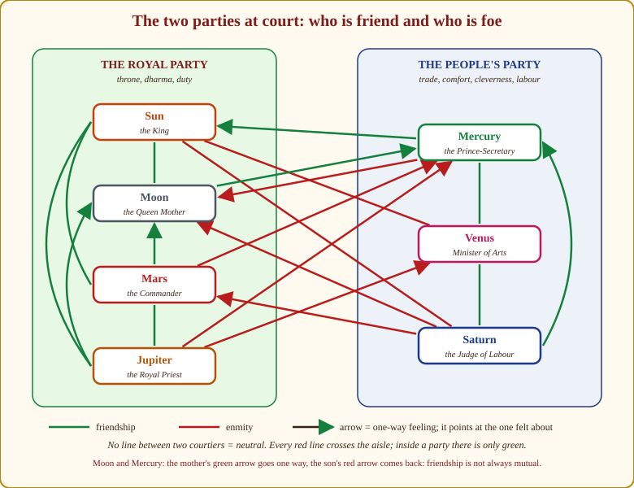
Figure 3.3: The two parties. Green lines are friendships, red lines enmities; an arrowhead means the feeling runs one way only; pairs with no line are neutral to each other.
📖 Story: The King and the Minister of Pleasure. The King (Sun) rises before dawn, bathes in cold water and expects the court to do the same. Shukracharya (Venus) keeps the court up till midnight with music, perfume and wine — and, worse, is the guru of the asuras, the King's sworn enemies, whom he has taught to revive their dead. The King calls him decadent; the Minister calls the King a bore. Neither has ever forgiven the other. Rule: Sun and Venus are mutual enemies.
📖 Story: The rejected son. Shani-ji (Saturn) was born dark and slow to the King and his wife's shadow, Chhaya. His brilliant father never accepted him. The Queen Mother's household (Moon) looked past the awkward boy; the hot young Commander (Mars) mocked his lame foot. Shani left, worked among the labourers, and slowly became the Judge of Labour, who keeps the ledger of everyone's work and forgets nothing. He counts all three as enemies. The King and the Commander return the feeling. The Queen Mother, who quarrels with no one, merely looks away. Rule: Saturn's enemies are Sun, Moon and Mars; Sun and Mars return the enmity; the Moon stays neutral.
📖 Story: Tara's son. The Moon carried away Tara, the wife of Guru-ji, and from that scandal the Prince, Budha (Mercury), was born. When Tara returned, both Guru-ji and the Moon claimed the brilliant child, and Tara named the Moon. The boy grew up quick, clever and ashamed of the story; he resents the parent who caused it and keeps his distance. But a parent's love does not depend on the child's gratitude: the Moon still counts Budha a friend. Rule: Mercury calls the Moon an enemy; the Moon calls Mercury a friend. Friendship in this table is not always mutual.
📖 Story: The Priest's two headaches. Guru-ji (Jupiter) preaches restraint, tradition and the sacred texts. Two people at court give him indigestion. Shukracharya (Venus), the rival guru who teaches the other side and laughs at restraint; and the Prince (Mercury), who is too clever by half and questions every sermon with a footnote. Guru-ji calls both enemies. Neither is much bothered — one is busy with a concert, the other with his accounts — so they hold nothing against the old priest and count him neutral. Rule: Jupiter regards Mercury and Venus as enemies; Mercury and Venus regard Jupiter as neutral.
📖 Story: The Commander and the Secretary. The Commander (Mars) wants his orders obeyed now. The Prince-Secretary (Mercury) wants them in writing, in triplicate, with three questions attached. Mars calls him an enemy and a coward. Mercury shrugs and files the complaint — he has no strong feelings about the loud man in armour. Rule: Mars counts Mercury an enemy; Mercury counts Mars neutral.
📖 Story: The Queen Mother has no enemies. Rani Ma (Moon) has fed everyone at this court. She is the King's closest friend, she loves the difficult Prince, and to the Commander, the Priest, the Minister of Arts and the Judge she is simply the one who asks whether they have eaten. Nobody is her enemy, and she is nobody's. Notice, too, that the King tolerates the Prince — the clever boy is always at his elbow — and so is neutral to him, though the Prince counts the King a friend and patron. Rule: The Moon's friends are Sun and Mercury, all others neutral, none enemies; the Sun is neutral to Mercury.
Rahu and Ketu are not in Parashara's table; their working conventions are in the Stranger-and-Sadhu story above, and I tell every student that sources vary.
Guest houses and humiliations: exaltation retold
Chapter 2 gave you the exaltation table. Here it is as a court story, because a story is remembered when a table is not.
📖 Story: Every courtier's favourite guest house. Each courtier has one district where the host's ways suit him perfectly, and one where he is quietly humiliated. The King (Sun) is honoured in Aries, the Commander's frontier fort, where a king is needed to lead the charge; he is humiliated in Libra, the Minister of Arts' salon, where every decision is put to a vote. The Queen Mother (Moon) rests in Taurus, the Minister's well-stocked kitchen; she is miserable in Scorpio, the Commander's night barracks. The Commander (Mars) is honoured in Capricorn, the Judge's fortress of five-year plans, and humiliated in Cancer, the Queen Mother's nursery. The Prince (Mercury) shines in Virgo, his own accounts office, and drowns in Pisces, the Priest's ashram by the sea. Guru-ji (Jupiter) is honoured in Cancer, the Queen Mother's house of compassion, and humiliated in Capricorn, the Judge's audit office. Shukracharya (Venus) is honoured in Pisces, the Priest's house of boundless kindness, and humiliated in Virgo, the Prince's office where love is itemised. And the Judge (Saturn) is honoured in Libra, the Minister's hall of scales where justice is weighed, and humiliated in Aries, the Commander's barracks, where the slow old man is told to run. Rule: Exaltation and debilitation are always opposite signs at the same degree — 10, 3, 28, 15, 5, 27, 20 for Sun, Moon, Mars, Mercury, Jupiter, Venus, Saturn.
Combustion: too close to the king
A planet that comes too near the Sun disappears in the glare: combustion (Asta, "set"). It does not stop giving results, but it gives them through the Sun's agenda — ego, father, authority — and its own matters suffer.
The approximate orbs are: Moon 12°, Mars 17°, Mercury 14° (12° when retrograde), Jupiter 11°, Venus 10° (8° when retrograde), Saturn 15°. Rahu and Ketu are never combust. Authors differ by a degree or two; these are the mainstream figures.
📖 Story: Blinded by the King. A courtier who stands too close to the throne is blinded by the King's glare. He can still speak, but he can only echo the King's words; his own business is forgotten. Each courtier can stand a different distance before he is dazzled: the Commander is blinded from 17° away, the Judge from 15°, the Prince from 14° (12° when he is walking backward), the Queen Mother from 12°, Guru-ji from 11°, and the Minister of Arts, who is used to bright lights, only from 10° (8° when retrograde). The Stranger and the Sadhu are smoke and shadow; no glare touches them. Rule: Within its orb of the Sun a planet is combust — it serves the Sun's agenda (ego, father, authority) rather than its own.
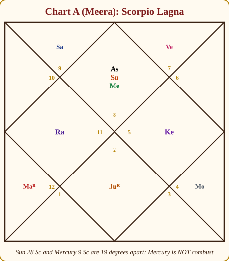
Figure 3.4: Chart A. Sun at 28° Scorpio, Mercury at 9° Scorpio — same sign, 19° apart. Mercury is well outside its 14° orb, so it is not combust, and the Budha–Aditya yoga holds.
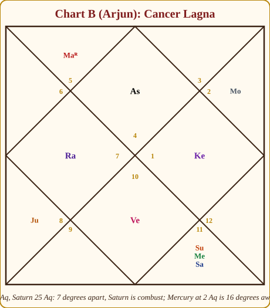
Figure 3.5: Chart B. Sun 18° Aquarius, Saturn 25° — only 7° apart, inside Saturn's 15° orb: Saturn is combust. Mercury at 2° is 16° away and safe.
In Chart A, Sun and Mercury share the 1st house but are 19° apart — no combustion. In Chart B, Saturn sits 7° from the Sun: combust. What does that look like? Not disaster. Arjun's discipline is real but must serve his sense of self and his father's expectations; he is methodical when a boss or a cause demands it. Combustion is a planet that has lost its independence, not its existence.
⚠️ Common beginner mistake: Declaring a planet "combust and useless" because it shares a sign with the Sun. Combustion is measured in degrees, not signs. Always read the longitudes. Sharing a sign with the Sun at 25° apart is a conjunction with dignity; at 3° apart it is combustion.
Retrogression: the planet that seems to go backwards
Three or four times a year Mercury appears to stop against the stars, move backwards for some weeks, stop again and resume. Venus does it every year and a half, Mars every two years, Jupiter and Saturn for four to five months every year. This is retrogression (Vakra, "crooked"). Nothing actually reverses: the Earth, on an inner and faster lane, overtakes the outer planets and our line of sight swings backwards, exactly as a slower car seems to slide back when you overtake it. Mercury and Venus, on inner lanes, do the same to us.
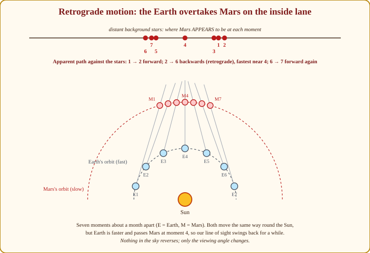
Figure 3.6: Seven monthly snapshots. Earth (inner lane) passes Mars (outer lane) at moment 4. Against the background stars Mars appears to go forward, then back, then forward again.
📖 Story: The minister who walks backward. Once in a while a minister is seen walking backward through the great hall, slowly, lost in thought. The junior courtiers giggle: he has gone the wrong way. The old ones know better. At that moment he is nearer to you than he ever is otherwise, and brighter — you can see every line on his face. He is not reversing his duties; he is turning them over inside himself. When he finally speaks, it is after long reflection, and it lands harder. Rule: A retrograde planet is intensified and internalised — results come later, from within, often on a second attempt. Never read it as "reversed".
How to read it: a retrograde planet is at its closest to the Earth — brightest in the sky — and its energy is intensified and internalised. Retrograde Mercury rewrites every message before sending; retrograde Mars trains in private and surprises everyone on the day; retrograde Jupiter holds a faith that is personal and hard-won. Do not call retrograde "reversed" or "bad"; Parashara actually counts retrograde planets as stronger. The Sun and Moon are never retrograde; Rahu and Ketu are always retrograde, which is simply their normal motion.
Meera has two retrograde planets — Mars in Pisces (5th house) and Jupiter in Taurus (7th house). Her creativity comes in inward-turning waves; her marriage is with someone whose wisdom is private and grows over time.
Planetary war: two planets in one degree
When two of the five true planets (Mars, Mercury, Jupiter, Venus, Saturn) come within one degree of each other, the texts call it a planetary war (Graha Yuddha): one wins, one loses, and the loser's significations are weakened. Which one wins is disputed — the older rule favours the planet further north in latitude, many moderns the planet with the lower longitude, and brightness is the practical tie-breaker (Venus rarely loses). For a beginner: note a war, read the loser's houses with extra care, and never build a prediction on the war alone. The Sun, Moon and nodes do not fight.
Directional strength: where each planet stands tallest
Every planet has a house in which it is said to have full directional strength (Dig Bala): Jupiter and Mercury in the 1st; the Moon and Venus in the 4th; Saturn in the 7th; the Sun and Mars in the 10th. The logic is a day.
📖 Story: Who stands at which gate. The palace has four gates, and the day decides who stands at each. At dawn the East gate (the 1st house) opens, and there stand Guru-ji and the Prince — the Priest and the Secretary — because counsel is given while the mind is fresh. At noon the King and the Commander are on the rooftop above the South gate (the 10th house), in full blaze, giving orders the whole city can see. At sunset the tired old Judge closes the West gate (the 7th house): the labourer's day is done and the accounts are settled. At midnight the Queen Mother and the Minister of Arts keep the North gate (the 4th house), the inner rooms of rest, food and comfort. Stand a courtier at the wrong gate — the Judge at dawn, the King at midnight — and he has no strength of direction at all. Rule: Dig bala: Jupiter and Mercury in the 1st; Sun and Mars in the 10th; Saturn in the 7th; Moon and Venus in the 4th. The opposite house gives zero.
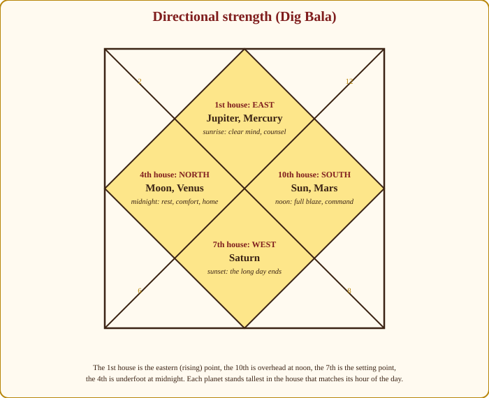
Figure 3.7: Directional strength. Each planet stands tallest in the house that matches its hour of the day. A planet in the opposite house has no directional strength at all.
Meera's Mercury in the 1st has full directional strength — the clever secretary at the sunrise table, which fits her articulate first impression. Her Jupiter in the 7th, opposite its strong 1st, has none: its wisdom must work through the partner rather than through her own presence. Dig bala is one of the six strengths of Shadbala (Chapter 12); for now, note it as a modifier.
💡 Did you know? The days of the week are named for the planets in the order of the horas — the planetary hours. The hours run in the order Saturn, Jupiter, Mars, Sun, Venus, Mercury, Moon (slowest to fastest) and repeat. Start a Sunday with the Sun ruling the first hour; count twenty-four hours and the twenty-fifth — the first hour of the next day — falls to the Moon. Hence Sunday, Monday (Moon), Tuesday (Mars — Mangal-var), Wednesday (Mercury — Budh-var), Thursday (Jupiter — Guru-var), Friday (Venus — Shukra-var), Saturday (Saturn — Shani-var). Hindi, Latin and English all keep this order.
💡 Did you know? In many temples, especially in the Tamil country, a shrine to the Navagraha — the nine planets — stands in the courtyard. In the common layout the Sun stands at the centre and the other eight around it, each facing a different direction so that no two look at each other. Devotees walk nine times round. It is the friendship table in stone: the king in the middle, the others kept from quarrelling.
The planets in a nutshell
Keep this table by your desk until you no longer need it. Every value agrees with Appendix A.
Planet
Court role
Nature
Own signs
Exalted
Debilitated
Moolatrikona
Speed per sign
Dig bala house
Key words
Sun (Su)
King
🔴 Mild malefic
Leo
Aries 10°
Libra 10°
Leo 0°–20°
1 month
10th
Soul, father, authority
Moon (Mo)
Queen
🟢 bright / 🔴 dark
Cancer
Taurus 3°
Scorpio 3°
Taurus 3°–30°
2¼ days
4th
Mind, mother, public
Mars (Ma)
Commander
🔴 Malefic
Aries, Scorpio
Capricorn 28°
Cancer 28°
Aries 0°–12°
45 days
10th
Energy, courage, land
Mercury (Me)
Prince
🟡 Takes company's nature
Gemini, Virgo
Virgo 15°
Pisces 15°
Virgo 16°–20°
~1 month
1st
Intellect, speech, trade
Jupiter (Ju)
Priest, minister
🟢 Great benefic
Sagittarius, Pisces
Cancer 5°
Capricorn 5°
Sagittarius 0°–10°
1 year
1st
Wisdom, children, wealth
Venus (Ve)
Minister of arts
🟢 Benefic
Taurus, Libra
Pisces 27°
Virgo 27°
Libra 0°–15°
~1 month
4th
Love, beauty, luxury
Saturn (Sa)
Servant, judge
🔴 Great malefic
Capricorn, Aquarius
Libra 20°
Aries 20°
Aquarius 0°–20°
2½ years
7th
Discipline, delay, longevity
Rahu (Ra)
Foreigner, smoke
🔴 Malefic (shadow)
— (like Saturn)
Taurus (some: Gemini)
Scorpio (some: Sagittarius)
—
18 months, backwards
—
Obsession, foreign, technology
Ketu (Ke)
Headless ascetic
🔴 Malefic (shadow)
— (like Mars)
Scorpio (some: Sagittarius)
Taurus (some: Gemini)
—
18 months, backwards
—
Detachment, moksha, occult
🪔 Consultation tip: Never describe a planet to a client as "bad". Say what it asks. "Your Saturn sits in the house of marriage; it asks for patience and rewards loyalty" is true, useful, and leaves the person with something to do. "Saturn in the 7th is bad for marriage" is lazy, frightening, and, as you will see in Chapter 8, often simply wrong for their Lagna.
In one breath
Nine actors: two lights, five planets, two shadows. The royal-court picture gives you their characters and their quarrels.
Jupiter and Venus are natural benefics; Saturn, Mars, Rahu, Ketu and (mildly) the Sun are malefics; the Moon depends on its brightness and Mercury on its company.
Each planet has own signs, an exaltation and an exactly opposite debilitation at the same degree, and a Moolatrikona "office" — all as in Appendix A.2.
Friendship follows two parties: Sun–Moon–Mars–Jupiter against Mercury–Venus–Saturn, with three memorable exceptions.
Combustion is measured in degrees from the Sun; retrogression is intensified, internalised energy, never "reversed"; planetary war weakens the loser.
Directional strength follows the hours of a day: thinkers at sunrise (1st), king and commander at noon (10th), servant at sunset (7th), queen and pleasure at midnight (4th).
Rahu and Ketu are the two points where the Moon's tilted orbit crosses the Sun's path — the eclipse axis — always opposite and always moving backwards.
Practice
✍️ Practice:
1. A client's Moon is at 5° Scorpio, born two days before a new moon. Comment on the Moon's sign dignity and its natural nature, and write one gentle sentence you could say about it.
2. In Chart C (Devika), Mercury is at 1° Leo and the Sun at 5° Cancer. Are they in the same sign? How many degrees apart are they? Is Mercury combust?
3. Which planets are friends of Venus? A chart has Venus in Sagittarius. How does Venus feel there, and why?
4. Arjun's Mars is retrograde in Leo in the 2nd house. Write a two-sentence reading that uses "intensified and internalised" rather than "reversed".
5. Name the dig bala house of each of the seven planets without looking, using the "hours of the day" logic.
Answers
1. Scorpio is the Moon's debilitation sign, and 5° is near the deepest point (3°). Two days before the new moon the Moon is dark, so it counts as a natural malefic: a sensitive, intense mind that may brood. Gentle sentence: "Your mind goes deep and does not forget easily — which is a gift in any work that needs insight, and a burden only if you carry old hurts without setting them down."
2. No — Mercury is in Leo and the Sun in Cancer, different signs. The distance is from 5° Cancer to 1° Leo: 25° to the end of Cancer plus 1° = 26°. Mercury's orb is 14°, so it is not combust.
3. Venus's friends are Mercury and Saturn. Sagittarius belongs to Jupiter, who is neutral to Venus (from Venus's side), though Jupiter regards Venus as an enemy. Venus is in a neutral's sign — a hotel guest — comfortable enough, but its indulgence is tempered by Sagittarius's principles.
4. Arjun's Mars in the 2nd house gives forceful, direct speech and the drive to earn; Leo, a friend's sign, makes that drive proud and steady. Being retrograde, the energy is intensified and internalised: he rehearses what he will say, holds back until sure, and then speaks with unusual weight.
5. Sunrise (1st): Mercury and Jupiter. Noon (10th): Sun and Mars. Sunset (7th): Saturn. Midnight (4th): Moon and Venus.
Chapter 4: The Twelve Houses (Bhavas) — The Rooms
Planet is who. Sign is how. Now the third and last layer of the grammar: the house is where. Where in a life does this energy land — in the body, in the bank, in the marriage, in the career, in the quiet hours of sleep?
Think of a house in the old sense: a big joint-family home with twelve rooms. The same uncle (planet) behaves differently in the kitchen, the prayer room and the room where the accounts are kept. Put Saturn in the room of marriage and he asks for patience there; put him in the room of career and he builds a slow, solid reputation. The room does not change Saturn. It decides which part of the person's life gets Saturn's lessons.
The Sanskrit word is Bhava, which means "state of being" or "becoming". Twelve bhavas, twelve areas in which a life unfolds. This chapter teaches you what each room is for — and, more importantly, why, so that you can derive any house meaning you have forgotten from first principles.
📖 Story: The haveli of twelve rooms. Walk through the old family haveli once and you will never forget the houses. You enter at the front door and veranda (1st) — the face the family shows the street. Just inside is the kitchen with the family purse (2nd), where grain and money are kept and everyone eats and talks. Beyond it the courtyard (3rd), where brothers wrestle and letters are written. Off the courtyard, the mother's inner room (4th), the heart of the house. Next the children's study (5th). Down a passage, the store-room (6th), where the servants work, the debts are recorded and the sick are nursed. Straight ahead, the bridal room (7th), whose second door opens on the world. Behind it the dark back stairs (8th). Up those stairs the prayer room (9th) where the grandfather sits, and above it the office on the roof (10th) that the whole street can see. Down again to the guest hall (11th) where friends gather, and finally across the lane to the guest-house (12th), where one goes to sleep, to hide, or to leave. Rule: House n is the nth room of the haveli — picture the room and its meanings follow.
Where the rooms come from
In Jyotish the rooms are counted from the rising sign (Lagna). The Lagna sign is the 1st house, whole. The next sign is the 2nd house, whole. And so on round the zodiac. This is the whole-sign house system (Rashi-bhava), the default of the Parashari tradition and the one this book uses throughout. In Chart A, Scorpio rises, so Scorpio is the 1st house, Sagittarius the 2nd, Capricorn the 3rd, right round to Libra as the 12th.
You will meet a second method in software: Bhava Chalit (often the Sripati system), which divides the space around the exact Lagna degree into twelve unequal houses. Most of the time the two agree. They disagree only for a planet near the edge of a house — in Chart A, the Sun at 28° Scorpio sits in the 1st house by sign but slips into the 2nd bhava in a Chalit chart. My working rule: read the whole-sign house first; when a planet is within a few degrees of a house boundary, let it speak for both houses. Meera's Sun gives authority both to her presence (1st) and to her speech and family (2nd). Argue about systems later; for now, whole signs.
⚠️ Common beginner mistake: Reading house meanings from the sign number instead of counting from the Lagna. In Chart A, Cancer is sign 4, but it is Meera's 9th house. The house is always the count from the Lagna; the sign number is only the costume the room happens to be wearing.
The natural zodiac: why the houses mean what they mean
Here is the key that unlocks the twelve rooms. Imagine a chart in which Aries rises. Then the 1st house is Aries, the 2nd is Taurus, and so on to the 12th, which is Pisces. This is the natural zodiac — the Kala Purusha's own chart, the chart of the Cosmic Man we met in Chapter 2. The classical meanings of the houses are simply the meanings of the signs that live there in this natural chart.
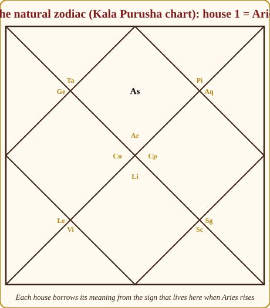
Figure 4.1: The natural zodiac. When Aries rises, house 1 is Aries, house 2 Taurus, and so on. Each house borrows its core meaning, and its body part, from the sign that sits here.
Walk it once and you will never need to memorise a house table again. The 1st is Aries — Mars's fire, the head, the charging self: the body and the self. The 2nd is Taurus — Venus's earth, the face and throat, food and possessions: wealth, food, speech, family. The 3rd is Gemini — Mercury's air, arms and shoulders, the couple: communication, siblings, courage, short journeys. The 4th is Cancer — the Moon's water, the chest and heart, the crab's shell: mother, home, inner peace. The 5th is Leo — the Sun's fire, the stomach, the lion's pride in his cubs: children, creativity, intelligence. The 6th is Virgo — Mercury's earth, the intestines, the maiden sorting grain: work, health, service, enemies, debts. The 7th is Libra — Venus's air, the scales: partnership and marriage. The 8th is Scorpio — Mars's water, the hidden organs, the scorpion under the stone: death, transformation, secrets, inheritance. The 9th is Sagittarius — Jupiter's fire, the thighs that carry us far, the archer aiming high: fortune, faith, father, guru, long journeys. The 10th is Capricorn — Saturn's earth, the knees that bend to duty, the climb: career, status, authority. The 11th is Aquarius — Saturn's air, the calves, the pot for the whole village: gains, friends, networks, elder siblings. The 12th is Pisces — Jupiter's water, the feet, the two fish in the ocean: loss, sleep, foreign lands, hospitals, liberation.
Every house meaning you will ever read in a classical text is an elaboration of this. When a client asks about something you have never seen in a table — "which house is my YouTube channel?" — you do not panic. Communication that reaches a network: 3rd (communication) with the 11th (networks) and 10th (public work). You derive it.
🧭 Guruji's rule of thumb: House meaning = natural sign + its lord + its body part. If you forget what the 8th means, remember Scorpio, Mars, and the organs we keep hidden. The rest follows.
Benefics and malefics in the rooms
Before the tour, one rule you will apply in every room. Natural benefics (Jupiter, Venus, bright Moon, unafflicted Mercury) do their best work in the kendras (1, 4, 7, 10) and trikonas (1, 5, 9) — the pillars and the blessing houses — where their gentleness builds. Natural malefics (Saturn, Mars, Sun, Rahu, Ketu) do their best work in the upachaya houses (3, 6, 10, 11) — the "growing" houses where struggle is the point and toughness pays.
The logic: a benefic gives, so put it where you want giving — self, home, marriage, career, children, fortune. A malefic fights, so put it where there is something to fight — rivals (3), enemies and disease (6), the competitive world of work (10), the effort to gain (11). A malefic in a gentle house (say Mars in the 4th, the mother's room) fights where there is nothing to fight and breaks the furniture; a benefic in a fighting house (Jupiter in the 6th) is too polite to argue with the enemy and gives away the case. We will refine this by Lagna in Chapter 8. For now, it is a sound first instinct.
The tour: twelve rooms
I give each room its meanings, body part and natural significator (karaka, the planet that stands for that house in every chart — Appendix A.5), the why, what a benefic and a malefic do there, and an example from our case charts.
1st house — Tanu, the body
Self, body, appearance, health, temperament, the start of life, general fame. Body: the head. Karaka: the Sun.
Why: it is Aries, the head, the first breath. The 1st house is the front door through which every other house is entered; a strong 1st carries a weak chart, a weak 1st spoils a strong one. The Sun is its karaka because the Sun is the self.
A benefic here gives an attractive, healthy body and a pleasant disposition. A malefic gives a strong, marked body and a forceful temperament — often scars or a distinctive feature — and intensifies whatever the planet stands for. Sun and Mercury in Meera's 1st: intelligence and authority on the face; a person you notice and remember.
2nd house — Dhana, wealth
Wealth and savings, speech, food and what we take in through the mouth, the family we are born into, the face, early education, the right eye. Body: the face and mouth. Karaka: Jupiter.
Why: Taurus — Venus's earth, the throat, accumulation. Everything we gather and hold — money, food, words, kin. Jupiter is karaka because Jupiter is expansion and provision.
A benefic here gives a sweet voice, a well-fed family and money that stays. A malefic makes speech blunt, spending abrupt or earning laborious — but a Saturn here often gives wealth through long patience. Meera's Saturn in the 2nd (Sagittarius): measured, careful speech; savings that grow slowly; a family that values duty and learning.
3rd house — Sahaja, siblings and courage
Younger siblings, courage, effort, communication and writing, short journeys, hobbies, the arms and hands, hearing. Body: arms, ears. Karaka: Mars.
Why: Gemini — two people side by side (siblings), Mercury's talk, the arms that do and the courage to use them. Mars is karaka because courage is Mars.
Malefics here are welcome: they give the fighting spirit and the willingness to do hard work. A benefic makes one gentle with siblings and gifted in writing, but sometimes short of push. Devika (Chart C) has Mars and Venus in the 3rd: enormous energy and charm poured into communication and siblings; she can argue and console in the same breath.
4th house — Sukha, happiness and home
Mother, home and land, vehicles, comforts, formal schooling, the heart, inner peace. Body: the chest. Karakas: the Moon and Mercury.
Why: Cancer — the Moon's water, the chest and heart, the crab's shell that is its home. The 4th is the bottom of the chart, underfoot, the roots. The Moon stands for the mother; Mercury, in the old lists, for education.
A benefic here gives a happy childhood home, property, vehicles and a peaceful heart — Venus in the 4th is a house full of music. A malefic disturbs the peace: moves, a strict or absent mother, restlessness at home. Meera's Rahu in the 4th (Aquarius): an unconventional home, possibly far from her birthplace; a mother who is unusual; a pull towards foreign or technological ways of living. Arjun's Rahu in the 4th (Libra) shows the same restless roots, expressed through relationships and aesthetics.
5th house — Putra, children and intelligence
Children, intelligence and judgement, creativity, past-life merit (Poorva Punya), romance, mantra and devotion, speculation and gambling. Body: the stomach, upper belly. Karaka: Jupiter.
Why: Leo — the Sun's pride in what it creates. The 5th is the fruit of the 1st: what comes out of you — a child, a poem, a decision. Jupiter is karaka because Jupiter gives children and wisdom.
A benefic here is wonderful: bright children, a fine mind, luck in the stock market and in love. A malefic strains one of these — delayed children, a sharp but harsh intelligence, gambling that hurts. Arjun's Jupiter in the 5th (Scorpio): deep, investigative intelligence; children who matter greatly; the past-life merit that shows as a knack for understanding hidden things. Meera's retrograde Mars in the 5th (Pisces): creative bursts, and a need to watch impulsive speculation.
6th house — Ari, enemies, disease and service
Enemies and competitors, disease, debts, service and employment, litigation, the maternal uncle, pets. Body: the intestines. Karakas: Mars and Saturn.
Why: Virgo — Mercury's earth, the intestines that digest and discard, the maiden who sorts good from bad. The 6th is where we deal with what is wrong: sickness, debt, opposition, and the daily labour that fixes them. Mars fights the enemy; Saturn does the labour.
Malefics here are at their best: they defeat enemies, resist disease and pay off debts. A benefic here is too kind to fight; Jupiter in the 6th is generous to rivals and lends money it does not get back, though it protects health. None of our three case charts has a planet in the 6th — which happens often, and teaches a rule: an empty house is read through its lord. Meera's 6th is Aries, lord Mars, sitting retrograde in her 5th: her competition and health matters are handled through creativity and children's affairs, with internal rather than open struggle.
7th house — Kalatra, spouse and partnership
Spouse and marriage, business partners, sexual life, travel, the public and how we deal with the other. Body: the lower belly and pelvis. Karaka: Venus.
Why: Libra — the scales, Venus's air, the balancing of two. The 7th is directly opposite the 1st: the other who completes the self. Venus is love and marriage.
A benefic here gives a gracious partner and good partnerships; a malefic gives a partner who is demanding, or delay and friction in marriage — though Saturn in the 7th often gives a loyal, long-lasting bond once it forms. Meera's retrograde Jupiter in the 7th (Taurus): a learned, principled partner whose wisdom is private; marriage that matures with time. Arjun's Venus in the 7th (Capricorn), in its own house by karaka, a spouse who is loyal, practical and slow to declare.
8th house — Randhra, longevity and transformation
Longevity and death, transformation, inheritance and insurance, hidden things and the occult, chronic disease, sudden events, in-laws. Body: the genitals and excretory organs. Karaka: Saturn.
Why: Scorpio — Mars's water, the organs kept hidden, the scorpion under the stone. The 8th is the end of the 7th's partnership (the 2nd from the 7th — the partner's money, hence inheritance and in-laws) and the deep well of what is not spoken about. Saturn is karaka because Saturn is time and endings.
A benefic here softens crises and can give inherited wealth; but the benefic itself is muffled. Malefics here are mixed — they toughen a person and give research ability, but bring sudden events. Arjun has Sun, Mercury and Saturn in the 8th (Aquarius): a life turned towards hidden systems — research, insurance, the occult, forensic work — with a father (Sun) whose life had upheavals, and a mind (Mercury) that enjoys mysteries.
9th house — Dharma, fortune and faith
Fortune and grace, the father, the guru, religion and philosophy, higher learning, long journeys, law. Body: thighs and hips. Karakas: Jupiter and the Sun.
Why: Sagittarius — Jupiter's fire, the archer aiming far, the thighs that carry a pilgrim. The 9th is the highest of the trikonas: what we are given by grace rather than earned by work. Jupiter is wisdom; the Sun is the father.
Any benefic here is a blessing; the Moon in the 9th gives a mind at peace with the divine and a supportive father figure. A malefic here can make one argue with tradition — Saturn in the 9th is the sceptic who becomes devout late. Meera's Moon in the 9th (Cancer, own sign): faith held emotionally, teachers who feel like family, fortune that flows through learning and travel. Devika's Moon in the 9th (Sagittarius) is similar in a more philosophical costume.
10th house — Karma, career
Career and profession, status and reputation, authority, government, fame earned by work; the father in some schools. Body: the knees. Karakas: the Sun, Mercury, Jupiter and Saturn.
Why: Capricorn — Saturn's earth, the mountain climbed step by step, the knees that bend to duty. The 10th is the top of the chart, the Sun at noon: the most visible point, what the world sees you do. Four karakas because career has four faces: authority (Sun), skill (Mercury), wisdom (Jupiter) and labour (Saturn).
Both benefics and malefics can shine here: a benefic gives a respected, comfortable career; a malefic gives a hard-working, powerful one. Rahu in the 10th is the outsider who reaches the top; Ketu in the 10th, as in both Meera's and Arjun's charts (Leo and Aries respectively), is the person who does excellent work and steadily cares less about the title — consultants, researchers, healers.
11th house — Labha, gains
Gains and income, elder siblings, friends and networks, the fulfilment of wishes. Body: calves and shins. Karaka: Jupiter.
Why: Aquarius — Saturn's air, the water-pot for the whole community. The 11th is the 2nd from the 10th — the income of the career — and the house of all that comes to us from the group. Jupiter is karaka because Jupiter gives.
Everybody's favourite house: even malefics give gains here, because the 11th is upachaya. Saturn in the 11th gives income late but large; Mars gives gains through effort. Arjun's Moon in the 11th (Taurus, the Moon's exaltation sign): a mind that is popular and well networked, gains through friends and elder siblings, and an emotional life that is comfortable and steady.
12th house — Vyaya, loss and liberation
Expenses and losses, sleep and the pleasures of the bed, foreign lands, hospitals and confinement, isolation, and moksha — liberation. Body: the feet. Karaka: Saturn.
Why: Pisces — Jupiter's water, the feet that carry us away, the ocean where the self dissolves. The 12th is the 12th from the 1st: the loss of the self, in every sense from expenses to enlightenment. Saturn is karaka because Saturn is isolation and letting go.
A benefic here gives comfortable spending, good sleep, pleasant foreign stays and a spiritual bent; the benefic's own affairs, however, go somewhat "abroad" or behind closed doors. A malefic here can mean hospital stays, losses, or a hard road to inner peace — though Ketu in the 12th is classically excellent for moksha. Meera's Venus in the 12th (Libra, own sign): private pleasures, money spent on comfort and beauty, a partner or partnership linked to foreign lands; a natural taste for solitude.
The house groups
Astrologers rarely think of houses one at a time. They think in groups, and the groups are where most of the reasoning happens.
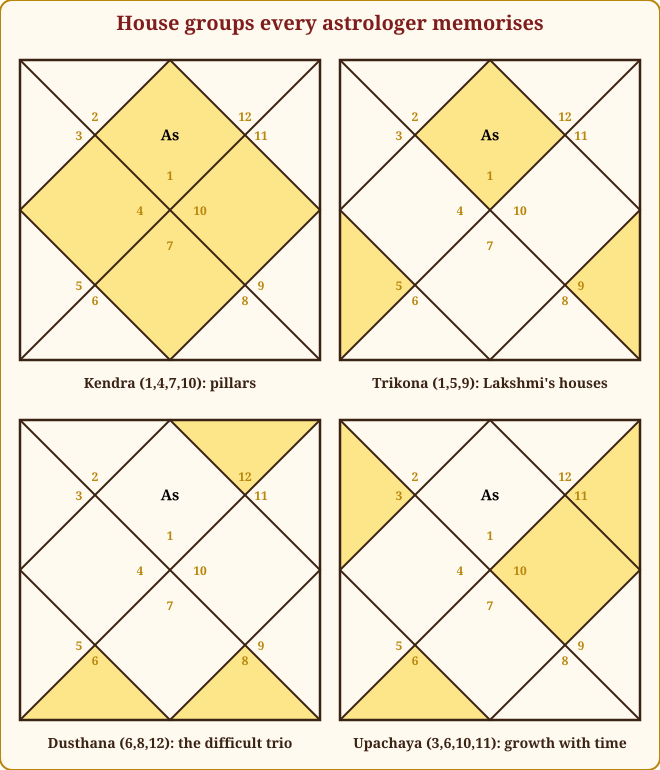
Figure 4.2: The four groups every astrologer memorises. Kendras are the pillars; trikonas the blessings; dusthanas the struggles; upachayas the houses that improve with effort.
Group
Houses
Colour
Sense
Kendra
1, 4, 7, 10
🟢
pillars; planets act strongly
Trikona
1, 5, 9
🟢
blessings; lords always benefic
Upachaya
3, 6, 10, 11
🟡
grow with effort; malefics do well
Panapara
2, 5, 8, 11
🟡
medium strength
Apoklima
3, 6, 9, 12
🟡
weaker (except the 9th)
Dusthana / Trik
6, 8, 12
🔴
struggle, hidden, loss
Maraka
2, 7
🔴 in their periods
health and life-span are "spent" here
Trishadaya
3, 6, 11
🔴 lords
lords give results with a sting
Kendras (1, 4, 7, 10) — the pillars. The four corners of the diamond: self, home, partner, career. Called Vishnu's houses; planets here act strongly, whatever their nature. A chart with several planets in kendras belongs to a person who is visible and effective in the world.
Trikonas (1, 5, 9) — the blessings. Lakshmi's houses: the self, its merit, its fortune. Lords of these houses are always functional benefics (Chapter 8). Planets here give grace.
Dusthanas or Trik (6, 8, 12) — the struggles. Disease and enemies, death and secrets, loss and exile. Planets here have their matters troubled; lords of these houses become functional troublemakers. But remember: the 6th is also service, the 8th also research, the 12th also liberation. Nothing in a chart is only bad.
📖 Story: Store-room, back stairs and guest-house. Why are 6, 8 and 12 the difficult rooms? Because they are the three rooms of the haveli where the family does not receive guests. The store-room (6th) is where the servants labour, the account of debts is kept, and a sick child is nursed away from the others — work, debt, illness, service. The back stairs (8th) are dark, steep and used at night: this is where the locked chest of inheritance sits, where the secrets are whispered, where someone once fell. The guest-house across the lane (12th) is where you go when you leave the family — to sleep, to travel, to a hospital bed, or, if you are a sadhu, to freedom. Nothing is wrong with these rooms; they simply are not where the family's daily happiness lives. A gentle planet placed there is out of sight; a tough planet placed there gets useful work done. Rule: 6, 8 and 12 are dusthanas — struggle, hidden things, loss; their lords are functional troublemakers, and malefics there do useful work.
Upachayas (3, 6, 10, 11) — the growing houses. These improve with time and effort; malefics here toughen and deliver. Notice that the 6th is both dusthana and upachaya — struggle and growth through struggle — which is exactly what illness, debt and hard work are.
Panapara (2, 5, 8, 11) and Apoklima (3, 6, 9, 12). Each kendra is followed by a panapara ("succeeding") house of medium strength — the wealth that follows the self, the child that follows the home — and then an apoklima ("falling away") house, weaker, except the 9th, which is saved by being a trikona. The classical texts use these to grade a planet's strength by position; you will meet them in Shadbala.
Trishadaya (3, 6, 11). Parashara says the lords of these three become malefic. Why? They are the houses where we push against others — rivals and siblings, enemies, the competition for gains. Their lords serve the self at others' expense, and so give results with a sting.
Marakas (2 and 7) — the "killers". This one frightens beginners, so let me give you the logic and take the fear out. The 8th house is longevity (Ayu). The 8th from the 8th is the 3rd — so the 3rd is also a longevity house (Bhavat Bhavam, below). Now, the 12th house from any house is its loss or ending. The 12th from the 3rd is the 2nd; the 12th from the 8th is the 7th. So the 2nd and 7th are the houses where longevity is spent. Their lords, and planets in them, are the ones whose periods can bring the end of life — or, far more often, illness, or the end of a phase. That is all "maraka" means. You will use it in Chapter 20 with great care and never across the table as a threat.
📖 Story: The two doors out of the life-rooms. The 8th room, the back stairs, is where the family's life-span is kept — the old texts call the 8th Ayu, longevity. Count eight rooms on from the back stairs and you reach the 3rd, the courtyard: the 8th from the 8th, its twin, and so also a life-room. Now, in this haveli, every room's exit door is the room just before it — the 12th from it. The exit from the courtyard (3rd) is the kitchen (2nd); the exit from the back stairs (8th) is the bridal room (7th). Those two exits are where life-span leaks out, and so the 2nd and 7th are called maraka, the killers. In practice their lords' periods far more often bring illness or the end of a phase than the end of a life. Rule: Marakas are 2 and 7 because they are the 12th houses from the two longevity houses, 3 and 8.
The four aims. The twelve houses also split into four triangles matching the four aims of a Hindu life. The fire houses (1, 5, 9) are the dharma trikona — purpose, merit, faith. The earth houses (2, 6, 10) are the artha trikona — wealth, work, career: the means. The air houses (3, 7, 11) are the kama trikona — desire, relationship, gain. The water houses (4, 8, 12) are the moksha trikona — home, transformation, release: the inner life and its letting-go.
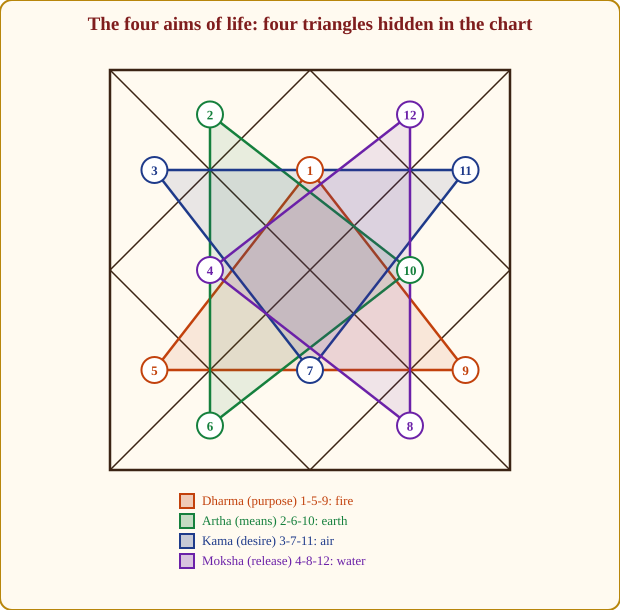
Figure 4.3: The four aims hidden in the chart. Count which triangle holds most of a client's planets and you have their life's centre of gravity in one glance.
📖 Story: The four wings of the haveli. Seen from the roof, the haveli has four wings, and each wing serves one of the four aims of a Hindu life. The prayer wing (dharma: 1, 5, 9) runs from the front veranda through the children's study to the grandfather's prayer room — who you are, what you create, what you believe. The working wing (artha: 2, 6, 10) holds the kitchen-purse, the store-room and the roof office — money, labour, career. The meeting wing (kama: 3, 7, 11) holds the courtyard, the bridal room and the guest hall — siblings, spouse, friends: every room where you meet another person. The inner wing (moksha: 4, 8, 12) holds the mother's room, the back stairs and the guest-house across the lane — roots, transformation, and leaving. Count where a client's planets sleep, and you know which wing the life is lived in. Rule: Dharma 1-5-9 (fire), artha 2-6-10 (earth), kama 3-7-11 (air), moksha 4-8-12 (water).
Try it on Chart B. Arjun's planets: Mars 2nd, Rahu 4th, Jupiter 5th, Venus 7th, Sun–Mercury–Saturn 8th, Ketu 10th, Moon 11th. Moksha triangle: four planets (Rahu in the 4th; Sun, Mercury, Saturn in the 8th). Artha: two (Mars in the 2nd, Ketu in the 10th). Kama: two (Venus in the 7th, Moon in the 11th). Dharma: one (Jupiter in the 5th). A life weighted towards the inner, the hidden and the transformative — which is exactly what the three planets in the 8th told us.
💡 Did you know? The word kendra means "centre" — the same root as the English "centre" through Greek kentron. Indian and Greek astrology exchanged ideas heavily around the first centuries CE; the Sanskrit Yavanajataka ("the horoscopy of the Greeks"), traditionally dated to the 3rd century CE though scholars now debate the date, records some of that exchange. Panapara and apoklima are Sanskritised Greek words too.
Bhavat Bhavam: the house from the house
A second signal for any matter is found by counting the same number again. The nth house from the nth house — Bhavat Bhavam, "the house of the house" — shows the same matter from a second angle.
Three examples you will use constantly. Career: the 10th from the 10th is the 7th. So the 7th house — partnerships, the public — is a second career house; a strong 7th lord often shows business success or a career dealing with the public. Mother: the 4th from the 4th is the 7th again. A 7th-house affliction can therefore also point to the mother's wellbeing, especially when the 4th itself is ambiguous. Children: the 5th from the 5th is the 9th. Grandchildren, and the fortune that comes through children, live in the 9th; a fine 9th can rescue a troubled 5th in matters of progeny. And one more for free: the 8th from the 8th is the 3rd, which is why the 3rd is a longevity house and why 2 and 7 are marakas.
The mirror pairs: six axes
Opposite houses are not enemies; they are two ends of one axis, and every axis is a conversation.
1 and 7 — self and other. Who I am, and who I meet. Planets on this axis shape identity through relationship. 2 and 8 — my resources and others' resources. My money, speech and family; the partner's money, inheritance, what is hidden. 3 and 9 — effort and grace. What I achieve by my own arms, and what is given by the guru, the father, the gods; short journeys and long ones; younger siblings and elders. 4 and 10 — home and world. Mother and father, private and public, roots and summit. 5 and 11 — creation and reward. What I make (children, ideas) and what returns to me (gains, friends). 6 and 12 — the daily struggle and the final release. Illness and hospital, service and retreat, the enemy in front and the enemy unseen.
When a planet aspects across the chart (Chapter 6), it always joins the two ends of an axis. Meera's Jupiter in the 7th looks straight at her 1st: her partner's wisdom shapes her own identity. Arjun's Venus in the 7th looks at his 1st: he is drawn to be defined by relationship.
A second frame: reading from the Moon
The Lagna is the primary frame. But the Moon is the mind, and the mind is where a person lives. So Jyotish reads the whole chart a second time with the Moon's sign as the 1st house — the Chandra Lagna. Every dasha result, every transit (Sade Sati is counted from the Moon, not the Lagna), and every yoga involving the Moon uses this frame.
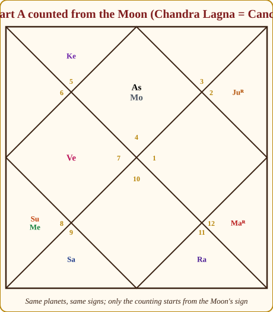
Figure 4.4: Chart A counted from the Moon. Nothing has moved in the sky; only the counting starts from Cancer. Sun and Mercury are now in the 5th, Saturn in the 6th, Jupiter in the 11th.
Look what changes for Meera. From the Lagna, her Saturn is in the 2nd — speech and money. From the Moon, Saturn is in the 6th — an upachaya, where a malefic does well: she wins against competitors and works through illness with discipline. Her Sun and Mercury, 1st from the Lagna, are 5th from the Moon: her intelligence and authority also express as creativity, teaching and a gifted child. Her Jupiter, 7th from the Lagna, is 11th from the Moon: the partner brings gains and friends. When the two frames agree, speak with confidence. When they disagree, the client shows both — the Lagna frame in how they act, the Moon frame in how they feel.
There is a third frame, less used but useful for matters of the father, health and career: counting from the Sun (Surya Lagna). In Chart A the Sun sits in the Lagna sign, so the first and third frames coincide — one reason Meera's chart reads so consistently. In Chart B the Sun is in the 8th, so from the Sun, Arjun's Lagna sign Cancer becomes the 6th house: his very self, seen from the father's or the body's viewpoint, is a matter of service and struggle — a young man who had to prove himself.
🪔 Consultation tip: A client will often say, "But my friend's astrologer said my Saturn is in the 6th, and you say 2nd!" Both may be right — one counted from the Moon. Explain the two frames in one sentence and you turn a moment of doubt into a moment of trust.
Reading Chart A and Chart B by houses
Let us put the whole chapter on the table. The picture below shows Meera's chart with the kendras shaded.
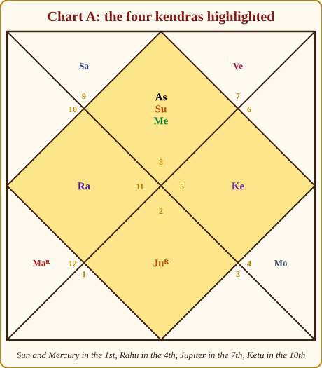
Figure 4.5: Chart A's pillars. Sun and Mercury in the 1st, Rahu in the 4th, Jupiter in the 7th, Ketu in the 10th — every kendra is occupied.
Meera has a planet in every kendra: the self is strong (Sun, Mercury), the home unconventional (Rahu), the partner wise (Jupiter), the career detached (Ketu). Her trikonas are well held: the 1st as above, the 5th with Mars, the 9th with the Moon in own sign. Her dusthanas: only Venus in the 12th, comfortable in its own sign. Read as a whole: a visible, articulate, intelligent person, anchored in faith, with a marriage that matures and a career that leans towards teaching and consulting rather than titles. Benefic Jupiter in a kendra, benefic Moon in a trikona, malefic Saturn in the 2nd (a money house, not ideal but bearable) — the benefic-in-good-house, malefic-in-tough-house pattern is mostly followed, which is why her chart reads as steady.
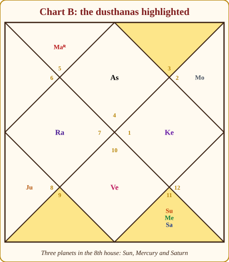
Figure 4.6: Chart B's difficult houses. Three planets crowd the 8th; the 6th and 12th are empty.
Arjun's chart concentrates in the 8th: Sun, Mercury, Saturn. Three planets in one dusthana is not a tragedy; it is a specialisation. The 8th is research, insurance, inheritance, the occult, hidden systems — and Saturn, the karaka of the 8th, is in its own sign there. His kendras hold Rahu (4th), Venus (7th) and Ketu (10th): a restless home, a loyal spouse, a career that dissolves ego. His trikonas: Jupiter in the 5th, the great benefic exactly where it gives most. His 11th holds the exalted Moon: gains, friends, a popular temperament. Read whole: a young man who works with what is hidden, finds his footing through partnership, and gains through people.
In one breath
A house is where a planet's energy lands in life. Whole-sign houses: the Lagna sign is the 1st house; check Bhava Chalit only for planets near a boundary.
House meanings derive from the natural zodiac: house n = sign n of the Kala Purusha, with its lord and body part. Derive; do not memorise.
Benefics do best in kendras and trikonas; malefics do best in upachayas (3, 6, 10, 11).
Kendras are pillars, trikonas blessings, dusthanas struggles, upachayas growth; 3, 6, 11 lords sting; 2 and 7 are marakas because they are the 12th from the two longevity houses (3 and 8).
The four aims — dharma 1-5-9, artha 2-6-10, kama 3-7-11, moksha 4-8-12 — show where a life's weight lies.
Bhavat Bhavam: the nth from the nth gives a second signal (10th from 10th = 7th for career; 4th from 4th = 7th for mother; 5th from 5th = 9th for children).
Opposite houses are axes: self/other, mine/theirs, effort/grace, home/world, creation/reward, struggle/release.
Read every chart from the Lagna, then from the Moon (Chandra Lagna), and for father and health also from the Sun.
Practice
✍️ Practice:
1. Without a table, derive the meanings of the 11th house from its natural sign, lord and body part. Then name its karaka.
2. Devika (Chart C) has Sun and Jupiter in the 4th (Cancer) and Saturn, Rahu and Mercury in the 5th (Leo). Which planets sit in kendras? Which in trikonas? Which house group is the 5th, and does a malefic there follow the "benefics in kendra/trikona, malefics in upachaya" preference?
3. Explain in two sentences why the 7th house is called a maraka, using the 12th-from logic.
4. Count Chart B from the Moon (Taurus). In which house from the Moon does Jupiter fall? Is it a kendra from the Moon (which would form Gaja Kesari yoga, Appendix A.11)?
5. Use Bhavat Bhavam to name a second house for (a) the father (9th), (b) elder siblings (11th), (c) enemies (6th).
Answers
1. The 11th is Aquarius: Saturn's air, the calves, the water-pot for the community. So: gains that come from the group — income, friends, networks, elder siblings, the fulfilment of wishes; Saturn's touch means gains grow with time. Karaka: Jupiter.
2. Kendras: Sun and Jupiter (4th). Trikonas: Saturn, Rahu and Mercury (5th) — and, though the question did not ask, her Moon in the 9th is also in a trikona. The 5th is a trikona and a panapara house — not an upachaya. So the malefics Saturn and Rahu there go against the preference: children and education are areas of struggle first and success later (the chart's stated theme), while Mercury, with malefics, takes on their nature.
3. The 8th house rules longevity, and the 3rd is the 8th from the 8th, so both are longevity houses. The 12th from any house is its loss; the 12th from the 8th is the 7th, so the 7th is where longevity is "spent" — a maraka.
4. Taurus as 1st: Gemini 2, Cancer 3, Leo 4, Virgo 5, Libra 6, Scorpio 7. Jupiter in Scorpio is 7th from the Moon — a kendra — so Gaja Kesari yoga is formed.
5. (a) 9th from 9th = 5th. (b) 11th from 11th = 9th. (c) 6th from 6th = 11th.
Chapter 5: Reading Your First Chart — Layout, Lagna, and the Twelve Ascendants
You now know the actors, the costumes and the rooms. This chapter puts you in front of an actual chart and teaches you what to do with your eyes and your hands in the first ten minutes. Then it introduces the twelve rising signs one by one — because the Lagna is the single most important fact in any chart, and a consultant who knows the twelve Lagnas well can say something true and useful to anyone within the first minute of sitting down.
Reading a North Indian chart, step by step
The North Indian chart is a square with a diamond inside it. The houses never move. The top diamond is always the 1st house. From there the houses run anti-clockwise: the top-left triangle is the 2nd, the left-hand triangle is the 3rd, the left diamond is the 4th, and so on round, ending with the top-right triangle as the 12th. The signs rotate. Each house has a small number in it; that is the sign sitting in that house for this particular chart.
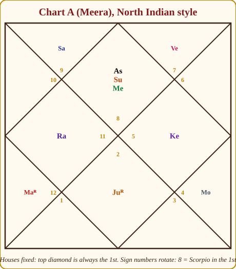
Figure 5.1: Chart A, North Indian style. The houses are fixed; the small gold numbers are sign numbers. 8 in the top diamond means Scorpio is the 1st house.
Here is how I read it, every time, in this order.
Find the Lagna sign. Look at the number in the top diamond. Chart A: 8, Scorpio. Say it aloud: "Scorpio rising."
Check the sequence. Going anti-clockwise, the numbers should run 8, 9, 10, 11, 12, 1, 2, 3, 4, 5, 6, 7. If they do not, the chart is drawn wrongly or you are reading clockwise. This one check saves you from half of all beginner errors.
Name the four kendras. Top (1st): Scorpio with Sun and Mercury. Left (4th): Aquarius with Rahu. Bottom (7th): Taurus with Jupiter. Right (10th): Leo with Ketu. You have just seen the pillars of the life.
Name the two remaining trikonas. Bottom-left triangle (5th): Pisces with Mars. Bottom-right triangle (9th): Cancer with the Moon.
Name the dusthanas. 6th (bottom-left, below the 5th): Aries, empty. 8th (bottom-right, below the 7th): Gemini, empty. 12th (top-right): Libra with Venus.
Note what is left. 2nd: Sagittarius with Saturn. 3rd and 11th: empty.
Six steps, sixty seconds, and you have the whole chart in your head.
Reading a South Indian chart, step by step
The South Indian chart is a grid of twelve boxes around an empty centre. The signs never move. Pisces is always the top-left box, Aries next to it, Taurus, Gemini across the top; then Cancer, Leo, Virgo down the right; Libra, Scorpio, Sagittarius across the bottom from right to left; Capricorn and Aquarius up the left side. Signs run clockwise. The Lagna is marked — usually a diagonal slash in one corner of a box, sometimes the letters "As" or "La".
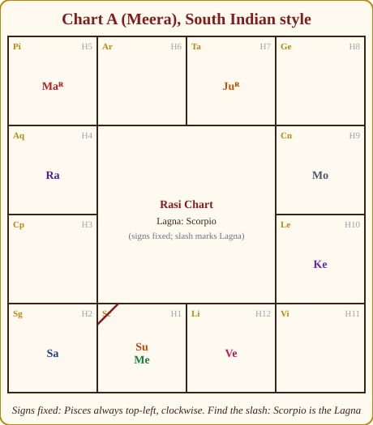
Figure 5.2: The same chart, South Indian style. Signs fixed and running clockwise from Pisces at top-left. The slash in the Scorpio box marks the Lagna. Count clockwise from there for houses 2 to 12.
Find the slash. Chart A: it is in Scorpio, bottom row, second from the left. That box is the 1st house.
Count clockwise for the houses. Sagittarius (bottom-left) is the 2nd, Capricorn (left, lower) is the 3rd, Aquarius the 4th, Pisces the 5th, and so on round to Libra as the 12th.
Locate the kendras — they are always the box with the slash and the boxes three, six and nine steps clockwise. Here: Scorpio, Aquarius, Taurus, Leo. Same four signs you found in the diamond, naturally.
Proceed exactly as before: trikonas, dusthanas, the rest.
Now do both formats for Chart B, and notice how the same information looks in each.
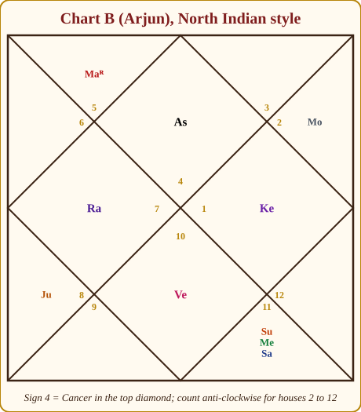
Figure 5.3: Chart B, North Indian. Sign 4 (Cancer) in the top diamond. Three planets crowd the 8th house at the bottom right.
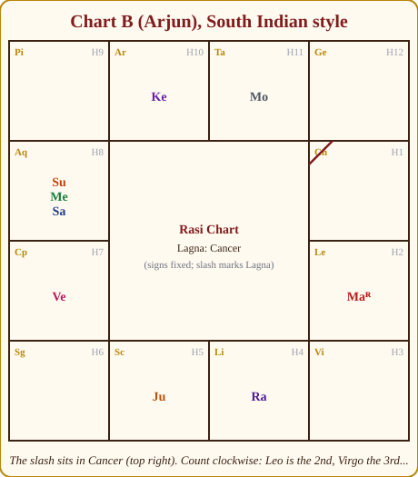
Figure 5.4: Chart B, South Indian. The slash sits in Cancer, top right. Aquarius (left column) holds Sun, Mercury and Saturn — count clockwise from Cancer and it is the 8th.
⚠️ Common beginner mistake: Counting the South Indian chart anti-clockwise because "the zodiac runs anti-clockwise". In the South Indian grid the signs and houses both run clockwise. In the North Indian diamond they run anti-clockwise. Keep a chart of each style in your notebook until the difference is automatic.
Finding the Lagna
In software. Enter date, time and place; set Lahiri ayanamsa and whole-sign houses; the program gives you the Lagna to the minute of arc. Check two things before trusting it: that the time zone is right (older Indian births are sometimes recorded in local mean time or in "railway time" that differs from IST), and that daylight-saving time, if the birth was abroad, has been handled.
Roughly, by hand. You can estimate a Lagna in your head — useful when a client says "I was born around dawn" or when checking whether a chart looks right. The principle is simple: at sunrise, the Sun is on the eastern horizon, so at sunrise the Lagna is the Sun's sign, at roughly the Sun's degree. From then on the eastern horizon sweeps through the zodiac, and a new sign rises roughly every two hours. Two hours after sunrise the Lagna is one sign ahead of the Sun; at midday it is about three signs ahead (the Sun is overhead — the 10th house, as directional strength told us); at sunset the Lagna is six signs ahead (the Sun is setting in the 7th); at midnight, nine signs ahead.
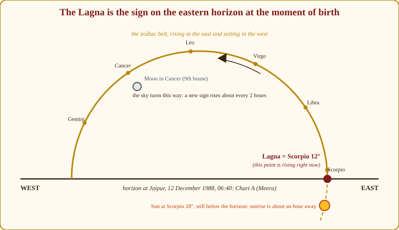
Figure 5.5: The Lagna is simply the point of the zodiac on the eastern horizon. Meera was born a little before sunrise, so her Lagna is in the Sun's sign, a few degrees behind the Sun.
Meera is the perfect example. Born at 06:40 in Jaipur in mid-December, a little before sunrise, with the Sun at 28° Scorpio. Before sunrise the Sun is still below the horizon and the rising point is behind it — so the Lagna is Scorpio, an earlier degree. Her Lagna is Scorpio 12°. The rule holds.
Now the warning. "Two hours per sign" is an average. Because the zodiac is tilted to the Earth's equator, some signs rise quickly and some slowly, and the effect grows the further you are from the equator. For Indian latitudes (roughly 10°–30° N) the pattern is:
Sign rising
Approximate time to rise (India)
Sign rising
Approximate time to rise (India)
Aries
1 h 40 min
Libra
2 h 10 min
Taurus
2 h 00 min
Scorpio
2 h 15 min
Gemini
2 h 10 min
Sagittarius
2 h 05 min
Cancer
2 h 15 min
Capricorn
1 h 50 min
Leo
2 h 10 min
Aquarius
1 h 35 min
Virgo
2 h 05 min
Pisces
1 h 35 min
Aquarius, Pisces and Aries hurry over the horizon in about an hour and a half; Cancer, Leo, Libra and Scorpio take well over two hours. In Delhi the spread is wider than in Chennai. So the hand method tells you the likely Lagna and its neighbours; it cannot tell you the degree, and near a sign boundary it cannot even be sure of the sign. Use software for anything you will say to a client. The hand method is for your own sanity checks and for those "around sunset" conversations.
💡 Did you know? The unequal rising times are why old Indian almanacs printed Lagna tables for each major city — Ujjain, Varanasi, Madras — giving the rising duration of each sign in ghatis (units of 24 minutes). Before software, an astrologer's accuracy depended on owning the right table for the right latitude.
Why the birth time matters so much
The Sun moves one degree a day; the Moon moves one degree in about two hours. But the Lagna moves one degree every four minutes. Get the time wrong by two hours and the entire chart re-shuffles: every planet moves to a different house, the lord of the chart changes, and the person you describe is someone else.
Even a smaller error matters. A planet near the end of a sign can move from the 9th house to the 10th with a twenty-minute change; a Moon at the edge of a nakshatra can shift the whole dasha sequence. This is why a careful astrologer asks not only "what time?" but "how do you know?" — a hospital record is gold; "my mother says around evening" is a starting point for detective work.
That detective work is birth-time rectification, and the basics are within your reach by Chapter 13. The method: take the possible range of times; for each candidate Lagna, check whether the dasha periods line up with three or four dated events the client is sure of — a marriage, the birth of a child, a father's death, a major job change or move. Marriage tends to fall in periods of Venus, the 7th lord, or planets in the 7th; a child's birth in periods of Jupiter or the 5th lord; a parent's passing in periods connected with the 9th/4th lords or maraka planets. When one candidate explains all the events and the others do not, you have your time. Add the physical evidence — build, face, temperament — from the Lagna descriptions later in this chapter, and you are usually right.
🪔 Consultation tip: Never guess a Lagna silently and read as if it were certain. Say: "Your time is approximate, so there are two possible rising signs. Let me ask you three questions to decide." The client feels respected, and you avoid the humiliation of describing the wrong person.
The Lagna lord: the captain of the ship
The planet that owns the rising sign is the Lagna lord (Lagnesha). If the Lagna is the front door, the Lagna lord is the person who holds the key. Its strength is the person's strength; its placement shows where the self goes to find itself. > 📖 Story: The captain at the door. Every haveli has a captain — the person who actually runs the household, keys at the waist. When you visit, the first thing to learn is where in the house the captain spends the day. If she is always at the front door (1st), the household is about itself. If she lives in the kitchen (2nd), it is about food, money and talk. If she is forever in the mother's room (4th), home comes first; in the roof office (10th), work comes first; in the guest-house across the lane (12th), she is half gone already — abroad, in retreat, or in the hospital wing. The Lagna lord is that captain, and its house is where the self goes to find itself. Rule: Read the Lagna lord's house as the room where the person's identity is invested.
Here is what its house says, derived logically — the Lagna lord carries the 1st house (the self) into whichever room it sits in.
Lagna lord in
Ease
The self is invested in...
1st
🟢
Itself: a self-made, physically strong person; identity is the project.
2nd
🟡
Family, wealth and speech: earns by own effort; a voice that defines them.
3rd
🟡
Courage and communication: the self-made fighter, writer, sibling-bound.
4th
🟢
Home, mother, land, learning: happiest at home; property and peace matter.
5th
🟢
Intelligence and children: a creative identity; fortunate (a trikona).
6th
🔴
Struggle and service: a competitor; health needs care; thrives in service professions.
7th
🟢
The partner and the public: identity found through relationship; travel.
8th
🔴
The hidden and the transforming: obstacles early, depth later; research, occult.
9th
🟢
Fortune, father, guru: graced; travels far; a life carried by faith.
10th
🟢
Career: defined by work; visible; status-seeking and usually status-achieving.
11th
🟢
Gains and friends: well networked; wishes tend to be fulfilled.
12th
🔴
Foreign lands and the inner life: spends, travels, withdraws; a spiritual pull.
Chart A: Scorpio rises, so Mars is the captain, and Mars sits retrograde in the 5th house in Pisces. The self is invested in intelligence, creativity and children; a trikona placement, so fortunate; retrograde, so the drive turns inward before it turns outward. Chart B: Cancer rises, the Moon is captain, sitting exalted in the 11th in Taurus. The self is invested in gains and friendships, and the captain is in excellent shape — whatever else the chart says, this person has a steady mind and people who help him.
The twelve Lagnas
What follows is a page for each rising sign: body and temperament, the Lagna lord, which planets are friends and which are troublemakers for that Lagna (a one-line preview from Appendix A.6 — the full logic is Chapter 8), typical strengths and struggles, career leanings, the stereotype, and how to speak to such a client. Read these as sketches of a tendency. The rest of the chart adds, softens or contradicts every line.
📖 Story: Twelve hosts at the front door. Knock on twelve havelis and twelve hosts answer. Aries flings the door open before you have finished knocking. Taurus will not discuss anything until you have eaten. Gemini asks you three questions on the doorstep and answers two of them himself. Cancer asks after your mother, and means it. Leo receives you from his chair and you feel oddly honoured. Virgo notices your shoes and quietly moves the doormat. Libra asks whether you would prefer tea or coffee, and then asks again. Scorpio watches you through the half-open door for a moment before it swings wide. Sagittarius tells you about his last pilgrimage before you have sat down. Capricorn checks the clock, then gives you exactly the time he promised. Aquarius is already telling you about the neighbourhood committee. Pisces has made up a bed for you before you said you were staying. Rule: The Lagna is the host's manner at the door — the body, the temperament, the first impression; the Lagna lord tells you where in the house that host actually lives.
Aries Lagna (Mesha)
Body and temperament. Lean, energetic, quick-moving; a prominent forehead or a mark on the head; walks fast, talks first. Impatient, direct, brave, generous in a hurry, quick to anger and quick to forget it.
Lagna lord: Mars. 🟢 Friends for this Lagna: Sun, Mars, Jupiter. 🔴 Troublemakers: Mercury, Venus, Saturn. 🟡 Neutral: Moon.
Strengths and struggles. Initiative, courage, honesty that borders on bluntness. Struggles with patience, with finishing what was started, with listening. Health: head, fevers, accidents from haste.
Career leanings. Anything that rewards a fast start: the armed forces, sport, surgery, engineering, entrepreneurship, sales that need nerve.
The stereotype. The young officer who leads the charge and asks questions afterwards.
Talking to this client. Be direct; they respect it. Give them a plan with a first step they can take today. Do not lecture about patience — show them where waiting wins.
Taurus Lagna (Vrishabha)
Body and temperament. Solid, well-built, a strong neck, pleasant face and voice; moves unhurriedly. Loyal, sensual, practical, attached to comfort and to people; stubborn once decided.
Lagna lord: Venus. 🟢 Friends: Saturn (the yogakaraka), Sun, Mercury. 🔴 Troublemakers: Moon, Jupiter, Mars. 🟡 Neutral: Venus itself, since it also owns the 6th.
Strengths and struggles. Reliability, taste, financial sense, endurance. Struggles with change, possessiveness, and a temper that arrives late and stays. Health: throat, thyroid, weight.
Career leanings. Finance and banking, real estate, food and hospitality, music and the arts, agriculture, anything built slowly and held.
The stereotype. The family jeweller whose shop has stood on the same corner for three generations.
Talking to this client. Never rush them. Give concrete numbers and dates. Frame every change as a way of protecting what they have.
Gemini Lagna (Mithuna)
Body and temperament. Tall or slender, expressive hands, quick eyes, a youthful look kept late. Curious, witty, restless, sociable, easily bored; two of everything — jobs, opinions, phones.
Strengths and struggles. Communication, adaptability, learning anything fast. Struggles with depth, follow-through and nervous exhaustion. Health: lungs, shoulders, nerves.
Career leanings. Writing, journalism, teaching, trade and marketing, technology, translation, media — anything with words and movement.
The stereotype. The journalist who knows everyone and files three stories a day.
Talking to this client. Keep it interesting; give them the why behind every suggestion. They will argue — enjoy it. Offer options, not orders.
Cancer Lagna (Karka)
Body and temperament. Round face, soft body, gains weight easily, gentle eyes. Emotional, protective, nostalgic, deeply attached to family and home; moody, easily hurt, slow to trust and utterly loyal once trust is given.
Lagna lord: Moon. 🟢 Friends: Mars (the yogakaraka), Jupiter, Moon. 🔴 Troublemakers: Venus, Mercury. 🟡 Neutral: Sun, Saturn.
Strengths and struggles. Empathy, memory, nurturing, intuition about people. Struggles with mood swings, holding grudges, letting others go. Health: chest, digestion, fluid balance.
Career leanings. Care professions — nursing, teaching small children, hospitality, food, real estate, the sea and shipping, psychology, anything involving the public's mood.
The stereotype. The mother who runs a hostel and knows every student's problem before they mention it.
Talking to this client. Warmth first, facts second. Acknowledge the feeling before you give the plan. Arjun (Chart B) has this Lagna: begin with his mother and his home, and he will listen to anything.
Leo Lagna (Simha)
Body and temperament. Broad shoulders, an upright bearing, a large head or mane of hair, a commanding voice even when quiet. Proud, generous, loyal, theatrical, needs respect and gives it; can be autocratic and thin-skinned about criticism.
Lagna lord: Sun. 🟢 Friends: Mars (the yogakaraka), Jupiter, Sun. 🔴 Troublemakers: Mercury, Venus, Saturn. 🟡 Neutral: Moon.
Strengths and struggles. Leadership, warmth, courage, dignity under pressure. Struggles with ego, delegation and admitting error. Health: heart, spine, stomach.
Career leanings. Administration, government, politics, management, entertainment, medicine, anything with a chair at the head of the table.
The stereotype. The district collector everyone stands up for when he enters the room.
Talking to this client. Respect the crown; never embarrass them. Frame difficulties as tests of a leader. Praise honestly, then advise.
Virgo Lagna (Kanya)
Body and temperament. Neat, slim, youthful, fine features, a careful way of dressing. Analytical, precise, helpful, modest, anxious; sees the one crooked tile; serves quietly and expects nothing — then resents it.
Strengths and struggles. Skill, discernment, reliability, health-consciousness. Struggles with worry, perfectionism and self-criticism. Health: intestines, digestion, skin.
Career leanings. Medicine and pharmacy, accountancy and audit, editing, research, nutrition, quality control, computing, craft.
The stereotype. The family doctor who remembers every patient's blood-pressure reading.
Talking to this client. Be exact; vague reassurance irritates them. Give details, degrees, dates. Remind them, gently, that "good enough" is a legitimate category.
Libra Lagna (Tula)
Body and temperament. Graceful, well-proportioned, attractive features, a pleasant manner; dislikes ugliness in things and in people. Fair, diplomatic, charming, indecisive; wants everyone to be happy and pays a price for it.
Strengths and struggles. Balance, negotiation, aesthetics, partnership. Struggles with decision, confrontation and dependence on others' approval. Health: kidneys, lower back, sugar.
Career leanings. Law, diplomacy, design and fashion, the arts, counselling, trade, human resources, anything requiring an even hand.
The stereotype. The judge who hears both sides so patiently that the court runs late.
Talking to this client. Present two paths with the trade-offs made clear, then help them choose. They will thank you for the permission to decide.
Scorpio Lagna (Vrishchika)
Body and temperament. Compact, strong, magnetic eyes, a guarded posture; often a low, controlled voice. Intense, private, loyal, investigative; forgives slowly, forgets never; capable of extraordinary transformation.
Lagna lord: Mars. 🟢 Friends: Jupiter, Moon, Sun, Mars (the Sun and Moon together act as yogakarakas). 🔴 Troublemakers: Mercury, Venus, Saturn. 🟡 Neutral: none.
Strengths and struggles. Depth, focus, resilience, penetrating insight into people. Struggles with suspicion, secrecy, jealousy and letting go. Health: reproductive system, excretion, infections.
Career leanings. Medicine and surgery, research, investigation and intelligence, psychology, the occult and astrology itself, insurance, chemistry, crisis management.
The stereotype. The surgeon who says little, sees everything, and whom patients trust completely.
Talking to this client. Earn trust first; do not perform. Be truthful about difficult things — they can tell when you soften — but always show the transformation on the other side. Meera (Chart A) has this Lagna, and every reading of her chart should begin with respect for its depth.
Sagittarius Lagna (Dhanu)
Body and temperament. Tall or long-limbed, strong thighs, an open face and a ready laugh. Optimistic, principled, philosophical, frank to a fault, restless for horizons; can be preachy and careless with details.
Lagna lord: Jupiter. 🟢 Friends: Sun, Mars, Jupiter (the Sun and Mercury together act as yogakarakas). 🔴 Troublemakers: Venus, Saturn. 🟡 Neutral: Mercury, Moon.
Strengths and struggles. Faith, vision, teaching, honesty, luck that arrives just in time. Struggles with over-promising, impatience with small print, and a tendency to lecture. Health: hips, thighs, liver, weight.
Career leanings. Teaching and academia, law, religion and philosophy, publishing, foreign trade and travel, sport, advisory roles.
The stereotype. The professor who is always about to leave on a pilgrimage.
Talking to this client. Talk about meaning and purpose; they engage with the big picture. Then quietly hand them the details they will otherwise skip.
Capricorn Lagna (Makara)
Body and temperament. Lean, bony, a long face; looks old when young and young when old; a dry, slow humour. Ambitious, disciplined, dutiful, cautious, reserved; carries responsibility early and complains rarely.
Strengths and struggles. Persistence, realism, organisation, integrity. Struggles with pessimism, rigidity, loneliness and the belief that nothing comes without suffering. Health: knees, joints, bones, teeth, skin.
Career leanings. Administration, engineering, construction, government service, mining and heavy industry, management, anything that rewards the long climb.
The stereotype. The chief engineer who built the dam and never made a speech about it.
Talking to this client. Respect their seriousness; do not jolly them along. Show them a timeline. Remind them that Saturn's rewards do come — and that rest is also a duty.
Aquarius Lagna (Kumbha)
Body and temperament. Tall, strong calves, a thoughtful face that seems to be listening to something far away. Idealistic, independent, humanitarian, unconventional, detached; many acquaintances, few intimates; fixed in principle.
Strengths and struggles. Vision, originality, fairness, systems thinking. Struggles with emotional distance, stubbornness about ideas and a feeling of not belonging. Health: calves and ankles, circulation, nerves.
Career leanings. Science and technology, social work and reform, engineering, aviation, astrology, large organisations and NGOs, anything that serves the group.
The stereotype. The scientist who is happier with a problem than with a party.
Talking to this client. Treat them as an equal thinker. Explain the principle behind the remedy or they will not do it. Do not appeal to sentiment; appeal to fairness and to the greater good.
Pisces Lagna (Meena)
Body and temperament. Soft, often plump body, large liquid eyes, small feet; a gentle voice. Compassionate, imaginative, adaptable, devotional; easily influenced, prone to escape into dreams, food or others' troubles; sacrifices too readily.
Lagna lord: Jupiter. 🟢 Friends: Mars, Moon, Jupiter (Mars and Jupiter together act as yogakarakas). 🔴 Troublemakers: Saturn, Venus, Sun, Mercury. 🟡 Neutral: none.
Strengths and struggles. Empathy, faith, creativity, healing presence. Struggles with boundaries, decision, self-pity and practical money matters. Health: feet, lymph, sleep, sensitivity to medicines.
Career leanings. Healing and medicine, the arts and music, spiritual vocations, charity work, hospitality, the sea, film and photography.
The stereotype. The temple musician whom everyone brings their sorrows to, and who forgets to eat.
Talking to this client. Gentleness, but with structure. Give them one concrete boundary to keep and one practical step to take. They will feel your kindness; make sure they also leave with a plan.
The ten-minute first read
Whatever the chart, whoever the client, I do the same ten minutes before I say a single word. It is a checklist, and I recommend you write it on the first page of your notebook.
📖 Story: Walking the haveli once. Before I say a word to a client I walk through their haveli once, always by the same route. I stop at the front door and ask who owns it and where the captain is (Lagna and its lord). I pay my respects to the Queen Mother in her room (the Moon, its sign and star), because she decides how everything I say will be received. I check the four pillars that hold the roof (planets in the kendras). I look into the store-room, the back stairs and the guest-house (the dusthanas) to see who has been sent there. I note which courtier is being honoured and which humiliated (exalted and debilitated planets). I read the railway timetable pinned to the wall (the current dasha and the next). Then, and only then, I turn to the host and ask one question to make sure I am in the right house. Rule: Lagna and lord; Moon and nakshatra; kendras; dusthanas; dignities; dasha; one confirming question — in that order, every time.
Lagna and its lord. Which sign rises; where is its lord; how strong is it (sign dignity, house, retrograde, combustion)?
Moon sign and nakshatra. How will this person feel what I say? Which dasha sequence does the nakshatra set up?
Planets in kendras. What are the pillars — what is strong and visible in this life?
Planets in dusthanas. Where is the struggle, the specialisation, the hidden work?
Exalted and debilitated planets. Which actor is at the summit; which is in unfamiliar clothes?
Current dasha. What period is running now, and what is next? (Chapter 13 teaches the calculation; software gives it in a second.)
One confirming question. Ask the client something the chart should make true — and listen. If the answer is no, re-check the birth time before you go on.
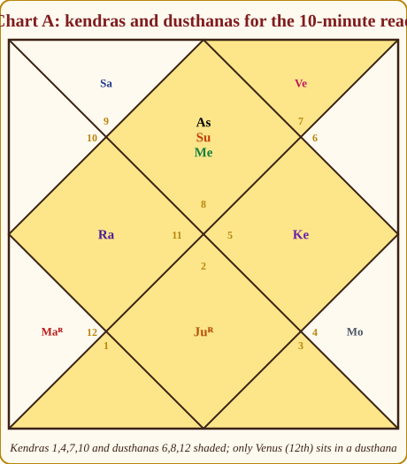
Figure 5.6: Chart A prepared for the ten-minute read. Kendras and dusthanas are shaded; the eye goes to them first.
Let us do it on Chart A, aloud.
1. Lagna and lord. Scorpio rises. Lord Mars, retrograde at 4° Pisces in the 5th house — a trikona, in Jupiter's sign, and Jupiter is Mars's friend. A comfortable, fortunate captain whose energy turns inward first. Sun and Mercury sit in the Lagna, strengthening it considerably: a strong front door.
2. Moon. Cancer, own sign, 21°, in the 9th — Ashlesha nakshatra, Mercury's star. A receptive, emotional, faith-anchored mind; shrewd (Ashlesha) beneath the softness. Because the birth Moon is in Mercury's star, the dasha sequence begins with Mercury.
3. Kendras. Sun and Mercury (1st), Rahu (4th), Jupiter retrograde (7th), Ketu (10th). Every pillar occupied — a visible, effective life. Strong self, unconventional home, a learned partner, a career that lets go of ego.
4. Dusthanas. Only Venus in the 12th, in its own sign Libra: comfortable expenses, private pleasures, foreign or distant connections in love; not a struggle so much as a quiet room.
5. Exalted and debilitated. Strictly, none of the planets is at its exaltation or debilitation sign. The Moon is in its own sign and Venus in its own sign — both dignified. Mercury in Scorpio and Saturn in Sagittarius are in neutral-to-friendly territory. Nothing is in the ditch.
6. Dasha. Mercury Mahadasha at birth, with a balance of about 11½ years (the Moon at 21° Cancer has traversed most of Ashlesha; (30 − 21) ÷ 13°20′ × 17 ≈ 11.5). Then Ketu for 7 years (age 11.5–18.5), Venus for 20 (18.5–38.5), Sun for 6 (38.5–44.5). Born December 1988, she entered the Venus period around mid-2007 and the Sun period around mid-2027. Marriage in 2016 — inside Venus, the natural karaka of marriage — fits.
7. One confirming question. With Rahu in the 4th and Ketu in the 10th, I would ask: "Did you settle far from where you were born, or in a home very different from your parents'?" With Jupiter in the 7th: "Is your husband a teacher, or older in temperament than his years?" A yes to either, and I proceed with confidence. Two noes, and I would re-examine the birth time before saying anything more.
Ten minutes. You have not predicted anything yet — and already you could describe this woman to her satisfaction.
🧭 Guruji's rule of thumb: Never open your mouth before you have finished the seven steps. The client's first impression of you is formed by your first sentence; make sure it is one the chart can defend.
In one breath
North Indian chart: houses fixed (top diamond = 1st, anti-clockwise), sign numbers rotate. South Indian chart: signs fixed (Pisces top-left, clockwise), find the Lagna slash.
Always check the sign sequence and locate the four kendras first.
The Lagna is the zodiac point on the eastern horizon: at sunrise it is the Sun's sign; roughly one sign every two hours after that — but signs rise unequally, so use software for anything you will say aloud.
Birth time errors re-shuffle the chart; rectify by matching dasha periods to dated life events, and confirm with the physical Lagna description.
The Lagna lord is the captain; its house shows where the self goes to find itself.
Each of the twelve Lagnas has a body, a temperament, a set of friendly and unfriendly planets (Appendix A.6), typical careers, and a way it likes to be spoken to.
The ten-minute read: Lagna and lord, Moon and nakshatra, kendras, dusthanas, exaltations and debilitations, current dasha, one confirming question.
Practice
✍️ Practice:
1. In Figure 5.3 (Chart B, North Indian), which sign number sits in the 8th house, and which planets are there? Confirm by finding the same box in Figure 5.4.
2. A client was born about two hours after sunrise in late April, when the Sun is in sidereal Aries. Roughly which sign rises? Which neighbouring signs would you also keep in mind, and why?
3. For a Libra Lagna, name the yogakaraka and the two planets Appendix A.6 lists as marakas. In one sentence, why is Saturn friendly to Libra even though it is a natural malefic? (Hint: which houses does it own from Libra?)
4. Arjun's Lagna lord is the Moon, in the 11th house, exalted. Write a two-sentence reading of the captain using the table in this chapter.
5. Run the seven-step checklist on Chart B and write one confirming question you would ask Arjun.
Answers
1. Sign 11, Aquarius, with Sun, Mercury and Saturn. In the South Indian chart Aquarius is the second box down the left-hand column; count clockwise from the Cancer slash and it is the 8th.
2. At sunrise the Lagna is Aries with the Sun; two hours later it is about one sign ahead, so Taurus. Keep Aries and Gemini in mind: Aries rises quickly (about 1 h 40 min at Indian latitudes), so the boundary may already be past, and "about two hours" is only an estimate. Software would settle it.
3. Yogakaraka: Saturn. Marakas: Mars and Jupiter. From Libra, Saturn owns Capricorn (the 4th, a kendra) and Aquarius (the 5th, a trikona) — a kendra and a trikona lord in one planet — which is exactly the definition of a yogakaraka; its natural harshness is overruled by its functional role.
4. Arjun's self is invested in gains, friends and networks; wishes tend to come true through people. The captain is exalted in Taurus, so his mind is steady, comfortable and popular — a strong foundation beneath the intense 8th-house cluster.
5. Lagna Cancer, lord Moon exalted in the 11th; Moon in Krittika (Sun's star), so the dasha begins with the Sun (balance about 1.8 years), then Moon, Mars, Rahu (18.8–36.8). Kendras: Rahu 4th, Venus 7th, Ketu 10th. Dusthanas: Sun, Mercury, Saturn in the 8th (Saturn combust). Exalted: Moon. Debilitated: none. Confirming question: "Does your work involve research, insurance, or things most people never see — and did your father's life have a major upheaval?"
Chapter 6: Aspects (Drishti) and Conjunctions (Yuti) — How Planets Talk
Until now we have placed the actors on the stage. Nine planets, twelve signs, twelve rooms — and you can already say, from Chapter 5, what a planet sitting in a room does there. But a planet does not only act where it sits. It also looks. And in a joint family, you know very well that the uncle sitting in the drawing room can run the whole kitchen with one glance.
That glance is what this chapter is about. An aspect (Drishti, literally "sight") is a planet's gaze falling on a house or on another planet from a distance. A conjunction (Yuti, "union") is two planets sitting in the same room and being forced to share it. These two — sight and company — are how planets talk to each other. Once you can read the conversation, a chart stops being a list of nine separate facts and becomes one connected story.
Let me give you the grammar first, then the reasons, then a full worked chart.
What an aspect actually is
Picture a planet as a lamp. It lights up the room it sits in, of course. But it also throws a beam across the house to another room. Whatever is in that far room is bathed in the lamp's colour: Jupiter's beam is warm and gold and makes things grow; Saturn's beam is cold and blue and makes things slow down and get serious; Mars's beam is hot and red and makes things urgent.
So "Saturn aspects the 7th house" means: Saturn pours its nature — delay, seriousness, duty — into marriage and partnership, even though Saturn is not sitting there. The planet stays; its influence travels.
Two things to hold on to:
Aspects are counted from the planet, not from the Lagna. If Saturn is in the 4th house, its "7th aspect" falls on the 7th house from the 4th, which is the 10th house of the chart. Beginners forget this in the first month and then never again.
An aspect is one-directional. Saturn looking at the 7th does not mean the 7th looks back. (Two planets can look at each other — we come to that — but a house never looks at anything.)
🧭 Guruji's rule of thumb: A planet acts where it sits and speaks where it looks. Sitting is louder than looking, but looking travels further.
The Parashari rule: the 7th for everyone, plus three specials
Here is the entire rule from Brihat Parashara Hora Shastra, and Appendix A.4 has the same table:
Planet
Natural gaze
Full aspect on houses counted from itself
Sun
🔴 mild pressure
7th only
Moon
🟢 bright / 🔴 dark
7th only
Mercury
🟡 takes its company's colour
7th only
Venus
🟢 protects
7th only
Rahu, Ketu (by common practice)
🔴 unsettles
7th only
Mars
🔴 heats
4th, 7th, 8th
Jupiter
🟢 blesses
5th, 7th, 9th
Saturn
🔴 slows, tests
3rd, 7th, 10th
That is it. Every planet looks straight across the chart at the house opposite it — the 7th from itself. Three planets have extra eyes. The classroom mnemonic in Hindi-speaking India is simply "Mangal chaar-aath, Guru paanch-nau, Shani teen-das" — Mars four-eight, Jupiter five-nine, Saturn three-ten. Say it ten times and it is yours for life.
Why the 7th for everyone?
Because opposition is the most natural relationship in the sky. When the Moon is opposite the Sun we get a full Moon; two planets opposite each other stare across the wheel with nothing in between. Every planet has this straight stare. It is the "face to face" aspect, and it is why the 7th house — the house opposite the Lagna — is the house of the other person: spouse, partner, the public you face.
Why does Mars look at the 4th and 8th?
Think of Mars as a soldier. He faces the enemy in front (the 7th), leaps forward to strike (the 4th) and turns to strike behind (the 8th). The 4th and 8th are the "square" houses (Chaturasra), the tense corners of the chart, and the planet of tension owns those corners.
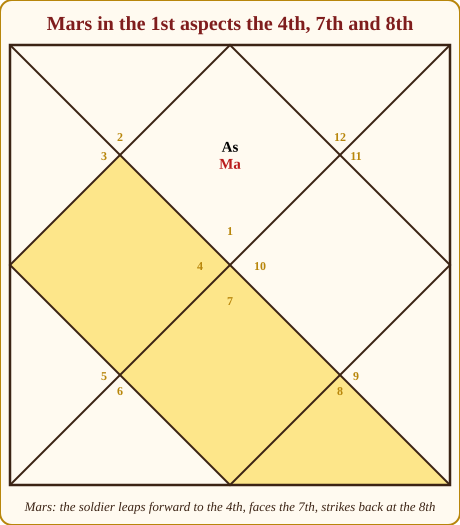
Figure 6.1: Mars in the 1st. The shaded houses receive its full gaze: the 4th (leap forward), the 7th (face to face), and the 8th (strike behind).
Why does Jupiter look at the 5th and 9th?
Jupiter is the royal priest, and a priest blesses. The 5th and 9th are the trines (Trikona) — merit, children, fortune, dharma, "Lakshmi's houses". The great benefic showers the two most auspicious houses; that is why "Jupiter's aspect" is the phrase a senior astrologer most often uses to explain why something bad did not happen.
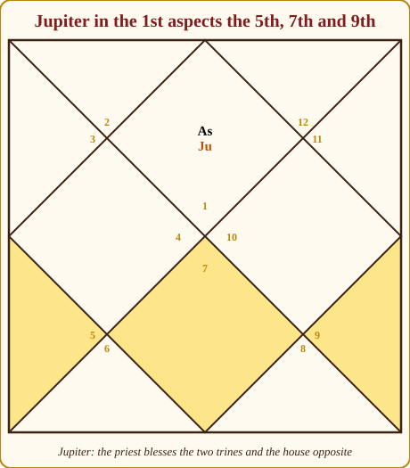
Figure 6.2: Jupiter in the 1st blesses the two trines from itself, the 5th and 9th, along with the 7th.
Why does Saturn look at the 3rd and 10th?
Saturn is the foreman on a construction site. A foreman watches effort (the 3rd — courage, hard work) and output (the 10th — work, duty). Both are growing houses (Upachaya), where results come with time, and Saturn is the planet of time.
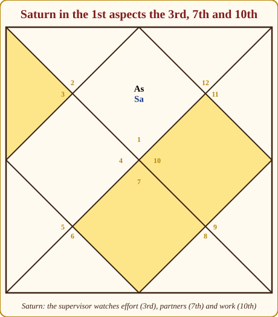
Figure 6.3: Saturn in the 1st supervises the 3rd (effort), the 7th (partnerships) and the 10th (career).
📖 Story: Three courtiers and their habits. Every courtier in the haveli stares straight across the hall at whoever sits opposite — that is the 7th aspect, and even the King and the Queen Mother do it. But three courtiers have habits. The Commander, red Mars, never trusts a hall. He stands at his post and keeps glancing to his flanks — the room four steps ahead and the room eight steps ahead — because that is where an ambush comes from. The Royal Priest, golden Jupiter, walks the hall with his hand raised, and he blesses the two rooms where the lamps of merit burn — the 5th and the 9th. The old Judge of Labour, navy Saturn, blesses nobody; he inspects. He walks to the 3rd room to see whether the servants are working and to the 10th to see whether the work is finished. Rule: Every planet aspects the 7th; Mars adds the 4th and 8th, Jupiter the 5th and 9th, Saturn the 3rd and 10th — always counted from where the planet sits.
Now count from a different house
Put Saturn in the 4th instead. The 3rd from the 4th is the 6th; the 7th from the 4th is the 10th; the 10th from the 4th is the 1st. So a 4th-house Saturn aspects the 6th, 10th and 1st houses — including the Lagna itself. Trace it on the diagram with your finger until it feels obvious.
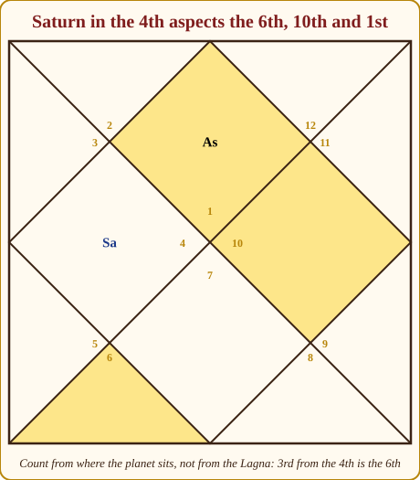
Figure 6.4: The same three aspects, now counted from the 4th. Saturn's 10th aspect lands on the Lagna.
⚠️ Common beginner mistake: Counting aspects from the Lagna. "Saturn aspects the 3rd, 7th and 10th" is only true when Saturn is in the 1st. Always start the count at the house the planet occupies, and count that house as 1.
Reading an aspect on a house versus on a planet
An aspect on an empty house colours the affairs of that house. Jupiter aspecting an empty 4th: home, mother and property have a protector. Saturn aspecting an empty 2nd: money comes slowly, speech is measured.
An aspect on a planet colours the planet's behaviour, and through it every house that planet owns — the more powerful case. Saturn aspecting the Moon chills the Moon itself — the mind becomes cautious, worried, mature early — and touches whichever house the Moon rules. Jupiter aspecting Venus makes love generous wherever those two sit.
So when you scan a chart, ask two questions of every aspect: which room does the beam light? and is anyone standing in the beam?
Benefic and malefic aspects
The simplest usable rule: the gaze of Jupiter, Venus, a bright Moon and an unafflicted Mercury protects and grows what it touches 🟢; the gaze of Saturn, Mars, the Sun (mildly), Rahu and Ketu tests and pressures it 🔴. Neither is "good" or "bad" in the moral sense: a house only ever protected gives a soft, untested life; one only ever pressured gives a hard one. Most houses receive a mixture.
Two refinements worth knowing from the start:
A malefic's gaze on a malefic house is often welcome. Saturn aspecting the 6th (enemies, disease, debts) restrains those things. The cruel planets do well in and on the cruel houses — "a thief to catch a thief", as my teacher put it.
A benefic's gaze on a benefic house is the classical protection. Jupiter aspecting the 5th or 9th, Venus aspecting the 7th: these are the aspects that soften even a difficult period.
The functional nature of a planet — whether it is a friend or an enemy for your particular Lagna — modifies all of this, and Chapter 8 is entirely about that. For now, think in natural terms.
When two planets look at each other: mutual aspect
If Mars is in the 1st and Saturn in the 7th, Mars aspects the 7th (Saturn) and Saturn aspects the 7th (Mars). They are staring at each other. This is a mutual aspect (paraspara drishti), and it is far stronger than a one-way glance, because the two planets are now in a relationship. Their natures blend almost as if they were in the same house.
Mutual aspects happen most easily through the 7th, because every planet has it. But watch for the special aspects too: Jupiter in the 1st and Saturn in the 9th — Jupiter's 9th aspect falls on Saturn, and Saturn's 3rd aspect... falls on the 11th, not the 1st. So that one is one-way. Check both directions every time; do not assume.
The four kinds of relationship (Sambandha)
This word — Sambandha, "connection" — is going to matter enormously in Chapter 10, where nearly every great yoga is defined as "the lord of X connected with the lord of Y". Parashara and the tradition recognise four ways two planets can be connected:
#
Relationship
What it means
Strength
1
Conjunction (Yuti)
Both in the same sign/house
Strongest
2
Mutual aspect (paraspara drishti)
Each aspects the other
Strong
3
Exchange of signs (Parivartana)
A sits in B's sign, B sits in A's sign (Chart C: Moon in Jupiter's Sagittarius, Jupiter in the Moon's Cancer)
Strong, and very special (Chapter 9)
4
Sitting in each other's sign one way
A sits in B's sign, but B does not return the favour
Weakest; some teachers do not count it alone
When you see two planets connected in any of these four ways, their houses are fused. A 9th lord connected with a 10th lord fuses fortune with career — the celebrated Dharma-Karma Adhipati yoga of the classics. A 6th lord connected with the 7th lord fuses disputes with marriage. The connection itself is neutral machinery; what it produces depends on which houses and which planets.
🧭 Guruji's rule of thumb: Before you name any yoga, prove the Sambandha. If the two lords are not together, not looking at each other, and not in each other's signs, they are not connected, and the yoga is not there — however much the client wants it to be.
Conjunctions: two planets in one room
A conjunction is the most intimate relationship. Two planets in one house are like two relatives sharing one bedroom: their habits mix whether they like it or not. The house receives both natures at once, and each planet takes on some of the other's colour.
The art of reading a conjunction is blending: you ask what happens when authority (Sun) and intellect (Mercury) live together, and you get confident intelligence that speaks — the Budha-Aditya yoga, derived rather than memorised.
The table gives the classical flavour of every pair, colour-coded: 🟢 helpful, 🔴 difficult, 🟡 mixed. Thirty-six pairs are possible on paper; Rahu with Ketu never happens, because the nodes are always exactly opposite. These are starting points; sign, house, dignity and aspects modify them. The stories after the table are how you will remember them.
Pair
Traditional name (if any)
Core flavour
🟡
Sun + Moon
Amavasya (new-Moon) birth
Mind merged with ego and father; a dim Moon that needs support from Jupiter; strong will, low outward emotion
🟡
Sun + Mars
—
Commander's fire: courage, engineering, army/police, surgery; temper with father or authority
🟢
Sun + Mercury
Budha-Aditya
Articulate intelligence, administration, teaching, mathematics — provided Mercury is not combust
🟢
Sun + Jupiter
—
Dharmic authority: teacher-fathers, advisors, judges, men of principle; sometimes pride in one's wisdom
🟡
Sun + Venus
—
Glamour with position: arts in government or corporations; Venus is often combust here, so marriage may need patience
🔴
Sun + Saturn
—
Friction with father or bosses; late recognition; the discipline of working for a stern authority; a serious childhood
🔴
Sun + Rahu
Grahan (eclipse) yoga
Unconventional or foreign fathers/authority; ambition that overshoots; ego confusion, then a distinctive identity
🔴
Sun + Ketu
Grahan (eclipse) yoga
Detachment from ego and from the father figure; spiritual or technical depth; low need for applause
🟡
Moon + Mars
Chandra-Mangala
Earning drive, competitiveness, quick temper; mother's health or a forceful mother; property through effort
🟡
Moon + Mercury
—
Quick, verbal, restless mind; writers and traders; Mercury dislikes the Moon, so the mind can second-guess itself
🟢
Moon + Jupiter
(Gaja-Kesari, since the same house is a kendra from itself)
Optimism, wisdom, protection, a generous mother; sometimes over-trusting
🟢
Moon + Venus
—
Artistic, comfort-loving, soft-hearted; beauty and hospitality; can drift into indulgence
🔴
Moon + Saturn
Vish (poison) yoga / Punarphoo
Melancholy, early responsibility, delayed comforts, a struggling or distant mother; also great emotional endurance
🔴
Moon + Rahu
Grahan yoga
Vivid imagination, anxiety, phobias, fascination with the foreign or the hidden; a mind that needs anchoring
🔴
Moon + Ketu
Grahan yoga
Intuitive, detached, "old soul" mind; separation from mother or motherland; meditation comes easily
Righteous force: law, property, teaching with authority, defence of the weak; sometimes preachy
🟡
Mars + Venus
—
Passion: love with heat, arts with drive, sport, design; relationships that begin fast
🔴
Mars + Saturn
—
Hard labour, frustration, accident-prone when careless; also machines, mining, engineering, and stubborn endurance
🔴
Mars + Rahu
Angarak (popular name)
Explosive energy, risk-taking, technology, sudden anger; needs an outlet such as sport or surgery
🔴
Mars + Ketu
—
Sudden actions, wounds and cuts, martial arts, surgeons; energy that appears and vanishes
🟡
Mercury + Jupiter
—
Scholarship, teaching, publishing, counsel; the two are natural enemies, so faith and reason may quarrel inside one head
🟢
Mercury + Venus
—
Poetry, music, commerce, charm; the salesman-artist; pleasant speech
🟡
Mercury + Saturn
—
Methodical mind, slow careful speech, accountancy, law, research; may stammer or hesitate in youth
🟡
Mercury + Rahu
—
Clever and unconventional; technology, languages, cunning; watch for exaggeration in speech
🟡
Mercury + Ketu
—
Intuitive mathematics, cryptic or terse speech, coding, astrology itself
🟡
Jupiter + Venus
—
Two teachers of wealth together: luxury, learning, wealth; they are enemies, so indulgence can fight principle
🟡
Jupiter + Saturn
—
Dharma meets karma: slow, steady, institutional careers; priest-administrators; late but durable success
🟡
Jupiter + Rahu
Guru-Chandal
An unconventional guru; breaks tradition; can give enormous rise through foreign or modern paths (see below)
🟡
Jupiter + Ketu
—
Philosophy, spirituality, detachment from wealth or from children; moksha-oriented wisdom
🟡
Venus + Saturn
—
Mature or late love, practical partnerships, arts with discipline (they are friends); loyalty over romance
🟡
Venus + Rahu
—
Intense desires, glamour, foreign or unusual partners, illusions in love; entertainment industry
🟡
Venus + Ketu
—
Detachment in love, refined tastes, past-life relationship karma; the artist-ascetic
🔴
Saturn + Rahu
Shrapit (popular name)
Heavy karmic weight, delays, fear; also patience, foreign labour, engineering of large systems
🔴
Saturn + Ketu
—
Renunciation, isolation, deep discipline; monks, researchers, mountaineers
—
Rahu + Ketu
—
Never occurs: the nodes are always seven houses apart
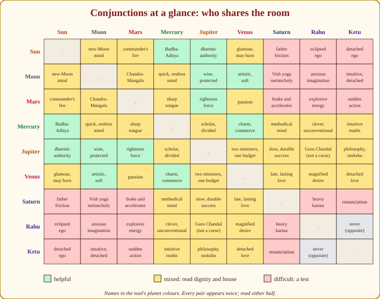
Figure 6.5: The same thirty-six pairs as a grid. Green cells help, red cells test, amber cells mix. Photograph it.
The court in one room: the pairs as stories
📖 Story: The King's three companions. Watch who sits beside the King. When the clever young Prince, green Mercury, sits at his elbow with the ledgers, the court gets a ruler who can explain his decrees — that is Budha-Aditya, authority that speaks. But the Prince must not sit too close to the throne; if the King's glare falls full on him he goes silent — that is combustion. When the Minister of Pleasure, pink Venus, sits beside the King, the court turns glamorous — festivals, arts, fine buildings — yet the King demands discipline and the Minister wants indulgence, so Venus is often burnt, and the person's comforts and love life end up serving the father's or the career's wishes. And when the old Judge, navy Saturn, sits beside the King, the hall goes cold. In the Puranas Saturn is the Sun's own son, whom the Sun refused to recognise; father and son sit together and do not speak. That is friction with father or authority, and recognition that comes late, after long duty. Rule: Sun + Mercury 🟢 speaks; Sun + Venus 🟡 shines but may burn; Sun + Saturn 🔴 tests the bond with father and bosses.
📖 Story: The Queen Mother's visitors. The Queen Mother, the grey Moon, is the mind of the kingdom: she feels whatever enters her room. When the Commander marches in, the two of them end up running the treasury together — her care for the household and his drive to win make money, and quarrels; that is Chandra-Mangala, earning capacity with a temper. When the old Judge visits, he sits in silence and reminds her of every duty undone and every year gone; the room fills with melancholy — the tradition calls it Vish yoga, poison — but it also breeds endurance, for she learns to bear anything. When the Smoke-headed Stranger slips in, she cannot see clearly; the room fills with rumours, fascination, fear of things that are not there — Grahan yoga, the eclipsed mind, brilliant at imagining and poor at resting. Rule: Moon + Mars 🟡 earns and argues; Moon + Saturn 🔴 sorrows and endures; Moon + Rahu 🔴 imagines and worries.
📖 Story: The Commander's company. The Commander, red Mars, is heat and speed. Put the cold old Judge in his room and you have a chariot with one foot on the accelerator and one on the brake: it lurches, it stalls, sometimes it crashes — hard labour, frustration, the accident born of impatience — but a chariot that learns to drive this way can climb any mountain; that is the endurance of engineers and miners. Put the Minister of Pleasure in his room and the Commander falls in love — fast, hot, sometimes reckless: passion in romance, in art, in sport. Put the young Prince in his room and the two argue all night — the sharp tongue, the debate, the surgeon's or coder's precise aggression. Rule: Mars + Saturn 🔴 brakes and accelerates at once; Mars + Venus 🟡 is passion; Mars + Mercury 🟡 is the sharp, technical tongue.
📖 Story: The Priest's company. The Royal Priest, golden Jupiter, is wisdom and faith. Seat the Minister of Pleasure beside him and you have two ministers who both want the budget — the Priest for temples and schools, the Minister for gardens and music. Both are generous, so wealth flows, but they never quite agree; that is the old enmity between Jupiter and Venus. Seat the Smoke-headed Stranger beside him and the court whispers Guru Chandal — the holy man keeping company with the outsider. But watch what actually happens: the Priest learns things the scriptures never taught, and the Stranger learns restraint. If the Priest is strong — own sign, exalted, in a trine — you get the reformer, the scholar who reads foreign books, the professor who breaks his field open. Only when the Priest is weak does faith go astray. Seat the old Judge beside him and you have dharma and karma at one table — slow, institutional, lasting: the priest-administrator. Rule: Jupiter + Venus 🟡 is wealth with disagreement; Jupiter + Rahu 🟡 is the unconventional guru, not a curse; Jupiter + Saturn 🟡 is slow, durable success.
📖 Story: The Judge's company. The old Judge of Labour, navy Saturn, began life as a servant and rose by discipline. Two people are comfortable in his cold room. The Smoke-headed Stranger also came from outside; together they carry the heaviest files in the kingdom — the popular name is Shrapit, "cursed", but what I see is two outsiders doing the long, unglamorous, karmic work nobody else will: foreign labour, large engineering, delays that end in permanence. The Minister of Pleasure surprises everyone by liking the Judge: she brings him flowers, he gives her a schedule. Love that comes late and lasts, art with discipline, loyalty above romance. Rule: Saturn + Rahu 🔴 is heavy, delayed karma; Saturn + Venus 🟡 is mature, durable love.
📖 Story: The Prince, the Minister and the Stranger. The young Prince, green Mercury, and the Minister of Pleasure, pink Venus, are the People's Party's charming pair: he writes the verse, she sets it to music; he sells, she decorates the shop. Poetry, commerce, pleasant speech — a natural friendship. But when the Minister of Pleasure is found with the Smoke-headed Stranger, the court's desires grow larger than life: foreign lovers, glamour, the screen, the intoxication of wanting. Rahu magnifies whatever he touches, and what he touches here is desire. Rule: Mercury + Venus 🟢 is charm and art; Venus + Rahu 🟡 is magnified, unusual desire.
📖 Story: The Headless Sadhu empties the room. Purple Ketu has no head — no ego, no appetite for applause. Whichever room he sits in, he quietly removes the furniture. With the King: no craving for position, detachment from the father. With the Queen Mother: an intuitive, unworldly mind, separation from mother or motherland. With the Commander: sudden action and sudden withdrawal, cuts and wounds, the surgeon's knife. With the Priest: philosophy that gives away wealth and expectation. With the Minister of Pleasure: refined taste and detachment in love. With the Judge: renunciation, the researcher in his cell. The emptied room feels like loss for years, and then, often, like freedom. Rule: Ketu with any planet 🔴 subtracts that planet's worldly appetite and 🟢 sharpens its spiritual or technical skill — read both.
💡 Did you know? The word Chandala in the old texts meant a person outside the caste order — the ultimate outsider. When the classics call Rahu a Chandala they mean exactly this: the one who does not belong to the system. Reading Guru-Chandal as "the wise outsider" is closer to the original sense than the "cursed" reading you find online.
Who wins the room? Judging a conjunction
When two planets share a house, one usually dominates. Ask, in order:
Dignity. A planet in its own or exalted sign is the host; a planet in its enemy's or debilitated sign is the guest. The host sets the mood. Saturn in Aquarius with the Sun beside it: Saturn's house, Saturn's rules.
Degree. The closer two planets are in degrees, the more completely they blend. Two planets 2° apart are one flavour; two planets 25° apart, in the same sign, are neighbours who nod in the corridor. Under about 8°–10° I treat a conjunction as tight.
Natural weight. Saturn and Jupiter are slow and heavy and colour what they touch; the Moon and Mercury are quick and light and take colour. In a Moon–Saturn conjunction it is the Moon that becomes Saturnine, not Saturn that becomes moonlike.
Who owns what for this Lagna. Chapter 8 will teach you that a planet which owns the trines is your planet. In a conjunction between your friend and your enemy, ask which is stronger on points 1–3, and you will know whether the friend lifts the enemy or the enemy drags down the friend.
Combustion: too close to the Sun
The Sun is a special roommate. A planet that comes within a few degrees of it is said to be combust (Asta, "set") — dazzled, burnt, unable to show its own light. The classical orbs, from Appendix A.2, are approximately: Moon 12°, Mars 17°, Mercury 14° (12° when retrograde), Jupiter 11°, Venus 10° (8° when retrograde), Saturn 15°. Rahu and Ketu are never combust — you cannot burn a shadow. Authors differ on the exact orbs by a few degrees; use these as your working figures and say "close to combustion" when a planet is on the edge.
What combustion does: the planet's own agenda is absorbed into the Sun's. Combust Venus: love and comforts serve the father's, the boss's or one's own career ego. Combust Mercury: a mind that speaks the Sun's opinions. Combust Jupiter: wisdom overshadowed by authority, sometimes a proud teacher.
Check Chart A: Sun at 28° Scorpio, Mercury at 9° Scorpio — 19° apart. Mercury is well outside its 14° orb, so Meera's Budha-Aditya is clean. That is why she is a teacher who can explain, not merely a speaker who asserts. Chart B: Sun 18° Aquarius, Saturn 25° — only 7° apart, inside Saturn's 15° orb. Arjun's Saturn is combust, in its own sign. We will see what that means in a moment.
Planetary war (Graha Yuddha)
When two of the five true planets — Mars, Mercury, Jupiter, Venus, Saturn — come within one degree of each other, the classics say they are at war, and the one that loses is weakened for the whole life. The Sun and Moon do not fight (the Sun combusts, the Moon is merely "with"), and the nodes do not fight. Rule of thumb for the winner, as most teachers apply it: the planet with the higher latitude (further north) wins; when you cannot check latitude, most practitioners take the brighter planet — Venus over anyone, Jupiter over the rest — or the one further advanced in degree. Texts disagree, and I tell students: note the war, be cautious about the loser's houses, and do not build a prediction on it alone. Wars are rare; in our three charts there is none.
The crowded house: three or four planets together
A house with three or more planets — a stellium, in the borrowed Western word — is where beginners panic or over-predict. Neither is needed. Here is the method, on a real example.
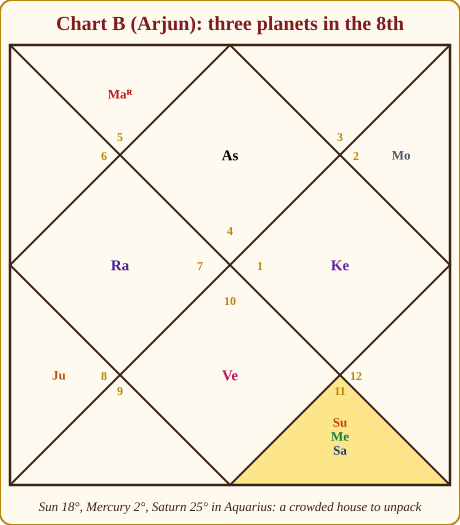
Figure 6.6: Chart B. The 8th house (Aquarius) holds the Sun at 18°, Mercury at 2° and Saturn at 25°.
Step 1 — Name the house. The 8th: longevity, transformation, hidden things, research, insurance, inheritance, in-laws, the occult. Three planets here means this department of life is busy, not doomed: research, insurance, investigation, depth psychology, astrology itself.
Step 2 — Find the host. Aquarius is Saturn's own sign. Saturn is the host; the Sun and Mercury are guests. Saturn also owns the 8th, so this is the 8th lord in the 8th — a strong signal for longevity and for the person's capacity to handle crisis (Chapter 9 will call this swakshetra).
Step 3 — Check dignities and combustion. Saturn in own sign: dignified, but combust (7° from the Sun). Sun in Saturn's sign: in an enemy's house, and it is the 2nd lord for Cancer Lagna sitting in the 8th — family wealth and speech routed through transformation, inheritance, in-laws. Mercury at 2° is 16° from the Sun — not combust — and is in a friend's sign (Mercury and Saturn are friendly). Mercury is the 3rd and 12th lord here.
Step 4 — Pair them up. Sun + Saturn: friction with father or authority, late recognition, the discipline of a stern environment. Sun + Mercury: Budha-Aditya, articulate intelligence — clean, since Mercury is not combust. Mercury + Saturn: a methodical, research-grade mind, careful speech, accountancy or law or systems.
Step 5 — Blend and weigh. The host Saturn sets a serious, patient, secretive tone. The Sun brings ego and father into the mix and is uncomfortable there: a tense relationship with the father in youth, a career that comes into the open late. Mercury, the one planet standing comfortably, is the escape hatch: intellect, analysis, writing. Read together: a deep, patient researcher of hidden or technical matters, difficult with authority early, recognised late; longevity protected; family wealth linked to inheritance or the spouse's side. Every clause came from a rule you now know.
Step 6 — Ask who aspects the pile. Mars in the 2nd aspects the 5th, 8th and 9th from the Lagna — its 7th aspect from the 2nd lands exactly on the 8th. So Mars, the yogakaraka for Cancer (Chapter 8), stares straight at the whole stellium. That is the energy that pulls this quiet research mind into action. Jupiter in the 5th aspects the 9th, 11th and 1st — it does not reach the 8th.
🪔 Consultation tip: Never say "three planets in the 8th house" to a client without immediately translating it. The number frightens people; the meaning reassures them. "You have a strong pull towards research and hidden systems — insurance, investigation, the occult, deep technical work — and a long life to do it in" is the same fact, spoken as a human being.
The shadow planets and the partial aspects
Two honest footnotes. First, Rahu and Ketu's aspects are not given in BPHS. Many practitioners give them the 7th only; some give them Jupiter's 5–7–9 pattern, some Saturn's 3–7–10. Whichever you use, say so, and never build a delicate prediction on a nodal aspect alone. Second, the classics define partial aspects — three-quarters on the 5th and 9th, half on the 4th and 8th, a quarter on the 3rd and 10th — used in the strength calculations (Shadbala) software does for you. The beginner, and frankly the working astrologer, uses full aspects only and is right nineteen times in twenty.
Worked example: every aspect in Chart A
Now let us do the whole thing on Meera's chart. Take the method slowly: for each planet, first the 7th from where it sits, then the special aspects if it is Mars, Jupiter or Saturn.
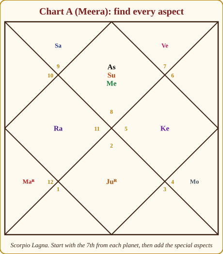
Figure 6.7: Chart A. Sun and Mercury in the 1st, Saturn in the 2nd, Rahu in the 4th, Mars in the 5th, Jupiter in the 7th, Moon in the 9th, Ketu in the 10th, Venus in the 12th.
Planet (house)
Aspects house(s)
What stands there
Reading in one line
🟢
Sun (1st)
7th
Jupiter
Authority meets wisdom: the partner is respected, learned; Sun and Jupiter in mutual aspect
🟢
Mercury (1st)
7th
Jupiter
Intellect meets wisdom: a partner who is a teacher or advisor; mutual aspect
🟡
Saturn (2nd)
4th, 8th, 11th
Rahu in 4th; 8th and 11th empty
Serious about home and property (4th); patience in hidden matters (8th); gains slow but steady (11th)
🟡
Rahu (4th)
10th
Ketu
The nodes always face each other; an unconventional pull between home and career
🟡
Mars (5th)
8th, 11th, 12th
Venus in 12th; 8th and 11th empty
Energy into research (8th), competitive gains (11th); Mars heats Venus: passion, spending on comforts, travel
🟢
Jupiter (7th)
11th, 1st, 3rd
Sun and Mercury in 1st; 11th and 3rd empty
The great protector blesses the Lagna and its two planets; gains (11th) and courage (3rd) are guarded
🟡
Moon (9th)
3rd
Empty
The emotional mind reaches towards siblings, writing, short journeys
🟡
Ketu (10th)
4th
Rahu
Detachment in career facing obsession about home; the nodal axis
🟢
Venus (12th)
6th
Empty
Grace on the house of service and disputes: enemies soften, work is pleasant
Now the relationships. Sun and Jupiter aspect each other — a mutual aspect between the 10th lord (Sun, Leo) and the 2nd-and-5th lord (Jupiter). Mercury and Jupiter also aspect each other. In Chapter 10 you will recognise the first pair as a kendra lord joined with a trikona lord — a Raja yoga formed purely through sight. Mars aspects Venus but Venus does not aspect Mars — a one-way conversation: Mars pushes Venus, Venus does not push back. Saturn aspects Rahu one way. Nothing else connects.
Notice what the table does not show: no malefic aspects the Lagna. Saturn's 8th and 11th aspects fall on empty rooms. Jupiter's protective gaze falls on the Lagna with the Sun and Mercury in it. This is why, when Meera's difficult Sade Sati came around 2000–2007, it tested her without breaking her — her front door was guarded.
🧭 Guruji's rule of thumb: After you have listed the aspects, look for the unaspected planet and the most-aspected house. The lonely planet acts on its own nature without interference. The crowded house is where life will keep happening.
In one breath
An aspect is a planet's gaze: it pours its nature into a distant house or planet without moving there.
Every planet fully aspects the 7th from itself; Mars adds the 4th and 8th, Jupiter the 5th and 9th, Saturn the 3rd and 10th. Count from the planet, never from the Lagna.
Aspects on empty houses colour that house's affairs; aspects on planets change the planet's behaviour and everything it rules.
Two planets are connected (Sambandha) by conjunction, mutual aspect, exchange of signs, or sitting in each other's signs. No connection, no yoga.
Conjunctions are read by blending the two natures (🟢 helpful, 🔴 difficult, 🟡 mixed); dignity, closeness in degrees, and natural weight decide who dominates the room.
Combustion weakens a planet too close to the Sun; planetary war (within 1°) weakens the loser; both are noted, not over-read.
A crowded house means a busy department of life. Name the house, find the host, pair the planets, blend, then check who aspects the pile.
Rahu/Ketu aspects and partial aspects are advanced and contested; the beginner uses full Parashari aspects only.
Practice
✍️ Practice:
1. Jupiter sits in the 3rd house. Which three houses does it aspect?
2. In Chart B (Figure 6.6), does Venus in the 7th aspect the Moon in the 11th? Does the Moon aspect Venus? Is there a Sambandha between them?
3. Chart C (Devika, Aries Lagna) has Mars in the 3rd and the Moon in the 9th. Are they in mutual aspect? What is the name of the yoga this forms?
4. Chart B's Mercury is at 2° Aquarius and the Sun at 18° Aquarius. Is Mercury combust? What if Mercury were at 10°?
5. Blend, in two sentences, a Moon–Saturn conjunction in the 4th house. Then say how you would phrase it to the client.
Answers
1. Counting the 3rd as 1: the 5th from it is the 7th house, the 7th from it is the 9th house, the 9th from it is the 11th house. Jupiter in the 3rd aspects the 7th, 9th and 11th.
2. Venus in the 7th aspects the 1st, not the 11th; the Moon in the 11th aspects the 5th. Neither looks at the other, they are not together, and only the Moon sits in Venus's sign (Taurus) — Venus is in Saturn's Capricorn, not the Moon's. Only the weakest, fourth kind of link exists; most teachers would say there is no real Sambandha.
3. Yes. The 3rd and the 9th are 7 houses apart, so Mars aspects the Moon and the Moon aspects Mars. This mutual aspect forms the Chandra-Mangala yoga (Appendix A.11 allows "together or in mutual 7th"): earning drive and competitive energy.
4. 18° − 2° = 16°, which is more than Mercury's 14° orb, so Mercury is not combust. At 10° the gap would be 8°, inside the orb: Mercury would be combust and the Budha-Aditya yoga would be weakened.
5. Blend: the mind (Moon) sits with duty and delay (Saturn) in the house of home and mother; the person matures early, carries family responsibility young, and finds emotional comfort slowly and through discipline; the mother may have struggled or been distant. To the client: "You grew up responsible before your time, and home has been a place of duty more than ease. That same steadiness is your strength — comfort in your life is built, not given, and it lasts once built."
Chapter 7: The 27 Nakshatras — The Street Addresses of the Sky
When a client sits down and I want to know who they are — not what will happen, but what kind of person is asking — I do not look at the Sun sign. I do not even look first at the Lagna. I look at the Moon's nakshatra. Thirty years in, it is still the fastest, most reliable key to a personality that I know.
Here is why. A sign (Rashi) is 30° wide. The Moon spends two and a quarter days in it. Everyone born in that window shares a Moon sign, and they are recognisably alike — but only in the way people from the same city are alike. A nakshatra is 13°20′ wide; the Moon spends about a day in it. That is the street. Two people from Cancer may be as different as two neighbourhoods of Mumbai; two people from Ashlesha are neighbours.
So: sign = city, nakshatra = street, pada = house number. This chapter gives you the whole street map.
The arithmetic in one paragraph
The zodiac is 360°. Divide by 27 and you get 13°20′ — that is one nakshatra (the Sanskrit is often translated "lunar mansion", because the Moon lodges in one each night). Each nakshatra is further cut into four quarters (padas) of 3°20′ each. Twenty-seven times four is 108 padas around the sky — the same 108 as the beads on a japa mala, and not by accident. Each sign of 30° holds exactly nine padas, that is two and a quarter nakshatras. This means some nakshatras straddle two signs: Krittika begins in Aries and ends in Taurus; Punarvasu begins in Gemini and ends in Cancer. Keep Appendix A.7 open the first few times; the spans are all there.
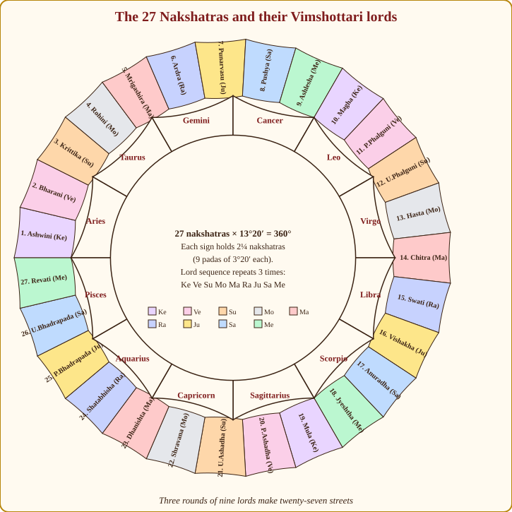
Figure 7.1: The 27 nakshatras around the 12 signs. Colours show the Vimshottari lord. Notice the same nine colours repeating three times around the wheel.
Why "lunar mansions"? The Moon moves about 13° a day against the stars, so it crosses almost exactly one nakshatra per day and returns to the same one after 27.3 days. The nakshatras are, quite literally, the twenty-seven nightly camps of the Moon — the oldest layer of Indian astronomy, older than the twelve signs, which arrived later.
The three rounds of nine: finding any lord by counting
Each nakshatra has a lord — one of the nine planets — and this lord is what runs the whole Vimshottari dasha system in Chapter 13. The sequence is fixed and it repeats three times around the wheel:
Ashwini (1) is Ketu's, Bharani (2) Venus's, Krittika (3) Sun's, and so on to Ashlesha (9), Mercury's. Then Magha (10) starts again with Ketu, and Mula (19) starts the third round with Ketu. So the three "Ketu starters" are Ashwini, Magha and Mula — the first nakshatras of Aries, Leo and Sagittarius, the three fire signs. That is your anchor.
To find any lord: take the nakshatra number, subtract 9 or 18 until you are between 1 and 9, then read off the sequence. Shravana is number 22; 22 − 18 = 4; the fourth lord is the Moon. Vishakha is 16; 16 − 9 = 7; the seventh lord is Jupiter. After a week you will not need the arithmetic — the nine-name chant will simply run in your head.
📖 Story: Nine relay runners, three laps. Picture the zodiac as a running track of twenty-seven lanes-lengths, and nine runners from the court passing a baton. The Headless Sadhu, Ketu, always starts — he has nothing to carry, so he runs light. He hands to the Minister of Pleasure, Venus, who runs the longest leg (twenty years of dasha; she likes to linger). She hands to the King, who runs a short, proud six. The King hands to the Queen Mother, she to the Commander, he to the Smoke-headed Stranger — who runs a long, strange eighteen — then the Royal Priest, the old Judge (nineteen; he is slow), and last the young Prince, who sprints seventeen and hands back to the Sadhu. Nine runners, one lap. Then the same nine run the lap again, and again: three laps make twenty-seven. The Sadhu's three starting lines are Ashwini, Magha and Mula — the first streets of the three fire districts. Rule: Nakshatra lords run Ketu, Venus, Sun, Moon, Mars, Rahu, Jupiter, Saturn, Mercury, three times round; the lord of nakshatra n is the ((n − 1) mod 9) + 1-th runner.
🧭 Guruji's rule of thumb: Learn the nine lords as a chant, in order, before you learn anything else about nakshatras. Ke-Ve-Su-Mo-Ma-Ra-Ju-Sa-Me. It unlocks dasha, Tara Bala and marriage matching, all at once.
Padas and the Navamsa: why the quarters matter
Each pada is 3°20′ — and 3°20′ is also exactly one-ninth of a sign, which is the unit of the Navamsa (D9) chart, the most important divisional chart of all (Chapter 11). This is no coincidence: each pada is one Navamsa sign. The first pada of Ashwini is the Aries Navamsa, the second is Taurus, the third Gemini, the fourth Cancer; Bharani's four padas are Leo, Virgo, Libra, Scorpio; Krittika's first pada — still in Aries — is Sagittarius. Then Krittika's second pada, which is the first pada of Taurus, is Capricorn, which is exactly what the Navamsa rule in Appendix A.10 says (a fixed sign starts counting from the 9th sign from itself). Go all the way round and the 108 padas cover the 12 Navamsa signs nine times.
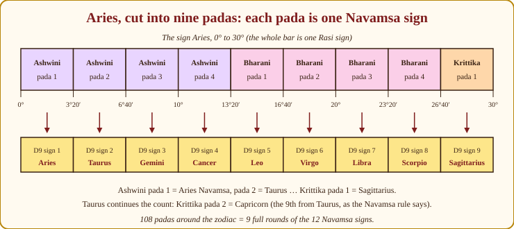
Figure 7.2: Aries cut into nine padas. Ashwini's four quarters and Bharani's four quarters, then Krittika's first — each is one Navamsa sign, Aries through Sagittarius.
Pada
Degrees of Aries
Nakshatra
Navamsa sign
1
0°00′–3°20′
Ashwini 1
Aries
2
3°20′–6°40′
Ashwini 2
Taurus
3
6°40′–10°00′
Ashwini 3
Gemini
4
10°00′–13°20′
Ashwini 4
Cancer
5
13°20′–16°40′
Bharani 1
Leo
6
16°40′–20°00′
Bharani 2
Virgo
7
20°00′–23°20′
Bharani 3
Libra
8
23°20′–26°40′
Bharani 4
Scorpio
9
26°40′–30°00′
Krittika 1
Sagittarius
So the pada tells you which flavour of the nakshatra a planet expresses. A Moon in Ashwini pada 1 (Aries Navamsa) is the pioneer; in pada 4 (Cancer Navamsa) the healer who nurses. When you know the pada, you already know half the Navamsa chart.
📖 Story: Four rooms on one street. Every street in the kingdom — every nakshatra — has exactly four houses on it, and the houses are numbered round the whole kingdom without a break. Walk down Ashwini Street: house 1 is painted in Aries red, house 2 in Taurus earth, house 3 in Gemini's airy blue, house 4 in Cancer's water-purple. Turn into Bharani Street and the numbering simply continues — Leo, Virgo, Libra, Scorpio — and Krittika Street begins with Sagittarius. After twelve houses the painters run out of colours and start again from Aries red. Walk all 108 houses and you will have passed each of the twelve colours nine times. The colour of the house is the Navamsa sign. Rule: Each pada is one Navamsa sign; count padas from Ashwini pada 1 = Aries and cycle through the twelve signs.
The twenty-seven streets
Below is one compact profile for each nakshatra. Read them slowly, and then read the profile of your own Moon and see whether your family would recognise you. Spans, lords, deities, symbols and ganas are exactly as in Appendix A.7. The Gana (temperament) is Deva (godly, refined), Manushya (human, practical) or Rakshasa (fierce, intense). The colours below are the marriage-matching convention (Deva with Deva is easiest, Rakshasa with Deva the hardest to blend) — a code for compatibility, not a verdict on anyone's character.
1. Ashwini — 0°00′–13°20′ Aries · Lord Ketu (7 yrs) · Deity the Ashwini Kumaras, the divine physicians · Symbol a horse's head · Gana Deva.
Theme: speed, healing, first arrivals. Moon here: quick, impatient, kind in a brisk way, always first to help and first to leave. Often seen: doctors, paramedics, athletes, couriers, anyone whose value is in being fast.
2. Bharani — 13°20′–26°40′ Aries · Lord Venus (20) · Deity Yama · Symbol the yoni (womb) · Gana Manushya.
Theme: bearing burdens; birth and death; carrying what others cannot. Moon here: strong-willed, sensual, fiercely responsible, sometimes judgmental. Often seen: midwives, gynaecologists, undertakers, publishers, those who bring things into the world or see them out.
3. Krittika — 26°40′ Aries–10°00′ Taurus · Lord Sun (6) · Deity Agni · Symbol a razor, a flame · Gana Rakshasa.
Theme: sharpness, purification by fire. Moon here: a cutting intellect, protective of dependants, a warm heart under a sharp tongue. Often seen: chefs, critics, surgeons, quality inspectors, disciplinarian teachers. Chart B's Moon is here.
4. Rohini — 10°00′–23°20′ Taurus · Lord Moon (10) · Deity Brahma / Prajapati · Symbol an ox-cart, a chariot · Gana Manushya.
Theme: growth, beauty, fertility — the Moon's own favourite. Moon here: magnetic, artistic, fond of good things, loyal, occasionally possessive. Often seen: musicians, farmers, fashion and food, anyone who makes things grow or glow.
5. Mrigashira — 23°20′ Taurus–6°40′ Gemini · Lord Mars (7) · Deity Soma · Symbol a deer's head · Gana Deva.
Theme: searching, curiosity, the eternal seeker. Moon here: restless, inquisitive, gentle, easily bored; the eyes are always scanning. Often seen: researchers, travellers, salespeople, poets; the friend who knows a new place every month.
6. Ardra — 6°40′–20°00′ Gemini · Lord Rahu (18) · Deity Rudra · Symbol a teardrop, a gem · Gana Manushya.
Theme: storms that clear the air; effort; breakthrough after breakdown. Moon here: intense feeling under a clever surface; grows through loss; brilliant analyst. Often seen: engineers, investigators, therapists, storm-chasers of every kind.
7. Punarvasu — 20°00′ Gemini–3°20′ Cancer · Lord Jupiter (16) · Deity Aditi · Symbol a bow and quiver · Gana Deva.
Theme: return of the light; renewal; the arrow that comes home. Moon here: optimistic, philosophical, forgiving, content with little, bounces back. Often seen: teachers, priests, counsellors, the family member everyone returns to.
8. Pushya — 3°20′–16°40′ Cancer · Lord Saturn (19) · Deity Brihaspati · Symbol a cow's udder, a lotus · Gana Deva.
Theme: nourishment; the most auspicious of all. Moon here: caring, conservative, dutiful, a provider; protects family and tradition. Often seen: nurses, caterers, bankers, administrators, the mother of the whole street.
9. Ashlesha — 16°40′–30°00′ Cancer · Lord Mercury (17) · Deity the Nagas (serpents) · Symbol a coiled serpent · Gana Rakshasa.
Theme: clinging, hypnotic, shrewd — the coil that holds. Moon here: perceptive, persuasive, emotionally deep, slow to trust and slower to release. Often seen: psychologists, negotiators, politicians, hypnotists, astrologers. Chart A's Moon is here.
10. Magha — 0°00′–13°20′ Leo · Lord Ketu (7) · Deity the Pitris (ancestors) · Symbol a throne, a palanquin · Gana Rakshasa.
Theme: lineage, authority inherited from the past. Moon here: proud, generous, traditional, loyal to family name; dislikes being ordered about. Often seen: heads of families, historians, civil servants, those who carry a title.
11. Purva Phalguni — 13°20′–26°40′ Leo · Lord Venus (20) · Deity Bhaga · Symbol the front legs of a bed · Gana Manushya.
Theme: pleasure, creativity, rest — the joy of being alive. Moon here: charming, romantic, fond of comfort and company, creative when relaxed. Often seen: performers, event planners, hoteliers, artists, the life of every wedding.
12. Uttara Phalguni — 26°40′ Leo–10°00′ Virgo · Lord Sun (6) · Deity Aryaman · Symbol the back legs of a bed · Gana Manushya.
Theme: contracts, friendship, patronage; pleasure made responsible. Moon here: helpful, principled, a reliable friend, sometimes stubborn about "the right way". Often seen: lawyers, HR heads, social workers, philanthropists.
13. Hasta — 10°00′–23°20′ Virgo · Lord Moon (10) · Deity Savitar · Symbol a hand · Gana Deva.
Theme: skill, craft, humour — what the hand can do. Moon here: witty, dexterous, practical, a fixer; hides worry under jokes. Often seen: craftsmen, surgeons, artisans, comedians, palmists, anyone whose hands are their living.
14. Chitra — 23°20′ Virgo–6°40′ Libra · Lord Mars (7) · Deity Tvashtar / Vishwakarma, the divine architect · Symbol a pearl, a bright jewel · Gana Rakshasa.
Theme: design, architecture, glamour. Moon here: stylish, visual, ambitious, a builder of beautiful things; can be vain. Often seen: architects, designers, jewellers, film-makers, surgeons of the cosmetic kind.
15. Swati — 6°40′–20°00′ Libra · Lord Rahu (18) · Deity Vayu · Symbol a young sprout swaying in the wind · Gana Deva.
Theme: independence, trade, bending without breaking. Moon here: diplomatic, adaptable, freedom-loving, a natural trader; avoids commitment until sure. Often seen: merchants, diplomats, brokers, musicians, travellers.
16. Vishakha — 20°00′ Libra–3°20′ Scorpio · Lord Jupiter (16) · Deity Indra–Agni · Symbol a triumphal arch, a potter's wheel · Gana Rakshasa.
Theme: goal focus, ambition; the arch you march through. Moon here: determined, competitive, patient towards one big aim; jealous of rivals. Often seen: politicians, entrepreneurs, sportspeople, anyone who plays the long game to win.
17. Anuradha — 3°20′–16°40′ Scorpio · Lord Saturn (19) · Deity Mitra · Symbol a lotus, an archway · Gana Deva.
Theme: devotion, friendship in hardship, the lotus in mud. Moon here: loyal, organised, warm to friends, hurt by betrayal, thrives abroad. Often seen: team leaders, organisers, devotees, expatriates, group therapists.
18. Jyeshtha — 16°40′–30°00′ Scorpio · Lord Mercury (17) · Deity Indra · Symbol an earring, an umbrella, a talisman · Gana Rakshasa.
Theme: seniority, protection, the eldest's burden. Moon here: responsible, proud, protective, secretive; carries others and resents it quietly. Often seen: eldest siblings who run the family, police and army officers, senior managers, occultists.
19. Mula — 0°00′–13°20′ Sagittarius · Lord Ketu (7) · Deity Nirriti · Symbol a bundle of roots, a lion's tail · Gana Rakshasa.
Theme: uprooting, going to the root, research. Moon here: fearless, blunt, philosophical, destroys to rebuild; restless in the first half of life. Often seen: researchers, surgeons, investigators, reformers, root-cause analysts.
20. Purva Ashadha — 13°20′–26°40′ Sagittarius · Lord Venus (20) · Deity Apas (the waters) · Symbol a fan, a winnowing basket, a tusk · Gana Manushya.
Theme: invincibility, purification, the early victory. Moon here: confident, persuasive, proud of convictions, inspiring, a little unwilling to hear "no". Often seen: orators, lawyers, motivational teachers, water and shipping trades. Chart C's Moon is here.
21. Uttara Ashadha — 26°40′ Sagittarius–10°00′ Capricorn · Lord Sun (6) · Deity the Vishwadevas · Symbol an elephant tusk, the planks of a bed · Gana Manushya.
Theme: final victory, leadership that lasts. Moon here: principled, patient, respected, slow to start and impossible to stop. Often seen: administrators, judges, statesmen, chief engineers, elders people go to for the last word.
22. Shravana — 10°00′–23°20′ Capricorn · Lord Moon (10) · Deity Vishnu · Symbol an ear, three footprints · Gana Deva.
Theme: listening, learning, fame through knowledge. Moon here: a great listener, well-read, a connector of people, quietly ambitious. Often seen: teachers, translators, counsellors, broadcasters, librarians of every kind.
23. Dhanishta — 23°20′ Capricorn–6°40′ Aquarius · Lord Mars (7) · Deity the eight Vasus · Symbol a drum, a flute · Gana Rakshasa.
Theme: wealth, rhythm, music. Moon here: ambitious, rhythmic, generous with money, fond of group activity; may feel lonely in marriage. Often seen: musicians, property developers, financiers, team sportspeople.
24. Shatabhisha — 6°40′–20°00′ Aquarius · Lord Rahu (18) · Deity Varuna · Symbol an empty circle, a hundred flowers or healers · Gana Rakshasa.
Theme: healing, secrecy, science. Moon here: private, analytical, unconventional, a reluctant healer of others; needs solitude. Often seen: physicians, researchers, astrologers, engineers, the quiet genius in the corner.
25. Purva Bhadrapada — 20°00′ Aquarius–3°20′ Pisces · Lord Jupiter (16) · Deity Aja Ekapada · Symbol a sword, the front legs of a funeral cot · Gana Manushya.
Theme: intensity, penance, transformation through fire. Moon here: passionate, idealistic, philosophical, given to extremes; a reformer's heart. Often seen: priests, activists, occultists, thriller writers, those who burn for a cause.
26. Uttara Bhadrapada — 3°20′–16°40′ Pisces · Lord Saturn (19) · Deity Ahir Budhnya · Symbol the back legs of a funeral cot, the serpent of the deep · Gana Manushya.
Theme: depth, wisdom, patience; still water. Moon here: calm, kind, wise beyond years, slow to anger, a natural counsellor. Often seen: teachers, monks, charity workers, deep-sea and deep-mind professions.
27. Revati — 16°40′–30°00′ Pisces · Lord Mercury (17) · Deity Pushan · Symbol a fish, a drum · Gana Deva.
Theme: nourishing journeys, completion, safe passage. Moon here: sweet-natured, protective, artistic, a guide for the lost; over-gives. Often seen: travel and hospitality, childcare, veterinarians, astrologers, those who see people safely home.
The Moon's nakshatra: your personality key
The Moon's nakshatra at birth is the birth star (Janma nakshatra), and it is the one you must know for every client before anything else, because three things hang on it: the starting dasha (Chapter 13), the Tara Bala (below), and — most useful across the table — the feel of the person.
Here is how I use it in conversation. I never say "your Moon is in Ashlesha". I say, "You are someone who reads people very quickly and holds on to what you love — sometimes a little too tightly. Am I right?" The client nods, relaxes, and now trusts the rest of the reading. The nakshatra profile gives you that opening sentence. Then the pada tells you the flavour: Ashlesha pada 2 is the Capricorn Navamsa, so Meera's perceptiveness is disciplined and career-directed, not merely emotional.
Two more nakshatras deserve a glance in every chart. The Lagna's nakshatra describes the body and the outward manner — the coat the person wears into the room. And the nakshatra of the current dasha lord tells you the mood of the current period: a Venus dasha with Venus in Rohini feels very different from one with Venus in Ardra.
🪔 Consultation tip: Use the nakshatra profile as a question, never a verdict. "You seem to be the one in the family who carries everyone — does that feel true?" invites the client in. "Your Moon is in Jyeshtha so you are burdened" pushes them away and, worse, may be wrong for this particular chart.
Worked example: our three Moons
Chart A — Meera. Moon at 21° Cancer. Ashlesha runs from 16°40′ to 30°00′ Cancer; its padas are 16°40′–20°00′ (pada 1), 20°00′–23°20′ (pada 2), 23°20′–26°40′ (pada 3), 26°40′–30°00′ (pada 4). The Moon at 21° is in pada 2. Lord: Mercury (Ashlesha is the 9th nakshatra, the last of the first round). So her first dasha was Mercury's, and the balance at birth was the unfinished part of the star: 30° − 21° = 9° of 13°20′, that is 9 ÷ 13.33 × 17 years ≈ 11.5 years. Pada 2 is the Capricorn Navamsa. A shrewd, persuasive, deep-feeling mind, disciplined in expression — a natural teacher-counsellor. Her Moon is not in the Gandanta strip, which begins at 26°40′.
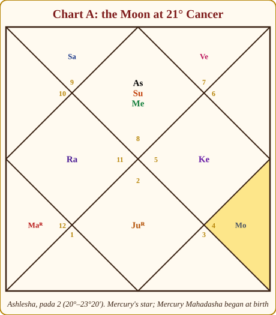
Figure 7.3: Chart A. The Moon at 21° Cancer sits in Ashlesha pada 2, Mercury's star, safely short of the Gandanta zone.
Chart B — Arjun. Moon at 6° Taurus. Krittika runs from 26°40′ Aries to 10°00′ Taurus; its padas are 26°40′–30°00′ Aries (pada 1), 0°00′–3°20′ Taurus (pada 2), 3°20′–6°40′ Taurus (pada 3), 6°40′–10°00′ Taurus (pada 4). At 6° the Moon is in pada 3 — the Aquarius Navamsa. Lord: the Sun, so the Sun's dasha ran first, with a balance of (10° − 6°) ÷ 13.33 × 6 ≈ 1.8 years. A sharp, protective mind with a scientific, unconventional flavour — which fits the research-minded 8th house we unpacked in Chapter 6.
Chart C — Devika. Moon at 14° Sagittarius. Purva Ashadha runs from 13°20′ to 26°40′; the Moon at 14° is in pada 1 (13°20′–16°40′) — the Leo Navamsa. Lord: Venus (the 20th nakshatra; 20 − 18 = 2, the second lord). Venus dasha at birth, with a long balance of about 19 years. Confident, persuasive, proud of her convictions, with a royal Leo flavour: the orator's Moon.
The three knots: Gandanta
Three times around the zodiac a water sign ends and a fire sign begins: Cancer into Leo, Scorpio into Sagittarius, Pisces into Aries. At each join, the last 3°20′ of the water nakshatra (Ashlesha, Jyeshtha, Revati — all Mercury's) and the first 3°20′ of the fire nakshatra (Magha, Mula, Ashwini — all Ketu's) form a sensitive zone called Gandanta (the "knot's end"). The classics ask us to check the Moon and the Lagna here; a Moon in the knot is said to give an emotionally turbulent start to life and a certain rawness of feeling, and the tradition prescribes a simple pacifying ritual. Some texts also flag the tithi and nakshatra junctions, but the degree-based zone above is the one everyone uses.
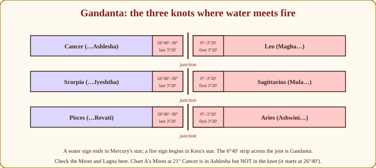
Figure 7.4: The three knots. Each is a 6°40′ strip straddling the end of a water sign and the start of a fire sign.
📖 Story: The ford between two rivers. Three times in the kingdom a water district ends and a fire district begins, and there is no bridge — only a ford. On the water bank the last street belongs to the young Prince, Mercury (Ashlesha, Jyeshtha, Revati); on the fire bank the first street belongs to the Headless Sadhu, Ketu (Magha, Mula, Ashwini). A traveller born while crossing the ford — the Queen Mother's carriage in the last 3°20′ of the water street or the first 3°20′ of the fire street — gets her feet wet: a turbulent start, feelings that run raw. But every pilgrim who reaches the far bank has crossed something the people on either shore never had to. Rule: Gandanta is the last 3°20′ of Ashlesha, Jyeshtha, Revati and the first 3°20′ of Magha, Mula, Ashwini; check the Moon and Lagna there and speak of intensity, not doom.
What to say to a client born with the Moon in a knot: "Your emotional life began with intensity, and you may feel things more rawly than others — that same intensity is also your depth." What not to say: anything about danger to parents, early death, or "dosha" as a curse. In my experience Gandanta Moons belong to people of unusual depth who had a bumpy first few years; the knot marks a transition, not a sentence. A brief note: Chart C's Mercury at 1° Leo sits in the Magha knot; for a planet other than the Moon or Lagna most teachers simply note this and move on.
⚠️ Common beginner mistake: Calling every planet in Ashlesha, Jyeshtha, Revati, Magha, Mula or Ashwini "Gandanta". The knot is only the 3°20′ on either side of the join. Meera's Moon at 21° Cancer is in Ashlesha and nowhere near it.
An advanced pointer: Pushkara
While you are learning padas, know that certain padas and certain degrees are called Pushkara — "nourishing" — and are held to bless whatever planet sits in them: the Pushkara navamsa padas (two in each sign) and the Pushkara bhaga degrees (one in each sign). This is a refinement you will enjoy in a year or two; I mention it now only so that when you meet the word you will know it is a good one.
Tara Bala: is today my day?
The Tara Bala ("strength of the star") is the oldest everyday use of the nakshatras, and it is beautifully simple. Count from your birth star to the star the Moon is in today, both included. Divide by nine and keep the remainder. The remainder names the day's quality:
Count
Tara
Meaning
Use
1
Janma
birth
🟡 mixed; care for health, avoid big risks
2
Sampat
wealth
🟢 good
3
Vipat
danger
🔴 avoid starting things
4
Kshema
well-being
🟢 good
5
Pratyari
obstacle
🔴 avoid
6
Sadhaka
achievement
🟢 good
7
Vadha
harm
🔴 avoid
8
Mitra
friend
🟢 good
9 (or 0)
Ati-Mitra
great friend
🟢 good
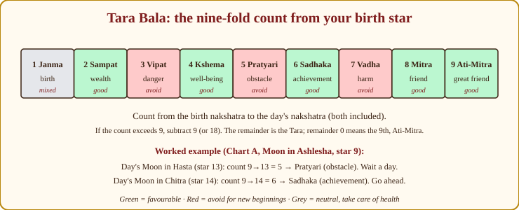
Figure 7.5: The nine-fold count. Green days favour new beginnings; red days are for routine work; the birth star itself is a day to rest.
📖 Story: The nine gates. From your birth street to any other street in the kingdom you must pass through gates, and the gates repeat in a cycle of nine. The first gate is your own front door (Janma — stay home, rest). The second opens onto the treasury (Sampat). The third is guarded by a suspicious sentry (Vipat — turn back). The fourth is the garden gate (Kshema). The fifth is where the rival's men wait (Pratyari — turn back). The sixth is the gate of the workshop where things get finished (Sadhaka). The seventh is the executioner's gate (Vadha — turn back). The eighth is your friend's door (Mitra) and the ninth your best friend's (Ati-Mitra). Then the cycle begins again at your own door. Rule: Count from birth star to today's star, both included, subtract nines; 2, 4, 6, 8, 9 are open gates, 3, 5, 7 are closed, 1 is home.
Worked example. Meera's birth star is Ashlesha, number 9. Suppose she wants to sign a lease on a day when the Moon is in Hasta, number 13. Count 9, 10, 11, 12, 13 — that is 5. Remainder 5 is Pratyari, obstacle: sign tomorrow instead. Tomorrow the Moon is in Chitra, 14. The count is 6, Sadhaka, achievement: a fine day. When the count runs over 9 — say her birth star is 9 and the Moon is in Revati, 27 — count 19, subtract 18, get 1: Janma, a day to rest. The same nine-fold count between two people's birth stars is the Tara koota in marriage matching (Appendix A.12).
Naming a child by the star
You have seen this in every Indian family: the priest opens the almanac and says "the name should begin with Du". He is reading the birth-star syllables — each of the 108 padas has a traditional opening sound, so that the child's name vibrates with the Moon's position. The full table is in every panchanga; here is a working version for the 27 stars, pada by pada.
Nakshatra
Pada 1
Pada 2
Pada 3
Pada 4
Ashwini
Chu
Che
Cho
La
Bharani
Li
Lu
Le
Lo
Krittika
A
I
U
E
Rohini
O
Va
Vi
Vu
Mrigashira
Ve
Vo
Ka
Ki
Ardra
Ku
Gha
Ng
Chha
Punarvasu
Ke
Ko
Ha
Hi
Pushya
Hu
He
Ho
Da
Ashlesha
Di
Du
De
Do
Magha
Ma
Mi
Mu
Me
Purva Phalguni
Mo
Ta
Ti
Tu
Uttara Phalguni
Te
To
Pa
Pi
Hasta
Pu
Sha
Na
Tha
Chitra
Pe
Po
Ra
Ri
Swati
Ru
Re
Ro
Ta
Vishakha
Ti
Tu
Te
To
Anuradha
Na
Ni
Nu
Ne
Jyeshtha
No
Ya
Yi
Yu
Mula
Ye
Yo
Bha
Bhi
Purva Ashadha
Bhu
Dha
Pha
Dha
Uttara Ashadha
Bhe
Bho
Ja
Ji
Shravana
Ju (Khi)
Je (Khu)
Jo (Khe)
Gha (Kho)
Dhanishta
Ga
Gi
Gu
Ge
Shatabhisha
Go
Sa
Si
Su
Purva Bhadrapada
Se
So
Da
Di
Uttara Bhadrapada
Du
Tha
Jha
Na (Da)
Revati
De
Do
Cha
Chi
Meera, Ashlesha pada 2, would have been given a name beginning with Du — many families keep this as a private "star name" (rashi naam) and use another in public. Arjun, Krittika pada 3, gets U; Devika, Purva Ashadha pada 1, gets Bhu. Regional almanacs vary a syllable here and there; follow the one your client's family uses.
Abhijit, the twenty-eighth
The old texts speak of a 28th nakshatra, Abhijit ("victorious"), squeezed between Uttara Ashadha and Shravana — the last quarter of Uttara Ashadha and the opening degrees of Shravana, in early Capricorn (about 4 ghatis, or 0°53′, of Shravana — almanacs differ slightly). It is used in muhurta, choosing auspicious times, where it is prized, and never in dasha, which uses only the 27. It is also the name of the daily Abhijit muhurta, the auspicious 48 minutes around local noon — the one slot in almost every day when something can be begun.
Three stories worth knowing
💡 Did you know? The Moon, in the Puranas, married all twenty-seven daughters of Daksha — the nakshatras — but loved only Rohini and neglected the rest. The furious father-in-law cursed him to waste away; Shiva softened the curse so that he wanes for a fortnight and waxes again. That is why Rohini is the Moon's exaltation neighbourhood (his deepest point is 3° Taurus, Krittika, but his happiness is Rohini), and why the Moon is at his most comfortable and creative there.
💡 Did you know? Pushya is called the most auspicious nakshatra for nearly every undertaking — the ancients said "in Pushya, even a task begun by a fool succeeds." The single exception in every almanac is marriage: no weddings in Pushya, because the deity Brihaspati is said to have been cursed in a domestic matter. Every other beginning — a shop, a study, a journey, a purchase of gold — is welcomed.
💡 Did you know? Folk tradition in north India fears six "gandmool" stars — Ashwini, Ashlesha, Magha, Jyeshtha, Mula and Revati, the six ruled by Ketu and Mercury — and a child born under them is taken for a Mula-shanti ritual on the 27th day. The classical position is narrower and kinder: only the actual junction degrees (the Gandanta zones above) are sensitive, and even there the concern is the Moon and the Lagna, not every planet. Millions of perfectly happy people have Moons in Magha or Mula. If a family is anxious, let them do the ritual — it does no harm and settles the heart — but never let the fear into your reading.
In one breath
A nakshatra is 13°20′ of the zodiac, one day's walk for the Moon; sign = city, nakshatra = street, pada = house number.
Twenty-seven nakshatras, four padas each, 108 padas in all; each pada is one Navamsa sign.
The nine lords repeat three times in the fixed order Ketu, Venus, Sun, Moon, Mars, Rahu, Jupiter, Saturn, Mercury; Ashwini, Magha and Mula begin the three rounds.
The Moon's nakshatra (Janma nakshatra) is the best single personality key and sets the starting dasha; also read the Lagna's and the dasha lord's stars.
Gandanta is the 3°20′ on each side of the three water-fire joins; check the Moon and Lagna there and speak of intensity, never doom.
Tara Bala: count from birth star to today's star, divide by nine; 2, 4, 6, 8, 9 are favourable, 3, 5, 7 are not, 1 is a rest day.
Each pada has a name-syllable; Abhijit is a 28th star used only in muhurta; Pushya is the most auspicious, except for weddings.
Practice
✍️ Practice:
1. Without looking at the table, name the lord of Dhanishta (number 23) by counting.
2. A Moon at 25° Leo: which nakshatra, which pada, and which Navamsa sign?
3. Is a Moon at 28° Scorpio in Gandanta? What about a Moon at 18° Scorpio?
4. Arjun's birth star is Krittika (3). Today the Moon is in Anuradha (17). Is today a good day for him to start a new job?
5. Devika (Chart C) is expecting a child and asks which syllable the baby's name should begin with if the baby's Moon falls in Hasta pada 2. Answer her, and explain in one line how you found it.
Answers
1. 23 − 18 = 5. The fifth lord in the chant Ke-Ve-Su-Mo-Ma is Mars. Dhanishta is ruled by Mars.
2. Leo runs 0°–30°. Magha is 0°–13°20′, Purva Phalguni 13°20′–26°40′, so 25° is in Purva Phalguni. Its padas: 13°20′–16°40′, 16°40′–20°, 20°–23°20′, 23°20′–26°40′; 25° is pada 4. Navamsa: Purva Phalguni is nakshatra 11, pada 4, so the overall pada number is 10 × 4 + 4 = 44; 44 − 36 = 8, the 8th sign, Scorpio. (Check with the A.10 rule: Leo is fixed, so counting starts from the 9th sign from Leo, Aries; 25° is the 8th navamsa, and the 8th from Aries is Scorpio.)
3. 28° Scorpio is in the last 3°20′ of Jyeshtha (26°40′–30°), so yes, Gandanta. 18° Scorpio is in Jyeshtha but well short of the knot: not Gandanta.
4. Count from Krittika (3) to Anuradha (17), both included: 15. Subtract 9: 6. Sadhaka, achievement. A favourable day.
5. Hasta pada 2 gives the syllable *Sha*. Found by locating Hasta in the syllable table and reading the second column.
Chapter 8: Which Planets Are Good FOR YOU — Functional Benefics and Malefics
If I had to name the one chapter that separates people who know about astrology from people who can read a chart, it is this one. I have met students who could recite all twenty-seven nakshatras with their deities and still could not tell me whether Saturn was a friend or an enemy in the chart in front of them. They knew Saturn was "a malefic". They did not know that for the woman across the table, Saturn was the best planet she had.
The idea is simple once said. Every planet has a natural nature — Jupiter is kind, Saturn is harsh — the way every person has a temperament. But in your chart, every planet also has a job: it owns two houses (the Sun and Moon own one each), and it works for those houses. A planet's functional nature is whether the houses it owns are good houses or difficult ones for your Lagna. A naturally harsh planet that owns your best houses is a strict uncle who is on your side. A naturally sweet planet that owns your worst houses is a charming cousin who keeps borrowing money.
Saturn for a Libra: the strict uncle who is on your side
Take a Libra Lagna. Libra is the 1st house; count round: Scorpio 2nd, Sagittarius 3rd, Capricorn 4th, Aquarius 5th, Pisces 6th, Aries 7th, Taurus 8th, Gemini 9th, Cancer 10th, Leo 11th, Virgo 12th. Saturn owns Capricorn and Aquarius — the 4th and the 5th. The 4th is a pillar house (kendra): home, mother, comfort, education. The 5th is a trine (trikona): children, intelligence, merit. Saturn, the planet of discipline and time, has been given charge of this person's home and their intelligence. It will deliver both — slowly, seriously, permanently. For a Libra, Saturn's periods are the years when the house is bought and the qualification earned.
Meanwhile Jupiter, the great natural benefic, owns Sagittarius and Pisces for this Libra: the 3rd and the 6th. Effort, siblings, rivals, disputes, debts, illness. Jupiter is still generous by nature — but its generosity is now spent on those departments. A Libra in a Jupiter period may find themselves generous to a fault with enemies and expansive in expenses. Jupiter has not become evil. It has become an employee of the wrong houses.
📖 Story: The strict uncle who is on your side. In every joint family there is one uncle the children fear — the one who checks homework, switches off the television at nine, and never gives sweets. In the Libra household that uncle, navy Saturn, has been made guardian of two rooms: the study (the 5th, intelligence and children) and the family home itself (the 4th). So the same strictness that frightens the other households builds this one. The Libra child complains about him at fifteen and thanks him at thirty-five, standing in a house she owns, holding a degree she finished. Meanwhile the jolly uncle who brings sweets — golden Jupiter — has been put in charge of the storeroom of debts and the room where the cousins quarrel (the 6th and 3rd). He is still jolly; he is just generous with the wrong things. Rule: Judge a planet by the houses it owns for this Lagna, not by its reputation in the neighbourhood.
🧭 Guruji's rule of thumb: Nature is what a planet is; function is who it works for. In a consultation, function wins. Ask "whose employee is this planet?" before you ask "is it a good planet?"
Parashara's rules
Here are the rules from Brihat Parashara Hora Shastra, exactly as summarised in Appendix A.6, with the reason behind each:
Lords of the trines (1, 5, 9) are benefic. These are Lakshmi's houses — self, merit, fortune. Whoever owns them works for your good.
Lords of 3, 6 and 11 are malefic. These are the houses of effort, enemies and greed — the "growing houses" where you fight for things. Their lords make you struggle, compete, want. (Yes, the 11th, house of gains, has a malefic lord: gains come at the cost of wanting them.)
Lords of the angles (4, 7, 10) are neutral — with a twist. A natural benefic owning an angle loses its goodness (kendradhipatya dosha, "the fault of angle-lordship"); a natural malefic owning an angle loses its badness. The angles are neutral ground: they flatten whoever owns them.
Lords of 2, 8 and 12 take the colour of their other sign. These houses are neither trines nor angles nor the fighting three; their lords are judged by their second job. Mars owning the 2nd and 7th for a Libra is read mainly as a 7th lord.
The 8th lord is bad unless it also owns the Lagna. The 8th is the house of endings and hidden trouble; its lord is a functional malefic — except that Mars for Aries and Venus for Libra own both the 1st and the 8th, and Lagna lordship wins.
The Lagna lord is treated as benefic in practice, even when its other house is difficult. It is the captain; you do not call your captain an enemy.
Two words you need. A functional benefic is a planet whose houses are good for you. A functional malefic is one whose houses are difficult for you. Every Lagna has some of each, and the planets that fall into neither are neutral — read them by their placement and their company.
📖 Story: The courtyard where everyone is equal. The haveli has four rooms that open straight onto the central courtyard — the 1st, 4th, 7th and 10th, the pillars. The courtyard is public ground: whoever is appointed to guard those rooms stands in full daylight, watched by the whole family. The Royal Priest, who in a private room could hand out favours freely, finds that in the courtyard he must be fair to everyone; his generosity is flattened into mere duty. The old Judge, who in a private room could be harsh, finds that in the courtyard he too must be seen to be fair; his harshness is flattened into mere firmness. The courtyard makes everybody ordinary. Only the trines — the 5th and 9th, the lamp-lit rooms at the back — and the Lagna itself let a planet be fully good. Rule: Angle lords are neutral: natural benefics lose goodness there, natural malefics lose badness.
📖 Story: Whose employee is this planet? A new steward arrives at the haveli and asks, sensibly, not "who is a nice man?" but "who works for whom?" He walks the twelve rooms and reads the nameplate on each door — the sign, and so its lord. Whoever's name is on the doors of the lamp-lit rooms (1, 5, 9) works for the family's good fortune and is paid well. Whoever's name is on the doors of the storeroom of debts, the sick-room and the room of losses (6, 8, 12), or on the rooms where the cousins fight and scheme (3, 6, 11), is employed to manage trouble — and trouble is what he will bring into any conversation. The steward writes two columns in his ledger, works for us and tests us, and only then asks about anybody's character. Rule: Read the lord of each house from the Lagna, sort by house quality, and you have the functional table without memorising it.
Deriving the table for Aries, step by step
Let us do it slowly once, so that you never again have to memorise it. Aries Lagna: Aries is the 1st house, Taurus the 2nd, Gemini 3rd, Cancer 4th, Leo 5th, Virgo 6th, Libra 7th, Scorpio 8th, Sagittarius 9th, Capricorn 10th, Aquarius 11th, Pisces 12th.
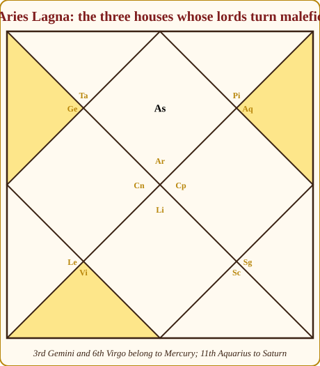
Figure 8.1: Aries Lagna. The shaded houses (3rd Gemini, 6th Virgo, 11th Aquarius) are the ones whose lords turn malefic. Read off the owner of each shaded sign: Mercury, Mercury, Saturn.
Mars owns Aries (1st) and Scorpio (8th). Lagna lord — rule 6 — benefic. The 8th lordship is forgiven by rule 5.
Venus owns Taurus (2nd) and Libra (7th). Rule 4 sends the 2nd to its other sign; the 7th is an angle, and Venus is a natural benefic, so it loses goodness there. Both 2 and 7 are also maraka houses (below). Venus is malefic, specifically the maraka planet.
Mercury owns Gemini (3rd) and Virgo (6th). Two of the fighting three. Malefic.
Moon owns Cancer (4th). An angle lord, and the Moon's natural nature depends on its brightness. Neutral.
Sun owns Leo (5th). A trine lord. Benefic.
Jupiter owns Sagittarius (9th) and Pisces (12th). The 9th is the best trine; the 12th takes its colour from the 9th. Benefic.
Saturn owns Capricorn (10th) and Aquarius (11th). The 10th is an angle (neutralising), but the 11th is one of the fighting three. Malefic — the 11th lordship decides it.
Result: benefics Sun, Mars, Jupiter; malefics Mercury, Venus, Saturn; Moon neutral. Compare with Appendix A.6 — it is the same row. You have just derived it. Do this for your own Lagna now, before reading on, and then check yourself against the table.
⚠️ Common beginner mistake: Treating Rahu and Ketu as owning houses. They own nothing in Parashara's scheme. Read their functional nature from the sign lord of the house they sit in and from the planets they sit with. A Rahu in Saturn's sign for a Libra borrows Saturn's good function; a Rahu in Mercury's sign for an Aries borrows Mercury's bad one.
The Yogakaraka: one planet, an angle and a trine
Now the most valuable word in this chapter. When a single planet owns both an angle (4, 7 or 10) and a trine (5 or 9), it holds in one hand the power of the pillar and the grace of the trine. Parashara calls such a planet a Yogakaraka — "the maker of yoga", the planet that by itself can raise a life. Its periods are the best years of that chart, and strengthening it is the one remedy that never misfires.
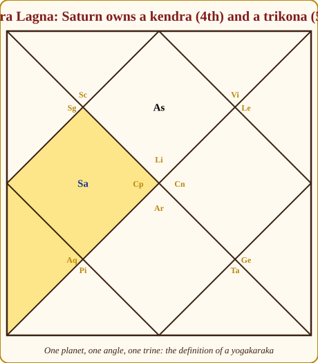
Figure 8.2: Libra Lagna. Saturn owns Capricorn (4th, an angle) and Aquarius (5th, a trine). One planet, one angle, one trine: Saturn is the yogakaraka.
📖 Story: The minister who holds two keys. The King keeps two rings of keys. One ring opens the pillar rooms on the courtyard — the angles, where the kingdom's strength is stored. The other opens the lamp-lit back rooms — the trines, where its grace and merit are kept. Most ministers are trusted with one key from one ring. But now and then a single minister is handed a key from each ring: he can walk from the strong-room to the shrine without asking anyone. In the Libra court that minister is the old Judge, Saturn, with the keys to the 4th and 5th. In the Cancer court it is the Commander, Mars, with the 5th and 10th. In the Capricorn court it is the Minister of Pleasure, Venus, with the 5th and 10th. When his years come round, the whole household rises with him. Rule: A yogakaraka owns one angle and one trine by itself; strengthen it, and its dasha is the best of the life.
Only some Lagnas have one. Run the ownership yourself and you will find:
Taurus and Libra: Saturn (9th and 10th for Taurus; 4th and 5th for Libra).
Cancer and Leo: Mars (5th and 10th for Cancer; 4th and 9th for Leo).
Capricorn and Aquarius: Venus (5th and 10th for Capricorn; 4th and 9th for Aquarius).
Virgo: Venus, owning the 2nd and 9th, is named yogakaraka by BPHS and the tradition even though the strict angle-plus-trine test is not met — treat it as the honourable exception.
The other Lagnas have no single yogakaraka; there the good is done by a pair — an angle lord and a trine lord who must be connected (Chapter 6's Sambandha) to form a Raja yoga. A.6 names the pair for each.
The full table, and what is interesting about each Lagna
Here is the working table every Indian teacher uses, reproduced from Appendix A.6 with colour dots added (🟢 works for you, 🔴 tests you, 🟡 depends on placement). Below it, a short paragraph for each Lagna on what makes that row interesting.
Lagna
Benefics
Malefics
Neutral / mixed
Yogakaraka (single planet giving rajayoga)
Marakas to watch
Aries
🟢 Sun, 🟢 Mars, 🟢 Jupiter
🔴 Mercury, 🔴 Venus, 🔴 Saturn
🟡 Moon
(Sun + Jupiter together act as yogakarakas)
🔴 Venus, 🔴 Mercury
Taurus
🟢 Saturn, 🟢 Sun, 🟢 Mercury
🔴 Moon, 🔴 Jupiter, 🔴 Mars
🟡 Venus (own lagna but 6th lord)
Saturn
🔴 Jupiter, 🔴 Venus, 🔴 Mars
Gemini
🟢 Venus, 🟢 Saturn, 🟢 Mercury
🔴 Mars, 🔴 Jupiter, 🔴 Sun
🟡 Moon
(Venus + Saturn combination)
🔴 Moon, 🔴 Jupiter
Cancer
🟢 Mars, 🟢 Jupiter, 🟢 Moon
🔴 Venus, 🔴 Mercury
🟡 Sun, 🟡 Saturn
Mars
🔴 Saturn, 🔴 Venus
Leo
🟢 Mars, 🟢 Jupiter, 🟢 Sun
🔴 Mercury, 🔴 Venus, 🔴 Saturn
🟡 Moon
Mars
🔴 Saturn, 🔴 Mercury
Virgo
🟢 Venus, 🟢 Mercury
🔴 Mars, 🔴 Jupiter, 🔴 Moon
🟡 Sun, 🟡 Saturn
Venus
🔴 Venus, 🔴 Jupiter
Libra
🟢 Saturn, 🟢 Mercury, 🟢 Venus
🔴 Jupiter, 🔴 Sun, 🔴 Mars
🟡 Moon
Saturn (Moon + Mercury together too)
🔴 Mars, 🔴 Jupiter
Scorpio
🟢 Jupiter, 🟢 Moon, 🟢 Sun, 🟢 Mars
🔴 Mercury, 🔴 Venus, 🔴 Saturn
(none)
(Sun + Moon together)
🔴 Venus, 🔴 Mercury
Sagittarius
🟢 Sun, 🟢 Mars, 🟢 Jupiter
🔴 Venus, 🔴 Saturn
🟡 Mercury, 🟡 Moon
(Sun + Mercury together)
🔴 Saturn, 🔴 Venus
Capricorn
🟢 Venus, 🟢 Mercury, 🟢 Saturn
🔴 Mars, 🔴 Jupiter, 🔴 Moon
🟡 Sun
Venus
🔴 Mars, 🔴 Moon
Aquarius
🟢 Venus, 🟢 Saturn
🔴 Jupiter, 🔴 Moon, 🔴 Mars
🟡 Mercury, 🟡 Sun
Venus
🔴 Jupiter, 🔴 Sun, 🔴 Mars
Pisces
🟢 Mars, 🟢 Moon, 🟢 Jupiter
🔴 Saturn, 🔴 Venus, 🔴 Sun, 🔴 Mercury
(none)
(Mars + Jupiter together)
🔴 Mercury, 🔴 Saturn
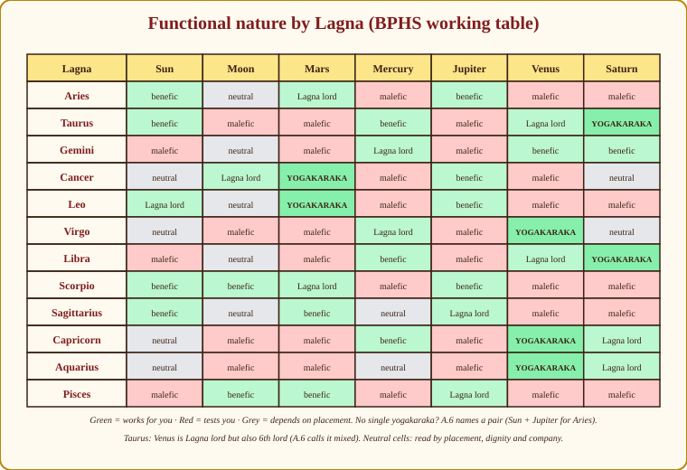
Figure 8.3: The same table as colours. Green works for you, red tests you, grey depends on placement. Photograph this page; you will use it at every consultation for the rest of your life.
Aries. A fiery, straightforward row: the fire-sign lords (Sun of Leo, Jupiter of Sagittarius) plus Mars are the friends; the two natural benefics Mercury and Venus turn malefic because they own the fighting houses and the maraka houses. Sun and Jupiter, 5th and 9th lords, working together are as good as a yogakaraka. Note that Jupiter's 12th lordship does not spoil it — the 9th decides.
Taurus. The famous Saturn Lagna. Saturn owns the 9th and 10th — fortune and career in one hand — and is the finest yogakaraka in the zodiac. Venus, the Lagna lord, also owns the 6th, so A.6 marks it mixed: it protects the self but can bring disputes or health issues in its periods. Jupiter, owning 8 and 11, is a functional malefic here — the classic surprise.
Gemini. Mercury's own row, where Jupiter again disappoints: it owns the 7th and 10th, two angles, and a natural benefic loses its goodness in angles. Venus (5th and 12th) and Saturn (8th and 9th, the 9th deciding) are the friends. The Moon as 2nd lord is a maraka and is watched.
Cancer. Mars owns the 5th and 10th — yogakaraka. The naturally cruel commander becomes the Cancer person's engine of intelligence and career. Jupiter, 6th and 9th lord, is benefic by its 9th lordship but carries a 6th-house tinge (disputes with gurus, debts through generosity). Saturn owns the 7th and 8th: neutral, and the chief maraka. Chart B is a Cancer Lagna; we derive it below.
Leo. The mirror of Cancer: Mars owns the 4th and 9th — yogakaraka. The Sun is the captain; Jupiter (5th and 8th) is benefic through the 5th. Saturn owns the 6th and 7th, a malefic and maraka; Mercury owns 2 and 11, another maraka.
Virgo. Venus owns the 2nd and 9th and is named yogakaraka by the tradition. Jupiter, owning two angles again (4th and 7th), is malefic by function — a hard truth for a Virgo who expects the great benefic to help. Saturn (5th and 6th) is neutral; Mars (3rd and 8th) and the Moon (11th) are malefic.
Libra. Saturn, yogakaraka (4th and 5th), as we saw. Mercury (9th and 12th) is a friend. Mars owns 2 and 7 — the double maraka — and Jupiter owns 3 and 6. The Sun, 11th lord, is malefic. The Moon (10th) and Mercury (9th) together also make a Raja yoga.
Scorpio. A generous row: four benefics. Mars is Lagna lord (with the 6th forgiven); Jupiter owns 2 and 5; the Moon owns the 9th; the Sun owns the 10th. Sun and Moon — the king and queen — are the angle-trine pair whose connection gives Raja yoga. Mercury (8th and 11th), Venus (7th and 12th) and Saturn (3rd and 4th) are the malefics; the two marakas are Venus and Mercury. Chart A is a Scorpio Lagna.
Sagittarius. Jupiter is captain (1st and 4th). The Sun (9th) and Mars (5th and 12th) are the friends. Saturn (2nd and 3rd) and Venus (6th and 11th) are malefic. Mercury, owning the 7th and 10th — two angles — is neutral and forms the Raja-yoga pair with the Sun. The Moon as 8th lord is neutral.
Capricorn. Venus owns the 5th and 10th: yogakaraka. Mercury (6th and 9th) is a friend through the 9th. Saturn is captain (1st and 2nd). Mars (4th and 11th), Jupiter (3rd and 12th) and the Moon (7th, a maraka house) are malefic. The Sun (8th) is neutral.
Aquarius. Venus again, owning the 4th and 9th: yogakaraka. Saturn is captain (1st and 12th). Jupiter owns 2 and 11 — malefic and a maraka; Mars owns 3 and 10; the Moon owns the 6th. Mercury (5th and 8th) and the Sun (7th) are neutral.
Pisces. Jupiter is captain (1st and 10th). Mars owns the 2nd and 9th — benefic through the 9th — and the Moon owns the 5th; Mars and Jupiter together are the powerful pair. Mercury, owning the 4th and 7th, two angles, is malefic by function, as are Saturn (11th and 12th), Venus (3rd and 8th) and the Sun (6th).
💡 Did you know? The fact that Jupiter is a functional malefic for four Lagnas — Taurus, Gemini, Virgo and Libra — shocks every new student, and it is why a yellow sapphire, prescribed on the basis of "Jupiter is always good", backfires so often. Appendix A.13's rule follows directly from this chapter: a gemstone strengthens a planet, so you strengthen only a functional benefic.
Marakas: the planets that take, and how to talk about them
The 2nd and the 7th houses are called maraka ("killer") houses in the classics. The reasoning is old and logical: the 8th house is longevity; the 12th from any house is its loss; the 12th from the 8th is the 7th, and the 12th from the 3rd (the secondary house of longevity, being the 8th from the 8th) is the 2nd. So the 2nd and 7th are the houses that spend life. Their lords, and planets sitting in them, are the ones whose periods bring illness, exhaustion, and — at the end of a long life — death.
📖 Story: The two rooms twelfth from the life-rooms. In the haveli, the room twelfth from any room is its back door — the way things leave. Life itself is kept in the 8th room (longevity) and, as a second store, in the 3rd (which is the 8th from the 8th). Count twelve rooms on from the 8th and you arrive at the 7th; count twelve on from the 3rd and you arrive at the 2nd. Those two rooms — the 2nd and the 7th — are the back doors through which vitality slips out. Whoever holds the keys to those doors (their lords), whoever is standing in them (occupants), and the old Judge who patrols all exits (Saturn) are the marakas. In their years, the household runs low: illness, drained savings, a partnership that ends. That is all the word means in practice. Rule: Marakas are the 2nd and 7th lords, malefics in 2 or 7, the 12th lord, and Saturn; their periods call for care of health and money, never for a prophecy.
The standard hierarchy of marakas, strongest first:
🔴 The 2nd lord.
🔴 The 7th lord.
🔴 Malefics sitting in the 2nd or 7th.
🟡 The 12th lord, and malefics with it.
🟡 Saturn, which is a general maraka in any chart when it is a functional malefic and the dasha coincides with a low ebb.
What marakas actually do, in ninety-nine consultations out of a hundred, is bring health crises, financial drains and relationship endings during their periods. That is how you should read and speak of them.
🪔 Consultation tip: You will never predict a death. Not to the client, not to their family, not as a hint, not "between us". Longevity reading is the hardest branch of the science, every classical author warns against pronouncing on it, and even a correct prediction does harm — it steals the years before it. When a maraka dasha approaches, you say: "This is a period to take health seriously — get the check-ups, do not postpone treatment, keep insurance in order, and be careful with money and with people you depend on." That sentence is true, useful, and kind. Anything more is neither.
Badhaka: the obstructing house
A rule from the horary (Prashna) and southern traditions that many northern astrologers also use: each Lagna has one Badhaka ("obstructing") house whose lord causes unexplained delays and interference.
Lagna type
Signs
Badhaka house
Movable (Chara)
Aries, Cancer, Libra, Capricorn
11th
Fixed (Sthira)
Taurus, Leo, Scorpio, Aquarius
9th
Dual (Dwiswabhava)
Gemini, Virgo, Sagittarius, Pisces
7th
For a Cancer Lagna (movable) the Badhaka is the 11th, Taurus, and its lord Venus — which agrees with Venus being a functional malefic for Cancer. For Scorpio (fixed) it is the 9th, Cancer, and its lord the Moon — a benefic by the Parashari table, which shows you that the two systems are answering different questions: Parashara asks who works for you, the Badhaka rule asks where obstacles hide. I use the Badhaka mainly when a client reports a chronic, unexplained block, and I say clearly that it is from the Prashna tradition, not BPHS.
A preview: functional malefics in the difficult houses
Something that will seem paradoxical until Chapter 10: the lord of a difficult house (6, 8, 12) sitting in another difficult house often produces good results. The 6th lord in the 8th, the 8th lord in the 12th, the 12th lord in the 6th — these are the Viparita Raja yogas (Harsha, Sarala, Vimala in Appendix A.11): a functional malefic locked in a dusthana turns its harm on the house's enemies instead of on you. Loss of loss is gain. Keep the thought; it becomes a tool later.
What functional nature does to time
Here is the practical payoff. A dasha (Chapter 13) or a major transit (Chapter 14) of a planet is like handing that planet the keys for a few years. If the planet is a functional benefic, its years lift: doors open in the houses it owns and the house it sits in. If it is a functional malefic, its years test: the same houses are pressured, the person works harder for less, and the lessons are the planet's lessons. If it is neutral, the years take the colour of the planet's placement, dignity and company.
This is why two people in a Saturn Mahadasha at the same time can have opposite decades. The Libra buys the house and finishes the doctorate; the Cancer changes jobs three times and nurses a parent. Both are "Saturn". The difference is function.
Worked example: Chart A (Scorpio Lagna)
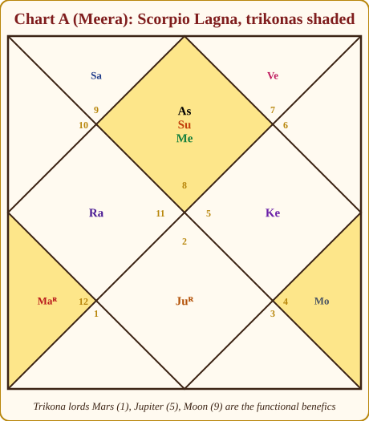
Figure 8.4: Chart A. The trines are the 1st (Scorpio), 5th (Pisces) and 9th (Cancer). Their lords — Mars, Jupiter, Moon — are Meera's functional benefics.
Captain; the 6th lordship is forgiven, but Mars periods can bring competition and health tests
Jupiter
2nd, 5th
🟢 Benefic
Trine lord; wealth and speech (2nd) ride with intelligence and children (5th)
Saturn
3rd, 4th
🔴 Malefic (mild)
3rd lordship makes it malefic; 4th (an angle) softens; A.6 lists it malefic
Sun
10th
🟢 Benefic
Angle lord, natural malefic losing badness, friend of the Lagna lord; A.6 counts it a benefic and pairs it with the Moon
Moon
9th
🟢 Benefic
The best trine; fortune, father, grace
Mercury
8th, 11th
🔴 Malefic
8th and one of the fighting three; also a maraka
Venus
7th, 12th
🔴 Malefic (maraka)
7th is a maraka house; the 12th adds expense and distance
Now look at where they sit. Sun (benefic) and Mercury (malefic) share the Lagna — mixed, but the Sun is the 10th lord in the 1st, a career-defining placement, and Mercury, though functionally malefic, gives her the articulate mind that makes her a teacher. Jupiter (benefic) sits in the 7th, protecting marriage. The Moon (benefic) sits in its own sign in the 9th, the house it owns — fortune guarded. Venus, the maraka, sits in its own sign in the 12th: her expenses and her marriage will be tied to distance, comfort and foreign or far places, and her Venus dasha (age 18½ to 38½) was a mixed period — the marriage in 2016 came in it, but so did the spending and the distance.
Worked example: Chart B (Cancer Lagna)
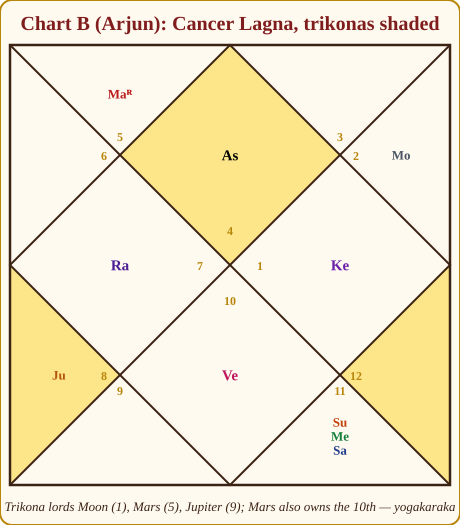
Figure 8.5: Chart B. Trines: 1st Cancer, 5th Scorpio, 9th Pisces. Their lords are the Moon, Mars and Jupiter — and Mars also owns the 10th, making it the yogakaraka.
Where they sit: Mars, the yogakaraka, in the 2nd house Leo, retrograde, in the Sun's sign — a friend's house. Career and intelligence feed wealth and speech; Arjun earns by his mind and his voice, and his Mars dasha (age 11.8 to 18.8) was when he found his subject. Jupiter, a benefic, sits in the 5th, its own trine. The Moon, captain, sits in the 11th in Venus's Taurus — well placed for gains through the public. Saturn, the maraka, sits in the 8th in its own sign, combust: a long life, and health matters that surface in Saturn's periods and must not be ignored. Venus, malefic, sits in the 7th in Saturn's sign — a partner who is disciplined and older-seeming; the 11th-lord flavour brings the partner's family and friends into the marriage. The three in the 8th we already read in Chapter 6; now you know that of those three, the Sun is neutral, Mercury malefic, Saturn neutral-maraka — which is why I read that house as research and depth, not as disaster.
🧭 Guruji's rule of thumb: For any chart, write the seven planets in two columns — works for me and tests me — before you read anything else. Then look at the dasha. In under a minute you know whether the client walked in during a lift or a test.
In one breath
Natural nature is a planet's temperament; functional nature is whose houses it works for in your chart. Function decides results.
Parashara: trine lords benefic; lords of 3, 6, 11 malefic; angle lords neutral (benefics lose goodness, malefics lose badness); 2, 8, 12 lords go by their other sign; 8th lord bad unless Lagna lord; Lagna lord always treated as benefic.
Derive, do not memorise: list the twelve houses from the Lagna, read the owner of each, apply the rules.
A yogakaraka owns an angle and a trine by itself: Saturn for Taurus and Libra, Mars for Cancer and Leo, Venus for Capricorn and Aquarius (and Virgo by tradition).
Marakas (2nd lord, 7th lord, malefics in 2 or 7, 12th lord, Saturn) bring health and money tests in their periods. Never predict death.
Badhaka (11th for movable, 9th for fixed, 7th for dual Lagnas) is a Prashna-tradition tool for hidden obstacles.
A benefic's dasha lifts, a malefic's dasha tests, a neutral's dasha follows its placement.
Practice
✍️ Practice:
1. Derive the functional nature of Jupiter for a Gemini Lagna. Which houses does it own, and what does Parashara's rule say?
2. Which two Lagnas have Venus as yogakaraka by the strict angle-plus-trine test? Show the houses.
3. Chart C (Devika) is an Aries Lagna. Her Saturn is in the 5th. Is Saturn a functional benefic or malefic for her, and which house group does its placement fall in?
4. A Leo Lagna client is entering a Mercury Mahadasha. Using only functional nature, will these years lift or test? Which life areas?
5. Name the Badhaka house and its lord for a Pisces Lagna.
Answers
1. For Gemini, Sagittarius is the 7th and Pisces the 10th. Jupiter owns two angles; a natural benefic owning angles loses its goodness (kendradhipatya dosha). Functional malefic, and the 7th lordship also makes it a maraka — exactly as A.6 lists it.
2. Capricorn (Venus owns Taurus, the 5th, and Libra, the 10th) and Aquarius (Venus owns Taurus, the 4th, and Libra, the 9th). Virgo is the traditional exception where Venus owns the 2nd and 9th.
3. For Aries, Saturn owns Capricorn (10th) and Aquarius (11th); the 11th lordship makes it a functional malefic. It sits in the 5th, a trine, in Leo, the sign of its enemy the Sun. A malefic in a trine pressures the trine's matters — children, education — which fits the "struggle then success" theme of her 5th house.
4. For Leo, Mercury owns Virgo (2nd) and Gemini (11th): a functional malefic and a maraka. Its years test rather than lift, in the areas of money and speech (2nd) and gains, friends and elder siblings (11th), with health to be watched because of the maraka role. If Mercury is well placed and dignified, the test is milder and the gains still come, but with effort.
5. Pisces is a dual sign, so the Badhaka is the 7th house, Virgo, and its lord is Mercury.
Chapter 9: House Lords — Where Did the Owner Go?
Every house in the chart has an owner. You have known this since Chapter 2: each sign has a lord, and each house contains a sign, so the lord of that sign is the lord of that house (Bhavesha). For a Scorpio Lagna, the 7th house is Taurus, and Venus is the lord of the 7th. So far, a fact.
Now the idea that turns the fact into a tool. The owner of a house is like the owner of a shop. If he sits in his own shop, it runs beautifully. If he is always at the temple, the shop's affairs get mixed up with religion. If he is in the hospital, the shop suffers. The lord carries the matters of its house to wherever it sits. That sentence, applied twelve times, is most of what the classics mean by "read the lords".
This chapter gives you the method, the 144 basic combinations, and three refinements — dispositors, exchanges, and lords in their own houses.
The master principle
Three questions about any house lord, in this order:
Which house has it gone to? A lord in a good house — an angle (1, 4, 7, 10), a trine (5, 9), the 2nd or the 11th — makes its house's matters flourish. A lord in a difficult house (6, 8, 12) struggles or is transformed: the matters arrive through service, crisis or distance. A lord in the 3rd works hard for its results.
How is it doing there? Own sign or exaltation: strong owner, matters prosper. Enemy's sign or debilitation: weak owner, matters need help. Combust, in a planetary war, hemmed by malefics: weakened. Aspected by Jupiter: protected.
What does the destination house mean? This is where the reading comes alive. The 4th lord in the 10th: mother, home, education and comfort (4th) have gone to career and public life (10th). Perhaps a family business, a career in real estate or teaching, work from home, a mother who shaped the career. You do not memorise which; you offer the possibilities and let the rest of the chart choose.
📖 Story: The owner who went to another room. Each of the twelve rooms in the haveli has an owner whose name is on the door, but owners wander. The owner of the kitchen (the 4th, home and mother) is found every day in the office (the 10th) — so the family's meals are eaten at the desk, the mother keeps the accounts, and the business is run from home. The owner of the marriage room (the 7th) is found in the guest-house at the edge of the estate (the 12th) — so the spouse comes from far away and the couple's happiest hours are private ones. The owner of the treasury (the 2nd) is found lying in the sick-room (the 6th) — so money goes on medicines and disputes until he recovers. Wherever the owner sits, that is where his room's business is done, and the state of the room he sits in decides how well it goes. Rule: A house lord carries its house's matters to the house it occupies; good destination, good results; difficult destination, struggle or transformation.
🧭 Guruji's rule of thumb: Say it as a sentence: "The matters of house N have gone to house M." Then ask what happens when those two departments of life share an office. That sentence is worth more than any list.
The five-step method for judging any house
When a client asks about children, marriage, career, or health, they are asking about a house. Here is how I answer, every time, in the same order, so that I never skip a signal.
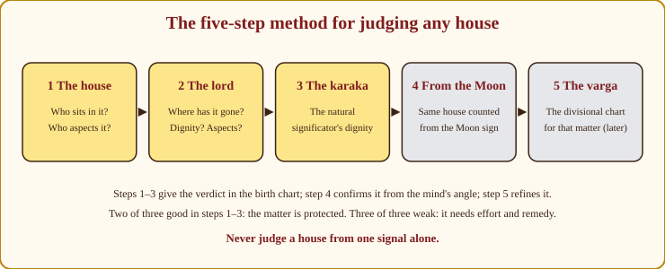
Figure 9.1: The five steps. The first three give the verdict in the birth chart; the fourth confirms from the Moon; the fifth refines with a divisional chart.
The house itself. Who sits in it? Who aspects it (Chapter 6)? Benefics and functional benefics (Chapter 8) protect; malefics pressure.
The lord. Where has it gone? What is its dignity, and who is with it or aspecting it?
The natural significator (karaka). Appendix A.5 lists one for each house — Jupiter for children, Venus for spouse, Sun for father, and so on. A strong karaka rescues a weak house; a weak karaka makes even a good house work harder.
The same house counted from the Moon. The Moon is the mind, and the chart from the Moon (Chandra Lagna) shows how the person experiences the matter. If the Lagna chart and the Moon chart agree, speak with confidence. If they disagree, the truth is mixed.
The divisional chart for that matter — D7 for children, D9 for marriage, D10 for career (Appendix A.10). Chapter 11 teaches these; for now, know that the step exists.
Two of the first three strong, and the matter is protected. All three weak, and it needs effort and remedy.
📖 Story: Visiting a house. When the steward is asked "how are the children of this family?", he does not guess. First he visits the children's room itself (the 5th) and sees who is living there and who keeps peering in through the windows — occupants and aspects. Then he goes looking for the landlord of that room, wherever he has wandered, and checks whether he is well-dressed or in rags — the lord and its dignity. Then he visits the shrine of the room's patron deity — the karaka, Jupiter for children — and sees whether the lamp is lit. Then he looks at the room's reflection in the Queen Mother's mirror — the same house counted from the Moon — to learn how the family feels about it. Last, he unrolls the district map for that matter — the divisional chart. Only then does he speak. Rule: House, lord, karaka, from the Moon, varga — five steps, every time.
Worked example: Chart C, the 5th house (children)
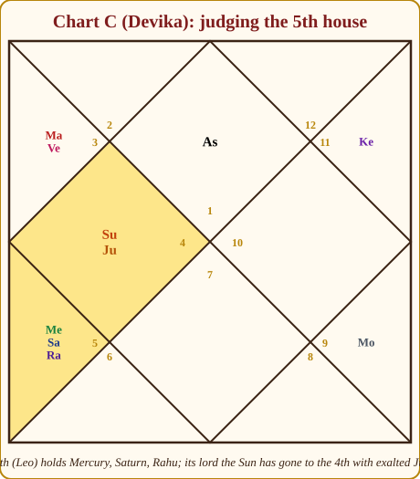
Figure 9.2: Chart C. The 5th house Leo holds Mercury, Saturn and Rahu. Its lord, the Sun, has gone to the 4th house Cancer, where exalted Jupiter also sits.
Devika (Aries Lagna) asks about children.
Step 1 — the house. The 5th is Leo, and it is crowded: Mercury at 1°, Rahu at 3°, Saturn at 18°. Saturn is a functional malefic for Aries (it owns the 11th), in its enemy the Sun's sign. Rahu is tightly conjunct Mercury, and Ketu aspects the house from the 11th. A pressured house: delay, anxiety about children, unconventional routes (Rahu), much thinking about education (Mercury). Mercury and Rahu at 1°–3° Leo also sit in the Magha Gandanta strip (Chapter 7) — an intensifier, not a verdict.
Step 2 — the lord. The Sun, lord of Leo, has gone to the 4th house Cancer. The 4th is an angle — a good house. Cancer is the Moon's sign, a friend of the Sun. And the Sun sits with Jupiter, exalted at 26° Cancer. The 5th lord in a good house, in a friendly sign, in the company of an exalted great benefic: the children come, and they come through the home and the mother's line (4th), and they are a source of learning and comfort.
Step 3 — the karaka. Jupiter, the significator of children, is exalted in an angle. This is the strongest possible karaka. It rescues the crowded 5th.
Step 4 — from the Moon. The Moon is in Sagittarius. The 5th from Sagittarius is Aries — which is the 1st house of the chart, and it is empty; its lord Mars sits in the 3rd. From the Moon's angle, children are simply a matter of the self and of effort, with no malefic pressure. Mild, clean confirmation.
Step 5 — D7 later. We will check the Saptamsa in Chapter 11.
Verdict. Pressure in the house (delay, worry, an unconventional path — perhaps medical help, perhaps late motherhood) but a strong lord and the strongest karaka: children, and a deep bond of learning with them. "Struggle, then success" is exactly what these steps say. The crowded 5th alone would have frightened a beginner into a wrong answer.
Worked example: Chart A, the 7th house (marriage)
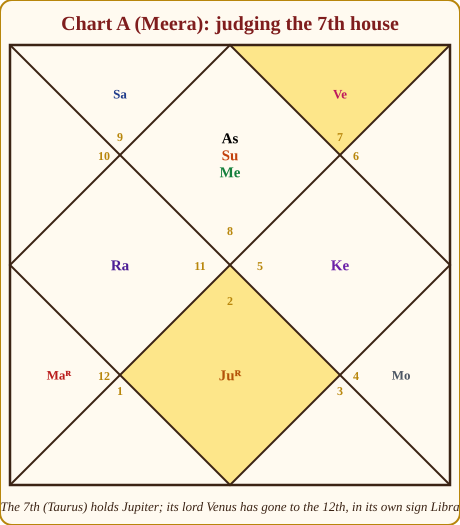
Figure 9.3: Chart A. The 7th house Taurus holds Jupiter, retrograde. Its lord Venus has gone to the 12th house, in its own sign Libra.
Step 1 — the house. Taurus, with Jupiter at 8°, retrograde. Jupiter is a functional benefic for Scorpio (lord of the 2nd and 5th). A benefic in the 7th is classical protection for marriage — though Jupiter is in the sign of its enemy Venus, and retrograde, so the partner is learned but has a mind of their own, and the match may be reconsidered once before it is settled. Aspects: the Sun and Mercury from the 1st both aspect the 7th (Chapter 6). An articulate, confident partner; a marriage in which two strong personalities face each other.
Step 2 — the lord. Venus has gone to the 12th — a difficult house — but it is in its own sign, Libra. A lord in a dusthana in its own sign is a shop-owner who has opened a branch in a distant town: the matters are far away but well run. The 12th is distance, foreign places, expenses and the pleasures of the bed. Marriage linked to another city or country, spending on the partner and the home, and a private, comfortable intimacy. Not denial — distance.
Step 3 — the karaka. In a woman's chart the classics take Jupiter as the significator of the husband (Appendix A.2), and Jupiter is in the 7th house itself. The karaka sitting in the house it signifies is a strong yes.
Step 4 — from the Moon. The Moon is in Cancer; the 7th from it is Capricorn, the 3rd house of the chart — empty, its lord Saturn in the 2nd in Jupiter's Sagittarius. Neutral confirmation: no pressure, no extra push.
Verdict. Marriage assured and protected; a learned, articulate, independent partner; a link with distance and a comfortable private life. Timed in Venus's period — and her marriage came in 2016, within her Venus Mahadasha (age 18½ to 38½).
The 144 combinations
Here are the twelve lords in the twelve houses, one line each, derived from the master principle: combine the meaning of the lord's house with the meaning of the destination, coloured by the destination's quality. These are starting sentences, not verdicts; dignity, company, aspects and Chapter 8's functional nature always adjust them.
The 1st lord — the captain
The Lagna lord gets a paragraph per placement, because it is the person walking around their own chart.
In the 1st. The owner is home. Strong constitution, self-reliance, an independent mind, a life shaped by one's own effort. Such people recover from setbacks quickly.
In the 2nd. The self is invested in family, wealth and speech. Earns by personal effort, is known for what they say, and identifies strongly with the family name. Money matters feel personal.
In the 3rd. A self built on courage and effort. Close to siblings for good or ill, restless, communicative, fond of short journeys and hobbies. Achievement comes from initiative rather than luck.
In the 4th. The self is rooted at home. A strong bond with the mother, love of land, house and vehicles, a good education, a need for inner peace.
In the 5th. The self expressed through intelligence, creativity and children. Bright, often lucky in speculation, blessed by past merit. Romance and learning colour the personality.
In the 6th. A self tested early — health, competition, debts or hard service. Such people become fighters, excellent in medicine, law or any competitive field, but must guard health and avoid needless quarrels.
In the 7th. The self is completed by others. Partner-centred, drawn to business and travel, happiest in a pair; the spouse shapes the personality.
In the 8th. A private, deep self drawn to hidden things — research, the occult, insurance, surgery, psychology. Life has clear chapters, sometimes abrupt ones; health needs attention.
In the 9th. A fortunate, dharmic self. Father and guru matter; long journeys, higher learning and philosophy shape the life. Often teachers, often travellers.
In the 10th. Career is identity. Ambitious, visible, hard-working, respected; known by their work, and able to lose themselves in it.
In the 11th. A self that gains. Wide networks, generous friends, elder siblings who help, wishes that come true with effort. Comfortable later in life.
In the 12th. The self is spent far away or in solitude — foreign lands, hospitals, ashrams, research libraries. Expenses run high; spirituality runs deep. Such people need a retreat and often live abroad.
The other eleven lords
Each row carries a dot for the quality of the destination house: 🟢 angle, trine, 2nd or 11th; 🟡 the 3rd (effort); 🔴 the 6th, 8th or 12th. Where a 🔴 destination is the lord's own house or forms a Viparita yoga, the row is marked 🟡, because the difficult house then works in your favour.
Lord of the 2nd (wealth, speech, family) in the…
House
Derived meaning
1 🟢
Wealth by own effort; speaks freely; family-centred identity
2 🟢
Steady accumulation, good speech, strong lineage (own house)
3 🟡
Money through communication, writing, siblings; effort for earnings
4 🟢
Wealth from property, mother's side, education; comfortable home
5 🟢
Earns through intelligence, children, speculation; learned speech
6 🔴
Money through service or medicine; debts and disputes over family funds
7 🟢
Wealth through spouse or partnership; pleasing speech in business
8 🔴
Inheritance, insurance, sudden ups and downs in savings; guarded speech
9 🟢
Wealth through fortune, father, higher learning; truthful, generous speech
10 🟢
Wealth through career; speech is a professional tool
11 🟢
Wealth grows through gains and networks; a strong earner
12 🔴
Spending outruns saving; money abroad or in charity; quiet speech
Lord of the 3rd (courage, siblings, communication) in the…
House
Derived meaning
1 🟢
Brave, self-willed, a natural communicator; siblings shape the self
2 🟢
Siblings and family close; income from communication
3 🟡
Courage, hard work, artistic hobbies, good sibling bonds (own house)
4 🟢
Courage applied at home; siblings nearby; short journeys for study
5 🟢
Creative communication; effort in learning; siblings' children dear
6 🔴
Rivalry with siblings or competitors; courage in service; short work trips
7 🟢
Partnership built on communication; spouse like a friend; business travel
8 🔴
Siblings distant or in difficulty; courage tested; research writing
9 🟢
Siblings fortunate or abroad; effort for dharma; long journeys
10 🟢
Career in communication, sales, media, writing; a hard worker
11 🟢
Gains through initiative, siblings and networks
12 🔴
Sibling far away; effort spent quietly; foreign correspondence
Lord of the 4th (mother, home, education, comforts) in the…
House
Derived meaning
1 🟢
Home-loving, mother's strong influence, well educated, comfortable
2 🟢
Property adds to wealth; mother's family helps; education pays
3 🟡
Changes of residence; effort for comforts; mother close to siblings
Career abroad or behind the scenes; hospitals; isolation
Lord of the 11th (gains, elder siblings, friends) in the…
House
Derived meaning
1 🟢
A gainful personality; friends help; wishes fulfilled
2 🟢
Gains build wealth; family friendships
3 🟡
Gains through effort and siblings
4 🟢
Gains through property and mother
5 🟢
Gains through children, intellect, speculation
6 🔴
Gains through service; disputes with friends; debts
7 🟢
Gains through spouse and business
8 🔴
Gains through inheritance or insurance; friends' losses
9 🟢
Gains through fortune and father
10 🟢
Gains through career; ambitious
11 🟢
Strong gains, helpful elder siblings (own house)
12 🔴
Gains spent; income from abroad; friends far away
Lord of the 12th (expenses, distance, release) in the…
House
Derived meaning
1 🟢
Expenses on self; foreign residence; a spiritual bent
2 🟢
Expenses on family; spending exceeds saving
3 🟡
Expenses on siblings and journeys; effort abroad
4 🟢
Expenses on home; mother far away; love of sleep and comfort
5 🟢
Expenses on children and education; meditative intellect
6 🟡
Vimala Viparita: losses cancel; hospital or service work abroad
7 🟢
Expenses on spouse; a foreign partner
8 🟡
Vimala Viparita: losses cancel; occult depth
9 🟢
Expenses on pilgrimage and father; fortune abroad
10 🟢
Career abroad; behind-the-scenes work; expenses on career
11 🟢
Gains balance expenses; friends abroad
12 🟡
Controlled expenses; a life abroad; moksha (own house)
⚠️ Common beginner mistake: Reading one line from these tables as a prediction. "7th lord in the 6th means divorce" is not in the table, and it is not true. The table says friction, and patience needed. Whether that friction is a stormy first year or a lifelong struggle is decided by dignity, aspects, the karaka, the Navamsa and the dasha — never by one line.
Lords in their own house (Swakshetra)
When a lord sits in the house it owns, the shop-owner is behind his own counter and the house is stable. The twelve, in one line each:
1st lord in the 1st — a strong body and will. 2nd in the 2nd — wealth holds. 3rd in the 3rd — courage and siblings steady. 4th in the 4th — home and mother secure. 5th in the 5th — intelligence and children blessed. 6th in the 6th — enemies and disease held at bay. 7th in the 7th — marriage and business firm (Chart B's Venus). 8th in the 8th — long life, deep mind (Chart B's Saturn). 9th in the 9th — fortune protected (Chart A's Moon in Cancer). 10th in the 10th — career solid. 11th in the 11th — gains steady. 12th in the 12th — expenses controlled, a spiritual life (Chart A's Venus in Libra).
Notice that the 6th, 8th and 12th lords in their own houses are good — a malefic guarding its own gate keeps trouble inside it.
🪔 Consultation tip: When a lord has gone to the 6th, 8th or 12th, never say "your marriage house is destroyed" or "your children house is spoilt". Say where the matter has gone: "Your partner is likely to come from far away, or the marriage will involve distance." Distance, service and transformation are things a person can plan for. Destruction is not, and it is almost never what the chart says.
Two lords together: fusing two houses
When two lords sit in one house, the two houses they own are fused and poured into the house they occupy. The 9th and 10th lords together fuse fortune with career: the Dharma-Karma Adhipati yoga, the most reliable career signal in the classics. The 1st and 10th lords: the self-made professional. The 2nd and 11th lords: a Dhana yoga of wealth and gains. The 6th and 7th lords: disputes fused with marriage. The 5th and 9th lords: Lakshmi's two houses in one room.
This is where Chapter 8 meets Chapter 10. A Raja yoga is simply an angle lord and a trine lord connected — by conjunction, mutual aspect, or exchange (Chapter 6's Sambandha). In Chart A, the Sun (10th lord) and Jupiter (5th lord) are in mutual aspect from the 1st and 7th: the machinery beneath Meera's teaching career. Chapter 10 names and ranks these.
Dispositors: following the owners
Every planet sits in a sign, and that sign has a lord. The lord of the sign a planet sits in is that planet's dispositor — its landlord. The planet lives in the landlord's house and takes on the landlord's mood. Follow the chain: Sun in Scorpio, landlord Mars; Mars in Pisces, landlord Jupiter; Jupiter in Taurus, landlord Venus; Venus in Libra — its own sign. The chain stops there. Venus is the final dispositor: the landlord of landlords.
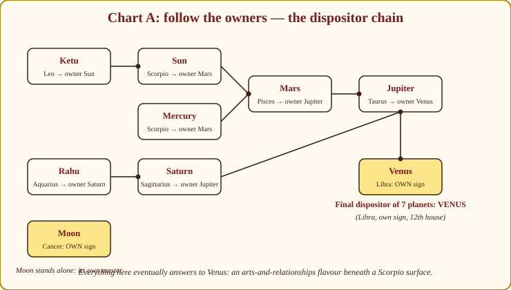
Figure 9.4: Chart A's dispositor chain. Seven planets eventually answer to Venus in Libra; the Moon, in its own sign Cancer, stands alone.
In Chart A: the Sun and Mercury (Scorpio) answer to Mars; Mars (Pisces) and Saturn (Sagittarius) answer to Jupiter; Jupiter (Taurus) answers to Venus; Rahu (Aquarius) answers to Saturn and so to Jupiter and Venus; Ketu (Leo) answers to the Sun and so to Mars, Jupiter, Venus. Seven of nine end at Venus. The Moon sits in Cancer, its own sign, and answers to nobody.
📖 Story: Who does your landlord pay rent to? The young Prince rents a room in the Commander's house. Ask the Commander, and he admits he rents his house from the Royal Priest. The Priest, it turns out, rents from the Minister of Pleasure. And the Minister of Pleasure? She owns her house outright. So when the Prince's rent goes up, it is because the Minister raised it three landlords away. Follow the rent up the chain and you find who really runs the neighbourhood. In Chart A that is Venus: the Sun and Mercury pay Mars, Mars and Saturn pay Jupiter, Jupiter pays Venus, and Venus pays nobody. The Queen Mother, in her own Cancer house, is the one tenant on the street who is also her own landlord. Rule: A planet's dispositor is the lord of the sign it occupies; follow the chain to the planet in its own sign — the final dispositor — to find the chart's hidden centre.
What this tells you: beneath Meera's Scorpio surface — intense, private, Sun-and-Mercury sharp — the chart is ultimately run by Venus: relationships, aesthetics, harmony, comfort. Whatever happens to Venus by dasha or transit ripples through everything; the Moon's independence means her emotional life runs on its own track. A final dispositor in its own or exalted sign, as here, marks a chart with a strong central motive. When there is no single final dispositor — two planets in their own signs, or a loop — the person has two centres of gravity, and you read both.
Exchange of lords: Parivartana
The most striking of the four Sambandhas from Chapter 6 is the exchange (Parivartana): the lord of house A sits in house B, and the lord of house B sits in house A. The two owners have swapped shops, and the houses fuse so tightly that the classics read each lord as if it were in its own house, with the flavour of the other. Three kinds are distinguished:
Kind
Houses involved
Result
Maha ("great")
Both among 1, 2, 4, 5, 7, 9, 10, 11
Both houses flourish; a strong yoga
Khala ("mischievous")
One is the 3rd (some teachers include the 11th on the trishadaya principle)
Mixed; gains after struggle, or effort that pays late
Dainya ("wretched")
One is the 6th, 8th or 12th
The good house is dragged into difficulty; both suffer, then adjust
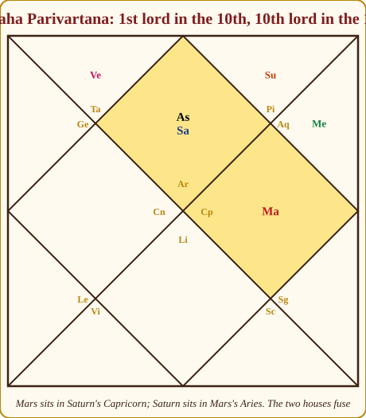
Figure 9.5: A constructed Maha Parivartana. The 1st lord Mars sits in the 10th (Saturn's Capricorn); the 10th lord Saturn sits in the 1st (Mars's Aries). Self and career are fused.
In the constructed chart above, an Aries Lagna has Mars (1st lord) in the 10th and Saturn (10th lord) in the 1st: a Maha Parivartana between the 1st and 10th. Identity and career are one — the self-made professional who rises to authority, with Saturn's discipline in the personality and Mars's drive in the work. It even softens Saturn's debilitation in Aries, because Saturn is exchanging with its own dispositor — a Neecha Bhanga, as Appendix A.11 notes.
📖 Story: Two landlords swap keys. The Queen Mother owns the Cancer house in the 4th district; the Royal Priest owns the Sagittarius house in the 9th. One day they exchange keys: she moves into his house, he moves into hers. Now every repair she orders in his house is a repair to her own interest, and every blessing he gives in her house comes home to him. The two households become one estate — neither can be judged without the other. If both houses are in good districts, the estate prospers (Maha). If one of them is the cramped house of effort in the 3rd district, the swap is mischievous — profit, but with labour (Khala). If one of them is the sick-room, the storeroom of debts or the guest-house of losses, the good landlord is dragged into a bad neighbourhood (Dainya). Rule: Parivartana fuses two houses; judge it Maha, Khala or Dainya by the houses involved.
Now look at Chart C, because it has a real one. Devika's Moon sits in Sagittarius, Jupiter's sign; her Jupiter sits in Cancer, the Moon's sign. For Aries Lagna, Cancer is the 4th house and Sagittarius the 9th. So the 4th lord and the 9th lord have exchanged — an angle and a trine, both good houses: a Maha Parivartana, and at the same time a Raja yoga by exchange (Chapter 10). Home and fortune are fused; the mother is devout and the home a place of learning; higher education and grace come through the family; and exalted Jupiter in the 4th is read as if it were in its own 9th as well. This is the quiet engine beneath her chart, and it is also why the pressured 5th house, whose lord sits with this Jupiter, ends in success. When you meet an exchange in a client's chart, it is often the single most important feature, and you should say so.
💡 Did you know?Parivartana is the everyday Hindi word for "change". Some South Indian teachers call the exchange the strongest of all relationships — stronger even than conjunction — because it is mutual and complete: each planet is read as if it had gone home.
In one breath
Every house has a lord (the lord of its sign), and the lord carries the house's matters to wherever it sits.
A lord in an angle, trine, 2nd or 11th makes its house flourish; in the 3rd it works hard; in 6, 8 or 12 it struggles or is transformed — unless it is in its own sign, or forms a Viparita yoga.
Judge any house in five steps: the house, the lord, the karaka, the same house from the Moon, the divisional chart.
The 144 "lord of N in M" combinations are derived, not memorised: combine the two houses' meanings and colour by the destination's quality (🟢 good houses, 🟡 the 3rd, 🔴 the 6th, 8th, 12th).
The Lagna lord is the captain; its placement tells you where the person's life energy is invested.
A lord in its own house stabilises that house — even the 6th, 8th and 12th lords.
Two lords together fuse two houses; an angle lord and a trine lord connected is a Raja yoga (Chapter 10).
Follow dispositors to the final dispositor to find the chart's hidden centre; an exchange of lords (Parivartana) is Maha, Khala or Dainya by the houses involved — Chart C has a Maha exchange of the 4th and 9th lords.
Practice
✍️ Practice:
1. For a Leo Lagna, name the lord of the 4th house. If it sits in the 10th house, what sign is it in, and what does the placement suggest?
2. In Chart B (Cancer Lagna), where is the 10th lord? Apply the five-step method's first two steps to Arjun's career.
3. Chart C (Aries Lagna): find the dispositor of Saturn, then of that planet, and name the final dispositor of Saturn's chain.
4. A Sagittarius Lagna has Mercury in Pisces and Jupiter in Gemini. Which houses are exchanging, and what kind of Parivartana is it?
5. Devika's 6th lord is Mercury, and it sits in the 5th house. Is this a Viparita Raja yoga? Why or why not?
Answers
1. For Leo, the 4th house is Scorpio and its lord is Mars. The 10th house is Taurus, so Mars sits in Taurus — Venus's sign, where Mars is neutral. The 4th lord in the 10th: home, mother, property or education linked to career — a family business, real estate, teaching, or a mother who shaped the profession. Mars adds engineering, land and the army to the possibilities.
2. The 10th house is Aries; its lord Mars sits in the 2nd house, Leo, retrograde. Step 1, the house: Aries is occupied by Ketu, and aspected by Rahu from the 4th; Jupiter from the 5th does not reach it (its aspects fall on the 9th, 11th and 1st). A career with a detached, technical, unconventional flavour. Step 2, the lord: Mars in the 2nd, in the Sun's sign (a friend), yogakaraka for Cancer — career feeds wealth and speech; he earns by his mind and voice, and his career strengthens in Mars's periods.
3. Saturn is in Leo; its dispositor is the Sun. The Sun is in Cancer; its dispositor is the Moon. The Moon is in Sagittarius; its dispositor is Jupiter. Jupiter is in Cancer, whose lord is the Moon. The chain ends in a Moon–Jupiter loop — which is exactly the 4th–9th Parivartana we met in this chapter — so there is no single final dispositor; Saturn's chain resolves to the Moon–Jupiter pair, the mind and wisdom.
4. For Sagittarius, Pisces is the 4th house (lord Jupiter) and Gemini is the 7th house (lord Mercury). Mercury sits in Jupiter's Pisces (the 4th) and Jupiter sits in Mercury's Gemini (the 7th): an exchange between the 4th and 7th. Both are angles among the good houses, so it is a Maha Parivartana — home and marriage fused; property through the spouse, a partner who becomes family. (Note Mercury is debilitated in Pisces; the exchange with its dispositor is a Neecha Bhanga.)
5. No. Viparita Raja yoga requires the 6th, 8th or 12th lord to sit in *another* of the houses 6, 8 or 12. Mercury, the 6th lord, is in the 5th — a trine, not a dusthana. It is simply the 6th lord in the 5th: competition in studies, children's health to watch, a sharp and combative intellect — which fits the pressured 5th house we read in this chapter.
Chapter 10: Yogas — When Planets Form a Team
A cricket team is eleven players. But eleven good players do not make a good team, and a team of ordinary players who understand each other can win a World Cup. Something happens between them.
Planets do the same. Jupiter alone is a wise man; the Moon alone is a sensitive mind. Put Jupiter at a square angle from that Moon and you get something neither produces by itself: a mind that is protected, that recovers from every fall. The old astrologers noticed such combinations again and again and called them yogas — the word simply means "joining".
What a yoga is, and the beginner's danger
A yoga is a relationship between planets or houses that produces a result neither would produce alone. A planet in a house is a placement; a planet in a sign is dignity; a yoga needs at least two things to connect. Hold that firmly and you stop asking "does this chart have Gaja Kesari?" as though it were a passport stamp, and start asking "are the Moon and Jupiter working together here, and how well?"
Now the danger. Open Phaladeepika or Jataka Parijata and you find yogas by the hundred; students either try to memorise them (and drown) or give up. You need roughly twenty yogas in active memory and the principle so firmly held that the two-hundred-and-first reads as "ah, a Raja yoga through the 4th and 9th lords". The principle: connection between the right houses, by the right planets, in good condition. Four ideas cover most of it: kendra plus trikona gives status; wealth houses connected gives wealth; difficult lords in difficult houses cancel evil; fallen planets rescued by their dispositors rise again.
🧭 Guruji's rule of thumb: A yoga is a sentence, not a word. Ask three things: who is talking (the planets), what about (the houses they own and occupy), and are they actually in the same room (the connection). If any is missing, there is no sentence.
The glue: four kinds of relationship (Sambandha)
Chapter 6 taught you aspects and conjunctions; here is where you use them. Two planets are in relationship (Sambandha) when joined in any of these four ways, strongest first:
Together in one sign (conjunction, Yuti): two people in one room; the closer in degree, the tighter the bond.
Mutual aspect (Paraspara Drishti): two people facing each other. Any two planets in opposite signs see each other; Mars (4/8), Jupiter (5/9) and Saturn (3/10) can complete a mutual aspect from other distances too.
Exchange of signs (Parivartana): each sits in the other's house. Many teachers rank this the strongest bond; the two houses fuse.
One-sided influence: one planet aspects the other without being aspected back, or sits in the other's sign. Influence, not partnership. Half marks.
Raja yogas: the royal combinations
Raja means king. A Raja yoga raises status — authority, recognition, a life somewhat larger than the family one was born into. The formation: a lord of a kendra (1, 4, 7, 10) connected with a lord of a trikona (1, 5, 9).
📖 Story: The pillar-keeper and the treasury-keeper. In the King's haveli there are two kinds of officers. The pillar-keepers hold the four corners of the building — the kendras, houses 1, 4, 7 and 10 — where the doors open and the real business of the household happens. The treasury-keepers hold Lakshmi's three rooms — the trikonas, 1, 5 and 9 — where merit, children and fortune are stored. Most days they never meet: the pillar-keeper is busy with visitors, the treasury-keeper is counting. But when one pillar-keeper and one treasury-keeper are found in the same room, or looking at each other across the courtyard, or have swapped keys, the household rises. Effort has found its funding; fortune has found a door to walk through. The Lagna lord holds both kinds of key, since house 1 is a pillar and a treasury, so he can shake hands with either side. Rule: a kendra lord connected with a trikona lord makes a Raja yoga.
Let us derive it for Chart A, Meera, Scorpio Lagna. First the lordships (Chapter 9):
House
Sign
Lord
Where the lord sits
Condition
1 (kendra + trikona)
Scorpio
Mars
5th (Pisces), retrograde
🟢 trikona, friend's sign
4 (kendra)
Aquarius
Saturn
2nd (Sagittarius)
🔴 combust, 7° from the Sun
5 (trikona)
Pisces
Jupiter
7th (Taurus), retrograde
🟡 kendra, but enemy's sign
7 (kendra)
Taurus
Venus
12th (Libra)
🟡 own sign, but a dusthana
9 (trikona)
Cancer
Moon
9th (Cancer)
🟢 own sign, own house
10 (kendra)
Leo
Sun
1st (Scorpio)
🟡 friend's sign, but 28°, the sign's edge
Now hunt for connections between kendra lords (Mars, Saturn, Venus, Sun) and trikona lords (Mars, Jupiter, Moon).
Sun (10th lord) in the 1st and Jupiter (5th lord) in the 7th sit in opposite houses and aspect each other by the 7th aspect: a genuine mutual aspect between a kendra lord and a trikona lord. The 10th (career, status) joins the 5th (intelligence, students, merit) — exactly the right pair for a teacher and consultant.
Mars (Lagna lord) in the 5th, a trikona, in Jupiter's sign — but Jupiter's aspects from the 7th fall on the 11th, 1st and 3rd, not the 5th. Good placement, no partnership.
Moon (9th lord) in the 9th, own sign — strong but alone.
Venus (7th lord) in the 12th and Saturn (4th lord) in the 2nd: no trikona lord joins either.
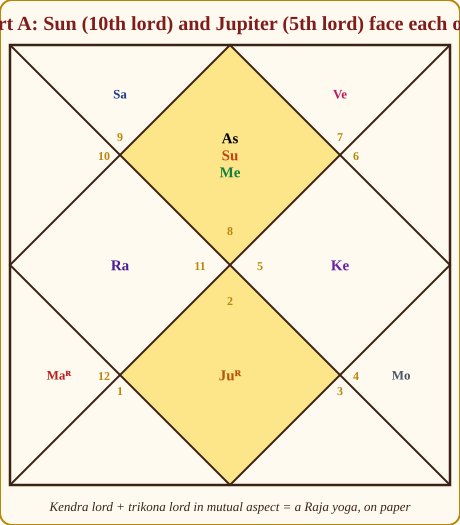
Figure 10.1: Chart A. The 10th lord Sun in the 1st and the 5th lord Jupiter in the 7th look straight at each other — a Raja yoga by mutual aspect.
So Meera has one Raja yoga on paper. Now let me be honest about it. The Sun sits at 28° Scorpio, the last two degrees of the sign, in the tail of Jyeshtha — the sensitive gandanta edge (Chapter 7). Jupiter is retrograde in Taurus, the sign of Venus, its natural enemy. A real yoga with two tired players: recognition that comes, but later than hoped and smaller than the effort; respect rather than fame. Say "steady rise, respected in your field, recognition in your forties", not "you will rule".
Chart B, Arjun, Cancer Lagna, shows another pattern. Mars owns both the 5th and the 10th: one planet, one trikona, one kendra — the yogakaraka, which carries the Raja yoga inside itself (Chapter 8). Arjun's Mars, in the 2nd, throws its 4th aspect onto Jupiter, the 9th lord, in the 5th; Jupiter does not aspect back. Half a Raja yoga riding on a strong yogakaraka: "a rise through your own effort and speech, slowly".
💡 Did you know? The most celebrated Raja yoga is Dharma-Karmadhipati yoga — the lords of the 9th (dharma) and 10th (karma) joined. Parashara ranks it first because it fuses grace with work. Neither Meera nor Arjun has it.
Dhana yogas: the wealth combinations
A Dhana yoga is any connection among the lords of the wealth houses — 2 (what you hold), 11 (what flows in), 5 (merit), 9 (fortune) — and the Lagna (the one who must earn). Three planets deserve special mention: Jupiter, the natural significator of wealth; Venus, comforts and luxury; the Moon, liquidity — cash that moves. When one of them is among the connected lords, the yoga is noticeably richer.
In Chart A, Jupiter (2nd and 5th lord) in the 7th and Mercury (11th lord) in the 1st aspect each other — a mutual aspect between the 2nd/5th lord and the 11th lord, a proper Dhana yoga. Add the Moon, 9th lord, powerful in its own sign in the 9th, and money comes steadily through knowledge and communication. Meera will not be poor; nor a tycoon — Jupiter's condition sets the ceiling.
Panch Mahapurusha yogas: the five great persons
These arise when one of the five true planets — Mars, Mercury, Jupiter, Venus, Saturn — sits in its own sign or exaltation sign, and that sign falls in a kendra from the Lagna. Why the kendra? A planet may be dignified anywhere, but only in a kendra does it get a stage. A great singer in her own kitchen is still great; a great singer on stage is a Mahapurusha ("great person"). Think of the five as the King's five great officers each standing at a pillar of the haveli in full regalia: the Commander, the Prince, the Priest, the Minister of Pleasure, the old Judge.
Yoga
Planet
Own signs
Exaltation
Personality it stamps
Ruchaka
Mars
Aries, Scorpio
Capricorn
Commander: courage, strength, leadership in action, a temper
Bhadra
Mercury
Gemini, Virgo
Virgo
Scholar-speaker: intellect, eloquence, trade, a youthful look
Hamsa
Jupiter
Sagittarius, Pisces
Cancer
Sage: wisdom, faith, teaching, a fine reputation
Malavya
Venus
Taurus, Libra
Pisces
Artist-aristocrat: beauty, refinement, comforts, happy marriage
Shasha
Saturn
Capricorn, Aquarius
Libra
Administrator: authority over others, land, discipline, late power
Chart C, Devika, is a textbook case: Jupiter at 26° Cancer, its exaltation, in the 4th house — Hamsa yoga. Devika's chart has real struggles in the 5th (Saturn, Rahu and Mercury together), but Hamsa in the 4th is why she comes through them with grace and is respected.
Figure 10.2: Chart C, Aries Lagna. Jupiter exalted in Cancer in the 4th forms Hamsa yoga. The Sun sits with it at 5°, twenty-one degrees away, so Jupiter is not combust.
Figure 10.3: Shasha yoga, constructed. Capricorn Lagna; Saturn, the Lagna lord, exalted in Libra in the 10th. Such a person rises to authority through patience — a bureaucrat, a builder, a judge.
Two honest notes. First, some teachers accept the yoga when the planet is in a kendra from the Moon; the classics specify the Lagna, and I note the Moon version only as "supporting". Second, Chart A's Venus is in its own sign Libra — but in the 12th, not a kendra. No Malavya. A dignified planet in a dusthana is comfortable in private, not on stage.
Yogas from the Moon
Several yogas are counted from the Moon rather than the Lagna, because your mental state decides how you receive whatever life gives.
Gaja Kesari yoga
Jupiter in a kendra from the Moon.Gaja is elephant, Kesari is lion: a person with the elephant's weight and the lion's majesty — steady, protected, respected. The guru at an angle to the mind means the mind is never without counsel.
Figure 10.4: Gaja Kesari yoga. Moon in the 1st, Jupiter in the 4th — the 4th from the Moon. Here the kendras from the Moon and from the Lagna coincide, the strongest form.
Gaja Kesari is very common — roughly one chart in three — so the strengthening conditions matter: Jupiter not combust, not debilitated, not in an enemy's sign, preferably aspected by benefics; the Moon reasonably bright. When Jupiter is weak, the yoga is a kind uncle with no money.
Chart A's Jupiter is the 11th from the Moon: no Gaja Kesari. Chart B's Moon is in Taurus and Jupiter in Scorpio, the 7th from it: Gaja Kesari, with Jupiter in a friend's sign in the 5th — Arjun's resilience through an 8th-house-heavy life comes largely from here. Chart C's Jupiter is the 8th from the Moon; no Gaja Kesari, but see Shakata below.
Chandra-Mangala yoga
Moon and Mars together or in mutual 7th aspect. Mind joined with drive makes a person who goes and gets: earning capacity, enterprise, sometimes a sharp tongue. Chart C has it — the Moon in Sagittarius and Mars in Gemini face each other. Devika earns through communication and effort (Mars in the 3rd).
Adhi yoga
Natural benefics (Mercury, Jupiter, Venus) in the 6th, 7th and 8th from the Moon — ministers around a queen: leadership, prosperity, protection. The full form needs all three; we accept a partial form with two. Chart C has it partially: Venus in the 7th from the Moon and Jupiter in the 8th.
Kemadruma yoga: the lonely Moon
No planet — other than the Sun, Rahu and Ketu — in the 2nd or 12th from the Moon.
📖 Story: The Queen Mother with no attendants. The Queen Mother — the Moon, the mind — walks through the haveli every evening. Custom says an attendant walks one step ahead of her (the 2nd house from the Moon) and one step behind (the 12th). With attendants she is at ease: someone to lean on, someone to announce her. One evening both places are empty. The King (the Sun) does not count — he is too bright, too busy, no company at all. The Smoke-headed Stranger and the Headless Sadhu (Rahu and Ketu) do not count — they are shadows, not attendants. So she walks alone through a long, bare corridor, and that is how the mind feels in Kemadruma: unsupported, lonely, struggling without help, poor in the old texts. But look up. If any courtier stands at a pillar of the corridor — a kendra from her, or from the Lagna — he steps forward and the loneliness ends. Rule: Kemadruma forms when the 2nd and 12th from the Moon are empty; any planet in a kendra from the Moon or Lagna cancels it.
Here is the important part: Kemadruma is formed in a very large fraction of charts and cancelled in most of them. The cancellations: any planet in a kendra from the Moon or from the Lagna; the Moon itself in a kendra from the Lagna; the Moon aspected by Jupiter or joined by a benefic; the Moon in its own or exaltation sign.
Chart A: the Moon in Cancer (9th house). The 12th from it, Gemini (8th house), is empty; the 2nd, Leo (10th house), holds only Ketu. Kemadruma is formed — and cancelled three times over: Venus in Libra is the 4th from the Moon, five planets sit in kendras from the Lagna, the Moon is in its own sign. Meera feels alone more than she is alone — very different from "you will suffer poverty".
Figure 10.5: Chart A. The 12th and 2nd from the Moon (houses 8 and 10) hold no counting planet, so Kemadruma forms; Venus in the 4th from the Moon and several planets in kendras from the Lagna cancel it.
Charts B and C also form and cancel it. The day you frighten a client with the word Kemadruma without checking the cancellations, hand back your fee.
Shakata yoga
Jupiter in the 6th, 8th or 12th from the Moon.Shakata is a cart: fortunes that rise, fall and rise again, because the protector is hidden from the mind's view. Chart C has it — Cancer is the 8th from the Sagittarius Moon. But that same Jupiter is exalted in a kendra from the Lagna, and most texts cancel Shakata then. Ups and downs, with a floor under the falls. The same Jupiter gives Hamsa from one reference point and Shakata from another; your job is to weigh, not choose.
Yogas of the mind and the good name
Budha-Aditya: Sun and Mercury together, Mercury not combust. The King and his clever young Prince in one room: intelligence, articulation, skill with words and numbers. Mercury never strays more than about 28° from the Sun, so the yoga is common; what matters is the distance. Within the combustion orb (about 14°, Appendix A.2) the Prince is scorched; beyond it, the yoga is clean. Chart A: Sun 28°, Mercury 9° Scorpio, 19° apart, in the 1st — a clean Budha-Aditya in the Lagna; Meera thinks on her feet and explains well. Chart B: Sun 18°, Mercury 2° Aquarius, 16° apart, in the 8th — the same gift applied to research.
Amala: a natural benefic alone in the 10th from the Lagna or the Moon.Amala means spotless: a career without stain — the honest officer. None of our charts has it.
Saraswati: Jupiter, Venus and Mercury each in a kendra, trikona or the 2nd, with Jupiter strong. Learning, arts, writing. None of our charts completes it.
Lakshmi: the 9th lord strong (kendra, own or exalted sign) and the Lagna lord strong. Wealth with grace. Chart C: the 9th lord Jupiter exalted in a kendra and exchanging signs with the 4th lord — perfect first half; but the Lagna lord Mars sits in Gemini, whose lord Mercury is Mars's enemy (Appendix A.3). Half a Lakshmi yoga — money that arrives but never sits still. Chart A: 9th lord Moon in own sign in the 9th, Lagna lord Mars retrograde in a friend's sign — a modest Lakshmi yoga.
Viparita Raja yoga: when two wrongs make a right
The 6th, 8th and 12th are the dusthanas — disease and debt, loss and death, expense and exile — and their lords carry those meanings wherever they go.
📖 Story: The thief who robs the thief. Three shady characters lodge in the haveli's back rooms — the lords of the 6th, 8th and 12th, keepers of debt, death and loss. Each carries a bag of trouble meant for whichever room he enters. Now watch what happens when the keeper of the 12th, the room of loss, wanders into the 8th, the room of death and hidden things. He opens his bag of losses — and finds nothing good there to spoil. Loss falls on loss. The two thieves rob each other, and the master of the house, who feared both, wakes to find his troubles have cancelled out. He gains what the other side lost; he survives what should have sunk him. That is Viparita Raja yoga — viparita means inverted. Rule: a dusthana lord placed in another dusthana turns its harm on the harm itself.
The three names:
Harsha: the 6th lord in the 6th, 8th or 12th.
Sarala: the 8th lord in the 6th, 8th or 12th.
Vimala: the 12th lord in the 6th, 8th or 12th.
Two conditions: the dusthana lord should not be joined with lords of good houses (or they are dragged into the pit), and it should preferably be weak — a strong 8th lord in the 8th is simply a strong 8th house. Whether a dusthana lord in its own dusthana counts is debated; Appendix A.11 takes the strict view (another of the three), while most Indian astrologers accept the own-house version with reduced force.
Chart B, Cancer Lagna. The 8th house is Aquarius. Sitting there: Saturn (7th and 8th lord, own sign), the Sun (2nd lord) and Mercury (3rd and 12th lord).
Mercury, 12th lord, in the 8th: a 12th lord in another dusthana — Vimala yoga, textbook. Losses reverse into gains through research, analysis, insurance or occult subjects.
Saturn, 8th lord, in the 8th: Sarala by the lenient reading, "strong 8th house" by the strict one. Saturn is in its own sign, but it is also combust — only 7° from the Sun, well inside Saturn's 15° orb (Appendix A.2). A weakened dusthana lord actually favours the reversal reading, so the Sarala flavour is real; but combustion also scorches what Saturn signifies for him personally — the 7th house it owns, discipline, longevity matters — so the gain comes with some cost.
All three are together, and the Sun is the 2nd lord, a wealth lord dragged into the dusthana. The "not with other lords" condition is broken.
Figure 10.6: Chart B. Saturn (7th and 8th lord, own sign but combust), the Sun (2nd lord) and Mercury (12th lord) together in the 8th. Vimala forms through Mercury; Sarala is arguable; the crowding weakens both.
My reading: a partial Viparita Raja yoga with a Sarala flavour. Arjun does well where other people's difficulties are the raw material. Not a lottery, not a curse; a pattern. Chart A has the same debate in miniature — Venus, 12th lord, in the 12th in its own sign: Vimala by the lenient rule, a strong 12th house by the strict one.
🪔 Consultation tip: Never introduce Viparita Raja yoga as "you gain when others lose". It sounds like a curse or a con. Say: "Your chart is built for fields where you handle other people's crises — medicine, law, insurance, recovery, research. Where others see a problem, you see your work."
Neecha Bhanga Raja yoga: the fallen planet that rises
A debilitated planet (neecha) sits in the sign opposite its exaltation — Sun in Libra, Moon in Scorpio, Mars in Cancer, Mercury in Pisces, Jupiter in Capricorn, Venus in Virgo, Saturn in Aries (Appendix A.2). Left alone, it promises what it cannot deliver.
📖 Story: The fallen minister whose landlord is the King's friend. A minister is posted to the one district where nobody respects him — the Sun sent to Libra, the Commander sent to Cancer. He arrives humiliated, his orders ignored. But every district has a landlord, the lord of that sign, and this landlord happens to hold a pillar of the palace — he stands in a kendra, in the King's own courtyard. One word from the landlord and the district falls in line behind the fallen minister. Or the minister's own patron — the lord of the sign where he would have been honoured — stands in a kendra and sends for him. Or the minister, though weak, is himself stationed in a pillar of the Queen Mother's house, a kendra from the Moon, where nobody can ignore him. The fall is real; the rescue is real too, and it always comes through the rescuer's hand, late and in the rescuer's style. Rule: a debilitated planet whose dispositor or exaltation lord stands in a kendra, or which stands in a kendra from the Moon, or exchanges signs with its dispositor, has its debility cancelled.
The conditions in full (Appendix A.11): (1) its dispositor in a kendra from the Lagna or the Moon; (2) the lord of its exaltation sign in a kendra from the Lagna or the Moon; (3) the debilitated planet itself in a kendra from the Moon (many accept from the Lagna too); (4) exchange of signs with its dispositor — the strongest. Some texts add: aspected by its dispositor, or joined with an exalted planet.
When the cancellation is strong the tradition promotes it to Neecha Bhanga Raja yoga: a rise from a humble start to real status, often late — the signature of self-made people.
None of our case charts has a debilitated planet — Meera's Mars is in Pisces, a friend's sign, not Cancer; students misremember this — so here is a constructed example.
Figure 10.7: Neecha Bhanga. Aries Lagna. The Sun at 10° Libra is at its deepest fall. Venus, lord of Libra, sits in the 7th — a kendra from the Lagna — and the Sun is in the 10th from the Moon. Cancelled twice.
The Sun (self, father, authority) debilitated in the 7th would alone suggest a person who shrinks before authority. Rescued, the story becomes: a modest beginning, then a rise to genuine authority through partnership and diplomacy (the 7th, Venus). The Sun's style stays Libran — collaborative, not commanding — but the result arrives.
⚠️ Common beginner mistake: Reading Neecha Bhanga as "the planet is now exalted". It is not. The planet's harm is neutralised and its promise restored, usually with delay and through the very planet that rescued it. A rescued Sun does not become a Leo Sun; it becomes a Libra Sun that works.
Parivartana: a one-paragraph recap
Chapter 9 introduced the exchange of signs: two lords in each other's houses fuse those houses completely. Three kinds: Maha Parivartana (between lords of good houses — 1, 2, 4, 5, 7, 9, 10, 11 — treat as a Raja or Dhana yoga), Khala Parivartana (one lord is the 3rd lord — mixed, results rise and fall), Dainya Parivartana (one lord is the 6th, 8th or 12th lord — the good house is pulled down, though with resilience). Chart C has a fine one: the Moon (4th lord) sits in Sagittarius, Jupiter's sign, while Jupiter (9th lord) sits in Cancer, the Moon's sign — a Maha Parivartana between a kendra lord and a trikona lord, which is also a Raja yoga by exchange. Chapter 9 called it the quiet engine beneath Devika's chart; it is why her pressured 5th house ends in success.
Kala Sarpa yoga: popular, powerful, not in Parashara
Kala Sarpa ("the serpent of time") forms when all seven planets lie on one side of the Rahu–Ketu axis, hemmed between the nodes with the other half of the zodiac empty.
Figure 10.8: Kala Sarpa yoga. Rahu in the 1st, Ketu in the 7th, every planet between them going forward. The empty half of the chart is the tell-tale sign.
There are two directions. Planets from Rahu forward to Ketu (zodiacal order, as in the figure) give Kala Sarpa proper; planets from Ketu forward to Rahu give what some call Kala Amrita, considered gentler. Both describe a life with a strong sense of fate — sudden turns, karmic themes — often with a late flowering.
Now the honest part. Kala Sarpa is not in Brihat Parashara Hora Shastra or the other classics; it grew in the popular tradition and its interpretation varies by lineage. I treat it as a texture — a life shaped by forces larger than one's choices — never a verdict; some of the most accomplished people I have read for have had it. In Chart A, Mars, Jupiter and the Moon lie on one side of the Aquarius–Leo axis and the rest on the other: no Kala Sarpa. One planet on the far side breaks it.
Kuja dosha (Mangal dosha): a calm treatment
No idea in Indian astrology has caused more unnecessary fear than the "manglik". So we go slowly, with reasons.
Kuja is Mars; dosha is a blemish. The rule: Mars in the 1st, 2nd, 4th, 7th, 8th or 12th from the Lagna gives Kuja dosha. The count is repeated from the Moon and from Venus, so a chart may show the dosha from one, two or all three reference points.
📖 Story: The Commander posted in the bedroom wing. The Commander (Mars) is a fine officer on the parade ground — the 3rd, 6th, 10th and 11th houses, where courage, competition and work live. Now post him inside the family wing of the haveli: the master's own room (1st), the dining hall where the family talks (2nd), the mother's quarters (4th), the bride's chamber (7th), the room where the marriage's long years are kept (8th), or the bedroom itself (12th). He does not become a villain. He simply behaves like a commander where a commander is not needed: he speaks in orders, he decides in a hurry, he keeps his sword on the table. Meals turn into arguments; the bride feels commanded rather than courted. That heat in the family wing is all Kuja dosha means — a tendency to friction in married life, not a prediction of widowhood, whatever your neighbour's aunt says. And a commander who is dignified, or watched by the Priest or the old Judge, keeps his manners. Rule: Mars in 1, 2, 4, 7, 8 or 12 from the Lagna (also check from the Moon and Venus) gives Kuja dosha, subject to many cancellations.
Figure 10.9: The six Kuja dosha houses. Count from the Lagna, then from the Moon, then from Venus.
Chart
Mars from the Lagna
Mars from the Moon
Mars from Venus
Verdict
A (Meera)
5th 🟢
9th (from Cancer) 🟢
6th (from Libra) 🟢
No dosha from any point 🟢
B (Arjun)
2nd 🔴
4th (from Taurus) 🔴
8th (from Capricorn) 🔴
Dosha from all three 🔴 — hold that thought
C (Devika)
3rd 🟢
7th (from Sagittarius) 🔴
with Venus, 1st 🔴
Mixed 🟡 — a very common case
Now the cancellations, which the tradition lists generously precisely because it never meant the dosha as a life sentence. The mainstream list:
Mars in its own sign (Aries, Scorpio) or exalted (Capricorn) — disciplined heat.
Mars in Leo or Aquarius, by several texts, plus sign-house exemptions (Gemini or Virgo in the 2nd, Cancer or Capricorn in the 7th, Sagittarius or Pisces in the 8th, and so on). Lists differ; say "by most texts".
Both partners have the dosha — the most reliable remedy: two people with the same heat understand each other.
Jupiter or Saturn joined with or aspecting Mars — wisdom or restraint cools it. (Some accept only Jupiter.)
Mars combust, with Rahu, or in a dual sign — weakened Mars, weakened dosha, by some authors.
The folk view: the dosha fades after 28. No classical text says this; recognise it when a family raises it.
Return to Arjun. Mars in Leo (exempted by several texts), retrograde, aspected by Saturn from the 8th (Saturn's 7th aspect lands on the 2nd — a combust Saturn, so a softer aspect), and his yogakaraka. By the bare rule, manglik three times; by the cancellations, substantially reduced. I would tell him: "Your Mars is a strong, useful planet, but it sits in the house of family and speech. Words spoken in anger at home are your one real risk. Marry someone with some fire of her own, and learn to leave the room for ten minutes."
🪔 Consultation tip: When a family arrives frightened by the word "manglik", do three things in order. First, check the dosha from all three points and every cancellation out loud, so they see you working, not pronouncing. Second, translate the result into behaviour, never fate: "a tendency to sharp words early in marriage", not "danger to the spouse". Third, hand them something to do — a match with a similarly Martian partner, a Tuesday discipline, a family rule of not deciding things when angry. Fear leaves the room the moment people have work. Never tell a young person their Mars will harm someone they love.
Daridra yogas and other dark names, in one paragraph
The texts also name combinations of poverty (Daridra yoga) and misfortune (duryogas): the 11th lord in a dusthana with malefics, the Lagna lord in the 12th with the 12th lord in the 1st, and so on. Every one is the same principle in reverse: wealth lords in loss houses, connections between the wrong rooms. Derive them when you meet them, apply the same cancellations, and remember that a poverty yoga in a chart with two Raja yogas is a season of tight money, not a life of want.
Yoga bhanga: a yoga is only as strong as its planets
Every yoga above was stated as a formation. But a formation is a team on paper; whether it wins depends on the players and on when they take the field. Before you speak about any yoga, run four checks — together they are what the tradition means by yoga bhanga, the weakening of a yoga.
1. Dignity. A Raja yoga between an exalted Sun and Jupiter in its own sign is a king-maker; the same yoga between a Sun at the sign's edge and a retrograde Jupiter in an enemy's sign (Chart A) is a respectable career. Chapter 12 gives the full method.
2. Combustion. A planet within the Sun's orb (Appendix A.2) is a player with a fever. A Dhana yoga through a combust Venus is money that arrives and evaporates.
3. Dusthana placement. Planets in the 6th, 8th or 12th work underground — late, through struggle. Not cancelled; muffled.
4. Dasha activation. The one beginners miss, and the answer to the commonest complaint I hear: "Panditji, my chart has three Raja yogas and I am still a clerk."
📖 Story: The team that never took the field. The King has a brilliant pair in his court — the pillar-keeper Sun and the treasury-keeper Jupiter, who get on famously. But the haveli runs on a railway timetable (Chapter 13): each courtier is given the keys of the house for a fixed stretch of years, one after another, and only the key-holder's plans are carried out. For twenty years the keys are with the Minister of Pleasure, Venus. Sun and Jupiter sit in the courtyard, friends still, waiting. Their plans are real; they are simply not on the timetable yet. The clerk with three Raja yogas is not cursed — he is early. Rule: a yoga sleeps until the Mahadasha or Antardasha of one of its planets arrives.
Meera's Sun–Jupiter Raja yoga does little during her Venus Mahadasha; it wakes in the Sun Mahadasha (2027–2033, ages about 38 to 44) — exactly when I would tell her to expect recognition.
🧭 Guruji's rule of thumb: Formation tells you what; dignity tells you how much; dasha tells you when. A yoga described without all three is a rumour.
A chart nearly always holds good and difficult yogas together. Do not add them up like a shopkeeper; weigh them like a judge, then speak about tendencies, seasons and work to be done.
In one breath
A yoga is a connection between planets or houses that produces more than the parts; a placement alone is not a yoga.
Four glues: conjunction, mutual aspect, exchange of signs, and (weakest) one-sided influence. Exchange is strongest.
Raja yoga = kendra lord connected with trikona lord (status); Dhana yoga = lords of 2, 5, 9, 11 and Lagna connected (wealth); Dharma-Karmadhipati (9th + 10th) is the finest Raja yoga.
Panch Mahapurusha = Mars, Mercury, Jupiter, Venus or Saturn in own or exalted sign in a kendra from the Lagna (Ruchaka, Bhadra, Hamsa, Malavya, Shasha). Chart C has Hamsa.
From the Moon: Gaja Kesari, Chandra-Mangala, Adhi, Shakata; Kemadruma is formed in most charts and cancelled in most — always check.
Viparita Raja yoga: a dusthana lord in a dusthana turns loss to gain; Neecha Bhanga: a debilitated planet rescued by its dispositor or a kendra position rises late.
Kuja dosha: Mars in 1, 2, 4, 7, 8, 12 from Lagna, Moon and Venus — a tendency to friction with many cancellations, never a sentence. Kala Sarpa is a popular teaching, not Parashari.
A yoga is only as strong as its planets (dignity, combustion, dusthana) and sleeps until its planets' dasha arrives.
Practice
✍️ Practice:
1. For Chart B (Cancer Lagna), list the kendra lords and trikona lords with their house positions. Which single planet is both, and what is it called?
2. Chart C has Hamsa and Shakata from the same Jupiter. Explain in two sentences how both can be true and how you would weigh them.
3. A client's Moon is in Aries with no planet in Pisces or Taurus, but Saturn sits in Cancer and Jupiter in Libra. Does she have Kemadruma?
4. Arjun's family asks whether he is "manglik". Write the three sentences you would actually say.
Answers
1. Kendra lords: Moon (1st), Venus (4th), Saturn (7th), Mars (10th); trikona lords: Moon (1st), Mars (5th), Jupiter (9th). Mars owns the 5th and the 10th: the **yogakaraka** for Cancer Lagna.
2. Hamsa is counted from the Lagna (Jupiter exalted in a kendra); Shakata from the Moon (Cancer is the 8th from the Sagittarius Moon). An exalted Jupiter in a kendra from the Lagna is powerful and most texts cancel Shakata then — read "ups and downs, with a strong floor under the falls".
3. Formed (Pisces and Taurus, the 12th and 2nd from the Moon, are empty) but cancelled: Saturn in Cancer is the 4th from the Aries Moon and Jupiter in Libra the 7th. Say "a mind that likes its own company", not "loneliness".
4. Something like: "Mars sits in his 2nd house, so by the traditional rule the blemish is present, and I have checked it from the Moon and Venus too. But his Mars is the best planet in his chart, aspected by Saturn and placed in Leo, both of which the texts count as softening it. In practice this means a tendency to sharp words at home in the early years — something a well-matched partner and a little self-awareness handle easily."
Chapter 11: Divisional Charts (Vargas) — Zooming In
Open a map of Mumbai. At one glance you see the whole city — the sea, the railway lines, the airport, the rough shape of things. That is your birth chart (D1). Now suppose you want to find a particular flat in Bandra. The city map will not do; you zoom into the Bandra sheet, where every lane is drawn. That zoomed sheet is a divisional chart (Varga, "a division"). The Navamsa (D9) is the marriage district. The Dasamsa (D10) is the office district. The Saptamsa (D7) is the children's district.
Divisional charts are where beginners either fall in love with astrology or run away from it, because the arithmetic looks frightening and the software prints sixteen charts without saying which one to look at. This chapter fixes both problems. You will compute a Navamsa by hand — the whole of Meera's — so that the charts stop being magic, and you will learn which six to use and how to read them without losing the city for the lanes.
Why one chart is not enough
The Rasi chart (D1) puts each planet in one of twelve signs. Twelve boxes for nine planets is a coarse grid. Two people born a day apart may have every planet in the same sign, yet one marries happily and the other struggles. Something finer must be at work.
The finer thing is where inside the sign a planet sits. A planet at 2° of Taurus and one at 28° of Taurus are both "in Taurus", but they behave differently.
📖 Story: The King's map room. On the wall of the King's map room hangs one great map of the kingdom, cut into twelve districts — the Rasi chart. When a courtier is reported "in Taurus", the King knows roughly where he is. But the young Prince, Mercury, keeps sixteen smaller sheets in a drawer, one for each purpose: the marriage-district sheet, the office-district sheet, the children's-district sheet. On each sheet every district of the big map is cut into lanes — nine lanes on the marriage sheet, ten on the office sheet, seven on the children's sheet — and each lane is given a district name of its own. So the same courtier "in Taurus" may, on the marriage sheet, be standing in a lane called Pisces, and on the office sheet in a lane called Capricorn. The big map says which street; the sheet says which house on the street. Rule: a varga re-maps each sign by degree into slices, and each slice carries a sign of its own.
Cut each sign into 9 slices and you get the Navamsa; into 10, the Dasamsa; into 7, the Saptamsa. The planet's degree decides its slice; the slice's sign becomes the planet's sign in that chart.
🧭 Guruji's rule of thumb: D1 is the body; the vargas are the organs. You can say a great deal about a person from the body alone. You can say nothing sensible about the liver without first knowing whose liver it is.
The sixteen charts, and the six you actually use
Parashara lists sixteen divisional charts, the Shodasavarga. Appendix A.10 gives the main ones with their uses; here is the full list with my honest advice on each.
Chart
Division
Primary use
Beginner's verdict
D1 Rasi
30°
Everything; the body of the horoscope
🟢 Use always
D2 Hora
15°
Wealth
🟢 Use, as a tint
D3 Drekkana
10°
Siblings, courage, nature of death
🟡 Later
D4 Chaturthamsa
7°30′
Property, fixed assets, fortune
🟡 Later
D7 Saptamsa
4°17′
Children, progeny
🟢 Use for children questions
D9 Navamsa
3°20′
Marriage, dharma, inner strength of planets
🟢 Use always — the most important varga
D10 Dasamsa
3°
Career, public life
🟢 Use for career questions
D12 Dwadasamsa
2°30′
Parents, lineage
🟡 Later
D16 Shodasamsa
1°52′30″
Vehicles, comforts
🟡 Later
D20 Vimsamsa
1°30′
Spiritual life, worship
🟡 Later
D24 Chaturvimsamsa
1°15′
Education, learning
🟡 Later
D27 Bhamsa
1°6′40″
Strengths and weaknesses
🟡 Later
D30 Trimsamsa
1°
Misfortunes, character, disease
🟡 Later
D40 Khavedamsa
0°45′
Auspicious and inauspicious effects (maternal line)
🔴 Rarely
D45 Akshavedamsa
0°40′
General indications (paternal line)
🔴 Rarely
D60 Shashtiamsa
0°30′
Past-life karma; used to separate twins
🟡 Know about it; use with care
Six for the beginner: D1, D9, D10, D7, D2 and D60. The first five are the ones a client's questions actually require (life, marriage, career, children, money); the sixth you need to know about because Parashara himself rates it highly and because it is the only tool that separates twins. Leave the rest until the six feel like old friends. A student who reads sixteen charts badly is worse off than one who reads two charts well.
💡 Did you know? Parashara gives each of the sixteen vargas a weight when judging a planet's overall strength — D1 counts 3½ points, D9 counts 3, D60 counts 4, most others 1 or ½ (the Vimsopaka scheme, 20 points in all). The Shashtiamsa outranks even the Rasi chart in this scheme, which tells you how seriously the tradition took birth-time accuracy: a D60 changes every minute.
How a varga is built: the idea of slices
Every divisional chart follows the same recipe:
Take the planet's degree within its sign (0° to 30°).
Divide by the slice width to find which slice it falls in (slice 1, 2, 3...).
Find the starting sign for that D1 sign (each varga has its own rule).
Count forward from the starting sign by (slice number − 1). That is the planet's varga sign.
Only step 3 changes from one varga to another. Learn the recipe once and every varga is the same job.
Figure 11.1: One sign cut into nine Navamsa slices. Read the slice from the degree; then apply the starting-sign rule shown in the box. Meera's Lagna (12°), Moon (21°) and Sun (28°) are marked.
The Navamsa, computed by hand
Nava is nine, amsa is portion: nine portions of 3°20′ each. The slice boundaries are 0°, 3°20′, 6°40′, 10°, 13°20′, 16°40′, 20°, 23°20′, 26°40′ and 30°. A quick way to find the slice: divide the degree by 3⅓ (3.333...), drop the fraction, add one. So 28° ÷ 3.333 = 8.4 → slice 9; 21° ÷ 3.333 = 6.3 → slice 7; 12° ÷ 3.333 = 3.6 → slice 4.
The starting-sign rule (Appendix A.10):
Movable sign (Aries, Cancer, Libra, Capricorn): start counting from the sign itself.
Fixed sign (Taurus, Leo, Scorpio, Aquarius): start from the 9th sign from it.
Dual sign (Gemini, Virgo, Sagittarius, Pisces): start from the 5th sign from it.
📖 Story: The three brothers of each element. Every element has three sign-brothers: fire has Aries, Leo and Sagittarius; earth has Taurus, Virgo and Capricorn; and so on. The eldest brother is the movable sign, the middle one the fixed sign, the youngest the dual sign. When the King's surveyors come to number the nine lanes of a district, custom says the numbering always begins at the eldest brother's door. So in a movable district the surveyors start at the district's own gate. In a fixed district they walk to the eldest brother — who lives nine districts on — and start there. In a dual district the eldest brother is five districts on, and they start there. That is the whole rule, and it is why the nine lanes of Aries, Leo and Sagittarius all read Aries, Taurus, Gemini... in the same order: they were all numbered from the same door. Rule: movable signs count from themselves; fixed from the 9th; dual from the 5th.
This is also why Chapter 7 could tell you that each nakshatra pada is one Navamsa sign: 3°20′ is exactly one pada.
Now Meera. Three planets slowly, then the rest in a table.
Sun, 28° Scorpio. Scorpio is fixed, so we start from the 9th sign from Scorpio. Count: Scorpio 1, Sagittarius 2, Capricorn 3, Aquarius 4, Pisces 5, Aries 6, Taurus 7, Gemini 8, Cancer 9. Start at Cancer. The Sun is at 28°, in slice 9 (26°40′–30°). Count 9 signs from Cancer, Cancer itself being the first: Cancer, Leo, Virgo, Libra, Scorpio, Sagittarius, Capricorn, Aquarius, Pisces. Sun in Pisces in the Navamsa. (Shortcut: Cancer + 8 = Pisces.)
Moon, 21° Cancer. Cancer is movable, so start from Cancer itself. 21° is in slice 7 (20°–23°20′). Cancer + 6: Cancer, Leo, Virgo, Libra, Scorpio, Sagittarius, Capricorn. Moon in Capricorn.
Lagna, 12° Scorpio. Fixed; start from Cancer. 12° is in slice 4 (10°–13°20′). Cancer + 3 = Libra. So the Navamsa Lagna is Libra. Notice how close this is to the edge: at 13°20′ the Lagna would jump to Scorpio Navamsa. The Lagna moves roughly one degree every four minutes, so a birth time off by about five minutes would change Meera's Navamsa Lagna. Keep that in mind whenever a client is unsure of the birth time.
The whole chart:
Planet
D1 position
Sign type
Start counting from
Slice
Navamsa sign
Lagna
12° Scorpio
fixed
Cancer (9th)
4
Libra
Sun
28° Scorpio
fixed
Cancer
9
Pisces
Mercury
9° Scorpio
fixed
Cancer
3
Virgo
Venus
22° Libra
movable
Libra (itself)
7
Aries
Mars
4° Pisces
dual
Cancer (5th)
2
Leo
Jupiter
8° Taurus
fixed
Capricorn (9th)
3
Pisces
Saturn
5° Sagittarius
dual
Aries (5th)
2
Taurus
Rahu
16° Aquarius
fixed
Libra (9th)
5
Aquarius
Ketu
16° Leo
fixed
Aries (9th)
5
Leo
Moon
21° Cancer
movable
Cancer
7
Capricorn
Check a few yourself with a pencil. Venus: 22° ÷ 3.333 = 6.6 → slice 7; Libra + 6 = Aries. Jupiter: 8° → slice 3; Taurus is fixed, 9th from Taurus is Capricorn; Capricorn + 2 = Pisces. Rahu: 16° → slice 5; 9th from Aquarius is Libra; Libra + 4 = Aquarius — the same sign it started in. Notice Rahu and Ketu, always opposite in D1, stay opposite in D9 (Aquarius and Leo), because both sit at the same degree of fixed signs.
Now place the planets in houses from the Navamsa Lagna, Libra. Libra is the 1st; Scorpio the 2nd; Sagittarius the 3rd; Capricorn the 4th (Moon); Aquarius the 5th (Rahu); Pisces the 6th (Sun, Jupiter); Aries the 7th (Venus); Taurus the 8th (Saturn); Gemini the 9th; Cancer the 10th; Leo the 11th (Mars, Ketu); Virgo the 12th (Mercury).
Figure 11.2: Chart A, the Rasi chart (D1). The whole city.
Figure 11.3: Chart A, the Navamsa (D9) we just computed. Navamsa Lagna Libra; Sun and Jupiter in Pisces; Venus in Aries; Rahu and Ketu Vargottama.
⚠️ Common beginner mistake: Expecting a varga to obey the astronomy of D1. In D1, Mercury is never more than a sign from the Sun. In D9, Meera's Sun is in Pisces and Mercury in Virgo — opposite each other. That is normal: the vargas are mathematical re-mappings, not sky pictures. Only Rahu and Ketu keep their opposition, and only when they sit at the same degree.
Vargottama: the planet that stays home
When a planet occupies the same sign in D1 and in D9, it is Vargottama ("best of the divisions"). The outer costume and the inner nature agree; such a planet behaves with unusual consistency and strength, close to being in its own sign. It happens for planets in the first Navamsa of a movable sign, the fifth of a fixed sign, or the ninth of a dual sign.
In Chart A, Rahu (Aquarius) and Ketu (Leo) are Vargottama — both at 16°, the fifth slice of fixed signs. Meera's Rahu in the 4th (home, mother, foreign lands, unconventional education) and Ketu in the 10th (a detached, service-minded approach to career) are therefore strong themes, not background noise. Software marks Vargottama planets; look for the label.
A Vargottama Lagna is a special blessing — the person is exactly what they appear to be. Meera's Lagna is Scorpio in D1 and Libra in D9, so not Vargottama; but jump ahead to the Dasamsa and you will find her Lagna returns to Scorpio there. Some teachers extend the word Vargottama to any varga; strictly it belongs to D9.
How to read the Navamsa
The Navamsa answers two questions: how strong is each planet really, and what is the marriage like. Read it in four steps, always with the D1 open beside it.
Step 1: The dignity of each D1 planet in D9. A planet may look grand in D1 and be a beggar in D9, or the reverse. The classic warning is the "hollow" planet: exalted in D1, debilitated in D9 — a promise the person cannot keep. The reverse — weak in D1, strong in D9 — is the quiet planet that delivers more than anyone expected.
Meera's planets, D1 against D9 (friendships from Appendix A.3):
Planet
D1 sign and dignity
D9 sign and dignity
Reading
Sun
Scorpio — friend's (Mars) 🟢
Pisces — friend's (Jupiter) 🟢
Steady inside and out
Moon
Cancer — own 🟢
Capricorn — neutral (Saturn) 🟡
Warm outside, disciplined within
Mars
Pisces — friend's 🟢
Leo — friend's 🟢
Consistent
Mercury
Scorpio — neutral 🟡
Virgo — own and exaltation 🟢
Hidden depth of intellect
Jupiter
Taurus — enemy's, retrograde 🔴
Pisces — own 🟢
Tired outside, at home within
Venus
Libra — own 🟢
Aries — neutral 🟡
Comfortable, a little impatient inside
Saturn
Sagittarius — neutral, combust 🔴
Taurus — friend's 🟢
Weak outside, steadier within
The Jupiter line matters most. In Chapter 10 I called Jupiter a "tired player" in the Sun–Jupiter Raja yoga. The Navamsa says the tiredness is on the surface; underneath, Jupiter is at home.
📖 Story: The Priest in borrowed robes. On the big map the Royal Priest, Jupiter, is lodged in Taurus, the district of the Minister of Pleasure — his old rival — and he is walking backwards besides. Visitors see a tired, out-of-place priest and lower their expectations. But open the marriage-district sheet and there he is in Pisces, his own house, in his own robes, entirely himself. Which is the real Priest? Both. The Taurus lodging is what the world sees first; the Pisces home is what the family lives with. So I now describe Meera's Raja yoga as "slow to show but solid within" — a better prediction than the D1 alone gave. The opposite case is the courtier grand on the big map and shabby on the sheet — the hollow planet, exalted in D1 and debilitated in D9. Rule: a planet's D9 dignity shows its inner strength; D1 grand and D9 fallen is hollow, D1 weak and D9 strong is quietly reliable.
No planet of Meera's is debilitated in either chart. Nothing hollow here.
Step 2: The D9 Lagna and its lord. The Navamsa Lagna describes the inner person — the one the spouse meets at home. Libra: balance, fairness, an eye for beauty, a need for partnership. Its lord Venus sits in the 7th house of the Navamsa, in Aries. The inner self is oriented towards the other person. For a consultant who spends her life across a table from people, that fits.
Step 3: The 7th house of the Navamsa — the spouse. Aries, a Mars sign, with Venus in it. The partner is energetic, independent, direct, possibly in a Martian or technical field; Venus there makes the relationship itself attractive and central. The 7th lord of the D9, Mars, sits in the D9 11th with Ketu — the marriage brings gains and a wide circle, with a detached, philosophical streak in the partner. Read this together with the D1 7th (Jupiter in Taurus: a learned, steady, somewhat conservative partner) and a fuller picture appears than either chart gives alone.
Step 4: Venus and Jupiter in D9. For any chart, Venus in D9 shows the quality of love and comfort in marriage; Jupiter in a woman's chart shows the husband, Venus in a man's chart the wife (Appendix A.2). Meera's Venus in Aries D9 is neutral — passionate, a little impatient, sincere. Her Jupiter in Pisces, its own sign, in the D9 6th house: the husband is a person of good character and learning (own sign), but the 6th placement says the marriage carries duty, service, health concerns or hard work — the couple builds rather than inherits. That is an honest, useful sentence for a consultation; note it does not say "trouble".
🪔 Consultation tip: Never predict from the Navamsa alone. I have watched students announce a difficult marriage from a D9 7th house while the D1 7th held an exalted Jupiter — and frighten a bride for nothing. The order is always: D1 first, then D9 to confirm, deepen or soften. When they agree, speak with confidence. When they disagree, say "a rough start that settles" or "a smooth start that needs work" — that disagreement is the reading.
The Dasamsa (D10): career under the microscope
Dasa is ten: ten slices of 3° each. Slice = degree ÷ 3, drop the fraction, add one. The starting rule: odd signs (Aries, Gemini, Leo, Libra, Sagittarius, Aquarius) count from the sign itself; even signs (Taurus, Cancer, Virgo, Scorpio, Capricorn, Pisces) count from the 9th sign from it.
Sun, 28° Scorpio. 28 ÷ 3 = 9.33 → slice 10. Scorpio is even, so start from the 9th from Scorpio: Cancer. Cancer + 9 = Aries. Sun in Aries in the Dasamsa — its exaltation sign.
The whole chart:
Planet
D1 position
Odd/even
Start from
Slice
Dasamsa sign
Lagna
12° Scorpio
even
Cancer
5
Scorpio
Sun
28° Scorpio
even
Cancer
10
Aries
Mercury
9° Scorpio
even
Cancer
4
Libra
Venus
22° Libra
odd
Libra
8
Taurus
Mars
4° Pisces
even
Scorpio
2
Sagittarius
Jupiter
8° Taurus
even
Capricorn
3
Pisces
Saturn
5° Sagittarius
odd
Sagittarius
2
Capricorn
Rahu
16° Aquarius
odd
Aquarius
6
Cancer
Ketu
16° Leo
odd
Leo
6
Capricorn
Moon
21° Cancer
even
Pisces
8
Libra
Houses from the Dasamsa Lagna, Scorpio: Sagittarius 2nd (Mars); Capricorn 3rd (Saturn, Ketu); Pisces 5th (Jupiter); Aries 6th (Sun); Taurus 7th (Venus); Cancer 9th (Rahu); Libra 12th (Mercury, Moon).
Figure 11.4: Chart A, the Dasamsa (D10). The Lagna returns to Scorpio; the Sun, D1's 10th lord, lands exalted in Aries in the D10 6th house; Venus sits in its own sign in the D10 7th.
How to read a Dasamsa — three things, then the kendras:
The D1 10th lord's position in D10. Meera's 10th lord is the Sun. In D10 it is exalted in Aries — a career with authority and initiative — but in the 6th house of the D10: service, institutions, competition, the helping professions. Put together: a leader within an institution or a service field, not an entrepreneur. Teaching in a college, consulting within a practice, fits exactly.
The D10 Lagna and its lord. Scorpio again — her working self and her inner self are the same person, a strong sign of integrity in work. Its lord Mars sits in the D10 2nd house in Sagittarius: livelihood through speech, teaching, knowledge (Sagittarius is Jupiter's sign of wisdom). This is the single clearest line in her career picture.
The D10 10th house and its lord. Leo, empty; its lord the Sun is in the 6th as above — the same message twice.
Then the planets in D10 kendras: only Venus, in the 7th, in its own sign Taurus. Career through partnerships, one-to-one work, counsel, comfort-giving — a consultant, again. Jupiter in the D10 5th in its own sign Pisces: students, advice, wisdom as work. Mercury and the Moon in the D10 12th: part of the work happens behind the scenes, in writing, in solitude, or connected with distant places. The D1 said "teacher and consultant"; the D10 says "teacher and consultant, inside an institution, through personal counsel and writing, with real authority". That is what zooming in buys you.
The Saptamsa (D7): children
Sapta is seven: seven slices of 4°17′ each (30 ÷ 7 = 4.2857°). Slice = degree ÷ 4.2857, drop the fraction, add one. Starting rule: odd signs count from the sign itself; even signs from the 7th sign from it.
One example, the planet that matters most for children: Jupiter, Meera's 5th lord and the natural significator of progeny. Jupiter, 8° Taurus. 8 ÷ 4.2857 = 1.87 → slice 2. Taurus is even, so start from the 7th from Taurus: Scorpio. Scorpio + 1 = Sagittarius. Jupiter in its own sign in the Saptamsa — a healthy signal for children, and a good place to begin the D7 reading in Chapter 21. (For practice: the Moon, 21° Cancer → slice 5; Cancer is even, start from Capricorn; Capricorn + 4 = Taurus.) In the D7 you read the D7 Lagna, its 5th house and lord, and Jupiter, exactly as you would read the 5th house of D1.
The Hora (D2): wealth in two halves
The simplest varga. Each sign is cut in two: the first 15° and the last 15°. In odd signs the first half belongs to the Sun and the second to the Moon; in even signs it is reversed — the first half is the Moon's, the second the Sun's. Every planet therefore falls into either the Sun's hora or the Moon's hora; there are no other signs in this chart.
Meera: Sun 28° Scorpio (even, second half) → Sun's hora. Moon 21° Cancer (even, second half) → Sun's hora. Saturn 5° Sagittarius (odd, first half) → Sun's hora. Mercury 9° Scorpio, Mars 4° Pisces and Jupiter 8° Taurus (even, first half) → Moon's hora. Venus 22° Libra (odd, second half) → Moon's hora. Four of the seven planets in the Moon's hora, three in the Sun's. The traditional reading: planets in the Moon's hora bring wealth that accumulates steadily and gently; planets in the Sun's hora bring wealth through effort, authority and struggle. Meera's mix leans gentle. Chapter 18 uses this as a tint on the money reading — a tint, never a verdict.
The Dwadasamsa (D12) and the Shashtiamsa (D60), briefly
D12: twelve slices of 2°30′, counted from the sign itself for every sign. Sun 28° Scorpio → 28 ÷ 2.5 = 11.2 → slice 12; Scorpio + 11 = Libra. Moon 21° Cancer → slice 9; Cancer + 8 = Pisces. The D12 is read for parents and lineage: the Sun for the father, the Moon for the mother, plus the D12 9th and 4th houses.
D60: sixty slices of 0°30′ each. The rule, sketched: double the degree (with its minutes) to get a number from 0 to 59, take the remainder after dividing by 12, and count that many signs forward from the planet's own sign. Sun 28° Scorpio → 56 → remainder 8 → Scorpio + 8 = Cancer. Each of the sixty slices also carries a name and a deity (benefic or malefic), and it is those names that the classical texts read. Parashara weights the D60 heavily; the tradition reads it for past-life karma and for the residue that D1 cannot explain. Because half a degree of Lagna passes in about two minutes, the D60 is the chart that separates twins, and also the chart most ruined by an inaccurate birth time.
📖 Story: The twins and the old Judge's ledger. Two babies are born four minutes apart. On the great map they are identical: same Lagna, same districts for every courtier. Even the marriage and office sheets agree. The family comes to the old Judge of Labour, Saturn, who keeps the finest ledger in the kingdom — sixty lines to every district, one for each half-degree. Only in his book do the twins part: the elder's Lagna falls on a line ruled by a kindly deity, the younger's on the next line, ruled by a harsh one. "Here," says the Judge, "is the debt each brought with him." But the Judge is strict about one thing: if the family cannot tell him the birth minute, he closes the ledger. Rule: the D60 separates twins and reads past-life residue, but only with a reliable, rectified birth time.
Karakamsa: a pointer to Jaimini
One paragraph, so you recognise the word. In the Jaimini system (Chapter 15), the planet with the highest degree in any sign is the Atmakaraka, the soul's significator. The sign that planet occupies in the Navamsa is the Karakamsa, and Jaimini reads the soul's direction from it the way Parashara reads the person from the Lagna. Meera's highest-degree planet is the Sun at 28°; its Navamsa sign, as we computed, is Pisces. Her Karakamsa is Pisces — Jupiter's sign of dharma, healing and teaching. Chapter 15 will show what to do with that. For now, simply notice that the Navamsa you have just built by hand is the doorway to a whole second system.
In one breath
A divisional chart (varga) cuts each sign into slices and gives each slice its own sign; the planet's degree decides its slice. D1 is the city map, the vargas are the district sheets.
Sixteen vargas exist; a beginner uses six — D1, D9, D10, D7, D2, and knows about D60.
Every varga follows one recipe: find the slice from the degree, find the starting sign by that varga's rule, count forward.
Navamsa (D9): nine slices of 3°20′; movable signs count from themselves, fixed from the 9th, dual from the 5th. Meera's Navamsa Lagna is Libra; her Sun is in Pisces, her Moon in Capricorn.
Vargottama = same sign in D1 and D9; unusually consistent strength. Meera's Rahu and Ketu are Vargottama.
Read D9 in four steps: dignity of planets (beware the hollow planet), the D9 Lagna and lord, the D9 7th house, Venus and Jupiter. Always with D1 open.
Dasamsa (D10): ten slices of 3°; odd signs from themselves, even from the 9th. Read the D1 10th lord's place in D10, the D10 Lagna and lord, planets in D10 kendras.
D7 (children): odd from itself, even from the 7th. D2 (wealth): Sun's and Moon's halves. D12 (parents): from the sign itself. D60: past-life karma and twins; needs an exact birth time.
Practice
✍️ Practice:
1. Compute the Navamsa sign of Arjun's Venus (Chart B), 24° Capricorn. Then his Moon, 6° Taurus.
2. Devika's Jupiter (Chart C) is at 26° Cancer. Find its Navamsa sign. Is it Vargottama? What does that add to the Hamsa yoga of Chapter 10?
3. Compute the Dasamsa sign of Arjun's Mars, 21° Leo (his yogakaraka and 10th lord).
4. Devika's Saturn is at 18° Leo. Which hora does it fall in? Which Saptamsa sign?
5. A client's Jupiter is exalted in Cancer in D1 but falls in Capricorn in D9. In one sentence, what do you tell yourself before you say anything to the client?
Answers
1. Venus 24° Capricorn: 24 ÷ 3.333 = 7.2 → slice 8. Capricorn is movable, count from itself: Capricorn + 7 = **Leo**. Moon 6° Taurus: slice 2 (3°20′–6°40′). Taurus is fixed, start from the 9th from Taurus = Capricorn; Capricorn + 1 = **Aquarius**.
2. 26° Cancer: 26 ÷ 3.333 = 7.8 → slice 8. Cancer is movable, count from itself: Cancer + 7 = **Aquarius**. Not Vargottama (that would need Cancer in both). Jupiter in Aquarius, Saturn's sign, is neutral for Jupiter — so the Hamsa yoga is real on the surface but its inner strength is ordinary: respected wisdom, expressed through unconventional or humanitarian channels rather than through traditional authority.
3. Mars 21° Leo: 21 ÷ 3 = 7 exactly → 7.0, drop the fraction → slice 8 (21° is the start of the 8th slice, 21°–24°). Leo is odd, count from itself: Leo + 7 = **Pisces**. Mars in Pisces in D10 — a friend's sign; career energy directed to service, healing or the water-related and institutional fields.
4. Saturn 18° Leo: Leo is odd; 18° is in the second half → **Moon's hora**. Saptamsa: 18 ÷ 4.2857 = 4.2 → slice 5; Leo is odd, count from itself: Leo + 4 = **Sagittarius**.
5. "This is a hollow Jupiter — the promise is louder than the delivery — so I will look for what supports it (dasha, aspects, D1 house) before I speak, and I will phrase Jupiter's gifts as things that need the person's effort to come true."
Chapter 12: How Strong Is That Planet? Shadbala, Ashtakavarga and Avasthas
A client once brought me a chart with Jupiter in the 2nd house and asked why, with "Jupiter in the house of wealth", she was always short of money. I looked. Jupiter was in Capricorn, its sign of debilitation, eight degrees from the Sun, in the last degrees of the sign, aspected by Saturn. It was Jupiter in name only — a minister with a title and no budget. The house was right; the planet was too weak to fill it.
This is the lesson of the chapter. Every promise a chart makes is made by a planet, and a planet keeps its promises only in proportion to its strength. The tradition measures strength in several ways, from a two-minute glance to a page of arithmetic. I will give you the glance first — it is what I actually use at the table — and then the arithmetic, explained so that you can read what your software prints without fear.
Why strength matters
Two rules, and they are not symmetrical:
A weak benefic promises and cannot deliver. Jupiter in the 5th house promises children, wisdom, students; a weak Jupiter gives the longing and the delay.
A strong malefic delivers pain — but also results. A strong Saturn in the 10th gives a hard, slow career with real authority at the end. A weak Saturn in the 10th gives the delays without the authority.
So strength is not the same as goodness. A strong planet is a planet that does things. Whether the things are pleasant is the business of Chapters 8 and 10; whether they happen at all is the business of this chapter.
📖 Story: How strong is the soldier? The Commander, Mars, inspects a new recruit and asks seven quick questions before he trusts him with a post. Is he in his own regiment's uniform, or a borrowed one that fits badly? (Dignity.) Has he a fever from standing too long in the sun? (Combustion.) Is he marching backwards — which in this army means he is doubling his effort, though he looks odd? (Retrogression.) Has he been posted at a pillar of the fort or in the back rooms? (House.) Who is watching him — the Priest and the Minister of Arts, or the old Judge and the Stranger? (Aspects.) Does he carry the same colours on the district sheet as on the great map? (Vargottama.) And is he standing at the gate where his own kind fight best? (Directional strength.) Seven questions, two minutes, and the Commander knows what the man can carry. Rule: judge a planet by dignity, combustion, retrogression, house, aspects, Vargottama and directional strength — in that order.
The consultant's hierarchy: seven checks in two minutes
Here is the glance, in the order I run it. Each item is something you already know from earlier chapters; the skill is running them together.
Dignity — the planet's relationship to the sign it occupies (Appendix A.2 and A.3): exalted 🟢🟢, in its moolatrikona 🟢, in its own sign 🟢, in a friend's sign 🟢, in a neutral's sign 🟡, in an enemy's sign 🔴, debilitated 🔴🔴. Check Neecha Bhanga (Chapter 10) before you write off a debilitated planet.
Combustion — within the Sun's orb (Appendix A.2: Moon 12°, Mars 17°, Mercury 14°, Jupiter 11°, Venus 10°, Saturn 15°) 🔴. A combust planet still exists but its own agenda is burnt; it serves the Sun's agenda.
Retrogression — a retrograde planet is counted strong in the strength calculations (it is closest to Earth and brightest), but its results are often delayed, internalised or unconventional 🟡. Teachers disagree on whether retrogression is a blessing; I treat it as intensity with a twist.
House position — kendra (1, 4, 7, 10) and trikona (5, 9) 🟢; upachaya (3, 6, 10, 11) 🟡 for malefics, improving with age; dusthana (6, 8, 12) 🔴 for the planet's own agenda.
Aspects received — from Jupiter, Venus, a waxing Moon, an unafflicted Mercury 🟢; from Saturn, Mars, Rahu, Ketu, the Sun 🔴 (Chapter 6).
Vargottama — same sign in D1 and D9 (Chapter 11) 🟢.
Directional strength (Dig Bala, Appendix A.2) — Jupiter and Mercury in the 1st, Moon and Venus in the 4th, Saturn in the 7th, Sun and Mars in the 10th 🟢; the opposite house gives none 🔴.
📖 Story: Each officer's best gate. The haveli has four gates and each officer fights best at his own. At dawn the east gate — the 1st house — belongs to the Royal Priest and the young Prince: wisdom and wit are sharpest in the morning, so Jupiter and Mercury take the front door. The inner courtyard at midnight — the 4th — is the Queen Mother's and the Minister of Pleasure's: comfort, feeling and beauty rule the night, so the Moon and Venus are strongest there. The western gate at dusk — the 7th — is where the old Judge stands: Saturn, patient and unhurried, guards the door that others tire of. And the roof at noon — the 10th — belongs to the King and his Commander: the Sun and Mars blaze where everyone can see them. Post an officer at the gate opposite his own and he fights at half strength. Rule: Dig Bala — Jupiter and Mercury in the 1st; Moon and Venus in the 4th; Saturn in the 7th; Sun and Mars in the 10th.
Now run the glance on Chart A.
Figure 12.1: Chart A. Venus (Libra) and the Moon (Cancer) sit in their own signs; Jupiter is retrograde in Taurus, an enemy's sign; the Sun is at 28° Scorpio, the sign's last degrees; Saturn at 5° Sagittarius is only 7° from the Sun.
Planet
Dignity
Combust?
Retro?
House
Aspects received
Dig Bala
Quick verdict
Sun
Scorpio, friend's sign 🟢 (but 28°, sign's edge 🟡)
—
—
1st 🟢
Jupiter 🟢
middling 🟡
Strong but unsettled 🟢
Moon
Cancer, own 🟢
no (127° from Sun)
—
9th 🟢
none
middling 🟡
Strong 🟢
Mars
Pisces, friend's 🟢
no
yes 🟡
5th 🟢
none
middling 🟡
Adequate 🟡
Mercury
Scorpio, neutral 🟡
no (19° from Sun)
—
1st 🟢
Jupiter 🟢
full 🟢
Strong 🟢
Jupiter
Taurus, enemy's 🔴
no
yes 🟡
7th kendra 🟢
Sun 🔴, Mercury 🟢
none (opposite its 1st) 🔴
Weak outside, strong in D9 🟡
Venus
Libra, own 🟢
no (36° from Sun)
—
12th 🔴
Mars 🔴 (its 8th aspect)
middling 🟡
Dignified but private 🟡
Saturn
Sagittarius, neutral 🟡
yes — 7° from Sun 🔴
—
2nd 🟡
none
middling 🟡
Weak 🔴
Three things this table taught me that the chart alone did not. First, Saturn is combust — I have watched students miss this because Saturn and the Sun are in different signs; the orb does not care about sign boundaries. Saturn is Meera's 3rd and 4th lord: courage and the home both run on a burnt engine, and her Sade Sati years (Chapter 14) would have felt heavier than the textbook says. Second, Mercury has full directional strength in the 1st, which is why her Budha-Aditya yoga speaks so clearly. Third, Jupiter has zero Dig Bala in the 7th, which adds to its D1 weakness — and yet the Navamsa (Chapter 11) puts it in its own sign. That is a planet to describe as "underrated": it will do more than it appears able to, mostly in the Jupiter periods.
⚠️ Common beginner mistake: Checking combustion by sign instead of by degree. Meera's Sun is at 28° Scorpio and her Saturn at 5° Sagittarius — different signs, seven degrees apart, well inside Saturn's 15° orb. Always subtract the longitudes.
Shadbala: the six strengths, explained conceptually
Shad is six, bala is strength. Shadbala is Parashara's full arithmetic of planetary strength, computed for the seven planets (not Rahu and Ketu) and expressed in rupas — one rupa equals 60 shashtiamsas, the small units in which the tables are written. Nobody computes it by hand any more; every serious program prints it. What you must know is what the six numbers mean, so that you can read the printout intelligently.
Strength
Sanskrit
What it measures
Where it comes from
Positional
Sthana Bala
How comfortably the planet is placed
Exaltation distance, its dignity in seven vargas, odd/even sign, the drekkana (which third of the sign), kendra/panapara/apoklima position
Directional
Dig Bala
Whether it is at its best gate
Distance from the house of its full strength (see the story above)
Temporal
Kala Bala
Whether the time of birth favours it
Day or night birth (Moon, Mars, Saturn love the night; Sun, Jupiter, Venus the day; Mercury both), bright or dark fortnight (paksha), and the lords of the year, month, weekday and hour of birth
Motional
Chesta Bala
How vigorously it is moving
Retrograde and slow planets score high; planets racing ahead near the Sun score low (the Sun and Moon have their own rules)
Natural
Naisargika Bala
Its built-in brightness
Fixed for ever: Sun > Moon > Venus > Jupiter > Mercury > Mars > Saturn (60, 51.4, 42.9, 34.3, 25.7, 17.1, 8.6 shashtiamsas)
Aspectual
Drik Bala
Who is looking at it
Benefic aspects add, malefic aspects subtract, using the partial aspects of Appendix A.4
The six are added, and the total is compared with a minimum that each planet needs to be considered strong enough to deliver:
Planet
Required minimum (rupas)
In shashtiamsas
Sun
6.5
390
Moon
6.0
360
Mars
5.0
300
Mercury
7.0
420
Jupiter
6.5
390
Venus
5.5
330
Saturn
5.0
300
Notice that Mercury needs the most and Mars and Saturn the least: the gentle planets must be strong to do good; the harsh ones do their work even when tired. A planet above its minimum is "strong" 🟢; between about 80 and 100 per cent of it, "adequate" 🟡; below that, "weak" 🔴.
💡 Did you know? The word rupa means "form" or "coin" — the same root as rupee. When Parashara says a planet has "seven rupas", he is literally counting its wealth. The shashtiamsa, one-sixtieth, is the same unit the D60 chart is named after: the tradition liked sixties as much as the Babylonians did.
How to read a Shadbala table from software
Open Jagannatha Hora or any serious program and you will see a table like this (the values below are for a sample chart, invented for teaching; they are not Meera's):
Planet
Sthana
Dig
Kala
Chesta
Naisargika
Drik
Total (rupas)
Required
Ratio
Verdict
Sun
2.40
0.90
1.60
0.70
1.00
0.20
6.80
6.5
1.05
🟢
Moon
2.60
0.80
2.10
0.90
0.86
−0.16
7.10
6.0
1.18
🟢
Mars
1.80
0.60
1.30
1.10
0.29
0.31
5.40
5.0
1.08
🟢
Mercury
2.20
1.00
1.40
1.00
0.43
0.17
6.20
7.0
0.89
🟡
Jupiter
2.90
0.30
1.50
1.70
0.57
0.93
7.90
6.5
1.22
🟢
Venus
2.50
1.10
1.60
0.80
0.71
0.19
6.90
5.5
1.25
🟢
Saturn
1.50
1.20
1.00
0.90
0.14
−0.14
4.60
5.0
0.92
🟡
Figure 12.2: The same sample table as bars. Green bars clear the dashed minimum; red bars fall short. Software draws this for you; your job is to read the ratio column.
How I read such a table, in order:
The ratio column first. Anything above 1.0 is strong; 0.8–1.0 adequate; below 0.8 weak. In the sample, Jupiter and Venus lead; Mercury and Saturn fall short.
Then the rank order. The strongest planet's dasha (Chapter 13) tends to be the best of the life; the weakest planet's dasha the most testing. Chapter 13 will show you why this matters more than any single yoga.
Then the weak component. A low Sthana with a high total means a planet in a poor sign that is rescued by time and aspects; a low Drik means enemies are watching it. Look at why it is weak before you speak.
Do not over-trust decimals. Two programs can differ by half a rupa depending on options (which vargas, which ayanamsa, day-length method). Shadbala tells you strong, adequate, weak — not "6.83 versus 6.79".
🪔 Consultation tip: Never read a Shadbala number aloud to a client. "Your Saturn has 4.6 rupas" means nothing to anyone and sounds like a verdict. Translate: "Saturn is the planet in your chart that has to work hardest for its results, so Saturn's periods ask for patience." The number is for you; the sentence is for them.
Ashtakavarga: votes from eight neighbours
Shadbala measures a planet. Ashtakavarga ("the eight-fold division") measures signs — it tells you how much support each sign in a chart has, which turns out to be the best tool the tradition has for judging transits and for deciding which houses can bear weight.
📖 Story: Votes from eight neighbours. A new well is to be dug in one of the twelve districts, and the King asks each of eight voters — the seven planets and the Lagna — to say which districts they favour. Each voter has a fixed list: the King himself, standing in his own district, approves of certain districts counted from where he stands (the 1st, 2nd, 4th, 7th, 8th, 9th, 10th and 11th from himself, say), and disapproves of the rest. Every voter has a different list and votes from a different standing place. When the votes are counted, each district has between 0 and 8 dots (bindus) from each voter, and a total — the district that all eight favoured is where the well is dug first. A district with many dots can bear a heavy visitor; a district with few dots cracks under him. Rule: each of the seven planets and the Lagna gives or withholds a dot for every sign; the totals show which signs (houses) can carry weight.
Here is the machinery in plain terms. For each of the seven planets, Parashara gives a table of "benefic places": counted from each of the eight contributors (the seven planets and the Lagna), certain houses are favourable to that planet. Each favourable house earns one bindu (dot); each unfavourable house earns a rekha (line, that is, zero). Add the dots that a given planet receives in a given sign from all eight contributors and you get a number from 0 to 8: that is the planet's Bhinnashtakavarga (individual Ashtakavarga) score for that sign. Add all seven planets' scores for a sign and you get the sign's Sarvashtakavarga (SAV, total Ashtakavarga) score.
Three numbers to memorise:
The seven Bhinnashtakavarga tables give fixed totals across the zodiac: Sun 48, Moon 49, Mars 39, Mercury 54, Jupiter 56, Venus 52, Saturn 39 — and 48 + 49 + 39 + 54 + 56 + 52 + 39 = 337. The SAV of every chart ever cast adds up to 337.
337 ÷ 12 ≈ 28: the average SAV score of a sign.
A sign with 28 or more 🟢 is well supported; 30 and above is strong; 25 or fewer 🔴 is lean; in between 🟡 is ordinary.
Figure 12.3: A sample Sarvashtakavarga laid on Chart A's houses (Scorpio Lagna). Green houses have 30 or more bindus, red houses 25 or fewer. The twelve numbers always total 337. Values invented for teaching; your software prints the real ones.
How to use it:
For transits (Chapter 14). When Saturn or Jupiter enters a sign, look at that sign's SAV. A Saturn transit through a 32-bindu sign is a hard-working season that pays; through a 22-bindu sign it is a season of loss with little return. Finer still, look at Saturn's own Bhinnashtakavarga in that sign: 4 or more of its 8 possible dots 🟢 and the transit behaves; 3 or fewer 🔴 and it bites. This single rule explains why two people with the same Sade Sati have completely different experiences of it.
For judging houses. A house whose sign carries 30+ bindus can absorb a malefic and still give results; a house with 22 bindus struggles even with a benefic in it. In the sample figure, the 9th (33) and 1st (32) are Meera's strongest rooms, the 8th (22) her weakest — which agrees with a chart whose fortune (Moon in own sign in the 9th) and self (Sun, Mercury in the 1st) are its pillars.
Kakshas, in one line. Each sign is further split into eight kakshas (compartments) of 3°45′, each ruled by one of the eight contributors in a fixed order (Saturn, Jupiter, Mars, Sun, Venus, Mercury, Moon, Lagna); a transiting planet gives its best results in the days it crosses a kaksha whose ruler gave it a dot. That is fine-tuning for later; know the word.
Bhinnashtakavarga, in one paragraph. Each planet's individual table is read for that planet's own affairs: the Sun's table for father, authority and health; the Moon's for mind and mother; Jupiter's for children and fortune. A planet sitting in a sign where its own Bhinnashtakavarga gives 5 or more dots is comfortable and productive; with 3 or fewer it struggles regardless of its Shadbala. The Moon's and Saturn's tables are the two I check most, for Sade Sati and for the mind.
Avasthas: the states of a planet
Beyond strength, the tradition describes a planet's state (avastha) — its age, its wakefulness, its mood. Three sets are in common use.
Baladi avasthas: the planet's age by degree
Each sign is cut into five bands of 6°, and the band tells you the planet's "age": infant, child, youth, old, dead. In odd signs the ages run forward from 0°; in even signs they run backward — a planet at 2° of an even sign is old, not young.
Degrees
Odd sign (Ar, Ge, Le, Li, Sg, Aq)
Even sign (Ta, Cn, Vi, Sc, Cp, Pi)
0°–6°
Bala — infant 🟢 (partial results, growing)
Mrita — dead 🔴
6°–12°
Kumara — child 🟡 (half results)
Vriddha — old 🔴
12°–18°
Yuva — youth 🟢 (full results)
Yuva — youth 🟢
18°–24°
Vriddha — old 🔴 (little)
Kumara — child 🟡
24°–30°
Mrita — dead 🔴 (almost nothing of its own)
Bala — infant 🟢
The traditional proportions: Bala gives about a quarter of its results, Kumara half, Yuva full, Vriddha very little, Mrita almost none — a Mrita planet borrows its results from its dispositor and its dasha.
📖 Story: The old Judge and the infant. In the odd-numbered districts of the kingdom the gate is at the near end: a courtier who has just entered (0°) is a newcomer, an infant in that district, and by the time he reaches the far wall (30°) he has spent his whole life there and has nothing left to give. In the even-numbered districts the gate is at the far end, so the same degrees read backwards: a courtier at 4° of an even district is standing by the exit, worn out, while one at 28° has just walked in fresh. The old Judge, Saturn, keeps this register; he does not care how grand the courtier looks, only how much life he has left in that district. Rule: Baladi avastha runs Bala–Kumara–Yuva–Vriddha–Mrita by 6° bands in odd signs and in reverse in even signs; Yuva gives full results, Mrita almost none.
Figure 12.4: The five age bands. Odd signs read left to right, even signs right to left. Meera's planets are marked: the Sun at 28° of even Scorpio is an infant; Mars at 4° of even Pisces is "dead".
Chart A, honestly:
Planet
Position
Sign type
Avastha
Comment
Sun
28° Scorpio
even
Bala (infant) 🟢
Fresh, growing; its results mature slowly — which fits a Sun Mahadasha that arrives only at 38
Mercury
9° Scorpio
even
Vriddha (old) 🔴
Experienced but tiring; its dig bala and Jupiter's aspect carry it
Venus
22° Libra
odd
Vriddha (old) 🔴
Own sign, but low vigour — comfort more than passion
Mars
4° Pisces
even
Mrita (dead) 🔴
The Lagna lord in Mrita avastha is a real weakness: Meera's health and initiative depend on Jupiter (its dispositor) and on the dasha
Jupiter
8° Taurus
even
Vriddha (old) 🔴
Adds to the "tired outside" picture
Saturn
5° Sagittarius
odd
Bala (infant) 🟢
Young — but combust, so a young planet with a fever
Moon
21° Cancer
even
Kumara (child) 🟡
Half results; own sign makes up for it
Two comments the table demands. The Sun as an infant: some students think this contradicts "Sun in the Lagna, strong". It does not. The Sun's dignity and house are good; its avastha says the results unfold like a child growing — slowly, then fully. Meera's authority is real and late. The Lagna lord Mars in Mrita avastha is the most sobering line in her chart, and I would rather you saw it than not: it points to stamina that runs low, a need to guard health, and a tendency to start things that others must finish. The rescue is Jupiter — Mars sits in Jupiter's sign and Jupiter is strong in D9 — and the Mars dasha, which for her comes only at 54. Notice that the avasthas are usually applied to the seven planets; most teachers leave Rahu and Ketu out.
Jagradadi avasthas: awake, dreaming, asleep
State
Condition
Result
Jagrat — awake 🟢
In own or exaltation sign
Full, conscious results
Swapna — dreaming 🟡
In a friend's or neutral's sign
Partial, intermittent results
Sushupti — asleep 🔴
In an enemy's sign or debilitated
Results barely felt
Chart A: Venus and the Moon are awake (own signs). The Sun, Mars, Saturn and Mercury are dreaming (friends' and neutrals' signs). Jupiter is asleep in Taurus — until you open the Navamsa, where it is at home. Two planets awake, one asleep, four dreaming: a chart that works through its Moon and Venus and grows into the rest.
Deeptadi avasthas: the nine moods
A finer set, nine states named for the planet's mood. Texts differ slightly on the exact list and on where debilitation belongs (some make it Kopa, some add a tenth state, Bheeta, "frightened"); this is the mainstream table.
State
Meaning
Condition
Colour
Deepta
Radiant
Exalted
🟢
Swastha
At ease
Own sign
🟢
Mudita
Delighted
Friend's sign
🟢
Shanta
Peaceful
In a benefic's sign or varga
🟢
Deena
Humble
Neutral's sign
🟡
Dukhita
Sorrowful
Enemy's sign
🔴
Vikala
Crippled
Combust
🔴
Khala
Wicked
In a malefic's sign or varga
🔴
Kopa
Angry
Debilitated, or defeated in a planetary war
🔴
The value of this set is the language it gives you. "Your Saturn is Vikala — crippled by closeness to the Sun" is a sentence I can turn into advice. "Your Moon is Swastha" is a sentence I can turn into reassurance.
Ishta and Kashta phala, and Bhava Bala, briefly
Two advanced measures you will meet in software. Ishta phala (desired results) and Kashta phala (painful results) combine a planet's exaltation strength with its Chesta Bala to say how much pleasant and how much unpleasant result it will give in its periods; a planet may be strong and still have high Kashta. Read them as a tint, not a verdict. Bhava Bala applies the whole apparatus to houses: the house lord's Shadbala plus points for the house's own directional strength and the aspects it receives, giving each of the twelve houses a score. A high-scoring house delivers its matters even with an empty room; a low-scoring house needs a strong planet inside it. Both are worth glancing at once you are comfortable with Shadbala; neither should be your first instrument.
The two-minute strength scorecard
Finally, a tool of my own — a teaching aid, not a classical method — that turns the seven-check glance into a number you can write beside each planet in your notebook. It exists so that you form the habit of checking everything before you speak; once the habit is set, you will stop needing the points.
Check
Points
Dignity
exalted +4 🟢 · own or moolatrikona +3 🟢 · friend's sign +1 🟢 · neutral 0 🟡 · enemy's −1 🔴 · debilitated −3 🔴 (add +2 back if Neecha Bhanga applies)
Combustion
combust −2 🔴
Retrogression
retrograde +1 🟡 (strength with a twist)
House
1st +2 · other kendra +1 · 5th or 9th +1 🟢 · 6th, 8th or 12th −1 🔴 · others 0
Aspects received
each benefic aspect +1 🟢, each malefic aspect −1 🔴 (cap at ±2)
Vargottama
+1 🟢
Dig Bala
at its best house +1 🟢 · at the opposite house −1 🔴 · else 0
Baladi avastha
Mrita −1 🔴 · others 0
Navamsa dignity
own or exalted in D9 +1 🟢 · debilitated in D9 −1 🔴
Reading the total: 4 or more = strong 🟢 (its promises will be kept in its periods); 1 to 3 = middling 🟡 (delivers with effort and support); 0 or less = weak 🔴 (needs remedy, patience, or a rescuer).
Chart A, scored (aspects from Chapter 6; D9 from Chapter 11; Mercury counted as a benefic since it sits with only the mild Sun):
Planet
Dignity
Comb.
Retro
House
Aspects
Varg.
Dig
Avastha
D9
Total
Verdict
Sun
+1
0
0
+2
Jupiter +1
0
0
0
0
4
🟢 strong
Moon
+3
0
0
+1
0
0
0
0
0
4
🟢 strong
Mars
+1
0
+1
+1
0
0
0
−1
0
2
🟡 middling
Mercury
0
0
0
+2
Jupiter +1
0
+1
0
+1
5
🟢 strong
Jupiter
−1
0
+1
+1
Sun −1, Mercury +1
0
−1
0
+1
1
🟡 middling
Venus
+3
0
0
−1
Mars −1
0
0
0
0
1
🟡 middling
Saturn
0
−2
0
0
0
0
0
0
0
−2
🔴 weak
Read the last column as a summary of the whole chapter: Meera's chart runs on Mercury, the Sun and the Moon — intellect, self and mind — with Mars, Jupiter and Venus as middling supporters and Saturn as the weak link. That is exactly the person described in Chapters 5 to 11: a communicator with a strong mind and a steady faith, whose comforts are private, whose partner and wisdom mature slowly, and whose home life and stamina need care. When her Mercury and Sun periods come, the chart delivers; when Saturn's sub-periods come, she should expect to work for less. That one sentence is what a client pays for, and it took two minutes.
🧭 Guruji's rule of thumb: Strength decides whether; nature decides what; dasha decides when. Before you say anything about a planet, know all three. If you know only one, say nothing yet.
In one breath
Strength decides whether a planet can keep its promises: a weak benefic promises and fails; a strong malefic hurts but delivers.
The two-minute glance: dignity, combustion, retrogression, house, aspects, Vargottama, Dig Bala. Check combustion by degree, not by sign — Meera's Saturn is combust across a sign boundary.
Shadbala adds six strengths (positional, directional, temporal, motional, natural, aspectual) in rupas of 60 shashtiamsas; minimums are Sun 6.5, Moon 6, Mars 5, Mercury 7, Jupiter 6.5, Venus 5.5, Saturn 5. Read the ratio, then the rank order, then the weak component.
Ashtakavarga scores signs with bindus from the seven planets and the Lagna; the total is always 337, the average 28; 28+ is supported, 25 or less is lean. Use it for transits and for judging houses.
Baladi avasthas give a planet's age by 6° bands (reversed in even signs); Yuva gives full results, Mrita almost none. Meera's Sun is an infant, her Lagna lord Mars is Mrita.
Jagradadi (awake/dreaming/asleep) and Deeptadi (nine moods) give you language for a planet's condition.
The scorecard is a teaching aid: 4+ strong, 1–3 middling, 0 or less weak. Meera runs on Mercury, Sun and Moon; Saturn is her weak link.
Practice
✍️ Practice:
1. Arjun's Saturn (Chart B) is at 25° Aquarius with the Sun at 18° Aquarius. Is Saturn combust? Which Baladi avastha is it in? Which Jagradadi state?
2. Devika's Jupiter (Chart C) is at 26° Cancer. Give its dignity, Baladi avastha and Dig Bala, and score it on the two-minute scorecard (its D9 sign is Aquarius; it receives no aspects from other planets; the Sun sits with it — count the conjunction as a malefic aspect of −1).
3. A software printout shows Venus with Shadbala 4.9 rupas. Is Venus strong, adequate or weak? What is the first thing you look at next?
4. A sign in a client's chart has 21 Sarvashtakavarga bindus and Saturn is about to transit it. In one sentence, what do you tell the client?
Answers
1. Yes: 25° − 18° = 7°, inside Saturn's 15° orb — combust (Vikala). Aquarius is an odd sign, so 25° falls in the 24°–30° band: **Mrita** (dead). Aquarius is Saturn's own sign, so **Jagrat** (awake) — an awake but exhausted and scorched Saturn: the 7th and 8th lord that will give its results late and through effort.
2. Cancer is Jupiter's exaltation: Deepta, +4. Cancer is even, so 26° is in the 24°–30° band: **Bala** (infant) — full potential, unfolding slowly. Jupiter's Dig Bala house is the 1st; the 4th is neither best nor opposite: 0. Scorecard: dignity +4, not combust 0 (the Sun is 21° away), not retrograde 0, house 4th kendra +1, aspects (Sun conjunct) −1, not Vargottama 0, Dig 0, avastha Bala 0, D9 Aquarius neutral 0 = **4, strong 🟢** — a Hamsa yoga that will deliver, with the caution that its results grow with age.
3. Venus needs 5.5 rupas; 4.9 ÷ 5.5 = 0.89 — **adequate, leaning weak** 🟡. Look next at *which* component is low (a poor Sthana means a poor sign; a negative Drik means malefic aspects) and at its dignity in D9, before deciding whether Venus's periods will deliver comfort or only the wish for it.
4. Something like: "Saturn is about to spend two and a half years in the weakest room of your chart, so this is a season to consolidate, not to expand — keep expenses tight, finish old work, and do not start new loans until it moves on."
Chapter 13: Vimshottari Dasha — The Timetable of Life
Everything you have learned so far describes the chart: the planets, their houses, their strength, their teams. The chart is a promise. It says "there is a marriage here", "there is a career in teaching here", "there is a difficult stretch for the mother here". What it does not say, by itself, is when. A promise without a date is a comfort at best and a torment at worst — ask anyone who has been told "you will get a good job" and waited eleven years.
The dasha — the word means "period" or "condition" — is the delivery date. The tradition has many dasha systems (Chapter 15 surveys them), but one stands above all others in India, the one every astrologer learns first and trusts most: the Vimshottari dasha, the 120-year cycle. This chapter teaches it completely — how to find it, how to compute it by hand for our three charts, and how to read it, which is the part software cannot do for you.
The railway timetable
📖 Story: The nine trains. Life, in this system, is a railway line 120 years long, and nine trains run on it, always in the same order and always for the same number of years each: the Headless Sadhu's train for 7 years, the Minister of Pleasure's for 20, the King's for 6, the Queen Mother's for 10, the Commander's for 7, the Smoke-headed Stranger's for 18, the Royal Priest's for 16, the old Judge's for 19, the young Prince's for 17. Nobody can change the order; nobody can lengthen a train. What differs from person to person is only this: which train you are already sitting in when you are born, and how far along its route it has come. A child born aboard the Priest's train near the end of its run will change to the Judge's train within a year or two; a child born as the Minister of Pleasure's train pulls out has twenty years of her hospitality ahead. Whoever drives the current train holds the keys to the haveli for those years, and only his plans are carried out. Rule: Vimshottari runs Ketu 7, Venus 20, Sun 6, Moon 10, Mars 7, Rahu 18, Jupiter 16, Saturn 19, Mercury 17 — always in this order, 120 years in all.
Here is the timetable as a table, with the functional nature each period takes for Meera's Scorpio Lagna (Chapter 8, Appendix A.6):
Order
Lord
Years
For Scorpio Lagna (Chart A)
1
Ketu
7
🟡 by placement (10th house, Leo)
2
Venus
20
🔴 7th and 12th lord — functional malefic, but in own sign
3
Sun
6
🟢 10th lord
4
Moon
10
🟢 9th lord
5
Mars
7
🟢 Lagna lord (also 6th lord)
6
Rahu
18
🟡 by placement (4th house, Aquarius)
7
Jupiter
16
🟢 2nd and 5th lord
8
Saturn
19
🔴 3rd and 4th lord
9
Mercury
17
🔴 8th and 11th lord
Why 120 years? The tradition calls it Purna Ayu, the full human lifespan in this age — the outer limit, not the expectation. Nobody lives through all nine trains; the point of the number is that the sequence never needs to repeat within one life.
💡 Did you know? The nine dasha lords are the nine nakshatra lords of Chapter 7, and their years are not arbitrary in the tradition's own account: they are said to be the years of each planet's "rule" granted in the age of the Vedas, and the order is the order of the nakshatras counted from Ashwini (Ketu's star). Whether or not one accepts the mythology, the practical fact is that the dasha order and the nakshatra-lord order are one and the same list — learn one and you have learned both.
Finding the first train: the Moon's nakshatra
Which dasha are you born into? The one ruled by the lord of the Moon's nakshatra at birth. And how far along is it? In proportion to how far the Moon has already travelled through that nakshatra.
📖 Story: The Queen Mother's street decides the first train. When the child is born, the court looks not at the King but at the Queen Mother — the Moon — and asks: on which of the twenty-seven streets of the kingdom is she standing? Every street has an owner, one of the nine lords, and the owner of that street is the driver of the first train. Then they ask a second question: how far along the street has she walked? If she has walked two-thirds of it, the child gets only the last third of that train's journey — the rest was spent before he was born. So the first dasha is nearly always a fraction of its full length, and the balance is what remains. Rule: the first Mahadasha is the lord of the Moon's nakshatra; its balance is (degrees still to travel in the nakshatra ÷ 13°20′) × the lord's years.
Figure 13.1: The balance of the first dasha for our three charts. The yellow part of each nakshatra has already been walked before birth; the green part is what remains, scaled to the lord's years.
Now the arithmetic, slowly, for all three charts. Each nakshatra spans 13°20′, which is 13.333° — keep that number handy.
Chart A — Meera. Moon 21° Cancer. Cancer runs 90°–120° of the zodiac, so the Moon is at 111°. Ashlesha spans 16°40′–30°00′ Cancer (Appendix A.7); its lord is Mercury, 17 years. The Moon has 30° − 21° = 9° still to travel in Ashlesha. Balance = 9 ÷ 13.333 × 17 = 0.675 × 17 = 11.475 years. Convert: 11 years; 0.475 × 12 = 5.7 months → 5 months; 0.7 × 30 = 21 days. Mercury balance 11 years 5 months 21 days. Born 12 December 1988, her Mercury dasha ends around 3 June 2000.
Chart B — Arjun. Moon 6° Taurus. Krittika spans 26°40′ Aries to 10°00′ Taurus; lord Sun, 6 years. Remaining: 10° − 6° = 4°. Balance = 4 ÷ 13.333 × 6 = 0.3 × 6 = 1.8 years = 1 year; 0.8 × 12 = 9.6 months → 9 months; 0.6 × 30 = 18 days. Sun balance 1 year 9 months 18 days. Born 3 March 1995, his Sun dasha ends around 19 December 1996.
Chart C — Devika. Moon 14° Sagittarius. Purva Ashadha spans 13°20′–26°40′ Sagittarius; lord Venus, 20 years. Remaining: 26°40′ − 14° = 12°40′ = 12.667°. Balance = 12.667 ÷ 13.333 × 20 = 0.95 × 20 = 19.0 years exactly. Born 22 July 1979, her Venus dasha ends 22 July 1998.
⚠️ Common beginner mistake: Using the degrees already travelled instead of the degrees remaining. The child gets what is left of the train, not what has passed. Meera has walked 4°20′ of Ashlesha and has 9° to go; it is the 9° that counts.
Building the full Mahadasha timeline: Chart A
Once the first period's end is fixed, the rest is addition, because every later period runs its full length.
Mahadasha
Years
Runs from
To
Meera's age
Mercury (balance)
11.475
12 Dec 1988
≈ Jun 2000
0 – 11½
Ketu
7
Jun 2000
Jun 2007
11½ – 18½
Venus
20
Jun 2007
Jun 2027
18½ – 38½
Sun
6
Jun 2027
Jun 2033
38½ – 44½
Moon
10
Jun 2033
Jun 2043
44½ – 54½
Mars
7
Jun 2043
Jun 2050
54½ – 61½
Rahu
18
Jun 2050
Jun 2068
61½ – 79½
Jupiter
16
Jun 2068
Jun 2084
79½ – 95½
Saturn
19
Jun 2084
Jun 2103
95½ – 114½
A note on dates: I have used years of 365.25 days. Some programs use 360-day years or a slightly different balance formula, and will show these boundaries a few weeks earlier — late May rather than early June. Do not argue with a client over three weeks; the dasha is a season, not a train that arrives at 10:42.
Figure 13.2: The nine Mahadashas in order, starting from Mercury. The bar shows full lengths; remember that Meera's Mercury period was already 5½ years gone at birth, so subtract 5½ from every age tick.
Figure 13.3: The same timeline with real dates, and the Venus Mahadasha (2007–2027) opened up into its nine sub-periods. The maroon marker is her 2016 marriage, in Venus/Rahu.
Antardashas: the sub-periods
Each Mahadasha is itself divided into nine Antardashas (sub-periods), one for each lord, in the same order, beginning with the Mahadasha lord itself. The length is a simple proportion (Appendix A.8):
Antardasha of B inside Mahadasha A = (years of A × years of B) ÷ 120.
So inside Venus's 20-year Mahadasha, the Rahu sub-period is 20 × 18 ÷ 120 = 3 years; the Sun sub-period is 20 × 6 ÷ 120 = 1 year. The nine sub-periods always add up to the Mahadasha's full length. Here is Meera's Venus Mahadasha in full, starting early June 2007, with each sub-lord's position counted from Venus (the 6/8/12 rule, explained below):
Antardasha
Length
From
To
Sub-lord's house from Venus (Libra)
Venus / Venus
20×20÷120 = 3y 4m
Jun 2007
Oct 2010
—
Venus / Sun
20×6÷120 = 1y 0m
Oct 2010
Oct 2011
2nd (Scorpio) 🟢
Venus / Moon
20×10÷120 = 1y 8m
Oct 2011
Jun 2013
10th (Cancer) 🟢
Venus / Mars
20×7÷120 = 1y 2m
Jun 2013
Aug 2014
6th (Pisces) 🔴
Venus / Rahu
20×18÷120 = 3y 0m
Aug 2014
Aug 2017
5th (Aquarius) 🟢
Venus / Jupiter
20×16÷120 = 2y 8m
Aug 2017
Apr 2020
8th (Taurus) 🔴
Venus / Saturn
20×19÷120 = 3y 2m
Apr 2020
Jun 2023
3rd (Sagittarius) 🟢
Venus / Mercury
20×17÷120 = 2y 10m
Jun 2023
Apr 2026
2nd (Scorpio) 🟢
Venus / Ketu
20×7÷120 = 1y 2m
Apr 2026
Jun 2027
11th (Leo) 🟢
Check the sum: 40 + 12 + 20 + 14 + 36 + 32 + 38 + 34 + 14 = 240 months = 20 years. The table in Appendix A.8 gives the commonest sub-period lengths ready-made (Venus/Venus 3-4-0, Venus/Sun 1-0-0, and so on); use it at the desk, but be able to derive any of them in ten seconds.
Pratyantar dashas — the sub-sub-periods — divide each Antardasha by the same rule again: Pratyantar of C inside Antardasha A/B = (length of A/B × years of C) ÷ 120. Venus/Rahu/Jupiter, for instance, is 3 years × 16 ÷ 120 = 0.4 years, about 4 months 24 days. Pratyantars are useful for narrowing an event to a season once the Antardasha has told you the year; below that level (the sookshma and prana dashas) the birth time is rarely accurate enough to trust.
How to interpret a dasha: the five questions
Software prints the dates. Everything from here on is judgement, and it comes down to five questions asked of the period lord.
📖 Story: The key-holder opens his own rooms. When a courtier's train is running, he holds the keys of the haveli. But a key-holder does not wander everywhere. He goes first to the rooms he owns — the houses whose signs are his — and throws them open: if the Minister of Pleasure owns the bride's chamber and the storeroom of expenses, those two rooms come alive in his years. Then he goes to the room where he happens to be sitting on the day the keys were handed over — the house he occupies — and that room is busy too. He behaves according to his standing (dignity) and his mood (aspects), he treats the household as his own party treats it (functional nature), and he looks at the Queen Mother's rooms as well, because the mind is where the years are actually lived. Rule: a dasha lord activates the houses it owns and the house it occupies, coloured by its functional nature, dignity, aspects, and its house from the Moon.
Question 1: Is the dasha lord a functional benefic or malefic for this Lagna? (Chapter 8, Appendix A.6.) A functional benefic's years lift: doors open in its houses. A functional malefic's years test: the same houses are pressured, and the person works harder for less. This is the single most reliable rule in the whole of dasha interpretation — and the one most often skipped, because people jump to "Jupiter is good, Saturn is bad".
Question 2: Which houses does it own and occupy? Those are the rooms that come alive. Write them down before anything else.
Question 3: What is its dignity and who aspects it? (Chapter 12.) A strong lord delivers its houses' promises; a weak one delivers the wish for them. A dasha lord aspected by Jupiter gives its results with grace; one aspected by Saturn gives them late.
Question 4 (for Antardashas): where does the sub-lord sit from the Mahadasha lord? The famous 6/8/12 rule: a sub-period lord placed in the 6th, 8th or 12th house from the Mahadasha lord gives friction, obstacles or expense, even when both planets are individually fine — because the two key-holders are at odds. A sub-lord in the 2nd, 5th, 9th, 10th or 11th from the Mahadasha lord cooperates. (The 1st, 3rd, 4th and 7th are mixed, leaning good.)
📖 Story: The sub-minister who sits in the wrong room. During the Minister of Pleasure's twenty years, each of the other courtiers takes a turn as her deputy. Most are placed in rooms where she can call them easily — the 2nd, 5th, 9th, 10th, 11th from her seat — and the household runs smoothly. But two deputies are lodged in rooms she never visits: the Commander in the 6th, the room of disputes, and the Royal Priest in the 8th, the room of hidden things. However able these men are, their years as deputy are awkward: messages are lost, plans are misread, expenses rise. It is not that either courtier is bad; it is that the deputy is sitting where the Minister cannot see him. Rule: an Antardasha lord in the 6th, 8th or 12th from the Mahadasha lord gives friction; in the 2nd, 5th, 9th, 10th or 11th it cooperates.
Question 5: Which house does the dasha lord occupy counted from the Moon? The Moon is the mind; the dasha lord's house from the Moon tells you how the period feels, whatever it does. A dasha lord in the 4th from the Moon feels like home and comfort; in the 8th from the Moon it feels like upheaval even when the results are good.
Three classical "flavours" complete the toolkit. The dasha of a planet in a dusthana (6, 8, 12) brings the affairs of that house forward — service, debts, illness, transformation, foreign residence, expense — though a dignified planet there makes them chosen rather than suffered. The dasha of an exalted planet is a rise in whatever that planet signifies, often the best years of the life. The dasha of the Lagna lord turns the years towards the self — health, identity, personal projects — for good or ill depending on its strength.
🧭 Guruji's rule of thumb: Before you read any dasha, say aloud: "This planet owns houses ___ and , sits in house , is a functional ___ for this Lagna, and is ___ in strength." If you cannot finish the sentence, you are not ready to predict.
Two refinements: the nakshatra layer, and the nodes
The nakshatra-lord layer. A modern refinement, taught heavily in the Krishnamurti (KP) school and now widespread, holds that a dasha lord also gives the results of the planet that rules its nakshatra — its "star lord" or nakshatra dispositor — and of the houses that planet owns and occupies. I label this as a KP-influenced modern method, not Parashara; but I use it, because it often explains why a period produced something the house lordships alone did not predict. Meera's Venus is at 22° Libra, in Vishakha, Jupiter's star. So her Venus dasha also speaks with Jupiter's voice — and Jupiter sits in her 7th house and owns the 2nd (family) and 5th. A marriage in the Venus period is written twice over.
Rahu and Ketu. The nodes own no signs, so Question 2 seems to have no answer for them. The tradition's solution: Rahu and Ketu give the results of the lord of the sign they occupy, and of any planet conjunct them; failing both, they give the results of the house they sit in, in their own manner — Rahu amplifying, obsessing, bringing the foreign and the sudden; Ketu detaching, dissolving, bringing the past and the spiritual.
📖 Story: The Stranger speaks with his host's voice. The Smoke-headed Stranger owns no district in the kingdom; when his eighteen-year train runs, whose plans does he carry out? The court has an old answer. The Stranger is a guest, and a guest speaks with his host's voice: whichever courtier owns the district where Rahu is lodged becomes his host, and Rahu's years bring that host's affairs to the front — hugely, hungrily, with a foreign accent. If another courtier is lodged in the same room as the Stranger, that courtier's affairs come too, amplified. The Headless Sadhu does the same in reverse: he empties his host's rooms rather than filling them, and leaves the family wiser and lighter. Rule: Rahu and Ketu give the results of their sign lord and of any planet they sit with, in their own style.
The junctions, and the maraka periods
Dasha sandhi — the junction where one Mahadasha ends and the next begins — is sensitive. The old key-holder is packing and the new one has not yet learned the house. The last Antardasha of a Mahadasha and the first of the next tend to be unsettled: changes of job, residence, health, mood, often without a clear cause. Meera's Venus → Sun junction falls in mid-2027; I would tell her to expect a year of transition around it and not to make irreversible decisions in the six months either side.
Maraka periods. Chapter 4 named the 2nd and 7th houses maraka (killer) houses, and Appendix A.6 lists the marakas for each Lagna — for Scorpio, Venus and Mercury. The dasha of a maraka lord, especially in old age or when the Lagna lord is weak, is when health and longevity are tested. For Meera, the whole Venus Mahadasha is a maraka period on paper.
🪔 Consultation tip: Never say the word "maraka" to a client, and never predict death. Ever. The classical texts use maraka periods to estimate longevity in a person already old or ill; in a healthy young person the same period simply asks for attention to health — and, look, Meera's maraka Venus period brought her a marriage. What you may say is: "This is a period to take your health seriously — regular check-ups, no neglect." What you may never say is "this period is dangerous for your life". The first sentence helps; the second can do real harm to an anxious person, and it is very often wrong.
Chart A read: the Venus Mahadasha, 2007–2027
Let us run the five questions on Meera's Venus period and see whether the method predicts her life.
Figure 13.4: The rooms Venus opens in Meera's chart: the 7th (Taurus, marriage) and the 12th (Libra, where Venus sits — expenses, foreign lands, solitude, bed comforts).
Functional nature. For Scorpio Lagna, Venus is a functional malefic (7th and 12th lord) and a maraka. So: a testing period, not a lifting one — the person works for what she gets.
Houses. Venus owns the 7th (marriage, partnership, the public) and the 12th (expenses, foreign places, isolation, sleep), and sits in the 12th. The three themes of the period: marriage and partnership; foreign connections and travel; expenditure and time spent away or alone.
Dignity and aspects. Venus is in its own sign — strong, so the themes come as chosen events rather than losses. It is aspected by Mars from the 5th (the 8th aspect): some heat and haste in relationships, arguments about money. Venus in Vishakha, Jupiter's star, adds Jupiter's 7th-house voice.
Antardashas. From the table above: Venus/Mars (Jun 2013–Aug 2014) and Venus/Jupiter (Aug 2017–Apr 2020) are the two friction sub-periods (6th and 8th from Venus). Venus/Rahu (Aug 2014–Aug 2017) has Rahu in the 5th from Venus — cooperative — and Rahu sits in the 4th house (home, settling down) in Saturn's sign; Saturn sits in the 2nd, the house of family.
From the Moon. Venus in Libra is the 4th from her Cancer Moon: the period feels like home-building and comfort, whatever else it does.
Now the facts from the Case Study Kit: Meera married in 2016 — inside Venus/Rahu. Does the method explain it? The Mahadasha lord is the 7th lord, in a star whose lord sits in the 7th house. The Antardasha lord Rahu is cooperative (5th from Venus), sits in the 4th house of home and domestic settling, and speaks with the voice of its host Saturn, lord of the 4th, who sits in the 2nd house of family. A marriage that brought a new home and new family in the middle of the Venus period is exactly what this arrangement describes. I would not have said "2016" from the chart alone — no honest astrologer would — but I would have said "marriage most likely between 2014 and 2017, quite possibly to someone met through travel or from another region (Rahu, 12th lord Venus)". That is what dasha prediction looks like when it is done properly: a window, with reasons.
The rest of the period reads the same way. Venus/Jupiter (2017–2020): Jupiter is 8th from Venus — friction — yet Jupiter is her 2nd and 5th lord in the 7th; I would expect a child or a major decision about children, with some strain and expense. Venus/Saturn (2020–2023): Saturn is combust and her 3rd/4th lord; a heavy stretch for the home and mother, overlapping her Ashtama Shani transit (Chapter 14). Venus/Mercury (2023–2026): Mercury is the 11th lord with full directional strength in the Lagna — the best earning window of the period, through writing and speaking (Chapter 18 agrees). Venus/Ketu (2026–2027): a quiet closing, then the junction.
Chart B and Chart C in brief
Figure 13.5: Arjun's Rahu Mahadasha (Dec 2013 – Dec 2031). Rahu in the 4th in Libra speaks with the voice of Venus, its sign lord, who sits in the 7th.
Arjun (Chart B): Rahu Mahadasha, about December 2013 to December 2031 (age 18.8 to 36.8). Rahu in the 4th house, Libra, in Swati — its own star. Its host is Venus, lord of the 4th and 11th, sitting in the 7th. So Rahu's eighteen years bring the 4th house forward in Rahu's style: changes of home and city, property matters, education that takes an unconventional or foreign route, the mother's affairs in the foreground — and, through Venus in the 7th, partnerships and gains through other people. The sub-periods: Rahu/Jupiter (Aug 2016–Jan 2019) with Jupiter 2nd from Rahu 🟢 — study and mentors; Rahu/Saturn (Jan 2019–Dec 2021) with Saturn 5th from Rahu 🟢 but combust and the 7th–8th lord — heavy, structured work and a test of a relationship; Rahu/Venus (Jul 2025–Jul 2028) with Venus 4th from Rahu 🟢 and sitting in the 7th — the natural marriage window of the period, though Arjun's 7th lord Saturn is combust in the 8th, so I would say "marriage likely 2025–2028, after a delay or a broken first arrangement"; Rahu/Moon (Jun 2029–Dec 2030) with the Moon 8th from Rahu 🔴 — the one sub-period of the eighteen years I would flag for emotional upheaval.
Devika (Chart C): Rahu Mahadasha, July 2021 to July 2039 (age 42 to 60). Rahu at 3° Leo in the 5th house — in Magha, Ketu's star, and in the first degrees of a fire sign, the gandanta edge (Chapter 7). Rahu sits with Saturn (10th and 11th lord) and Mercury (3rd and 6th lord), so it speaks with three voices: its host the Sun (5th lord, in the 4th with exalted Jupiter), and its two room-mates. The 5th house — children, students, creativity, speculation — is the stage of these eighteen years, and the earlier struggles of that house (Chapter 10) come up for resolution in Rahu's amplified style: children's careers abroad, a late creative venture, students in large numbers, sudden gains and losses through speculation that she should treat with care. The best stretch is Rahu/Jupiter (Apr 2024–Aug 2026): Jupiter is 12th from Rahu 🔴 by the 6/8/12 rule, which warns of expense — but it is her exalted 9th lord, exchanging signs with the Moon, and I have learned to let a planet of that quality override the 6/8/12 friction: expense, yes, and worth it. Rahu/Saturn (Aug 2026–Jul 2029) is the working stretch: career responsibility late in life.
⚠️ Common beginner mistake: Reading a Mahadasha as twenty years of one flavour. Nobody lives twenty flat years. The Mahadasha sets the theme; the Antardasha sets the chapter; the transits (Chapter 14) set the weather. Meera's Venus period contains a marriage, a heavy home stretch and her best earning years — all "Venus", all different.
In one breath
The chart is the promise; the dasha is the delivery date. Vimshottari is the backbone dasha of Indian astrology.
Order and years never change: Ketu 7, Venus 20, Sun 6, Moon 10, Mars 7, Rahu 18, Jupiter 16, Saturn 19, Mercury 17 — 120 years, Purna Ayu.
The first Mahadasha is the lord of the Moon's nakshatra; its balance = (degrees remaining ÷ 13°20′) × the lord's years. Meera: Mercury, 11 y 5 m 21 d; Arjun: Sun, 1 y 9 m 18 d; Devika: Venus, 19 y.
Antardasha = (A × B) ÷ 120 years, in dasha order starting with the Mahadasha lord; Pratyantar divides again the same way.
Five questions for any period lord: functional nature for this Lagna; houses owned and occupied; dignity and aspects; the sub-lord's house from the Mahadasha lord (6/8/12 = friction); its house from the Moon.
Rahu and Ketu give the results of their sign lord and any conjunct planet. The nakshatra-lord layer (KP-influenced) adds the star lord's houses.
Junctions (dasha sandhi) are unsettled; maraka periods ask for attention to health — never predict death.
Meera's 2016 marriage falls in Venus/Rahu: 7th lord Mahadasha, in Jupiter's star (Jupiter in the 7th), with a cooperative Antardasha lord in the 4th house of home.
Practice
✍️ Practice:
1. A client's Moon is at 5° Aries. Which nakshatra, which lord, and what is the balance of the first dasha? Then list the first four Mahadashas with their lengths.
2. Compute the length of the Saturn/Mercury Antardasha and the Jupiter/Venus Antardasha, in years, months and days.
3. Arjun's Jupiter Mahadasha begins around December 2031. Answer the five questions for it in one line each (Jupiter is at 22° Scorpio in the 5th; his Moon is in Taurus).
4. In Meera's Venus Mahadasha, why does Venus/Mars count as a friction sub-period even though Mars is her Lagna lord and a functional benefic?
5. A frightened client says, "My astrologer told me my maraka dasha starts next year." Write the two sentences you would say.
Answers
1. 5° Aries is in Ashwini (0°–13°20′ Aries), lord Ketu, 7 years. Remaining = 13°20′ − 5° = 8°20′ = 8.333°; balance = 8.333 ÷ 13.333 × 7 = 0.625 × 7 = **4.375 years = 4 y 4 m 15 d**. Then Venus 20, Sun 6, Moon 10 — so Ketu (balance 4.375), Venus (20), Sun (6), Moon (10).
2. Saturn/Mercury = 19 × 17 ÷ 120 = 2.692 years = 2 y 8 m 9 d (Appendix A.8 agrees: 2-8-9). Jupiter/Venus = 16 × 20 ÷ 120 = 2.667 years = **2 y 8 m 0 d**.
3. (1) Jupiter is a functional benefic for Cancer Lagna (9th lord; also 6th lord) — a lifting period. (2) It owns the 6th and 9th and sits in the 5th: fortune, higher learning, children, and service/health matters come forward. (3) In Scorpio, a friend's sign, in a trikona, forming Gaja Kesari with the Moon (7th from it) — strong. (4) For its Antardashas, count each sub-lord from Scorpio: Saturn, Sun and Mercury in Aquarius are 4th 🟡, Venus in Capricorn 3rd 🟡, Rahu in Libra 12th 🔴, Ketu in Aries 6th 🔴, Mars in Leo 10th 🟢, Moon in Taurus 7th 🟡. (5) Jupiter is in the 7th from his Taurus Moon: the period feels like partnership and public life.
4. Because the 6/8/12 rule counts the sub-lord's position *from the Mahadasha lord*, not from the Lagna. Mars in Pisces is the 6th from Venus in Libra. Mars's good functional nature softens the outcome but does not remove the friction between the two key-holders: expect effort and some conflict in that year even as Mars's own matters (health, initiative) are active.
5. Something like: "A maraka period is one where the tradition asks us to look after health, not one that predicts harm — in fact the same period in another client brought her marriage. Let us look at what this planet actually owns in your chart, and I will tell you what to attend to and what to look forward to."
Chapter 14: Transits (Gochar) — The Weather Report
In the last chapter you learnt the dasha — the long planetary periods that tell you which season of life a person is in. Now I want to give you the second half of timing, the half that clients actually feel week to week: the transits (Gochar, literally "the movement of the cows", the planets grazing their way around the sky).
Here is the picture I give every student. The dasha is the season. The transit is the weather. If the dasha says it is monsoon, a cloudy transit gives you a downpour; the same cloudy transit in a dry season gives you a passing shower and nothing more. Neither works alone. A farmer who reads only the season plants too early; a farmer who reads only the sky never plans beyond tomorrow. You need both, and you need to know which one to trust when they disagree — the season, always the season.
🧭 Guruji's rule of thumb: Dasha promises; transit delivers. A transit can never give what the dasha (and the natal chart behind it) has not promised. It can only decide when and how loudly.
Two frames: from the Moon and from the Lagna
A transit means simply this: where the planets are today, laid over the birth chart. The question is, counted from where?
The classical texts — Brihat Samhita, Phaladeepika, the transit chapters of every almanac — count from the natal Moon. The Moon is the mind, and Gochar in the old view is about how the person experiences the passing weather. When your grandmother says "Shani is in my eighth", she means the eighth from her Moon sign (rashi), and every panchanga printed in India follows her.
Modern practice adds a second frame: count from the Lagna as well. The Lagna frame tells you which area of life the transiting planet is touching in the chart's own house structure — career if it is your 10th, marriage if your 7th. I use both, every time, and I want you to as well. When the two frames agree, speak with confidence. When they disagree, the Moon frame tells you how it will feel and the Lagna frame tells you where it will happen.
Chart A — Meera, our Scorpio Lagna with the Moon in Cancer — is a clean example. Saturn in Pisces (2025 to about 2027) is in her 5th house from the Lagna and the 9th from her Moon. Two different numbers, two different stories, both true. We will finish that reading at the end of the chapter.
Which transits matter: the speed table
Before any rule, one piece of common sense. A planet's transit matters in proportion to how long it stays. From Appendix A.2:
Planet
Time in one sign
What its transit can do
Moon
about 2¼ days
Sets the mood of the day; used for muhurta (Chapter 16), not for life events
Six-week bursts of energy, quarrels, surgery, property moves
Jupiter
about 1 year
The yearly blessing — the most-watched benefic transit
Rahu / Ketu
about 18 months, moving backwards
Karmic churn, sudden turns, obsessions
Saturn
about 2½ years
The heavyweight — Sade Sati, Dhaiya, delays, maturity
So Saturn, Jupiter and the nodes shape the year; the Sun and Mars pick the month; the Moon picks the day. A beginner who worries about "Mercury in my 8th this week" has the telescope turned the wrong way round.
The classical good houses from the Moon
Appendix A.9 gives the list every almanac prints. Here it is again, with the one thing the almanacs leave out — the reason.
Transiting planet
🟢 Good houses from the natal Moon
🔴 Worst houses (classical)
Why this pattern
Sun
🟢 3, 6, 10, 11
🔴 1, 4, 7, 8, 12
A mild malefic: it burns what it sits on, so it is welcome only in the growing (upachaya) houses where heat means work and victory
Moon
🟢 1, 3, 6, 7, 10, 11
🔴 4, 8, 12
Fast and gentle; happy over itself, in the upachayas, and in the 7th (public, partnerships)
Mars
🟢 3, 6, 11
🔴 1, 4, 7, 8, 12
A malefic: good only where fighting is useful — courage (3), enemies and debts (6), gains (11)
Mercury
🟢 2, 4, 6, 8, 10, 11
🔴 1, 5, 7, 12
The clever secretary: good where paperwork, speech and calculation help — money, home, work, gains; even the 8th (research, insurance)
Jupiter
🟢 2, 5, 7, 9, 11
🔴 6, 8, 12 (transit Shakata)
The priest blesses the houses of wealth (2), children and wisdom (5), spouse (7), fortune (9), gains (11) — and from any of these it aspects the others
Venus
🟢 1, 2, 3, 4, 5, 8, 9, 11, 12
🔴 6, 7, 10
A benefic that enjoys itself almost anywhere; even the 12th (bed comforts) and 8th (inheritance, pleasure) suit it. Avoid only 6, 7, 10
Saturn
🟢 3, 6, 11
🔴 12, 1, 2 (Sade Sati); 4, 8 (Dhaiya)
The great malefic: welcome only in the upachayas, where hard labour and patience are exactly what those houses ask for
Rahu / Ketu
🟢 3, 6, 11 (common practice)
🔴 1, 4, 7, 8, 12
Shadows behave like Saturn (Rahu) and Mars (Ketu); the texts are thin here, so this is convention
Notice the pattern. Malefics are good in 3, 6, 11 — three of the four upachaya houses (Chapter 4), where pressure is useful. Benefics are good where they can give: Jupiter's 2, 5, 7, 9, 11 are the houses of wealth, children, spouse, fortune and gains, and because Jupiter aspects the 5th, 7th and 9th from itself (Appendix A.4), from any house on its list its glance falls on more of the list, or on the Moon. Not arbitrary; geometry.
📖 Story: Where each courtier may visit the Queen Mother. The Queen Mother (the Moon) keeps a haveli of twelve rooms, and every courtier on his rounds must be received somewhere. The Commander (red Mars) and the old Judge (navy Saturn) are welcome only in the working rooms — the 3rd where the servants drill, the 6th where accounts and quarrels are settled, the 11th where the harvest is counted. Put either in her bedchamber (the 1st) or the family hall (the 4th) and the whole house falls silent. Guru-ji (gold Jupiter) is welcome wherever a blessing is needed — the treasury (2nd), the children's rooms (5th), the marriage pavilion (7th), the prayer room (9th), the harvest room (11th) — and from any one of them his gaze reaches the others. Shukracharya (pink Venus) is welcome almost everywhere except the sickroom (6th), the guest-of-honour's seat (7th) and the office (10th), where he only distracts. The clever Prince (green Mercury) is useful wherever there is paperwork. Rule: malefics transit well only in 3, 6, 11 from the Moon; Jupiter in 2, 5, 7, 9, 11; each courtier is welcome where his nature is useful.
Figure 14.1: Put the natal Moon in the 1st house and count. Saturn transiting the 3rd, 6th or 11th (highlighted) gives results; elsewhere it tests. These are the upachaya houses — the reason, not a coincidence.
Figure 14.2: The same frame for Jupiter: 2, 5, 7, 9 and 11 from the Moon. From each of these positions, Jupiter's trinal aspects land on other houses in the same list.
Vedha — the obstruction (one paragraph, for completeness)
The classics add a refinement called Vedha (obstruction): a good transit is spoiled if another planet sits in a particular "obstructing" house at the same time — Saturn's good 3rd is obstructed by a planet in the 12th, its 6th by one in the 9th, its 11th by one in the 5th, and each planet has its own table (the Sun–Saturn and Moon–Mercury pairs do not obstruct each other). I mention it so you recognise the word in Phaladeepika or an old almanac. Working consultants rarely apply it at the desk; learn the main list first. Vedha is a garnish for later.
Sade Sati — the seven-and-a-half years, honestly
No transit frightens Indian clients like this one, and no transit is more misunderstood. Let me give you the whole thing, calmly.
Definition.Sade Sati means "seven and a half". It is the period when Saturn transits the 12th, 1st and 2nd signs from the natal Moon — three signs at about 2½ years each, roughly 7½ years in all (Appendix A.9). Because Saturn takes about 29½ years to circle the zodiac, an ordinary life meets Sade Sati two or three times: once in childhood or youth, once in the middle years, once in old age.
Figure 14.3: The natal Moon sits in the 4th house of this teaching chart. Saturn's walk through the sign before the Moon (12th from it), the Moon's own sign, and the sign after (2nd from it) is the Sade Sati — three highlighted houses, about 2½ years each.
Why the Moon? Because the Moon is the mind and Saturn is weight. When the slowest planet sits on or beside the mind, everything feels heavier — the same workload, the same family, the same body. The events differ from person to person; the weight is common to all.
The three phases
Phase
Saturn's position
What it typically brings
🟡 First (rising)
12th from the Moon
Expenses rise; sleep suffers; distance from home or family (transfers, travel, a child leaving); a sense of something ending before the new has begun. Saturn from here aspects the 2nd (family, money) and 6th (health, debts) from the Moon.
🔴 Second (peak)
Over the Moon itself
The heaviest: health, identity, heavy responsibility, a change of role. Old patterns of thinking are dismantled. Saturn here aspects the 3rd, 7th and 10th from the Moon — courage, marriage, career all feel the pressure at once.
🟡 Third (setting)
2nd from the Moon
Family and money matters, speech and reputation; often the phase where the lessons of the first two are cashed in — a settlement, a new financial discipline, a quieter home. Saturn aspects the 4th, 8th and 11th from the Moon.
📖 Story: The Judge's seven-and-a-half-year audit. Once in about thirty years the old Judge of Labour (Shani-ji) arrives to audit the Queen Mother's household, and he does it room by room, never hurrying. He begins in the store-room (the 12th): he counts the sacks, finds what has been wasted, and the household sleeps badly while the lamps burn late; some servants are sent to distant estates. Then he enters her own chamber (the 1st) and sits down: now the Queen Mother herself must answer for her health, her habits and her duties, and the whole court feels her weight — this is the peak. Finally he moves to the family dining hall (the 2nd): the accounts are read aloud, debts are settled, careless speech is corrected, and the deposit is refunded to whoever kept honest books. Then he bows and leaves for the next house. Nothing in it is personal; he audits every household in turn, three of the twelve at any moment. Rule: Sade Sati is Saturn in the 12th, 1st and 2nd from the natal Moon — expenses, then self, then family — about 7½ years; a quarter of the world is in it right now.
Why one person's Sade Sati is a promotion and another's is a hospital
The word is the same; the experience is not. Four things decide it, and you already know how to check all four.
1. The Moon's strength (Chapter 12). A bright, well-placed Moon — waxing, in its own or a friend's sign, aspected by Jupiter — carries weight the way a strong back carries a sack of rice. A dark Moon in the 8th with Ketu bends under it. Meera's Moon, in its own sign Cancer in the 9th, a trikona, with no malefic sitting on it (Jupiter in her 7th does not aspect the 9th, so the Moon stands on its own dignity), is a good back.
2. Saturn's functional nature for the Lagna (Chapter 8, Appendix A.6). Almost nobody tells clients this. For Libra and Taurus Lagnas Saturn is the yogakaraka; for Capricorn and Aquarius it is the Lagna lord; for Gemini and Virgo a friend. These people routinely report Sade Sati as the years they were promoted, bought a house, or finally became serious — hard, but productive hard. A Libra Lagna's Sade Sati is very often a promotion. For Aries, Cancer, Leo, Scorpio, Sagittarius and Pisces Lagnas, Saturn owns difficult houses and the same transit demands more and gives less.
3. The house from the Lagna. Sade Sati falling across the 10th and 11th houses is a career season; across the 6th, 7th and 8th it tests health and marriage.
4. The running dasha. The famous rule: the Sade Sati during which Saturn is also a dasha lord — Mahadasha or Antardasha — is the heavy one. When season and weather are both Saturn's, the downpour is real. In a Jupiter or Venus Mahadasha the same transit often passes as extra work and a couple of medical bills, remembered later as "the time I grew up".
⚠️ Common beginner mistake: Announcing Sade Sati from the Moon sign alone. Three signs out of twelve are in Sade Sati at every moment — that is a quarter of all the people on Earth, right now. Add the two Dhaiya signs (4th and 8th from the Moon) and it is five in twelve. If Sade Sati alone ruined lives, half the world would be in ruins every day. It is a season to be read, not a verdict to be pronounced.
Saturn's current cycle (approximate — check an ephemeris)
Sidereal Saturn's recent and coming signs, rounded to the season:
Sign
Approximate period
Capricorn
Jan 2020 – Jan 2023 (with a brief peep into Aquarius, Apr–Jul 2022)
Aquarius
Jan 2023 – Mar 2025
Pisces
Mar 2025 – mid-2027 (Saturn steps back into Pisces for a few months around late 2027–early 2028)
Aries
roughly 2027/28 – 2030
Taurus
roughly 2030 – 2032
Gemini
roughly 2032 – 2034/35
Figure 14.4: Saturn's road from 2020 to 2035, dates rounded to the season. The lower strip reads the same road from Chart A's Cancer Moon: Ashtama Shani in Aquarius, a mixed 9th in Pisces, a demanding 10th in Aries, a rewarding 11th in Taurus, and the next Sade Sati beginning when Saturn enters Gemini.
So, with Saturn in Pisces from 2025 to about 2027:
Pisces Moon — second phase (the peak): Saturn is on the Moon.
Aquarius Moon — third phase (setting): Saturn is in the 2nd from the Moon.
Aries Moon — first phase (rising): Saturn is in the 12th from the Moon.
When Saturn moves into Aries (around 2027/28), Aquarius Moons are released, Aries Moons enter the peak, and Taurus Moons begin the first phase. Do not memorise these; learn to count them, and confirm the ingress dates in your software, because Saturn's retrograde loops make it enter and leave a sign more than once at the edges.
🪔 Consultation tip: When a client asks "Is my Sade Sati running?", never answer with a single yes. Say something like: "Yes, you are in the second phase, and it lasts until about such-and-such. Saturn is a strict teacher, not a monster. In these years he removes what is not yours and asks you to work for what is. About a quarter of everyone you know is in Sade Sati right now — your colleague, your neighbour, some cricketer scoring runs on television. Your Moon is strong, your Lagna is friendly to Saturn (if it is), and the current dasha is Venus's, not Saturn's, so this is a season of discipline, not disaster. Here is what I would do with it…" Then give practical, low-cost advice: sleep, debt reduction, care of the elderly, honest work, Saturday charity if they wish. You have told the truth and lowered the fear. That is the whole job.
Dhaiya, Kantaka and Ashtama Shani
Two more Saturn transits carry names. Dhaiya ("two-and-a-half") is Saturn in the 4th or the 8th from the natal Moon, about 2½ years each (Appendix A.9). Saturn in the 4th — Kantaka Shani (the thorn), also called Ardhashtama — presses on home, mother, vehicles and peace of mind: the season people move house or nurse a parent. Saturn in the 8th — Ashtama Shani — brings chronic health matters, hidden expenses, in-laws, and the feeling of a tunnel. Meera had Ashtama Shani from 2023 to early 2025, Saturn in Aquarius being the 8th from her Cancer Moon; Chapter 24 shows what it looked like. Both frames again: for a Libra Lagna the same 8th-from-Moon Saturn may sit in a career house, and the tunnel has a promotion at the end.
Jupiter — the yearly blessing
If Saturn is the examiner, Jupiter is the scholarship committee. It spends about a year in each sign, and its arrival in a new sign is the most-awaited event in the Indian astrological calendar (Tamil Nadu's Guru Peyarchi festivals are exactly this).
From the Moon, Jupiter gives its fruit in the 2nd, 5th, 7th, 9th and 11th, as the table above shows: money and family in the 2nd, children and study in the 5th, marriage and partnerships in the 7th, fortune, father and pilgrimage in the 9th, gains and elder siblings in the 11th. In the 1st, 3rd, 4th, 6th, 8th, 10th and 12th it is quieter, and in the 6th, 8th and 12th from the Moon it forms a transit Shakata condition (Appendix A.11) — ups and downs, expenses, distance.
From the Lagna, Jupiter over a house, or its aspect on it, is the standard timer for that house's events: over or aspecting the Lagna — a new chapter, better health, recognition; the 7th or natal Venus — the classical marriage trigger in a marriage-promising dasha; the 5th or its lord — conception, children, the year the student finally passes; the 10th or its lord — promotion or a change of role; the 2nd or 11th — money you can see in the bank.
Since Jupiter aspects the 5th, 7th and 9th from where it sits, it touches about four houses at any time and will bless something in most charts every year. That is why Jupiter's transit alone predicts too much. It needs a partner.
The double transit — the modern working rule
Here is the technique most working consultants use today, taught widely by the late K.N. Rao's school and now common everywhere. I label it clearly as a modern rule, not from Parashara, but I use it daily and it earns its place.
🧭 Guruji's rule of thumb (double transit): A major event — marriage, a child, a new job, a house — tends to happen when both Jupiter and Saturn, by transit, touch the relevant house or its lord (by occupation or by their aspects), while the dasha also promises it. Jupiter alone brings the wish; Saturn alone brings the work; the two together bring the wedding.
"Touch" means: sitting in the house, aspecting it (Jupiter 5/7/9, Saturn 3/7/10), or sitting on/aspecting the house lord. Because Saturn stays 2½ years and Jupiter one, the two overlap on any given house for a few months to a year. Combine that with the dasha, and you can often narrow a marriage or a job to a window of months. We will do exactly this for Meera below.
📖 Story: Two signatures on the deed. In this kingdom no land deed is valid with one signature. Guru-ji (gold Jupiter) must bless it — he walks briskly, visits every district within twelve years, and would happily bless everything he sees. The old Judge (navy Saturn) must stamp it — he takes thirty years for the same round and stamps only what has been earned. Guru-ji's blessing alone gives the wish and the wedding invitations; the Judge's stamp alone gives the paperwork and the wait. Only when both stand in the same room — or both look into it from where they stand — is the marriage registered, the child born, the post confirmed. Rule: a major event tends to come when Jupiter and Saturn by transit both touch the relevant house or its lord, in a dasha that promises it.
Rahu and Ketu — the churning
The nodes move backwards, about 18 months to a sign, and their transit over a natal planet is where they bite. Rahu over the natal Moon brings restlessness, odd fears and a hunger for something new; over the natal Sun, upheaval around father, boss or government; over natal Venus, an unconventional or foreign relationship; over the 10th house, a sudden career turn, often toward technology or foreign firms. Ketu over the Moon detaches — grief, meditation, or simply losing interest; Ketu over Venus cools a relationship; over Mars it can bring cuts, surgery, or a burst of spiritual discipline. Because eclipses happen only near the nodes (Chapter 1), an eclipse within a degree or two of a natal planet is worth a note in your notebook — read with the dasha, never alone.
The Sun, Mars and Venus — picking the month
Once the year is chosen by Saturn and Jupiter, the fast planets pick the month.
The Sun crosses a sign a month; when it crosses the house the slow planets have prepared — the 10th for a job, the 7th for marriage — that month brings the event into the open. The Sun over the Lagna (your solar return, Chapter 15) starts a new personal year.
Mars gives 45 days of heat to whatever it crosses: quarrels over the 7th or Venus, property paperwork over the 4th, injury risk over the Lagna, courage over the 3rd. Mars over natal Saturn (or Saturn over natal Mars) is the classical "friction" transit.
Venus over the 7th, the Lagna or the natal Moon brings romance, purchases and invitations; Mercury over the 3rd, 10th or 11th is the month for contracts and interviews.
💡 Did you know? The Tamil word Peyarchi and the Sanskrit Sankranti both mean a planet's entry into a new sign. Makar Sankranti, the harvest festival in January, is simply the Sun's entry into sidereal Capricorn. Every Sankranti of the Sun — twelve a year — was once a festival day; most Indian festivals are transit events dressed in ritual.
Retrograde transits and the triple pass
Every outer planet retrogrades (Chapter 3), so Saturn, Jupiter and Mars usually cross a sensitive degree three times: forward, backward, forward again. In my experience the first pass raises the matter (an offer, a symptom, a proposal), the retrograde pass reworks it (renegotiation, second opinion, cold feet), and the final direct pass settles it. When a client says "the deal was on, then off, then on again", look for a retrograde loop of Jupiter or Saturn over the relevant house lord. This is also why an ingress is never one date — the table above has loops at both ends.
Transits over natal planets
A transit over a house is general; a transit over a natal planet is personal. When Saturn or Jupiter sits within a few degrees of a natal planet, that planet's significations are pressed or blessed for months. Tendencies only — weigh the natal planet's strength and its role for the Lagna. (The nodes were covered above.)
Transit
Over natal Sun
Over natal Moon
Over natal Mars
Over natal Mercury
Over natal Venus
Over natal Jupiter
Over natal Saturn
Saturn
🔴 Father's health; friction with bosses; ego lessons
🔴 Sade Sati peak; heaviness; responsibility
🔴 Frustration, blocked energy; watch accidents
🟡 Delayed contracts; careful speech; grind in studies
🟡 Relationship tested for realism; disciplined spending
🟡 Faith tested; an elder needs help
🟡 The "Saturn return" (about 29–30, 58–59): maturity, a new structure
Jupiter
🟢 Recognition, honour; health improves
🟢 Mental peace; new beginnings; often marriage or a child
🟢 Courage rewarded; property; leadership
🟢 Studies, publishing, a good contract
🟢 Marriage, love, artistic success
🟢 The "Jupiter return" (about 12, 24, 36…): a fresh cycle of growth
🟢 Relief after a hard stretch; discipline rewarded
Moorti Nirnaya — grading a transit at its birth
Appendix A.9 gives a lovely old test for how a new transit will behave. At the moment a planet enters a new sign, look at where the transiting Moon is, counted from the person's natal Moon:
Transiting Moon from natal Moon at ingress
Moorti (form)
Quality
1, 6, 11
Gold (Swarna)
🟢 Best
2, 5, 9
Silver (Rajata)
🟢 Good
3, 7, 10
Copper (Tamra)
🟡 Mixed
4, 8, 12
Iron (Loha)
🔴 Difficult
The logic: the Moon's position at the birth of the transit is like the Lagna of that transit — its first breath colours the whole stay.
📖 Story: The four gates. When a courtier enters a new district of the kingdom, the Queen Mother's own position that day decides which gate he is shown through. If she stands in a friendly place — the 1st, 6th or 11th from her home — the gold gate opens and he is received with garlands: his whole stay will be gentle. From the 2nd, 5th or 9th, the silver gate: a warm welcome. From the 3rd, 7th or 10th, the copper gate: correct, formal, mixed. From the 4th, 8th or 12th, the iron gate: he enters by the servants' entrance, and the stay is hard however good his intentions. The gate cannot be changed once he is inside. Rule: at a planet's ingress, count the transiting Moon from the natal Moon — 1/6/11 gold, 2/5/9 silver, 3/7/10 copper, 4/8/12 iron.
Worked example. Saturn entered sidereal Pisces on about 29 March 2025 — and that day was a new Moon (there was a partial solar eclipse), so the transiting Moon was with the Sun in Pisces. For Meera (natal Moon in Cancer), Pisces is the 9th from her Moon → silver form, a good Moorti. So although Saturn's stay in the 9th from her Moon is not in the "good list", the transit began on a kind note; in practice this softens a mixed transit — the pilgrimage rather than the exile. For someone with a Sagittarius Moon, Pisces is the 4th → iron; the same Saturn wears a harder face for them. One event, twelve different receptions — this is the whole of astrology in miniature.
Ashtakavarga — the client's own weather map
Chapter 12 introduced Ashtakavarga, the system that scores every sign with bindus (dots, 0 to 8) for each planet, based on where the seven planets and the Lagna sit in that chart. It exists precisely for transits. The rule is simple: when Saturn (or any planet) transits a sign where its own Ashtakavarga gives 4 or more bindus, the transit is bearable or good, however bad the house from the Moon looks; with 3 or fewer, expect the difficulties to be real, however good the house. The total (Sarvashtakavarga) score of the sign — above about 28 is comfortable, below 25 is weak — tells you the same at the level of the whole chart.
When the Sade Sati of two Pisces-Moon clients turns out completely different, the Ashtakavarga usually shows why: one has Saturn's bindus at 5 and 6 across the three signs, the other 2 and 3. Your software prints these tables in a second; look before you speak. It is the most under-used tool in the beginner's kit.
Putting it together: Chart A's weather, 2025–2027
Let us read Meera's sky for the years around this book, the way I would at the desk. Approximate positions; the method is the point.
Figure 14.5: Chart A with transits marked "t". Saturn sits in Pisces — the highlighted 5th house from the Lagna, 9th from the Moon, on natal Mars. Jupiter was in Gemini (8th from the Lagna, 12th from the Moon) from about May 2025 and moves into Cancer (9th, over the natal Moon) from about June 2026. Highlighted: houses 5, 8, 9.
The season first. Meera is 37 in December 2025, in the last stretch of her Venus Mahadasha (age 18½ to 38½), which ends around mid-2027; then the six-year Sun Mahadasha begins. Venus is a functional malefic for Scorpio (Appendix A.6) but sits in its own sign in the 12th — comfortable, not powerful. The closing years of a twenty-year Mahadasha are years of winding up.
Saturn in Pisces (2025 to about 2027).
- From the Moon: the 9th. Not in Saturn's good list (3, 6, 11); not Sade Sati or Dhaiya either. Mixed — the "silver" Moorti we computed softens it. Tendencies: questions of faith and long journeys, father's or a mentor's health, a slower pace in higher studies.
- From the Lagna: the 5th house — children, students, creative work. Saturn, a functional malefic for Scorpio, sits here on natal Mars (4° Pisces), the Lagna lord: her energy and initiatives are being disciplined — the friction transit. For a teacher–consultant the 5th is the classroom: heavier loads, students who test patience, a project that takes twice as long.
- Saturn's aspects: the 7th (Taurus — natal Jupiter, marriage), the 11th (Virgo — gains) and the 2nd (Sagittarius — natal Saturn, family). Marriage and income receive Saturn's serious look — not damage, seriousness: joint decisions, budgeting.
Jupiter in Gemini (about May 2025 to June 2026).
- From the Moon: the 12th — not in the good list. Expenses, a spiritual turn, travel; not a year for big new commitments.
- From the Lagna: the 8th — research, inheritance, in-laws. Jupiter in the 8th protects in crisis but is quiet in celebration.
- Aspects: the 12th (natal Venus — the dasha lord!), the 2nd (natal Saturn) and the 4th (natal Rahu). Jupiter's glance on the Mahadasha lord keeps the Venus period pleasant to its close and supports family finances and home.
Jupiter into Cancer (from about June 2026, roughly a year, with the usual retrograde back-and-forth at the edges).
- From the Moon: the 1st — Jupiter over the natal Moon, the transit form of Gaja Kesari (Appendix A.11): optimism, a decision to start something.
- From the Lagna: the 9th — fortune, father, higher learning, teaching, long journeys: a course launched, recognition as a guru figure, a pilgrimage or foreign trip.
- Aspects: the Lagna (Scorpio — natal Sun and Mercury), the 3rd, and the 5th (Pisces — natal Mars, and transit Saturn).
Now the double transit. From mid-2026 into 2027, Jupiter aspects the 5th from Cancer while Saturn sits in the 5th. Both slow planets touch the 5th — children, students, creative output — and Jupiter also touches the Lagna. If the natal chart promises a child (Chapter 21 checks her 5th house and D7), this is the window in which it is most likely to be timed; if not, it is the window for a major creative or teaching project — a book, a course, an institution. I say "window", never "will". And Saturn sits in that same house, so whatever comes, comes with labour and delay.
The month. Within that window, the Sun crossing the 5th (Pisces, mid-March to mid-April) and the 9th (Cancer, mid-July to mid-August), on Jupiter's direct passes rather than its retrograde one, are the months to watch.
And then the season changes. Around mid-2027 the Sun Mahadasha begins — the Sun is a functional benefic for Scorpio, sitting in her Lagna — and almost at the same time Saturn enters Aries: the 6th from the Lagna (an upachaya, where Saturn works well) and the 10th from the Moon (visible responsibility, career pressure). A new dasha and a new Saturn sign within months of each other is what a genuine turning point looks like on paper. Chapter 24 shows how it played out.
🪔 Consultation tip: Never read a transit to a client without first naming the dasha. "Saturn is on your Mars" said alone is a threat. "You are finishing a twenty-year Venus period, and in its last two years Saturn is asking you to be disciplined about your energy and your students, while Jupiter next year opens the 9th — teaching, fortune, travel" is a forecast. The first sentence sells fear; the second sells nothing and helps.
In one breath
Dasha is the season, transit is the weather; a transit can only deliver what the dasha and the natal chart promise.
Count transits from both the natal Moon (classical: how it feels) and the Lagna (modern: where it lands).
Slow planets shape the year — Saturn 2½ years a sign, Jupiter 1 year, Rahu–Ketu 1½ years; the Sun and Mars pick the month; the Moon picks the day.
Malefics are good in 3, 6, 11 from the Moon (the upachayas); Jupiter is good in 2, 5, 7, 9, 11 — the houses it blesses and aspects.
Sade Sati = Saturn in the 12th, 1st, 2nd from the Moon, about 7½ years in three phases; its weight depends on the Moon's strength, Saturn's role for the Lagna, the house from the Lagna, and above all whether Saturn is also the dasha lord. A quarter of humanity is in it at any moment.
Dhaiya (Kantaka, 4th; Ashtama Shani, 8th) is Saturn's 2½-year cousin.
Double transit (modern rule): events happen when Jupiter and Saturn together touch a house or its lord, in a promising dasha.
Grade a transit by Moorti Nirnaya at its ingress and by the person's own Ashtakavarga bindus before you speak.
Practice
✍️ Practice:
1. Chart B (Arjun) has his Moon in Taurus. With Saturn in Pisces (2025–27), which house from his Moon is Saturn in, and is it a named transit? What happens when Saturn enters Aries?
2. Chart C (Devika) has her Moon in Sagittarius. Is she in Sade Sati or Dhaiya during Saturn's stay in Pisces? Count and name it.
3. Jupiter transits Cancer. For a person with the Moon in Pisces, which house from the Moon is that, and is it on Jupiter's good list? Which three houses from their Moon does Jupiter aspect from there?
4. A client with a Libra Lagna and a Pisces Moon is frightened about Sade Sati. Write, in three sentences, what you would say — using both frames.
5. Saturn enters a sign while the transiting Moon is in the 4th from a client's natal Moon. What is the Moorti, and what would you check next before judging the transit?
Answers
1. Taurus to Pisces: Taurus 1, Gemini 2, … Pisces is the **11th** from his Moon — one of Saturn's good houses (3, 6, 11), not a named transit. Gains, networks and elder siblings do well. When Saturn enters Aries it is the **12th** from Taurus: his second Sade Sati begins (first phase) — expenses, travel, sleep.
2. Sagittarius to Pisces: Sg 1, Cp 2, Aq 3, Pi **4** — Saturn is in the 4th from her Moon: **Kantaka Shani / Dhaiya**, about 2½ years pressing on home, mother, vehicles and peace of mind. Not Sade Sati.
3. Pisces to Cancer: Pi 1, Ar 2, Ta 3, Ge 4, Cn **5** — the 5th from the Moon, on Jupiter's good list (children, study, creativity). From the 5th, Jupiter aspects the 9th, 11th and 1st from the Moon — fortune, gains, and the Moon itself.
4. Something like: "Yes, Saturn is on your Moon — the middle phase — until about 2027, so the years feel heavy and responsibility grows. But for your Libra Lagna Saturn is the yogakaraka, the planet that gives you status, and it is now in your 6th house, where hard work on health, service and debts pays off. Expect a demanding, productive stretch, not a disaster — and let us look at what dasha is running to see how loud it will be."
5. The 4th from the natal Moon → **iron (Loha)**, the difficult form. Next: check the planet's Ashtakavarga bindus in that sign (4 or more softens it), the house from the Lagna and the planet's functional nature there, and the running dasha. A hard Moorti in a good dasha with 5 bindus is a rough start to a fine stay.
Chapter 15: Beyond Vimshottari — Yogini, Jaimini Chara Dasha, and the Annual Chart
A student once asked me, a little indignantly, "If Vimshottari works, why does Parashara give forty other dashas?" A fair question. Here is my answer, and it is the whole spirit of this chapter.
A good doctor does not order one test. She orders the blood test and the X-ray, and when both point to the same thing she speaks with confidence; when they disagree she looks harder. Parashara gives dozens of dasha systems — Vimshottari, Ashtottari, Shodashottari, Dwadashottari, Kala Chakra, Chara, Sthira, Yogini and more — not so that you use them all, but so that a practitioner has a second opinion built into the science. Vimshottari (Chapter 13) is the backbone; it is the one every Indian astrologer learns first and trusts most. The others are cross-checks. When Vimshottari says "a hard 2027" and Yogini says "a hard 2027", I say it plainly. When they disagree, I say "mixed" and I go back to the transits.
This chapter gives you a working taste of three more timekeepers — Yogini dasha, Jaimini's Chara dasha, and the annual chart (Varshaphal) — plus a nod to two others. Nothing here replaces Vimshottari. Everything here makes you a better second-opinion doctor.
🧭 Guruji's rule of thumb: One dasha is a prediction. Two dashas agreeing is a forecast. Two dashas and a transit agreeing is something you may say to a client's face.
Yogini dasha — the 36-year wheel
Yogini dasha is short, simple, and loved in North India, Nepal and Bengal. Where Vimshottari runs 120 years through nine planets, Yogini runs 36 years through eight "yoginis" — goddesses, each carrying a planet and a number of years equal to her position in the sequence:
#
Yogini
Planet
Years
Flavour
1
Mangala
Moon
1
🟢 Auspicious, gentle, short
2
Pingala
Sun
2
🟡 Heat, authority, some struggle
3
Dhanya
Jupiter
3
🟢 Wealth, blessing, growth
4
Bhramari
Mars
4
🟡 Wandering, movement, restlessness
5
Bhadrika
Mercury
5
🟢 Intellect, trade, learning
6
Ulka
Saturn
6
🔴 Testing, loss, labour ("the meteor")
7
Siddha
Venus
7
🟢 Accomplishment, comfort, pleasure
8
Sankata
Rahu
8
🔴 Danger, crisis, upheaval ("the trouble")
1 + 2 + 3 + 4 + 5 + 6 + 7 + 8 = 36. Then the wheel turns again. A person of 72 has seen each yogini twice.
📖 Story: Eight sisters. In a village live eight sisters who take turns hosting every traveller, and each keeps him for as many years as her place in the family. Mangala, the eldest and gentlest, one year; Pingala, the fiery one, two; Dhanya, who keeps the granary, three; Bhramari, who never sits still, four; Bhadrika, the reader, five; Ulka, the stern one who works you hard, six; Siddha, in whose house everything comes right, seven; and Sankata, the youngest, in whose house the roof always seems to leak — eight. The order never changes; which sister opens the door first depends only on the street (the Moon's nakshatra) the traveller was born on. Rule: Yogini dasha runs 1, 2, 3, 4, 5, 6, 7, 8 years — Moon, Sun, Jupiter, Mars, Mercury, Saturn, Venus, Rahu — 36 in all; Ulka and Sankata test, Dhanya and Siddha reward.
Figure 15.1: The eight yoginis in their fixed order, each bar as long as her years. The first yogini in a life is found from the Moon's nakshatra; the order never changes after that.
Finding the first yogini
Like Vimshottari, Yogini starts from the Moon's nakshatra (Chapter 7), but the arithmetic is different and rather charming. Take the nakshatra's number (Ashwini = 1 … Revati = 27), add 3, divide by 8, and keep the remainder. Remainder 1 → Mangala, 2 → Pingala, 3 → Dhanya, 4 → Bhramari, 5 → Bhadrika, 6 → Ulka, 7 → Siddha, and 0 (exactly divisible) → Sankata.
Exactly as in Vimshottari, the first period is not run in full: only the portion of the nakshatra still to be crossed counts. Take the degrees remaining in the nakshatra, divide by 13°20′, and multiply by the yogini's years.
Meera: Moon at 21° Cancer; Ashlesha runs 16°40′ to 30°, so 9° remain out of 13°20′ — a fraction of 0.675. Bhramari's 4 years × 0.675 = 2.7 years of Bhramari at birth. Then Bhadrika 5 (age 2.7–7.7), Ulka 6 (7.7–13.7), Siddha 7 (13.7–20.7), Sankata 8 (20.7–28.7), Mangala 1 (28.7–29.7), Pingala 2 (29.7–31.7), Dhanya 3 (31.7–34.7), Bhramari 4 (34.7–38.7), Bhadrika 5 (38.7–43.7)…
Arjun: Moon at 6° Taurus; Krittika ends at 10° Taurus, so 4° remain — fraction 0.3. Ulka 6 × 0.3 = 1.8 years. (Notice this is the same 0.3 that gave his Vimshottari Sun balance of 1.8 years — the fraction is the same, only the multiplier changes.) Then Siddha 7 (1.8–8.8), Sankata 8 (8.8–16.8), Mangala 1, Pingala 2, Dhanya 3 (19.8–22.8), Bhramari 4 (22.8–26.8), Bhadrika 5 (26.8–31.8), Ulka 6 (31.8–37.8).
Devika: Moon at 14° Sagittarius; Purva Ashadha ends at 26°40′, so 12°40′ remain — fraction 0.95. Siddha 7 × 0.95 = 6.65 years. Then Sankata 8 (6.65–14.65), Mangala, Pingala, Dhanya, Bhramari (20.65–24.65), Bhadrika (24.65–29.65), Ulka (29.65–35.65), Siddha (35.65–42.65), Sankata 8 (42.65–50.65).
Sub-periods exist (each yogini's period is divided among the eight in proportion to their years, starting with herself), but for a cross-check the main periods are enough.
Reading it simply
Yogini interpretation is deliberately plain. Sankata (Rahu) and Ulka (Saturn) are the testing periods — the eight-year Sankata especially is watched the way Vimshottari's Rahu is watched. Siddha (Venus) and Dhanya (Jupiter) are rewarding. Bhadrika (Mercury) is good for study and trade, Bhramari (Mars) for movement and change of place, Pingala (Sun) for authority with some heat, Mangala (Moon) is brief and pleasant. Then refine: how is that planet placed in the birth chart, and what does it own for this Lagna (Chapter 8)?
Now look at the cross-checks, because this is why we bother:
Meera at 35–39 (2023–2027) is in Bhramari — Mars. Mars is her Lagna lord (Scorpio), a functional benefic, sitting in the 5th. Vimshottari has her in the last years of Venus. Yogini adds: movement, a change of place or role, self-driven effort — and a Lagna-lord period is a period of identity. Fits a teacher launching something of her own.
Arjun at 31.8 (about December 2026) enters Ulka — Saturn — for six years. Vimshottari has him in the Rahu Mahadasha (age 18.8–36.8), with Jupiter to follow. Two testing indicators overlapping in his early thirties: I would tell him these are years to build slowly and avoid debt, not years to gamble.
Devika at 42.65 (about March 2022) entered Sankata — Rahu — for eight years, until about 2030. Her Vimshottari Rahu Mahadasha runs from age 42 to 60. Both systems hand the same planet the same decade. When that happens, I stop hedging: Rahu's themes — foreign matters, technology, obsession, sudden rise and sudden reversal — will run her forties, and the quality depends entirely on how her Rahu sits (5th house, Leo, with Saturn and Mercury — Chapter 24 takes this up).
When is Yogini used? In the North and in Nepal as a routine second dasha; anywhere as a quick cross-check when Vimshottari is ambiguous; and in muhurta-style questions ("is this a good year to start?"), where its bluntness — good year, bad year — is a virtue. Some traditions say it is especially reliable for women's charts and for charts of night births; I report that as tradition, not as something I can prove.
⚠️ Common beginner mistake: Running Yogini and Vimshottari and then choosing whichever gives the nicer answer. That is not cross-checking; that is shopping. Decide before you look which system is your backbone (Vimshottari), and let the other only raise or lower your confidence.
Jaimini's Chara dasha — periods that belong to signs
Everything so far in this book has been Parashari. Jaimini — the sage whose Upadesha Sutras form the other great school — does timing differently, and I want you to taste it, because a whole generation of modern Indian astrologers (K.N. Rao's school above all) uses it beside Vimshottari every day. Only a taste. Jaimini deserves a book of its own, and I will name the books.
The central shift: in Chara dasha, the periods belong to signs, not planets. You live through "a Scorpio period", then "a Sagittarius period", and so on. Each sign's period lasts as many years as the distance from that sign to its own lord — a sign whose lord sits close has a short period; a sign whose lord sits far away has a long one; a sign whose lord sits in the sign itself gets the maximum, 12 years.
The direction of counting. This is where variants live. The mainstream simplification (as taught by K.N. Rao and most modern teachers): count forward from Aries, Taurus, Gemini, Libra, Scorpio and Sagittarius; count backward from Cancer, Leo, Virgo, Capricorn, Aquarius and Pisces. Count from the sign to the sign holding its lord, and subtract one; if the lord is in the sign itself, take 12. Other schools (following different readings of the Sutras) reverse some of these and add adjustments for exalted or debilitated lords — say so if you meet them, and follow one teacher consistently.
Two quick computations on Chart A:
Scorpio (her Lagna, so her first Chara period). Scorpio counts forward. Its lord Mars is in Pisces: Scorpio 1, Sagittarius 2, Capricorn 3, Aquarius 4, Pisces 5 → 5 − 1 = 4 years. (Jaimini gives Scorpio a second lord, Ketu; when the two lords are in different signs, schools differ on which to use — the mainstream takes the stronger. I have used Mars here for simplicity.)
Sagittarius (the next sign forward). Its lord Jupiter is in Taurus: Sagittarius 1, Capricorn 2, Aquarius 3, Pisces 4, Aries 5, Taurus 6 → 6 − 1 = 5 years.
So Meera's life in Chara dasha opens with four years of Scorpio, then five of Sagittarius, and so on around the zodiac (the direction of the sequence also depends on the Lagna's type — forward for the signs in the first list, backward for the others). The period of a sign brings the affairs of the house that sign occupies and of the planets in it and aspecting it (by Jaimini's own sign-based aspects, below) to the front. Her Sagittarius period — the 2nd house with natal Saturn — was the childhood of family finances and a serious, disciplined home.
The Chara karakas — the soul and its ministers
Jaimini's second gift is the Chara karakas ("movable significators"): instead of fixed rules ("the Sun is always father"), he ranks the planets by degree within their sign, highest first, and gives each a role:
Rank by degree
Karaka
Role
1st (highest degree)
Atmakaraka (AK)
The soul; the king of the chart; what this life is about
2nd
Amatyakaraka (AmK)
The minister; career, livelihood
3rd
Bhratrikaraka (BK)
Siblings, guru
4th
Matrikaraka (MK)
Mother, home, education
5th
Putrakaraka (PK)
Children, students, intelligence
6th
Gnatikaraka (GK)
Relatives, rivals, disease
7th (lowest degree)
Darakaraka (DK)
Spouse, partners
📖 Story: Seniority, not birth. In Parashara's court the offices are hereditary: the King (Sun) is always the father, the Queen Mother (Moon) always the mother. Jaimini runs his court differently. On the day of the birth he lines up the seven courtiers by how far each has walked into his own district — the degrees — and gives the offices by seniority. The one who has walked furthest becomes the soul's own minister, the Atmakaraka, whoever he happens to be; the next becomes minister of livelihood; and so on down to the one who has barely stepped through the district gate, who becomes the Darakaraka and stands for the spouse. In Meera's court the King has walked 28 steps and is Atmakaraka; the Commander, only 4, is Darakaraka. Rule: rank the planets by degree within their signs, highest first — AK, AmK, BK, MK, PK, GK, DK.
This is the seven-karaka scheme (the seven planets, Sun to Saturn). An eight-karaka variant includes Rahu, reckoned by its degrees counted backwards (30° minus its degree), and adds a Pitrikaraka (father) — K.N. Rao's school uses seven; Sanjay Rath's school uses eight. Both work in their own hands; pick one.
For Chart A, the degrees are Sun 28°, Venus 22°, Moon 21°, Mercury 9°, Jupiter 8°, Saturn 5°, Mars 4°. So: Atmakaraka = Sun (in the Lagna — a soul whose purpose is visibility, authority, teaching), Amatyakaraka = Venus (career through arts, counsel, harmony — consulting fits), Bhratrikaraka = Moon, Matrikaraka = Mercury, Putrakaraka = Jupiter, Gnatikaraka = Saturn, Darakaraka = Mars (spouse-significator, in the 5th in Pisces — a warm, idealistic partner; we return to this in Chapter 19). In the eight-karaka variant Rahu's reckoned degree is 30 − 16 = 14°, which slots it fourth, between Moon and Mercury, and shifts the lower karakas down one.
Karakamsa is the sign the Atmakaraka occupies in the Navamsa (D9) (Chapter 11). Meera's Sun at 28° Scorpio: Scorpio is a fixed sign, so its navamsas count from the 9th sign from it, Cancer; 28° falls in the 9th navamsa (each is 3°20′), and the ninth sign from Cancer is Pisces. Karakamsa = Pisces — Jupiter's sign of dharma and healing, and, in her D1, the sign holding her Darakaraka Mars. Jaimini reads the soul's path from the Karakamsa the way Parashara reads it from the Lagna. A Pisces Karakamsa is the teacher, the counsellor, the one who serves through wisdom. It agrees with everything else we know of her.
Arudha Lagna — how the world sees you
Jaimini's third idea is one I use in almost every consultation, because clients ask about it without knowing the word: "Why does everyone think I'm rich when I'm not?" — that is an Arudha question.
The Arudha Lagna (AL) is the image, the reflection of the self in the world. To find it: count from the Lagna to its lord, then count the same distance again from the lord. Two exceptions: if that landing point is the Lagna itself or the 7th from it, move ten signs further (the image cannot coincide with the self or stand exactly opposite it).
📖 Story: The reflection in the palace tank. The Lagna is the palace door; the lord of the Lagna is the steward, who has wandered off to some other room. Stand at the door, walk to the steward, then walk the same distance again in the same direction: where you arrive there is a tank of still water, and in it the palace's reflection — the Arudha, the house as the world sees it. Two rules of the tank: it cannot lie on the doorstep itself, nor exactly opposite the door across the courtyard, for then the reflection would be the thing itself; if the walk lands there, move ten rooms on. Rule: AL = count Lagna → lord, then the same count again from the lord; if it lands in the 1st or 7th, take the 10th from there.
Chart A. Lagna Scorpio; lord Mars in Pisces. Scorpio to Pisces is the 5th. The 5th from Pisces: Pisces 1, Aries 2, Taurus 3, Gemini 4, Cancer 5. Arudha Lagna = Cancer — the 9th house, where her Moon sits.
Figure 15.2: Chart A. The Arudha Lagna (AL) falls in Cancer, the 9th house, on the natal Moon; the Muntha for her 37th year sits in Sagittarius, the 2nd house, with natal Saturn.
Think about what that says. Her self is Scorpio — Sun and Mercury in the Lagna: intense, sharp, private. Her image is Cancer with the Moon in the 9th: the world sees a nurturing, motherly, wise teacher — a guru-ma. Both are true; one is how she is, the other is how she is seen. When the AL falls on the Moon like this, the public image and the private mind are unusually close — people find her exactly as warm as she looks. Planets in and aspecting the AL, and the 2nd and 11th from it, describe reputation and the wealth others see; the 12th from it describes what drains the image.
Upapada (UL). The same method applied to the 12th house gives the Upapada, Jaimini's marriage-and-spouse point, read with the 7th house in Chapter 19. For Meera, the 12th is Libra with its lord Venus sitting in Libra itself: the count lands back on Libra — the 1st from the house — so the exception applies and we move ten signs on, to Cancer again. Her Upapada joins her Arudha Lagna and her Moon in the 9th: the marriage and the public image share one room, and the spouse is bound up with faith, teaching and family. Hold that thought until Chapter 19.
Jaimini aspects — signs look at signs
Jaimini's aspects (Rashi Drishti) are between signs, not planets, and they are permanent: every fixed sign aspects the three movable signs except the one next to it; every movable sign aspects the three fixed signs except the one next to it; and the dual signs aspect each other. So Scorpio (fixed) aspects Aries, Cancer and Capricorn but not Libra, its neighbour; Cancer (movable) aspects Scorpio, Aquarius and Taurus but not Leo. A planet in a sign aspects whatever those aspected signs hold. Use these only inside Jaimini work — Chara dasha, karakas, Arudhas — and Parashari aspects (Chapter 6) everywhere else. Mixing them is the commonest way beginners make a mess of Jaimini.
💡 Did you know? Jaimini's Upadesha Sutras are written in a code: the letters of the Sanskrit alphabet stand for numbers (the Katapayadi system), so a single word can hide a rule about which house or how many years. This is one reason schools read the same sutra differently — and why you should learn Jaimini from one careful teacher. The modern teachers to read are K.N. Rao (Chara dasha in practice, with hundreds of case studies), Sanjay Rath (the Sri Jagannath Center tradition, eight karakas), and Iranganti Rangacharya (the scholarly translation of the Sutras). Read all three; follow one.
Two more Parashari dashas, briefly
Ashtottari dasha runs 108 years through eight lords (Rahu is included, Ketu is not: Sun 6, Moon 15, Mars 8, Mercury 17, Saturn 10, Jupiter 19, Rahu 12, Venus 21). Parashara prescribes it conditionally: the traditional rule is that it applies when Rahu is in a kendra or trikona from the Lagna lord (some texts add: and not in the Lagna itself; others add conditions about day and night birth in bright or dark fortnights). Its starting nakshatra rule also differs from Vimshottari's. Where the condition is met, many South Indian and Bengali astrologers run Ashtottari as their second dasha in place of Yogini.
Why mention it if you will rarely use it? Because it is the most common "other dasha" a client's old family horoscope will have printed on it, and you should recognise the lords and the 108 total when you see them, rather than think the family astrologer made an error.
Kala Chakra dasha, Parashara's own favourite ("the best of dashas", he says), is a nakshatra-pada-based system with sign periods that jump about the zodiac; it is powerful, intricate, and not for a first book — know the name.
The annual chart — Tajaka Varshaphal
Now a change of flavour. Varshaphal ("the fruit of the year") comes from the Tajaka tradition, which entered India from Persian and Arabic astrology in the medieval centuries and was written up in Sanskrit by Neelakantha (Tajaka Neelakanthi, 16th century). It is the Indian form of what the West calls the solar return. North Indian consultants use it heavily for the annual "birthday reading"; the South uses it less. Everything in this section is Tajaka, not Parashari, so treat the labels carefully.
The idea: the Sun comes home
Every year, within a day of your birthday, the Sun returns to the exact degree and minute it held at your birth. Cast a fresh chart for that instant, at the place where you now live: that is the annual chart. Its rising sign is the Varsha Lagna (year-Lagna). The year's chart is read against the natal chart — the natal chart is the contract, the annual chart is this year's instalment.
📖 Story: The King's homecoming. Every year the King (the Sun) rides the full circuit of the twelve districts and returns to the exact milestone where he stood when the child was born. The court holds a fresh assembly at that minute — the annual chart. Whoever stands at the door that day (the Varsha Lagna), whichever courtier holds the strongest seat and can see the door (the Varshesha), and the room where the brass marker now stands (the Muntha) decide the year's business. The old contract — the natal chart — is not torn up; the assembly only decides this year's instalment of it. Rule: the Varshaphal is cast for the Sun's return to its natal degree; it refines the year, it never replaces the natal chart or the dasha.
Figure 15.3: Once a year the Sun arrives back at its natal degree (here 28° Scorpio, Chart A's Sun). The moment of that return is the birth of the annual chart. It falls within about a day of the calendar birthday and at a different clock time every year.
Muntha — the progressed point
Tajaka's most-quoted device is the Muntha. At birth the Muntha sits in the Lagna. It then advances exactly one sign for every completed year of age. So at age 1 it is in the 2nd sign from the natal Lagna, at age 12 it is back in the Lagna, and so on: take the age, divide by 12, and count the remainder forward from the Lagna.
📖 Story: The year's brass marker. On the day of the birth the steward places a small brass marker in the front room, the Lagna. Every birthday he moves it one room on. At the first birthday it stands in the treasury (the 2nd), at the seventh in the marriage pavilion (the 7th), at the twelfth it is home again, and round it goes for as long as the person lives. Whatever room the marker stands in that year — and whichever courtier happens to be sitting there — colours the year's business. Rule: Muntha = natal Lagna advanced by (age ÷ 12, remainder) signs; its house, its lord and its company set the tone of the year.
Chart A, age 37 (the year beginning December 2025). 37 ÷ 12 = 3, remainder 1 → one sign forward from Scorpio → Sagittarius, her natal 2nd house, where natal Saturn sits (Figure 15.2). The Muntha's house in the natal chart, its house in the annual chart, its lord's condition in both, and the planets with it and aspecting it colour the whole year. A 2nd-house Muntha turns the year toward money, family, speech and food; with Saturn on it, the tone is disciplined and slow: savings rather than windfalls, a family responsibility, careful words. Muntha in the 🟢 1st, 2nd, 3rd, 5th, 9th, 10th or 11th from the annual Lagna is classically welcome; in the 🔴 4th, 6th, 7th, 8th or 12th it is not; and a Muntha with malefics or its lord weak makes a difficult year even in a good dasha.
Varshesha — the lord of the year
Tajaka names one planet Varshesha, lord of the year, and its strength decides the year's basic tone. It is chosen from five candidates: the lord of the Muntha's sign, the lord of the natal Lagna, the lord of the Varsha Lagna, the Tri-rashi lord (a special lord assigned to each Varsha Lagna sign by day and night birth, from a fixed table), and the Dina-ratri lord (the Sun for a day birth, the Moon for a night birth). Whichever of the five is strongest and aspects the Varsha Lagna becomes Varshesha — with the Varsha Lagna lord favoured in ties. The strength is measured by Tajaka's own five-fold scheme (Panchavargiya bala), not by Shadbala (Chapter 12). Software does it in a moment; what you should understand is the principle: the year is ruled by whichever of the year's natural candidates can both stand strongly and see the year's Lagna.
Tajaka yogas and Tajaka aspects — a flag
Tajaka has sixteen yogas, most of them about how two planets are moving toward or away from each other. The two you will meet everywhere are Ithasala (an applying aspect — the faster planet is moving into exact aspect with the slower: the matter is coming together, the answer is "yes, it happens") and Ishrafa (a separating aspect — the exact aspect is already past: the matter has slipped away, "it was possible, it is going"). The others — Kamboola, Ikkabala, Induvara, Radda, Duphali-kuttha and the rest — refine these two. You will meet Ithasala again in the next chapter, because Prashna borrows it.
And here is the flag: Tajaka aspects are not Parashari aspects. Tajaka uses Western-style geometric aspects — trines (120°) and sextiles (60°) as friendly, squares (90°) and oppositions (180°) as hostile, conjunctions as strong — measured in degrees with orbs, and it cares whether the aspect is applying or separating. If you run an annual chart in software and see "Saturn squares the Varsha Lagna lord", you are reading Tajaka, not Parashara. Do not carry the square back into your natal reading.
Mudda dasha is the annual chart's own dasha — the 360 days of the year divided among the nine planets in Vimshottari proportions, starting from the Moon's nakshatra at the solar return — and it gives you the months.
When a consultant actually uses Varshaphal
In practice the annual chart is for two occasions. The birthday reading: a client comes in the week of the birthday and wants to know about this year — the Varsha Lagna, Muntha, Varshesha and Mudda dasha give a twelve-month map with monthly detail, which the Vimshottari Antardasha alone cannot. And the annual review for a returning client: you already know the natal chart and the dasha; the Varshaphal tells you which of the dasha's promises this year picks up. I do not cast it for a first-time client — the natal chart comes first, always — and I never let it override the dasha. If the Vimshottari says "a quiet year" and the Varshaphal is dramatic, the drama will be small.
🪔 Consultation tip: Frame the year the way a good coach frames a season. "This year your Muntha sits in the house of money with Saturn: it is a saving year, not a spending year, and the discipline will feel heavy in the middle months. Your year-lord is Jupiter and it is strong, so the base of the year is protected. Here are the two months I would use for anything important, and the one month I would keep quiet." A year has twelve months; give the client the shape, not a list of good and bad dates they will only fret over.
Keeping the systems in their boxes
Let me close with the discipline this chapter demands. You now have four timekeepers — Vimshottari, Yogini, Chara, Varshaphal — and each has its own aspects, its own lords, its own logic. The traditions are precise because they are separate. Parashari aspects with Parashari dashas; Jaimini's sign aspects with Chara dasha and the karakas; Tajaka's geometric aspects with the annual chart. When you write a case, label each paragraph with the system it uses (Chapter 24 shows the format). A client will never know the difference, but you will, and it is the difference between a reading that can be defended and one that cannot.
In one breath
Other dashas are second opinions, not replacements; Vimshottari remains the backbone.
Yogini dasha: 36 years, eight yoginis — Mangala 1 (Moon), Pingala 2 (Sun), Dhanya 3 (Jupiter), Bhramari 4 (Mars), Bhadrika 5 (Mercury), Ulka 6 (Saturn), Siddha 7 (Venus), Sankata 8 (Rahu); first yogini = remainder of (nakshatra number + 3) ÷ 8; balance in proportion to the Moon's remaining arc.
Chart A starts with Bhramari (Mars), Chart B with Ulka (Saturn), Chart C with Siddha (Venus); Devika's Sankata and her Vimshottari Rahu Mahadasha coincide in her forties.
Jaimini's Chara dasha gives periods to signs; length = count from the sign to its lord minus one (forward from Aries, Taurus, Gemini, Libra, Scorpio, Sagittarius; backward from the rest — the mainstream simplification), 12 years maximum.
Chara karakas rank planets by degree: Atmakaraka (soul) down to Darakaraka (spouse); Karakamsa is the AK's Navamsa sign. Meera's AK is the Sun; her Karakamsa is Pisces.
Arudha Lagna: Lagna → lord → same distance again (with the 1st/7th exception); Meera's AL and Upapada both fall in Cancer on her Moon.
Varshaphal is Tajaka: a chart for the Sun's yearly return; Muntha advances one sign a year (Meera at 37: Sagittarius, the 2nd); Varshesha from five candidates; Ithasala/Ishrafa; Western-style aspects — never mix with Parashari.
Practice
✍️ Practice:
1. A Moon in Rohini (nakshatra 4). Which yogini comes first, and for how many years in full?
2. A Moon in Revati (27) at 25° Pisces. Find the first yogini and its balance at birth.
3. Chart B's Lagna is Cancer; its lord the Moon is in Taurus. Compute Arjun's Arudha Lagna. Does the exception apply?
4. Chart C's Lagna is Aries; lord Mars is in Gemini. Find Devika's Arudha Lagna and comment on where it falls.
5. Compute Arjun's Muntha for age 31 (the year from March 2026) and name the natal house it occupies. Which planet does it join?
Answers
1. 4 + 3 = 7; 7 ÷ 8 leaves remainder 7 → **Siddha (Venus)**, a 7-year yogini.
2. 27 + 3 = 30; 30 ÷ 8 = 3, remainder 6 → **Ulka (Saturn, 6 years)**. Revati runs 16°40′–30°; at 25° there are 5° left of 13°20′ → fraction 0.375 → 6 × 0.375 = **2.25 years** of Ulka at birth, then Siddha 7, Sankata 8…
3. Cancer to Taurus: Cancer 1, Leo 2, … Taurus is the **11th**. The 11th from Taurus: Taurus 1, Gemini 2, Cancer 3, Leo 4, Virgo 5, Libra 6, Scorpio 7, Sagittarius 8, Capricorn 9, Aquarius 10, **Pisces 11**. AL = **Pisces**, his 9th house. Pisces is neither the Lagna nor the 7th (Capricorn), so no exception. He is seen as more philosophical and gentle than his 8th-house planets might suggest.
4. Aries to Gemini is the **3rd**; the 3rd from Gemini is **Leo**. AL = **Leo**, her 5th house — where Saturn, Rahu and Mercury sit. Leo is not the 1st or 7th, so no exception. The world sees her through the 5th house: children, students, creativity, intelligence — and the Saturn–Rahu there means the image was built through struggle in exactly those matters.
5. 31 ÷ 12 = 2, remainder 7 → seven signs forward from Cancer: Leo 1, Virgo 2, Libra 3, Scorpio 4, Sagittarius 5, Capricorn 6, **Aquarius 7**. Muntha in Aquarius, his natal **8th house**, joining natal Sun, Mercury and Saturn. A year of the 8th: research, insurance, inheritance, in-laws, hidden matters — and, with the Yogini Ulka beginning in December 2026, a year to be careful and thorough rather than bold.
Chapter 16: The Panchanga and Muhurta — Choosing the Right Moment
My grandmother could not read a birth chart. She could read a panchanga — the Hindu almanac — the way you read a bus timetable, and with it she ran a household of fourteen people: when to sow, when to start the children's schooling, which day the new bride should enter the house, which afternoon not to set out for the market. Before Jyotish predicted anything, it scheduled things. This chapter is about that older, humbler, and in some ways more useful skill.
The birth chart tells you what a person carries. The panchanga tells you what the day carries. And Muhurta — electional astrology, the choosing of a good moment — is where the two meet: given what this person carries, which day and hour should they choose to begin? Every consultant is asked for a date within the first month of practice. Let us make sure you can give one honestly.
The five limbs of a day
Panchanga means "five limbs" (pancha = five, anga = limb). Every day has five qualities, all of them computed from the positions of just two bodies — the Sun and the Moon — plus the weekday (Appendix A.14):
Limb
What it is
How many
Tithi
The lunar day — the Sun–Moon angle in 12° steps
30 per lunar month
Vara
The weekday and its planetary lord
7
Nakshatra
The Moon's lunar mansion (Chapter 7)
27
Yoga
The sum of Sun and Moon longitudes in 13°20′ steps
27
Karana
Half a tithi
11 kinds, 60 per month
Notice that four of the five are about the Moon. The panchanga is a lunar instrument: Jyotish timekeeping trusts the Moon for quality and the Sun for quantity — the Sun fixes the year and the seasons, the Moon fixes the mood of the day.
Tithi — the lunar day
Stand in the middle of the sky and watch the Moon race ahead of the Sun. It gains about 12° on the Sun every day. A tithi is exactly that: each 12° of separation between Moon and Sun is one lunar day. 360° ÷ 12° = 30 tithis in a lunar month of about 29½ solar days — so a tithi lasts, on average, a little under a day, and in practice anywhere between about 20 and 27 hours, which is why a printed panchanga always gives the time a tithi ends.
Figure 16.1: The Moon's phases are simply its angle from the Sun, seen from Earth. Every 12° is one tithi. From new Moon (0°) to full Moon (180°) is the bright half (Shukla paksha); from full back to new is the dark half (Krishna paksha).
The first fifteen tithis, from new Moon to full, are the bright fortnight (Shukla paksha) and end at Purnima (full Moon, 180°). The next fifteen, from full back to new, are the dark fortnight (Krishna paksha) and end at Amavasya (new Moon, 0°/360°). Within each fortnight the tithis have the same names:
#
Tithi
#
Tithi
#
Tithi
1
Pratipada
6
Shashthi
11
Ekadashi
2
Dwitiya
7
Saptami
12
Dwadashi
3
Tritiya
8
Ashtami
13
Trayodashi
4
Chaturthi
9
Navami
14
Chaturdashi
5
Panchami
10
Dashami
15
Purnima (bright) / Amavasya (dark)
So "Shukla Panchami" is the fifth day of the bright half, "Krishna Ashtami" the eighth of the dark half. Most festivals are tithis: Krishna Janmashtami is Krishna Ashtami of Bhadrapada, Diwali is Kartika Amavasya, Ganesh Chaturthi is Bhadrapada Shukla Chaturthi.
The five families of tithis. For muhurta the thirty tithis are grouped into five families, repeating every five days:
Family
Tithis
Meaning
Best weekday (Siddha pairing)
🟢 Nanda (joy)
1, 6, 11
Pleasure, celebration, arts, beginnings of enjoyment
Friday
🟢 Bhadra (good)
2, 7, 12
Steady, auspicious for most work; trade, learning
Wednesday
🟡 Jaya (victory)
3, 8, 13
Contests, litigation, medicine, anything to be won
Tuesday
🔴 Rikta (empty)
4, 9, 14
Avoid for beginnings; suited only to destructive or harsh acts
Saturday
🟢 Purna (full)
5, 10, 15
Completion, fullness; marriage, house-warming, big undertakings
Thursday
📖 Story: Five kinds of days in a village. Watch a village through a fortnight and you see five kinds of days come round in turn. Nanda days (1, 6, 11) are for joy — a wedding song, a new sari, the fair. Bhadra days (2, 7, 12) are steady market days when the shop is opened and the ledger balanced. Jaya days (3, 8, 13) are for the wrestling pit and the panchayat — anything to be won. Rikta days (4, 9, 14) are the empty days: the well is cleaned, the old wall pulled down, nothing new begun; the elders sit in the shade. Purna days (5, 10, 15) are the full days — the harvest is in, the granary sealed, the house-warming held. Each kind of day has a weekday it loves: joy on Venus's Friday, the market on Mercury's Wednesday, the contest on Mars's Tuesday, the emptying on Saturn's Saturday, the fullness on Jupiter's Thursday. Rule: Nanda 1/6/11, Bhadra 2/7/12, Jaya 3/8/13, Rikta 4/9/14 (avoid for beginnings), Purna 5/10/15; Siddha when on its own weekday.
When a tithi falls on its paired weekday, the panchanga calls it a Siddha tithi — "accomplished" — a small bonus. And the reason behind the families is the Moon–Sun angle itself. At the Rikta tithis the Moon stands at 36°–48°, 96°–108°, and 156°–168° from the Sun (and the same in the dark half): the awkward angles, near a square or on the edge of the change of light, where the old texts felt the day was "empty" of the Sun's support. At the Purna tithis — 48°–60°, 108°–120°, 168°–180° — the Moon is near a sextile, a trine, or full: the angles of harmony. Whether or not you accept the geometry, memorise the five families; they are the first thing a panchanga-reader checks.
⚠️ Common beginner mistake: Treating Amavasya as "unlucky". Amavasya is the day for ancestors (pitru rites) and for inner work; it is not evil, it is simply not for starting. Likewise Ashtami and Chaturdashi are avoided for beginnings by many families but are the great days of Durga and Shiva. "Avoid for muhurta" never means "bad day".
Vara — the weekday and its hours
Each weekday belongs to a planet: Sunday–Sun, Monday–Moon, Tuesday–Mars, Wednesday–Mercury, Thursday–Jupiter, Friday–Venus, Saturday–Saturn. The day's lord colours the day: Tuesday for courage, surgery and disputes; Wednesday for trade, writing, travel; Thursday for learning, ceremonies, finance; Friday for pleasure, arts and marriage; Saturday for labour and long-term, slow work; Sunday for authority and government; Monday for the public, the home, women's matters.
Under the day lies a finer clock. From sunrise the day is divided into 24 horas (an hour each, roughly — a "hora" is the ancestor of our word hour), and each hora is ruled by a planet in a fixed cycle that begins with the day's lord. Sunday's first hora is the Sun's; then Venus, Mercury, Moon, Saturn, Jupiter, Mars; then the Sun again — the planets in decreasing order of speed, repeating. The hora of Jupiter or Venus in the morning is a favourite for signing papers; Mercury's hora for trade and study; Saturn's and Mars's horas are left for hard or harsh work.
💡 Did you know? Why are the weekdays in the order Sun, Moon, Mars, Mercury, Jupiter, Venus, Saturn — an order that matches nothing in the sky? Because of the horas. Arrange the seven planets by speed, slowest first — Saturn, Jupiter, Mars, Sun, Venus, Mercury, Moon — and let each hour take the next planet in turn. Twenty-four hours is three complete rounds of seven plus three steps. So if Sunday's first hour is the Sun's, the twenty-fifth hour — Monday's first — falls three planets on: the Moon's. Three more steps: Mars, Tuesday. Then Mercury, Jupiter, Venus, Saturn. The weekday order is the speed order read every third planet — and drawn on a circle, that is the seven-pointed star.
📖 Story: Seven guards changing shift. Seven guards keep the palace gate in hour-long shifts, always in the same order of seniority — slowest first: the old Judge (Saturn), Guru-ji (Jupiter), the Commander (Mars), the King (Sun), Shukracharya (Venus), the Prince (Mercury), the Queen Mother (Moon) — and then the Judge again. On Sunday the King takes the first shift at sunrise. Twenty-four shifts later — three full rounds and three more guards — it is the Queen Mother who stands at the gate as Monday dawns: Monday is hers. Three more past her: the Commander, Tuesday. Then the Prince, Guru-ji, Shukracharya, the Judge. Whoever holds the gate at dawn owns the day. Rule: hora order is Saturn–Jupiter–Mars–Sun–Venus–Mercury–Moon, repeating from the day lord; every 25th hora gives the next weekday.
Figure 16.2: The seven planets in decreasing order of speed around the circle. Skip two, land on the third, and the star spells out the week: Sun, Moon, Mars, Mercury, Jupiter, Venus, Saturn. This diagram is at least two thousand years old and appears from Babylon to Kerala.
Nakshatra — the Moon's star for the day
You know the 27 nakshatras from Chapter 7 as birth stars. In the panchanga they are the Moon's star of the day, and the muhurta texts sort them into seven temperaments — a classification you will use constantly:
Arts, music, friendship, new clothes, love, gentle beginnings
🔴 Tikshna / Daruna (sharp)
Mula, Ardra, Jyeshtha, Ashlesha
Separation, harsh acts, exorcism, surgery of the cutting kind; avoid for auspicious starts
📖 Story: The streets of the capital. The twenty-seven streets of the capital each have a temperament, and a wise builder chooses his street. On the fixed streets (Rohini, the three Uttaras) stand the temples and the banks — lay a foundation there. The movable streets (Swati, Punarvasu, Shravana, Dhanishta, Shatabhisha) lead to the bus stand and the river ghat — start a journey there. The fierce streets (Bharani, Magha, the three Purvas) hold the armoury and the demolition yard — go there only to break or to fight. The quick streets (Ashwini, Pushya, Hasta, Abhijit) are the bazaar — open a shop, learn a trade. The soft streets (Mrigashira, Chitra, Anuradha, Revati) are where the musicians and tailors live — begin a friendship, buy clothes. The sharp streets (Mula, Ardra, Jyeshtha, Ashlesha) hold the surgeon and the exorcist — necessary, but not where you begin anything you want to grow. Krittika and Vishakha are the mixed lanes of everyday errands. Rule: fixed for foundations, movable for travel, quick for trade, soft for arts, fierce and sharp only for harsh acts.
Abhijit is the 28th "nakshatra" used only in muhurta — the last quarter of Uttara Ashadha and the first 4° of Shravana (Appendix A.7) — and it is universally auspicious. Meera's birth star Ashlesha is a sharp nakshatra; that tells you about her (Chapter 7) but for muhurta it simply means "not a day to start a business".
Yoga — the sum of Sun and Moon
The fourth limb is the least intuitive. Take the longitudes of Sun and Moon, add them, and divide by 13°20′: the result, 1 to 27, is the day's yoga (Nitya yoga). It has no obvious astronomical meaning — it is a numerical harmony — but the tradition attaches a quality to each, and a panchanga reader checks it for muhurta. You do not need all 27; you need the ones to avoid and the best ones:
Vyatipata and Vaidhriti are the two everyone avoids — no Hindu family fixes a wedding on them. (A small warning about names: you will also see "Amrita yoga", "Siddha yoga" and "Marana yoga" on panchanga pages; those are a different set, made from the weekday and the nakshatra together, not from the Sun–Moon sum. Same word, different limb.)
Karana — half a tithi
The fifth limb is the karana, simply half a tithi (6° of Sun–Moon separation), so there are 60 in a lunar month. There are only eleven kinds: seven movable ones that repeat in a fixed cycle eight times each — Bava, Balava, Kaulava, Taitila, Gara, Vanija, Vishti — and four fixed ones that appear once a month at the dark end and the bright start: Shakuni, Chatushpada, Naga (the last three half-tithis of the month) and Kimstughna (the first half of Shukla Pratipada). The one to know is Vishti, also called Bhadra — the karana avoided for all auspicious beginnings; every panchanga marks Bhadra's start and end times, and grandmothers wait for it to pass. Naga and Shakuni are also avoided; Bava, Balava and Kaulava are liked for beginnings.
Reading a printed panchanga page
Let me construct a day so you can see all five limbs on one page. I am choosing it to be a good one, because we will use it later for Meera's launch. Imagine a Thursday in early June, sunrise 5:28, sunset 19:12, Jaipur; the year is left out on purpose so that the reasoning, not the calendar, is the lesson.
Panchanga entry
Value on our sample Thursday
Samvat / Saka / Masa
Vikram Samvat (year), Saka (year), Jyeshtha month (Amanta), Shukla paksha
Ayana / Ritu
Uttarayana (Sun moving north) / Grishma (summer)
Sunrise / Sunset
05:28 / 19:12
Tithi
🟢 Shukla Panchami (Purna) until 14:10, then Shashthi (Nanda)
Vara
🟢 Thursday (Guruvara) — Jupiter's day
Nakshatra
🟢 Pushya (quick) until 20:35, then 🔴 Ashlesha (sharp)
Yoga
🟢 Dhruva until 16:45, then 🔴 Vyaghata
Karana
🟢 Bava until 14:10, then 🟢 Balava
Moon's sign
Cancer (all day)
Sun's sign / nakshatra
Taurus, Rohini
Rahu Kaal
🔴 14:03 – 15:46
Yamaganda
🔴 05:28 – 07:11
Gulika Kaal
🔴 08:54 – 10:37
Abhijit muhurta
🟢 11:53 – 12:47
Brahma muhurta
🟢 03:52 – 04:40
Disha Shool
🔴 South (do not set out southward)
Special note
Guru-Pushya yoga (Pushya on a Thursday) — a celebrated day for trade, gold and new ventures
Read it the way my grandmother did. Thursday: Jupiter's day, good for ceremonies and finance. Shukla Panchami: a Purna tithi, on Thursday — a Siddha pairing. Pushya: a quick nakshatra, ideal for trade, and on Jupiter's day it makes the famous Guru-Pushya. Dhruva yoga: fixed, good. Bava karana: good. The Moon is in Cancer, its own sign, waxing. Everything on the page agrees until about 14:00, when three things change within the hour: the tithi becomes Shashthi (Nanda — still fine), Rahu Kaal begins, and by 16:45 the yoga turns to Vyaghata. The lesson: good days have good windows, and the panchanga tells you where the window closes.
Rahu Kaal, Yamaganda and Gulika — the eight parts of the day
The three "avoid" slots that every Indian knows are computed the same way: divide the time from sunrise to sunset into eight equal parts, and each weekday assigns one part to each of the three (Appendix A.14 gives Rahu Kaal for a 6-to-6 day; for a real day, use the real sunrise and sunset, as the table above does — our 13h44m June day gives parts of 103 minutes).
Weekday
🔴 Rahu Kaal (part of 8)
🔴 Yamaganda (part)
🔴 Gulika Kaal (part)
Sunday
8th (≈ 4:30–6 pm)
5th (≈ 12–1:30)
7th (≈ 3–4:30)
Monday
2nd (≈ 7:30–9)
4th (≈ 10:30–12)
6th (≈ 1:30–3)
Tuesday
7th (≈ 3–4:30)
3rd (≈ 9–10:30)
5th (≈ 12–1:30)
Wednesday
5th (≈ 12–1:30)
2nd (≈ 7:30–9)
4th (≈ 10:30–12)
Thursday
6th (≈ 1:30–3)
1st (≈ 6–7:30)
3rd (≈ 9–10:30)
Friday
4th (≈ 10:30–12)
7th (≈ 3–4:30)
2nd (≈ 7:30–9)
Saturday
3rd (≈ 9–10:30)
6th (≈ 1:30–3)
1st (≈ 6–7:30)
📖 Story: The eight watches of the day. The daylight is cut into eight watches, and three unwelcome figures each take one watch a day, moving to a different watch as the week turns. The Smoke-headed Stranger (Rahu) takes his — Rahu Kaal — and during it nothing new is signed, though routine work goes on (South India keeps this watch more strictly than the North). Yama's runner takes Yamaganda, and no one sets out on a road. And Gulika, the old Judge's slow son (also called Mandi), takes his: whatever is begun in his watch is said to repeat itself, so begin nothing there you do not want twice — some cleverly use it for the first payment into a savings scheme. The rest of the day belongs to the household. Rule: divide sunrise-to-sunset by eight; each weekday has its own Rahu Kaal, Yamaganda and Gulika watches — nothing in the tradition is merely "bad", everything has a use.
Abhijit muhurta is the good slot hidden in every day: divide the day into 15 muhurtas (about 48 minutes each on a 12-hour day) and the 8th, straddling local noon, is Abhijit — universally acceptable when nothing better is available, except on Wednesdays by some texts. Brahma muhurta is the 96 minutes to 48 minutes before sunrise — the pre-dawn hour for study, prayer and meditation, when the mind is quietest. And Chaughadiya (chogadiya) is the popular Gujarati–Rajasthani system that divides day and night into eight slots each, cycling through seven names — Amrit, Shubh, Labh, Char (good), Udveg, Rog, Kaal (avoid) — beginning from the day lord's slot; it is a shopkeeper's quick rule, coarser than the five limbs but practical.
Muhurta — choosing the moment
Now the craft. Electional astrology (Muhurta Shastra) has whole treatises — Muhurta Chintamani, Muhurta Martanda, Kalaprakashika — but the working principles fit in four lines. I call them the four gates, and a moment must pass all four.
Gate 1 — Panchanga shuddhi (a clean day). All five limbs acceptable for the purpose: a tithi that is not Rikta (and not Amavasya for auspicious work), a weekday that suits the matter, a nakshatra of the right temperament, a yoga not in the avoid list, and no Vishti/Bhadra karana. Plus no eclipse that day, and outside Rahu Kaal.
Gate 2 — Lagna shuddhi (a clean chart of the moment). The rising sign at the chosen minute should be a fixed sign for things meant to last (marriage, house, institution), a movable sign for travel and things meant to move, a dual sign acceptable for trade and mixed purposes; the Lagna should be aspected or occupied by a benefic; benefics in kendras (1, 4, 7, 10); malefics in 3, 6, 11 (the upachayas — Chapter 14's rule again); and the 8th house empty — the muhurta texts are unanimous that a planet in the 8th of the muhurta chart brings obstruction to the undertaking. Also check that the muhurta's Lagna is not the 6th, 8th or 12th sign from the person's natal Lagna.
Gate 3 — Chandra bala and Tara bala (the Moon is kind to this person). This gate makes the muhurta personal. Chandra bala: the transiting Moon's sign, counted from the person's natal Moon, should be good — the 1st, 3rd, 6th, 7th, 10th or 11th (Appendix A.9) — and never the 4th, 8th or 12th. The 8th from the natal Moon is Chandrashtama: about 2¼ days every month when the person is low in energy, prone to error and ill luck; nothing important is begun then. Tara bala: count from the person's birth nakshatra to the day's nakshatra and divide by nine; the remainder names the tara: 1 Janma (birth — mixed), 2 Sampat (wealth — good), 3 Vipat (danger — avoid), 4 Kshema (well-being — good), 5 Pratyari (obstacle — avoid), 6 Sadhaka (achievement — good), 7 Vadha (destruction — avoid), 8 Mitra (friend — good), 9 or 0 Ati-mitra (great friend — best). Avoid 3, 5 and 7.
📖 Story: The Queen Mother's low days. The Queen Mother (the Moon) walks through the twelve rooms of her haveli every month, two and a quarter days in each. In most rooms she is herself. But when she passes through the three rooms that stand 4th, 8th and 12th from the room where she was born, she is not: the 4th unsettles her, the 12th drains her, and the 8th — the room of hidden things — leaves her tired, forgetful and unlucky for two days. No one in the household asks her to sign anything then. Every person's Moon has her own three low rooms, which is why the same calendar day is good for one person and bad for another. Rule: avoid beginnings when the transiting Moon is in the 4th, 8th (Chandrashtama) or 12th from your natal Moon.
Figure 16.3: Put the natal Moon in the 1st house. When the day's Moon is in the 4th, 8th or 12th from it (highlighted), the day is not this person's. The 8th is Chandrashtama, the worst of the three.
Gate 4 — The specific rules of the purpose. Marriage has its nakshatras, house-warming its months, travel its directions. The next section gives the standard ones.
🧭 Guruji's rule of thumb: Panchanga for everyone, Lagna for the deed, Moon for the person. A "good day" from a calendar is Gate 1 only. A real muhurta passes all four — which is why two families with the same panchanga can be given different dates.
The standard muhurtas
Marriage (Vivaha). The classical nakshatras: Rohini, Mrigashira, Magha, Uttara Phalguni, Hasta, Swati, Anuradha, Mula, Uttara Ashadha, Uttara Bhadrapada, Revati — eleven stars, a mixture of fixed, soft and quick temperaments (Magha and Mula are included by tradition despite their fierce and sharp classes; texts differ on both). Tithis: Bhadra and Purna families preferred, Rikta avoided. Weekdays: Monday, Wednesday, Thursday, Friday. Months: regional lists differ, but Magha, Phalguna, Vaishakha and Jyeshtha are widely accepted, Margashirsha in many regions; the four monsoon months of Chaturmas are avoided, as is Kharmas (the Sun in Sagittarius or Pisces) in the North, and an intercalary month (Adhik maas) everywhere. The Lagna: fixed sign preferred, the 7th house of the muhurta chart clean, Venus and Jupiter well placed, and — the rule every family astrologer knows — no marriage when Venus or Jupiter is combust (Shukra asta, Guru asta: too close to the Sun, Appendix A.2). Venus is the karaka of marriage and Jupiter of the husband and of dharma; when either is swallowed by the Sun, the tradition waits.
House-warming (Griha Pravesh). Fixed nakshatras (Rohini, the three Uttaras), plus Pushya, Hasta, Chitra, Anuradha, Revati and Mrigashira; a fixed Lagna; Uttarayana (mid-January to mid-July) preferred; Tuesdays avoided; the 4th house of the muhurta chart (home) clean and its lord strong.
Starting a business or shop. Quick, movable and soft nakshatras — Ashwini, Pushya, Hasta, Abhijit; Swati, Punarvasu, Shravana, Dhanishta, Shatabhisha; Mrigashira, Chitra, Anuradha, Revati — plus the fixed ones for institutions meant to last generations. Wednesday (Mercury, trade), Thursday (Jupiter, finance) and Friday (Venus, prosperity) are the days. In the muhurta chart, the Lagna lord strong, Mercury (trade) and Jupiter (wealth) well placed, and the 2nd and 11th houses (money and gains) with benefics or their lords strong. Guru-Pushya and Ravi-Pushya (Pushya on a Sunday) are the celebrated days.
Travel (Yatra). Movable nakshatras; Chandra bala from the natal Moon; outside Rahu Kaal and Yamaganda; and the Disha Shool rule — the direction that is "spiked" each day, in which one does not set out: East on Monday and Saturday; North on Tuesday and Wednesday; West on Sunday and Friday; South on Thursday. Village wisdom offers a remedy if travel cannot wait — eat a particular food before leaving (curd for the east, jaggery for the north, and so on) — and I pass it on as custom, not as science.
Beginnings of study (Vidyarambha), naming (Namakarana), first solid food (Annaprashana), tonsure (Chudakarana) — each has a short list; the Muhurta Chintamani gives them, and any good panchanga prints them for the year.
A worked example: a launch date for Meera
Meera wants to start her own teaching-and-consulting practice — a small institute. Let me walk the four gates with her chart (Chart A: Lagna Scorpio, Moon 21° Cancer in Ashlesha).
Her constraints first, before any calendar. Her natal Moon is in Cancer, so Chandra bala forbids days with the Moon in Libra (4th), Aquarius (8th — her Chandrashtama) and Gemini (12th). Her birth star is Ashlesha (9), so I compute Tara bala for any candidate star. Her natal Lagna is Scorpio, so the muhurta's Lagna must not be Aries (6th), Gemini (8th) or Libra (12th). The purpose is a lasting institution with a trade element — so a fixed or dual Lagna, a quick or fixed nakshatra, Mercury and Jupiter well placed, the 2nd and 11th clean.
Gate 1 — the day. The sample Thursday above: Shukla Panchami (Purna, Siddha on Thursday), Pushya (quick — trade and learning), Dhruva yoga, Bava karana, Guru-Pushya. Clean until about 14:00.
Gate 3 — the Moon for her. The Moon is in Cancer — the 1st from her natal Moon, which is on the acceptable list (1, 3, 6, 7, 10, 11). Tara bala: from Ashlesha (9) to Pushya (8), counting forward, is 27; 27 ÷ 9 leaves remainder 0 → Ati-mitra, the best tara. The day is hers.
Gate 2 — the moment. In early June at Jaipur, Taurus rises at dawn, Gemini until about 8, Cancer until about 10, Leo until about 12:30, and Virgo from about 12:30 to 15:00. Leo is fixed and tempting, but with Leo rising the Moon in Cancer falls in the muhurta's 12th house — I reject it. Virgo is a dual sign (acceptable for trade), is the 11th from her natal Scorpio (not 6, 8 or 12), and puts the Moon in the 11th (gains) of the muhurta chart. I choose 13:05 — after Abhijit ends at 12:47, and a clear hour before Rahu Kaal begins at 14:03 and the tithi changes at 14:10.
Figure 16.4: The muhurta chart at 13:05 on the sample Thursday (planets illustrative; the year is left generic). Virgo rises with its lord Mercury in the 10th in its own sign Gemini; Venus joins it; the Moon is in the 11th; Jupiter sits in the 4th in Sagittarius; Mars, Rahu and Saturn are in the upachayas 6 and 3; Ketu is tucked in the 12th; the 8th house (Aries) is empty. Highlighted: houses 1, 8, 10, 11.
Now the checklist on Figure 16.4. Lagna Virgo; its lord Mercury in the 10th in Gemini, own sign — the trade planet strong in the career house, a Bhadra-type placement. Benefics in kendras: Mercury and Venus in the 10th, Jupiter in the 4th in its own sign. Malefics in 3, 6, 11: Saturn in the 3rd, Mars and Rahu in the 6th. The 8th house empty.Moon in the 11th. The 2nd house (Libra) is empty but its lord Venus is strong in the 10th; the 11th holds the Moon. Ketu in the 12th is tolerable. All four gates pass. If the slow planets of the actual year put something in the 8th, I would move to the next Guru-Pushya or to a Hasta-on-Wednesday with the same method — the method is the point, not the date.
What I would tell her. "Thursday, between one and two in the afternoon, after the midday Abhijit and before Rahu Kaal at two. Light the lamp and sign the first paper at five past one. The day is Guru-Pushya, the Moon is your own, and the chart of the moment puts your trade planet at the top." Then the sentence that follows every muhurta I have ever given — the next section.
The honest limit of muhurta
A muhurta is a good start, not a guarantee. It cannot override a weak natal promise. If Meera's natal chart did not support an independent practice — a weak 10th lord, an afflicted Mercury, a dasha of loss — the finest Guru-Pushya afternoon would only give her a pleasant opening ceremony. The classical image is of a seed and a season: muhurta chooses the season; the seed is the natal chart; the farming is the person's effort. All three are needed, and the astrologer controls only the first.
There is a second limit, more practical: perfection does not exist. Every day has a flaw somewhere among the five limbs, the Lagna and the Moon. The skill is in weighting — the person's Moon and the 8th house first, the tithi and nakshatra next, the yoga and karana last. A student who waits for a flawless day will wait forever, and so will the client.
🪔 Consultation tip: When a client says "just give me the date", do three things. First, ask what the date is for — the same day can be right for a shop and wrong for a wedding. Second, offer two or three windows, not one, and say which is best and why in one sentence each; a client who understands the reason will not panic if the caterer is unavailable. Third, say clearly, and kindly: "This is a good moment to begin. What you do after the beginning is yours." Never say that a wrong date will bring ruin — you will only add fear to a family that is already anxious, and it is not true.
💡 Did you know? Indian astronomy measured its longitudes from Ujjain — the ancient Ujjayini, where Varahamihira worked and the Mahakal temple stands. The Surya Siddhanta places its prime meridian through Ujjain the way modern maps use Greenwich, and the Tropic of Cancer passes very near the city. India's official civil calendar, the Saka calendar (adopted in 1957 on the recommendation of the Calendar Reform Committee chaired by the physicist Meghnad Saha), counts years from the Saka era of 78 CE and begins its year on 22 March. And panchangas differ by region partly because the lunar months are counted two ways: Amanta (the month ends at the new Moon — Maharashtra, Gujarat, Karnataka, Andhra, Tamil Nadu, Kerala) and Purnimanta (the month ends at the full Moon — most of North India). The same dark fortnight is "Shravana Krishna" in Mumbai and "Bhadrapada Krishna" in Varanasi. When two families argue over a wedding month, this is often the whole quarrel.
In one breath
The panchanga's five limbs — tithi, vara, nakshatra, yoga, karana — are all computed from the Sun, the Moon and the weekday.
Tithi = the Sun–Moon angle in 12° steps; five families (Nanda, Bhadra, Jaya, Rikta, Purna) with weekday pairings; avoid Rikta tithis, Amavasya and Vishti/Bhadra karana for beginnings.
Weekday order comes from the horas: the planets in speed order read every third — the seven-pointed star.
Nakshatras have temperaments — fixed for foundations, movable for travel, quick for trade, soft for arts, fierce and sharp for harsh acts.
Avoid the yogas Vyatipata and Vaidhriti above all; Rahu Kaal, Yamaganda and Gulika are eighths of the daylight; Abhijit is the noon muhurta.
Muhurta's four gates: a clean panchanga; a clean Lagna (fixed for permanence, benefics in kendras, malefics in 3/6/11, 8th empty); Chandra bala and Tara bala from the person's natal Moon (never the 4th, 8th or 12th; avoid Vipat, Pratyari, Vadha taras); the purpose's own rules.
No marriage when Venus or Jupiter is combust; Disha Shool gives the direction not to travel each day.
A muhurta is a good start, not a guarantee; it cannot override the natal chart or replace effort.
Practice
✍️ Practice:
1. The Sun is at 10° Leo and the Moon at 22° Scorpio. Compute the tithi (name and paksha), the tithi family, and the yoga number.
2. Which day of the week is Purna-family Dashami "Siddha" on? Which family is Chaturdashi, and what does that mean for a house-warming?
3. Arjun (Chart B) has his Moon in Taurus, birth star Krittika. On a day when the Moon is in Sagittarius in Mula, is the day good for him to sign a lease? Check Chandra bala and Tara bala.
4. A client wants to travel north-east on a Tuesday for a job interview. What does Disha Shool say, and what would you check next?
5. Sunrise is 6:40 and sunset 17:40 on a winter Saturday. Compute Rahu Kaal and Abhijit for that day.
Answers
1. Sun 10° Leo = 130°; Moon 22° Scorpio = 232°. Moon − Sun = 102° → 102 ÷ 12 = 8.5 → the **9th tithi, Shukla Navami** (the Moon is less than 180° ahead, so the bright half). Navami is a **Rikta** tithi — avoid for beginnings. Yoga: 130 + 232 = 362 → 2° → 2 ÷ 13°20′ is less than 1 → yoga **1, Vishkumbha** (inauspicious).
2. Purna tithis are Siddha on **Thursday**. Chaturdashi (14) is **Rikta** — "empty" — not for a house-warming; wait for Purnima or a Bhadra/Purna day.
3. Taurus to Sagittarius: Taurus 1, Gemini 2, Cancer 3, Leo 4, Virgo 5, Libra 6, Scorpio 7, **Sagittarius 8** — the Moon is in his **Chandrashtama**. Tara: Krittika (3) to Mula (19) is 17; 17 ÷ 9 leaves remainder 8 → **Mitra**, good. But Chandrashtama overrides a good tara, and Mula is a *sharp* nakshatra besides. Not this day.
4. Tuesday's Disha Shool is **North** — the spiked direction — and north-east shares that sting for the cautious. If the interview cannot move, the custom offers a small remedy (eating jaggery before leaving) and the honest advice is to leave outside Rahu Kaal (3–4:30 pm on Tuesday) and Yamaganda (9–10:30 am), with the Moon in a good house from his natal Moon. Do not frighten him; an interview is not a pilgrimage.
5. Day length 11 hours = 660 minutes; one-eighth = 82.5 minutes. Saturday's Rahu Kaal is the **3rd part**: 6:40 + 2 × 82.5 min = **9:25 to 10:47**. Abhijit: 660 ÷ 15 = 44 minutes per muhurta; local midday is 12:10; the 8th muhurta runs **11:48 to 12:32**.
Chapter 17: Prashna — When There Is No Birth Time
A woman of about sixty came to me years ago with a question about her son's marriage and, when I asked for her son's birth details, produced a torn school certificate with a date and nothing else. "The midwife said evening," she offered. "Or it may have been morning." Half the people in India over a certain age have a birth time like this — and a chart without a birth time is a photograph without focus (Chapter 1).
So I did what astrologers have done for two thousand years when the birth chart is missing: I cast a chart for that moment — the minute she asked, in my room — and read her question from it. That is Prashna (the Sanskrit simply means "question"), the horary branch of Jyotish. It is the oldest branch after the calendar, it needs no birth data, and it is one of the most satisfying things you will learn, because the sky answers a question while the person is still sitting in front of you.
What Prashna is, and when to use it
The principle is this: the moment a sincere question is asked is itself a birth — the birth of the question. Cast the chart for that instant, at the place where the question is received (the astrologer's place, by tradition), with the same tools you already know: Lagna, houses, planets, aspects. Then read the chart as the question, not as a person.
📖 Story: The messenger at the gate. A messenger runs up to the palace gate with a sealed question and knocks. The court does not ask when the messenger was born. It notes which district's banner flies over the gate at that exact minute (the Prashna Lagna — the messenger himself), sees which courtiers are sitting in which rooms, and reads the answer from how the court happens to be arranged the moment the knock is heard. A knock a minute earlier or later, or at a different gate, would meet a different arrangement — which is why the moment must be the true one: when the question is really asked, where it is really received. Rule: cast the Prashna chart for the minute the sincere question is spoken, at the astrologer's place; the Lagna is the querent.
When do I use it?
No birth time, or an unreliable one. The commonest case in India.
Lost objects and missing persons. Prashna's most famous use — and its most testable.
Yes/no questions with a deadline. "Will the deal close this month?" "Will my visa come?" "Will I get the job I interviewed for?"
As a cross-check on a birth chart whose reading is unclear — a second, independent witness.
For a matter about which the birth chart is silent — a specific event too small for a Mahadasha to show.
And when do I not use it? When the question is idle ("what about my career, generally?"), when the same question has been asked already and the person is shopping for a nicer answer, or when the question is about someone who has not consented. More on that under ethics.
🧭 Guruji's rule of thumb: One question, sincerely asked, one chart. Prashna answers the question that was asked, not the one you wish had been asked; and it answers a burning question far more clearly than a casual one.
The mindset: sincerity is the birth time
In a natal chart, the birth time is given by the clock. In Prashna, the "birth" is the moment the question becomes real for the asker — when they stop turning it over and actually ask. The old texts insist on this: the querent should come with the question in mind, having bathed or at least composed themselves, and the astrologer should cast the chart at the moment the question is spoken, not when the appointment was booked. In practice I note the time the client finishes stating the question, and I do not let them ask a second question on the same chart. If they have two questions, the second gets its own chart, cast when it is asked. This is not fussiness; it is what makes the method work.
⚠️ Common beginner mistake: Casting the Prashna chart for the time the appointment was booked, or for the time you finished the reading. The chart belongs to the moment the question is spoken. If a client phones on Monday and comes on Thursday, the Thursday minute when they ask is the birth of the question — unless they asked the whole question on the phone, in which case Monday's minute is, and you should have noted it.
The roots
Prashna has its own classical library. Shatpanchasika ("fifty-six verses"), by Prithuyashas — the son of Varahamihira, 6th century — is the short, foundational text; most of the rules below descend from it. Prashna Marga ("the path of questions"), composed in Kerala in the 17th century by a Namboodiri astrologer, is the encyclopaedia of the subject and the backbone of the Kerala tradition, which remains the most vigorous Prashna school in India. Krishneeya (Krishneeyam), a medieval text attributed to a Krishna, is much quoted in the south for lost-object and illness questions. And the Tajaka school gave Prashna its applying-and-separating aspects through Neelakantha's Prashna Tantra. You do not need to read them yet; you need to know they exist, so that when a Kerala astrologer speaks of Ashtamangala Prashna or a Delhi astrologer of "KP horary" you know which river each stream comes from.
The method in six steps
Figure 17.1: The method on one page. Cast for the moment; identify the querent (Lagna) and the matter (its house); read the Moon; test the connection between the two lords and the company they keep; weigh; then time it.
Step 1 — Cast the chart for the moment
Same settings as always: Lahiri ayanamsa, sidereal zodiac, whole-sign houses. Time: the minute the question is asked. Place: where you are. (Some modern practitioners use the querent's location for phone consultations; the classical rule is the astrologer's place, and I keep to it — the question is "born" where it is received.)
Step 2 — Identify the two players
The Prashna Lagna is the person asking (the querent), always, whatever the question. The matter asked about lives in its own house, and you know the houses from Chapter 4:
Figure 17.2: The querent is always the 1st house. Money lives in the 2nd (and gains in the 11th), home and lost household objects in the 4th, illness and enemies in the 6th, marriage and the "other party" in the 7th, job and career in the 10th.
Question
House (and its lord)
Also look at
Marriage — "will it happen?"
7th
Venus; the Moon applying to the 7th lord
Job, promotion, career
10th
The 6th (service), the 11th (gains); Sun, Saturn
Money, recovery of lent money
2nd, 11th
Jupiter; the 2nd for recovery of what was lost
Illness, enemies, court cases
6th (and the 8th for chronic or dangerous)
Lagna lord vs 6th lord; the Moon's condition
A lost object at home
4th
Its lord; the 7th lord as "the thief"; the 2nd for recovery
A partner, an opponent, the other party in any dealing
7th
Its lord's relation to the Lagna lord
The other party deserves a word. In every question with two sides — a marriage, a lawsuit, a negotiation, a job interview — the querent is the 1st and the other side is the 7th. So in a job question the 10th is the job and the 7th is the employer; in a court case the 7th is the opponent; in a lost-object question the 7th lord is, by long tradition, the thief.
Step 3 — Read the Moon
The Moon in Prashna does two jobs. It is the mind of the querent — its sign, house and condition show what state they are in, and whether the question is sincere and urgent (a Moon in the 6th, 8th or 12th, or in a sharp nakshatra like Ashlesha or Mula, often marks anxiety, confusion, or a question already half-answered). And it is the flow of the matter: the Moon is the fastest body, so what it is about to do — the next planet it will conjoin or aspect by degree — shows what comes next. Moon applying to a benefic, or to the lord of the house asked about: the matter is coming together. Moon applying to a malefic, or separating from the house lord with nothing ahead: the matter is slipping.
📖 Story: The Queen Mother carries the message. In the Prashna court the Queen Mother (the Moon) is the one who carries the messenger's sealed question from room to room, and she is the quickest walker in the palace. Watch where she is heading. If her next stop is Guru-ji's room or the room of the matter's own lord, the question is about to be answered kindly; if she is walking toward the Commander or the old Judge with nothing gentle between, the answer is delayed or harsh; if she has just left the matter's lord and is walking away, the chance has passed. Her own mood — the district she stands in, the street she walks — is the querent's state of mind. Rule: the Moon is the querent's mind and the flow of the matter; what it applies to next is what comes next.
Step 4 — Test the connection, and the company
The connection. The heart of the judgement is the relationship between the Lagna lord (the querent) and the lord of the house asked about (the matter):
Signal
Reading
🟢 The two lords together in one sign, in mutual aspect, or exchanging signs (Parivartana, Chapter 10)
Yes. The person and the matter are in contact
🟡 One aspects the other, but not both
Yes, with effort — whichever is aspecting is doing the reaching
🔴 The two lords in 6, 8 or 12 from each other, no aspect
No, or a long delay. They cannot see each other
🟢 The matter's natural karaka (Venus for marriage, Jupiter for children and money, Sun and Saturn for a job) joins the connection
The yes grows firmer
📖 Story: Two courtiers who must meet. Every question is a meeting between two courtiers: the lord of the door (the querent) and the lord of the room the question is about. If they sit in the same room, or can see each other across the courtyard (mutual aspect), or have swapped rooms for the day (exchange), the business is done — yes. If one can see the other but not the reverse, the one who is looking will have to do the walking — yes, with effort. But the palace has wings with no windows between them: rooms 6, 8 and 12 from each other. Two courtiers in those wings can shout all day and never be heard — no, or not until one of them moves. Rule: Lagna lord and house lord together, in mutual aspect or in exchange → yes; in 6/8/12 from each other → no or delay.
The company.
Signal
Reading
🟢 Benefics in the Lagna or in the kendras (1, 4, 7, 10)
Favourable; the querent is supported
🔴 Malefics in the Lagna
Trouble for the querent, or a troubled state of mind
🔴 A malefic in the house asked about
Obstruction in the matter itself
🟡 A retrograde house lord
The matter turns back, is reconsidered, or returns — excellent for a lost object, worrying for a marriage
🟡 A combust house lord
The matter is hidden, or overpowered by an authority
Step 5 — Weigh and decide
Three signals agreeing — connection, Moon, company — give a clear answer, and you may say it plainly. Signals split give "yes, but" or "no, unless", and the honest reading says which "but". Never force a split chart into a single word; the client deserves the shape of the answer, not a coin toss.
Step 6 — Time it
Three tools, in order of my trust. First, the Moon's degrees to its next exact aspect or conjunction with the relevant planet: the classical conversion counts each degree as a day in a movable sign, a week in a dual sign, a month in a fixed sign — coarse, but often right in kind. Second, the transit of the house lord or of the Moon over the house asked about, or of the Sun over the Lagna or the house — the Sun's ingress into a new sign is a reliable "the matter becomes public" marker. Third, the number of signs between the two lords, read as days, weeks or months by the querent's evident urgency. Timing is the weakest part of Prashna; say "within about" and never "on".
Ithasala and Ishrafa — the Tajaka borrowing
Chapter 15 introduced the two Tajaka yogas that Prashna borrowed wholesale. Ithasala: the faster planet is applying — moving toward exact aspect (in Tajaka's geometric sense: conjunction, sextile, square, trine, opposition) with the slower — and has not yet reached it: the matter is coming. Ishrafa: the exact aspect is past and the faster planet is separating: the matter was possible and is now leaving. In a Prashna chart, look for Ithasala between the Moon and the house lord, or between the Lagna lord and the house lord; it is the sharpest yes/no tool the tradition has. Keep it labelled as Tajaka, and keep its geometric aspects out of your Parashari natal work.
The Arudha of Prashna — the sign the client touches
The South Indian schools add a beautiful device. Before the reading, the querent is asked to touch or point to a part of a zodiac diagram (a rashi chakra drawn on a board, or a set of twelve marked positions), or in Kerala to place a gold coin on it; the sign chosen is the Arudha (sometimes Arudha Lagna — a different thing from Jaimini's Arudha in Chapter 15, so mind the name). The Arudha is read beside the Prashna Lagna as a second ascendant: the Prashna Lagna is what the sky says, the Arudha is what the querent's own hand says, and their agreement or disagreement is itself a signal (Arudha in the 6th, 8th or 12th from the Prashna Lagna is unfavourable). Kerala's Ashtamangala Prashna elaborates this with cowrie shells, a lamp, and 108 counted shells — a full ritual I mention so that you recognise it, not so that you attempt it from a book.
Special topics
Lost objects. The most-asked Prashna in any village. The 4th house is the object if it is a household thing; its lord's position tells you where. The Moon in a fixed sign → the object is still where it was put, not moved; in a movable sign → it has travelled; in a dual sign → it is between places, perhaps in a bag or vehicle. The sign of the 4th lord gives the direction (fire signs east, earth south, air west, water north — Appendix A.1) and, by its nature, the kind of place (water signs near water or damp; earth signs low, in the ground or under things; air signs high, on shelves; fire signs near the kitchen or heat). The 7th lord stands for a thief if theft is suspected: if the 7th lord is in the Lagna or aspects it, the taker is known to the querent; in the 4th, a household member; retrograde, the object will be returned. The 2nd house and its lord show recovery: a benefic there or the 2nd lord applying to the Lagna lord → it comes back. Ketu in the 4th or with the 4th lord is a classical sign the object is gone.
📖 Story: The Judge walks backwards. When a courtier walks backwards through his district — a retrograde planet — he goes over ground he has already covered, and that is exactly what a lost object needs. If the lord of the 4th room, or the 7th lord who stands for the taker, is walking backwards, the thing comes back, or the taker returns it. In a marriage question the same backward walk is less welcome: the proposal is reconsidered, the engagement retraced. Rule: a retrograde house lord means the matter turns back — good for recovery, cautionary for commitments.
Illness. The 6th is disease, the 8th danger and chronicity, the Lagna the patient's body. Compare the Lagna lord and the 6th lord: Lagna lord stronger, or in a kendra with benefics → recovery; 6th lord in the Lagna or stronger → the illness has the upper hand. The Moon afflicted in the 6th or 8th → long convalescence. Prashna on illness is for the course of the matter, never for diagnosis; send the person to a doctor first and always.
Travel and settlement abroad. The 3rd for short journeys, the 9th for long ones, the 12th for foreign residence. The Lagna lord in a movable sign or in the 3rd, 9th or 12th → the journey happens; in a fixed sign in the 4th → the person stays home. The 12th lord connected to the Lagna lord → settlement abroad. Saturn in the 9th → delays with papers.
Marriage. The 7th and its lord, Venus, and the Moon applying to the 7th lord. Lagna lord and 7th lord in mutual aspect or together → yes; Venus in a kendra → soon; Venus combust or in the 6th/8th/12th → not yet. A malefic in the 7th → friction in the match or a broken engagement; Saturn there → delay but not denial.
Litigation. The querent is the Lagna, the opponent the 7th. Whichever lord is stronger, better placed, and better aspected wins; the 6th is the case itself and the 10th the judge. Lagna lord in the 6th → the querent is the aggressor and struggles; 7th lord in the 12th → the opponent loses. Retrograde 6th lord → adjournments.
"Will I get the job?" The 10th lord, the Lagna lord, and the Moon: any two of the three connected → yes. The 7th is the employer; the 11th is the offer letter and the salary. Saturn well placed → a job of service or a long-term post; the Sun strong → government or authority. We will do this one in full below.
KP — the modern horary many Indian consultants use
You will meet consultants who ask a client to "give a number between 1 and 249" before answering. That is Krishnamurti Paddhati (KP), the system devised by K.S. Krishnamurti (1908–1972) of Tamil Nadu, and it is worth a page because it is probably the most widely used Prashna method in India today.
KP keeps the sidereal zodiac, the 27 nakshatras and the Vimshottari lords — so far, familiar — but changes three things. First, the sub-lord: each nakshatra is divided into nine unequal subs in Vimshottari proportions (Ketu's sub 7 parts, Venus's 20, the Sun's 6, and so on out of 120), and KP's central claim is that the sub-lord of a house cusp decides whether that house gives its result, and the star-lord decides how. Second, Placidus houses: KP uses the unequal Western house cusps, so a house can begin in the middle of a sign, and the cusp's sign-lord, star-lord and sub-lord are each read. Third, the ruling planets: at the moment of judgement, the lords of the weekday, the Moon's sign and star, and the Lagna's sign and star are taken as the planets "ruling" the question, and used for timing. The 1–249 number is the KP horary shortcut: the zodiac's 249 subs are numbered, the querent chooses one, and the Lagna is set to the start of that sub — so the querent's own choice, not the clock, fixes the ascendant, and the rest of the chart is cast for the time of judgement. KP also uses its own ayanamsa, a few minutes of arc from Lahiri, and it sets aside yogas and most Parashari aspects in favour of significators by star and sub.
Its relationship to Parashari: same planets, same stars, same dasha; different houses, a different unit of judgement (the sub), and a deliberately mechanical yes/no style that many find refreshingly clear. I do not teach it in this book — it is a system, not a technique, and deserves its own — but I want you to recognise it, respect its results when they are good, and never mix Placidus cusps or sub-lords into a whole-sign Parashari chart. Mixing systems is the beginner's disease in every branch of astrology, and Prashna is where the temptation is strongest.
💡 Did you know? Horary astrology was once the main work of court astrologers from Baghdad to Ujjain. The Arabic and Persian masters of the 9th to 12th centuries — whose methods entered India as Tajaka — treated the natal chart as a luxury and the question chart as the daily tool, because most people simply did not know when they were born. The 17th-century English astrologer William Lilly built a career, and a famous book, on exactly the lost-object and "will I marry" questions that Indian village astrologers were answering at the same time, with much the same rules. The method is older than the birth chart's popularity and it has not changed much because it did not need to.
Ethics — the three refusals
Prashna is powerful and intimate, and it needs rules the natal chart does not.
No question about another person's private matters without their consent. "Is my husband having an affair?" "Will my brother's business fail?" — the sky may show something, but the person concerned did not ask and did not agree. The exception is a parent asking about a minor child, or a family asking about someone missing or unwell who cannot ask. Otherwise, gently decline: "I can read your question — what should you do about this? — but not his private life."
No death questions. Not "when will he die", not "will she survive the operation", not from anyone, for any fee. The tradition forbids it, it is nearly always wrong in the specifics, and even when it is right it does harm. Illness questions are answered as course and care, never as life and death.
Do not repeat the question. A chart answers once. If the client dislikes the answer and asks again next week, the second chart is not a second opinion; it is noise, and the classical texts say it lies. If the situation genuinely changes, a new question may be asked; a change of mood is not a change of situation.
And one more, mine rather than the texts': do not create urgency. Prashna's timing tools are the weakest part of the method, and a nervous client will hear "within about three weeks" as a countdown. Say "around" and mean it.
A full worked Prashna
Let me construct one from beginning to end — the chart is constructed for teaching, with positions plausible for the date.
The question. A young man, aged around thirty, asks: "Will I get the job I interviewed for last week?" Asked at 10:15 am, 3 October 2026, Delhi, in my room. He states it clearly and stops. I note the time.
The chart. At 10:15 on an early-October morning in Delhi, about four hours after sunrise, Libra is rising — I take the Lagna at about 20° Libra. The Sun, in early October, is at about 16° sidereal Virgo. Placing the rest plausibly for the date:
Planet
Sign, degree
House from Libra
Signal for the question
Sun
Virgo 16°
12th
🟡 The authority is out of sight
Mercury
Libra 3°
1st
🟢 Benefic in the Lagna
Venus
Libra 14°
1st
🟢 Lagna lord strong in own sign
Mars
Scorpio 10°
2nd
🟡 Heat in the money house
Jupiter
Cancer 20°
10th
🟢 Exalted benefic in the matter's house
Saturn (retrograde)
Pisces 6°
6th
🟡 Service house; process repeats
Rahu
Aquarius 2°
5th
🟡 Not touching Lagna or 10th
Ketu
Leo 2°
11th
🟡 In the offer house, but quiet
Moon
Aries 8° (Ashwini)
7th
🟢 10th lord applying to Lagna lord
The Moon at 8° Aries is 202° ahead of the Sun — the second tithi after the full Moon, Krishna Dwitiya — still bright and strong. Mercury, at 17° from the Sun, is outside its 14° combustion orb; Venus is at 28°. (For any real question you will let the software place the planets; the reasoning below is what you are learning.)
Figure 17.3: The Prashna chart. Libra rises with Venus (its own lord) and Mercury in the 1st — the querent. The Moon, lord of the 10th (the job), sits in the 7th (the employer). Jupiter is exalted in the 10th. The Sun, the authority, is in the 12th. Saturn is retrograde in the 6th, the house of service.
Step 2 — the players. Querent = Lagna, Libra; Lagna lord Venus, in the Lagna itself, in its own sign, with Mercury — a composed, articulate, well-presented querent who is in a strong position. The matter = the 10th house, Cancer, whose lord is the Moon. The employer = the 7th house, Aries, lord Mars. The offer and salary = the 11th (Leo) and 2nd (Scorpio).
Step 3 — the Moon. The Moon — both the querent's mind and the 10th lord, the job itself — sits in the 7th house, the employer's house, in Aries, a movable sign: the job is in the employer's hands right now and the matter is moving quickly. The Moon is bright (two days past full), in Ashwini, a quick nakshatra. It is at 8° Aries, and Venus is at 14° Libra, exactly opposite: the Moon is applying, six degrees from an exact aspect with the Lagna lord — a textbook Ithasala between the 10th lord and the Lagna lord. The matter is coming toward the querent, and fast (six degrees in a movable sign → about six days for the first signal).
Step 4 — the connection and the company. Lagna lord Venus in Libra; 10th lord Moon in Aries: they are in mutual 7th-house aspect — a full aspect each way. The querent and the job see each other. That alone is a yes. The company: Jupiter, exalted in Cancer, in the 10th — a great benefic, in its exaltation sign, sitting in the house asked about. (For a Libra Lagna Jupiter owns the 3rd and 6th and is not this Lagna's functional friend, Appendix A.6 — but in a Prashna the natural benefic's strength in the matter's house is the louder signal, and the 6th lord — service — sitting in the 10th — career — is almost a literal sentence: "employment in the career house".) Benefics in the Lagna: Venus and Mercury. Benefics in kendras: Venus, Mercury (1st), Moon (7th), Jupiter (10th). No malefic in the Lagna or the 10th. Saturn — Libra's yogakaraka, and the karaka of service — is retrograde in the 6th, the house of service: the job is real, but the process doubles back on itself, a second round or a repeated document. Mars in the 2nd, own sign: a firm, slightly heated salary conversation. The Sun in the 12th: the final authority — the person who signs — is behind a closed door, away, or in another office; the approval is not in the interviewer's hands.
Step 5 — the decision. Three signals agree: the mutual aspect of the lords, the applying Moon, and the exalted benefic in the 10th with a clean Lagna. Yes — he gets the job. The "but": Saturn retrograde in the 6th and the Sun in the 12th say the confirmation comes in two stages and the formal letter waits on an authority who is not yet visible.
Step 6 — the timing. The Moon reaches exact aspect with Venus in about six degrees — the first signal (a call, a second-round invitation, an informal "you are selected") within about a week. The Sun enters Libra, the Prashna Lagna, around 17 October: the authority walks into the querent's house; the formal offer should follow in the second half of October. Saturn's retrograde in the 6th warns of one repetition — a document to resend, a medical, a reference re-checked — before the letter. I would say: "Yes. Expect the first good news within a week, the formal letter after the middle of October, and one round of paperwork you thought was finished. Negotiate the salary firmly but not hotly; Mars is in your money house."
What I would not say: "Yes, on the 19th." Prashna does not know the date. It knows the shape.
🪔 Consultation tip: Give a Prashna answer in three sentences — the answer, the shape, the action — and stop. "Yes; in two stages, with the letter after mid-October; meanwhile keep your references warm." A horary client came for a decision, not a lecture, and a short clear answer is what earns the trust to be asked the next, harder question. If the chart says no, say it as "not this one", name what the chart shows blocking it, and turn at once to what the querent can do — the 11th house, the next opening, the timing of the next attempt. Prashna is a lamp, not a gavel.
In one breath
Prashna casts a chart for the moment a sincere question is asked, at the astrologer's place, and reads the question from it; it needs no birth time.
One question, sincerely asked, one chart; never the same question twice.
The Lagna is the querent; the matter lives in its own house (7th marriage, 10th job, 2nd/11th money, 6th illness, 4th lost household objects); the 7th is always the other party.
The Moon is the querent's mind and the flow of the matter — what it applies to next is what comes next.
Lagna lord and house lord together, in mutual aspect, or exchanging → yes; in 6/8/12 from each other → no or delay; benefics in Lagna and kendras favour, malefics in the Lagna or the matter obstruct.
Time by the Moon's degrees to its next aspect, by the house lord's or the Sun's transit, and always say "around".
Ithasala (applying) and Ishrafa (separating) are Tajaka borrowings; the Arudha of Prashna is the South's touched-sign method; KP is the modern sub-lord horary with its 1–249 number — recognise all three, mix none into Parashari.
Ethics: no third-party private questions without consent, no death questions, no repeats, no manufactured urgency.
Practice
✍️ Practice:
1. A question about marriage is asked with Capricorn rising. Saturn is in Capricorn; the Moon (7th lord) is in Virgo. Is the connection a yes, a no, or a delay? What else would you check?
2. A lost-objects question: Taurus rising, the 4th lord Sun is in Sagittarius, the Moon is in Leo. Where would you look, and has the object moved?
3. In a job question with Aries rising, Mars is in the 8th and the 10th lord Saturn is in Aries. Read the connection and the company.
4. A client asks whether her neighbour's daughter will marry this year. What do you do?
5. In the worked example above, suppose the Moon had been at 8° Aries but Venus at 2° Libra. What changes in the reading?
Answers
1. Lagna lord Saturn is in the Lagna; the 7th lord Moon is in Virgo, the **9th** from Capricorn — not 6, 8 or 12. Saturn aspects the 3rd, 7th and 10th from itself (Pisces, Cancer, Libra), so it does not aspect Virgo; the Moon's 7th aspect falls on Pisces, not on Saturn. No direct connection, but no 6/8/12 separation either: a **"yes, with effort and delay"** — Saturn in the Lagna also says the querent is patient and the matter slow. Check Venus (marriage karaka) and what the Moon applies to next; if the Moon is heading toward a benefic aspect with Venus or Saturn, the yes strengthens.
2. The 4th lord Sun is in **Sagittarius**, a **fire** sign → **east**; a fire sign suggests a warm place — near the kitchen, a heater, or where sunlight falls. Sagittarius is a dual sign and the Sun is in the 8th from Taurus — hidden, tucked away. The **Moon is in Leo, a fixed sign** → the object has **not moved**; it is where it was put, probably under or behind something in the eastern part of the home. Check the 7th lord Mars: if it is with the Sun or in the Lagna, someone took it; if not, it was merely misplaced.
3. Lagna lord Mars in the **8th** (Scorpio): the querent is anxious, feels kept in the dark, and is in a weak position. The 10th lord Saturn in **Aries**, the Lagna, is in the **6th from Mars** — a 6/8 relationship — and neither aspects the other (Mars glances at Aquarius, Taurus and Gemini; Saturn at Gemini, Libra and Capricorn). By the rule, **no, or a long delay**. The company confirms it: Saturn is debilitated in Aries (Appendix A.2), a weak malefic sitting on the querent — the job knocks at his door in a poor form, with heavy conditions, while his own position is unstable. Reading: *"not this one, or not on these terms"*. Check the Moon's next aspect before answering; only a Moon applying to Saturn or Mars would soften this to a delayed yes.
4. **Decline the question as asked.** The neighbour's daughter has not consented, and her marriage is her private matter. Offer what can honestly be read: the client's own question — "how should I respond to this family's proposal for my son?" — cast as *her* Prashna, or, if the daughter herself wishes, her own question in her own words.
5. With Venus at 2° Libra and the Moon at 8° Aries, the Moon is **six degrees past** the exact opposition — an **Ishrafa**, separating. The mutual aspect by sign still stands (a whole-sign yes), but the Tajaka refinement says the moment of closest contact has *just passed*: the position may already have been decided, possibly for someone else, or the offer has been made to another and may fall to the querent only if that person declines. The reading softens from "yes, fast" to "yes if the first choice falls through; otherwise not this one" — and honesty requires saying so.
Chapter 18: Career and Wealth — "What Work Suits Me, and Will I Have Money?"
Of every ten people who sit down across my table, seven ask about work or money before anything else. Not marriage, not health — work. "Should I take the transfer?" "Will my business run?" "My son has finished engineering and wants to become a chef; will he starve?" And underneath every one of these questions is the same two-part worry: what am I meant to be doing, and will it feed my family?
This chapter gives you a method for both halves. Seventeen chapters have built the grammar; now we use it the way a client needs it. You get a checklist to run in the same order every time, two worked charts, and the exact words I use at the table — because how you say it matters as much as what you find.
One promise before we begin. In thirty years I have never told a young person "you will not succeed" — not because I am soft, but because the chart cannot say it. A chart shows which road is downhill for you. It never says you cannot climb.
The career triad: three questions, not one
Beginners look at the 10th house and stop. That is like judging a restaurant by its signboard. The 10th tells you what you do; it says nothing about whether you are paid well for it, or whether you do it as an employee or your own boss. For those you need two more sets of houses.
Figure 18.1: The career triad. The profession a person actually lives is found where all three circles overlap.
What you do — the 10th house (Karma bhava). The 10th is the top of the chart, the midday Sun, the most visible point. Whatever sits here is seen by the world. Its lord, the sign on it, its occupants and the planets that aspect it describe the shape of your work: leadership or service, hands or head, public or private.
What you earn — the 2nd and the 11th. The 2nd house (Dhana) is what you keep: savings, family wealth, the food on the table, and — remember from Chapter 4 — speech, which is why so many people earn through their voice. The 11th (Labha) is what comes in: gains, income streams, the networks that send work your way. A chart can have a magnificent 10th and a hollow 2nd — I have met famous men who died in rented rooms — or a modest 10th and a fat 11th: the quiet trader who owns four buildings.
How you serve — the 6th and the 7th. This pair is the least taught and the most useful. The 6th house is service, competition, daily routine, the boss above you: in plain words, a job. The 7th house is partnership, the public, other people's money coming to you across a counter: in plain words, business. Also recall the Bhavat Bhavam idea (Appendix A.5): the 10th from the 10th is the 7th, so the 7th is a second career house in its own right. That is the classical reason the 7th shows business.
🧭 Guruji's rule of thumb: 10th = the title on your visiting card. 2nd and 11th = the balance in your passbook. 6th and 7th = whether the card says "Manager" or "Proprietor". Read all three before you open your mouth.
📖 Story: Three rooms of the haveli. Walk through the old family haveli with me. The 10th house is the workshop on the roof terrace, open to the sky, where the world can see what you make — the King likes to inspect it at noon. The 2nd and 11th are the treasury: the 2nd is the locked iron chest where the family gold is kept, the 11th the front counter where the day's takings come in. And the 6th and 7th are the servants' hall and the shop front: in the 6th you work for the household under the old Judge's roster; in the 7th you open your own door onto the market and deal with strangers. A young man once asked me why his brilliant workshop had never filled the chest. His treasury doors, I showed him, opened outward — the 12th was stronger than the 2nd. Rule: 10th = what you do; 2nd and 11th = what you earn and keep; 6th and 7th = job or business. Judge career from all three rooms.
Job or business? Reading the 6th against the 7th
This is the question I am asked most by people in their late twenties, and the chart answers it fairly reliably.
The chart leans toward service (a job) when: the 6th house or its lord is strong, occupied, or connected to the 10th; Saturn (the servant of the court, discipline, hierarchy) or Mercury (the clerk, the secretary) influence the 10th or its lord; the 10th lord sits in the 6th; or the 10th falls in a fixed sign with Saturn's aspect. Give such people structure and they build empires for someone.
The chart leans toward business when: the 7th and 10th are connected; Mercury (trade), Venus (goods, pleasures, luxury) or Jupiter (counsel, finance) sit in or rule the 7th or 10th; planets in the 10th are in their own signs (a planet in its own house does not like to take orders); the 10th lord is in the 7th or the 11th; or Mars in strength gives the appetite for risk. These people chafe under a boss by thirty.
Special flavours in the 10th:
Sun or Mars in the 10th — Sun has directional strength here (Appendix A.2); this is the classic signature of authority, government, administration, uniformed service, and any work where one gives orders.
Rahu in the 10th — foreign connection, technology, the unconventional, a career that did not exist a generation ago. Rahu here is ambitious and often climbs high by an unusual door.
Ketu in the 10th — the headless ascetic in the career house. Either frequent changes and a detachment from ambition, or a career that is itself research or spiritual work: astrology, healing, mathematics, coding. Ketu here does not mean "no career"; it means the person cannot fake enthusiasm for work that has no meaning for them.
📖 Story: Salaried in the Judge's office, or your own shop in the market. Two cousins left the village together. One took a post in Shani-ji's office — the old Judge of Labour keeps strict hours, pays on the first of the month, and promotes slowly but surely; the young Prince Mercury sits at the next desk keeping the ledgers. That is the 6th house: service, routine, a roof over your head that someone else owns. The other cousin rented a stall in the 7th-house market, where Shukracharya sells silks, Mercury brokers deals and Guru-ji advises for a fee. No salary, no roster — but every planet sitting in its own sign refuses to take orders, and every strong 7th wants its own signboard. The first cousin thought the second reckless; the second thought the first asleep. Both were reading their charts correctly. Rule: 6th strong, Saturn/Mercury on the 10th → service. 7th–10th linked, Mercury/Venus/Jupiter or own-sign planets there → business.
Many charts are mixed — a job first, a business after forty, or employment that behaves like a practice (doctors, lawyers, consultants). Say so: "Your chart supports both; the first half looks structured, and after your Rahu period begins you will want your own name on the door."
Naming the profession: the four sources
Now the harder question: not job or business, but which field. Classical texts give a beautiful rule for this, and it is a good example of why our tradition tells us to read from three reference points.
Judge the 10th house from the Lagna, from the Moon and from the Sun. Whichever of the three is strongest — most occupied, best-dignified lord — describes the profession. (Chapter 9 reminded you always to check a house from the Moon as well as from the Lagna; here the Sun joins in, because the Sun is the natural karaka of the 10th and of one's standing in the world.)
From these three 10th houses, gather four pieces of evidence:
The sign of the 10th lord. Where does the ruler of your career house sit? A 10th lord in a fire sign works with energy, leadership and heat; in water, with emotions, people and liquids; in air, with ideas, trade and communication; in earth, with material, money and land.
Planets in the 10th. An occupant of the 10th is louder than its lord.
The planet in the 10th from the Moon and from the Sun. These are often the "what I really enjoy" and "what gives me respect" layers.
The Dasamsa (D10). Chapter 11 introduced this divisional chart of career; the sign on the D10 Lagna and the planets in its 10th house confirm or refine what D1 says. If D1 and D10 agree, speak with confidence. If they disagree, the person often has a public role and a private skill that differ.
If the 10th is empty from all three points, judge by its lord, and by the planet whose dasha is running — people change lanes with their dashas.
The planet-to-profession table
📖 Story: What each courtier does when he leaves the court. Imagine the court dissolved for a year and every courtier sent to earn his own bread. The King opens a government office or a hospital and gives orders. The Queen Mother runs a guest-house and feeds the town. The Commander joins the police, or builds houses, or operates. The young Prince opens a shop, an accountancy, a newspaper, a coaching class. Guru-ji teaches, judges, banks and blesses. Shukracharya opens a boutique, a jewellery house, a cinema. Shani-ji goes to the mines and the fields, the iron foundry and the old-age home, and is the last to leave every evening. The Smoke-headed Stranger sells foreign machines, flies aeroplanes and speculates. The Headless Sadhu sits under a tree doing mathematics and reading horoscopes. Nobody had to tell them where to go; their characters chose. Rule: a planet's profession is its court character taken to the market. Derive the table; never memorise it.
Here is the table I keep in my head. Every row follows from the planet's character in Chapter 3. The dot shows the planet's natural nature at work (🟢 benefic, 🔴 malefic, 🟡 mixed or conditional); a malefic does not mean a bad career — the navy Saturn builds the longest ones — it means the work is harder and slower.
Planet
Nature
Fields it points to
Sun
🟡 mild malefic
Government, administration, medicine, politics, leadership, father's line of work
Moon
🟡 benefic when bright
Dealing with the public, hospitality, nursing, liquids, women's goods, psychology, food
Mars
🔴 malefic
Engineering, army and police, surgery, sports, real estate and construction, mechanical trades
Mercury
🟡 takes its company's nature
Commerce, accounting, writing, teaching, IT and communication, law, brokering
⚠️ Common beginner mistake: Reading the table as a menu of exactly one dish. The 10th lord Mercury in Leo does not mean "accountant in the government". It means the person communicates and manages information, in a setting where authority and visibility matter — that could be a management consultant, a school principal, a political speech-writer or the head of an IT department. Give the client the shape, and let them recognise the specific chair.
The Amatyakaraka: a second opinion from Jaimini
Chapter 15 introduced the Jaimini karakas, the planets ranked by their degree within their signs. The one with the second-highest degree is the Amatyakaraka (AmK), the "minister" of the soul — the planet that shows how you make your living, the skill you carry into the world. When the Parashari 10th house is confusing, I look at the AmK. If it agrees with the 10th, speak firmly. If it adds a new flavour, mention it: "Your career house shows teaching; your minister-planet is Venus, so the teaching may be in an artistic or people-centred field."
Timing career events
A profession is a road; the dashas tell you when you walk fast, when you rest, and where the bridge is. Chapters 13 and 14 gave you the tools; here is how I apply them to career.
Periods that raise the career:
The Mahadasha or Antardasha of the 10th lord, especially if that lord is well placed.
The dasha of any planet sitting in the 10th (from Lagna or Moon).
The dasha of a yogakaraka or a planet forming a Raja yoga with the 10th lord (Chapter 10).
Rahu's dasha, when Rahu is well placed (especially in the 3rd, 6th, 10th or 11th): sudden rises, foreign postings, big titles that arrive faster than expected — and the person must be warned to build foundations under them.
Transits that release the timing:
The double transit (Chapter 14): when Jupiter and Saturn, by position or aspect, both touch the 10th house or its lord in the same season, career events happen. Promotions, new jobs, launches. This is my single most reliable timing tool for work.
Saturn's transit over the 10th from the Moon — I call it "Saturn on the job". For about two and a half years the person feels the weight of responsibility, works harder for less praise, and usually comes out promoted or in a completely new line. Do not call it a bad period. Call it the apprenticeship.
Jupiter transiting the 10th, 2nd or 11th from the Moon (its good houses in Appendix A.9 include 2 and 11): recognition, income, new offers.
Job changes. The 12th house from any house is its ending. The 12th from the 10th is the 9th — so a strong activation of the 9th (its lord's dasha, or Saturn/Jupiter on the 9th) often coincides with leaving a job, sometimes for a better one, sometimes for study or travel. Transits of Saturn or Rahu over the 8th house (sudden endings, the hidden) also mark disruptions at work. And a job change during the 6th lord's period is usually a lateral move within service; during the 7th lord's period, a move toward independence.
Business start. Look for the dasha of the 7th lord or of a planet in the 7th, a Jupiter transit over the 7th or 10th, and Mars strong by transit (courage to sign the lease). I also want the 2nd and 11th supported by the running dasha — a business launched in the 12th lord's dasha with nothing else behind it tends to eat capital.
Foreign career. The 12th house (foreign lands), the 9th (long journeys), Rahu (the foreigner at the gate), and movable signs on the Lagna, 10th or 12th. When the 10th lord sits in the 12th or the 9th, or with Rahu, or the 12th lord is strong in its own sign, the career has a foreign chapter. Time it with the dasha of the 12th or 9th lord and with Rahu's periods.
💡 Did you know? The classical rule of judging the 10th from the Lagna, Moon and Sun is stated in Parashara and repeated in Brihat Jataka. Varahamihira goes further in his chapter on livelihood (Karmajiva): he says to take the lord of the sign occupied by the 10th lord, and read the profession from that planet's Navamsa sign — a rule some modern teachers still use as a tie-breaker.
Wealth: will I have money, and will it stay?
Career says what you do; wealth is a separate question with its own houses. People with modest work and quiet money are common; people with big titles and no savings are more common still.
The Dhana yogas (Chapter 10 reminder). Wealth combinations form when the lords of the 2nd, 5th, 9th and 11th — and the Lagna lord — connect with each other by conjunction, mutual aspect or exchange. The 2nd lord with the 11th lord in the 2nd, the 5th lord with the 9th lord, the Lagna lord with the 2nd lord: these are the money knots. Count how many such links a chart has; three or more and the person will not want for money in the dashas of those planets.
The 2nd and 11th lords. Where they sit and how strong they are (Chapter 12) decide the size of the passbook. The 2nd lord in a kendra or trikona, in its own or exalted sign, means savings accumulate. The 11th lord well placed means income keeps arriving. Either of them in the 6th, 8th or 12th means the money comes with friction — debts, losses, expenses abroad — unless a Viparita yoga rescues it.
Jupiter, the karaka of wealth. Whatever the houses say, check Jupiter's dignity. Jupiter exalted, in its own sign or in a kendra gives a fundamental "wealth floor" — such people are rarely destitute even in bad periods. Jupiter debilitated, combust or in the 6th/8th/12th from the Lagna means money must be earned with more effort, and saved with discipline.
The Hora chart (D2) in one paragraph. Chapter 11 mentioned it. In the D2 every planet falls either in the Sun's hora or the Moon's hora (the two halves of a sign). The traditional reading: more planets in the Moon's hora — wealth accumulated steadily with less struggle; more in the Sun's hora — wealth won through effort and authority. Use it only as a tint, never as a verdict.
The 5th and the 8th. The 5th is speculation — a strong 5th lord linked to the 2nd or 11th makes an investor; afflicted by Rahu, a gambler, and I say so gently. The 8th is inheritance, insurance, windfalls and the spouse's money; benefics there mean unearned money arrives at some point.
"Money comes but doesn't stay." You will hear this more than any other sentence. Look for a 12th stronger than the 2nd, Rahu or malefics in the 2nd (Saturn blocks, Mars spends, Ketu does not care), or the 2nd lord in the 12th. The remedy is rarely a gemstone; it is a budgeting habit begun in the right dasha.
Here are the wealth signals side by side, colour-coded:
Signal
Reading
🟢 Lords of 2, 5, 9, 11 and Lagna connected (Dhana yoga)
Money knots; wealth in those planets' periods
🟢 2nd/11th lord in kendra, trikona, own or exalted sign
Savings accumulate; income keeps arriving
🟢 Jupiter exalted, own sign or in a kendra
A wealth floor; rarely destitute
🟡 More planets in the Moon's hora (D2)
Steadier accumulation (a tint, not a verdict)
🟡 Strong 5th lord linked to 2nd/11th
Good investor; with Rahu, a gambler
🟡 Benefics in the 8th or strong 8th lord
Unearned money at some point: inheritance, claims
🔴 2nd/11th lord in 6, 8 or 12 (no Viparita rescue)
Money with friction: debts, losses, expenses abroad
🔴 12th stronger than 2nd; 2nd lord in 12th; Rahu or malefics in 2nd
"Comes but doesn't stay"
🔴 6th lord in Lagna or 2nd
Lives on credit
The Indu Lagna (advanced pointer). Some texts compute a "wealth ascendant" from fixed values (kalas) of the 9th lords from the Lagna and the Moon, counted from the Moon; planets there and its lord's dasha are read for prosperity. Recognise the name; leave it until the basics are second nature.
🪔 Consultation tip: Never say "you will be poor" or "you will be rich". Say what the chart actually shows: "Your chart earns through your own effort rather than inheritance; the periods that fill the passbook are your Jupiter and Mercury dashas; and you should build the habit of saving before your Rahu period, when the money will come faster than the sense to keep it."
Worked example: Chart A (Meera)
Meera's chart is our teaching workhorse; you know it by now. Scorpio rising, Sun and Mercury in the Lagna, Moon in Cancer in the 9th, Jupiter retrograde in the 7th, Venus in Libra in the 12th, Mars retrograde in Pisces in the 5th, Saturn in the 2nd, Rahu in the 4th, Ketu in the 10th.
Figure 18.2: Chart A with the career triad shaded. Ketu sits alone in the 10th; the 10th lord Sun and the 11th lord Mercury share the Lagna.
Step 1 — the 10th house from three points. From the Lagna, the 10th is Leo, holding Ketu. From the Moon (Cancer), the 10th is Aries — empty, ruled by Mars. From the Sun (Scorpio), the 10th is again Leo with Ketu. Two of three point to Leo and its lord the Sun, so the Sun's placement decides.
Step 2 — the 10th lord. 🟢 The Sun is in the Lagna, in Scorpio, with Mercury — a Budha–Aditya yoga (Chapter 10) sitting in the most personal house of the chart. A 10th lord in the 1st means the career is the person: she is known for what she does, and she does it in her own name. The Sun gives authority and teaching; Mercury gives speech, writing, explanation. The combination is the classic teacher–consultant–communicator signature. Scorpio tints it toward depth: research, investigation, the subjects most people avoid.
Step 3 — occupants of the 10th. 🟡 Ketu in Leo. Here is the flavour that makes Meera's teaching unusual: Ketu brings research, mathematics, astrology, the unconventional. A teacher, yes — but of something with a hidden or philosophical layer, and one who is not chasing titles. She may change institutions more than once, and she will resist any role that is merely a designation.
Step 4 — the D10. Chapter 11 drew Meera's Dasamsa; recall that it supported the communication signature.
Step 5 — job or business? The 6th (Aries) is empty; its lord Mars sits retrograde in the 5th, in Jupiter's sign. The 7th holds Jupiter retrograde. Jupiter in the 7th, the 10th lord in the 1st with Mercury — this is a practice, not a payroll. She may begin in an institution (Saturn in the 2nd gives early caution), but the chart wants a consultancy, a school of her own, a counselling desk.
Step 6 — wealth. 🟢 The 2nd lord is Jupiter, retrograde in the 7th: money comes through partnerships, through advice given to others, through the spouse's circle — and retrograde Jupiter often means the earning method is unconventional or comes later than the person expects. The 11th lord Mercury is in the Lagna: gains are self-generated; she earns from her own name and voice. Note the Dhana link: the 11th lord (Mercury) joins the 10th lord (Sun) in the 1st, connecting career, gains and self in one house. Saturn in the 2nd gives thrift, a careful tongue, and slow-building savings. The 12th lord Venus in the 12th in its own sign: comfortable expenses, money spent on travel, beauty and foreign connections — but spent well, because Venus is at home.
Step 7 — timing. Meera runs Venus Mahadasha from mid-2007 to mid-2027 (Chapter 13). Venus is the 12th lord in the 12th, and the 7th lord: the period favours partnerships, foreign contacts, comfort, and a career that grows through relationships — consistent with the teaching/consulting she does. The Venus/Mercury sub-period (mid-2023 to early 2026) activates the 11th lord in the Lagna — a good window for independent income. From mid-2027 the Sun Mahadasha begins: the 10th lord's own period, six years of visibility, authority, recognition for her work. That is the period I would tell her to prepare for now.
What I would say: "Your chart favours work in which you explain, teach or advise, with an unusual or research angle — and your name on it. The early years may be inside an institution, but the chart wants a practice. Build your reputation through partnerships in this Venus period, and be ready to step forward as an authority from 2027."
Worked example: Chart B (Arjun)
Arjun's chart: Cancer rising, Sun, Mercury and Saturn in the 8th in Aquarius, Moon in Taurus in the 11th, Mars retrograde in Leo in the 2nd, Jupiter in Scorpio in the 5th, Venus in Capricorn in the 7th, Rahu in Libra in the 4th, Ketu in Aries in the 10th.
Figure 18.3: Chart B with the career triad shaded. The 10th holds Ketu; its lord Mars is retrograde in the 2nd. The 8th house cluster will turn out to be the real career signature.
Step 1 — the 10th from three points. From the Lagna, the 10th is Aries with Ketu; lord Mars. From the Moon (Taurus), the 10th is Aquarius — and there sit Sun, Mercury and Saturn, with Saturn in its own sign. From the Sun (Aquarius), the 10th is Scorpio with Jupiter. The 10th from the Moon is by far the strongest of the three: three planets, one of them at home. This is a chart where reading only from the Lagna would badly mislead you.
Step 2 — the 10th lord. 🟢 Mars, for a Cancer Lagna, is the yogakaraka (Appendix A.6): lord of the 5th and 10th, a kendra and a trikona in one planet. He sits retrograde in the 2nd, in Leo, the Sun's sign. Career and intelligence fuse with wealth, speech and family. Retrograde Mars works in bursts, reviews, returns; he may leave a line and come back to it.
Step 3 — occupants. Ketu in the 10th from the Lagna (detachment from conventional ambition; frequent changes or research-type work). Sun–Mercury–Saturn in the 10th from the Moon, in the 8th from the Lagna: Aquarius is the sign of large systems and science, the 8th is the house of hidden things, insurance, research, the occult and other people's money. Saturn there in its own sign gives structure and patience (it is combust, close to the Sun, so the structure is felt more than displayed); Mercury gives analysis and data; the Sun gives a position of some authority within that world. Jupiter in the 10th from the Sun (Scorpio): advisory depth, finance, investigation.
Step 4 — the picture. Put it together: research, insurance and actuarial work, data analysis, forensic accounting, deep technical or scientific work, or the occult sciences — structured (Saturn), analytical (Mercury), hidden from the public eye (8th), with an unconventional detachment (Ketu in the 10th). He will not enjoy a sales floor. He will thrive where depth is rewarded.
Step 5 — job or business? The 6th house (Sagittarius) is empty; its lord Jupiter is in the 5th — service without struggle; institutions treat him kindly. The 7th holds Venus in Capricorn, and its lord Saturn sits in its own sign Aquarius, though combust — partnership works too, but Venus is a functional malefic for Cancer, so business partnerships need clear contracts. Saturn strong in the 10th from Moon suggests a long institutional climb: I would say "service first, possibly a specialised consultancy after forty."
Step 6 — wealth. 🟢 The 2nd holds the yogakaraka Mars — a real Dhana signature; money through his own ability and through family. The 11th holds the Moon in Taurus, near its exaltation point (Appendix A.2 puts the Moon's deepest exaltation at Taurus 3°; his Moon is at 6°): steady gains, public goodwill, income that grows. The 2nd lord Sun is in the 8th with Saturn — savings tied to long-term instruments, insurance, provident funds; money that is locked rather than lost. Rahu in the 4th: property through loans or unconventional means, possibly abroad.
Step 7 — timing. Arjun's Rahu Mahadasha runs from about December 2013 to December 2031 (Chapter 13). Rahu in the 4th, in Libra, disposited by Venus in the 7th: sudden changes of home and city, property matters, foreign connections, and an unconventional route through his career. The Rahu/Saturn sub-period (roughly January 2019 to November 2021) activated the Saturn cluster in the 10th from the Moon — a period of heavy, structured work and institutional responsibility. Rahu/Venus (mid-2025 to mid-2028) touches the 7th: partnerships and possibly a move toward independent practice. The Jupiter Mahadasha from late 2031 — Jupiter in the 5th trikona, lord of the 6th and 9th — would be the period of advisory standing and fortune.
What I would say: "Your talent is for deep, structured, analytical work — research, risk, data, the hidden machinery of things. You will do best inside solid institutions for a long stretch, with sudden changes of place during this Rahu period. Do not measure yourself against louder colleagues; your chart rewards depth, and the rewards arrive later and last longer."
The ten-point career checklist
Run this in order, every time.
10th house from Lagna — sign, occupants, aspects.
10th from Moon and 10th from Sun — which of the three 10ths is strongest?
10th lord — its sign, house, dignity (Chapter 12), and who it sits with.
Planets in the 10th — apply the planet table; note Sun/Mars (authority), Rahu (foreign/tech), Ketu (research/detachment).
6th versus 7th — job or business? 🟡 Saturn/Mercury toward service; Mercury/Venus/Jupiter and own-sign planets in 7th/10th toward business (neither is "better").
D10 Dasamsa — does it confirm?
Amatyakaraka — second opinion on the skill.
2nd and 11th lords, Jupiter's dignity, Dhana yogas 🟢 — will the work pay, and will it stay? Check 🔴 the 12th, the 6th (debts), Rahu or malefics in the 2nd.
Timing — 10th lord's dasha, dashas of planets in the 10th, Rahu dasha, the double transit on the 10th/10th lord, Saturn over the 10th from Moon.
Foreign or change indicators — 12th and 9th, Rahu, movable signs, 8th-house transits.
Write the answers down before you speak. A written checklist separates a reader from a guesser.
🪔 Consultation tip: The phrasing that works: "Your chart favours -type work. Here is what to develop: . The periods that will reward it are ___." Three sentences: the shape, the skill, the timing. Never the single job title, never a verdict. And when a nervous twenty-two-year-old asks "Will I be successful?", the only honest and ethical answer is: "Your chart shows where success is easier for you. Let me show you the road." A chart cannot say a young person will never succeed. Anyone who tells a client that is not reading a kundali; they are reading their own bad mood.
📕 From Lal Kitab: In the Lal Kitab tradition, the 10th house is Saturn's permanent house (pakka ghar), and Saturn's condition in the chart is read as the "roof" of one's livelihood; a "sleeping" 10th house is said to be woken by the planets in the 2nd and 6th, and remedies for career are often directed at Saturn (serving labourers, feeding crows, keeping the workplace clean and orderly). This is a different system from the Parashari method in this chapter and must not be mixed with it. (Source: Lal Kitab, Pt. Roop Chand Joshi, 1939–1952 Urdu editions; Hindi translations vary.)
In one breath
Career is a triad: the 10th (what you do), the 2nd and 11th (what you earn and keep), the 6th and 7th (job or business).
Judge the 10th from the Lagna, the Moon and the Sun; the strongest of the three describes the profession. Confirm with the D10 and the Amatyakaraka.
Name the field from the 10th lord's sign, the planets in the 10th, and the planet and sign tables — as a shape, not a single job title.
Sun/Mars in the 10th lean to authority; Rahu to foreign, technology and the unconventional; Ketu to research, detachment or frequent change.
Wealth is a separate reading: Dhana yogas, the 2nd and 11th lords, Jupiter's dignity, the 5th (speculation), the 8th (inheritance), the 12th (outflow), the 6th (debts).
Time career events with the 10th lord's dasha, planets in the 10th, Rahu's dasha, the double transit on the 10th, and Saturn over the 10th from the Moon.
Meera (Chart A): 10th lord Sun with Mercury in the Lagna and Ketu in the 10th — teaching, consulting, communication with a research flavour; earning through partnerships and her own name; Sun Mahadasha from 2027 is her period of authority.
Arjun (Chart B): the 10th from the Moon carries Sun, Mercury and Saturn in Aquarius — research, insurance, data and structured deep work; a long institutional climb through the Rahu period.
Never tell a young client they will not succeed. Give them the shape, the skill to develop, and the timing.
Practice
✍️ Practice:
1. For Chart C (Devika, Aries Lagna: Sun 5° and Jupiter 26° in Cancer in the 4th; Moon in Sagittarius in the 9th; Mars 27° and Venus in Gemini in the 3rd; Mercury, Saturn and Rahu in Leo in the 5th; Ketu in Aquarius in the 11th), find the 10th house from the Lagna, from the Moon and from the Sun. Which is strongest?
2. Devika's 10th lord is Saturn. Where does it sit, and with whom? Using the planet and sign tables, describe the shape of her career in two sentences.
3. Is Chart C a job chart or a business chart? Give two reasons from the 6th and 7th houses.
4. Chart B's 2nd lord is the Sun in the 8th with Saturn. Rewrite this in the client's language, without the words "8th house" or "Saturn".
5. A client with Rahu in the 10th asks whether to accept a posting abroad in a technology firm. Which dasha would you check first, and which transit? Write your one-sentence answer.
Answers
1. From the Lagna (Aries): 10th = Capricorn, empty, lord Saturn. From the Moon (Sagittarius): 10th = Virgo, empty, lord Mercury. From the Sun (Cancer): 10th = Aries, the Lagna itself, empty, lord Mars. All three 10ths are empty, so judge by lords. Saturn (10th lord from Lagna) sits in the 5th in Leo with Mercury (10th lord from Moon) and Rahu — two of the three 10th lords are together, which makes that Leo cluster the strongest career signal.
2. Saturn sits in Leo in the 5th with Mercury and Rahu. Shape: structured, disciplined work involving information, analysis or teaching (Saturn + Mercury), in a field with visibility or administration (Leo), with a technological or unconventional edge (Rahu), and connected to children, education or creativity (5th house). A senior educator, an administrator in an institution for the young, a long-serving analyst in a large organisation — that kind of shape.
3. Job leaning: the 6th (Virgo) is ruled by Mercury, which sits with Saturn — service and hierarchy; Saturn itself is the 10th lord, pointing to institutions. The 7th lord Venus in the 3rd with Mars gives some commercial drive, but the dominant note is a long institutional career.
4. "Your savings tend to go into long-term, locked forms — insurance, provident fund, property that is not quickly sold — rather than sitting as cash. Money is safe with you but not liquid; plan for that."
5. Check whether the running Mahadasha or Antardasha is Rahu's, or the 12th or 9th lord's; then check whether Jupiter and Saturn are both touching the 10th house or its lord by transit this year. Answer: "If the period and the double transit agree, the posting is on your road — go; if only one agrees, go with your eyes open and a return plan."
Chapter 19: Marriage and Relationships — "When, With Whom, and Will It Last?"
A mother once came to me with two horoscopes folded inside a wedding card that had already been printed. "Guruji, just tell me the points are above eighteen." The points were fourteen. The 7th houses of both charts were beautiful. I told her the truth about both facts, and I told her what I will tell you in this chapter: the points are a sieve, the chart is the river, and a wise astrologer reads the river.
Marriage is the question that carries the most emotion into the room, so the method must be the most disciplined. We will read the houses and karakas of marriage, describe the partner, time the wedding, run the eight-fold matching (Ashtakoota) properly — with its arithmetic — and then learn the phrases that keep hope and honesty in the same sentence.
The houses and karakas of marriage
📖 Story: The guest wing. In the old haveli the family lived on the east side and the 7th house was the guest wing on the west — the rooms where the person who marries into the family will live. Before the wedding the elders would walk through it. Whose portrait hangs there? If Guru-ji's, the guest will be learned and generous; if the Commander's, quick-tempered and brave; if the old Judge's, older, quiet, late to arrive. Who holds the key — the wing's lord — and where is he? A lord standing in his own rooms keeps the wing in order; a lord away in the 12th (the store-room by the back gate) means the guest comes from far, or arrives late. And is the wing swept? Two malefics camped there make the guest's stay stormy. The elders never described the guest's face — only the rooms. Rule: the 7th house sign, its occupants and its lord's placement describe the partner and the partnership; read them before any koota.
The 7th house and its lord. The 7th (Kalatra bhava) is the house opposite the self — the other person who completes the pair. Its sign, its occupants, the planets aspecting it and, above all, the placement and strength of its lord tell you the quality of partnership a person is built for. Chapter 9's five-step method applies here in full: the house, the lord, the karaka, the same house from the Moon, and the varga (here the Navamsa).
Venus and Jupiter, the karakas. The classical rule is gendered: Venus is the karaka of the wife in a man's chart and of love and marriage in general; Jupiter is the karaka of the husband in a woman's chart (Appendix A.2). Modern astrologers apply this flexibly — most of us read Venus for the relationship itself in every chart, and Jupiter for the husband where a woman asks about one, without insisting the two never cross. I do the same. Check the karaka's dignity, its house, and whether it is combust or afflicted; a weak karaka weakens even a good 7th.
The Darakaraka (Jaimini). Chapter 15 introduced the seven Jaimini karakas ranked by degree. The planet with the lowest degree is the Darakaraka (DK), the spouse-significator; it describes the partner and the karma of partnership. In Chart A the degrees are Sun 28°, Venus 22°, Moon 21°, Mercury 9°, Jupiter 8°, Saturn 5°, Mars 4° (Rahu is excluded in the seven-karaka scheme) — so Meera's DK is Mars. (Chart B: Mercury at 2°; Chart C: Mercury at 1°.)
The supporting houses.
House
Question it answers
2nd
Family life after marriage; the household that forms
4th
Domestic happiness, the home the couple keeps
5th
Romance, courtship, the children of the union
8th
Marital longevity, in-laws, the spouse's family and money
12th
Bed pleasures, private life, foreign partners
The Navamsa (D9). Chapter 11 called it the most important varga, and marriage is where it earns the title. Look at the D9 Lagna, the 7th house of the D9 and its lord, and where Venus falls in the D9. A 7th house that looks troubled in D1 but is clean in D9 usually settles down after a rough start; the reverse pattern is the one that needs care.
The Upapada Lagna (UL). Also from Jaimini (Chapter 15): the Arudha of the 12th house. Count from the 12th house sign to its lord, then the same distance again; if the result lands in the 12th sign itself or in the 7th from it, take the 10th from that instead. Let us compute it for Chart A. The 12th house is Libra; its lord Venus sits in Libra itself. The distance is zero, so the Arudha would fall on Libra — the same sign — and the exception applies: count to the 10th from Libra, which is Cancer. Meera's UL is Cancer, her 9th house, where her own Moon sits in its own sign: a marriage that brings fortune, faith and a nurturing home. The 2nd from the UL (Leo) shows marital longevity; there we find Ketu. A malefic here asks for care, but Ketu is the gentlest of the three, and Leo's lord the Sun is strong in her Lagna — I read it as "phases of emotional distance that the marriage survives", not a breaking sign.
Figure 19.1: Chart A. The 7th house Taurus holds Jupiter (R); its lord Venus sits in the 12th in its own sign Libra.
Describing the partner
Clients want a portrait. Give them a sketch — temperament, background, direction — never a photograph.
From the sign of the 7th house (adjusted by the D9 7th):
7th sign
Partner's temperament
Aries
Energetic, direct, independent, quick-tempered
Taurus
Steady, sensual, loyal, fond of comfort and food
Gemini
Talkative, witty, restless, youthful
Cancer
Nurturing, emotional, home-loving, moody
Leo
Proud, generous, wants admiration, leads
Virgo
Practical, analytical, particular, dutiful
Libra
Charming, fair-minded, social, indecisive
Scorpio
Intense, private, loyal, jealous when hurt
Sagittarius
Idealistic, frank, learned, loves freedom
Capricorn
Serious, ambitious, reserved, matures late
Aquarius
Unconventional, principled, detached, friendly
Pisces
Gentle, dreamy, compassionate, impractical
From the planets in or ruling the 7th (and the DK):
Planet
For the 7th
Partner's type
Sun
🟡
Dignified, dominant, from government or administration
Moon
🟢 when bright
Caring, emotional, homely, changeable
Mars
🔴 heat
Energetic, argumentative, athletic, technical
Mercury
🟡
Talkative, youthful, clever, commercial
Jupiter
🟢
Learned, religious, generous, sometimes older
Venus
🟢
Beautiful, artistic, comfort-loving
Saturn
🔴 delay
Older, serious, hard-working; marriage delayed
Rahu
🔴 unconventional
Foreign, from another community, unconventional
Ketu
🟡 detached
Spiritual, detached, quiet
Direction of the partner. Tradition reads the direction of the spouse's home from the 7th sign's element (Appendix A.1): fire signs east, earth south, air west, water north. Meera's 7th is Taurus, earth — south of her birthplace. Treat this as folklore that clients enjoy, not a prediction to bet on.
Meera's partner. Taurus 7th with Jupiter: steady, generous, learned, possibly a teacher or adviser, fond of comforts, perhaps a few years older. The 7th lord Venus in the 12th in its own sign: met through travel, a foreign connection or a distant city; a partner who values privacy. The DK Mars in Pisces: energetic but gentle, idealistic. In the D9 (below), Venus sits in the D9 7th in Aries, ruled by Mars in Leo — an independent, spirited partner with a strong will under the gentle exterior.
Figure 19.2: Meera's Navamsa (computed with the A.10 rule, as in Chapter 11). Navamsa Lagna Libra; Venus in the D9 7th house (Aries); Rahu and Ketu Vargottama.
Love or arranged? One partner or several?
Love marriage indicators: a connection between the 5th (romance) and the 7th (marriage) — their lords together, exchanged, or in mutual aspect; Venus with Mars (attraction that acts); Rahu in the 7th or 5th (a partner outside the expected circle); the Moon with Venus (the heart chooses). None of these forbids a family-arranged match; they say the person's heart will be involved either way.
Multiple relationships: Venus or the 7th lord in dual signs (Gemini, Virgo, Sagittarius, Pisces); a 7th house afflicted by two or more malefics; Rahu, Mars or Saturn in the 7th; the 7th lord in the 6th or 12th with Venus afflicted. Phrase this with great care. "Your chart shows more than one significant relationship in life" is honest. "You will have affairs" is slander dressed as astrology.
Delays: Saturn's influence on the 7th, on Venus or on the 7th lord (by placement or aspect) is the single commonest delay factor; the 7th lord in the 6th, 8th or 12th; Venus combust; no planet at all aspecting the 7th. Delay is not denial.
Indicator
Weight
Reads as
5th–7th lords linked; Moon with Venus
🟡
The heart chooses (love marriage likely)
Venus with Mars; Rahu in 5th or 7th
🟡
Attraction that acts; partner outside the circle
Venus or 7th lord in a dual sign
🟡
More than one significant relationship possible
Two or more malefics on the 7th; Rahu/Mars/Saturn in 7th
🔴
Storms; multiplicity; phrase with care
Saturn on 7th, Venus or 7th lord
🔴 delay
Marries later; a good marriage still
7th lord in 6, 8 or 12; Venus combust; no aspect on 7th
🔴 delay
Later, or from a distance
Benefic in 7th; 7th lord in own/exalted sign or kendra
🟢
Steady partnership; the "guest wing" in order
🪔 Consultation tip: When a parent asks "why is my daughter still unmarried at thirty", they are asking whether it is their fault. Answer the chart, not the guilt: "Her 7th lord sits in a house of delay; it also sits in its own sign, which means the marriage, when it comes, is a good one. The periods that open the door are ___." Then stop talking.
Timing the marriage
📖 Story: Two signatures on the marriage file. In our court a marriage is not fixed by a wish; it is fixed by a file, and the file needs two signatures. Guru-ji, the Royal Priest, signs first — he is generous and goes round the twelve districts once a year, blessing three at a time with his glance, so his signature is easy to get. Shani-ji, the old Judge, signs last. He spends two and a half years in each district, reads every page, and signs only when he has himself touched the house of marriage or its lord. Families who ran to the pandit the moment Guru-ji smiled at their district came back a year later asking why nothing happened: the Judge had not yet reached the file. And the railway timetable — the dasha — must have a marriage train running at all. Three things, one season. Rule: marriage is timed when Jupiter and Saturn both touch the 7th house or its lord by transit, inside a dasha of a marriage-giving planet.
The dasha layer first. Marriage tends to arrive in the Mahadasha or Antardasha of: the 7th lord; Venus (or Jupiter for a woman, by the classical rule); a planet sitting in the 7th; the lord of the 7th from the Moon; the D9 Lagna lord; the UL lord; or a planet in the 7th of the D9. Two of these in the same window is strong; three is nearly certain.
The transit layer — the double transit from Chapter 14 — fixes the season. Marriage happens when Jupiter transits, or aspects, the 7th house, the Lagna or the 7th lord, while Saturn also touches the 7th or its lord by position or aspect.
Worked on Chart A (a constructed example — we are checking that the reasoning holds, not that history did). Meera's Venus Mahadasha runs mid-2007 to mid-2027. Venus is her 7th lord, the D9 Lagna lord, and the marriage karaka: the whole dasha is a marriage-friendly era. Within it, the Venus/Rahu sub-period runs roughly August 2014 to July 2017. Rahu sits in her 4th (home) and is disposited by Saturn in her 2nd (family) — a sub-period that changes the home and the family.
Now the transits. Jupiter was in sidereal Leo from about July 2015 to August 2016 — her 10th house. From Leo, Jupiter's 5th, 7th and 9th aspects fall on Sagittarius (her 2nd), Aquarius (her 4th) and Aries (her 6th): family and home are touched, but not the 7th. Then Jupiter moved to Virgo (August 2016 to September 2017); from Virgo its aspects fall on Capricorn (3rd), Pisces (5th) and Taurus — the 7th. Meanwhile Saturn was in Scorpio from November 2014 to January 2017, sitting on her Lagna; from Scorpio, Saturn's 3rd, 7th and 10th aspects fall on Capricorn (3rd), Taurus (7th) and Leo (10th). So from August 2016 until January 2017, Jupiter aspected the 7th and Saturn aspected the 7th, inside the Venus/Rahu sub-period of the 7th lord's Mahadasha. A marriage in late 2016 fits every layer. That is how the double transit is meant to be used: not "Jupiter is somewhere good, so marriage", but two slow planets and one dasha agreeing on one house.
⚠️ Common beginner mistake: Timing marriage from Jupiter alone. Jupiter aspects three houses at once and returns every year; by itself it would "predict" marriage in a third of all years. Without Saturn's agreement and a supporting dasha, it is a hope, not a timing.
Kuja dosha: the counselling frame
📖 Story: The Commander billeted in the bedroom wing. After a campaign the Commander needs quarters. If the King bills him in the barracks (the 3rd, 6th, 10th, 11th) everyone sleeps well. But suppose he is billeted in the family's private rooms — the front hall (1st), the dining room (2nd), the inner courtyard (4th), the guest wing (7th), the in-laws' rooms (8th) or the bedroom by the back gate (12th). He does nothing wrong; he is simply loud. He argues at dinner, drills in the courtyard at dawn, and the new bride wonders what she has married into. That is the whole of Mangal dosha — a hot temperament in the rooms where a marriage is lived. The elders learned to soften it: if the Commander was in his own district or a friend's, or Guru-ji sat with him, or the other family also had a Commander in their private rooms, the two would understand each other. Rule: Mars in 1, 2, 4, 7, 8 or 12 (from Lagna, Moon or Venus) is heat in the marriage rooms; check cancellations; counsel temperament, never curse.
Chapter 10 covered the Mars dosha (Mangal or Kuja dosha): Mars in the 1st, 2nd, 4th, 7th, 8th or 12th from the Lagna — and by the fuller tradition, also from the Moon and from Venus — with its long list of cancellations (Mars in its own or a friend's sign, in Leo or Aquarius, with Jupiter, the partner having the same dosha, and more). Meera has no Kuja dosha from the Lagna, the Moon or Venus. Arjun (Chart B) has Mars in the 2nd from the Lagna, the 4th from his Moon and the 8th from his Venus — but Mars is retrograde in Leo, a friend's sign, and is his yogakaraka, so most teachers would call the dosha 🟡 mild.
The counselling frame matters more than the rule. Mars in the marriage houses describes heat: a sharp tongue in the family (2nd), a restless home (4th), a partner who argues (7th). Tell the couple this as a temperament to manage — "one of you speaks first and thinks second; agree now who cools the kitchen" — and never as a curse on the other's life. The frightening folk version of Mangal dosha has broken more engagements than Mars ever did.
Ashtakoota: the eight-fold matching, done properly
📖 Story: Eight gatekeepers at the wedding gate. At the wedding gate of the old kingdom stood eight gatekeepers, each allowed exactly one question, each holding a different number of coins to give if the answer pleased. The first, a thin old man with one coin, asked about temperament — Varna. The second, with two, asked whether the two would pull each other — Vashya. The third, with three, counted the stars between the bride's street and the groom's — Tara. The fourth, with four, asked which animals they were — Yoni. The fifth, with five, asked whether the lords of their two Queen Mothers were friends — Graha Maitri. The sixth, with six, asked whether they were of the gods, of men or of the wild — Gana. The seventh, with seven, measured the distance between their two Moons — Bhakoot. The eighth, tallest, with eight coins, felt their pulses — Nadi. Thirty-six coins in all; eighteen opened the gate. But the wise families knew the gatekeepers had never seen the couple — only their two Moons. Inside, the elders still walked the guest wing. Rule: Ashtakoota compares the two Moons in eight ways, 36 points; 18 is the gate; the 7th houses, Navamsa and dashas decide the marriage.
Appendix A.12 gives the eight kootas and their points out of 36. Here is how each is actually computed, and then the full match between Chart A (Meera as bride) and Chart B (Arjun as groom).
1. Varna (1 point) — temperament, ego. From the Moon sign's element: water signs Brahmin, fire Kshatriya, air Vaishya, earth Shudra. These caste words are traditional labels for four temperaments (reflective, commanding, transactional, grounded) — say so plainly to clients, because the words upset people and mean nothing about birth. Full point if the groom's varna is equal to or "higher" than the bride's; otherwise zero.
2. Vashya (2 points) — mutual pull. Signs fall in five groups: quadruped (Aries, Taurus, the second half of Sagittarius, the first half of Capricorn), human (Gemini, Virgo, Libra, the first half of Sagittarius, Aquarius), water (Cancer, the second half of Capricorn, Pisces), wild (Leo) and insect (Scorpio). Same group 2; friendly groups 1; where one group is the other's prey or enemy (the wild Leo against quadrupeds or humans, human against water in some tables) 0 or ½. Tables differ slightly between authors; use one and say which.
3. Tara (3 points) — health and fortune together. Count from the bride's nakshatra to the groom's (inclusive), divide by nine, take the remainder; then count from the groom's to the bride's and do the same. Remainders 3, 5 and 7 (Vipat, Pratyari, Vadha) are unfavourable. Both counts good: 3 points; one good: 1½; both bad: 0.
4. Yoni (4 points) — instinctive compatibility. Each nakshatra is an animal; the 27 map to 14 animals, mostly in male–female pairs:
5. Graha Maitri (5 points) — mental rapport. Take the lords of the two Moon signs and look them up in the friendship table (Appendix A.3). Same lord or mutual friends 5; one friend, one neutral 4; both neutral 3; one friend, one enemy 1; one neutral, one enemy ½; mutual enemies 0.
6. Gana (6 points) — temperament class. Deva, Manushya or Rakshasa from Appendix A.7. Same gana 6; Deva–Manushya 6 (some tables 5); Deva–Rakshasa 0 (some give 1); Manushya–Rakshasa 0.
7. Bhakoot (7 points) — family welfare and finances. Count the distance between the two Moon signs both ways. Pairs of 2/12, 5/9 and 6/8 are Bhakoot dosha, 0 points; every other pairing (1/1, 3/11, 4/10, 7/7) scores 7. Exceptions exist when both Moon-sign lords are the same planet or friends.
8. Nadi (8 points) — health and progeny. The nakshatras fall into three nadis (pulses):
Different nadis 8; the same nadi 0 — the Nadi dosha, the heaviest single penalty in the system. Classical exceptions cancel it: the same Moon sign with different nakshatras; the same nakshatra with different Moon signs (some texts require different padas); and, in several texts, when the two Moon-sign lords are the same planet or great friends.
The worked match: Meera (Chart A) with Arjun (Chart B)
Bride: Moon in Cancer 21°, Ashlesha. Groom: Moon in Taurus 6°, Krittika.
Varna. 🔴 Cancer is water — Brahmin. Taurus is earth — Shudra. The groom's varna is lower than the bride's: 0. (Had the roles been reversed, this would be 1 — a reminder of how thin this koota is.)
Vashya. 🟡 Cancer is a water sign (Jalachara); Taurus is a quadruped (Chatushpada). Friendly groups in the common table: 1.
Tara. 🟡 From Krittika (3) to Ashlesha (9): 7 nakshatras; 7 ÷ 9 leaves 7 — Vadha, unfavourable. From Ashlesha (9) to Krittika (3): 22; 22 ÷ 9 leaves 4 — Kshema, favourable. One good, one bad: 1½.
Yoni. 🟡 Ashlesha is the cat; Krittika is the sheep. Not enemies, not friends — neutral: 2.
Graha Maitri. 🔴 Cancer's lord is the Moon; Taurus's lord is Venus. From Appendix A.3, the Moon is neutral toward Venus, but Venus counts the Moon as an enemy. One neutral, one enemy: ½.
Gana. 🟢 Ashlesha is Rakshasa; Krittika is Rakshasa. Same gana: 6.
Bhakoot. 🟢 Cancer to Taurus is 11; Taurus to Cancer is 3. The 3/11 pair is not a dosha: 7.
Nadi. 🔴 Ashlesha is Antya; Krittika is Antya. Same nadi — 0, Nadi dosha. Check the exceptions: different Moon signs, different nakshatras, and the lords (Moon and Venus) are not friends. No exception applies; the dosha stands.
Total: 0 + 1 + 1½ + 2 + ½ + 6 + 7 + 0 = 18 out of 36.
Figure 19.3: The scorecard. Two red rows (Varna, Nadi) and one very strong pillar (Gana and Bhakoot together give 13 of 13).
Eighteen sits exactly on the lower edge of "acceptable" in Appendix A.12. A family astrologer working from the points alone would frown. Now watch what the charts say. Meera's 7th holds Jupiter with its lord in its own sign; Arjun's 7th holds Venus, the marriage karaka, and his 7th lord Saturn sits in its own sign Aquarius — two solid marriage houses, though Saturn in his 8th, combust beside the Sun, delays his. Their Lagnas, Scorpio and Cancer, are both water signs in a 5/9 trine — natural emotional understanding. Meera's 7th lord Venus and Arjun's 7th lord Saturn are natural friends. She runs a Venus Mahadasha; he runs Rahu, disposited by Venus — their timings pull the same way. The Nadi dosha is real and I would say so; I would also say that a Nadi match is traditionally about health and progeny, so we look at both 5th houses and Jupiters (Chapter 21) before we worry. A low score with strong 7th houses is not a "no". A high score with two afflicted 7th houses is not a "yes".
🧭 Guruji's rule of thumb: Points first, then the two 7th houses, then the two Navamsas, then the two dashas. If three of these four are good, bless the match. If only the points are good, look again.
The modern consultant's compatibility method
Beyond the kootas, I compare the two charts in six lines:
Lagnas — are the rising signs in a friendly relationship (trine, sextile, same element) or in a 6/8 or 2/12 position?
Moon signs — emotional fit; the same test.
Venus and Mars — his Venus to her Mars and hers to his: attraction and its endurance.
Saturn — where does each person's Saturn fall in the other's chart? Saturn on the other's Moon or 7th is heavy; Saturn on the other's 10th or 11th steadies them.
The two 7th lords — are they friends? Do they fall in good houses of each other's chart?
Dashas — are both people in periods that favour partnership, or is one in a Saturn/Ketu withdrawal while the other is in a Venus bloom?
Six lines, ten minutes, and you will know more than the points can tell you.
Strain, separation, remarriage — and how to speak of them
The indicators of marital strain, all 🔴: the lords of the 6th, 8th or 12th in the 7th; Saturn, Mars and Rahu together influencing the 7th; the 7th lord in the 6th, 8th or 12th with malefic aspect; the D9 7th house or its lord afflicted; the 2nd from the UL heavily afflicted; Venus debilitated and combust. Against them, the 🟢 sustainers: Jupiter's aspect on the 7th or its lord, a clean D9 7th, a strong UL lord. Two red marks is a chart that must work at marriage. Four is a chart where separation is a real possibility.
Remarriage is read from the 2nd house (the second partner, by the classical convention of counting the 8th from the 7th, which is the 2nd) and from planets in dual signs in the 7th or ruling it. Where the 7th is afflicted and the 2nd is strong, I say "the chart has room for a second, happier chapter" — and only when I am asked.
Childlessness is not a marriage question but is asked as one; Chapter 21 covers the 5th house and Jupiter. Note here only that a Nadi dosha or a weak 5th is a reason to plan, not to refuse a match.
🪔 Consultation tip: The ethics of this section are absolute. You never say "this marriage will break", "your husband will leave" or "she will be unfaithful". You say: "This chart shows strain in partnership during ___ period; here is what strengthens it." You never reveal one partner's chart to the other without consent. You never use a chart to end a marriage a client has not already decided to end. And when someone in a bad marriage asks whether the stars permit them to leave, remember that they are asking you for permission to be safe — the stars never forbid safety.
LGBTQ+ and live-in relationships. The classical texts do not address same-sex partnership or unmarried cohabitation; they were written for a society that did not name them. The honest consultant reads the 7th house, the 5th, Venus and the DK for partnership in general — its quality, timing and endurance — exactly as for any client, and does not moralise. The chart describes how a person loves and commits; it does not rule on whom they may love.
💡 Did you know? The 36-point Ashtakoota is a North Indian system built entirely on the two Moons. South India uses a ten-fold matching (Dasha Porutham) that includes Rajju (longevity) and Vedha (obstruction) tests and weighs them differently. Two families from two regions can score the same pair quite differently — one more reason to read the whole chart.
📕 From Lal Kitab: In the Lal Kitab tradition Venus is read in its permanent house, the 7th, and a "sleeping" or afflicted Venus there is said to trouble the spouse's comfort; the commonly taught remedies for marital friction involve the couple keeping a small silver piece, feeding cows, and the husband respecting women of the household as a discipline. This belongs to Lal Kitab's own system and is not to be blended with the Parashari reading above. (Source: Lal Kitab, Pt. Roop Chand Joshi, 1939–1952 Urdu editions; Hindi translations vary.)
The marriage checklist
7th house: sign, occupants, aspects — from the Lagna and from the Moon.
7th lord: house, dignity, company.
Venus (and Jupiter for a woman): dignity, combustion, affliction.
Darakaraka: which planet, where.
D9: Lagna, 7th house, 7th lord, Venus.
UL and the 2nd from it.
🔴 Delay and multiplicity factors; 🟡 love-marriage links (5th–7th); 🟢 benefics on the 7th.
🔴 Kuja dosha from Lagna, Moon and Venus — 🟢 with cancellations.
Timing: dasha lords of marriage; the double transit on the 7th.
If matching: Ashtakoota total, then the six-line modern comparison.
In one breath
Marriage is read from the 7th house and its lord, Venus (and Jupiter in a woman's chart, applied flexibly), the Darakaraka, the D9 7th and the Upapada.
Meera's DK is Mars (lowest degree, 4°); her UL is Cancer (Venus in its own sign forces the "10th from" exception); Ketu in the 2nd from UL is read as phases of distance, not breaking.
Describe the partner as a sketch from the 7th sign, its planets and the D9 — temperament, background, direction — never a photograph.
Delay comes chiefly from Saturn on the 7th, Venus or the 7th lord, and from the 7th lord in 6/8/12. Delay is not denial.
Time marriage with the dashas of the 7th lord, Venus, planets in the 7th, the 7th-from-Moon lord, the D9 Lagna lord or the UL lord — and confirm with Jupiter and Saturn both touching the 7th. Meera's late-2016 window passes every layer.
Ashtakoota: Meera × Arjun scores 18/36 — Nadi dosha and Varna fail, Gana and Bhakoot are perfect. Strong 7th houses, friendly Lagnas and aligned dashas outweigh the thin points.
Strain is spoken of as strain, in periods, with what strengthens it. Never predict a breaking. Never moralise about whom a client loves.
Practice
✍️ Practice:
1. Chart C (Devika, Aries Lagna: Sun 5° and Jupiter 26° Cancer; Moon 14° Sagittarius; Mars 27° and Venus 15° Gemini; Mercury 1°, Saturn 18°, Rahu 3° Leo; Ketu 3° Aquarius). Find her 7th house, its lord and where that lord sits. In one sentence, what does it say about partnership?
2. Compute Devika's Darakaraka and her Upapada Lagna (12th house Pisces; lord Jupiter in Cancer).
3. Devika's Moon is in Purva Ashadha; Arjun's is in Krittika. Compute Gana, Yoni and Nadi for that pair.
4. A client's 7th lord is Saturn in the 12th, and Venus is combust. What do you say, in two sentences, when the mother asks "why no marriage at thirty-one"?
5. Chart B: Arjun's 7th house Capricorn holds Venus; its lord Saturn sits in the 8th in its own sign, combust. Which dasha lords would you list as marriage-timing candidates for him? (Use his Rahu Mahadasha of December 2013 to December 2031 and its sub-periods.)
Answers
1. The 7th is Libra, lord Venus, sitting in Gemini in the 3rd with Mars. A charming, communicative partner met through siblings, neighbours or short travel; Venus with Mars gives attraction and some argument; Gemini adds wit and restlessness.
2. Degrees: Mars 27°, Jupiter 26°, Saturn 18°, Venus 15°, Moon 14°, Sun 5°, Mercury 1° — lowest is Mercury, so DK = Mercury (a clever, youthful, commercial partner). UL: 12th house Pisces, lord Jupiter in Cancer, which is 5 signs from Pisces; 5 more from Cancer gives Scorpio. Scorpio is neither Pisces nor its 7th (Virgo), so no exception: UL = Scorpio, her 8th house.
3. Gana: Purva Ashadha is Manushya, Krittika is Rakshasa — Manushya–Rakshasa = 0. Yoni: Purva Ashadha is the monkey, Krittika the sheep — these are enemy animals = 0. Nadi: Purva Ashadha is Madhya, Krittika is Antya — different = 8. (A pair that fails temperament and instinct but passes the health test; you would read both 7th houses next.)
4. "Her 7th lord sits in a house of delay and her marriage planet is weakened by the Sun, so her chart marries later than her friends — that is a timing, not a fault. The periods that open the door are Saturn's and Venus's sub-periods, and the season when Jupiter and Saturn both touch her 7th; let me find those dates for you."
5. Saturn (the 7th lord); Venus (the marriage karaka, sitting in the 7th); Mars (the 7th from his Moon in Taurus is Scorpio, whose lord is Mars — also his yogakaraka); and any planet in his D9 7th. Within the Rahu Mahadasha the candidates are Rahu/Saturn (January 2019 to November 2021), Rahu/Venus (mid-2025 to mid-2028) and Rahu/Mars (late 2030 to 2031). With the 7th lord in the 8th (a delay factor), Rahu/Venus is the more likely window; confirm with the double transit on Capricorn or Saturn.
Chapter 20: Health and Longevity — Reading the Body Without Frightening the Patient
Before a single rule, the ethics. I put this first because in health matters a careless astrologer can do real harm — and I have cleaned up after several.
An astrologer is not a doctor. You do not diagnose. You do not name a disease from a chart, however sure you feel. You do not predict death — not the year, not the decade, not "after sixty be careful". You never, under any circumstance, advise a client to stop, delay or replace a treatment their doctor has prescribed. Parashara himself warns against announcing the span of life, and every honest teacher since has repeated the warning.
What, then, is the astrologer's job in health? To notice where the chart carries a sensitivity, and to say so in a way that sends the person to a doctor sooner rather than later. The sentence I use, word for word, is: "Your chart shows a sensitivity in this area — please keep up regular check-ups." That sentence has probably done more good in my practice than any gemstone. It has sent people for tests that found things early. It has never frightened anyone.
With that fixed, let us learn the anatomy.
The anatomy map: signs, houses, planets
The tradition lays the zodiac on the body of the Cosmic Man (Kala Purusha), head to feet, Aries to Pisces. The houses follow the same order from the Lagna. And each planet governs a system rather than a place. The three maps are read together.
Figure 20.1: The Kala Purusha. Aries head, Taurus face and throat, Gemini arms and lungs, Cancer chest, Leo stomach, Virgo intestines, Libra kidneys and lower back, Scorpio genitals and excretion, Sagittarius hips and thighs, Capricorn knees, Aquarius calves and ankles, Pisces feet.
📖 Story: The cosmic man asleep across twelve rooms. Picture a giant lying asleep across the whole haveli — the Kala Purusha, the Man of Time. His head rests in the first room (Aries, the Commander's district), his face and throat in the second, his arms stretch through the third, his chest fills the fourth, his stomach the fifth, and so on down to his feet, which stick out of the twelfth room by the back gate. Now the courtiers walk through the rooms at night. Wherever the old Judge sits down, that part of the giant grows stiff and cold. Wherever the Commander stamps, it heats and bleeds. Wherever the Smoke-headed Stranger stands, it aches in a way no physician can name. And wherever Guru-ji lays his hand, the limb rests easy. Every birth chart is one night in that house; the astrologer only notes which rooms had which visitors. Rule: sign and house name the body part (head to feet, Aries to Pisces, 1st to 12th); the planet names the kind of trouble.
Signs → body parts come from Appendix A.1. Houses → body parts come from A.5: 1st head, 2nd face and mouth, 3rd arms and ears, 4th chest, 5th stomach and upper belly, 6th intestines, 7th lower belly and pelvis, 8th genitals and excretion, 9th thighs and hips, 10th knees, 11th calves and shins, 12th feet. When a planet sits in a house, both the sign and the house speak: Saturn in the 2nd house in Sagittarius touches the face, teeth, throat and speech (2nd) and the hips and thighs (Sagittarius).
The tridosha link (as tradition teaches it). The Ayurveda–Jyotish crossover assigns the fiery planets Sun and Mars to pitta (heat, inflammation, acidity); the Moon and Venus to kapha (fluids, weight, congestion); Saturn, Rahu and Mercury to vata (nerves, dryness, joints, anxiety). Jupiter is usually given to kapha as well. I label this a tradition rather than a rule: it is useful for the flavour of a complaint — "heat-type" versus "cold-type" — and it gives a client a language their Ayurvedic doctor will recognise. It is not a prescription.
💡 Did you know? The word Kala Purusha means "the Man of Time". The image of the zodiac as a cosmic body appears in the Puranas as well as in Parashara, and the same idea — the sky as a body, the body as a sky — runs through Indian temple architecture, where the plan of a shrine is also laid on the figure of a man (the Vastu Purusha).
The health houses and their lords
📖 Story: Clinic, operating theatre and hospital ward. Three rooms of the haveli were given to the physicians. The 6th room, near the servants' hall, was the clinic: fevers, cuts, stomach upsets — you walked in, were treated, and walked out; the Commander was its patron, and a strong clinic meant a household that fought off illness. The 8th room, deep inside and rarely opened, was the operating theatre and the family's long-term ledger: chronic complaints, surgeries, and the record of how long each member lived; the old Judge kept its key, and a well-placed Judge there meant a long ledger, not a short one. The 12th room, by the back gate, was the hospital ward: the bed where one lay when one could not rise, with the door to the outside world half open. The front room, the 1st, was the constitution — how sturdy the house itself was built. Rule: 1st = constitution; 6th = acute, treatable; 8th = chronic, surgery, longevity; 12th = hospitalisation. Their lords carry the same meanings wherever they sit.
Four houses do most of the work.
The 1st house — constitution. The Lagna, its sign, its occupants and above all its lord describe the body's basic strength. A strong Lagna lord (Chapter 12: own sign, exaltation, kendra, unafflicted) is the immune system of the chart. Such people fall ill and bounce back. A weak Lagna lord means the body needs more care for the same life.
The 6th house — acute illness. The 6th (Ripu bhava) is disease that comes and goes: infections, fevers, injuries, the treatable. It is also fighting disease — a strong 6th lord gives a good fighter. The sign on the 6th and the placement of its lord show where the acute troubles tend to land.
The 8th house — chronic illness, surgery, longevity. The 8th is the deep house: conditions that stay, operations, and the span of life itself. Malefics in the 8th are not automatically bad for health — Saturn in the 8th is a classical long-life indicator — but the 8th lord's condition tells you whether chronic matters will be mild or heavy.
The 12th house — hospitalisation, confinement. The 12th is the bed: hospital stays, long rests, isolation. Malefics in the 12th or its lord afflicted point to periods of enforced rest.
Two more actors matter more than any house. The Lagna lord's strength is vitality. And the Moon's strength is mental health, which brings us to a section I ask you to read slowly.
Mental health: the Moon, read with care
📖 Story: The Queen Mother's health. The whole court takes its mood from the Queen Mother. When Rani Ma is bright — the waxing Moon, in her own district or a friend's, with Guru-ji calling on her — the kitchens sing and even bad news is borne. When the old Judge sits beside her, the palace grows quiet and heavy; when the Smoke-headed Stranger stands at her door, she cannot sleep for fears no one can name; when she is sent to the clinic, the theatre or the ward (the 6th, 8th or 12th) and the malefics follow her there, the court itself sickens. The young Prince, her son, carries her worries into his ledgers and his speech falters. The physician's wisdom was this: the Queen Mother is never dismissed as "just moody". She is attended at once, and by a real physician. Rule: the Moon is the mind; Saturn, Rahu, dusthana placement and affliction on Mercury are strain markers — and strain on the mind is referred to a professional, never remedied away.
The Moon is the mind. Its sign, its brightness (waxing or waning), its company and its house tell you how a person's mind weathers life. The indicators the tradition watches for mental strain are: the Moon with Saturn (heaviness, low mood, pessimism); the Moon with Rahu (anxiety, obsessive thinking, fears without names); the Moon in the 6th, 8th or 12th and afflicted by malefics (the mind under siege); Mercury afflicted (the thinking faculty disturbed; speech and nerves); a weak or afflicted 4th house (inner peace) and 5th house (the capacity for joy, the intellect). A waning Moon close to the Sun (the dark Moon) adds sensitivity.
Indicator
Reads as
🔴 Moon with Saturn
Heaviness, low mood, pessimism
🔴 Moon with Rahu
Anxiety, obsessive thinking, unnamed fears
🔴 Moon in 6, 8 or 12 and afflicted
The mind under siege
🟡 Mercury afflicted
Thinking and speech disturbed; nerves
🟡 Weak 4th or 5th house
Inner peace and joy harder to reach
🟡 Dark Moon (close to the Sun)
Sensitivity
🟢 Jupiter aspecting the Moon; Moon in own/friendly sign, bright
Resilience; the mind rights itself
These are tendencies toward strain, not diagnoses of illness, and none of them is rare — half the charts on my table have at least one. What matters is how many stack up, whether Jupiter aspects the Moon (the great protector of the mind), and what dasha is running.
The consultant's duty here is not astrological at all. If a client tells you they cannot sleep, cannot stop crying, cannot feel anything, or are thinking of ending their life, your job is to encourage professional help immediately — a doctor, a counsellor, a helpline — and to follow up. You may add that the chart shows this as a period that eases, because that is usually true and always kind. You may never say "it is just your Saturn, do a remedy and it will pass". Mental illness is treatable; an astrologer who delays treatment has done harm.
🪔 Consultation tip: For any mental-health indicator, my three sentences are: "Your chart shows a sensitive mind — that is also the mind of poets and healers. In this period it is under more pressure than usual, and the pressure eases from ___. Please speak to a doctor or counsellor now; the remedy I give you is in addition to that, never instead of it."
The "which body part" method
When a client asks "where should I be careful", run this sequence:
The 6th lord — the sign and house it occupies name the first sensitive area (sign → A.1; house → A.5).
Planets afflicted — any planet debilitated, combust, or hemmed by malefics: its system (table above) is sensitive, and the sign and house it occupies say where.
Signs occupied by malefics — Saturn, Mars, Rahu, Ketu each sit on a body part; read the sign.
The Lagna and 8th lords — their signs add constitutional weak points.
The D30 Trimsamsa — the divisional chart of misfortune and disease (Appendix A.10). Malefic-ruled portions of the D30 sharpen the picture. The D6 Shashthamsa is used by some for disease specifically. Both are advanced; look at them only after D1 is clear.
Accidents are read from Mars–Ketu–Rahu combinations (especially in the Lagna, 4th, 8th or in movable signs, which are about motion and travel), from the 8th house and its lord, and from Mars–Saturn contacts (sudden force meeting rigid structure — falls, fractures). A client with these does not need to be frightened; they need to be told to wear a helmet and not to drive tired during the indicated periods.
Chronic versus acute. Saturn, the 8th house and fixed signs point to conditions that stay and need management; Mars, Ketu, the 6th house and movable signs to conditions that arrive sharply and leave. This is the difference between "keep up your check-ups" and "be careful in these months".
🧭 Guruji's rule of thumb: Sign says where, house says where again, planet says what kind. If the three do not point to the same part of the body, you have a general sensitivity, not a specific one — say less, not more.
Timing illness and recovery
Illness has its seasons, and this is where the astrologer is genuinely useful — not for naming the illness, but for naming the months in which a check-up is wise.
Periods of vulnerability (🔴): the Mahadasha or Antardasha of the 6th, 8th or 12th lord; malefic antardashas whose lords sit in the 6th, 8th or 12th from the Mahadasha lord; Saturn or Rahu transiting the Lagna, the Lagna lord or the Moon; the second phase of Sade Sati (Saturn on the natal Moon, Appendix A.9); Ashtama Shani (Saturn in the 8th from the Moon); the maraka lords' periods (below).
Recovery (🟢): Jupiter's transit over the Lagna, the Moon or the Lagna lord, or its aspect on them; the dasha of the Lagna lord or of a strong benefic; the end of the malefic transit. Always give the client the date recovery indicators arrive. Hope with a date on it is medicine.
The maraka concept (Chapter 8 reminder). The lords of the 2nd and 7th, and planets in those houses, are called marakas — "killers" — in the classical texts. I use the word with my students and never with clients. For the consulting table, maraka periods are simply "periods to take health seriously": more rest, timely check-ups, no bravado.
Balarishta — infancy. Classical texts describe combinations for danger in early childhood: the Moon in the 6th, 8th or 12th afflicted by malefics, especially in a night birth; malefics in the Lagna and 7th together; the Lagna lord combust or debilitated with no benefic aspect. They also give the cancellations, which are many: a strong Jupiter aspecting the Moon or Lagna, benefics in kendras, the Lagna lord strong, the Moon waxing. Modern medicine has made the old danger far smaller than the old texts assumed. The ethics for new parents are simple: never say the word. If the chart shows a weak Moon in an infant, say "keep the child's vaccinations and check-ups on schedule and watch the digestion" — and nothing more.
Protective factors (🟢). Learn these as well as the dangers: Jupiter aspecting the Lagna or the Moon; a strong Lagna lord; benefics in kendras; and a well-placed Saturn, which is the Ayushkaraka, the planet of longevity — Saturn strong in the 8th, or in its own sign, is one of the classical marks of a long life.
Longevity: the three spans, and why the beginner leaves them alone
The classical branch of life-span calculation (Ayurdaya) sorts lives into three categories: Alpayu (short, 0–32 years), Madhyayu (medium, 32–64), Purnayu (full, 64–100, with some authors extending to 120). Some texts draw the boundaries at 36 and 72.
Figure 20.2: The three classical spans. A category, never a date — and even the category is judged only by experienced hands.
The category is judged from three pairs of signs, using whether each sign is movable, fixed or dual (Appendix A.1): the signs occupied by the Lagna lord and the 8th lord; the Lagna sign and the Moon sign; and the Lagna and the Hora Lagna (a special ascendant your software computes). For each pair:
Pair
Category
Movable + movable
🟢 Full
Fixed + fixed
🔴 Short
Dual + dual
🟡 Medium
Movable + fixed
🟡 Medium
Movable + dual
🔴 Short
Fixed + dual
🟢 Full
Where the three pairs agree, the texts take that category; where two agree, the majority; where all three differ, further rules apply (and the authors themselves disagree on them). Then come corrections for Saturn's placement, benefics in kendras, the Lagna lord's strength, and much else.
📖 Story: The old Judge who keeps the keys. The family feared Shani-ji most of all, and he was the one who kept them alive longest. He is the Ayushkaraka, the keeper of the ledger of years. The households that treated him well — gave him his own quiet room in the 8th, or let him sit in his own districts of Capricorn and Aquarius — found their old people living to see great-grandchildren, slowly, stiffly, but surely. The households that panicked when he entered, and threw him out with stones and threats, lost the one servant who counted the years faithfully. Guru-ji's blessing on the front door and on the Queen Mother added the second protection. Rule: a well-placed Saturn is a long-life mark, not a death mark; Jupiter on the Lagna or Moon, a strong Lagna lord and benefics in kendras are the other protectors.
I want to be honest with you about this branch. The classical authors say plainly that Ayurdaya is the hardest part of Jyotish; Parashara gives several methods, admits they conflict, and warns against telling anyone their span. In thirty years I have not seen a beginner — or many experts — use these tables without embarrassment. Learn the table so you understand the tradition; then, at the table, judge only "robust", "average" or "needs care", and say what supports each. A reader who tells a client "medium life" has broken the first rule of this chapter and understood nothing of the second.
⚠️ Common beginner mistake: Mistaking Saturn in the 8th, or the Lagna lord in the 8th, for a death sentence. Saturn in the 8th is a long-life mark in the classics. The 8th is the house of longevity itself; planets there are read for the quality of the long years, not for their end.
Worked example: Chart A (Meera)
Scorpio Lagna. Lagna lord Mars retrograde in the 5th in Pisces, Jupiter's sign. Sun 28° and Mercury 9° in the Lagna. Saturn in the 2nd in Sagittarius. Rahu in the 4th (Aquarius), Ketu in the 10th (Leo). Moon in Cancer in the 9th. Venus in the 12th in Libra, own sign. Jupiter retrograde in the 7th in Taurus.
Constitution. 🟢 The Lagna is strong: the Sun (vitality) and Mercury sit there, and the Lagna lord Mars sits in a trikona in a friend's sign. Good basic vitality. One refinement from Chapter 12: the Sun at 28° of Scorpio — an even sign — is in the infant (Bala) avastha, so its vitality is real but less mature than its house suggests; she tires faster than she looks.
Where the sensitivities lie. 🟡 Saturn in the 2nd, Sagittarius: face, teeth, throat and speech (2nd house) and hips and thighs (Sagittarius). Dental care and the voice, and stiffness in the hips later in life. The 6th house is Aries, lord Mars — Aries and Mars together say heat, inflammation, blood, fevers: acute troubles tend to be inflammatory. The 8th house is Gemini, lord Mercury in the Lagna: nerves, breathing, skin — chronic tendencies are nervous rather than structural, and Mercury in the strong Lagna handles them well. Ketu in the 10th in Leo: the 10th is the knees (A.5) — joints with age; Leo adds the stomach and spine. Rahu in the 4th in Aquarius: the 4th is the chest and heart; Aquarius the calves and circulation. This is her most important single indicator — and the 4th is also the house of mother and home, so anxiety about family expresses through the chest.
The mind. 🟢 The Moon in Cancer, its own sign, in the 9th, with no malefic in or beside it. (Jupiter in the 7th aspects the 11th, 1st and 3rd, so the Moon does not receive its glance — note it honestly.) Even so, a dignified, unafflicted Moon in the house of faith gives good mental resilience, a mind that steadies itself through belief and learning.
Timing. Her Ashtama Shani (Saturn in Aquarius, 8th from her Cancer Moon) ran 2023–2025, exactly over natal Rahu in the 4th — the period to have taken the heart and blood pressure seriously. Her Venus Mahadasha (12th lord) is generally comfortable; Venus/Saturn (2020–2023) was the sub-period of the 2nd-house Saturn — teeth, throat, hips. The Sun Mahadasha from 2027 is the Lagna planet's own period: vitality rises, with the Sun's heat asking for care of eyes and blood pressure.
What I would say: "Your constitution is good and your mind is your strength. Two areas to keep an eye on: the heart and blood pressure — please make a yearly check a habit, especially when you are anxious about family — and teeth, throat and hips, which need ordinary care. Nothing here worries me; everything here rewards attention."
Worked example: Chart C (Devika)
Aries Lagna. Lagna lord Mars in the 3rd in Gemini at 27°. Sun 5° and Jupiter 26° (exalted) in the 4th in Cancer. Moon in the 9th in Sagittarius. Mercury 1°, Saturn 18° and Rahu 3° in the 5th in Leo. Venus in the 3rd. Ketu in the 11th in Aquarius.
Figure 20.3: Chart C with the four health houses shaded. The Lagna and 12th are empty; the 6th (Virgo) and 8th (Scorpio) are empty; the story is in the 5th and 4th.
Constitution. 🟢 Mars, the Lagna lord, also rules the 8th (Scorpio) — the same planet governs vitality and longevity, which the classics read as robust. Mars in Gemini at 27°: shoulders, arms and lungs (Gemini and the 3rd house both). She may have respiratory sensitivity — colds that settle in the chest, or shoulder strain — but Mars there is not afflicted, and the constitution is sound.
The 5th-house cluster. 🔴 Saturn, Rahu and Mercury in Leo in the 5th. The 5th house is the stomach and upper belly; Leo is the upper abdomen, stomach and, by tradition, the spine. Saturn (chronic, cold, constriction) with Rahu (the mysterious, anxiety) on Mercury (nerves): stress-related digestive trouble — acidity, irregular digestion that flares under worry — and a tendency toward back stiffness. Mercury is also her 6th lord (Virgo), sitting with the two malefics, which confirms that her acute complaints route through digestion and nerves.
Protection. 🟢 Exalted Jupiter in the 4th with the Sun protects the chest and heart — this is a strong shield over the 4th house. Note, honestly, what Jupiter does not do: from Cancer, its 5th, 7th and 9th aspects fall on Scorpio (the 8th), Capricorn (the 10th) and Pisces (the 12th). It does not aspect the 5th, so the digestive cluster is not softened by Jupiter's glance. Its protection to the 8th and 12th, however, is the classical kind that makes chronic matters milder and hospital stays shorter.
The mind. 🟢 The Moon in Sagittarius in the 9th, unafflicted: buoyant, philosophical, resilient. The worry lives in the 5th cluster (Mercury with Saturn and Rahu — an anxious, over-thinking intellect), not in the Moon. She thinks herself into a stomach-ache; she does not sink.
Timing. Her Rahu Mahadasha runs from July 2021 to July 2039 — Rahu sitting in the 5th cluster. This is the eighteen-year period in which digestion, blood sugar (Leo and the 5th; Jupiter as karaka of sugar is strong, which helps) and stress management need routine attention. Within it, Rahu/Jupiter (roughly 2024–2026) is softened by the exalted Jupiter; Rahu/Saturn (roughly 2026–2029) and Rahu/Mercury (roughly 2029–2032) are the sub-periods that bring the whole cluster into play.
What I would say: "You are physically robust — your chart's vitality and longevity planet are one and the same. Your weak point is digestion under stress: acidity, a nervous stomach, back stiffness when you worry. Through this long Rahu period, make the annual blood-sugar and digestive check a habit and treat stress as a health matter, not a character flaw. Your chest and heart are well protected."
The ten-point health checklist
Lagna, Lagna lord — strength, dignity, affliction: the constitution.
Moon — sign, brightness, company, house: the mind.
6th house and lord — acute tendencies; where (sign and house).
8th house and lord — chronic tendencies; surgery; longevity quality.
12th house and lord — hospitalisation, rest.
Afflicted planets — debilitated, combust, hemmed: which system, which part.
🔴 Malefics by sign and house — body parts under pressure; Mars–Ketu–Rahu and Mars–Saturn for accidents.
🟢 Protection — Jupiter's aspects, benefics in kendras, Saturn well placed.
🔴 Timing — dashas of 6th/8th/12th lords, maraka periods, Saturn/Rahu on Lagna or Moon, Sade Sati phase 2, Ashtama Shani; and the recovery dates.
Phrasing — sensitivity, check-ups, doctor first. Never a diagnosis, never a date.
🪔 Consultation tip: Three model sentences to carry with you. (1) "Your chart shows a sensitivity in the ___ area — please keep up regular check-ups there." (2) "The months from ___ to ___ are a period to take your health seriously: rest more, test on time, no heroics." (3) "Whatever remedy I suggest is in addition to your doctor's treatment, never instead of it."
📕 From Lal Kitab: The Lal Kitab tradition reads health largely through the planet in the 6th house (Ketu's permanent house) and through Mercury and Ketu together, with remedies such as feeding dogs, keeping the house free of cobwebs and not accepting free medicine — as commonly taught in that tradition. It is a separate system and is not blended with the Parashari method above. (Source: Lal Kitab, Pt. Roop Chand Joshi, 1939–1952 Urdu editions; Hindi translations vary.)
In one breath
Ethics first: no diagnosis, no death date, never interfere with treatment. The sentence is "a sensitivity here — please keep up regular check-ups".
Three maps: signs on the body (Kala Purusha), houses on the body (A.5), planets on systems. Read a placement through all three.
The 1st is constitution, the 6th acute illness, the 8th chronic and surgery, the 12th the hospital bed. The Lagna lord is vitality; the Moon is the mind.
Mental-health indicators (Moon with Saturn or Rahu, in 6/8/12 afflicted, Mercury afflicted, weak 4th/5th) are tendencies toward strain; the consultant's duty is to encourage professional help.
Time vulnerability by the 6th/8th/12th lords' periods, maraka periods, Saturn/Rahu on Lagna or Moon, Sade Sati and Ashtama Shani; time recovery by Jupiter and the Lagna lord.
Longevity has three classical categories judged from movable/fixed/dual pairs; the classics call it the hardest branch. The beginner says only robust, average or needs care.
Meera: strong constitution, heart and blood pressure to watch (Rahu in the 4th), teeth and hips (Saturn in the 2nd), excellent mental resilience.
Devika: robust (Lagna and 8th lord the same), stress-driven digestion (Saturn, Rahu, Mercury in the 5th), heart well shielded by exalted Jupiter; the Rahu period is the one for routine checks.
Practice
✍️ Practice:
1. Chart B (Arjun, Cancer Lagna: Sun 18°, Mercury 2°, Saturn 25° in Aquarius in the 8th; Moon 6° Taurus in the 11th; Mars 21° (R) Leo in the 2nd; Jupiter 22° Scorpio in the 5th; Venus 24° Capricorn in the 7th; Rahu Libra in the 4th; Ketu Aries in the 10th). Name his Lagna lord and where it sits, and judge his constitution in one sentence.
2. Which body areas does Arjun's 8th-house cluster point to? Use both the sign and the house.
3. Arjun's Moon in Taurus: is it afflicted? What does Rahu in the 4th add to the mental-health reading?
4. Using the longevity table, classify the Lagna lord–8th lord pair and the Lagna–Moon pair for Chart A (Lagna lord Mars in Pisces; 8th lord Mercury in Scorpio; Lagna Scorpio; Moon Cancer). Then write the sentence you would actually say to Meera.
5. A client says, "My astrologer told me I have a maraka period from March and I should not travel." What do you tell them?
Answers
1. Lagna lord Moon in Taurus in the 11th, near its exaltation degree, in a benefic Venus sign, unafflicted: a good constitution with strong recuperative power, and a mind that steadies under pressure.
2. Aquarius: calves, shins, ankles, and by extension circulation. The 8th house: genitals and excretory organs. With Saturn (chronic), Sun (heart, bones) and Mercury (nerves) there: chronic tendencies in circulation and the lower legs, and in the excretory or reproductive system — "keep up check-ups" material, not alarm.
3. The Moon is unafflicted (Venus's sign, no malefic conjunct; Jupiter in Scorpio opposes it from the 5th, which is a benefic 7th aspect — protective). Rahu in the 4th adds unease about home, mother and belonging — anxiety with a domestic root — but the strong Moon carries it.
4. Mars in Pisces (dual) with Mercury in Scorpio (fixed): fixed + dual = full. Lagna Scorpio (fixed) with Moon Cancer (movable): movable + fixed = medium. The pairs disagree (the third, the Hora Lagna, would be needed) — which is exactly why the beginner does not use the table at the desk. The sentence: "Your constitution is robust; keep an eye on the heart and blood pressure, and you have every reason to plan a long life."
5. The word "maraka" should never have reached them. Explain that the 2nd and 7th lords' periods are read as times to take health seriously — rest, check-ups, no bravado — and that nothing in that concept forbids travel. Ask what the doctor says, and encourage them to follow that.
Chapter 21: Children, Education, Property, Travel and the Spiritual Path
After career, money, marriage and health, the client's list is not finished. "Will we have children?" "Which stream should my daughter take?" "Should I buy the flat now?" "Will I settle abroad?" And, more often than you might expect, quietly at the end: "Guruji, is there something spiritual in my chart?"
Five questions, five short methods. Each one uses the same five-step reading you learned in Chapter 9 — the house, its lord, the karaka, the same house from the Moon, and the divisional chart — and each ends with a mini checklist you can run at the table. We will work every method on a case-study chart, and we will spend a moment on the ethics that each question carries, because every one of them can be answered cruelly.
🧭 Guruji's rule of thumb: Every life question has three witnesses — the house, its lord, and its karaka planet. One witness is a rumour. Two is a lead. Three agreeing is a reading. Never speak on one.
Figure 21.1: The four aims of life as four triangles. The questions in this chapter touch all four — children and education (5th, 9th, 4th), property (4th), travel (3rd, 9th, 12th) and moksha (4th, 8th, 12th).
1. Children: the 5th house and Jupiter
📖 Story: The nursery and the family priest. The 5th room of the haveli was the nursery, painted yellow, and Guru-ji, the family priest, was the one who blessed every birth in it. When he was strong — in his own district or exalted in Cancer, the Queen Mother's home — the cradles filled easily. When he was weak, far away in Capricorn under the old Judge's roof, or scorched standing too near the King, the family waited and prayed. And the nursery had visitors. If the old Judge sat in it, the children came late; if the Smoke-headed Stranger stood at its door, they came by an unexpected road — a clinic, an adoption, a surprise. The 9th room — the nursery's own nursery, five doors on — was where the grandmother kept the second cradle. Rule: 5th house and lord, Jupiter's dignity, the 9th as the 5th-from-5th; malefics there mean effort and a different road, never "no children".
The houses. The 5th house (Putra bhava) is children, from the Lagna and again from the Moon. Bhavat Bhavam (Appendix A.5) gives a second signal: the 5th from the 5th is the 9th. A chart with a troubled 5th but a strong 9th usually has children after effort. Read the 5th lord's house, dignity and company as you would any lord.
The karaka. Jupiter is the Putrakaraka, the significator of children. Its dignity is the first thing I check when a couple asks: exalted or in its own sign, and I relax; debilitated in Capricorn, combust or in the 6th, 8th or 12th, and I prepare to speak of effort.
The Saptamsa (D7). The divisional chart of progeny divides each sign into seven parts of 4°17′ each. For an odd sign the seven parts are counted from the sign itself; for an even sign, from its 7th sign. The slice number is the whole part of (degree ÷ 4.2857) plus one. Take Chart C's 5th lord, the Sun at 5° Cancer. Cancer is even, so we start from Capricorn. 5 ÷ 4.2857 = 1.17, whole part 1, plus 1 = the 2nd slice: Capricorn, then Aquarius. Devika's 5th lord falls in Aquarius in the D7 — Saturn's sign, which speaks of delay before fulfilment.
Figure 21.2: The D7 ruler for Cancer. Seven slices of 4°17′, counted from the 7th sign because Cancer is even. The Sun at 5° lands in the second slice, Aquarius.
Timing. Children arrive in the dasha of the 5th lord, of Jupiter, of planets in the 5th, or of the lord of the 5th from the Moon — supported by Jupiter's transit over the 5th, the 9th or the Lagna, or its aspect on the 5th.
Delays and difficulty — "effort needed". Saturn, Rahu, Ketu or Mars in the 5th or on its lord; the 5th lord in the 6th, 8th or 12th; Jupiter debilitated or combust; the 5th from the Moon similarly troubled. Two of these and I say "effort"; three or four and I say "medical support is likely to be part of the story — and it succeeds in most charts". Advanced students compute the Beeja sphuta (a point combining Sun, Venus and Jupiter, read for the husband) and the Kshetra sphuta (Moon, Mars, Jupiter, for the wife); the sign and Navamsa of each is judged for fertility. Know the names; leave them for later.
Signal
Reads as
🟢 Jupiter exalted, own sign or kendra; 5th lord in kendra/trikona; benefic in 5th
Children come easily; strong protection
🟡 One of: Saturn, Rahu, Ketu or Mars on the 5th or its lord; 5th lord in 6, 8 or 12
Effort, patience, possibly a delay
🟡 5th lord with Rahu or Saturn; Ketu in 5th; 5th from Moon strong while 5th from Lagna is troubled
A different door: medical help, adoption
🔴 Two or more of the above and Jupiter debilitated or combust
Medical support likely part of the story — and it succeeds in most charts
Putra dosha and Pitru dosha. The tradition speaks of a "children's affliction" (Putra dosha — Rahu or Ketu with the 5th lord, malefics in the 5th) and an "ancestral affliction" (Pitru dosha — Sun with Rahu or Ketu, the 9th afflicted), and prescribes remedies for both. I present them to clients as traditional beliefs with traditional remedies, described in Chapter 23, and I never let them become a verdict on a couple who are already suffering.
Number and sex of children. The classical texts do contain rules for counting children (from the Navamsa of the 5th lord, from planets aspecting the 5th) and for predicting sons or daughters (odd signs male, even female, and so on). I tell you plainly: the counting rules are unreliable, and the sex rules are both unreliable and unethical to use. If a client asks you to predict or select the sex of a child, refuse, kindly and completely. It is against the law in India and against everything this science is for.
Adoption. The 5th lord with Rahu or Saturn, Ketu in the 5th, or the 5th from the Moon strongly placed while the 5th from the Lagna is troubled — these charts often find children by a different door. Say it as a possibility and as a blessing.
Children's welfare from the parent's chart. The 5th house and Jupiter also describe the children's health and fortune from the parent's side; a strong 5th means the parent's chart supports the children. The child's own chart, of course, is the real authority.
Worked example: Chart C (Devika). Aries Lagna. The 5th is Leo with Mercury 1°, Saturn 18° and Rahu 3°. The 5th lord, the Sun, sits in the 4th in Cancer with exalted Jupiter at 26°. The 5th from her Moon (Sagittarius) is Aries, empty, its lord Mars in the 3rd.
Figure 21.3: Chart C. Saturn and Rahu on the 5th house with Mercury; the 5th lord Sun protected by exalted Jupiter in the 4th; the Moon in the 9th, the 5th from the 5th.
🔴 Two heavy malefics on the 5th is the "effort" signature; anxiety about children is written in. 🟢 But look at the protections: the 5th lord sits with the exalted Putrakaraka — the strongest Jupiter possible, in a kendra. The 9th, the 5th from the 5th, holds the Moon in a benefic sign. Delay, then blessing. Timing: her Venus Mahadasha ran to age nineteen, the Sun Mahadasha (5th lord!) from nineteen to twenty-five — plausible but young — and the Moon Mahadasha from twenty-five to thirty-five (July 2004 to July 2014), the Moon sitting in the 9th. Within it, Moon/Jupiter ran from about June 2007 to October 2008, and Jupiter transited sidereal Sagittarius — her 9th house — from about late 2007 to late 2008, from where its 9th aspect falls on Leo, the 5th, and its 5th aspect on Aries, the Lagna. Sub-period of the Putrakaraka, Jupiter on the 9th, Jupiter aspecting the 5th and the Lagna: a child around age twenty-eight to twenty-nine. It is a constructed case, but notice how every layer had to agree before I named a window.
Children mini checklist:
1. 5th house from Lagna and Moon; the 9th as the 5th-from-5th.
2. 5th lord — house, dignity, company.
3. Jupiter's dignity.
4. D7: the 5th lord's and Jupiter's D7 signs.
5. 🔴 Delay factors (Saturn, Rahu, Ketu, Mars; lord in 6/8/12); 🟡 adoption hints; 🟢 Jupiter's protection.
6. Timing: 5th lord, Jupiter, planets in the 5th; Jupiter's transit.
7. Ethics: "effort", never "never"; refuse sex prediction.
🪔 Consultation tip: To a couple trying for a child: "Your chart asks for effort and patience here, and it also carries a strong protection — the planet of children is at its best in your chart. The periods that favour you are ___. Please take the doctor's help without hesitation; the chart and the clinic work together."
2. Education: the 4th, 5th and 9th
📖 Story: The school-room and the land deed. The 4th room of the haveli did double duty. In the morning it was the school-room, where the Queen Mother sat the children down and the young Prince taught them letters; in the afternoon the same room held the iron box with the land deeds, because the 4th is home, mother, schooling and property all at once — the things that hold you up from below. The tutors who visited decided the subjects: the Commander taught drill and engineering, Guru-ji law and scripture, Shukracharya music and drawing, the old Judge history and patience (his pupils were slow and finished everything), the Headless Sadhu mathematics, and the Smoke-headed Stranger foreign tongues and strange machines. Upstairs, the 5th room was where the clever child read alone, and the 9th was the college in the next town. Rule: 4th = schooling and foundations; 5th = intelligence; 9th = higher learning; the planet dominating them and Mercury names the subject. The 4th also holds the land deed.
The houses. The 4th is schooling and foundations; the 5th is intelligence and higher study; the 9th is higher learning, philosophy and the university; the 2nd is early speech and the first learning. The planets: Mercury is grasp and memory, Jupiter wisdom and the teacher, Saturn perseverance (the slow scholar who finishes), Ketu mathematics, research and intuition. The divisional chart is the D24 Chaturvimsamsa (Appendix A.10) — advanced, but worth glancing at for the D24 Lagna lord.
"Which subject?" Find the planet that most strongly influences the 4th, the 5th, the 9th and Mercury — by placement, lordship or aspect — and read the table:
Breaks in education (🔴): the 4th lord in the 6th, 8th or 12th; Rahu or Ketu in the 4th; Saturn on the 4th or on Mercury. These do not mean "no degree"; they mean gaps, changes of stream, or a return to study later. Foreign education: the 12th or 9th, or Rahu, connected with the 4th or 5th.
Worked example: Chart B (Arjun). Cancer Lagna. The 4th is Libra with Rahu; its lord Venus sits in the 7th in Capricorn. The 5th is Scorpio with Jupiter at 22°; its lord Mars is retrograde in the 2nd. Mercury at 2° Aquarius sits in the 8th with the Sun and Saturn.
Figure 21.4: Chart B. Rahu in the 4th (unconventional or foreign schooling), Jupiter in the 5th (a deep intellect), Mercury in the 8th with Saturn (a slow-ripening, research-type mind).
A deep, research-type mind: Jupiter in Scorpio in the 5th, Mercury in the 8th (the house of the hidden) in Aquarius (science, systems). Saturn on Mercury makes him a late bloomer in examinations — the boy who is quiet in class and brilliant at twenty-six. Rahu in the 4th: unconventional schooling, or a foreign or technology-flavoured education. Timing: the Moon Mahadasha (age 1.8 to 11.8) covered his school years with the Lagna lord strong in the 11th — a happy school life. The Mars Mahadasha (11.8 to 18.8) is the 5th and 10th lord, the yogakaraka: good board results, a strong entry into higher study. The Rahu Mahadasha from 18.8 — Rahu in the 4th — points to higher education abroad or in a new-technology field, with a change of institution along the way. Subjects: Saturn–Mercury–Sun in Aquarius and Jupiter in Scorpio favour data, actuarial or research science, and the systems side of technology.
Education mini checklist:
1. 4th (school), 5th (intellect), 9th (higher learning), 2nd (early learning).
2. Mercury and Jupiter — dignity; Saturn's touch for perseverance or delay.
3. Dominant planet on 4th/5th/9th/Mercury → subject table.
4. 🔴 Break indicators; 🟡 foreign-study indicators; 🟢 strong Mercury/Jupiter.
5. Dashas over school and college years.
6. D24 Lagna lord for confirmation.
⚠️ Common beginner mistake: Telling a parent "your child is not academic" because Saturn sits on Mercury. Saturn on Mercury is the slow scholar, not the poor one — many of the finest researchers I know carry it. Say "late bloomer; do not judge by the tenth-standard marks".
3. Property and vehicles: the 4th house
The houses and karakas. The 4th house and its lord govern land, home and vehicles. Mars is the karaka of land; Saturn of old property and long leases; Venus of vehicles and comforts; the Moon of the home itself. The D4 Chaturthamsa is the divisional chart of fixed assets; the D16 Shodasamsa covers vehicles and comforts (Appendix A.10).
Buying timing: the dasha of the 4th lord or of a planet in the 4th; Mars or Saturn transiting the 4th (the effort and the paperwork); Jupiter transiting or aspecting the 4th (the blessing). Inheritance: the 8th house and its lord. Disputes over property: links between the 4th, 6th and 8th, and Mars–Saturn contacts touching the 4th.
Worked example: Chart B (Arjun). Rahu in the 4th in Libra: property acquired through unconventional means — a loan-heavy purchase, a flat abroad, a joint venture. The 4th lord Venus in the 7th: property through the spouse or a partnership — a home bought jointly, or in the partner's city. Mars, the land karaka, retrograde in the 2nd in Leo: family land, ancestral property that returns to him after a delay. Vehicles from Venus in Capricorn in the 7th: sober, practical vehicles bought late and kept long; a partner who influences the choice. Timing: the Rahu Mahadasha (2013–2031) is itself the 4th-house planet's period — property matters run through it, with the Rahu/Venus sub-period (mid-2025 to mid-2028), the 4th lord's, the most likely purchase window.
Property mini checklist:
1. 4th house, sign, occupants; 4th lord — house, dignity.
2. Mars (land), Saturn (old property), Venus (vehicles), Moon (home).
3. D4 for property, D16 for vehicles.
4. Timing: 4th lord's dasha, Mars/Saturn/Jupiter on the 4th.
5. 🟡 Inheritance (8th); 🔴 disputes (4th–6th–8th, Mars–Saturn); 🟢 Jupiter or 4th lord strong on the 4th.
4. Travel and foreign settlement
📖 Story: The road out of the kingdom. Three roads left the haveli. The 3rd-house road went to the neighbouring villages — the Prince rode it weekly with letters. The 9th-house road went to the far temple towns, where Guru-ji made his pilgrimages and the young went to the great university. The 12th-house road went out through the back gate, past the hospital ward, to the border and beyond — the road out of the kingdom altogether. At that gate stood the Smoke-headed Stranger, who knew every foreign tongue and whispered of lands where the family name meant nothing and anything was possible. When the keeper of the 4th room — the home — was found standing at the 12th gate, or talking with the Stranger, the elders knew: this child will not stay. The Judge and the Priest, arriving at that gate in the same season, stamped the passport. Rule: 3rd short, 9th long, 12th foreign; Rahu and movable signs add distance; 4th lord in 12th or with Rahu = leaving the homeland; double transit on 12th/9th times it.
The houses. The 3rd is short journeys; the 9th long journeys and pilgrimage; the 12th foreign lands and settlement away from home; the 7th travel for work or with a partner. The planets: Rahu is the foreigner and the foreign shore; the Moon is movement itself. Signs: movable signs on the Lagna, 9th or 12th add restlessness and distance. Leaving the homeland: the 4th lord in the 12th, or with Rahu, or the 4th afflicted while the 12th is strong. Timing: the double transit of Jupiter and Saturn on the 12th or 9th, inside the dasha of the 12th or 9th lord or of Rahu.
Worked example: Chart A (Meera). Venus, the 12th lord, sits in the 12th in its own sign Libra, a movable sign: comfortable foreign connections, money spent abroad, ease in distant places — the traveller who is at home in a hotel. Rahu in the 4th: distance from the homeland and from the mother's house; a life lived partly away. The 9th lord Moon in the 9th in its own sign: long journeys, pilgrimage, higher learning in far places, and good fortune from them. Her Venus Mahadasha (2007–2027) is the foreign period of her life; the Venus/Rahu sub-period (2014–2017) and Venus/Ketu (2026–2027) are its most mobile stretches.
Figure 21.5: Chart A. The 4th (Rahu — distance from home), the 8th (empty) and the 12th (Venus in its own sign — comfortable foreign connections) form her moksha triangle.
Travel mini checklist:
1. 3rd, 9th, 12th, 7th — occupants and lords.
2. Rahu and the Moon; movable signs on Lagna, 9th, 12th.
3. 4th lord in 12th / with Rahu → leaving the homeland.
4. Dasha of 12th/9th lord or Rahu; double transit on 12th/9th.
5. Spirituality and moksha
📖 Story: The quiet wing. The west side of the haveli — the 4th, 8th and 12th rooms — was the quiet wing: the inner courtyard where the mother lit the evening lamp, the locked room where the family kept what it did not speak of, and the back room by the gate where the old ones sat with their beads. Three courtiers had leave to walk there. The Headless Sadhu, who had no face left to lose, sat in the courtyard and taught letting-go. Guru-ji came through the 9th-house door with the scriptures and showed the way. And the old Judge, who had served all his life, was the one who finally set down his keys — renunciation is his. Most of the family never left the haveli for the forest; they did their sadhana in the quiet wing between the kitchen and the shop. When the Stranger sat with Guru-ji, the elders did not panic: the Priest simply preached a stranger sermon. Rule: moksha lives in 4–8–12 with the 9th as the door; Ketu, Jupiter and Saturn are its karakas; householder spirituality is the norm; Jupiter–Rahu questions, it does not destroy.
The houses and karakas. The moksha triangle is the 4th, 8th and 12th (Appendix A.5); the 9th (dharma) is the door to it. Ketu is the moksha-karaka; Jupiter is the guru; Saturn is renunciation. Read the 12th lord and any planets in the 12th for the shape of a person's inner life. From Jaimini (Chapter 15), the Atmakaraka — the planet of highest degree — and its Navamsa sign, the Karakamsa, are read for the soul's direction; Ketu or Jupiter in or aspecting the Karakamsa is the classical mark of a spiritual bent.
Pravrajya (renunciation) yogas. The classics list combinations for the renunciate's life: four or more planets in one sign (the strongest planet's nature shows the order of renunciation); Saturn alone aspecting the Lagna lord with no other aspect; the Moon in a Saturn drekkana aspected by Saturn or Mars. Present these as classical, and remember that in a modern chart "four planets in a sign" is more often a specialist than a sannyasi.
Sannyasa versus householder spirituality. Most spiritual charts belong to householders. The 12th and Ketu show detachment; the 9th and Jupiter show faith and practice; the 4th shows inner peace found at home. A chart can be deeply spiritual with a family, a job and a mortgage. Say so — many clients arrive half-afraid the chart will tell them to leave.
The Guru–Chandala myth. Jupiter with Rahu is called Guru–Chandala yoga in popular teaching and read as "anti-guru": disrespect for teachers, unorthodox beliefs. The balanced view: Rahu magnifies whatever it touches; Jupiter with Rahu gives unconventional, questioning, sometimes brilliant spiritual and intellectual life — the reformer, the scientist of religion. It goes wrong only when Jupiter is otherwise weak.
Worked example: Chart A (Meera). Ketu in the 10th in Leo: the career itself becomes the spiritual practice — teaching, astrology, research as a discipline of the self. The Moon in Cancer in the 9th: devotion, faith, a mind that rests in worship. Mars, the Lagna lord, in Pisces in the 5th — Jupiter's sign, the house of mantra: mantra and upasana (personal practice) suit her. The 12th lord Venus in the 12th: comfortable in solitude and retreat; a spiritual life with beauty in it — music, ritual, a well-kept altar.
Worked example: Chart B (Arjun). Three planets in the 8th — Sun, Mercury and a combust Saturn in Aquarius: the occult, depth psychology, research into hidden things; a mind that goes down rather than up. Ketu in the 10th: detachment from the ordinary ambitions of career. Jupiter in Scorpio in the 5th: interest in mantra, tantra, the transformative practices; the 5th is the house of mantra and Scorpio the sign of hidden power. His path is the researcher's — through the 8th house.
💡 Did you know? Teachers of the tradition often observe that the charts of astrologers themselves show a strong 8th or 12th house and a prominent Ketu — Ketu being the karaka of Jyotish, the "headless" planet that sees without eyes. It is offered as a charming tradition, not a rule; I have known excellent astrologers with neither.
Spirituality mini checklist:
1. 4th, 8th, 12th — occupants and lords; the 9th as the door.
2. Ketu (moksha), Jupiter (guru), Saturn (renunciation) — placement and dignity.
3. Atmakaraka and Karakamsa; Ketu/Jupiter there.
4. 12th lord — where, and how comfortable.
5. Pravrajya yogas — noted as classical.
6. Householder or renunciate? 🟢 Almost always householder; say so. 🟡 Pravrajya yogas present — a specialist more often than a sannyasi.
🪔 Consultation tip: When a client asks about spirituality, they are usually asking whether their inner life is allowed. The answer is always yes. "Your chart shows a real inner pull, expressed through ___ (the career, worship, study, solitude). It does not ask you to leave anything; it asks you to bring depth to what you already do."
📕 From Lal Kitab: In the Lal Kitab tradition, Ketu is read in the 6th house as its permanent house and is linked to children (especially sons) and to dogs; the commonly taught remedy for troubles with progeny or with Ketu is to feed and care for dogs and to keep the household free of harshness toward the young. This belongs to Lal Kitab's separate system and is not blended with the Parashari reading above. (Source: Lal Kitab, Pt. Roop Chand Joshi, 1939–1952 Urdu editions; Hindi translations vary.)
In one breath
Children: the 5th (from Lagna and Moon) and the 9th (5th from 5th), the 5th lord, Jupiter's dignity, the D7; malefics on the 5th mean effort, not never; refuse sex prediction. Devika: two malefics on the 5th, but the 5th lord with exalted Jupiter and the Moon in the 9th — delay, then blessing, plausibly in Moon/Jupiter around 2007–2008.
Education: the 4th, 5th, 9th and Mercury; the dominant planet names the subject; Saturn on Mercury is the late bloomer. Arjun: research mind, unconventional or foreign higher study in the Rahu period.
Property: the 4th and its lord, Mars (land), Saturn (old property), Venus (vehicles), D4 and D16; time by the 4th lord's dasha and transits on the 4th. Arjun: property through partnership and loans; family land through retrograde Mars.
Travel: the 3rd, 9th, 12th and 7th, Rahu, the Moon, movable signs; the double transit on the 12th or 9th. Meera: Venus in its own 12th, Moon in its own 9th — the comfortable traveller; Venus Mahadasha is her foreign era.
Spirituality: the moksha triangle 4–8–12 with the 9th as the door; Ketu, Jupiter, Saturn; Atmakaraka and Karakamsa; Pravrajya yogas as classical curiosities; householder spirituality is the norm; Jupiter–Rahu is not "anti-guru". Meera's career is her practice; Arjun's path runs through the 8th house.
Practice
✍️ Practice:
1. Compute the D7 sign of Chart C's Jupiter (26° Cancer) and of Chart A's 5th lord Jupiter (8° Taurus). Show the working.
2. Chart A (Meera): the 5th is Pisces with retrograde Mars; the 5th lord Jupiter is retrograde in the 7th. Judge her children question in three sentences, using the 5th from the Moon as well.
3. Chart C (Devika): which planet dominates her 4th, 5th and 9th, and which subject table row would you read? Explain in two sentences.
4. A client with the 4th lord in the 12th and Rahu in the 9th asks whether they will settle abroad. What do you check next, and how do you phrase the answer?
5. Chart B: which of Arjun's planets is the Atmakaraka (highest degree, seven-karaka scheme), and what does its placement suggest about his spiritual direction?
Answers
1. Jupiter 26° Cancer: even sign, count from Capricorn; 26 ÷ 4.2857 = 6.07, whole part 6, plus 1 = 7th slice → Capricorn, Aquarius, Pisces, Aries, Taurus, Gemini, **Cancer**. Jupiter is in Cancer in D7 too (Vargottama in the D7 — exalted there as well: strong progeny signature). Jupiter 8° Taurus: even sign, count from Scorpio; 8 ÷ 4.2857 = 1.87, whole part 1, plus 1 = 2nd slice → Scorpio, **Sagittarius**. Meera's 5th lord falls in its own sign in the D7.
2. The 5th holds Mars, her Lagna lord, retrograde in Jupiter's sign — energy on the 5th but a friendly one, not a heavy malefic. The 5th lord Jupiter is in a kendra (7th), retrograde, aspected by nothing hostile, and falls in its own sign Sagittarius in the D7. The 5th from her Moon (Cancer) is Scorpio — her Lagna — holding Sun and Mercury, strong. Children are supported; the retrograde planets suggest some waiting or a change of plan, not denial.
3. Saturn — it sits in the 5th with Mercury and Rahu, and from Leo its 3rd, 7th and 10th aspects fall on Libra (7th), Aquarius (11th) and Taurus (2nd), so it dominates the 5th by occupation; Mercury (3rd and 6th lord) beside it adds the intellect. Read the Saturn–Mercury rows: history, law, geology, labour studies, or structured analytical fields, with Rahu adding technology. Jupiter exalted in the 4th (the house of schooling) with the Sun adds law, finance, medicine or teaching as a second stream.
4. Check the 12th lord's dignity and dasha, Rahu's dasha, whether the Lagna or 12th is a movable sign, and whether Jupiter and Saturn will both touch the 12th or 9th in the coming years. Phrase: "Your chart carries a strong pull away from the homeland — the house of home connects to the house of foreign lands, and the foreign planet sits in the house of long journeys. The periods that open it are ___; whether you stay is your choice, but the road is clearly there."
5. Degrees: Saturn 25°, Venus 24°, Jupiter 22°, Mars 21°, Sun 18°, Moon 6°, Mercury 2°. Saturn is the Atmakaraka. Saturn in the 8th in its own sign Aquarius, combust beside the Sun: a soul learning through discipline, patience and the hidden — the path of the researcher and the servant rather than the devotee; renunciation of the ordinary rather than of the world.
Chapter 22: Lal Kitab — The Red Book, Clearly Labelled
📕 From Lal Kitab: This whole chapter is about one book and one tradition, so — here and only here — Lal Kitab material appears in ordinary prose rather than boxed. Read every paragraph of this chapter as if it sat inside this box. The source is Lal Kitab by Pt. Roop Chand Joshi, written in Urdu in undivided Punjab and published in five volumes in 1939, 1940, 1941, 1942 and 1952. The Hindi translations (and the many later commentators who built courses on them) differ from one another, sometimes seriously. Wherever I am not certain that a point is in the original text, I write "as commonly taught in the Lal Kitab tradition". Verify against the edition you actually own. (Source: Lal Kitab, Pt. Roop Chand Joshi, 1939–1952 Urdu editions; Hindi translations vary.)
A young man came to me with a printout from an app. "Guruji, my Saturn is sleeping, my Mercury is in its pakka ghar, and I have been told to float a coconut in the river for forty-three days. But my Lagna is Scorpio and my Saturn is in Sagittarius — is that good or bad?"
Half of what he said was Parashari (Scorpio Lagna, Saturn in Sagittarius); the other half was Lal Kitab (sleeping planets, pakka ghar, the coconut). Nobody had told him they were two different languages. He was trying to read Urdu with a Sanskrit dictionary.
This chapter gives you the second dictionary — and, more importantly, teaches you to notice which language a sentence is written in. Everything in the rest of this book is Parashari. Everything in this chapter is Lal Kitab. Keep the two shelves separate and both become useful; mix them and both become noise.
Where the Red Book came from
Pt. Roop Chand Joshi was a Punjabi from the Jalandhar district who, by the accounts that have come down to us, worked as a government accountant. Between 1939 and 1952 he published five volumes in Urdu — the working language of educated Punjab then — under the name Lal Kitab, "the Red Book", for its red binding. The 1952 volume is the longest and the one most Hindi translations rest on.
Three things explain the book's whole character. First, it was written for households, not pandits: aphorism and rhymed saying (farmaan), not treatise and proof; it says what to do far more than why. Second, it is remedy-centred: in Parashari texts remedies are a chapter at the end; in Lal Kitab they are the point, and chart-reading exists to choose the remedy. Third, the original mixes astrology with palmistry (samudrik shastra) — a chart may be built from the hand when the birth time is unknown, and the first volume's title pairs the two subjects. Modern courses drop the palmistry.
The book became enormously popular in Punjab, Haryana and Delhi and travelled with Punjabi families wherever they went; if your clients come from the north-west, you will meet it.
💡 Did you know? Lal Kitab is one of very few Indian astrological texts written in a modern vernacular within living memory, with a known author and known dates. That closeness cuts both ways: the text is accessible, but there is no long chain of learned commentary to stabilise its meaning, so the "tradition" around it is largely a creation of the last fifty years.
Why students get confused
Its words travel without a passport.
Open ten online "planet profile" videos and you will hear, in one breath: "Saturn is exalted in Libra" (Parashari), "Saturn's pakka ghar is the eighth and tenth" (Lal Kitab), and "if the house opposite Saturn is empty, Saturn is sleeping" (Lal Kitab). Each is defensible in its own system; together, unlabelled, they describe a Saturn no text ever described.
The three Lal Kitab ideas that leak most often are pakka ghar (a planet's permanent house — Parashari homes are signs), sleeping planets and houses (soya grah / soya ghar, with no Parashari counterpart), and the 43-day remedies — the coconut in the river, the feeding of dogs. None of these is in Parashara, Varahamihira or Mantreswara.
⚠️ Common beginner mistake: Saying "Venus in the 12th is bad because the 12th is Rahu's house." The 12th is Rahu's pakka ghar — a Lal Kitab statement. In Parashari, the 12th has no owner until you know the Lagna; in Chart A the 12th is Libra, Venus's own sign, and Venus there is dignified. Same placement, two systems — say which one you are speaking in.
The Lal Kitab chart: houses that never move
In Parashari we cast the rising sign (Lagna), put it in the 1st house, and let the other eleven follow; the sign colours everything in its house. The signs move; the houses are the frame.
Lal Kitab throws the signs away. House 1 is always treated as Aries, house 2 as Taurus — around to house 12 as Pisces — for every person ever born. There is no separate reading of signs at all. A planet is placed in the Lal Kitab chart by the house it occupies in the ordinary Parashari chart, and from then on only the house number matters.
Figure 22.1: The same birth in two frames. Left, the Parashari chart: gold numbers are signs and Scorpio (8) sits in the 1st house. Right, the Lal Kitab chart: numbers are houses only, and house 1 is "Aries" for everyone. The planets keep their house numbers; only what the frame means has changed.
Convert Chart A: Sun and Mercury in the 1st; Saturn 2nd; Rahu 4th; Mars 5th; Jupiter 7th; Moon 9th; Ketu 10th; Venus 12th. Her Lal Kitab chart is exactly those house numbers in the fixed frame.
Figure 22.2: Chart A in the Lal Kitab frame, generated with the book's chart tool. Read the numbers as houses, never as signs.
What changes in the reading? In Parashari, Scorpio in the 1st gives Meera's body Mars's colour — intense, private, resilient — and the Sun and Mercury are read in Scorpio. In Lal Kitab there is no Scorpio. House 1 is the Sun's permanent house (next section); a Sun there is "at home", read as a strong father, authority, health and self-respect.
Venus in the 12th is the sharpest contrast. In Parashari, Venus sits in Libra, its own sign, as 12th lord in the 12th — dignified, forming Vimala yoga (Chapter 10). In Lal Kitab the 12th is Rahu's permanent house, and yet, as commonly taught in the Lal Kitab tradition, Venus in the 12th is regarded as fortunate — a comfortable later life. Two roads, one hill, this time. Often they diverge, and then you must choose whose map you are reading.
🧭 Guruji's rule of thumb: If a sentence mentions a sign — Scorpio, Libra, exaltation, own sign — it is Parashari. If it mentions only a house number and a planet, ask which system before you agree with it.
Pakka ghar — every planet's permanent home
In Parashari a planet's home is a sign. In Lal Kitab it is a house, its pakka ghar ("permanent house"). The list, exactly as Appendix A.15 gives it:
Planet
Pakka ghar (permanent house)
Sun
1
Moon
4
Mars
3 and 8
Mercury
7 (some teachers and editions give 6 and 8)
Jupiter
2, 5, 9, 11 (some editions add 12)
Venus
7
Saturn
8 and 10
Rahu
12
Ketu
6
Figure 22.3: The pakka ghar drawn as a chart. This is a list, not a real kundali — Jupiter appears four times. Where editions differ (Mercury, Jupiter), the legend says so.
📖 Story: The haveli with twelve fixed rooms. In Parashari the court travels: the King holds durbar wherever the Lagna pitches his tent, and the twelve districts (signs) turn around him. Lal Kitab builds a haveli instead — one old house with twelve rooms that never move, and every courtier has a permanent room. The King (Sun) sleeps in room 1, by the front door. The Queen Mother (Moon) keeps room 4, the heart of the house. Guru-ji (Jupiter) has the run of rooms 2, 5, 9 and 11 — treasury, nursery, prayer room and granary. Shukracharya (Venus) and the young Prince (Mercury) share room 7, the guest hall. The Commander (Mars) guards rooms 3 and 8, the door and the vault. Old Shani-ji (Saturn) keeps rooms 8 and 10, the vault and the workshop. The Smoke-headed Stranger (Rahu) sleeps in room 12, the outhouse; the Headless Sadhu (Ketu) in room 6, with the dogs. In his own room a courtier speaks with authority; in another's room he is a guest, treated as that host treats him. Rule: Pakka ghar is the planet's permanent room — strong there; elsewhere, read host and guest.
In Chart A, Saturn in the 2nd is a guest in one of Jupiter's rooms; Rahu in the 4th in the Moon's; Ketu in the 10th in Saturn's; Venus in the 12th in Rahu's. As commonly taught, a planet in its own pakka ghar needs no remedy for itself.
💡 Did you know? Put the pakka ghar list beside Parashara's natural house significators (Appendix A.5) and you get a small shock. Parashari gives the Sun as karaka of the 1st, the Moon of the 4th, Jupiter of the 2nd, 5th, 9th and 11th, Venus of the 7th, and Saturn of the 8th and (with others) the 10th. Lal Kitab's pakka ghar: Sun 1, Moon 4, Jupiter 2/5/9/11, Venus 7, Saturn 8/10. Nearly identical. Whatever else the Red Book is, its author knew the Parashari scheme and built his fixed chart on it. The differences — Mars in 3 and 8, Mercury in 7, Ketu in 6, Rahu in 12 — are where Lal Kitab is most itself.
The planets as a family, with their objects
Every planet stands for people, colours, foods, metals and animals, and these are what the remedies use. The table is as commonly taught in the Lal Kitab tradition; the original scatters these correspondences across its volumes.
Red lentils (masoor), copper, neem; red; the sweet rewri
Mercury
Daughter, sister
Green things, moong, ivory; the goat and the parrot
Jupiter
Guru, grandfather; the father in some readings
Saffron, gold, turmeric, gram (chana); yellow; the peepal tree
Venus
Wife; the woman of the house
Curd, ghee, perfume, silk; the cow
Saturn
Servant, uncle, labourer
Iron, mustard oil, leather, black; the crow; the buffalo
Rahu
In-laws; the outsider who has joined the family
The elephant, blue and smoky colours, coconut, barley; silver in some readings; lead
Ketu
Son, nephew; the dog at the gate
Blanket, sesame, multicoloured cloth; the dog
📖 Story: The elephant and the dog. Parashari seats the planets in a court; Lal Kitab seats them at a family dinner. The father breaks the wheat roti (Sun); the mother pours the milk (Moon); the brother argues over the red lentils (Mars); the daughter brings green moong (Mercury); the grandfather says grace with a turmeric mark on his forehead (Jupiter); the wife sets out curd and ghee (Venus); the old servant refills the mustard-oil lamp (Saturn). At the gate stand two who are not quite family: the in-laws' elephant, huge, smoke-blue and impossible to ignore (Rahu), and the loyal dog who guards the door and wants a blanket in winter (Ketu). Feed each what it eats and the dinner goes well. Rule: In Lal Kitab every planet is a family member with its own foods, metals, colours and animals — and its remedy feeds that member.
So when a Lal Kitab astrologer says "your Mercury is troubled", he is also thinking "something about your sister or daughter"; when he says "your Rahu is bad", he is thinking about in-laws.
Mangal Nek and Mangal Bad — the two faces of Mars
Lal Kitab gives one planet two names: Mangal Nek, the good Mars — courage, a brother who stands by you — and Mangal Bad, the bad Mars — quarrels, blood, a brother turned enemy. In Parashari we judge Mars by sign, house, lordship and aspects and call it a functional benefic or malefic for a given Lagna (Chapter 8). Lal Kitab has no such machinery; it judges Mars by its company and its room.
📖 Story: The Commander's company. Senapati Mangal is a fine officer when he rides alone: he guards the brothers, protects the land, fights only when he must. But watch whom he drinks with. Seated beside old Shani-ji the Judge he turns sullen and cruel; beside the Smoke-headed Stranger he schemes; beside the Headless Sadhu he stops caring who gets hurt. And put him in room 4 — the Queen Mother's room — or room 8, the vault, and he is a soldier in the wrong place, breaking the crockery. That, as commonly taught in the Lal Kitab tradition, is Mangal Bad; the same man riding alone in the open is Mangal Nek. Rule: Mars with Saturn, Rahu or Ketu, or in the 4th or 8th, is read as Mangal Bad; Mars alone elsewhere is Mangal Nek (as commonly taught; verify your edition).
Mars's condition (as commonly taught)
Verdict
Alone, not in the 4th or 8th
🟢 Mangal Nek
With the Sun or Moon (pairings differ by commentator)
🟡 Mixed — check your edition
With Saturn, Rahu or Ketu
🔴 Mangal Bad
In the 4th or 8th house
🔴 Mangal Bad
In Chart A, Mars sits in the 5th with no Saturn, Rahu or Ketu beside it — 🟢 Mangal Nek. Parashari agrees in spirit by a different road: Mars is Meera's Lagna lord, a functional benefic for Scorpio, in the trikona 5th. When the systems disagree, I trust Parashari and use Lal Kitab for its remedy.
Friends and enemies, Lal Kitab style
Parashari friendship (Appendix A.3) has seven planets and leaves the nodes out. Lal Kitab treats Rahu and Ketu as full planets with friends and enemies of their own. As commonly taught in the Lal Kitab tradition (the seven-planet core matches Parashara closely; the nodes are added):
Planet
🟢 Friends
🔴 Enemies
🟡 Neutral
Sun
🟢 Moon, Mars, Jupiter
🔴 Venus, Saturn, Rahu, Ketu
🟡 Mercury
Moon
🟢 Sun, Mercury
🔴 Rahu, Ketu
🟡 Mars, Jupiter, Venus, Saturn
Mars
🟢 Sun, Moon, Jupiter
🔴 Mercury, Ketu
🟡 Venus, Saturn, Rahu
Mercury
🟢 Sun, Venus, Rahu
🔴 Moon
🟡 Mars, Jupiter, Saturn, Ketu
Jupiter
🟢 Sun, Moon, Mars
🔴 Mercury, Venus, Rahu
🟡 Saturn, Ketu
Venus
🟢 Mercury, Saturn, Ketu
🔴 Sun, Moon, Rahu
🟡 Mars, Jupiter
Saturn
🟢 Mercury, Venus, Rahu
🔴 Sun, Moon, Mars
🟡 Jupiter, Ketu
Rahu
🟢 Mercury, Saturn, Ketu
🔴 Sun, Mars, Venus
🟡 Moon, Jupiter
Ketu
🟢 Venus, Rahu
🔴 Moon, Mars
🟡 Sun, Mercury, Jupiter, Saturn
Two cautions: commentators differ on several cells (Ketu especially), and Lal Kitab uses this table mainly for the guest–host relationship and companions in one house, not for Parashari's five-fold friendship.
How houses look at each other (drishti)
In Parashari the aspect belongs to the planet (Chapter 6): every planet sees its 7th, Mars adds the 4th and 8th, Jupiter the 5th and 9th, Saturn the 3rd and 10th. In Lal Kitab the aspect belongs to the house: houses look at one another in fixed pairs, and whatever sits in a house joins its gaze. The mainstream idea, as commonly taught in the Lal Kitab tradition, is that opposite houses see each other — 1–7, 2–8, 3–9, 4–10, 5–11, 6–12 — with special pairings on top that commentators list differently (some give the 2nd looking at the 6th, or the 3rd at the 11th). I will not print a precise table; I have seen three that contradict one another. Take the opposite-house principle as safe and anything beyond it from your edition.
Sleeping houses, sleeping planets — and the blind and the righteous
A sleeping house (soya hua ghar) is, as commonly taught, a house with no planet in it — dormant, not bad, giving results only when something wakes it. A sleeping planet (soya hua grah) is, as commonly taught, a planet whose partner house is empty, so it has nothing to act upon. Appendix A.15 puts it carefully: the precise rules differ between editions.
📖 Story: The unlit rooms. Walk through the haveli at night. Rooms with someone in them have a lamp burning. Rooms with nobody in them are dark — not cursed, just unlit — and the tradition calls them asleep (soya ghar). Now notice a courtier in a lit room staring across the courtyard at a dark one: the room he "looks at" is empty, so he has nobody to talk to, and he dozes off — a sleeping planet (soya grah). A traveller (a transit) walks into the dark room and lights the lamp; the watcher wakes and begins to speak. In Parashari there is no such thing: an empty room is read through whoever owns it, and the Queen Mother in her own district is wide awake whether or not anyone sits opposite. Rule: In Lal Kitab an empty house, and a planet facing one, are dormant until a transit or related planet wakes them — rules vary by edition.
In Chart A, houses 3, 6, 8 and 11 are empty and would be called asleep; her Moon in the 9th looks at the empty 3rd and, in this reading, sleeps until something enters it. In Parashari the same Moon, in its own sign in the 9th, is emphatically awake.
Two more terms. An andha (blind) planet is, as commonly taught in the Lal Kitab tradition, one placed where it cannot "see" its own matters and so acts weakly; a dharmi (righteous) planet does no harm by its placement even if a natural malefic, and must not be "punished" with a remedy. The words are genuine Lal Kitab vocabulary; the placements behind them vary by edition.
Rin — debts the family pays together
Parashari karma is personal: the chart shows your ripened karma (prarabdha), and the remedy is yours. Lal Kitab adds a family level: certain placements are rin — a debt (the Hindi/Urdu word for a loan) carried by the family line and repaid by the whole family together, each blood relative contributing an equal share, in one collective act.
The list below is as commonly taught in the Lal Kitab tradition. The concept is unquestionably in the text; the placement rules vary by edition. Verify against your edition.
Debt (rin)
Read from (as commonly taught; varies by edition)
Whose debt
Self debt (swayam rin)
Venus in the 5th
One's own past conduct
Ancestral debt (pitru rin)
Jupiter afflicted in the 2nd, 5th, 9th or 12th; or Venus, Mercury or Rahu in the 2nd, 5th, 9th or 12th — rules differ most here
Forefathers
Mother's debt (matru rin)
Ketu in the 4th
Mother's line
Sibling debt
Mercury or Ketu in the 1st or 8th
Brothers
Spouse debt (stri rin)
Sun, Moon or Rahu in the 2nd or 7th
Partner's line
Daughter's / sister's debt
Moon in the 3rd or 6th
Women of the family
Divine / natural debt (kudarti rin)
Moon or Mars in the 6th
Owed to nature or the divine
Anti-social debt (apni or ajaat rin)
Various — the most variable of all
Owed to society
Run Chart A through the table and the edition problem appears at once: Mercury in the 1st flags a sibling debt; Venus in the 12th is an ancestral debt by the broader pitru rin rule and nothing by the narrower Jupiter-only version. When editions disagree, say so, rather than sending a family of twelve to the river on one photocopy.
📖 Story: The family ledger. In every old Punjabi house there was a ledger (bahi) of the family's debts — not one person's, the family's. Grandfather borrowed for a wedding; the loan passed down; nobody remembers the wedding, but the entry remains. Lal Kitab reads certain placements as entries in that ledger. Guru-ji sitting troubled in the treasury, the nursery, the prayer room or the outhouse — an unpaid debt to the ancestors. The Headless Sadhu in the Queen Mother's room — a debt to the mother's line. The young Prince at the front door — a debt to the brothers. Nobody argues about whose fault it is. Every blood relative puts an equal coin on the table, and the entry is struck out in one act. Rule: Rin is a family debt read from specific placements (lists vary by edition) and paid collectively, in equal shares by all blood relatives.
The remedy, as commonly taught, is collective — equal contributions pooled for a temple offering (ancestral debt), or a specified material collected from each blood relative and given together (mother's debt). The shape is the constant; the material varies.
🪔 Consultation tip: When a client asks "Do we have pitru rin?", never answer with a yes that frightens a whole family. Say: "In the Lal Kitab tradition your chart may show an ancestral debt — editions differ on the rule. If your family would like to do the collective remedy, it is gentle and costs little. If not, the Parashari remedy for the same planet is available to you alone." Give them the choice, and the size of the choice.
Varshphal — the thirty-five-year wheel
Parashari times life with dashas — Vimshottari's 120-year cycle (Chapter 13) — and refines the year with the Tajaka annual chart (Chapter 15). Lal Kitab's annual method, also called varshphal, is built on a 35-year cycle: each year of life, counted from birth, is ruled by a planet from a fixed table, and after thirty-five years the table repeats. The year-lord's condition in the birth chart — its room, whether it is in its pakka ghar, whether asleep, its companions — flavours the year, and a badly placed year-lord gets that planet's upay.
I am deliberately not printing the table: several versions circulate and disagree, and a wrong table is worse than none. Take it from your edition. Used properly: suppose a client's 42nd year is ruled, in her edition, by Saturn, and her Saturn sits in the 2nd — a guest in Jupiter's room — facing an empty 8th. The tradition reads a Saturn year slow to wake, touching Jupiter's matters (wealth, elders), and prescribes Saturn's upay. In Parashari you would look at her Vimshottari period and Saturn's transit; lay the two side by side, never one in place of the other.
Upay — the remedies
Now the heart of the book. Remember the principles above all; they are what make Lal Kitab remedies safe to recommend, and they are given exactly as Appendix A.15 has them:
Simple household items, low cost. Wheat, milk, a coconut, a blanket. Never a stone that costs a month's salary.
Forty or forty-three consecutive days, depending on the upay. The count is the discipline.
If a day is missed, begin again from day one. No making up, no doubling.
Never harm any being.
Never for revenge or selfish gain against another. An upay to defeat a rival is not an upay; the tradition treats it as backfiring.
Not a substitute for conduct. A man who floats coconuts and cheats his brother has done nothing.
Done in the daytime, as commonly taught in the Lal Kitab tradition.
House-and-planet specific. There is no "Saturn remedy"; there is "Saturn in the 2nd remedy".
Figure 22.4: The 43-day upay as a calendar strip. Green days are done; the red day is missed, and the count returns to day 1. I give clients this strip; the discipline is the remedy.
📖 Story: The fast that starts again. A grandmother keeps a forty-three-day upay for her grandson's Saturn. Every morning, before the sun is high, she puts grain out for the crows. On the twentieth morning she is unwell and forgets. That evening she does not double the next day's grain; she quietly turns the calendar back to day one. "Shani-ji does not count grain," she says. "He counts whether you kept your word." The remedy was never the grain. It was forty-three unbroken mornings of remembering someone smaller than herself. Rule: An upay runs 40 or 43 consecutive days in daylight; a missed day restarts the count; the discipline, not the object, is the remedy.
The classic upay families by planet
These are the remedies you will meet most often, by planet for orientation — but remember principle 8: in the book itself the remedy depends on the house too. Every line is as commonly taught in the Lal Kitab tradition.
Planet
Classic upay families (as commonly taught)
Sun
Offer water to the rising Sun; respect and serve the father; feed monkeys; give jaggery or wheat
Moon
Keep silver on the person or in the house; offer water or milk; serve the mother; keep a vessel of water or a little rice at the bedside
Mars (Bad)
Distribute rewri or sweets; plant or water a neem tree; keep a red handkerchief; feed one's brothers
Mercury
Feed cows green fodder; give away green things (moong, cloth); care for sisters and daughters; avoid caged birds; some editions warn against certain green objects in the house — check yours
Jupiter
Saffron or turmeric tilak; give gram dal or turmeric; respect teachers and elders; water a peepal tree; keep gold
Venus
Give curd, ghee or perfume; feed cows; honour the wife; keep the home clean; give white or silk cloth
Saturn
Mustard oil (give it, or keep some in an iron vessel); feed crows; give iron, but — as commonly taught — do not buy iron on a Saturday; help servants, labourers and the elderly; avoid alcohol
Rahu
Float a coconut (or barley) in running water; keep silver, or a small silver elephant; feed birds; avoid blue and smoky colours; clear the house of rubbish and broken electricals
Ketu
Feed dogs, or keep a dog; give blankets to the poor; wear gold in the ear (a custom many Punjabi families keep for sons); give sesame; care for one's son and nephews
Notice that these are almost all acts of care directed at the planet's family member — the dinner-table story again.
The kayde — the don'ts
Alongside the upay come rules of conduct (kayde). As commonly taught in the Lal Kitab tradition: take nothing free, and accept no gifts from certain relatives (in-laws, for Rahu); no gambling or speculation; honour the in-laws; keep the house clean, lit and repaired; do not lie or break a promise made during a remedy; do not harm animals, especially the planets' animals. Any grandmother would say the same. That is the point.
How I actually use Lal Kitab in my practice
Let me be plain about my position; you should form your own.
Parashari is my predictive engine: Lagna, functional benefics and malefics, divisional charts, Vimshottari and transits. I have never found the fixed chart to predict events as well, and I do not think it was built to.
Lal Kitab is my remedy toolbox and second lens. When Parashari says "Saturn is the difficult planet, and Saturn's period is coming", I often reach for a Lal Kitab upay — crows, mustard oil, service to labourers — because it is cheap, harmless, disciplining and easy to explain. When a family carries something bigger than one chart, rin gives me a language Parashari lacks.
When a client says "a Lal Kitab astrologer told me…"
Translate before you react. The little dictionary I keep in my head:
The client says…
It means in Lal Kitab
Parashari counterpart to check
"My Saturn is in its pakka ghar"
Saturn in the 8th or 10th
Saturn's sign dignity and lordship for that Lagna
"My Moon is sleeping"
The Moon's partner house is empty (edition-dependent)
Moon's sign, strength, aspects — an empty house means little in Parashari
"I have Mangal Bad"
Mars with Saturn/Rahu/Ketu, or in the 4th/8th
Mars's functional nature; Kuja dosha (Chapter 10) if marriage is the question
"We have pitru rin"
A family debt read from Jupiter/Venus/Mercury/Rahu in 2, 5, 9 or 12
Pitru dosha (Sun, 9th house, Rahu–Ketu with Sun) — a different concept with a different remedy
Usually the other astrologer was not wrong; he was speaking Lal Kitab.
Parashari and Lal Kitab, side by side
Aspect
Parashari (BPHS)
Lal Kitab
The chart
Lagna sets the 1st house; signs move
Houses fixed; house 1 = Aries for everyone
Signs
Central: dignity, exaltation, lordship
Not read separately
Aspects
Belong to the planet
Belong to the house; vary by commentator
Timing
Vimshottari and other dashas; transits; Tajaka varshaphal
35-year varshphal; transits that wake sleeping houses
Household-item upay, 40/43 days, conduct rules; no gemstones as a rule
Philosophy
A map of tendencies; dharma and knowledge
Practical, family-centred: do the upay, mend your conduct
Strengths and limits
Feature of Lal Kitab
Verdict
Accessible — a farming family can perform its remedies without a priest
🟢 Strength
Remedies cheap, harmless, aimed at care and discipline; no gemstone bills
🟢 Strength
Family-karma view (rin) — much of what enters a consulting room is family pattern
🟢 Strength
Fixed houses throw away sign dignity — Venus in Libra and Venus in Virgo become the same
🔴 Limit
Edition variance — two sincere practitioners can read one placement in opposite ways
🔴 Limit
Over-commercialisation — 43-day "kits" and courses that borrow the vocabulary unlabelled
🔴 Limit (not the book's fault)
As a predictive engine for timed events
🟡 Weaker than Parashari; use as a second lens
🪔 Consultation tip: A remedy is a prescription, not a sale. Before suggesting any upay, from either system, ask yourself three questions: Does it harm anyone? Does it cost more than the client can comfortably spare? Would I do it myself in their place? If any answer is wrong, do not prescribe it. Then say to the client, in these words: "This is one of several things you can do. It supports your effort; it does not replace it. You may choose not to do it."
In one breath
Lal Kitab is a separate system: five Urdu volumes by Pt. Roop Chand Joshi (1939–1952), remedy-centred, written for households, originally mixed with palmistry; Hindi editions and commentators vary.
Its chart keeps the houses fixed — house 1 is always "Aries" — and reads no signs; planets are placed by their Parashari house number.
Each planet has a permanent house (pakka ghar): Sun 1, Moon 4, Mars 3 & 8, Mercury 7, Jupiter 2/5/9/11, Venus 7, Saturn 8 & 10, Rahu 12, Ketu 6 — with edition variants; the list closely mirrors Parashari's house significators.
Planets are read as a family with objects and animals; Mars has two faces (Nek and Bad); Rahu and Ketu are full planets with friends and enemies; aspects belong to houses, not planets.
Empty houses and their planets may be "asleep" until woken; "andha" and "dharmi" are genuine terms whose exact rules vary.
Rin (karmic debt) is a family-level idea with a collective remedy; the placement lists are commonly taught but edition-dependent.
Varshphal follows a 35-year cycle from a fixed table — take the table from your edition, never from memory.
Upay use cheap household items for 40 or 43 consecutive days, restart if broken, harm no being, are never for selfish gain, and never replace conduct.
Use Lal Kitab as a remedy toolbox and a second lens; keep Parashari as the predictive engine; always say which system you are speaking in.
Practice
✍️ Practice:
1. Convert Chart B (Arjun; Parashari houses: Sun, Mercury, Saturn in 8; Moon in 11; Mars in 2; Jupiter in 5; Venus in 7; Rahu in 4; Ketu in 10) into the Lal Kitab frame. Which planets sit in their own pakka ghar? Which are guests, and in whose house?
2. In Chart A, which houses are empty and therefore "asleep" in the Lal Kitab reading? Give one Parashari reason why an empty house is not a problem in itself.
3. Is Chart B's Mars Mangal Nek or Mangal Bad by the commonly taught conditions? What does Parashari say about the same Mars for a Cancer Lagna?
4. A client says: "A Lal Kitab astrologer told me my Venus is in Rahu's house, so my marriage will suffer." Write three sentences translating this for a Parashari reading of Chart A, without dismissing the other astrologer.
5. Write the eight upay principles from memory. Then design a 43-day Saturn upay for a client of modest means and check it against all eight.
Answers
1. In their own pakka ghar: Saturn (8th), Jupiter (5th), Venus (7th) — and Mercury if your edition gives Mercury the 6th and 8th. Guests: Sun and Mercury in the 8th (Saturn's and Mars's room); Moon in the 11th and Mars in the 2nd (Jupiter's rooms); Rahu in the 4th (the Moon's); Ketu in the 10th (Saturn's).
2. Houses 3, 6, 8 and 11 — "asleep" as commonly taught. In Parashari an empty house is read through its lord and its aspects; Meera's empty 11th is read through Mercury, strong in the 1st.
3. Mars in the 2nd, alone — 🟢 Mangal Nek. Parashari: Mars owns the 5th and 10th for Cancer and is the yogakaraka (Appendix A.6), in a friend's sign — 🟢 functional benefic. The systems agree.
4. Something like: "The astrologer is speaking Lal Kitab, where the 12th is Rahu's permanent house for everyone — and in that tradition, as commonly taught, Venus in the 12th is actually read as fortunate, so the conclusion is stronger than the system supports. In the Parashari chart your Venus is in Libra, its own sign, as 12th lord in the 12th, which forms Vimala yoga — a dignified, protective placement. Marriage is judged from the 7th house and its lord — Jupiter in your 7th — and from the Navamsa, not from the 12th alone."
5. Household items and low cost; 40 or 43 consecutive days; restart if broken; harm no being; never for selfish ends; not a substitute for conduct; daytime; house-and-planet specific. Sample (as commonly taught): each morning for 43 days put out food for crows and on Saturdays give a little mustard oil to a labourer, while keeping a promise to speak respectfully to helpers. Check all eight — and confirm the rule for Saturn in *that* client's house against your edition.
Chapter 23: Remedies (Upaya) — Helping Without Harming
A woman came to me wearing three rings — a yellow sapphire, a blue sapphire and a hessonite. She had spent close to two lakh rupees over four years on the advice of three astrologers, and nothing in her life had moved. "Guruji, which stone is wrong?"
All of them. Her chart had Taurus rising. Jupiter, lord of the 8th and 11th, is a functional malefic for Taurus; the yellow sapphire was strengthening the wrong planet. The blue sapphire was for Saturn, her yogakaraka and already well placed — a stone for a planet that was not broken. The hessonite was for Rahu, which nobody should be strengthening. Three rings, three sales, no prescription.
I took nothing off her that day. I explained each ring and gave her one thing to do for forty days that cost nothing. She came back a year later without the rings. That is what this chapter is about: remedies as prescription, not sale.
What a remedy is — and what it is not
A remedy (upaya) works, first, on the mind and conduct of the client. A person who feeds crows every Saturday for forty days has practised humility, regularity and attention to the neglected — precisely what a troubled Saturn asks for. The planet's signification and the remedy's action are aligned, and the alignment does its work in the doer.
A remedy works, second, as an act of intention (sankalpa): a deliberate, repeated offering aligned with a planet's nature softens or supports that planet's results. Take this as faith, as psychology, or both; I have never seen it help someone who did it resentfully.
A remedy is not a substitute for effort, medicine, law or common sense; not a bargain with fate; not a guarantee; and never a way to harm a third party.
🧭 Guruji's rule of thumb: A remedy is a prescription, not a sale. If you would be embarrassed to explain to a doctor why you prescribed it, do not prescribe it.
The classical basis
Parashara devotes chapters of Brihat Parashara Hora Shastra to remedies: propitiation of the planets (graha shanti), worship of the nine planets (Navagraha), and remedies for afflictions such as birth in Gandanta or on an eclipse day. The Vedic tradition behind him gives us two words. Shanti — peace, pacification — is the ritual and mental quieting of a disturbing influence. Daan — giving — is the release of something of value into the world as an act of dharma. Around these grew the Navagraha worship you still see in every South Indian temple.
Later texts and the Puranas add the mantras, fasts and gemstones. Gemstones are the youngest of the family, widespread only in the last few centuries; the modern gem trade has shaped "Vedic remedies" more than any rishi did. Stones are not the heart of astrology; they are its edge.
💡 Did you know? The nine-planet shrine (Navagraha sannidhi) in almost every Tamil temple arranges the planets so that no two face each other — the Sun in the centre, the others around it, each looking a different way. Devotees walk around it nine times. The arrangement is a lesson in itself: the planets are honoured together, as a court, not bargained with one at a time.
The four families of remedy
In Parashari practice I sort remedies into four families, and I teach students to reach for them in this order:
Conduct, worship and fasting (vrata, puja, seva) — what you do and how you live. Free, safe, always appropriate.
Mantra (japa) — repeated sacred sound for a planet or its deity. Free, safe, needs discipline.
Donation (daan) — giving away the items of a planet. Low cost, safe, and it pacifies.
Gemstone (ratna) — wearing a planet's stone. Costly, and it strengthens; therefore the most restricted.
The pair that organises everything is strengthen versus pacify. A weak functional benefic needs strengthening — mantra, conduct, perhaps a stone. A troublesome functional malefic needs pacifying — daan, seva, fasting, mantra — and never a stone.
Figure 23.1: The remedial decision tree I keep on my desk. Work down it for one planet at a time. Most consultations end in the middle branch (leave it alone) or the right branch (pacify).
Mantra (japa)
The planetary seed mantras (beeja mantras) are the working tools. They are given exactly as Appendix A.13 has them, with the classical counts.
Planet
Beeja mantra
Classical japa count
Sun
Om Hraam Hreem Hraum Sah Suryaya Namah
7,000
Moon
Om Shraam Shreem Shraum Sah Chandraya Namah
11,000
Mars
Om Kraam Kreem Kraum Sah Bhaumaya Namah
10,000
Mercury
Om Braam Breem Braum Sah Budhaya Namah
9,000 (some 17,000)
Jupiter
Om Graam Greem Graum Sah Gurave Namah
19,000
Venus
Om Draam Dreem Draum Sah Shukraya Namah
16,000
Saturn
Om Praam Preem Praum Sah Shanaye Namah
23,000
Rahu
Om Bhraam Bhreem Bhraum Sah Rahave Namah
18,000
Ketu
Om Sraam Sreem Sraum Sah Ketave Namah
17,000
The counts are classical totals for a complete undertaking (anushthana); the tradition multiplies them by four in Kali Yuga — Saturn's 23,000 becomes 92,000 — and a priest is usually hired to complete such a number. For a client doing it herself I prescribe a daily practice: one mala of 108 a day for forty days or for a troubling sub-period. Regularity matters more than arithmetic.
Beside them stands the Navagraha Stotra attributed to Vyasa — nine verses, one per planet, chanted in every Navagraha shrine. Know at least the opening of each:
Sun:Japakusuma-sankasham kashyapeyam mahadyutim… ("Red as the hibiscus, son of Kashyapa, of great radiance…")
The older Vedic Navagraha mantras — Rig Vedic verses used by priests in the fire ritual (homa) — are a different set; the Sun's begins Aa krishnena rajasa vartamano…, and the rest are best learned from a priest. Do not confuse them with the Vyasa stotra.
The tradition also matches planets to deities; a client who already has a devotion is best served by it:
Planet(s)
Traditional devotional remedy
Saturn, Mars
Hanuman Chalisa; Hanuman worship on Saturday and Tuesday
Jupiter, Mercury
Vishnu Sahasranama; Vishnu or Dakshinamurti worship
Venus, Rahu
Durga and Lakshmi worship; Durga Saptashati for Rahu
Ketu
Ganesha worship and mantra
Moon, and health generally
Shiva; the Mahamrityunjaya mantra
Sun
Aditya Hridayam; Surya Namaskar at dawn
How to prescribe a mantra
Say which planet, which mantra, which count, which day to begin, how long, and what for — the sankalpa, spoken at the start: "I undertake this for forty days for steadiness in my work." The classic frame: begin on the planet's weekday, in the morning after bathing, facing east, one mala of 108 a day, for forty days. Pronunciation matters less than sincerity.
Daan — giving away
The donation table, exactly as Appendix A.13, with the traditional recipients added:
Planet
Items (daan)
Traditional recipient
Day
Sun
Wheat, jaggery, copper, red cloth
Father-figures, temple priests, the poor
Sunday
Moon
Rice, milk, white cloth, silver
Mother-figures, women, the elderly
Monday
Mars
Red lentils (masoor), red cloth, copper
Young men, soldiers, brother-figures
Tuesday
Mercury
Green moong, green cloth, books
Students, young girls
Wednesday
Jupiter
Chana dal, turmeric, yellow cloth, books
Teachers, priests, scholars
Thursday
Venus
Curd, ghee, rice, white cloth, perfume
Young women, wife-figures
Friday
Saturn
Black sesame, mustard oil, iron, black cloth
Labourers, servants, the disabled and destitute
Saturday
Rahu
Coconut, blue cloth, mustard, blanket
The marginalised, sweepers, lepers (traditionally)
📖 Story: Don't give away your Jupiter. A family whose Guru-ji was frail — a weak Jupiter, lord of their Lagna — was told to "do Jupiter's daan". Every Thursday for a year they carried turmeric, gram and yellow cloth out of the house and gave them away. The Priest grew thinner. Daan is a farewell gift: it says to a planet, "I release what you grip; I ask nothing more of you." That is exactly what you say to the drunken Judge you want out of the hall. It is the opposite of what you say to the Priest whose blessing you need. For him you bring gifts in — his mantra, his Thursday, respect for teachers, and, if he is truly weak, his yellow stone. Rule: Donate the items of a functional malefic to pacify it; never donate the items of a functional benefic you need.
I have met more than one client faithfully donating the very planet they needed to keep. Check the functional nature (Appendix A.6) before you write a single daan on the card.
Timing: the planet's weekday, in daylight, with the recipient's dignity preserved — a gift handed over with respect, never thrown from a car window. The quality of the giving is the remedy.
Gemstones (ratna)
📖 Story: The loudspeaker and the muzzle. A gemstone is a loudspeaker. Hang it on a courtier and everything he says is heard in every room of the haveli. Now picture the wedding at which Shani-ji, the old Judge of Labour, has had too much to drink and is lecturing the guests on their failings. The frightened host runs to the jeweller: "Give me a blue sapphire — for Saturn!" The jeweller, smiling, hands him a loudspeaker. The lecture is now audible in the street. What the host needed was a muzzle — a quiet word, a plate of food, a task for the old man's hands: daan, seva, mantra. No jeweller sells a muzzle. Rule: A stone strengthens; it never pacifies. Prescribe it only for a weak functional benefic, never for a functional malefic.
A gemstone strengthens. It does not pacify, calm, block or "balance". Therefore a stone is prescribed only for a functional benefic that needs strength — the Lagna lord, the 5th or 9th lord, the yogakaraka — and never for a functional malefic. Not for the 6th, 8th or 12th lord; not for the 3rd or 11th lord; not for Rahu or Ketu except in the narrowest, rarest circumstances that you will not meet in your first decade of practice.
Two refinements. A debilitated planet gets no stone unless its debility is cancelled (Neecha Bhanga, Chapter 10). And a functional benefic already strong — exalted, in its own sign, in a kendra with dig bala — needs no stone either. Don't fix what isn't broken.
May this planet receive a gemstone?
Verdict
Lagna lord, 5th or 9th lord, or yogakaraka — and weak (enemy sign, combust, dusthana, retrograde, low strength)
🟢 Yes — the only case
Lagna lord, 5th or 9th lord — but already strong (exalted, own sign, kendra)
🟡 Not needed; don't fix what isn't broken
Kendra lord (4th, 7th, 10th) that is a natural benefic
🟡 Rarely; only with a clear reason and a trial
Debilitated planet without Neecha Bhanga
🔴 No
Lord of the 3rd, 6th, 8th, 11th or 12th (functional malefic for that Lagna)
🔴 Never
Rahu or Ketu
🔴 Never, in your first decade of practice
Planet
Stone (Hindi)
Metal
Finger
Approx. weight
Sun
Ruby (Manikya)
Gold or copper
Ring
3–6 carats
Moon
Pearl (Moti)
Silver
Little
3–6 carats
Mars
Red coral (Moonga)
Gold or copper
Ring
5–9 carats (coral is light)
Mercury
Emerald (Panna)
Gold
Little
3–6 carats
Jupiter
Yellow sapphire (Pukhraj)
Gold
Index
3–6 carats
Venus
Diamond (Heera) or white sapphire
Silver or platinum
Middle (some: ring)
Diamond ½–1 carat; white sapphire 3–6
Saturn
Blue sapphire (Neelam)
Silver, panchdhatu or iron
Middle
3–6 carats; 3-day trial
Rahu
Hessonite (Gomed)
Silver or panchdhatu
Middle
3–6 carats
Ketu
Cat's eye (Lehsunia)
Silver or panchdhatu
Ring or little
3–6 carats
Figure 23.2: Fingers and stones by common practice. Index for Jupiter; middle for Saturn, Rahu and Venus; ring for Sun, Mars and Ketu; little for Mercury and Moon. Lineages differ on Venus and Ketu — say so.
Metals and fingers follow the mainstream teaching; weights are the working range. The stone must touch the skin (open-backed setting), on the working hand, first worn on the planet's weekday, after washing in milk and water and 108 repetitions of its mantra. That is the whole ritual.
The trial period
Blue sapphire is famous for a three-day trial: kept under the pillow or worn loosely for three nights, and returned if the days bring bad dreams, accidents, illness or a sharp turn of luck. I extend the idea to every stone: wear it a week, watch, stop if anything feels wrong.
Never wear enemies together
📖 Story: Two parties, one hand. The court has two parties (Chapter 3). The Royal Party — the King, the Queen Mother, the Commander and Guru-ji the Priest — wears ruby, pearl, coral and yellow sapphire. The People's Party — the young Prince, Shukracharya the Minister of Pleasure and old Shani-ji the Judge, with the Smoke-headed Stranger and the Headless Sadhu at their table — wears emerald, diamond, blue sapphire, hessonite and cat's eye. Seat both parties on one small hand and they quarrel all day: the King's ruby shouting at the Judge's sapphire on the next finger, the Queen Mother's pearl flinching from the Stranger's hessonite. My client with three rings had seated the Priest beside the Judge. Rule: Never wear the stones of enemy planets together; keep the Royal Party's stones and the People's Party's stones apart.
Emerald + diamond, emerald + blue sapphire, diamond + blue sapphire (People's Party)
🟢 Yes
Coral + yellow sapphire, pearl + yellow sapphire
🟢 Yes
Yellow sapphire + emerald; pearl + emerald
🟡 Traditions differ — avoid unless a teacher you trust allows it
Ruby + blue sapphire, ruby + diamond, ruby + hessonite
🔴 No
Pearl + hessonite, pearl + cat's eye, pearl + blue sapphire
🔴 No
Coral + emerald, coral + blue sapphire, coral + hessonite
🔴 No
Yellow sapphire + diamond, yellow sapphire + blue sapphire
🔴 No
Substitute stones (upa-ratna)
The precious stones are expensive; the tradition allows cheaper substitutes, and I prescribe them freely:
Precious
Substitute (upa-ratna)
Ruby
Garnet, red spinel
Pearl
Moonstone
Red coral
Carnelian
Emerald
Peridot, green tourmaline
Yellow sapphire
Citrine, yellow topaz
Diamond
White sapphire, white zircon
Blue sapphire
Amethyst, iolite, lapis lazuli
Hessonite
Orange zircon
Cat's eye
Tiger's eye
Quality and certification
Glass does nothing but lighten the purse. Insist on a natural, untreated stone with a certificate from a recognised gemmological laboratory, a dealer who accepts returns, and a price range told to the client before they shop. Never sell stones yourself; never take commission.
⚠️ Common beginner mistake: Prescribing a stone as the first remedy, because it is the one the client expects and the one that pays. Reverse the order. Conduct first, mantra second, daan third; a stone only when the analysis says a functional benefic is weak and the client's means allow. In my practice fewer than one client in ten leaves with a stone recommendation.
🪔 Consultation tip: On stone-selling. The temptation is real. A beginner earns five hundred rupees for a reading and could earn five thousand on a sapphire. The industry built on that arithmetic has done more damage to astrology's name than any sceptic. If you sell stones, your prescriptions are no longer trusted — not by the client, and, soon, not by you. Read charts; let jewellers sell jewels.
Fasting (vrata)
The weekday fasts are the oldest household remedies: Monday for the Moon and Shiva, Tuesday for Mars and Hanuman, Thursday for Jupiter, Friday for Venus and the goddess, Saturday for Saturn; and Ekadashi, the eleventh lunar day, for Vishnu. A fast is usually one meal a day, or fruit and milk, until sunset.
Health first. No fasting for diabetics, pregnant or nursing women, the frail, children, or anyone whose medication needs food — say so aloud. For them a fast becomes a restriction (no salt, grain, meat or alcohol) on the planet's day. The point is a small act of self-command, not hunger.
Seva and conduct — the remedies that always work
If I had to keep only one family of remedies, it would be this one.
📖 Story: The Judge's Saturday. Shani-ji, the old Judge of Labour, cannot be bribed and cannot be flattered — a stone does not impress him and a sweet does not soften him. He was a servant before he became a judge, and he remembers. What he watches is how you treat his people: the labourer, the sweeper, the old man nobody visits. Bring him nothing; instead, on his day, give your hour to someone who works with his hands. Then he nods, and the sentence he was about to pass becomes a lesson instead. Every planet has such a door, and it is always a person. Rule: Each planet is honoured by caring for the people it signifies, on its weekday; Saturn by seva to the poor, the old and those who labour.
Each planet's signification tells you exactly what conduct pacifies or honours it:
Planet
Conduct remedy (seva)
Sun
Respect the father and authority; punctuality; face the dawn; keep your word in public
Moon
Care for the mother and for women who are mothers; keep regular sleep; give water; tend the emotional life
Mars
Control anger; protect younger siblings; physical discipline; donate blood
Mercury
Honest speech; teach someone what you know; care for a sister or a young student
Jupiter
Respect teachers and elders; study something daily; give knowledge freely
Venus
Honour the spouse and women generally; cleanliness and beauty in the home; the arts
Saturn
Serve the poor, the elderly, labourers and servants; punctuality and thrift; humility
Rahu
Discipline and routine; avoid intoxicants, gambling and shortcuts; help outsiders and migrants
Ketu
Feed dogs; meditate; serve ascetics and the dying; practise detachment from a specific craving
Every line is something a wise grandmother would prescribe without a chart; the chart tells you which grandmother's advice this person needs most.
Yantras and rudraksha
A yantra is a geometric diagram of a planet or deity, engraved on copper or drawn on paper, kept on the altar; the nine planetary yantras are number-squares. It is a focus for daily attention; its power is what you bring to it.
Rudraksha beads — seeds of the Elaeocarpus tree, sacred to Shiva — are classified by their natural faces (mukhi), matched by tradition to planets: 1 Sun, 2 Moon, 3 Mars, 4 Mercury, 5 Jupiter, 6 Venus, 7 Saturn, 8 Rahu, 9 Ketu. The five-faced bead is the universal, safe, cheap one I most often suggest. Fakes are common; buy from a temple or trusted source.
Colours and directions
The Vastu-lite version: honour a planet with its colour — saffron for the Sun, white for the Moon and Venus, red for Mars, green for Mercury, yellow for Jupiter, dark blue or black for Saturn, smoky blue for Rahu, multicolour for Ketu — and avoid a malefic's colour on its day. One common scheme of directions: Sun east, Venus south-east, Mars south, Rahu south-west, Saturn west, Moon north-west, Mercury north, Jupiter north-east. Facing the planet's direction for its mantra is harmless; rearranging a client's house is a separate profession.
The remedial logic — how to choose
📖 Story: The vaidya's slip of paper. My grandfather's physician never sold medicine. He listened, pressed the wrist, named the trouble, and wrote three lines on a slip of paper: one thing to stop, one thing to take, one thing to do. Then he named the day to return. He would not write a fourth line — "a patient with seven instructions follows none" — and he would not write a tonic for a man who was already strong: "why fatten a healthy bull?" When a patient begged for the expensive syrup, he asked what it was for. That slip is what a remedy prescription should look like: the trouble named, tonic or sedative decided, two or three lines, a review date, no sale. Rule: Name the planet and house; decide strengthen or pacify; prescribe at most three things; write it down; review.
Here is the procedure, in the order I follow it:
Identify the problem house and planet from the analysis — not from the client's fear. The chart says where the pressure is; the dasha says when.
Decide: strengthen or pacify. Functional benefic and weak → strengthen. Functional malefic troubling the house → pacify. Functional benefic and already strong → leave it alone.
Prefer conduct + mantra + daan. Gems only when justified by step 2 and by means.
Match the client's faith and means. A Muslim, Christian, Sikh or non-religious client gets remedies in their own language: charity for daan, a prayer of their tradition or a silent discipline for a mantra, service for puja, the planet's weekday as the day. "On Saturdays, for forty days, give something to a labourer and speak to no one harshly" is a Saturn remedy in any religion.
Never more than two or three remedies at once. A client with seven instructions does none.
The remedy prescription card
I write every prescription on a card the client takes home:
Footer, printed on every card: "These support your effort; they do not replace it. Nothing here is medical advice. You may stop any of them at any time."
The card forces you to justify every line, stops the client mis-remembering, and is your record.
📕 From Lal Kitab: Lal Kitab's remedies (upay) follow their own principles and sit beside the Parashari families rather than inside them: simple household items at low cost; performed for 40 or 43 consecutive days, restarting if a day is missed; never harming any being; never for selfish gain against another; not a substitute for right conduct; done in the daytime as commonly taught; and specific to both planet and house. As a rule the tradition uses no gemstones. I draw on these upay when I want a cheap, harmless, disciplining act for a pacification — feeding crows, floating a coconut, giving a blanket — and I always tell the client which system it comes from. Chapter 22 gives the full picture. (Source: Lal Kitab, Pt. Roop Chand Joshi, 1939–1952 Urdu editions; Hindi translations vary.)
Worked remedies for the three charts
For each chart: the functional nature of the planet (Appendix A.6), the decision, the remedy.
Chart A — Meera (Scorpio Lagna)
Figure 23.3: Chart A. Jupiter (retrograde) in the 7th and Saturn in the 2nd are the two placements clients most often ask remedies for.
Venus, the running Mahadasha lord (2007–2027). Venus owns the 7th and 12th for Scorpio and is a functional malefic (A.6), sitting as 12th lord in the 12th in its own sign Libra — Vimala yoga. Decision: do not strengthen, and do not fuss. Venus is dignified and its period brought her marriage (2016) and a steady career; a diamond would be a sale. If Venus sub-periods bring expense or restlessness, a Friday daan of curd or white cloth is enough.
Jupiter, 2nd and 5th lord, retrograde in the 7th in Taurus. A functional benefic carrying wealth, children and learning. Weak? Taurus is an enemy's sign for Jupiter and it is retrograde; but it is not combust, sits in a kendra and aspects the Lagna. Weak-ish, not broken. Yellow sapphire? In principle yes; in practice begin with Thursday conduct, the Jupiter beeja mantra, no daan of Jupiter's items — and hold the stone in reserve for a Jupiter sub-period that shows strain.
Saturn in the 2nd in Sagittarius. Saturn owns the 3rd and 4th for Scorpio — a functional malefic (A.6) in the house of speech, family and savings. Decision: pacify, never a blue sapphire. Speech discipline (the 2nd is the mouth) — a specific promise about harsh words at home; Saturday seva to the elderly; the Hanuman Chalisa; a modest daan of black sesame or mustard oil. Two or three of these, not all.
Rahu in the 4th, Ketu in the 10th. Mother and home; career. Decision: pacify by conduct — care for her mother, order in the home, a coconut daan in Rahu sub-periods; feeding dogs, a Ganesha practice and unpaid teaching for Ketu. No hessonite, no cat's eye.
Chart B — Arjun (Cancer Lagna)
Figure 23.4: Chart B, generated with the book's tool. Mars retrograde in the 2nd is the yogakaraka; the Sun, Mercury and Saturn crowd the 8th.
Mars, retrograde in the 2nd in Leo. Mars owns the 5th and 10th for Cancer — the yogakaraka (A.6), a functional benefic of the first rank. In a friend's sign, retrograde, in a wealth house — less than it could be, and Mars sub-periods recur through life. Decision: strengthen; a red coral is justified — five to seven carats, gold or copper, ring finger, first worn on a Tuesday. Add control of anger and speech, Tuesday Hanuman worship, no daan of red lentils.
Saturn in the 8th in Aquarius. Saturn owns the 7th and 8th for Cancer — neutral to malefic (A.6) — and sits in its own sign in the 8th, combust (7° from the Sun) and beside Mercury. As 7th lord it also carries his marriage. Decision: pacify; not a blue sapphire. A beginner sees "combust" and reaches for a stone to strengthen; but Saturn is not a planet this Lagna wants louder. Saturday seva, the Hanuman Chalisa, a daan of mustard oil in Saturn sub-periods — and, since the 8th is research and insurance, the advice to put Saturn's patience to work.
Rahu in the 4th in Libra. Decision: pacify — a coconut floated in running water on a Saturday, discipline at home, care for the mother, no intoxicants, especially through the Rahu Mahadasha (age 18.8–36.8, roughly 2014–2032).
Moon, Lagna lord, in the 11th in Taurus. The Moon is a functional benefic and Arjun's Lagna lord, sitting in Taurus — its exaltation sign, 6° past the deepest point and within its Moolatrikona range (A.2). Not weak. Decision: a pearl is possible, not necessary — it harms nothing, but "don't fix what isn't broken" says spend the money elsewhere. Monday conduct is enough.
Chart C — Devika (Aries Lagna)
Mars, Lagna lord, in the 3rd in Gemini. Mars is a functional benefic (A.6) in the sign of Mercury, its natural enemy, in the 3rd — a house of effort where Mars is comfortable but not dignified. Decision: strengthen; a red coral is justified for the Lagna lord, particularly through Mars sub-periods. Add Tuesday conduct — protecting siblings, physical discipline, controlled anger.
Jupiter, 9th and 12th lord, exalted in the 4th in Cancer with the Sun. A functional benefic, exalted, in a kendra. Weak? Not remotely. Yellow sapphire? No — don't fix what isn't broken; a stone on an exalted kendra Jupiter is a sale. Thursday conduct honours it at no cost; the stone can be reconsidered in her Jupiter Mahadasha (age 60–76).
Saturn and Rahu (with Mercury) in the 5th in Leo. The 5th is children, intellect and mantra. Saturn owns the 10th and 11th for Aries — a functional malefic (A.6); Rahu is a shadow malefic; and the pair sits on her children's house. Decision: pacify, with 5th-house remedies; no stones for Saturn or Rahu, ever, here. Ganesha worship (the remover of obstacles, matched to Ketu and to the 5th's mantra nature), Saturday seva to children who lack teachers, a coconut daan for Rahu, the Hanuman Chalisa. Her Rahu Mahadasha (age 42–60, about 2021–2039) is exactly the time; put Ganesha first and keep the rest simple.
Chart · planet
Functional nature
Decision
A · Venus (12th lord in 12th, MD 2007–2027)
🔴 malefic, but dignified
🟡 Leave alone; Friday daan if sub-periods pinch; no diamond
A · Jupiter (2nd/5th lord, retro in 7th)
🟢 benefic, somewhat weak
🟢 Strengthen: mantra, Thursday conduct; yellow sapphire held in reserve
A · Saturn (3rd/4th lord in 2nd)
🔴 malefic
🔴 Pacify: speech discipline, Saturday seva, Hanuman Chalisa; no stone
A · Rahu (4th), Ketu (10th)
🔴 shadow malefics
🔴 Pacify by conduct: mother, home, dogs, service
B · Mars (yogakaraka, retro in 2nd)
🟢 benefic, first rank
🟢 Strengthen: red coral justified
B · Saturn (7th/8th lord, combust in 8th)
🟡 neutral to malefic
🔴 Pacify: Saturday seva, Hanuman Chalisa; no blue sapphire
B · Rahu (4th)
🔴 shadow malefic
🔴 Pacify: coconut, discipline, care of mother
B · Moon (Lagna lord, exalted sign, 11th)
🟢 benefic, strong
🟡 Pearl possible, not necessary
C · Mars (Lagna lord in 3rd, enemy sign)
🟢 benefic, weakish
🟢 Strengthen: red coral justified
C · Jupiter (9th lord, exalted in 4th)
🟢 benefic, very strong
🟡 Leave alone; no yellow sapphire
C · Saturn + Rahu (5th)
🔴 malefics
🔴 Pacify: Ganesha, Saturday seva, coconut; no stones
🧭 Guruji's rule of thumb: Across three charts we prescribed two stones (coral for B and C), held one in reserve (yellow sapphire for A), and refused four (diamond and blue sapphire for A, blue sapphire for B, yellow sapphire and any Saturn/Rahu stone for C). That ratio — more refusals than prescriptions — is what an honest remedial practice looks like.
Ethics — what you owe the person across the table
Informed consent. Explain why each remedy is chosen, what it costs, and that they may decline.
No fear. A remedy offered as escape from a threat you have just planted is extortion, however gentle the voice.
No guarantees. Never say a remedy will bring the job, the child, the marriage. It supports; the effort is theirs.
Disclose costs; take no commission. Never route a client to a dealer who pays you.
Never medical advice. A client with symptoms goes to a doctor first, and you say so in those words.
Nothing that harms. No remedy against another person, no injury to an animal, no fasting diabetic.
🪔 Consultation tip: The exact words, for a Saturn prescription: "Looking at your chart, the pressure right now is on your fourth house — home and mother — through Saturn's period, which runs until March 2028. I am going to suggest three things, all of them free. Feeding crows or giving a little oil to a labourer on Saturdays for forty days; the Hanuman Chalisa on Saturday mornings if you are comfortable with it, or ten quiet minutes if you are not; and a promise to yourself about how you speak at home. These support your effort — they do not replace it, and none of them is medical advice. You may stop any of them whenever you wish. I am not recommending a stone; nothing in your chart calls for one. Let us review in six months."
In one breath
A remedy works on the client's mind and conduct in alignment with the planet's meaning; it is a prescription, not a sale, and never a guarantee.
Four families in Parashari practice: conduct/worship/fasting, mantra, daan, gemstone — reach for them in that order.
The organising question is strengthen or pacify: strengthen a weak functional benefic; pacify a troublesome functional malefic.
Mantras: the nine beeja mantras with their classical counts (×4 in Kali Yuga); the Vyasa Navagraha stotra; deity practices matched to planets; prescribe planet, count, day, duration and sankalpa.
Daan pacifies: donate a malefic's items to its traditional recipients on its day; never give away the items of a benefic you need.
Gemstones strengthen: only for a weak functional benefic, never for a malefic, never for a debilitated planet without neecha bhanga, never for a planet already strong; respect enemy pairs, use substitutes, insist on certification, and never sell.
Fasting with health caveats; seva matched to the planet; rudraksha 1–9 mukhi for Sun through Ketu; colours and directions as a light touch.
Choose by the five-step logic, give at most two or three remedies, adapt to the client's faith and means, and write it on a card with a review date.
Practice
✍️ Practice:
1. A Taurus-Lagna client asks for a yellow sapphire "for luck". Using Appendix A.6, decide and explain in two sentences.
2. For Chart B, design a complete prescription card for the Saturn-in-the-8th concern, using the template above.
3. Which of these pairs may be worn together, and which not: ruby and pearl; pearl and hessonite; emerald and blue sapphire; coral and emerald? Give the reason from natural friendship.
4. A client is a practising Christian and wants help with a difficult Saturn period. Write a three-line secular/faith-matched prescription.
5. For Chart C, a jeweller has told Devika to buy a yellow sapphire and a blue sapphire. Write what you would say to her.
Answers
1. For Taurus Lagna, Jupiter owns the 8th and 11th and is a functional malefic (A.6); a stone strengthens, so a yellow sapphire would strengthen a malefic. Decline it, and if Jupiter is troubling her, pacify with Thursday daan of Jupiter's items and respect for teachers.
2. Sample: Concern — anxiety about health and sudden events. Reading — 8th house; Saturn, 7th/8th lord, own sign, combust, with Sun and Mercury; Rahu MD to about 2032. Aim — 🔴 pacify Saturn. Remedy 1 — weekly Saturday seva to an elderly neighbour or a labourer. Remedy 2 — Hanuman Chalisa (or ten quiet minutes) on Saturday mornings for 40 days. Remedy 3 — a small monthly Saturday daan of mustard oil. Gemstone — not indicated (a stone would strengthen a functional malefic). Review — six months. Footer.
3. Ruby and pearl — yes (Sun and Moon are friends). Pearl and hessonite — no (Moon and Rahu are hostile). Emerald and blue sapphire — yes (Mercury and Saturn are friends). Coral and emerald — no (Mars and Mercury are enemies).
4. Something like: "For the next forty Saturdays, give something — money, food or an hour's help — to someone who works with their hands or to an elderly person; keep a fixed Saturday-morning time for prayer or quiet in your own tradition; and choose one habit of discipline (punctuality, a budget) to keep through the period." Saturn's meaning, no ritual the client does not own.
5. "Your Jupiter is exalted in a strong house — it does not need help, and a yellow sapphire would be money for something already working. Saturn owns your 10th and 11th and sits with Rahu in your 5th; it is a planet to calm, not to strengthen, so a blue sapphire is the one stone you must not wear. The 5th house asks for Ganesha worship, Saturday service and a coconut daan for Rahu — a few rupees at most. The coral for Mars, your Lagna lord, is the only stone I would consider."
Chapter 24: The Consultation — From Birth Details to a Client Who Comes Back
Everything before this page was about reading the sky. This chapter is about the other half of the job, the half that no classical text teaches and that decides whether you will still be practising in ten years: the hour a frightened, hopeful, sceptical human being spends in the chair across from you.
I have sat through, at a rough guess, thirty thousand of those hours. I have done the hour badly and watched a client leave paler than she arrived. I have done it well and had a young man come back twelve years later with his wife and his daughter, not for a reading but to say thank you. The difference between the two was almost never the astrology. It was the preparation, the order, the language, and the ethics. Those four things can be taught, and this chapter teaches them.
🧭 Guruji's rule of thumb: A consultation is judged by what the client can do on Monday morning. If they leave with a plan, you did your job. If they leave with a fear, you did the client harm and yourself no favour.
The mindset: a counsellor with a map
Get one idea straight before anything else. You are not an oracle. You are a counsellor who happens to have a very good map.
A map shows the terrain: here the road climbs, here it is flat, here there is a river and a bridge at mile thirty-two. It does not tell the traveller whether to walk. Chapter 1 called the chart a map of tendencies and timings, and every chapter since has shown you how to read the terrain. Now you will hand that reading to someone who has to walk the road, and the way you hand it over matters as much as its accuracy.
Two consequences follow. First, the client's dignity comes before your cleverness. You will be tempted to show how much you see — the difficult marriage, the father's illness, the money that went missing in 2019. Resist. Say only what helps, in the order that helps. Second, the client keeps the decisions. You may say the wind favours a move abroad in 2027. You may never say "go". The moment you decide for people, you have taken a responsibility no chart entitles you to and no fee can pay for.
Think of the family doctor of the old kind, the one who knew your grandmother's knees. He had test results in his hand and he told you the truth, but he told it in a way that made you want to get better. That is the posture.
Before the session
The consultation begins two days before the client arrives, when their birth details land in your inbox. Most beginners skip this stage and try to read cold, in the room, with the client watching. Do not. A surgeon does not open the patient and then look for the textbook.
The intake form
Ask for these in writing, before you accept the appointment. A one-page form, on paper or online, is fine.
Field
Why you need it
Full name (and the name they use)
Records, and so you address them correctly
Date of birth
Obvious — but ask them to write the year in full; "89" has cost me an hour
Time of birth, and its source
Hospital record, birth certificate, a parent's memory, "around dawn" — each deserves a different level of trust
Place of birth (town, not just state)
Latitude and longitude fix the Lagna
Their question or questions, in their own words
So you prepare the right houses, and so you can quote them back
Have they consulted an astrologer before? What were they told?
Half your session may be undoing fear someone else planted
The events list: marriage date; children's birth years; father's and mother's major events (illness, retirement, passing, if they are willing); job changes with years; surgeries or serious illness; moves to another city or country
This is your rectification material and your confirmation material
Anything they do not want discussed
Consent, in advance
Tell them on the form why you want the events: "so that I can check the birth time against your life before I say anything about your future." Clients respect this. It tells them you are serious.
🪔 Consultation tip: If the time comes from family memory, ask one more question: "Was it before or after breakfast? Was it dark?" Indian families remember meals and daylight better than clocks. Those two answers often narrow a vague "morning" to a two-hour window, which is exactly one Lagna.
Birth-time rectification, the basics
The Lagna changes roughly every two hours (Chapter 5 — the eastern horizon sweeps through one sign in about that time, faster for some signs, slower for others). The Moon moves about one degree every two hours, which shifts the dasha balance by weeks, not years. So a birth time that is off by twenty minutes rarely breaks a chart; one that is off by two hours breaks everything.
Rectification is the craft of testing candidate times against a known life. Here is the routine I use, and it takes about twenty minutes once you are practised.
Draw the candidate Lagnas. If the family says "about eight in the evening", cast the chart at 19:30, 20:15 and 21:00 and see which Lagnas appear. Often two candidates survive; sometimes three.
Test each candidate against 3–4 dated events. Take the marriage, the first job, a parent's major event, a surgery. For each candidate Lagna, ask: which dasha and antardasha was running (Chapter 13), and which houses were Saturn and Jupiter touching (Chapter 14)? The right Lagna makes the events fall on the right houses. The wrong one makes you argue with yourself.
Use the Navamsa Lagna and the D10 as tie-breakers. The D9 Lagna changes every 13–15 minutes and the D10 Lagna every 12 or so (Chapter 11). If two Rasi candidates both fit, ask which Navamsa Lagna fits the marriage and which Dasamsa Lagna fits the career.
Apply the personality test, lightly. Chapter 5 gave each Lagna a body type and temperament. A Cancer Lagna and a Leo Lagna sit differently in a chair, speak differently, and remember differently. This is the weakest evidence and I use it last, but it has tipped a coin for me many times.
Choose, record, and say so. Write down the time you settled on, the events that supported it, and the one that did not quite fit. Tell the client: "I have used 20:15; it fits your first job and your difficult 2022 best. If a prediction feels wrong later, this is the first thing we will revisit."
Figure 24.1: Arjun's evening. "About eight o'clock, from his mother's memory" — 20:15 — sits early in the Cancer window, so a ±40-minute uncertainty reaches back into Gemini. The dated events decide between the two. Times shown are illustrative.
Be honest with yourself and the client: rectification is an approximation. Anyone who tells you they have fixed a birth time to the second from a few life events is performing, not practising.
⚠️ Common beginner mistake: Rectifying the time until the chart says what the client wants to hear. If a candidate Lagna "explains" the marriage only after you have also changed the house system, the ayanamsa and your interpretation of the 7th lord, you have not rectified anything. You have decorated a guess.
The 60–90 minute preparation routine
Once the time is settled, I sit with the chart alone for an hour, sometimes ninety minutes, with Appendix A open and a blank page. I fill the page in the same order every time, because order is what saves you when the client is crying and you cannot think. The list below is the same one you will find printed in Appendix C; photocopy it and tick it off for every chart until it is in your bones.
Lagna: sign, degree and lord; the lord's sign, house and dignity.
Moon: sign, nakshatra and pada, waxing or waning, and strength (own, exalted or debilitated; alone or supported).
Sun: sign, house and dignity; then check combustion for every planet within orb of it.
Functional benefics and malefics for this Lagna (Chapter 8, Appendix A.6); mark the yogakaraka and the marakas.
Planets in kendras (1, 4, 7, 10), trikonas (5, 9) and dusthanas (6, 8, 12).
Exalted, debilitated, combust and retrograde planets; any Neecha Bhanga.
Yogas present, and whether the planets forming them are strong enough to deliver.
The seven key houses — 1, 2, 4, 5, 7, 10, 11 — read by the five-step method (the house, its lord, the karaka, the same house from the Moon, the divisional chart).
Navamsa (D9) and Dasamsa (D10) quick read: varga Lagnas, Vargottama planets, and the D9/D10 dignity of the Lagna lord, the 7th lord and the 10th lord.
Current Mahadasha and Antardasha with dates, and the next two sub-periods.
Saturn and Jupiter transit positions counted from the Lagna and from the Moon; Sade Sati or Dhaiya status; where the double transit falls.
The client's stated questions, each mapped to its houses, lord, karaka and the periods that activate them.
Remedies shortlist: conduct first, then daan and mantra; a gemstone only if a functional benefic needs strength.
Three past events or traits you will ask the client to confirm before you predict anything.
Fourteen items looks like a lot. After twenty charts it takes forty minutes; after a hundred, you will find that items 1 to 7 assemble themselves while you make tea, and the real work is in 8, 11 and 12.
🪔 Consultation tip: Item 14 is the one beginners skip and the one I would keep if I had to throw away the other thirteen. Choose three things the chart says about the past — a job change in a particular year, a difficult period with the mother, a move — and hold them ready. If two of the three land, your time is good and your client is listening. If none land, stop and revisit the time before you predict a single thing.
The order of a session
Sessions have a shape, and the shape is not negotiable. Clients arrive wanting their question answered in the first minute; if you oblige, you skip the confirmation, and you skip the general picture that makes the specific answer make sense. Here is the order that has worked for me for thirty years, with rough timings for a seventy-five-minute sitting.
Figure 24.2: The eight steps. Two happen before the client arrives, five in the room, one after. The dashed line is the follow-up: the log you keep tells you, a year later, how well you read.
📖 Story: A petitioner comes to court. A farmer arrives at the haveli with a question about his land. The Queen Mother (Moon) receives him first and asks about his journey — was the road as he remembers it? That is the confirmation. Then the King (Sun) speaks for a minute, not more: "You are an honest man with a stubborn streak; your land is good, your well is shallow." That is the overview. The young Prince (Mercury) takes the petitions one at a time, in the order the farmer wrote them. The old Judge of Labour (Saturn) opens the railway timetable and says which season the water will come. The Royal Priest (Jupiter) gives him a blessing and a task for Thursdays. And the Secretary writes it all down and hands the farmer the page before he leaves. Nobody at that court answers the question before the journey has been checked.
Rule: Open, confirm, overview, questions, timing, remedies, written record — in that order, every time.
1. Opening (5 minutes). Set expectations and confidentiality in plain words. "Everything you tell me stays here. I will tell you what your chart suggests, as tendencies and time windows, not as certainties. You will make your own decisions; my job is to make sure you make them with your eyes open. Please stop me if anything is unclear or if I say something that is not true of your life — that helps me, it does not offend me." Then repeat their questions back to them from the intake form, and ask if anything has changed.
2. Confirm the time (5–10 minutes). Offer your three past observations from item 14. Do this as questions, not as boasts. "Your chart suggests a change of work or study around 2017 or 2018 — does that ring true?" If it does, note it. If it does not, ask what did happen that year, and listen. Two out of three is enough to proceed. Fewer, and you say: "I want to check something about the time before I go further," and you do it, in front of them, without embarrassment. Clients respect a craftsman who checks his measurements.
3. The general picture (5 minutes). Four sentences: the Lagna and what it says about temperament; the Moon and what it says about the mind; the strongest planet and what it carries; the weakest planet and what it asks for. This is where the client starts to trust you, because you are describing them, not predicting them. Do not go past five minutes — the temptation to show off here is enormous.
4. Their questions (25–30 minutes). Take them in the order the client gave, not the order you find interesting. For each: name the houses involved, say what the chart suggests as a tendency, say what supports it and what tests it, and give a window. Then stop and ask, "Does that make sense? Is that your experience so far?" Move on only when they nod.
5. Timing (10 minutes). Pull the threads together: the current Mahadasha and Antardasha and what they favour, the next two sub-periods, and where Saturn and Jupiter are and will be. Give windows, never dates, unless the client explicitly asks and you hedge.
6. Remedies (5–10 minutes). Conduct first, then daan and mantra, then — rarely — a gemstone, and only with the reasoning aloud (Chapter 23). Say what each remedy is for, and say plainly that a remedy supports effort; it does not replace it.
7. Close and written summary (5 minutes). Repeat the three most important things you said. Tell them when a follow-up would be useful and why. Promise the written summary within 48 hours and deliver it. The summary is what they will actually remember; the session is what they will feel.
🧭 Guruji's rule of thumb: General before specific, past before future, strengths before tests, plan before goodbye. If you remember nothing else about the order, remember these four pairs.
Language: the ten rules of astrological speech
A reading is words. The same true observation can be delivered as a blessing or a curse, and the client will live for years with whichever version you chose. These ten rules are how I guard my mouth.
Tendency, not certainty. The chart shows a slope, not a fall. "Your chart leans towards…" is always true; "you will…" is never fully true.
Period, not date — unless asked, and then hedged. "The second half of 2027 is the strongest window I see" is honest. "Your marriage is on 14 November" is a lottery ticket with your name on it.
Never death. Not the client's, not a parent's, not a spouse's. Not with a date, not with a year, not with a wink. Chapter 20 taught you longevity; this chapter tells you to keep it to yourself and speak of health and care instead.
Never "you will divorce". Never "your child will fail". Say what the tendency asks for — patience, communication, a different kind of schooling — not the worst outcome.
Malefics are tests; benefics are support. Saturn in the 7th is not "trouble in marriage"; it is "marriage will ask you for patience and will reward it slowly". Same chart, different life.
Use the verbs of the trade:your chart suggests, favours, leans towards, asks you to be careful about, supports. Retire will, must, cannot, never.
Give agency. Every difficult observation ends with what the client can do. "This period is heavy for finances; it is also the best period in years for learning a new skill — that is where to put the energy."
One difficult truth per session, wrapped in a plan. People can carry one hard thing home. Two, and they drop both. If the chart has five hard things, choose the one that matters for the next two years and hold the rest for the follow-up.
Never blame a spouse, a mother-in-law, a business partner from the chart. You are reading one person's map; the others are not in the room to answer.
Do not diagnose, and do not promise. "Your chart asks you to take care of digestion" is astrology. "You have an ulcer" is malpractice. "This coral will fix your career" is a lie; "this coral may support your Mars while you do the work" is the truth.
📖 Story: The two heralds. The old Judge (Saturn) issues one decree for a village: "The granary must be filled before the rains, or there will be hunger." Two heralds ride out with it. The first stands in the square and shouts, "Hunger is coming! You will starve!" The village panics, hoards, and quarrels; half the fields go unsown. The second herald reads the same decree and says, "The Judge asks you to fill the granary before the rains. Those who fill it will eat well through the winter." The village plants. Same Saturn, same decree, two futures — and only the herald differed.
Rule: A malefic is a test. Say what the test asks for, never what failure would look like.
Twelve phrases to retire
Here are the sentences I have heard beginners say — and, in my first years, said myself — with what I say now instead.
🔴 Don't say
🟢 Say instead
"You will never have money."
"Money in your chart comes slowly and through discipline; the 2nd house asks you to save before you spend. Your 11th house improves steadily after 35."
"Your marriage will break."
"Your 7th house asks for patience and honest conversation, especially in Saturn's sub-periods. Couples with this placement do well when they learn to argue kindly."
"Your father will die in this period."
"This is a period to give your father extra care and attention, and to make sure his check-ups are regular."
"Your child is weak in studies."
"Your child's chart favours learning by doing rather than by rote. The 4th house suggests a practical or creative stream will suit better."
"Saturn is bad for you."
"Saturn is your teacher in this chart. He is slow, but everything he gives, he lets you keep."
"You have Kaal Sarp dosha, you must do a puja."
"Rahu and Ketu hold your planets in a tight band, which often gives a life of strong direction and some sense of being fated. It is not a curse, and no puja is compulsory."
"You will get the job in March."
"March to May is the strongest window I see for career movement. Apply hard then; if it comes in June, you were still on time."
"Your mother-in-law is the problem."
"Your 4th house is under some pressure right now. Home will feel crowded; it usually eases when Jupiter moves next year."
"Wear a blue sapphire, everything will be fine."
"I would not recommend a blue sapphire here — Saturn is not a friend to your Lagna. Let us look at conduct and daan first."
"You have a very bad chart."
"Your chart has three real strengths and two real tests. Let us name all five."
"Don't start anything this year."
"This year favours preparation over launch. Use it to build; launch in the window after."
"Astrology says you should leave him."
"That decision is yours alone. What I can tell you is what the chart suggests about timing and about your own needs, and you can weigh that with everything else you know."
⚠️ Common beginner mistake: Softening the language so much that you say nothing. "Things may or may not improve at some point" is not hedging; it is cowardice. Give a real tendency and a real window, then hedge that. The client should leave knowing what you actually think.
Handling difficult moments
Every session has one. Here is what I do.
A client begins to cry. Stop talking. Offer water and a tissue; do not fill the silence. When they are ready, say, "Take your time. We have the hour." Do not use the tears as a cue to soften a prediction you have already made, and do not use them to add a remedy. When they resume, ask what touched them — it is often something you did not expect, and it tells you which house matters most today.
A client wants to know when they, or someone, will die. Refuse, warmly and completely. "I do not read longevity for clients, and I would not trust any astrologer who does. What I can do is tell you which periods ask for extra care of health, and that is more useful." If they push — and a bereaved or anxious client will push — hold the line and change the subject to care.
A parent asks about an unborn child's gender. Refuse, flatly, every time, and say why: it is illegal in India under the pre-natal diagnostic laws, and the tradition itself never sanctioned it. "I will happily read the pregnancy for health and timing. I will not touch gender." No exceptions, no hints, no "the chart leans towards".
A couple asks whether to end a pregnancy, or to separate. Refuse to decide for them, and say so with respect. "This is a decision for the two of you, perhaps with a doctor or counsellor. I can tell you what each chart suggests about the coming years, and you may use that as one input among many." Then give them the tendencies honestly and get out of the way.
"Another astrologer said…" Never contradict a colleague to score a point, and never agree to be polite. Say, "I can only tell you what I see. Here is my reading of that placement, and here is why." If the other reading planted fear — a curse, a "dosha", a costly puja — gently take the fear apart with the chart itself, in front of them.
A client who wants a stone. Ask what they want it for. Then check the rule (Chapter 23): a stone strengthens; it is only for a functional benefic that needs strength. If the chart justifies it, say so and name the alternative remedies too. If it does not, refuse and explain — and do not, ever, sell the stone yourself.
A sceptic. Welcome them. Skip nothing, especially the confirmation step. Say, "Tell me when I am wrong." A sceptic who hears two accurate observations about their past becomes your most careful listener; a sceptic who is flattered stays a sceptic.
A client in crisis. Occasionally someone in the chair is not there for astrology. They have not slept in a week, they speak of not wanting to go on, they are shaking. Your reading stops. You say, "I am going to put the chart aside for a moment, because you matter more than it does." You stay with them, you make sure they are not alone tonight, and you give them the number of a mental-health helpline or a doctor. In India, national and state helplines exist and every practitioner should keep two numbers written on the inside cover of their notebook. Astrology waits. If they insist on the reading, keep it short, keep it kind, and say plainly that a counsellor will help more than any transit.
🪔 Consultation tip: Keep a small card in your drawer with three names on it: a general physician, a counsellor or psychiatrist, and a lawyer who does family and property work. When a client's problem belongs to one of them, hand over the card. Referring out is not a failure of astrology; it is the mark of someone who knows what astrology is for.
The ethics code
📖 Story: The Stranger's shop. The Smoke-headed Stranger (Rahu) opens a gem shop outside the court gate. He makes a quiet arrangement with a junior secretary: for every frightened petitioner sent across the road with the words "only a blue stone can save you," a silver coin. Within a season the secretary has stopped reading the maps at all; he reads faces, finds the fear, and names the stone. The Royal Priest (Jupiter) notices that the petitioners come back poorer and no happier, and has the secretary's desk moved into the courtyard, where everyone can hear what he says. The shop closes within a month. The Priest's only comment: "A counsellor who profits from a fear will always find one."
Rule: No fear-selling, no gem commissions — and say your readings where they could be overheard.
Every profession that touches people's fears eventually writes itself a code. Ours has not been written down in any classic, so here is mine. Adopt it, adapt it, print it and hang it where clients can read it. It is reproduced word for word in Appendix C.
Confidentiality. What is said in the room, and the chart itself, stays in the room: no sharing, no teaching examples with identifying details, no screenshots.
Consent for third parties. Read another adult's chart only with that person's consent; for a minor, only when a parent or guardian asks in the child's interest.
No fear-selling. Never frighten a client into a remedy, a return visit or a purchase. A prediction that leaves a person more afraid and less capable was badly delivered.
Fees disclosed upfront, in writing where possible, before the session begins; no surprise charges for "special" remedies.
No gem commissions. Recommend a stone only when the chart justifies it; never sell it yourself or take a cut from a seller.
Stay inside your competence. No medical diagnosis, no legal opinion, no investment advice. Astrology describes tendencies and timing; qualified professionals decide the rest.
Refuse sex-determination of an unborn child in every form, and refuse any remedy intended to harm another person.
Keep records: birth data as given, the time you used and why, what you said, what you predicted and by when.
Admit errors. When a prediction fails, say so, log it and learn from it; never rewrite history to protect your reputation.
Keep learning. Read the classics, sit with a teacher, meet peers. An astrologer who stopped learning ten years ago is practising ten-year-old mistakes.
Do not read for a person who is intoxicated, or for a minor without a guardian present; postpone a reading for someone in acute crisis until they are safe.
Refer out. When the matter belongs to a doctor, a lawyer, a counsellor or a financial planner, say so plainly and help the client get there.
💡 Did you know? Varahamihira, in the sixth century, listed the qualities of a good astrologer in Brihat Samhita: clean in habit, well versed in the texts, of steady mind, and — this is the part I love — "not given to boasting". The ethics of our trade are older than most of its techniques.
Fees and practice
Nobody teaches this either, so let us be practical.
Setting a fee
Charge for time, not for miracles. A time-based fee — so much for a seventy-five-minute session, so much for a written report — is honest and easy to explain. Many practitioners use tiers: a shorter single-question session, a full reading, a couple's matching, an annual review. Keep a sliding scale for hardship, quietly; the student, the widow, the man who has just lost his job pay what they can or nothing, and you do not announce it. Publish your fees, and never — this is the ethics code again — let a fee depend on a remedy.
A fee is also a boundary. Clients who pay arrive on time, bring their birth details, and listen. The free reading for the neighbour's cousin is where most of my early mistakes were made, because neither of us took it seriously.
Free readings as practice
In your first months, read for free — but say so, and ask for something in return: written birth details, a completed events list, and honest feedback afterwards. "I am learning. This reading is free. In exchange, I would like you to tell me, in six months, what came true and what did not." That sentence has taught me more than any book.
Recording and the written report
Ask permission to record audio; many clients like to have it, and it protects both of you. Whether or not you record, send a written summary within 48 hours. Mine follows a fixed template — one page, two at most — and the discipline of writing it has caught more of my own errors than any client ever has.
Figure 24.3: The report template. Section 7 — "what to watch and when to return" — is the one that turns a reading into a relationship. It is also your prediction log in the client's hands.
Follow-ups and the prediction log
Offer a follow-up at six to twelve months, timed to the next dasha change or a major transit. Before the follow-up, open your notebook — the one Chapter 1 asked you to keep — and read what you predicted. Then ask the client what happened. Write both down, side by side. After a hundred such pairs you will know, with humbling precision, which of your techniques work and which are habits you copied from a book. This is called calibration, and it is the only road from a good student to a trustworthy astrologer.
Social media
Do: teach, explain a placement, share a composite story with all details changed, show your working. Don't: post a client's chart, predict for public figures (you do not have their consent or their correct time), forecast disasters, or sell stones from your feed. If you make monthly or yearly forecasts, say plainly that a sign-based forecast is weather for a whole country and not a reading for one person.
When to say "I don't know"
Often, and out loud. "I don't know" followed by "here is what I would need to find out" is the most trust-building sentence in the consulting room. The client who hears you say it once believes everything else you say twice as much.
Continuing education
Read the classics, slowly — a verse a day of Brihat Jataka or Phaladeepika with a good commentary is enough (Appendix C has the list). Find a teacher whose charts you can watch being read; there is no substitute for sitting beside someone while they think aloud. Join or form a peer group of three or four students who meet monthly and read one chart each, blind, then compare. Your errors will be different from theirs, and that is the point.
The law, hedged and general
In India, practising astrology is legal; the Supreme Court has treated it as a matter of belief and it is taught in some universities. What is not legal is fraud, and what is regulated is medicine: claiming to cure disease, selling "medicines", or making medical diagnoses can bring you under the drugs-and-remedies advertising laws and consumer-protection law. Sex-determination is a criminal offence. Consumer-protection rules also mean that a fee paid for a promised result — "your visa will come in three months, guaranteed" — can be disputed. So: disclose fees, promise nothing, keep records, stay out of medicine and law, and you will never have a problem. I am not a lawyer, and this paragraph is not legal advice; a one-hour conversation with one before you open a practice is money well spent.
The first 100 charts: a six-month plan
Reading a chart in a book and reading one across a table are different skills. Here is how to build the second one without hurting anyone.
Weeks 1–4: friends and family, free, with consent. Ten to fifteen charts. Use the full fourteen-point preparation on every one, even when you know the person. Practise the opening script aloud. Ask for the events list and do the confirmation step even though you know the answers — you are training the habit, not testing the astrology. Log every prediction with a window.
Weeks 5–12: low-fee readings with feedback forms. Twenty to thirty charts, for a nominal fee that makes both sides take it seriously. Send the written report every time. Include a one-page feedback form: what was accurate about the past, what was useful, what was unclear, what you said that frightened them. Read the forms. The third one will sting; that is the one to keep.
Months 4–6: specialise. Choose one area — career, marriage and matching, children and education, health windows, or annual reviews — and take forty to fifty charts in that area. Depth in one field teaches you more about the whole system than breadth ever will, because you see the same houses behave under a hundred different Lagnas. Keep the notebook. At chart 100, read the notebook from the beginning. You will meet a stranger on page one.
🧭 Guruji's rule of thumb: A hundred charts with a log beats a thousand without one. The log is the teacher; the charts are only the lessons.
A sample session: Arjun
Here is a condensed transcript of a seventy-five-minute session, reconstructed and simplified for teaching. The client is Arjun, Chart B — Cancer Lagna, born 3 March 1995 at about 20:15 in Pune, just after sunset. He is about to turn thirty-one. His intake form asked two things: "Should I move into a research career abroad or stay in my current job?" and "When will I marry?" Under "previous consultations" he wrote: "One, in 2021. Was told I have Kaal Sarp dosha and should do a puja costing 21,000 rupees. Did not do it. Have been worried since." The session takes place in February 2026: Rahu Mahadasha, Venus Antardasha; Saturn in Pisces; Jupiter in Gemini, about to enter Cancer in the middle of the year.
Figure 24.4: The chart on the desk. Three planets in the 8th (Aquarius), the Moon exalted in the 11th (Taurus), Jupiter in the 5th (Scorpio), Venus in the 7th (Capricorn), Mars retrograde in the 2nd (Leo), Rahu in the 4th, Ketu in the 10th.
Astrologer: Arjun, welcome. Before we start — everything we discuss stays in this room. I will describe what your chart suggests, as tendencies and time windows. You will make the decisions; I am here so that you make them with your eyes open. If I say something that is not true of your life, please tell me at once. It helps me. Your two questions are the research move and marriage — is that still right?
Arjun: Yes. And the dosha thing. I want to know if it is real.
Astrologer: We will get to it, and I will show you on the chart. First I want to check the birth time against your life, because everything I say depends on it. Your form says about eight in the evening — 20:15 — from your mother's memory. Twenty-five minutes earlier and you would be a Gemini rising, a different person, so I have three things to test. One: your chart suggests a change of direction — finishing studies and starting work — around 2017 or 2018. Does that fit?
Arjun: Exactly. I finished my master's in 2017 and joined the company in early 2018.
Astrologer: Good. Two: it suggests that late 2021 through 2024 felt stuck — not disaster, but doors that did not open, a sense of being in a waiting room.
Arjun:(laughs) That is the reason I am here. Since about the start of 2022.
Astrologer: Three, and this is a softer one: your Lagna is Cancer. People with this rising sign tend to have a rounder face, a strong emotional memory — they remember how a room felt, not what was said — and a deep tie to their mother and to home. Is that you?
Arjun: My friends say I remember every slight from school. And yes, my mother.
Astrologer: Then 20:15 is good enough for us to proceed — a Gemini Lagna would not have made 2022 feel like a waiting room; the three planets in your 8th house would have been in the 9th, and Saturn's transit over them would have read as travel and study. If anything I say later feels off, the time is the first thing we revisit. Now, the general picture, in four sentences. You are a Cancer rising — protective, cautious on the outside, very feeling on the inside. Your Moon, which is the mind, is in Taurus in the 11th house, where it is exalted: a stable, stubborn, loyal mind, good with people and networks. Your strongest planet is that Moon, and after it Mars, who for a Cancer Lagna is the planet that gives success — he sits in your 2nd house, in Leo, retrograde: your drive turns inward, you rework things, you are better at deep effort than at showing off. Your weakest area is the cluster in the 8th house — Sun, Mercury and Saturn together in Aquarius, with Saturn very close to the Sun and therefore weakened. The 8th is the house of research, insurance, hidden things, sudden change — and also of feeling that life happens to you rather than through you. Does that description sit right?
Arjun: The inward part, yes. I work in a data team at an insurance firm. Nobody knows what I do, including my manager.
Astrologer: Insurance and data — that is the 8th house speaking, and Mercury in it is your analytical mind working in hidden places. Let us take your first question. Research career abroad, or stay. Three houses matter: the 9th for higher learning and long journeys, the 12th for living in foreign lands, and the 10th for career itself. Your 9th house is Pisces, and its lord Jupiter sits in your 5th house, in Scorpio — a fortunate place for him, in a friend's sign. That says higher study suits you and would go well. Your 10th house holds Ketu — the planet of detachment — which is why titles and visibility do not satisfy you; you want the work itself to mean something. And your 12th lord, Mercury, sits in the 8th with the Sun: foreign lands connect to research and to hidden, technical work. So the tendency is clear: your chart favours research, and it favours doing it somewhere else. That is not the same as saying "go". It says the door is a real door.
Arjun: When?
Astrologer: Timing. You have been in Rahu's major period since late 2013 — Rahu is the planet of foreigners and of technology, and he runs until the end of 2031. The sub-period that made 2022 to 2024 heavy was Mercury's, and Saturn was also transiting your 8th house then, sitting on top of that cluster. Both have passed. Since mid-2025 you are in Rahu–Venus, which runs to mid-2028; Venus sits in your 7th house, so this is a period of partnerships, relationships, and gains through others. Now the transits. Saturn entered Pisces, your 9th house, in 2025 and stays until about 2027; Jupiter enters Cancer, your own Lagna, in the middle of this year and from there he aspects the 9th house where Saturn is standing. When Saturn and Jupiter both touch a house, that house tends to deliver — that is the double-transit rule. So the window for applications, admissions and a decision about abroad is roughly mid-2026 to mid-2027. The move itself, if it comes, leans towards 2027–28, when Saturn moves to Aries and aspects your 12th house. I would not promise the move; I would say this is the best two-year window your chart has shown in a decade, and you should use it.
Arjun: And if I stay?
Astrologer: Then use the same window to change how you work — a research role inside the firm, a part-time degree. The chart favours the direction more than the geography. Now — marriage. Your 7th house is Capricorn, and its lord Saturn is in the 8th, weakened by the Sun. That is why marriage has not been quick: Saturn delays, and he is not at his best here. But Venus, the planet of marriage, sits in your 7th house itself, in a friendly sign, and you are in Venus's sub-period right now. Jupiter, entering Cancer this year, will aspect your 7th house and Saturn. So the tendency is that late 2026 through 2028 is your marriage window, with the second half of 2026 to 2027 the first serious opening. I am giving you a window, not a date. If someone asks you a question at a wedding in December, listen.
Arjun: My mother will be pleased. Now — the dosha.
Astrologer: Look at the chart. Rahu is in your 4th house, Ketu in your 10th. For the so-called Kaal Sarp pattern, all the other planets would have to sit on one side of that axis. Yours do not — your Moon in the 11th and your Mars in the 2nd sit on the other side. So the pattern is not even formed. And even where it is formed, it is not in the classical texts; it is a popular teaching, and it describes a strongly directed life, not a curse. Nobody needs to pay twenty-one thousand rupees to be released from something they do not have. I would like you to leave that fear on this table.
Arjun:(quiet) Thank you.
Astrologer: There is one real thing to say about Mars, since we are being honest. Mars sits in your 2nd house, and from the Moon and from Venus he is also in sensitive places — what the tradition calls Kuja or Mangal dosha. Here is the whole truth: technically it is present; practically, Mars is the best planet for your Lagna, in a friend's sign, and the tradition lists many cancellations. What it asks of you is a partner with comparable energy and a marriage where you learn to disagree without wounding. When a match is proposed, have the two charts read together — not for a verdict, but for understanding. Do not let anyone use the word dosha to frighten you or your family.
Remedies, in order. First, conduct: you have three planets in the 8th; the 8th rewards depth and honesty and punishes shortcuts, so no quick fixes, in work or in love. Second, for Rahu's period, a Saturday practice — a coconut or a blanket to someone who needs it, once a month, and a real discipline about screens after ten at night; Rahu lives in our phones now. Third, Jupiter is your 9th lord and he will carry the abroad question — respect your teachers, and on Thursdays give something yellow, chana dal or turmeric, to a temple or a person. Fourth, and only if you want it: red coral for Mars, your success-giving planet. It is justified in your chart, and it is the only stone I would consider. Not a blue sapphire — Saturn is not a friend to your Lagna, whatever anyone online says. And I am not selling the coral; buy it from whoever you trust.
To close. Three things: your chart favours research and favours abroad, with mid-2026 to mid-2027 as the decision window. Marriage leans towards late 2026 to 2028, with Venus's sub-period running now. And you have no Kaal Sarp dosha. I will send the written summary in two days. Come back in about a year, around the time Jupiter moves into Leo, and we will see what came true — I will have it written down, and so will you.
Notice what the astrologer did not do: predict a date, diagnose the 8th-house cluster as illness, tell him to resign, or mention that Saturn in the 8th is classically linked to longevity. Notice what he did: confirmed the time, described before predicting, answered in the client's order, gave windows, dismantled a fear with the chart, told one hard truth (Mars) wrapped in a plan, and closed with three sentences and a follow-up.
The Consultation Checklist (print this page)
The fourteen preparation points and the twelve-point code, one page, identical to the version in Appendix C. Tick the preparation list for every chart; hang the code where the client can see it.
Preparation, before the client arrives
Lagna: sign, degree and lord; the lord's sign, house and dignity.
Moon: sign, nakshatra and pada, waxing or waning, and strength (own, exalted or debilitated; alone or supported).
Sun: sign, house and dignity; then check combustion for every planet within orb of it.
Functional benefics and malefics for this Lagna (Chapter 8, Appendix A.6); mark the yogakaraka and the marakas.
Planets in kendras (1, 4, 7, 10), trikonas (5, 9) and dusthanas (6, 8, 12).
Exalted, debilitated, combust and retrograde planets; any Neecha Bhanga.
Yogas present, and whether the planets forming them are strong enough to deliver.
The seven key houses — 1, 2, 4, 5, 7, 10, 11 — read by the five-step method (the house, its lord, the karaka, the same house from the Moon, the divisional chart).
Navamsa (D9) and Dasamsa (D10) quick read: varga Lagnas, Vargottama planets, and the D9/D10 dignity of the Lagna lord, the 7th lord and the 10th lord.
Current Mahadasha and Antardasha with dates, and the next two sub-periods.
Saturn and Jupiter transit positions counted from the Lagna and from the Moon; Sade Sati or Dhaiya status; where the double transit falls.
The client's stated questions, each mapped to its houses, lord, karaka and the periods that activate them.
Remedies shortlist: conduct first, then daan and mantra; a gemstone only if a functional benefic needs strength.
Three past events or traits you will ask the client to confirm before you predict anything.
The code, on the wall
Confidentiality. What is said in the room, and the chart itself, stays in the room: no sharing, no teaching examples with identifying details, no screenshots.
Consent for third parties. Read another adult's chart only with that person's consent; for a minor, only when a parent or guardian asks in the child's interest.
No fear-selling. Never frighten a client into a remedy, a return visit or a purchase. A prediction that leaves a person more afraid and less capable was badly delivered.
Fees disclosed upfront, in writing where possible, before the session begins; no surprise charges for "special" remedies.
No gem commissions. Recommend a stone only when the chart justifies it; never sell it yourself or take a cut from a seller.
Stay inside your competence. No medical diagnosis, no legal opinion, no investment advice. Astrology describes tendencies and timing; qualified professionals decide the rest.
Refuse sex-determination of an unborn child in every form, and refuse any remedy intended to harm another person.
Keep records: birth data as given, the time you used and why, what you said, what you predicted and by when.
Admit errors. When a prediction fails, say so, log it and learn from it; never rewrite history to protect your reputation.
Keep learning. Read the classics, sit with a teacher, meet peers. An astrologer who stopped learning ten years ago is practising ten-year-old mistakes.
Do not read for a person who is intoxicated, or for a minor without a guardian present; postpone a reading for someone in acute crisis until they are safe.
Refer out. When the matter belongs to a doctor, a lawyer, a counsellor or a financial planner, say so plainly and help the client get there.
In one breath
You are a counsellor with a map, not an oracle; the client's dignity and the client's decisions come first.
The session begins with the intake form: exact time and its source, the questions in their words, and a dated events list for rectification and confirmation.
Rectify by testing candidate Lagnas against three or four dated events, with the D9 and D10 Lagnas as tie-breakers; record the time you chose and say it is an approximation.
Prepare for 60–90 minutes with the fourteen-point checklist, and always finish with three past events to confirm.
The order never changes: open and set expectations, confirm the time, the general picture in five minutes, their questions, timing, remedies, a written summary within 48 hours.
Speak in tendencies and windows; never death, never "you will divorce", never blame a third party, never diagnose, never promise a remedy will fix anything; one hard truth per session, wrapped in a plan.
Adopt the twelve-point code: confidentiality, consent, no fear-selling, fees upfront, no gem commissions, stay in your competence, refuse sex-determination, keep records, admit errors, keep learning, protect the vulnerable, refer out.
A hundred charts with a prediction log will make you an astrologer; a thousand without one will make you a performer.
Practice
✍️ Practice:
1. A client writes on the intake form: "Born 1990, morning, in Lucknow. Grandmother remembers it was just after the milkman came." Write the three follow-up questions you would ask before casting any chart.
2. Rewrite each of these in the language of the ten rules: (a) "Your Saturn dasha will destroy your business." (b) "You will have a son in 2027." (c) "Your husband's chart is the reason you are unhappy."
3. A client asks, "Just tell me — will my father survive this illness?" Write your reply in full, in no more than four sentences.
4. From the sample session, list the three confirmation points the astrologer used and say which house or dasha each came from.
5. Design your own one-page feedback form for the "weeks 5–12" stage of the first-100-charts plan. It should have no more than six questions.
Answers
1. Examples: "Roughly what time did the milkman come to your grandmother's house — before or after sunrise? Before or after the morning tea?" "Was it already light outside when the baby arrived?" "Is there any document — a hospital slip, a horoscope made at the time, a school certificate with a time — anywhere in the family?" (Any three questions that narrow the window to about two hours and search for a written source.)
2. (a) "Saturn's period will test your business — it favours consolidation over expansion, and it rewards the ones who keep their costs and their word. Plan for slower growth, not for failure." (b) "Your 5th house is well supported in 2027, which favours a child in that window; the chart does not reliably show a child's sex, and I do not read for it." (c) "Your own 7th house is under pressure just now, and it asks for patience and honest conversation. I can only read your map; the reasons for unhappiness in a marriage are never in one chart alone."
3. Something like: "I do not read for longevity — for anyone — and I would not trust an astrologer who did. What your chart does show is that this is a period to give your father your presence and to make sure his medical care is steady and regular. Let us look at what the coming months ask of *you*, so that you can be strong for him. And please lean on his doctors for the medical questions; that is their map, not mine."
4. (i) The 2017–18 change from study to work — Rahu–Jupiter antardasha (Jupiter 9th lord in the 5th). (ii) The stuck feeling from 2022 to 2024 — Rahu–Mercury antardasha (Mercury 12th lord in the 8th) plus Saturn's transit through the 8th house (Aquarius). (iii) The Cancer Lagna personality test — rounder face, emotional memory, attachment to mother and home.
5. Your own design. Good forms include: what I said about your past that was accurate; what was not; the most useful thing you heard; anything unclear; anything that frightened you; would you recommend me and why or why not.
Chapter 25: Three Complete Readings — Meera, Arjun and Devika
We have walked through the alphabet, the grammar and the manners. Now we read three whole charts from the first line of birth data to the last line of advice, in exactly the order I use at my own desk. You have met all three people before — Meera in almost every chapter, Arjun in the consultation you just watched, Devika in the health and children chapters — so nothing here should surprise you. What is new is seeing the whole done in one sitting, with nothing skipped and nothing hidden.
I follow the same eleven steps for each. That is deliberate. The steps are the point; the three lives are only the material. By the third reading you should be able to predict what I am going to look at next, and by the end of the chapter you should be able to do it yourself on a fourth chart, alone.
Two housekeeping notes. First, every position, nakshatra, Navamsa placement and dasha date below was computed, not copied, and cross-checked against Appendix A; the arithmetic is shown where it teaches something. Second, transit positions for 2026–2029 are approximate — Saturn in Pisces from 2025 until about mid-2027 and then Aries (with a brief return to Pisces late in 2027); Jupiter in Gemini until mid-2026, Cancer to mid-2027, Leo to mid-2028, Virgo to mid-2029. Check an ephemeris before you quote them to a client.
🧭 Guruji's rule of thumb: Read the chart the same way every time. Method is what protects you on the day your intuition is tired.
💡 Did you know? The Sun's house is a clock you can read at a glance, and it is the fastest check on a birth time. The Sun in the 1st house means a birth around sunrise (Meera, 06:40); in the 10th, around noon; in the 7th, around sunset; in the 4th, around midnight (Devika, 23:55). Arjun's Sun in the 8th — one house past the 7th — says "shortly after sunset", which is exactly his 20:15. If a client's stated time puts the Sun in the 10th house at nine in the evening, something is wrong before you have read a single planet.
Reading one: Meera (Chart A)
1. Birth data, the chart, and the planetary table
Born 12 December 1988, 06:40, Jaipur (constructed). Lagna Scorpio 12°, in Anuradha nakshatra, pada 3. The Sun rose about half an hour after her birth, so the Sun sits at the very end of the 1st house — a dawn birth, which fits a Sun-in-Lagna personality.
Figure 25.1: Chart A, North Indian style. Sun and Mercury in the Lagna (Scorpio), Saturn in the 2nd, Rahu in the 4th, Mars retrograde in the 5th, Jupiter retrograde in the 7th, Moon in the 9th, Ketu in the 10th, Venus in the 12th.
Figure 25.2: The same chart in the South Indian grid. Find the Lagna mark in Scorpio and count clockwise.
The table is the spine of the reading. Absolute longitude = (sign number − 1) × 30 + degree; nakshatra = that longitude divided by 13°20′, pada by 3°20′. Dignity follows Appendix A.2 (own, exaltation, debilitation) and A.3 (friend, neutral, enemy by the sign lord). Combustion uses the A.2 orbs measured from the Sun at 28° Scorpio (238°).
Planet
Sign
Degree
House
Nakshatra, pada (lord)
Dignity (🟢 good 🟡 neutral 🔴 difficult)
Notes
Sun
Scorpio
28°
1
Jyeshtha 4 (Mercury)
🟢 Friend's sign (Mars)
10th lord in the Lagna; last 2° of the sign, in the Jyeshtha gandanta zone
Moon
Cancer
21°
9
Ashlesha 2 (Mercury)
🟢 Own sign
Five days past full — still bright, counted benefic by most teachers
Mars
Pisces
4°
5
Uttara Bhadrapada 1 (Saturn)
🟢 Friend's sign (Jupiter)
Retrograde; Lagna lord in a trikona
Mercury
Scorpio
9°
1
Anuradha 2 (Saturn)
🟡 Neutral (Mars)
19° from the Sun — not combust (orb 14°)
Jupiter
Taurus
8°
7
Krittika 4 (Sun)
🔴 Enemy's sign (Venus, per A.3)
Retrograde; 2nd and 5th lord in a kendra
Venus
Libra
22°
12
Vishakha 1 (Jupiter)
🟢 Own sign
12th lord in the 12th
Saturn
Sagittarius
5°
2
Mula 2 (Ketu)
🟡 Neutral (Jupiter)
7° from the Sun — combust (orb 15°)
Rahu
Aquarius
16°
4
Shatabhisha 3 (Rahu)
—
In its own nakshatra
Ketu
Leo
16°
10
Purva Phalguni 1 (Venus)
—
Two things in this table are easy to miss and matter. Saturn is combust — only seven degrees from the Sun across the sign boundary. A combust 2nd lord-in-residence (Saturn sits in the 2nd but rules the 3rd and 4th) weakens what Saturn carries here: her savings discipline and her mother's house both need conscious care. And Jupiter sits in Venus's sign, which Appendix A.3 marks as an enemy for Jupiter; many teachers soften this to "neutral" because Jupiter is a great benefic, but I keep the table's word and let his kendra position and retrogression (which many say adds strength) balance it.
The dispositor chain (Chapter 9) runs Sun → Mars → Jupiter → Venus, and Venus in her own sign closes the chain; Mercury, Saturn, Rahu and Ketu also end at Venus. Only the Moon stands alone, in her own sign. So two planets hold the whole chart up: Venus in the 12th, and the Moon in the 9th. Remember that when we come to remedies.
2. First impression: the three pillars
Lagna. Scorpio rising at 12°, with the Sun and Mercury in the sign: a fixed water sign, intense, private, and — with the Sun there — dignified, visible, a natural authority in a room. The Lagna lord Mars is in the 5th in Pisces, retrograde: her drive goes into ideas, students, and reworking things until they are right. Scorpio Lagna people carry their wounds quietly and their loyalties for life.
Moon. Cancer, own sign, 9th house, Ashlesha. An emotional, retentive mind that finds its peace in learning, teaching and faith. Ashlesha adds shrewdness and a tendency to hold on. Strong, bright, alone in its sign — the second pillar of the chart.
Sun. Own-lordship of the 10th, sitting in the Lagna in a friend's sign: career and self are the same thing for Meera. She is what she does. The Sun at 28° is at the very edge of Scorpio, in the gandanta zone of Jyeshtha; I read that as a life that had to cross a threshold early — a change of home or of father's fortunes in childhood — and I would ask about it.
3. Functional benefics and malefics for Scorpio
From Appendix A.6:
🟢 Functional benefics
🔴 Functional malefics
🟡 Neutral
Yogakaraka
Marakas
Jupiter, Moon, Sun, Mars
Mercury, Venus, Saturn
(none)
Sun + Moon together
Venus, Mercury
Applied here: all four benefics are reasonably placed — Sun in the Lagna, Moon in own sign in the 9th, Mars in a friend's sign in the 5th, Jupiter in a kendra though in an uncomfortable sign. The three malefics are each in a place that limits their harm: Mercury with the benefic Sun in the Lagna (a Budha-Aditya that lends intellect), Venus in her own sign in the 12th (a malefic in a dusthana — she pays her own bills), Saturn combust in the 2nd (weakened, so his malefic bite is dulled, but so is his gift of discipline). This is a chart whose green lights are on and whose red lights are dimmed. That is a fortunate pattern, and it explains why Meera's life has been steady rather than dramatic.
4. House by house
Each house: the house and its occupants, the lord and where it sits, the karaka, the same house from the Moon, and a glance at the varga where it matters (Chapter 9).
1st (Scorpio) — self. Sun and Mercury here; lord Mars in the 5th. Karaka Sun is in the house itself. From the Moon, the 1st is Cancer with the Moon in it. A strong, articulate, self-directed person; health basically robust, with a warning about heat and acidity from Sun-plus-Mars lordship.
2nd (Sagittarius) — wealth, speech, family. Saturn here, combust; lord Jupiter retrograde in the 7th. Karaka Jupiter. From the Moon, the 2nd is Leo with Ketu. Money comes, but slowly and through effort; speech is careful, sometimes too careful. Savings need a system, not a mood.
3rd (Capricorn) — courage, siblings, effort. Empty; lord Saturn combust in the 2nd. Karaka Mars retrograde in the 5th. From the Moon, the 3rd is Virgo, empty, lord Mercury in the Lagna. Effort is intellectual rather than physical; a younger sibling or a sibling relationship that asked for patience.
4th (Aquarius) — mother, home, education. Rahu here; lord Saturn combust in the 2nd. Karaka Moon strong in the 9th. From the Moon, the 4th is Libra with Venus in her own sign. A mixed house: Rahu brings restlessness about home and a mother who is unconventional or foreign-connected in some way, and the combust lord says the house needs attention; but the karaka and the Moon's 4th are both strong, so mother and home are ultimately protected. Formal education was good but not straightforward.
5th (Pisces) — intelligence, children, students. Mars retrograde, the Lagna lord; lord Jupiter in the 7th; karaka Jupiter. From the Moon, the 5th is Scorpio with Sun and Mercury. This is a teacher's 5th house — the Lagna lord in the house of students and ideas, and the Sun-Mercury pair in the 5th from the Moon. Children: supported by Jupiter as karaka, delayed by Mars-retrograde and by Jupiter's awkward sign; a child later than the family expected, and well loved.
6th (Aries) — service, debts, illness. Empty; lord Mars in the 5th. Karakas Mars and Saturn. From the Moon, the 6th is Sagittarius with Saturn in it. Meera works hard and carries other people's work; minor chronic complaints of the Saturn kind — joints, fatigue — rather than acute illness. Debts are a discipline issue, not a fate.
7th (Taurus) — marriage, partnerships, business. Jupiter retrograde; lord Venus in her own sign in the 12th; karaka Venus. From the Moon, the 7th is Capricorn, empty, lord Saturn combust. Jupiter in the 7th is the classical marker of a learned, decent spouse; the lord Venus strong in the 12th brings a partner met away from home or through travel, and a marriage with a private, inward quality. The 7th also being the 10th from the 10th, business partnerships suit her. Marriage in 2016 in the Venus–Rahu sub-period fits exactly: Venus is the 7th lord, Rahu sits in the 4th, the house of settling down.
8th (Gemini) — transformation, inheritance, research. Empty; lord Mercury in the Lagna with the Sun. Karaka Saturn. From the Moon, the 8th is Aquarius with Rahu. A researcher's 8th — she digs. Sudden events cluster around communication and documents rather than the body.
9th (Cancer) — fortune, father, guru, higher learning. The Moon in own sign; lord is the Moon itself; karakas Jupiter and Sun. From the Moon, the 9th is Pisces with Mars. The single best house in the chart: the 9th lord in the 9th in its own sign. Grace, a good teacher at the right time, a father who was a steadying presence, higher education that came easily.
10th (Leo) — career. Ketu; lord Sun in the Lagna; karakas Sun, Mercury, Jupiter, Saturn. From the Moon, the 10th is Aries, empty, lord Mars in the 5th. Ketu in the 10th means she is not attached to titles and is happiest when the work speaks; the 10th lord in the Lagna means the work is her identity. Teaching and consulting — the Sun-Mercury pair — are written twice over.
11th (Virgo) — gains, networks, elder siblings. Empty; lord Mercury in the Lagna. Karaka Jupiter. From the Moon, the 11th is Taurus with Jupiter. Income through knowledge and communication, and a wide circle of friends who are themselves learned.
12th (Libra) — expenses, foreign lands, solitude, release. Venus in own sign, the lord in its own house. Karaka Saturn. From the Moon, the 12th is Gemini, empty. Comfortable spending, a love of retreat and of beautiful private spaces, foreign travel that feels like home. The 12th lord in the 12th is one form of the Viparita pattern — see the yogas.
📖 Story: Venus at home in the guest house. In Meera's haveli the twelfth room is the guest house at the far end of the courtyard — where money leaves, where travellers sleep, where the family goes to be alone. Most ministers hate being posted there. But the Minister of Pleasure (Venus) owns that room; it is furnished in her own taste, with her own silks and her own account book. So when the family's expenses pass through the guest house, they pass through a minister who knows exactly what beauty is worth, and half of what leaves comes back as a painting, a journey, a friendship. Every other minister in the house, if you follow the chain of who reports to whom, ends up reporting to her. The Queen Mother (Moon) alone answers to nobody, sitting in her own temple in the ninth room.
Rule: A lord in its own dusthana loses the dusthana's sting; and the planet that closes the dispositor chain is the one to honour in remedies.
5. Yogas present, honestly weighed
🟢 Budha-Aditya in the Lagna: Sun and Mercury together, Mercury not combust. Strong; it gives her articulacy and a mind that organises. This is her most visible yoga.
🟡 Raja yoga by mutual aspect: the Sun (10th lord, a kendra) and Jupiter (5th lord, a trikona) aspect each other across the 1st–7th axis. Real, and moderate — Jupiter is in an enemy's sign and retrograde, so the rise is steady rather than sudden.
🔴 Gaja Kesari:not present. Jupiter in Taurus is the 11th from the Moon in Cancer, not a kendra. Beginners assume every Jupiter-in-a-kendra chart has it; check from the Moon.
🟡 Lakshmi yoga, modest form: the 9th lord (Moon) strong in her own sign, the Lagna lord Mars in a friend's sign and a trikona. Present but not textbook (the 9th lord is in a trikona, not a kendra, and Mars is retrograde). It shows as grace rather than wealth.
🟢 Vimala (Viparita) flavour: the 12th lord Venus in the 12th. Strictly, Vimala needs the 12th lord in the 6th, 8th or 12th; the 12th itself qualifies for many teachers, and since Venus is alone and in her own sign, I count it. Expenses turn into assets — travel that becomes work, solitude that becomes study.
🟡 Kemadruma, cancelled: no planet in the 2nd (Leo has only Ketu, which does not count) or the 12th (Gemini) from the Moon — the pattern forms, but Venus in a kendra from the Moon (Libra, 4th from Cancer) and Jupiter in a kendra from the Lagna cancel it (Chapter 10). She has felt lonely at times; she has never been without support.
🟢 Kuja dosha: none. Mars is in the 5th from the Lagna, the 9th from the Moon, the 6th from Venus. Her marriage was never under that particular cloud.
🟡 Saturn in the 2nd, combust; Rahu–Ketu on the 4th–10th axis; Mars retrograde in the 5th. Not yogas, but patterns: money by patience, a life pulled between home and work, and a teaching mind that revises.
📖 Story: The Queen Mother's empty neighbours. The Queen Mother (Moon) sits in the ninth room in her own colours — strong, serene. But look either side of her: the eighth room (Gemini) is empty, and in the tenth (Leo) there is only the Headless Sadhu (Ketu), who does not count as company. That is Kemadruma, the loneliness of a queen with no attendants. Then look across the courtyard: the Minister of Pleasure (Venus) sits in the fourth room from her, in a kendra, in her own silks, and the Royal Priest (Jupiter) sits in a kendra from the front door. A queen with a minister across the hall is not alone. She is only quiet.
Rule: Kemadruma forms when the 2nd and 12th from the Moon are empty; a planet in a kendra from the Moon or the Lagna cancels it.
6. Navamsa (D9) quick read
Using the A.10 rule — movable signs count from themselves, fixed from the 9th, dual from the 5th; each part is 3°20′ — the Navamsa positions are:
Planet
D1
D9 sign
D9 house
Comment
Lagna
Scorpio 12° (fixed → count from Cancer; 4th part)
Libra
1
Sun
Scorpio 28°
Pisces
6
🟢 Friend's sign
Moon
Cancer 21°
Capricorn
4
🟡 Neutral; a kendra of the D9
Mars
Pisces 4° (dual → from Cancer; 2nd part)
Leo
11
🟢 Friend's sign
Mercury
Scorpio 9°
Virgo
12
🟢 Own and exalted sign
Jupiter
Taurus 8°
Pisces
6
🟢 Own sign
Venus
Libra 22°
Aries
7
🟡 Neutral; the D9 7th house
Saturn
Sagittarius 5°
Taurus
8
🟢 Friend's sign
Rahu
Aquarius 16°
Aquarius
5
🟢 Vargottama
Ketu
Leo 16°
Leo
11
🟢 Vargottama
Figure 25.3: Meera's Navamsa. Jupiter comes home to Pisces and Mercury to Virgo: two planets that looked ordinary in the Rasi chart are inwardly strong.
What the D9 adds: Jupiter, awkward in Taurus in D1, sits in his own sign in D9 — his promises about marriage and children are kept. Mercury, merely neutral in D1, is exalted in D9 — her intellect is deeper than it shows. Venus in the D9 7th confirms marriage as a central theme. Rahu and Ketu Vargottama make the home–career pull a lifelong, not passing, theme. No planet is debilitated in either chart.
7. Dasha timeline
The Moon at 21° Cancer is in Ashlesha, Mercury's star. Balance of Mercury at birth = (30° − 21°) ÷ 13°20′ × 17 years = 11.475 years. Computed from 12 December 1988:
Mahadasha
From
To
Age
Mercury (balance)
birth
Jun 2000
0–11½
Ketu
Jun 2000
Jun 2007
11½–18½
Venus
Jun 2007
Jun 2027
18½–38½
Sun
Jun 2027
Jun 2033
38½–44½
Moon
Jun 2033
Jun 2043
44½–54½
Mars
Jun 2043
Jun 2050
54½–61½
Rahu
Jun 2050
May 2068
61½–79½
Figure 25.4: The order from Mercury. The first block runs only its 11½-year balance; every later block is full length.
Venus's sub-periods (Venus years × sub-lord years ÷ 120): Venus–Venus Jun 2007–Oct 2010; Venus–Sun to Oct 2011; Venus–Moon to Jun 2013; Venus–Mars to Aug 2014; Venus–Rahu Aug 2014–Jul 2017; Venus–Jupiter to Mar 2020; Venus–Saturn to May 2023; Venus–Mercury to Mar 2026; Venus–Ketu Mar 2026–May 2027.
Past confirmations. Marriage in 2016 falls in Venus–Rahu: Venus is the 7th lord and Rahu occupies the 4th, the house of home — a textbook fit. Sade Sati ran roughly 2000–2007 as Saturn crossed Gemini, Cancer and Leo, the 12th, 1st and 2nd from her Cancer Moon; that was also Ketu's Mahadasha, her school-leaving and college years, which she remembers as lonely and formative. Ashtama Shani, Saturn in Aquarius in the 8th from the Moon, 2023–2025, coincided with Venus–Saturn and Venus–Mercury: a heavy, grinding stretch at work and at home. I would put these three to her as questions, not statements.
Now (2026). Venus–Ketu, March 2026 to May 2027: the last sub-period of a twenty-year Venus era. Ketu sits in her 10th. This is a wind-down and a clearing — the classic year in which people leave a role they have outgrown and do not yet know what comes next. Saturn in Pisces is in her 5th house and the 9th from the Moon (a good transit position by A.9); Jupiter in Gemini until mid-2026 is in her 8th, quiet, then enters Cancer — directly over her natal Moon — for the year to mid-2027.
The next three to five years. The Sun Mahadasha begins in June 2027. The Sun is her 10th lord, a functional benefic, sitting in her Lagna: a six-year era in which career, authority and identity fuse. Sun–Sun (to Sep 2027) and Sun–Moon (to Mar 2028) open it — the two yogakarakas for Scorpio running back to back. Jupiter moves into Leo, her 10th house, in mid-2027, aspecting the 2nd and 4th, while Saturn moves to Aries, her 6th house (an upachaya where Saturn does well) from about mid-2027. The double transit does not fall neatly on the 10th house itself in this stretch, so I do not promise a dramatic promotion; I say instead that 2027–28 favours a change of role — from employee to authority in her own name — with the Sun's period supplying the confidence.
8. Her three questions
"Should I start my own consulting practice?" Houses: the 10th (career), the 7th (business, and the 10th from the 10th), the 3rd (enterprise), the 2nd and 11th (money in). Findings: 10th lord Sun in the Lagna — she is built to work in her own name; Jupiter in the 7th and Venus own-sign in the D10's 7th (from the Dasamsa: Venus in Taurus in the D10 7th, and the Sun exalted in Aries in the D10) favour partnership-based practice; the combust Saturn in the 2nd warns that cash flow will be the discipline she has to learn. Timing: Venus–Ketu (2026–May 2027) is the year to prepare — register, build the client list, leave cleanly. The Sun Mahadasha from June 2027, with Jupiter entering her 10th house that same summer, is the launch window. So: yes, the chart favours it; not yet, and not alone at the start.
"When will finances stabilise?" Houses: the 2nd (Saturn, combust; lord Jupiter retrograde in the 7th), the 11th (empty; lord Mercury in the Lagna), and Venus, who disposits the whole chart from the 12th. Findings: the chart's money is slow and knowledge-based, never fast. The Venus–Saturn and Venus–Mercury sub-periods (2020–2026), with Ashtama Shani in the middle, were the hardest stretch — and she will confirm that. Sun–Moon (Sep 2027–Mar 2028) and Sun–Rahu (to Jun 2029) bring the 9th lord and then the 4th-house Rahu into play: income steadies and property or a home matter becomes possible. Tendency: stability from 2028, with 2026–27 as the year to hold savings and avoid large fixed commitments.
"My mother's health?" Houses: the 4th (Rahu; lord Saturn combust in the 2nd), the Moon as karaka (strong, own sign, 9th), the 4th from the Moon (Libra, Venus own sign). Findings: the karaka and the Moon's own 4th are both strong — a resilient constitution and a good support system around her mother. The Rahu in the 4th and the combust lord say: irregular, hard-to-pin-down complaints, and a mother who does not like doctors. Timing: Jupiter aspects her 4th house from Gemini (until mid-2026) and again from Leo (mid-2027 to mid-2028); the year in between lacks that protection, so I would ask for regular check-ups in the second half of 2026 and early 2027. I do not diagnose. I say: keep the appointments, and let the doctors do the rest.
🪔 Consultation tip: Meera's mother is not in the room. Everything about her is said to help Meera act — "book the check-up", "sit with her more this winter" — never to describe the mother's fate.
9. Remedies
Following Chapter 23: strengthen functional benefics that need it, pacify functional malefics by conduct and giving, and prescribe a stone only where a functional benefic genuinely lacks strength.
Jupiter — 2nd and 5th lord, a functional benefic, in a kendra but in an enemy's sign and retrograde: the one planet in this chart where a gemstone is defensible. A yellow sapphire (pukhraj) in gold on the index finger, Thursday, after a trial period; alternatives are Thursday chana dal or turmeric daan and respect for teachers. Jupiter is strong in the D9, which is why I expect the stone to work quietly rather than dramatically.
Sun and Moon — already strong; no stone needed. Sunday Surya Namaskar and Monday water-offering are enough to keep the yogakarakas engaged.
Saturn — a functional malefic, combust, in the 2nd: pacify by conduct. Saturday sesame or mustard-oil daan; a fixed monthly savings transfer on the first Saturday of every month (Saturn loves a system); truthful, sparing speech.
Venus — a functional malefic but the dispositor of the chart, in her own sign: honour rather than fight. Friday giving of white things — curd, rice — and mindful spending.
Rahu in the 4th — coconut or a blanket to someone in need on Saturdays, and a calm, uncluttered home.
Ketu in the 10th — feed street dogs; work without demanding credit.
No blue sapphire, no emerald, no diamond: Saturn, Mercury and Venus are all functional malefics for Scorpio, and a stone strengthens; it does not pacify.
📕 From Lal Kitab: In the Lal Kitab chart, where houses are fixed, Meera's Rahu sits in the 4th house — the Moon's pakka ghar. The tradition considers Rahu in the Moon's house unsettling for mother, home and peace of mind, and commonly teaches keeping a small piece of solid silver on one's person and offering coconut into flowing water, along with never quarrelling with the mother — as commonly taught in the Lal Kitab tradition; the exact prescription varies with the edition. (Source: Lal Kitab, Pt. Roop Chand Joshi, 1939–1952 Urdu editions; Hindi translations vary.)
10. What I would say in the first two minutes
"Meera, you are a Scorpio rising with the Sun and Mercury sitting right in your first house — a person who is what she does, speaks precisely, and is far more private than her confidence suggests. Your Moon is in its own sign in the ninth house: your mind finds its peace in learning and in teaching others; you have almost certainly been someone's guru already without calling it that. Your strongest planets are that Moon and the Sun — grace and authority. The planet that asks the most of you is Saturn in your second house, weakened by the Sun: money and savings will always need a system rather than a mood. The twenty-year Venus period that shaped your adult life ends next year, and the Sun's period that follows is, frankly, the one your chart has been preparing you for. Let us see whether the past agrees with me before we talk about that."
11. Lessons for the student
A strong Lagna with the 10th lord in it makes career and identity one thing; read them together.
Always test Gaja Kesari from the Moon. Jupiter in a kendra from the Lagna is not enough.
Combustion crosses sign boundaries: Saturn at 5° Sagittarius is combust by a Sun at 28° Scorpio.
A dispositor chain that ends in one planet tells you which planet to honour in remedies — here Venus, a functional malefic, whom we respect rather than strengthen.
The last sub-period of a long Mahadasha (here Venus–Ketu) is a clearing, not a launch. Time the launch to the new Mahadasha.
Reading two: Arjun (Chart B)
You watched Arjun's consultation in Chapter 24. Here is the preparation that sat under it — the hour at the desk that made the seventy-five minutes in the chair look easy.
1. Birth data, the chart, and the planetary table
Born 3 March 1995, 20:15, Pune (constructed) — just after sunset, which is why the Sun sits in the 8th house, below the western horizon. Lagna Cancer 19°, in Ashlesha nakshatra, pada 1.
Figure 25.5: Chart B, North Indian style. Sun, Mercury and Saturn in the 8th (Aquarius); Moon in the 11th (Taurus); Mars retrograde in the 2nd (Leo); Jupiter in the 5th (Scorpio); Venus in the 7th (Capricorn); Rahu in the 4th, Ketu in the 10th.
Figure 25.6: The same chart in the South Indian grid; the Lagna mark is in Cancer.
Combustion is measured from the Sun at 18° Aquarius (318°).
Planet
Sign
Degree
House
Nakshatra, pada (lord)
Dignity (🟢 good 🟡 neutral 🔴 difficult)
Notes
Sun
Aquarius
18°
8
Shatabhisha 4 (Rahu)
🔴 Enemy's sign (Saturn)
2nd lord in the 8th
Moon
Taurus
6°
11
Krittika 3 (Sun)
🟢 Exalted (past the deepest point at 3°, still in the sign)
Waxing, seventh day of the bright half; Lagna lord
Mars
Leo
21°
2
Purva Phalguni 3 (Venus)
🟢 Friend's sign (Sun)
Retrograde; yogakaraka (5th and 10th lord)
Mercury
Aquarius
2°
8
Dhanishta 3 (Mars)
🟡 Neutral (Saturn)
16° from the Sun — not combust (orb 14°); 3rd and 12th lord
Jupiter
Scorpio
22°
5
Jyeshtha 2 (Mercury)
🟢 Friend's sign (Mars)
6th and 9th lord
Venus
Capricorn
24°
7
Dhanishta 1 (Mars)
🟢 Friend's sign (Saturn)
4th and 11th lord; 24° from the Sun — not combust (orb 10°)
Saturn
Aquarius
25°
8
Purva Bhadrapada 2 (Jupiter)
🟢 Own sign, but 🔴 combust — 7° from the Sun (orb 15°)
7th and 8th lord
Rahu
Libra
12°
4
Swati 2 (Rahu)
—
In its own nakshatra
Ketu
Aries
12°
10
Ashwini 4 (Ketu)
—
In its own nakshatra
The one line a beginner misses: Saturn is combust. He sits in his own sign, which normally makes him solid, but the Sun is seven degrees away and scorches him. Saturn is also the lord of the 7th house (Capricorn) — not Venus, who merely occupies the 7th as the marriage karaka while owning the 4th and 11th. So the marriage lord is weak, and the marriage karaka is strong. Hold that tension; it explains his whole question about marriage.
⚠️ Common beginner mistake: Calling Venus "the 7th lord" because she sits in the 7th. A house's lord is the planet that owns the sign there — Capricorn belongs to Saturn — and the occupant is a separate fact. Mixing the two here would make Arjun's marriage look quick and easy when the chart says the opposite: a weak lord, a strong karaka, and therefore late but good.
Now the dispositor chain. Sun and Mercury are in Saturn's sign; the Moon is in Venus's sign and Venus in Saturn's; Mars is in the Sun's sign, Jupiter in Mars's, Rahu in Venus's, Ketu in Mars's. Follow every thread and it ends at Saturn — in his own sign, combust, in the 8th house. The whole chart rests on a scorched Saturn in the room of hidden things. That is Arjun: patient, private, working in insurance data where nobody sees him, and never quite sure his effort is noticed.
📖 Story: Three ministers locked in the eighth room. The eighth room of the haveli is the strong-room — vaults, old papers, the family's secrets, the insurance ledgers. Three men are shut in there together: the King (Sun), the young Prince-Secretary (Mercury) and the old Judge of Labour (Saturn). It is the Judge's own room; he has the keys and knows every ledger. But the King has brought his brazier, and the Judge, sitting seven feet from it, is sweating, half-blinded, working at half his strength. The Prince, sixteen feet away, is uncomfortable but clear-headed; he reads the ledgers aloud and turns them into reports. Nobody outside the room knows how much work is done in there. The family's fortune depends on that room, and the family barely remembers it exists.
Rule: Planets in the 8th work in hidden, technical, research-like fields; a planet within its combustion orb of the Sun loses strength even in its own sign.
2. First impression: the three pillars
Lagna. Cancer rising at 19°, empty, its lord the Moon exalted in the 11th. A protective, cautious exterior over a deeply feeling interior; identity built through friends, networks and belonging rather than through display. Ashlesha on the Lagna adds a watchful, slightly wary quality.
Moon. Taurus, exalted, 11th house, Krittika, waxing and bright. Stable, stubborn, loyal, practical; good with people once trust is earned; a mind that wants security. The strongest planet in the chart — and it is the Lagna lord, which makes it the pillar that holds the rest.
Sun. Aquarius, 8th house, in an enemy's sign, with Mercury and Saturn. The soul and the father are both in the strong-room: a father who was distant or rule-bound, a sense of self that formed through private struggle rather than applause, and a lifelong pull towards research and what lies beneath the surface.
3. Functional benefics and malefics for Cancer
🟢 Functional benefics
🔴 Functional malefics
🟡 Neutral / mixed
Yogakaraka
Marakas
Mars, Jupiter, Moon
Venus, Mercury
Sun, Saturn
Mars
Saturn, Venus
Applied here: all three benefics are well placed — Mars in a friend's sign, Jupiter in a friend's sign in a trikona, the Moon exalted. Both malefics sit where they cannot do much harm — Venus in a friend's sign in the 7th (she gives comfort and delays nothing but her own promises), Mercury in the 8th (a dusthana lord in a dusthana, which the tradition often reads as protective). The two neutrals, Sun and Saturn, are the weak ones, and both are in the 8th. Read that pattern once and the man's life makes sense: the good things come steadily through effort and people; the difficult things come through father, authority and hidden processes.
4. House by house
1st (Cancer) — self. Empty; lord Moon exalted in the 11th; karaka Sun in the 8th. From the Moon, the 1st is Taurus, with the Moon. Robust health of the fluid, weight-gaining kind; a self defined by belonging.
2nd (Leo) — wealth, speech, family. Mars retrograde, the yogakaraka; lord Sun in the 8th; karaka Jupiter in the 5th. From the Moon, the 2nd is Gemini, empty, lord Mercury in the 8th. Money through effort and technical skill; speech sharp, sometimes blunt; a father-son tension inside the family.
3rd (Virgo) — courage, siblings, communication. Empty; lord Mercury in the 8th; karaka Mars in the 2nd. From the Moon, the 3rd is Cancer, the Lagna. Courage turned inward — analysis rather than argument; writing suits him.
4th (Libra) — mother, home, education. Rahu; lord Venus in the 7th; karakas Moon (exalted) and Mercury (8th). From the Moon, the 4th is Leo, with Mars. A strong, present mother; an unconventional, restless relationship with home; education in a technical or foreign-flavoured field; property comes later, through a partner.
5th (Scorpio) — intelligence, children, past merit. Jupiter, the 9th lord; lord Mars in the 2nd; karaka Jupiter here. From the Moon, the 5th is Virgo, empty. Deep, investigative intelligence; good past merit; children later than average and well supported. Mars's 4th aspect from Leo falls on Jupiter here — the 10th lord meeting the 9th lord, a Raja yoga by aspect.
6th (Sagittarius) — service, debts, disease. Empty; lord Jupiter in the 5th; karakas Mars (2nd) and Saturn (8th). From the Moon, the 6th is Libra, with Rahu. A career in service rather than ownership — the 6th lord in a trikona fits a salaried analyst exactly. Health: digestion and weight (Jupiter), and anxiety about unseen competitors (Rahu in the 6th from the Moon).
7th (Capricorn) — marriage, partnership. Venus, the karaka and 4th–11th lord; lord Saturn combust in the 8th, own sign. From the Moon, the 7th is Scorpio, with Jupiter. The marriage lord is weak and delays; the karaka is strong and promises comfort, home and gains through the partner; Jupiter in the 7th from the Moon makes the partner educated and principled. Late, and good.
8th (Aquarius) — research, inheritance, sudden change. Sun, Mercury, Saturn (own, combust); lord Saturn here; karaka Saturn here. From the Moon, the 8th is Sagittarius, empty, lord Jupiter in the 5th. Everything hidden and technical is his. Inheritance late and complicated. About longevity I say nothing to a client; Saturn own-sign in the 8th is classically steadying, and that is where I leave it.
9th (Pisces) — fortune, father, higher learning, long journeys. Empty; lord Jupiter in the 5th, a trikona in a friend's sign; karakas Jupiter and Sun. From the Moon, the 9th is Capricorn, with Venus. Higher education strong and fortunate; a father who provided but stood at a distance (Sun in the 8th); long journeys favoured — and Saturn is transiting this very house in 2025–27.
10th (Aries) — career. Ketu; lord Mars in the 2nd; karakas Sun, Mercury, Saturn all in the 8th, Jupiter in the 5th. From the Moon, the 10th is Aquarius — the 8th-house cluster itself. Every career signifier points to hidden, analytical work; Ketu in the 10th detaches him from titles. In the Dasamsa (D10, Chapter 11) the Sun sits in his own sign Leo in the D10 12th — authority exercised in institutions or abroad — and Saturn is exalted in the D10: discipline in work is rewarded, late.
11th (Taurus) — gains, friends, elder siblings. Moon exalted, the Lagna lord; lord Venus in the 7th; karaka Jupiter in the 5th. From the Moon, the 11th is Pisces, empty. The best house in the chart: gains through people, wishes fulfilled slowly and surely, a circle of loyal friends who become his real family.
12th (Gemini) — foreign lands, expenses, sleep. Empty; lord Mercury in the 8th with Sun and Saturn; karaka Saturn in the 8th. From the Moon, the 12th is Aries, with Ketu. Foreign residence tied to research; sleep disturbed by thinking; spending on learning and devices.
5. Yogas present, honestly weighed
🟢 Gaja Kesari: Jupiter in Scorpio is the 7th from the Moon in Taurus — a kendra from the Moon — and Jupiter aspects the Moon directly. Genuine and reasonably strong (Jupiter in a friend's sign). Protection, a good name among those who know him.
🟢 Raja yoga by aspect: Mars, lord of the 5th and 10th, aspects Jupiter, lord of the 9th, by his 4th aspect. A kendra lord touching a trikona lord. Real; moderate, because the aspect is one-way and Mars is retrograde.
🟡 Budha-Aditya in the 8th: Mercury with the Sun, not combust. Intelligence, but pointed at hidden and technical things, and sobered by Saturn's presence.
🟡 Viparita flavour: the 12th lord Mercury in the 8th (Vimala type) and the 8th lord Saturn in his own 8th (Sarala type, by some teachers). Both are diluted because the 2nd lord Sun sits with them — the "not with other lords" clause. It shows as resilience through crises, not windfalls.
🔴 Kuja dosha: Mars is in the 2nd from the Lagna, the 4th from the Moon and the 8th from Venus — present on all three counts. Mitigations: Mars is the yogakaraka, in a friend's sign, and retrograde (which several teachers count as softening). It asks for a partner of comparable energy and a marriage where disagreement is allowed. Never say the word "dosha" to him without the mitigations in the same breath.
🔴 Saturn combust in the 8th: the dispositor of the whole chart, weakened. This is the real fault line — not a yoga, but the thing every remedy has to respect.
🔴 Kala Sarpa:not formed. Rahu in Libra and Ketu in Aries; the Moon in Taurus and Mars in Leo sit on the far side of the axis from the rest. Arjun had been told otherwise, and the chart itself dismantles it.
🟢 The exalted Lagna lord in the 11th: not a named yoga, but the backbone of the chart.
📖 Story: The Commander who walks backwards. The Commander (Mars) is the one officer in this court whom the Lagna trusts completely — for a Cancer-born king, Mars is the yogakaraka, the single planet who can deliver a rise in status. He has been posted to the second room, the treasury and the family dining hall, in the King's own colours (Leo), which suits him. But he is walking backwards — retrograde. He does not charge; he re-checks, re-does, reworks the plan a third time, and gets there later than the others expected and more thoroughly than anyone else could. From that room he looks across at the fifth, where the Royal Priest (Jupiter) sits, and the two of them — Commander and Priest — quietly run the kingdom's real affairs.
Rule: A retrograde yogakaraka still gives its rise, but through repetition and depth rather than speed.
6. Navamsa (D9) quick read
Planet
D1
D9 sign
D9 house
Comment
Lagna
Cancer 19° (movable → from Cancer; 6th part)
Sagittarius
1
Sun
Aquarius 18° (fixed → from Libra; 6th part)
Pisces
4
🟢 Friend's sign; a D9 kendra
Moon
Taurus 6°
Aquarius
3
🟡 Neutral
Mars
Leo 21°
Libra
11
🟡 Neutral
Mercury
Aquarius 2°
Libra
11
🟢 Friend's sign
Jupiter
Scorpio 22°
Capricorn
2
🔴 Debilitated — the D9 Lagna lord
Venus
Capricorn 24°
Leo
9
🔴 Enemy's sign
Saturn
Aquarius 25°
Taurus
6
🟢 Friend's sign
Rahu
Libra 12°
Capricorn
2
—
Ketu
Aries 12°
Cancer
8
—
Figure 25.7: Arjun's Navamsa. Jupiter, comfortable in the Rasi chart, is debilitated here — the inner reserve of faith is thinner than the outer confidence.
No planet is Vargottama. The honest finding is Jupiter: friend's sign in D1, debilitated in D9, and he is the D9 Lagna lord. Arjun's outer optimism about study and travel rests on an inner doubt, and he will need a teacher or mentor to hold the faith for him at times. For marriage, the D9 7th house is Gemini, whose lord Mercury sits in the D9 11th with Mars in a friend's sign — a partner met through networks or work, articulate and independent. Venus in the D9 9th in an enemy's sign suggests a partner from a different background, and a love that needs adjusting to.
7. Dasha timeline
The Moon at 6° Taurus is in Krittika, the Sun's star, which runs to 10° Taurus. Balance of the Sun at birth = (10° − 6°) ÷ 13°20′ × 6 years = 1.8 years.
Mahadasha
From
To
Age
Sun (balance)
birth
Dec 1996
0–1.8
Moon
Dec 1996
Dec 2006
1.8–11.8
Mars
Dec 2006
Dec 2013
11.8–18.8
Rahu
Dec 2013
Dec 2031
18.8–36.8
Jupiter
Dec 2031
Dec 2047
36.8–52.8
Saturn
Dec 2047
Dec 2066
52.8–71.8
Figure 25.8: The order from the Sun. Rahu's eighteen years — the whole of his twenties and early thirties — are the current chapter.
Rahu's sub-periods, computed from December 2013 (Rahu years × sub-lord years ÷ 120): Rahu–Rahu to Aug 2016 (2y 8m 12d); Rahu–Jupiter to Jan 2019 (2y 4m 24d); Rahu–Saturn to Nov 2021 (2y 10m 6d); Rahu–Mercury to Jun 2024 (2y 6m 18d); Rahu–Ketu to Jul 2025 (1y 0m 18d); Rahu–Venus Jul 2025–Jul 2028 (3y); Rahu–Sun to May 2029 (10m 24d); Rahu–Moon to Nov 2030 (1y 6m); Rahu–Mars to Dec 2031 (1y 0m 18d).
Past confirmations. The Mars Mahadasha (age 12–19) was his school success — the yogakaraka running through the exam years, with Mars–Venus (Nov 2011–Jan 2013) at the board-exam and college-entry stage. Rahu–Jupiter (Aug 2016–Jan 2019) — Jupiter the 9th lord in the 5th — finished the master's and started the job in 2017–18. Rahu–Mercury (Nov 2021–Jun 2024) — the 12th lord in the 8th — with Saturn transiting Aquarius over the 8th-house cluster from January 2023, produced the "stuck since 2022" feeling he came in with. Rahu–Ketu (Jun 2024–Jul 2025), Ketu being in his 10th, was the year of "what am I doing here". Three confirmations, all landed in the session.
Now (early 2026). Rahu–Venus, to July 2028: Venus in the 7th, lord of the 4th and 11th — partnerships, relationships, home and gains through others. Saturn in Pisces is in his 9th house and the 11th from the Moon, one of Saturn's three good transit positions (A.9). Jupiter is in Gemini, his 12th, until mid-2026, then enters Cancer — his Lagna — for a year.
The next three to five years. Mid-2026 to mid-2027: Jupiter on the Lagna, aspecting the 5th, 7th and 9th houses, while Saturn stands in the 9th — the double transit falls on the 9th (higher learning, long journeys) and Jupiter alone lights the 7th. From about mid-2027 Saturn moves to Aries, his 10th house and the 12th from the Moon: the first phase of Sade Sati begins, and Saturn's 10th aspect from Aries falls on Capricorn, the 7th house. Jupiter in Leo (mid-2027 to mid-2028) crosses his natal Mars and aspects the 8th-house cluster and the 10th; Jupiter in Virgo (mid-2028 to mid-2029) aspects the 7th again. Then Rahu–Sun (Jul 2028–May 2029) asks for care with father and authority; Rahu–Moon (May 2029–Nov 2030) brings the exalted Lagna lord forward — a settling period; Rahu–Mars (to Dec 2031) is the yogakaraka's sub-period, and Jupiter's Mahadasha follows.
8. His three questions
"Research career abroad, or stay?" Houses: the 9th (higher learning, long journeys), the 12th (foreign residence), the 10th (career). Findings: the 9th lord Jupiter strong in a trikona; the 12th lord Mercury in the 8th with the Sun — foreign lands linked to research; every 10th-house karaka in the 8th; the D10 Sun in his own sign in the 12th of that chart. The chart favours research and favours doing it elsewhere. Timing: the decision window is mid-2026 to mid-2027 (double transit on the 9th, Rahu–Venus running); the move itself leans towards 2027–28, when Saturn from Aries aspects the 12th house and Jupiter from Leo aspects the 12th lord. I say "favours", not "go".
"When will I marry?" Houses: the 7th (Venus present; lord Saturn combust in the 8th), the D9 7th (Gemini, lord Mercury with Mars in the D9 11th), Venus as karaka in the current sub-period. Findings: a weak lord delayed it; a strong karaka and her sub-period now bring it forward. Timing: late 2026 through 2028 — Jupiter aspecting the 7th house and the transiting 7th lord from Cancer (mid-2026 to mid-2027), then Saturn's aspect on the 7th from Aries (from about mid-2027) and Jupiter's from Virgo (mid-2028). The first serious opening is the second half of 2026 into 2027. The Kuja dosha conversation belongs here, with its mitigations, and with the advice to read both charts together when a match is proposed.
"Why have I felt stuck since 2022?" Rahu–Mercury (Nov 2021–Jun 2024): the 12th lord, a functional malefic for Cancer, in the 8th. Saturn transiting Aquarius (Jan 2023–Mar 2025), the 8th house, sitting on his natal Sun, Mercury and Saturn — and the 10th from the Moon. Then Rahu–Ketu with Ketu in the 10th. Three heavy indicators, all passed by mid-2025. Naming the period, and its end, was worth more to him than any prediction.
9. Remedies
🟢 Mars — the yogakaraka, in a friend's sign, retrograde: the one stone I would consider. Red coral (moonga), gold or copper, ring finger, Tuesday, after a trial period. It strengthens the planet that gives him his rise; the tradition does not hold that it worsens Kuja dosha.
🟢 Jupiter — 9th lord and the planet carrying the abroad question, weak in the D9: Thursday chana dal or turmeric daan, respect for teachers, a mentor sought and kept. A yellow sapphire is defensible but I would not give two stones at once; coral first.
🟢 Moon — exalted; nothing to add but Monday's water offering and a fixed sleep hour.
🟡 Saturn — combust, the dispositor: pacify by conduct. Saturday sesame or mustard-oil daan; service to someone older; no shortcuts in work, ever — the 8th punishes them.
🟡 Sun — in an enemy's sign with Saturn: mend the father relationship by small regular acts; Sunday Surya Namaskar.
🔴 Rahu — his Mahadasha lord: coconut or a blanket on Saturdays to someone in need, and a hard rule about screens after ten at night.
No blue sapphire (Saturn is neutral and a maraka for Cancer), no diamond (Venus is a functional malefic), no emerald (Mercury likewise).
📕 From Lal Kitab: In the Lal Kitab house-chart, Arjun's Saturn sits in the 8th house — one of Saturn's pakka ghar (permanent houses), so the tradition treats it as settled rather than hostile. Commonly taught remedies for Saturn in the 8th include offering a few drops of mustard oil on Saturdays, feeding a black dog or crows, keeping the home's drains and dark corners clean, and neither lending nor borrowing iron — as commonly taught in the Lal Kitab tradition; editions differ on the details. (Source: Lal Kitab, Pt. Roop Chand Joshi, 1939–1952 Urdu editions; Hindi translations vary.)
10. What I would say in the first two minutes
"Arjun, you are a Cancer rising — protective on the outside, deeply feeling inside — with your Moon, which is your mind, exalted in the eleventh house: a steady, loyal, practical mind that succeeds through people and networks, and that is the strongest thing in your chart. After the Moon comes Mars, in your second house, retrograde — for your Lagna he is the planet of success, and he works by doing things deeply and twice rather than fast. Your weak point is the three planets in the eighth house — the Sun, Mercury and Saturn together, with Saturn scorched by the Sun. The eighth is research, insurance, hidden work, and the feeling that life happens to you. That is where your career has been and where the frustration has been. Let me check three things about your past before we go further."
11. Lessons for the student
Find the lord of a house before you read its occupant. Chart B's 7th lord is Saturn; Venus only lives there.
Combustion in one's own sign is still combustion. A scorched dispositor weakens a whole chart quietly.
A yoga is a claim; the D9 is the audit. Jupiter looked fine in D1 and is debilitated in D9 — say both.
When a client names a year they felt stuck, find the antardasha and the Saturn transit; when both agree, the birth time is confirmed.
Dismantle a planted fear (here, Kala Sarpa) with the chart in front of the client, not with your opinion of the other astrologer.
Reading three: Devika (Chart C)
Devika is the oldest of the three and the one with the most life behind her to check against. That makes her chart the best teacher of timing in this book: three Mahadashas have already run, and each left a mark she can confirm.
1. Birth data, the chart, and the planetary table
Born 22 July 1979, 23:55, Kolkata (constructed) — five minutes before midnight, the Sun deep below the horizon in the 4th house. Lagna Aries 7°, in Ashwini nakshatra, pada 3.
Figure 25.9: Chart C, North Indian style. Sun and Jupiter in the 4th (Cancer); Mars and Venus in the 3rd (Gemini); Mercury, Saturn and Rahu in the 5th (Leo); Moon in the 9th (Sagittarius); Ketu in the 11th (Aquarius).
Figure 25.10: The same chart in the South Indian grid; the Lagna mark is in Aries.
Combustion is measured from the Sun at 5° Cancer (95°).
Planet
Sign
Degree
House
Nakshatra, pada (lord)
Dignity (🟢 good 🟡 neutral 🔴 difficult)
Notes
Sun
Cancer
5°
4
Pushya 1 (Saturn)
🟢 Friend's sign (Moon)
5th lord in the 4th, with Jupiter
Moon
Sagittarius
14°
9
Purva Ashadha 1 (Venus)
🟡 Neutral (Jupiter); 🟢 waxing, two days from full
4th lord in the 9th
Mars
Gemini
27°
3
Punarvasu 3 (Jupiter)
🔴 Enemy's sign (Mercury); 🔴 combust — 8° from the Sun (orb 17°)
Lagna lord and 8th lord; Vargottama in D9
Mercury
Leo
1°
5
Magha 1 (Ketu)
🟢 Friend's sign (Sun)
26° from the Sun — not combust; in the first 3°20′ of Magha, a gandanta zone; 3rd and 6th lord
Jupiter
Cancer
26°
4
Ashlesha 3 (Mercury)
🟢 Exalted
9th and 12th lord; 21° from the Sun — not combust (orb 11°)
Venus
Gemini
15°
3
Ardra 3 (Rahu)
🟢 Friend's sign (Mercury)
2nd and 7th lord; 20° from the Sun — not combust (orb 10°)
Saturn
Leo
18°
5
Purva Phalguni 2 (Venus)
🔴 Enemy's sign (Sun)
10th and 11th lord
Rahu
Leo
3°
5
Magha 1 (Ketu)
—
Gandanta zone
Ketu
Aquarius
3°
11
Dhanishta 3 (Mars)
—
Two lines to underline. Mars, the Lagna lord, is combust — eight degrees behind the Sun across the sign boundary — and in an enemy's sign. That is the weakest planet in the chart, and it is the planet that stands for her body and her will. And Jupiter is exalted, at 26° Cancer: past the deepest exaltation point of 5°, but still in the sign of his exaltation, and in a kendra.
The dispositor chain is the prettiest of the three charts. Sun in Cancer reports to the Moon; the Moon in Sagittarius reports to Jupiter; Jupiter in Cancer reports back to the Moon — a closed loop, an exchange of signs between the 4th lord and the 9th lord. Mars and Venus report to Mercury, Mercury and Saturn and Rahu to the Sun, Ketu to Saturn; every planet in the chart flows into the Sun and from there into that Moon–Jupiter loop. The 4th house (home, mother, property) and the 9th (fortune, father, faith) are the engine of her life.
📖 Story: The exchange of keys. In Devika's haveli the Queen Mother (Moon) and the Royal Priest (Jupiter) have swapped rooms. The Queen Mother has moved into the ninth room, the family temple, with the Priest's books and lamps around her; the Priest has moved into the fourth, the mother's room at the heart of the house — and he has never been so well, sitting in his exaltation, with the King (Sun) beside him as his guest. Each holds the other's keys. Whatever happens to the home happens to the family's fortune, and whatever happens to their faith happens to their home. Then look up: from the temple in the ninth room the Priest's new seat is the eighth room away — the Shakata pattern — so the Queen Mother's fortunes rise and dip like a cart on a rutted road. But the cart is pulled by an exalted Priest and a King, so it never overturns.
Rule: Two lords in each other's signs fuse their houses (Parivartana); Jupiter exalted in a kendra is Hamsa yoga; Jupiter in the 6th, 8th or 12th from the Moon is Shakata — and one chart can hold all three.
2. First impression: the three pillars
Lagna. Aries rising at 7°, empty, its lord Mars combust and in an enemy's sign in the 3rd. Courage, initiative and heat — but the Lagna lord's weakness shows as energy that comes in bursts and then runs out, headaches and impatience, and a will that is strongest when defending others (the 3rd house is siblings and courage).
Moon. Sagittarius, 9th house, Purva Ashadha, nearly full. An optimistic, principled, faith-oriented mind; a mother herself who mothers through teaching; the exchange with Jupiter makes the Moon far stronger than "neutral" suggests. The Moon is her second pillar.
Sun. Cancer, 4th house, with exalted Jupiter, in a friend's sign. Soul and father in the mother's room, beside the Priest: a father who was a moral presence in the home, a childhood steeped in learning and religion, and — as the 5th lord — children and intelligence flowing through home and education. This Sun–Jupiter pair is the yogakaraka combination for Aries (A.6), and it is the strongest thing in the chart.
3. Functional benefics and malefics for Aries
🟢 Functional benefics
🔴 Functional malefics
🟡 Neutral / mixed
Yogakaraka
Marakas
Sun, Mars, Jupiter
Mercury, Venus, Saturn
Moon
Sun + Jupiter together
Venus, Mercury
Applied here: two of the three benefics — Sun and Jupiter — are together in a kendra, one of them exalted. The third, Mars, is the weak one. All three malefics are in Mercury's or the Sun's signs: Mercury and Saturn in the 5th with Rahu (the difficult corner of the chart), Venus in the 3rd with Mars. So the pattern is: an exceptionally strong core (home, faith, children's future) with two soft spots — the body (Mars) and the 5th house (Saturn, Rahu, Mercury) — that will make her work for what the core promises.
4. House by house
1st (Aries) — self. Empty; lord Mars combust in the 3rd; karaka Sun in the 4th with Jupiter. From the Moon, the 1st is Sagittarius, with the Moon. A strong spirit in a body that tires; head, heat and blood are the areas to respect.
2nd (Taurus) — wealth, speech, family. Empty; lord Venus in the 3rd, a friend's sign; karaka Jupiter exalted. From the Moon, the 2nd is Capricorn, empty. Money adequate and steady, earned through her own effort and skill; family of birth comfortable; speech gentle and persuasive.
3rd (Gemini) — siblings, courage, effort. Mars (Lagna lord) and Venus (2nd and 7th lord); lord Mercury in the 5th; karaka Mars here. From the Moon, the 3rd is Aquarius, with Ketu. Siblings central to her story — loved, and a source of struggle (Mars combust here; the property matter lives in this house). Great personal effort; artistic hands.
4th (Cancer) — mother, home, property, education. Sun and exalted Jupiter; lord Moon in the 9th in exchange; karakas Moon and Mercury. From the Moon, the 4th is Pisces, empty, lord Jupiter exalted. The best house in the chart: a good mother, a home that is a temple, property that is rightfully hers, and a formal education completed well. Hamsa and Raja yoga both live here.
5th (Leo) — children, intelligence, past merit. Mercury, Saturn, Rahu; lord Sun in the 4th with Jupiter; karaka Jupiter exalted. From the Moon, the 5th is Aries, the Lagna, empty. Children delayed and worried over, then well — the 5th lord and the karaka are both excellent; the occupants make the road hard. Intelligence analytical, disciplined, and unconventional. Some popular teachings call Saturn with Rahu a "cursed" combination; that is not in Parashara, and I read it as a strict tutor and a foreign one in the nursery.
6th (Virgo) — illness, debts, litigation, service. Empty; lord Mercury in the 5th with Saturn and Rahu; karakas Mars (3rd) and Saturn (5th). From the Moon, the 6th is Taurus, empty. Illness of the digestive and anxious kind; litigation long and document-heavy; service through teaching or care.
7th (Libra) — marriage. Empty; lord Venus in the 3rd with Mars, a friend's sign; karaka Venus, and in a woman's chart Jupiter as husband-karaka, exalted. From the Moon, the 7th is Gemini, with Mars and Venus. A marriage that has been steady; a husband principled and learned (Jupiter); Mars with the 7th lord gives sharp arguments that pass quickly.
8th (Scorpio) — transformation, inheritance, chronic matters. Empty; lord Mars combust in the 3rd; karaka Saturn in the 5th. From the Moon, the 8th is Cancer, with Sun and Jupiter. Inheritance real but contested (the 8th lord in the house of siblings); sudden events touch the body rather than the fortune.
9th (Sagittarius) — fortune, father, faith, higher learning. Moon, in exchange with Jupiter; lord Jupiter exalted in the 4th; karakas Jupiter and Sun. From the Moon, the 9th is Leo, with Mercury, Saturn and Rahu. Grace is real and comes through home and family; her father was the family's conscience; her own higher education was good; further learning in later life is likely.
10th (Capricorn) — career. Empty; lord Saturn in the 5th, an enemy's sign; karakas Sun (4th), Mercury and Saturn (5th), Jupiter (4th). From the Moon, the 10th is Virgo, empty. Career through children, education or institutions (10th lord in the 5th); status earned late and by patience; she is better known in her community than in any office.
11th (Aquarius) — gains, elder siblings, friends. Ketu; lord Saturn in the 5th; karaka Jupiter exalted. From the Moon, the 11th is Libra, empty. Gains arrive detached from effort — through inheritance, through children's success, through unexpected friends — and she does not chase them.
12th (Pisces) — expenses, hospitals, foreign lands, release. Empty; lord Jupiter exalted in the 4th; karaka Saturn in the 5th. From the Moon, the 12th is Scorpio, empty. Expenses on home and children; foreign connections through the daughter; a genuine spiritual bent (the 12th lord exalted). Saturn is transiting this house in 2025–27.
5. Yogas present, honestly weighed
🟢 Hamsa Mahapurusha: Jupiter exalted in the 4th, a kendra. Strong. Dignity, learning, a moral centre that others lean on.
🟢 Raja yoga by conjunction: the 5th lord Sun and the 9th lord Jupiter together in a kendra — the two trikona lords, the yogakaraka pair for Aries, in one room. Strong. A rise through family, property and children's achievements rather than through office.
🟢 Maha Parivartana: the 4th lord Moon in Jupiter's sign, the 9th lord Jupiter in the Moon's — a kendra lord and a trikona lord exchanging. Strong. Home and fortune are one account.
🟡 Chandra–Mangala: the Moon in Sagittarius and Mars in Gemini are in mutual 7th aspect. Present; moderate, because Mars is combust. Earning capacity and drive, in bursts.
🔴 Shakata: Jupiter is the 8th from the Moon. Present. Ups and downs in fortune — but the Hamsa and the exchange set a high floor under the dips.
🟡 Kemadruma, cancelled: the 2nd from the Moon (Capricorn) and the 12th (Scorpio) are empty, but Mars and Venus sit in a kendra from the Moon, and Jupiter in a kendra from the Lagna. Solitude felt, never suffered.
🟡 Adhi yoga, partial: Venus in the 7th and Jupiter in the 8th from the Moon; the 6th is empty. Some leadership in her circle, not the full result.
🟡 Kuja dosha, partial: Mars is the 3rd from the Lagna (clear), the 7th from the Moon and the 1st from Venus (both count). Combust Mars weakens the dosha; her marriage has held, which is the proof.
🔴 Saturn, Rahu and Mercury in the 5th, Saturn in an enemy's sign: the fault line — children and education by struggle, and the seat of the current Rahu Mahadasha.
🔴 Lagna lord combust in an enemy's sign: the second fault line. The D9 answers it (below).
Not present: Gaja Kesari (Jupiter 8th from the Moon), Budha–Aditya (Sun and Mercury in different signs), Neecha Bhanga (nothing is debilitated), Amala, Saraswati.
📖 Story: The Judge, the Stranger and the young Prince in the nursery. The fifth room is the children's room and the schoolroom. Devika's has three occupants: the old Judge of Labour (Saturn), sitting stiffly in the King's colours which do not suit him; the Smoke-headed Stranger (Rahu), who speaks of foreign universities and strange new sciences; and the young Prince (Mercury), bright, a little anxious, standing right at the threshold. It is not a warm nursery. But look at who owns it — the King (Sun), who is sitting next door with the exalted Priest — and who is its karaka: that same Priest. The child raised in this room learns discipline from the Judge, ambition from the Stranger and cleverness from the Prince, and inherits the King's and Priest's blessing from across the wall. Hard schooling; good ending.
Rule: Read a house's lord and karaka before you judge its occupants; malefics in a house whose lord and karaka are strong give struggle first and success after.
6. Navamsa (D9) quick read
Planet
D1
D9 sign
D9 house
Comment
Lagna
Aries 7° (movable → from Aries; 3rd part)
Gemini
1
Sun
Cancer 5° (movable → from Cancer; 2nd part)
Leo
3
🟢 Own sign
Moon
Sagittarius 14° (dual → from Aries; 5th part)
Leo
3
🟢 Friend's sign; with the Sun
Mars
Gemini 27° (dual → from Libra; 9th part)
Gemini
1
🟢 Vargottama, in the D9 Lagna (🔴 still an enemy's sign)
Mercury
Leo 1° (fixed → from Aries; 1st part)
Aries
11
🟡 Neutral
Jupiter
Cancer 26°
Aquarius
9
🟡 Neutral; the D9 9th
Venus
Gemini 15°
Aquarius
9
🟢 Friend's sign; with Jupiter
Saturn
Leo 18°
Virgo
4
🟢 Friend's sign; a D9 kendra
Rahu
Leo 3°
Aries
11
—
Ketu
Aquarius 3°
Libra
5
—
Figure 25.11: Devika's Navamsa. The combust Lagna lord Mars returns as Vargottama in the D9 Lagna — the inner stamina the Rasi chart hides.
What the D9 adds: Mars, so weak in D1, is Vargottama and rises in the D9 Lagna — her constitution recovers better than it looks, and her will outlasts her energy. The Sun in his own sign with the Moon in the D9 3rd — soul and mind in one room, in the King's colours — is inner steadiness. For marriage, the D9 7th is Sagittarius, whose lord Jupiter sits in the D9 9th with Venus: a husband of faith and learning, and a marriage held together by shared principles. Saturn, so awkward in D1, is in a friend's sign in a D9 kendra — the discipline is real underneath.
7. Dasha timeline
The Moon at 14° Sagittarius is in Purva Ashadha, Venus's star, which runs from 13°20′ to 26°40′. Balance of Venus at birth = (26°40′ − 14°) ÷ 13°20′ × 20 years = 19.0 years.
Mahadasha
From
To
Age
Venus (balance)
birth
Jul 1998
0–19
Sun
Jul 1998
Jul 2004
19–25
Moon
Jul 2004
Jul 2014
25–35
Mars
Jul 2014
Jul 2021
35–42
Rahu
Jul 2021
Jul 2039
42–60
Jupiter
Jul 2039
Jul 2055
60–76
Figure 25.12: The order from Venus. A nineteen-year Venus balance gave her a long, comfortable childhood; Rahu now runs to 2039.
Rahu's sub-periods from July 2021: Rahu–Rahu to Apr 2024; Rahu–Jupiter Apr 2024–Aug 2026; Rahu–Saturn Aug 2026–Jul 2029; Rahu–Mercury to Jan 2032; Rahu–Ketu to Feb 2033; Rahu–Venus to Feb 2036; Rahu–Sun to Dec 2036; Rahu–Moon to Jun 2038; Rahu–Mars to Jul 2039.
Past confirmations. Marriage in the Sun–Venus sub-period (Jul 2003–Jul 2004): the 7th lord Venus running inside the Mahadasha of the 5th lord Sun, who sits with Jupiter, the husband-karaka — at 24, in the last year of the Sun's period. A daughter born in Moon–Jupiter (Jun 2007–Oct 2008), after the worry of Moon–Rahu (Dec 2005–Jun 2007) with Rahu in the 5th — delay, then the exalted karaka delivers. The Mars Mahadasha (2014–2021), the combust Lagna lord's period, overlapped almost exactly with her Sade Sati — Saturn through Scorpio, Sagittarius and Capricorn, roughly late 2014 to early 2023 — and I would expect a surgery or a serious health episode in Mars–Saturn (Dec 2016–Jan 2018), and the property dispute surfacing around 2020–21 in Mars–Venus and Mars–Sun, when Saturn in Capricorn aspected her 4th house. All of these I would ask as questions.
Now (2026). Rahu–Jupiter until August: the exalted 9th lord's sub-period, the kindest stretch of the whole Rahu era — good for the daughter's admissions and for movement on property. Saturn in Pisces (2025 to about mid-2027) is her 12th house and the 4th from the Moon — a Dhaiya (A.9): home, peace of mind and expenses under pressure for two and a half years. Jupiter in Gemini until mid-2026 sits on her natal Mars and Venus and aspects the 7th, the 9th (her Moon) and the 11th.
The next three to five years. From August 2026, Rahu–Saturn (to July 2029): Saturn in the 5th with Rahu, in an enemy's sign, lord of the 10th and 11th — slow, procedural, paperwork-heavy years that reward patience and punish haste, and that ask for discipline with health. Mid-2026 to mid-2027: Jupiter in Cancer, sitting on her natal Sun and Jupiter in the 4th — a Jupiter return over her strongest house — while Saturn from Pisces aspects the 4th lord Moon in Sagittarius: the double transit falls on the 4th house and its lord. From about mid-2027, Saturn enters Aries — over her Lagna — until about 2030, aspecting the 3rd (Mars, Venus), the 7th and the 10th; Jupiter moves through Leo (mid-2027 to mid-2028), over the 5th-house trio, then Virgo.
8. Her three questions
"My daughter's higher education?" Houses: the 5th (children; Mercury, Saturn, Rahu; lord Sun in the 4th with Jupiter), the 4th and 9th (education; both superb), the 12th (foreign study; lord Jupiter exalted), and Jupiter as karaka. Findings: the daughter's education is carried by the strongest part of her mother's chart; the occupants of the 5th say the field will be analytical and disciplined (Mercury, Saturn) and possibly unconventional or abroad (Rahu), and that the path has delays and paperwork. Timing: until mid-2026, Jupiter aspects the 9th and Saturn's 10th aspect from Pisces also falls on the 9th — a double transit on higher learning, inside Rahu–Jupiter — so the 2026 admission season is favoured. From August 2026 (Rahu–Saturn) things slow: scholarships, visas and paperwork need effort but are not refused. Jupiter over the 5th house in 2027–28 supports the daughter's next step. Tendency: yes, with patience; the field and the place may surprise her.
"The property dispute?" Houses: the 4th (Sun and exalted Jupiter; lord Moon in exchange), the 3rd (siblings; Mars, the land karaka, combust with Venus), the 6th (litigation; lord Mercury in the 5th with Saturn and Rahu), the 8th (inheritance; lord Mars). Findings: her right is strong — the 4th house could hardly be better — but her force is weak (Mars combust in the house of siblings), and the case itself will be long and technical (the 6th lord with Saturn and Rahu). Tendency: settlement or mediation rather than a courtroom victory, and she keeps her rightful share. Timing: the double transit on the 4th house and its lord, mid-2026 to mid-2027, is the resolution window; the Rahu–Saturn sub-period beginning August 2026 says it will conclude slowly, on paper, with lawyers — not in a dramatic hearing. Advice: a good lawyer, a written offer to the siblings in this window, no ultimatums. I never say "you will win"; I say "your position is strong and this is the window to settle from strength."
"My health, and this Rahu period?" Houses: the 1st (lord Mars combust — energy, head, heat), the 6th (lord Mercury in the 5th with Saturn and Rahu — digestion, anxiety, the upper abdomen that Leo governs), the 8th (lord Mars — sudden episodes rather than chronic decline), the 12th (Saturn transiting it, and the Dhaiya). Findings: a body that tires before the will does; digestive and stress-linked complaints in Rahu's period, and a tendency to search the internet at midnight for diagnoses; protection from the exalted Jupiter in the 4th (the chest) with the Sun, and from the Vargottama Mars in the D9. Timing: 2025 to mid-2027 (Saturn in the 12th, Dhaiya from the Moon) asks for routine tests, sleep and a fixed rhythm; from mid-2027 Saturn on the Lagna asks for the disciplined management of anything chronic — joints, teeth, bones. I do not diagnose. I say: "Two check-ups a year, a walk every morning, and let the doctors do the naming."
9. Remedies
🟢 Jupiter — 9th lord, exalted, one of the yogakaraka pair, and the karaka for both children and husband; the Rahu era leans on him. The one stone I would recommend: yellow sapphire (pukhraj), gold, index finger, Thursday. Some teachers hesitate because Jupiter also owns her 12th; I weigh the 9th lordship and the exaltation higher.
🟡 Mars — the Lagna lord, a functional benefic, but combust and in an enemy's sign. A red coral is the textbook answer and I hesitate: a stone amplifies a planet as it is, and this Mars is awkward. Conduct first for forty days — Tuesday masoor daan, daily exercise, Hanuman Chalisa — and a trial coral only after that, watched for a month.
🟢 Sun — 5th lord with Jupiter: Sunday Surya Namaskar and the Aditya Hridaya. A ruby is defensible; one stone at a time, and the sapphire comes first.
🔴 Saturn and Rahu in the 5th — pacify by conduct: Saturday sesame or mustard-oil daan; service to an elderly person; for Rahu, coconut in flowing water or a blanket given, and a firm rule against shortcuts and second-hand information in the legal matter.
🔴 Mercury — 6th lord in the difficult 5th: Wednesday green moong daan; keep the paperwork immaculate.
🟡 Ketu in the 11th — feed street dogs; accept gains without suspicion.
No blue sapphire (Saturn is a functional malefic for Aries), no emerald, no diamond.
📕 From Lal Kitab: In the Lal Kitab house-chart, Devika's Saturn and Rahu sit in the 5th house — one of Jupiter's pakka ghar (permanent houses). The tradition reads malefics in Jupiter's house as a call to strengthen Jupiter there, and commonly teaches: a saffron or turmeric tilak on the forehead, a small piece of gold kept on the body, feeding and serving cows, avoiding alcohol and meat; for Saturn in the 5th it commonly teaches donating almonds at a temple and bringing half of them home — as commonly taught in the Lal Kitab tradition; editions differ. (Source: Lal Kitab, Pt. Roop Chand Joshi, 1939–1952 Urdu editions; Hindi translations vary.)
10. What I would say in the first two minutes
"Devika-ji, you are an Aries rising — courage, initiative, heat — but the planet that rules your rising sign, Mars, is weakened by the Sun and sits in the house of siblings, so your energy comes in bursts and you spend most of it fighting for other people. Your real strength is in the fourth house: Jupiter exalted, with the Sun, in the room of home, mother and property — one of the great yogas of the tradition — and your Moon in the ninth house has exchanged places with that Jupiter, so your home and your fortune are one account. The difficult corner is the fifth house — Saturn, Rahu and Mercury together — which is children and education: hard schooling, good endings. You are in Rahu's long period; this year's sub-period is the kindest in it, and the next one, from August, will be slower. Let me check three things about your past before we talk about your daughter, the property and your health."
11. Lessons for the student
A Lagna lord can be combust across a sign boundary; check the Sun's distance in degrees, not the sign.
An exchange of signs between two lords (Parivartana) is easy to miss when the planets are in different houses; trace the dispositor chain and it jumps out.
Hamsa and Shakata can sit in the same chart; report both and say which sets the floor.
The D9 can rescue a planet the D1 condemns — Vargottama Mars here. Never pronounce on health from the Rasi alone.
Time a property matter to the double transit on the 4th house and its lord; time a legal matter to the sub-period lord's nature (Saturn: slow, on paper).
The template
Three charts, one method. Here it is as a card. The shaded rows are where beginners rush.
Figure 25.13: The eleven steps. Photocopy it and keep it under the chart until you no longer need to look.
Birth data, chart, planetary table — sign, degree, house, nakshatra and pada, dignity, retrograde and combustion. Compute; do not copy.
Three pillars — Lagna and lord, Moon (sign, star, brightness, strength), Sun.
Functional benefics and malefics for the Lagna (Chapter 8, A.6): the traffic lights.
House walk 1 to 12 — the house, its lord, the karaka, the same house from the Moon, the varga (Chapter 9).
Yogas — name them, then ask whether their planets can deliver (Chapter 10).
Navamsa quick read — D9 Lagna, Vargottama planets, D9 dignity of the Lagna lord and the 7th lord (Chapter 11).
Dasha timeline — Mahadasha and Antardasha dates, two or three past confirmations, the current period, the next three to five years with the double transit (Chapters 13–14).
The client's questions — houses, lord, karaka, dasha; answer as tendency plus window.
Remedies — strengthen functional benefics, pacify functional malefics by conduct and daan, a gemstone only when justified (Chapter 23).
The first two minutes — write the script before the session.
Lessons and the log entry — what you predicted, the window, when to check.
🧭 Guruji's rule of thumb: If you cannot fill step 7's "past confirmations" line with at least two dated events, you are not ready to fill step 8. Go back to the birth time.
What next
You have reached the end of the book, which is where the astrology begins.
Keep the notebook. Every chart you meet from today — a cousin's, a colleague's, your own — gets a page: the three pillars, one yoga, one prediction with a window. Read the notebook every six months. It is the only teacher that knows your particular mistakes.
Read the classics slowly. Appendix C lists them in order. A verse a day of Brihat Jataka or Phaladeepika, with a good commentary, checked against a chart you know, will teach you more than a course. Do not read Parashara straight through; read him by topic, when a chart raises the question.
Find a teacher. Not a course — a person. Someone whose charts you can watch being read, who will let you sit at the desk and say your reading first and then correct it. Offer to do their paperwork in exchange. Everything I know that matters came from three such people, and none of it from a book.
Do a hundred charts, the way Chapter 24 laid out: free and careful, then low-fee with feedback, then specialised. At the hundredth, open the notebook at page one and meet the beginner you were. Then start the second hundred.
The sky will keep moving whether or not you look up. The difference an astrologer makes is that someone, somewhere, walks into their Monday morning knowing which way the wind is blowing and what to do about it. That is the whole job. Go and do it kindly.
In one breath
All three readings follow the same eleven steps: data and table, three pillars, functional nature, house walk, yogas, D9, dasha with confirmations, questions, remedies, script, lessons.
Compute every position: nakshatra and pada from absolute longitude; combustion from the Sun's distance in degrees (Saturn is combust in Charts A and B, Mars in Chart C); D9 from the movable–fixed–dual rule.
Meera (Scorpio): Budha-Aditya in the Lagna, Moon strong in the 9th, Venus own-sign in the 12th closing the dispositor chain; Venus's period ends 2027 and the Sun's begins — the launch window for her own practice.
Arjun (Cancer): the chart rests on a combust Saturn in the 8th; Gaja Kesari and a Mars–Jupiter Raja yoga hold him up; Rahu–Venus now, marriage window late 2026–2028, research abroad favoured mid-2026 to 2028; no Kala Sarpa.
Devika (Aries): Hamsa, a Sun–Jupiter Raja yoga and a Moon–Jupiter exchange make the 4th house her engine; the combust Lagna lord and the 5th-house trio are the tests; Rahu–Saturn from August 2026 is slow and procedural; the property window is mid-2026 to mid-2027.
Gems only where a functional benefic needs strength — yellow sapphire for Meera and Devika, red coral for Arjun — and no blue sapphire for any of the three.
Every answer is a tendency plus a window, and every remedy begins with conduct.
Practice
✍️ Practice:
1. Compute the nakshatra and pada of Arjun's Venus (24° Capricorn) and Devika's Jupiter (26° Cancer) from the absolute longitude, and name each nakshatra's lord.
2. Using the A.10 rule, find the Navamsa sign of Meera's Saturn (5° Sagittarius) and Devika's Venus (15° Gemini). Show the counting.
3. In Chart B, Saturn is the 7th lord and Venus occupies the 7th. Write two sentences on marriage for Arjun that use both facts and neither the word "delay" nor the word "dosha".
4. Devika's Rahu–Saturn sub-period begins in August 2026. Compute its length from the A.8 formula and its end date, then write one hedged sentence about the property matter for that period.
5. Take a fourth chart — your own or a friend's — and fill the eleven-step template on one page. Time yourself. Under ninety minutes is the goal by the end of your first hundred charts.
Answers
1. Venus 24° Capricorn: absolute longitude (10 − 1) × 30 + 24 = 294°; 294 ÷ 13.333 = 22.05 → the 23rd nakshatra, Dhanishta (Mars); 294 − 293.33 = 0.67° into it → pada 1. Jupiter 26° Cancer: (4 − 1) × 30 + 26 = 116°; 116 ÷ 13.333 = 8.7 → the 9th nakshatra, Ashlesha (Mercury); 116 − 106.67 = 9.33° → 9.33 ÷ 3.333 = 2.8 → pada 3.
2. Saturn 5° Sagittarius: Sagittarius is dual, so count from the 5th sign from it, Aries; 5° ÷ 3°20′ = 1.5 → the 2nd part → Aries + 1 = Taurus. Venus 15° Gemini: dual, count from Libra; 15 ÷ 3.333 = 4.5 → the 5th part → Libra + 4 = Aquarius.
3. For example: "Your 7th house is ruled by Saturn, who sits weakened in your 8th, so marriage in your chart matures slowly and asks for patience with paperwork and family process. Venus herself lives in that 7th house in a friendly sign, and you are in her sub-period now, which is why the coming two years are the most supportive for it that you have had."
4. Rahu 18 × Saturn 19 ÷ 120 = 2.85 years = 2 years 10 months 6 days; from late August 2026 that ends about the start of July 2029. "During Saturn's sub-period the property matter tends to move slowly and on paper — mediation and documents rather than hearings — so this is a period to settle patiently from a position of strength rather than to expect a quick result."
5. Your own work. Keep the page; it is the first entry in the second half of your notebook.
Appendix A: Quick Reference Tables
Every number and rule in this book agrees with the tables here. When in doubt at a consultation, open this page. Values follow Brihat Parashara Hora Shastra (BPHS) and the mainstream Indian teaching tradition unless a note says otherwise.
A.1 The twelve signs (Rashis)
#
Sign
Sanskrit
Lord
Element (Tattva)
Quality
Gender
Body part (Kala Purusha)
Symbol
1
Aries
Mesha
Mars
Fire
Movable (Chara)
Male
Head
Ram
2
Taurus
Vrishabha
Venus
Earth
Fixed (Sthira)
Female
Face, neck, throat
Bull
3
Gemini
Mithuna
Mercury
Air
Dual (Dwiswabhava)
Male
Shoulders, arms, lungs
Couple
4
Cancer
Karka
Moon
Water
Movable
Female
Chest, heart, breasts
Crab
5
Leo
Simha
Sun
Fire
Fixed
Male
Upper abdomen, stomach
Lion
6
Virgo
Kanya
Mercury
Earth
Dual
Female
Intestines, lower abdomen
Maiden
7
Libra
Tula
Venus
Air
Movable
Male
Kidneys, lower back, waist
Scales
8
Scorpio
Vrishchika
Mars
Water
Fixed
Female
Genitals, excretory organs
Scorpion
9
Sagittarius
Dhanu
Jupiter
Fire
Dual
Male
Hips, thighs
Archer
10
Capricorn
Makara
Saturn
Earth
Movable
Female
Knees
Crocodile
11
Aquarius
Kumbha
Saturn
Air
Fixed
Male
Calves, shins, ankles
Water-pot
12
Pisces
Meena
Jupiter
Water
Dual
Female
Feet
Fishes
Directions: Fire signs = East, Earth = South, Air = West, Water = North.
Odd signs (1,3,5,7,9,11) are male/active; even signs are female/receptive.
A.2 The nine planets (Grahas)
Planet
Sanskrit
Nature
Karakatwa (what it signifies)
Own signs
Exaltation (deepest point)
Debilitation (deepest point)
Moolatrikona
Sun
Surya
Cruel malefic (mild)
Soul, father, authority, government, health, bones, right eye, ego, king
Leo
Aries 10°
Libra 10°
Leo 0°–20°
Moon
Chandra
Benefic when waxing (bright), malefic when waning (dark)
Mind, mother, emotions, public, fluids, nourishment, left eye, queen
Rahu and Ketu are not physical bodies; they are the two points where the Moon's orbit crosses the Sun's path (the lunar nodes). They are always exactly opposite each other and move backwards (retrograde) through the zodiac.
Directional strength (Dig Bala): Jupiter and Mercury are strongest in the 1st house; Moon and Venus in the 4th; Saturn in the 7th; Sun and Mars in the 10th.
Speed through the zodiac (approx.): Moon 2¼ days per sign (27.3 days round); Sun, Mercury, Venus about 1 month per sign (1 year round); Mars about 45 days per sign (~2 years round); Jupiter about 1 year per sign (~12 years); Saturn about 2½ years per sign (~29.5 years); Rahu/Ketu about 18 months per sign (~18.6 years), moving backwards.
Combustion (Asta) — when a planet is too close to the Sun and loses strength (approximate orbs): Moon 12°, Mars 17°, Mercury 14° (12° when retrograde), Jupiter 11°, Venus 10° (8° when retrograde), Saturn 15°. Rahu and Ketu are never combust.
A.3 Natural friendship (Naisargika Maitri)
Planet
Friends
Neutral
Enemies
Sun
Moon, Mars, Jupiter
Mercury
Venus, Saturn
Moon
Sun, Mercury
Mars, Jupiter, Venus, Saturn
(none)
Mars
Sun, Moon, Jupiter
Venus, Saturn
Mercury
Mercury
Sun, Venus
Mars, Jupiter, Saturn
Moon
Jupiter
Sun, Moon, Mars
Saturn
Mercury, Venus
Venus
Mercury, Saturn
Mars, Jupiter
Sun, Moon
Saturn
Mercury, Venus
Jupiter
Sun, Moon, Mars
Rahu and Ketu are not in Parashara's table. Mainstream practice: Rahu is friendly to Venus, Saturn, Mercury; hostile to Sun, Moon, Mars. Ketu is friendly to Mars, Venus, Saturn; hostile to Moon and Sun. (Sources vary; treat as a working convention.)
Temporary friendship (Tatkalika Maitri): planets in the 2nd, 3rd, 4th, 10th, 11th, 12th from a planet are its temporary friends; those in 1st, 5th, 6th, 7th, 8th, 9th are temporary enemies. Combine natural + temporary → five-fold relationship (Panchadha Maitri): great friend, friend, neutral, enemy, great enemy.
A.4 Aspects (Drishti) — Parashari
Planet
Full aspect on houses counted from itself
Sun, Moon, Mercury, Venus, Rahu, Ketu
7th only
Mars
4th, 7th, 8th
Jupiter
5th, 7th, 9th
Saturn
3rd, 7th, 10th
Partial aspects (used in Shadbala): ¾ on 5th and 9th, ½ on 4th and 8th, ¼ on 3rd and 10th, for all planets. Rahu/Ketu aspects are not in BPHS; many practitioners give them Jupiter's 5/7/9 pattern or Saturn's. Say so if you use it.
A.5 The twelve houses (Bhavas)
House
Sanskrit name
Core meanings
Body
Natural karaka
1
Tanu (body)
Self, body, appearance, health, temperament, start of life, fame
Head
Sun
2
Dhana (wealth)
Wealth, savings, speech, food, family, face, early education, right eye
Fortune, father, guru, religion, higher learning, long journeys, philosophy, grace
Thighs, hips
Jupiter, Sun
10
Karma (career)
Career, profession, status, authority, government, fame from work, father (some schools)
Knees
Sun, Mercury, Jupiter, Saturn
11
Labha (gains)
Gains, income, elder siblings, friends, networks, fulfilment of wishes
Calves, shins
Jupiter
12
Vyaya (loss)
Expenses, losses, sleep, bed pleasures, foreign lands, hospitals, isolation, liberation (moksha), left eye
Feet
Saturn
House groups
Group
Houses
Sense
Kendra (angles)
1, 4, 7, 10
Pillars of life; Vishnu's houses; planets here act strongly
Trikona (trines)
1, 5, 9
Lakshmi's houses; merit, fortune, wisdom
Dusthana / Trik (difficult)
6, 8, 12
Struggle, hidden, loss; lords here are functional malefics
Upachaya (growing)
3, 6, 10, 11
Improve with time and effort; malefics do well here
Panapara
2, 5, 8, 11
Medium strength
Apoklima
3, 6, 9, 12
Weaker positions (except 9th)
Maraka (killer)
2, 7
Their lords and occupants can end life or health in their periods
Trishadaya
3, 6, 11
Lords of these become malefic (BPHS)
Chaturasra
4, 8
Square houses
Moksha trikona
4, 8, 12
Water houses; emotion, transformation, release
Artha trikona
2, 6, 10
Earth houses; wealth, work
Kama trikona
3, 7, 11
Air houses; desire, relationship
Dharma trikona
1, 5, 9
Fire houses; purpose
Bhavat Bhavam: the nth house from the nth house is a second signal for that matter (e.g., 4th from 4th = 7th also shows mother's wellbeing; 10th from 10th = 7th also shows career).
A.6 Functional benefics and malefics by Lagna (BPHS)
Parashara's rules: lords of trikonas (1, 5, 9) are benefic; lords of 3, 6, 11 are malefic; lords of kendras (4, 7, 10) become neutral (a natural benefic owning a kendra loses its benevolence, a natural malefic owning a kendra loses its malevolence); lords of 2, 8, 12 go by their other sign; the 8th lord is generally bad unless it also owns the Lagna. The summary below is the working table most Indian teachers use. The Lagna lord is treated as benefic in practice even when it also owns a difficult house.
Lagna
Benefics
Malefics
Neutral / mixed
Yogakaraka (single planet giving rajayoga)
Marakas to watch
Aries
Sun, Mars, Jupiter
Mercury, Venus, Saturn
Moon
(Sun + Jupiter together act as yogakarakas)
Venus, Mercury
Taurus
Saturn, Sun, Mercury
Moon, Jupiter, Mars
Venus (own lagna but 6th lord)
Saturn
Jupiter, Venus, Mars
Gemini
Venus, Saturn, Mercury
Mars, Jupiter, Sun
Moon
(Venus + Saturn combination)
Moon, Jupiter
Cancer
Mars, Jupiter, Moon
Venus, Mercury
Sun, Saturn
Mars
Saturn, Venus
Leo
Mars, Jupiter, Sun
Mercury, Venus, Saturn
Moon
Mars
Saturn, Mercury
Virgo
Venus, Mercury
Mars, Jupiter, Moon
Sun, Saturn
Venus
Venus, Jupiter
Libra
Saturn, Mercury, Venus
Jupiter, Sun, Mars
Moon
Saturn (Moon + Mercury together too)
Mars, Jupiter
Scorpio
Jupiter, Moon, Sun, Mars
Mercury, Venus, Saturn
(none)
(Sun + Moon together)
Venus, Mercury
Sagittarius
Sun, Mars, Jupiter
Venus, Saturn
Mercury, Moon
(Sun + Mercury together)
Saturn, Venus
Capricorn
Venus, Mercury, Saturn
Mars, Jupiter, Moon
Sun
Venus
Mars, Moon
Aquarius
Venus, Saturn
Jupiter, Moon, Mars
Mercury, Sun
Venus
Jupiter, Sun, Mars
Pisces
Mars, Moon, Jupiter
Saturn, Venus, Sun, Mercury
(none)
(Mars + Jupiter together)
Mercury, Saturn
A.7 The 27 Nakshatras (lunar mansions)
Each nakshatra spans 13°20′ and has four quarters (padas) of 3°20′. Vimshottari dasha lords repeat in the order Ketu, Venus, Sun, Moon, Mars, Rahu, Jupiter, Saturn, Mercury.
#
Nakshatra
Span
Lord (dasha yrs)
Deity
Symbol
Gana
Keyword
1
Ashwini
0°00′ Ar – 13°20′ Ar
Ketu (7)
Ashwini Kumaras
Horse's head
Deva
Speed, healing
2
Bharani
13°20′ – 26°40′ Ar
Venus (20)
Yama
Yoni (womb)
Manushya
Bearing burdens, birth/death
3
Krittika
26°40′ Ar – 10°00′ Ta
Sun (6)
Agni
Razor, flame
Rakshasa
Sharpness, purification
4
Rohini
10°00′ – 23°20′ Ta
Moon (10)
Brahma / Prajapati
Ox-cart, chariot
Manushya
Growth, beauty, fertility
5
Mrigashira
23°20′ Ta – 6°40′ Ge
Mars (7)
Soma
Deer's head
Deva
Searching, curiosity
6
Ardra
6°40′ – 20°00′ Ge
Rahu (18)
Rudra
Teardrop, gem
Manushya
Storms, effort, breakthroughs
7
Punarvasu
20°00′ Ge – 3°20′ Cn
Jupiter (16)
Aditi
Bow and quiver
Deva
Return of light, renewal
8
Pushya
3°20′ – 16°40′ Cn
Saturn (19)
Brihaspati
Cow's udder, lotus
Deva
Nourishment; most auspicious
9
Ashlesha
16°40′ – 30°00′ Cn
Mercury (17)
Nagas (serpents)
Coiled serpent
Rakshasa
Clinging, hypnotic, shrewd
10
Magha
0°00′ – 13°20′ Le
Ketu (7)
Pitris (ancestors)
Throne, palanquin
Rakshasa
Lineage, authority
11
Purva Phalguni
13°20′ – 26°40′ Le
Venus (20)
Bhaga
Front legs of a bed
Manushya
Pleasure, creativity, rest
12
Uttara Phalguni
26°40′ Le – 10°00′ Vi
Sun (6)
Aryaman
Back legs of a bed
Manushya
Contracts, friendship, patronage
13
Hasta
10°00′ – 23°20′ Vi
Moon (10)
Savitar
Hand
Deva
Skill, craft, humour
14
Chitra
23°20′ Vi – 6°40′ Li
Mars (7)
Tvashtar / Vishwakarma
Pearl, bright jewel
Rakshasa
Design, architecture, glamour
15
Swati
6°40′ – 20°00′ Li
Rahu (18)
Vayu
Young sprout swaying in wind
Deva
Independence, trade
16
Vishakha
20°00′ Li – 3°20′ Sc
Jupiter (16)
Indra–Agni
Triumphal arch, potter's wheel
Rakshasa
Goal focus, ambition
17
Anuradha
3°20′ – 16°40′ Sc
Saturn (19)
Mitra
Lotus, archway
Deva
Devotion, friendship in hardship
18
Jyeshtha
16°40′ – 30°00′ Sc
Mercury (17)
Indra
Earring, umbrella, talisman
Rakshasa
Seniority, protection
19
Mula
0°00′ – 13°20′ Sg
Ketu (7)
Nirriti
Bundle of roots, lion's tail
Rakshasa
Uprooting, research
20
Purva Ashadha
13°20′ – 26°40′ Sg
Venus (20)
Apas (waters)
Fan, winnowing basket, tusk
Manushya
Invincibility, purification
21
Uttara Ashadha
26°40′ Sg – 10°00′ Cp
Sun (6)
Vishwadevas
Elephant tusk, planks of a bed
Manushya
Final victory, leadership
22
Shravana
10°00′ – 23°20′ Cp
Moon (10)
Vishnu
Ear, three footprints
Deva
Listening, learning, fame
23
Dhanishta
23°20′ Cp – 6°40′ Aq
Mars (7)
Eight Vasus
Drum, flute
Rakshasa
Wealth, rhythm, music
24
Shatabhisha
6°40′ – 20°00′ Aq
Rahu (18)
Varuna
Empty circle, 100 flowers/healers
Rakshasa
Healing, secrecy, science
25
Purva Bhadrapada
20°00′ Aq – 3°20′ Pi
Jupiter (16)
Aja Ekapada
Sword, front legs of funeral cot
Manushya
Intensity, penance
26
Uttara Bhadrapada
3°20′ – 16°40′ Pi
Saturn (19)
Ahir Budhnya
Back legs of funeral cot, serpent of the deep
Manushya
Depth, wisdom, patience
27
Revati
16°40′ – 30°00′ Pi
Mercury (17)
Pushan
Fish, drum
Deva
Nourishing journeys, completion
Gandanta (knots): the last 3°20′ of Ashlesha/Jyeshtha/Revati and the first 3°20′ of Magha/Mula/Ashwini — the water–fire junctions. Considered sensitive; check the Moon and Lagna here.
Abhijit: a 28th "nakshatra" (the last quarter of Uttara Ashadha plus the first sliver of Shravana, about 4 ghatis or 0°53′) used in muhurta, not in dasha.
A.8 Vimshottari Dasha
Lord
Years
Lord
Years
Lord
Years
Ketu
7
Venus
20
Sun
6
Moon
10
Mars
7
Rahu
18
Jupiter
16
Saturn
19
Mercury
17
Total = 120 years. Starting dasha = lord of the Moon's nakshatra at birth. Balance at birth = (portion of the nakshatra still to be traversed ÷ 13°20′) × lord's years. Sub-period (Antardasha) of planet B inside Mahadasha A = (years of A × years of B) ÷ 120, in years; sub-periods run in dasha order beginning with the Mahadasha lord itself. Handy conversion: 1 year = 12 months; multiply the fraction of a year by 12 for months, ×30 for days.
Sade Sati: Saturn transiting the 12th, 1st and 2nd signs from the natal Moon, about 7½ years in all (three phases of about 2½ years). Dhaiya / Kantaka / Ashtama Shani: Saturn transiting the 4th or the 8th from the Moon, about 2½ years.
Moorti Nirnaya (quality of a transit): at the moment a planet enters a new sign, count the transiting Moon's sign from the natal Moon: 1, 6, 11 → gold (Swarna, best); 2, 5, 9 → silver (Rajata, good); 3, 7, 10 → copper (Tamra, mixed); 4, 8, 12 → iron (Loha, difficult).
A.10 Divisional charts (Vargas)
Chart
Division
Primary use
D1 Rasi
30°
Everything; the body of the horoscope
D2 Hora
15°
Wealth
D3 Drekkana
10°
Siblings, courage, nature of death
D4 Chaturthamsa
7°30′
Property, fixed assets, fortune
D7 Saptamsa
4°17′
Children, progeny
D9 Navamsa
3°20′
Marriage, dharma, inner strength of planets; the most important varga
D10 Dasamsa
3°
Career, public life
D12 Dwadasamsa
2°30′
Parents, lineage
D16 Shodasamsa
1°52′30″
Vehicles, comforts
D20 Vimsamsa
1°30′
Spiritual life, worship
D24 Chaturvimsamsa
1°15′
Education, learning
D27 Bhamsa
1°6′40″
Strengths and weaknesses
D30 Trimsamsa
1°
Misfortunes, character, disease
D60 Shashtiamsa
0°30′
Past-life karma; used to separate twins
Navamsa (D9) rule: divide each sign into 9 parts of 3°20′. For a movable sign, counting begins from the same sign; for a fixed sign, from the 9th sign from it; for a dual sign, from the 5th sign from it. A planet in the same sign in D1 and D9 is Vargottama (extra strong).
Mars / Mercury / Jupiter / Venus / Saturn in own or exalted sign in a kendra from Lagna
Powerful personality in that planet's field
Gaja Kesari
Jupiter in a kendra from the Moon
Fame, wisdom, protection
Budha–Aditya
Sun + Mercury together (Mercury not combust)
Intelligence, articulation
Chandra–Mangala
Moon + Mars together or in mutual 7th
Earning capacity, drive
Raja yoga
Lords of a kendra and a trikona together, in mutual aspect, or exchanging signs
Rise in status
Dhana yoga
Lords of 2, 5, 9, 11 (and Lagna) connected
Wealth
Viparita Raja: Harsha / Sarala / Vimala
6th / 8th / 12th lord placed in another of 6, 8, 12 (and not with other lords)
Sudden gains from others' losses, resilience
Neecha Bhanga
Debilitated planet with its sign lord or exaltation lord in a kendra from Lagna/Moon, or the debilitated planet itself in a kendra from the Moon, or exchanging signs with its dispositor
Debility cancelled; may produce late strength
Parivartana (exchange)
Two lords sitting in each other's signs
The two houses fuse; results depend on the houses (Maha, Khala, Dainya types)
Kemadruma
No planet (except Sun, Rahu, Ketu) in the 2nd or 12th from the Moon
Loneliness, struggle; cancelled by planets in kendras from Moon/Lagna
Adhi yoga
Benefics in 6th, 7th, 8th from the Moon
Leadership, prosperity
Kala Sarpa
All seven planets hemmed between Rahu and Ketu
Fated, karmic life pattern (not in BPHS; popular teaching)
Kuja (Mangal) dosha
Mars in 1, 2, 4, 7, 8 or 12 from Lagna (also check from Moon and Venus)
Friction in marriage; many cancellations apply
Shakata
Jupiter in 6th, 8th or 12th from the Moon
Ups and downs in fortune
Amala
A benefic alone in the 10th from Lagna or Moon
Spotless reputation
Saraswati
Jupiter, Venus, Mercury in kendra/trikona/2nd, Jupiter strong
Learning, arts
Lakshmi
9th lord strong in kendra/own/exalted, Lagna lord strong
Wealth and grace
A.12 Marriage matching — Ashtakoota (36 points)
Koota
Points
Tests
Varna
1
Spiritual compatibility / ego
Vashya
2
Mutual attraction, control
Tara
3
Birth-star compatibility, health
Yoni
4
Sexual/instinctive compatibility
Graha Maitri
5
Friendship of Moon-sign lords, mental rapport
Gana
6
Temperament (Deva / Manushya / Rakshasa)
Bhakoot
7
Moon-sign distance; family welfare, finances
Nadi
8
Health, progeny (Adi / Madhya / Antya)
Below 18 = not recommended; 18–24 = acceptable; 25–32 = good; 33–36 = excellent. Always read the full charts (7th house, Venus/Jupiter, Navamsa, dasha) — the points are only the first sieve.
Gemstones are prescribed only for functional benefics that need strength — never to "pacify" a functional malefic (a stone strengthens; it does not pacify). Japa counts are the classical figures; the tradition multiplies by four in Kali Yuga.
Rahu Kaal (approximate 1½-hour slot, from sunrise): Mon 7:30–9, Tue 3–4:30 pm, Wed 12–1:30, Thu 1:30–3, Fri 10:30–12, Sat 9–10:30, Sun 4:30–6 pm (adjust to the actual day length by dividing daylight into eight equal parts).
A.15 Lal Kitab — reference facts (attributed)
(Source: Lal Kitab, Pt. Roop Chand Joshi, five Urdu volumes 1939, 1940, 1941, 1942 and 1952; Hindi translations vary. Use only inside "From Lal Kitab" boxes.)
The Lal Kitab chart keeps the houses fixed: house 1 is always treated as Aries, house 2 as Taurus, and so on. Signs are not read separately; planets are placed by house.
Pakka ghar (permanent houses): Sun — 1; Moon — 4; Mars — 3 and 8; Mercury — 7 (teachers differ: some editions give 6 and 8); Jupiter — 2, 5, 9, 11 (12 in some editions); Venus — 7; Saturn — 8 and 10; Rahu — 12; Ketu — 6.
Rahu and Ketu are treated as full planets; Mars has two forms — Mangal Nek (benefic) and Mangal Bad (malefic).
A house with no planet, or a planet whose result is not "awake", is called sleeping (soya hua ghar / soya hua grah); it gives results only when activated by transit or related planets. Precise rules differ between editions.
Rin (karmic debts): the tradition lists debts such as self-debt (swayam rin), ancestral debt (pitru rin), mother's debt (matru rin), sibling debt, spouse debt, daughter/sister debt, and divine debt, each read from particular planets in particular houses, and each with a collective family remedy. Placement rules vary by edition — verify against the edition you use.
Varshphal: the annual chart follows a 35-year cycle in which each year is ruled by a planet according to a fixed table.
Remedy (upay) principles: simple household items, low cost; done for 40 or 43 consecutive days (restart if a day is missed); never harm another being; not to be used for selfish gain against others; remedies do not replace right conduct.
Appendix B: Glossary — Sanskrit to Plain English
Every technical word used in this book, in alphabetical order, with the plain-English meaning first and the chapter that treats it in brackets. Alternative spellings you will meet in other books and apps are given after the term. When a definition here seems to disagree with something you read elsewhere, remember that spellings and even meanings drift between schools; Appendix A holds the numbers this book uses.
Before the alphabet, the cast. Every story in this book uses the same nine characters, and the glossary is easier to read if you have them in mind.
📖 Story: The court in one paragraph. A King (Sun) rules a kingdom of twelve districts (the signs) from a haveli of twelve rooms (the houses). His Queen Mother (Moon) runs the household and its moods. His Commander (Mars) guards the borders and loses his temper. His clever young Prince and secretary (Mercury) writes the letters and counts the money. Guru-ji, the Royal Priest and Minister (Jupiter), advises, blesses and teaches. Shukracharya, the Minister of Arts and Pleasure (Venus), keeps the court beautiful and the King distracted. Old Shani-ji, once a servant and now the Judge of Labour (Saturn), moves slowly and forgets nothing. At the gate stand a Smoke-headed Stranger (Rahu), hungry for everything, and a Headless Sadhu (Ketu), hungry for nothing. Royal Party: King, Queen Mother, Commander, Priest. People's Party: Prince, Minister of Pleasure, Judge. The streets of the districts are the nakshatras; the railway timetable that says when each courtier's turn comes is the dasha. Rule: Planet = who; sign = how (which district); house = where (which room); nakshatra = which street; dasha = when.
Planet
Character in the stories
Natural nature
Party
Sun
The King (Raja)
🔴 Mild malefic
Royal
Moon
The Queen Mother (Rani Ma)
🟢 Benefic when bright, 🔴 malefic when dark
Royal
Mars
The Commander (Senapati)
🔴 Malefic
Royal
Mercury
The young Prince / Secretary (Rajkumar)
🟡 Takes the nature of its company
People's
Jupiter
The Royal Priest and Minister (Guru-ji)
🟢 Great benefic
Royal
Venus
The Minister of Arts and Pleasure (Shukracharya)
🟢 Benefic
People's
Saturn
The old Judge of Labour (Shani-ji)
🔴 Great malefic
People's
Rahu
The Smoke-headed Stranger at the gate
🔴 Shadow malefic
Sits with the People's Party
Ketu
The Headless Sadhu
🔴 Shadow malefic
Sits with the People's Party
Colour dots throughout the book: 🟢 benefic, friend or good; 🔴 malefic, enemy or difficult; 🟡 neutral or mixed. In the chart diagrams the planets keep fixed colours — the Sun orange, the Moon grey, Mars red, Mercury green, Jupiter gold, Venus pink, Saturn navy, Rahu and Ketu purple.
A
Abhijit — A 28th "star" used only for choosing auspicious times: the last quarter of Uttara Ashadha plus the first 4° of Shravana. Not used in dashas. (Ch 16)
Adhi yoga — Benefic planets in the 6th, 7th and 8th houses counted from the Moon; a combination for leadership and prosperity. (Ch 10)
Amala yoga — A single benefic planet alone in the 10th house from the Lagna or the Moon; a spotless reputation. (Ch 10)
Amanta / Purnimanta — Two ways of ending the lunar month: at the new moon (Amanta, used in the south and west of India) or at the full moon (Purnimanta, used in the north). The same festival can fall in differently named months. (Ch 16)
Amatyakaraka (AmK) — In Jaimini's method, the planet with the second-highest degree in any sign; the "minister", read for career. (Ch 15)
Amavasya — The new-moon day, when the Sun and Moon share the same degree; the last day of the dark fortnight. (Ch 16)
Andha graha — "Blind planet": a Lal Kitab term for a planet placed where it cannot act on its own matters. Rules vary by edition. (Ch 22)
Antardasha (Bhukti) — A sub-period inside a major planetary period; each Mahadasha is divided into nine Antardashas in fixed proportion. (Ch 13)
Apoklima — The 3rd, 6th, 9th and 12th houses, traditionally the weaker "cadent" positions (the 9th excepted). (Ch 4)
Arudha (Arudha Lagna, AL) — In Jaimini's method, the image or reflection of a house: count from a house to its lord, then the same distance again. Shows how the world sees you rather than what you are. (Ch 15)
Ashtakavarga — A point-scoring system giving every sign a score of 0–8 for each planet, based on where the seven planets and Lagna stand; used to judge transits and strength. (Ch 12)
Ashtakoota — The eight-part, 36-point compatibility test for marriage, comparing the two Moons. (Ch 19)
Ashtama Shani — Saturn transiting the 8th sign from the natal Moon, about 2½ years of heaviness. (Ch 14)
Ashtottari dasha — A 108-year conditional dasha system used by some schools when Rahu is in a kendra or trikona from the Lagna lord. (Ch 15)
Asta (combustion) — A planet so close to the Sun (within a set number of degrees) that it is "burnt" and loses strength. Orbs are in Appendix A.2. (Ch 3, 12)
Atmakaraka (AK) — In Jaimini's method, the planet with the highest degree in its sign; the "soul planet", the chart's chief significator. (Ch 15)
Avastha — The "state" of a planet. Three families: Baladi (by degree: infant, youth, adult, old, dead), Jagradadi (awake, dreaming, asleep, by dignity) and Deeptadi (nine moods such as radiant, delighted, tormented, by placement). (Ch 12)
Ayanamsa — The angular gap between the Western (tropical) zodiac and the star-based (sidereal) zodiac, about 24° today. Indian practice uses the Lahiri value. (Ch 1)
Ayurdaya — Longevity assessment. Three classical bands: Alpayu (short, to about 32), Madhyayu (middle, to about 64) and Purnayu (full, beyond). Judged with caution and never spoken to a client as a date. (Ch 20)
B
Badhaka (Badhakesh) — The "obstructing" house and its lord: the 11th for movable signs, the 9th for fixed, the 7th for dual. Used for hidden obstacles. (Ch 9)
Balarishta — Combinations indicating danger to health in early childhood; read with restraint and cancellation rules. (Ch 20)
Beeja mantra — The "seed" sound-formula of a planet, such as Om Hraam Hreem Hraum Sah Suryaya Namah for the Sun. (Ch 23)
Bhakoot — The seventh test in Ashtakoota (7 points): the distance between the two Moon signs, read for family welfare and finances. (Ch 19)
Bhava — A house: one of twelve areas of life counted from the Lagna. (Ch 4)
Bhava Chalit — A chart in which planets are placed by house cusps (house midpoints and boundaries) rather than by whole signs, so a planet near a boundary may shift house. (Ch 5)
Bhava Madhya (cusp) — The midpoint or most powerful degree of a house in cusp-based systems. (Ch 5)
Bhavat Bhavam — "House from house": the nth house from the nth house is a second indicator of that matter (the 4th from the 4th, the 7th, also shows the mother). (Ch 4)
Bindu — A point or dot; in Ashtakavarga, one unit of the score. (Ch 12)
BPHS — Brihat Parashara Hora Shastra, the foundational Sanskrit text attributed to the sage Parashara; the backbone of this book. (Ch 1)
Brihat Jataka — Varahamihira's classic text (6th century CE, Ujjain); compact and authoritative. (Ch 1)
Budha-Aditya yoga — Sun and Mercury together (Mercury not combust): intelligence and articulate speech. (Ch 10)
C
Chandra Bala — The Moon's transit strength for a given person on a given day, judged by the transiting Moon's house from the natal Moon; used in choosing times. (Ch 16)
Chandra Lagna — The Moon's sign treated as the 1st house; the chart read "from the Moon". (Ch 5)
Chandra-Mangala yoga — Moon and Mars together or opposite: drive and earning capacity. (Ch 10)
Chandrashtama — The roughly 2¼ days each month when the transiting Moon is in the 8th sign from the natal Moon; a low-energy day, avoided for beginnings. (Ch 16)
Chara / Sthira / Dwiswabhava — The three sign qualities: movable (Aries, Cancer, Libra, Capricorn), fixed (Taurus, Leo, Scorpio, Aquarius) and dual (Gemini, Virgo, Sagittarius, Pisces). (Ch 2)
Chara dasha — Jaimini's sign-based dasha system, in which signs rather than planets rule periods. (Ch 15)
Cusp — See Bhava Madhya.
D
Daan (dana) — Donation; giving away a planet's items to pacify it. (Ch 23)
Darakaraka (DK) — In Jaimini's method, the planet with the lowest degree; the spouse significator. (Ch 15)
Daridra yoga — Combinations for poverty, typically the 11th lord in a dusthana or malefics afflicting the wealth houses; read with the whole chart. (Ch 10)
Dasamsa (D10) — The tenth divisional chart, each sign split into ten parts of 3°; read for career and public life. (Ch 11)
Dasha — A planetary period: the system by which the chart's promises are timed. (Ch 13)
Dhaiya — Saturn's 2½-year transit through the 4th or 8th sign from the natal Moon (see Kantaka and Ashtama Shani). (Ch 14)
Dhana yoga — Wealth combinations: connections between the lords of the 2nd, 5th, 9th, 11th and the Lagna. (Ch 10, 18)
Dharmi graha — "Righteous planet": a Lal Kitab term for a planet that, by placement, does no harm and should not be "punished" with a remedy. Rules vary by edition. (Ch 22)
Dig Bala — Directional strength: Jupiter and Mercury strongest in the 1st, Moon and Venus in the 4th, Saturn in the 7th, Sun and Mars in the 10th. (Ch 12)
Disha Shool — "Direction thorn": the direction traditionally avoided for starting a journey on each weekday. (Ch 16)
Dispositor — The lord of the sign a planet sits in; the planet's "landlord". A chain of dispositors shows who ultimately controls a placement. (Ch 9)
Drekkana (D3) — The third divisional chart, each sign in three parts of 10°; siblings, courage, and the manner of death. (Ch 11)
Drishti — Aspect: the "glance" one planet casts on a house or planet at fixed distances. (Ch 6)
Dusthana (Trik) — The difficult houses 6, 8 and 12: struggle, hidden matters, loss. (Ch 4)
E
Ecliptic — The Sun's apparent yearly path across the sky; the zodiac belt is centred on it. (Ch 1)
Eclipse — The Sun or Moon darkened when the Moon is near Rahu or Ketu at new or full moon; astrologically a sensitising event. (Ch 3)
Ekadashi — The eleventh lunar day of each fortnight, a traditional fasting day for Vishnu. (Ch 23)
Exaltation / Debilitation degrees — The exact degree of a planet's peak (Uccha) and trough (Neecha) within its exaltation and debilitation signs; listed in Appendix A.2. (Ch 3)
G
Gaja Kesari yoga — Jupiter in a kendra (1, 4, 7, 10) from the Moon; fame, wisdom, protection. (Ch 10)
Gana — The sixth Ashtakoota test (6 points): each nakshatra is Deva (godly), Manushya (human) or Rakshasa (fierce); temperaments are compared. (Ch 7, 19)
Gandanta — The "knot" junctions where a water sign meets a fire sign (end of Cancer, Scorpio, Pisces; start of Leo, Sagittarius, Aries), each 3°20′ either side; sensitive zones for the Moon and Lagna. (Ch 7)
Gandmool (Gand Mool nakshatra) — The six nakshatras owned by Mercury and Ketu (Ashwini, Ashlesha, Magha, Jyeshtha, Mula, Revati) that contain the Gandanta zones; a Moon here traditionally calls for a shanti ritual. (Ch 7)
Gochar (Gochara) — Transit: the current positions of the planets moving over the birth chart. (Ch 14)
Graha — "That which grasps": one of the nine planets — Sun, Moon, Mars, Mercury, Jupiter, Venus, Saturn, Rahu, Ketu. (Ch 3)
Graha Maitri — The fifth Ashtakoota test (5 points): friendship between the lords of the two Moon signs. Also the general word for planetary friendship. (Ch 3, 19)
Graha Yuddha — Planetary war: two true planets (not Sun, Moon or nodes) within one degree of each other; the "loser" is weakened. (Ch 12)
Guru Chandala yoga — Jupiter joined with Rahu (some include Ketu); tests of ethics and unconventional wisdom. (Ch 10)
H
Hora — (1) A planetary hour, one of 24 in a day. (2) The second divisional chart (D2), each sign split into two halves ruled by the Sun and Moon; read for wealth. (3) "Hora Shastra": the predictive branch of Jyotisha. (Ch 11, 16)
Hora Lagna (HL) — A special ascendant in Jaimini's method, advancing one sign every 2½ hours from sunrise; read for wealth. (Ch 15)
Hora Shastra — The branch of Jyotisha dealing with birth charts and prediction, as opposed to calendar and omen lore. (Ch 1)
I
Indu Lagna — A wealth ascendant computed from the lords of the 9th houses from the Lagna and the Moon. (Ch 18)
Ishrafa — In Tajaka, a separating aspect: the faster planet has already passed the slower; the matter is over. (Ch 15)
Ithasala — In Tajaka, an applying aspect: the faster planet moves toward the slower; the matter will come about. (Ch 15)
J
Jaimini — A parallel school of astrology attributed to the sage Jaimini, using sign aspects, karakas by degree and sign-based dashas. Appears in this book only where marked. (Ch 15)
Janma Patrika — See Kundali.
Japa — Repetition of a mantra, usually counted on a mala of 108 beads. (Ch 23)
Jataka — A birth chart, or the branch of astrology dealing with birth charts. (Ch 1)
Jyotisha (Jyotish) — "The science of light": Indian astrology and astronomy, one of the six limbs of the Veda. (Ch 1)
K
Kala Chakra dasha — A nakshatra-based dasha system with its own sequence of signs and periods; specialised and rarely used by beginners. (Ch 15)
Kala Purusha — The "cosmic man": the zodiac laid over a human body, Aries at the head to Pisces at the feet; the basis of medical astrology. (Ch 2, 20)
Kala Sarpa yoga — All seven planets hemmed on one side of the Rahu–Ketu axis; a fated, karmic life pattern. Popular teaching, not in BPHS. (Ch 10)
Kantaka Shani — Saturn transiting the 4th (some say also the 7th or 10th) from the Moon or Lagna; the "thorn" period. (Ch 14)
Karaka — A significator: the planet that naturally stands for a matter (Venus for marriage, Jupiter for children). (Ch 3, 4)
Karakamsa — In Jaimini's method, the Navamsa sign occupied by the Atmakaraka; read for the soul's direction and career. (Ch 15)
Karakatwa — The list of things a planet signifies; its portfolio. (Ch 3)
Karana — Half a lunar day; one of the five limbs of the Panchanga, with eleven kinds. (Ch 16)
Karma (Prarabdha / Sanchita / Kriyamana) — Action and its results. Sanchita is the whole store of past karma; Prarabdha the portion ripened for this life (what the chart shows); Kriyamana what you do now (which the chart cannot show). (Ch 1)
Kemadruma yoga — No planet (other than the Sun, Rahu or Ketu) in the 2nd or 12th from the Moon; loneliness, cancelled by many conditions. (Ch 10)
Kendra — The angular houses 1, 4, 7 and 10; the pillars of the chart. (Ch 4)
KP (Krishnamurti Paddhati) — A modern system (K. S. Krishnamurti, 20th century) using the nakshatra sub-lord of cusps and planets for precise event prediction. (Ch 17)
Krishna paksha — The dark fortnight, from full moon to new moon. (Ch 16)
Kuja dosha (Mangal dosha, Manglik) — Mars in the 1st, 2nd, 4th, 7th, 8th or 12th from the Lagna (also checked from the Moon and Venus); friction in marriage, with many cancellations. (Ch 10, 19)
Kundali (Janma Patrika, Kundli) — The birth chart: the map of the sky at the moment and place of birth. (Ch 1)
L
Lagna — The rising sign, or ascendant: the sign on the eastern horizon at birth, which becomes the 1st house. (Ch 1, 5)
Lahiri (Chitrapaksha) ayanamsa — The ayanamsa value adopted by the Indian Calendar Reform Committee in 1955 and used by most Indian astrologers. (Ch 1)
Lakshmi yoga — The 9th lord strong in a kendra, own or exalted sign, with a strong Lagna lord; wealth and grace. (Ch 10)
Lal Kitab — "The Red Book": a distinct remedy-centred system by Pt. Roop Chand Joshi (five Urdu volumes, 1939–1952), using a fixed-house chart. Appears only in marked boxes and in Chapter 22. (Ch 22)
M
Mahadasha — A major planetary period in Vimshottari (6 to 20 years long). (Ch 13)
Mangal Nek / Mangal Bad — Lal Kitab's benefic and malefic forms of Mars. (Ch 22)
Maraka — A "killer" house or planet: the 2nd and 7th houses and their lords, whose periods can bring health crises. Spoken of only with great care. (Ch 4, 20)
Moolatrikona — A planet's "root-triangle" portion of a sign, stronger than its own sign but weaker than exaltation; degree ranges in Appendix A.2. (Ch 3)
Moorti Nirnaya — Judging the quality of a transit (gold, silver, copper, iron) by where the transiting Moon stands from the natal Moon at the moment a planet enters a new sign. (Ch 14)
Mudda dasha — The planetary periods within a Tajaka annual chart, dividing the year. (Ch 15)
Muhurta — Electional astrology: choosing an auspicious time to begin something. (Ch 16)
Muntha — In Tajaka, a point that advances one sign per year from the birth Lagna; its house in the annual chart colours the year. (Ch 15)
N
Nadi — The eighth Ashtakoota test (8 points): the nakshatras' three "pulses" (Adi, Madhya, Antya); same nadi is the main objection. (Ch 19)
Naisargika / Tatkalika / Panchadha Maitri — Natural friendship (fixed), temporary friendship (by position in this chart), and the five-fold combination of the two. (Ch 3)
Nakshatra — One of 27 lunar mansions of 13°20′ each; the Moon's nakshatra at birth starts the Vimshottari dasha. (Ch 7)
Navagraha — The nine planets as a group, and their worship. (Ch 23)
Navamsa (D9) — The ninth divisional chart, each sign split into nine parts of 3°20′; marriage, dharma and the inner strength of planets. The most important varga. (Ch 11)
Neecha — Debilitation: the sign where a planet is weakest. (Ch 3)
Neecha Bhanga — Cancellation of debilitation by specific conditions (for example the sign lord in a kendra from the Moon); may give late strength. (Ch 10)
Nirayana — Sidereal, star-fixed: the zodiac used in Jyotisha. (Ch 1)
Node — Rahu (north) and Ketu (south): the two points where the Moon's orbit crosses the Sun's path. (Ch 3)
P
Pada — One quarter of a nakshatra, 3°20′; each pada corresponds to one Navamsa sign. (Ch 7)
Pakka ghar — A planet's "permanent house" in Lal Kitab. (Ch 22)
Paksha — A lunar fortnight: bright (Shukla) or dark (Krishna). (Ch 16)
Panapara — The 2nd, 5th, 8th and 11th houses; medium strength. (Ch 4)
Panch Mahapurusha yogas — Five "great person" combinations: a planet in its own or exalted sign in a kendra — Ruchaka (Mars), Bhadra (Mercury), Hamsa (Jupiter), Malavya (Venus), Shasha (Saturn). (Ch 10)
Panchanga — The five-limbed Hindu almanac: tithi, vara, nakshatra, yoga, karana. (Ch 16)
Parivartana — Exchange: two planets each sitting in the other's sign; the two houses fuse. (Ch 9, 10)
Phaladeepika — Mantreswara's classical text (c. 13th–16th century), rich in yogas and results. (Ch 1)
Pitru dosha — An affliction of the ancestral line, read chiefly from the Sun, the 9th house and Rahu–Ketu with the Sun; a Parashari-tradition concept distinct from Lal Kitab's pitru rin. (Ch 21)
Pitta / Kapha / Vata — The three Ayurvedic constitutions (fire, water-earth, air), associated with planets and signs in medical astrology. (Ch 20)
Prarabdha — See Karma.
Prashna — Horary astrology: answering a question from the chart of the moment it is asked. (Ch 17)
Prashna Marga — A Kerala text on horary and remedial astrology (17th century). (Ch 17)
Pratyantar dasha — The third level of Vimshottari sub-period, inside an Antardasha. (Ch 13)
Pravrajya yoga — Combinations for renunciation, typically four or more planets in one sign or a strong Saturn influence on the 10th; the monk's chart. (Ch 10, 21)
Precession — The slow backward drift of the equinox point against the stars (about 1° in 72 years), which creates the ayanamsa. (Ch 1)
Purnima — The full-moon day. (Ch 16)
R
Rahu Kaal — A roughly 1½-hour slot each day, ruled by Rahu, avoided for beginnings. (Ch 16)
Raja yoga — Combinations for rise in status, classically the lords of a kendra and a trikona joined, in mutual aspect or exchanging signs. (Ch 10)
Rashi — A sign of the zodiac: one of twelve 30° divisions. (Ch 2)
Ratna — Gemstone, as a remedy. (Ch 23)
Rin — "Debt": Lal Kitab's family-level karmic debts with collective remedies. (Ch 22)
Rudraksha — Beads of the Elaeocarpus tree, sacred to Shiva, classified by faces (mukhi) and matched to planets. (Ch 23)
Ruling planets — In KP, the planets ruling the moment of judgement (day lord, Moon's sign and star lords, Lagna's sign and star lords), used to time events. (Ch 17)
S
Sade Sati — Saturn's roughly 7½-year transit through the 12th, 1st and 2nd signs from the natal Moon. (Ch 14)
Saka calendar — India's official civil-era calendar, beginning in 78 CE; the year printed on government almanacs. (Ch 16)
Sambandha — Relationship between two planets: by conjunction, mutual aspect, exchange, or one aspecting the other's sign. (Ch 6, 9)
Samhita — The branch of Jyotisha dealing with omens, weather, and the fortunes of nations, as opposed to individual charts. (Ch 1)
Sandhi — A junction: the last degrees of a sign or house and the first of the next, where a planet is unstable. (Ch 5)
Sankalpa — The spoken intention at the start of a remedy or ritual. (Ch 23)
Saptamsa (D7) — The seventh divisional chart, each sign in seven parts; children. (Ch 11)
Saraswati yoga — Jupiter, Venus and Mercury in kendras, trikonas or the 2nd, with Jupiter strong; learning and the arts. (Ch 10)
Sarvashtakavarga (SAV) — The total Ashtakavarga score of each sign, all planets combined (out of 337); above 28 is comfortable, below 25 weak. (Ch 12)
Sayana — Tropical, equinox-based: the zodiac used in Western astrology. (Ch 1)
Shadbala — The six-fold strength calculation for planets (positional, directional, temporal, motional, natural, aspectual), expressed in units called rupas. (Ch 12)
Shakata yoga — Jupiter in the 6th, 8th or 12th from the Moon; ups and downs in fortune. (Ch 10)
Shanti — Pacification: a ritual or practice to quiet a disturbing planetary influence. (Ch 23)
Shashtiamsa (D60) — The sixtieth divisional chart, each sign in sixty parts of half a degree; past-life karma, and the chart that separates twins. (Ch 11)
Shodasavarga — The set of sixteen divisional charts. (Ch 11)
Shukla paksha — The bright fortnight, from new moon to full moon. (Ch 16)
Soya grah / Soya ghar — Lal Kitab's "sleeping planet" and "sleeping house": dormant until woken by a transit or related planet. (Ch 22)
Sripati (Shripati) system — A house system that uses unequal houses with midpoints as cusps; the basis of Bhava Chalit charts in most Indian software. (Ch 5)
Stellium — A modern word for three or more planets in one sign or house. (Ch 5)
Sub-lord — In KP, the lord of the sub-division of a nakshatra (each nakshatra is split into nine unequal parts in Vimshottari proportion); the deciding factor in a KP judgement. (Ch 17)
Surya Lagna — The Sun's sign treated as the 1st house; the chart read "from the Sun". (Ch 5)
Swakshetra — A planet in its own sign. (Ch 3)
T
Tajaka (Tajika) — The Persian-influenced system of annual charts (Varshaphal), with its own aspects and year-lords. Appears in this book only where marked. (Ch 15)
Tara Bala — The strength of a day's nakshatra counted from one's birth nakshatra, in nine groups; the third Ashtakoota test also uses it. (Ch 7, 16, 19)
Tattva — Element: fire, earth, air, water (and space); each sign belongs to one. (Ch 2)
Teva — The Punjabi/Hindi word for a birth chart, especially in Lal Kitab usage. (Ch 22)
Tithi — A lunar day, defined by each 12° of separation between Moon and Sun; thirty in a lunar month. (Ch 16)
Trikona — The trinal houses 1, 5 and 9; merit, fortune and wisdom. (Ch 4)
Trimsamsa (D30) — The thirtieth divisional chart, each sign in five unequal parts of 5°, 5°, 8°, 7°, 5°; misfortune, character and disease. (Ch 11)
U
Uccha — Exaltation: the sign where a planet is strongest. (Ch 3)
Ujjain meridian — The reference longitude of classical Indian astronomy (roughly 75°47′ E), through Ujjain; the Indian "Greenwich". (Ch 16)
Upachaya — The growing houses 3, 6, 10 and 11, which improve with time and where malefics do well. (Ch 4)
Upapada (UL) — In Jaimini's method, the Arudha of the 12th house; read for marriage. (Ch 15)
Upa-ratna — A substitute gemstone (garnet for ruby, moonstone for pearl, and so on). (Ch 23)
Upay (Upaya) — Remedy. Upay is the Hindi/Lal Kitab form; upaya the Sanskrit. (Ch 22, 23)
Uttara Kalamrita — Kalidasa's (not the poet's) classical text, valued for its detailed lists of significations. (Ch 1)
V
Vakri — Retrograde: a planet appearing to move backwards against the stars. Rahu and Ketu are always retrograde. (Ch 3)
Vara — The weekday, each ruled by a planet: Sunday–Sun, Monday–Moon, Tuesday–Mars, Wednesday–Mercury, Thursday–Jupiter, Friday–Venus, Saturday–Saturn. (Ch 16)
Vargottama — A planet in the same sign in both the birth chart (D1) and the Navamsa (D9); extra strength and steadiness. (Ch 11)
Varna — The first Ashtakoota test (1 point): the "class" of the Moon sign, read for spiritual compatibility and ego. (Ch 19)
Varshaphal / Varshphal — The annual chart: in Tajaka, the chart of the Sun's return to its birth degree each year; in Lal Kitab, the 35-year cycle of year-lords. (Ch 15, 22)
Varshesha — In Tajaka, the lord of the year, chosen from five candidates by strength. (Ch 15)
Vashya — The second Ashtakoota test (2 points): mutual attraction and influence between the two Moon signs. (Ch 19)
Vedha — Obstruction of a good transit by another planet in a specified position; used in transit judgement. (Ch 14)
Vimshottari — The 120-year dasha system based on the Moon's nakshatra; the standard timing tool. (Ch 13)
Viparita Raja yoga — "Reversed" royal combinations: the 6th, 8th or 12th lord placed in another of those houses — Harsha (6th lord), Sarala (8th lord), Vimala (12th lord); gains from others' losses, resilience. (Ch 10)
Vish yoga — Saturn and the Moon together: emotional heaviness, discipline learned the hard way. (Ch 10)
Vrata — A vow, usually a weekday fast or restriction, kept as a remedy. (Ch 23)
W
Whole-sign houses — The house system in which each sign is exactly one house, beginning with the Lagna sign as the 1st; the default in Jyotisha and in this book. (Ch 5)
Y
Yantra — A geometric diagram of a planet or deity, engraved or drawn, used as a focus for worship. (Ch 23)
Yoga — (1) A planetary combination with a named result (Raja yoga, Gaja Kesari). (2) In the Panchanga, one of 27 divisions of the combined longitude of Sun and Moon. (Ch 10, 16)
Yogakaraka — For certain Lagnas, a single planet that owns both a kendra and a trikona and therefore gives Raja yoga on its own (Mars for Cancer and Leo, Saturn for Taurus and Libra, Venus for Capricorn and Aquarius). (Ch 8)
Yogini dasha — A 36-year dasha system with eight "yogini" periods, popular in the Himalayan north and Bengal. (Ch 15)
Yoni — The fourth Ashtakoota test (4 points): each nakshatra has an animal symbol; instinctive compatibility. (Ch 19)
Yuti — Conjunction: two or more planets in the same sign or house. (Ch 6)
Appendix C: Reading List, Cheat Sheets and the Consultation Checklist
This appendix is the desk drawer: the books to read next, one-page tables to keep under the chart, the consultation checklist and ethics code from Chapter 24 in their canonical form, a few words of Sanskrit you will meet in software and in the classics, and a blank worksheet. Nothing here is new; everything here is what you will reach for most.
C.1 Reading list, in order of difficulty
Titles and authors are given as commonly published; editions, publishers and translators vary — verify before buying. Read in roughly this order. One good book finished is worth ten skimmed.
Beginner
Book
Author
Why
Hindu Predictive Astrology
B.V. Raman
The clearest twentieth-century introduction; the book most Indian astrologers began with
A Catechism of Astrology
B.V. Raman
Question-and-answer format; settles a hundred beginner doubts in a page each
Learn Hindu Astrology Easily
K.N. Rao
Teaches by charts, not lists; the method of this book owes it a debt
Light on Life
Hart de Fouw and Robert Svoboda
The philosophy and the why behind the rules, written for the Western-educated reader
The Essentials of Vedic Astrology
Komilla Sutton
A well-organised, gentle overview with good chapter summaries
The Nakshatras
Dennis Harness
A readable first book on the 27 stars, one chapter each
The 27 Celestial Portals
Prash Trivedi
Deeper nakshatra lore — myths, symbols, padas; read after Harness
Intermediate
Book
Author / translator
Why
Brihat Parashara Hora Shastra
Parashara; translations by R. Santhanam or Girish Chand Sharma
The backbone text of this book. Read by topic, not cover to cover
Brihat Jataka
Varahamihira; translation by B. Suryanarain Rao
The sixth-century classic; compact, aphoristic, best with a commentary
Phaladeepika
Mantreswara
The most practical of the classics for results of placements and yogas
Saravali
Kalyana Varma
Exhaustive on planets in signs and houses; a reference, not a read
Jataka Parijata
Vaidyanatha Dikshita
Strong on strength, longevity and yogas; for the third year of study
Planets and Children
K.N. Rao
The 5th house, the D7 and the timing of children, by charts
Predicting through Jaimini's Chara Dasha
K.N. Rao
The most accessible door into Jaimini (Chapter 15)
Crux of Vedic Astrology
Sanjay Rath
Timing techniques and the logic of dashas, densely argued
Vedic Remedies in Astrology
Sanjay Rath
The classical basis of remedies; balances Chapter 23
KP Readers (six volumes)
K.S. Krishnamurti
Only if you want the Krishnamurti Paddhati; a different system, learn it separately
Muhurta
B.V. Raman
Electional astrology (Chapter 16) in one volume
Prasna Marga (translation)
B.V. Raman
The Kerala classic on horary and much else (Chapter 17)
Varshaphal (Tajaka)
B.V. Raman
The annual chart (Chapter 15)
Lal Kitab
Book
Author / translator
Why
Lal Kitab (five Urdu volumes, 1939, 1940, 1941, 1942, 1952)
Pt. Roop Chand Joshi
The original; in Urdu, rare, and the only true source
Hindi translations and commentaries
e.g. Pt. Krishna Ashant; Umesh Puri "Gyaneshwar"; Radha Krishna Shrimali
The versions most readers use; translations differ from one another on rules and remedies — compare two before quoting
Lal Kitab (English)
U.C. Mahajan
The most available English rendering; useful as a map, not as the territory
Classical astronomy and history
Work
Why
Surya Siddhanta (translations available)
The astronomical text behind the traditional almanac; how positions were once computed
David Pingree, writings on the history of Indian astronomy and astrology
The scholarly account of where our techniques came from and when
Report of the Calendar Reform Committee (Government of India, 1955)
The document that fixed the Lahiri ayanamsa and the national calendar; surprisingly readable
Software
Software
Notes
Jagannatha Hora
Free, Windows; every varga and dasha; the professional's workhorse
Parashara's Light
Paid; the standard in many Indian institutes; excellent printouts
Maitreya
Free, open source; clean and reliable
AstroSage (and similar apps)
Free, mobile; good for beginners — set the ayanamsa to Lahiri and check it
C.2 One-page cheat sheets
Signs: lords, elements, qualities
#
Sign
Lord
Element
Quality
#
Sign
Lord
Element
Quality
1
Aries
Mars
Fire
Movable
7
Libra
Venus
Air
Movable
2
Taurus
Venus
Earth
Fixed
8
Scorpio
Mars
Water
Fixed
3
Gemini
Mercury
Air
Dual
9
Sagittarius
Jupiter
Fire
Dual
4
Cancer
Moon
Water
Movable
10
Capricorn
Saturn
Earth
Movable
5
Leo
Sun
Fire
Fixed
11
Aquarius
Saturn
Air
Fixed
6
Virgo
Mercury
Earth
Dual
12
Pisces
Jupiter
Water
Dual
Planet dignities
Planet
Own
🟢 Exalted (deepest)
🔴 Debilitated (deepest)
Moolatrikona
Sun
Leo
Aries 10°
Libra 10°
Leo 0°–20°
Moon
Cancer
Taurus 3°
Scorpio 3°
Taurus 3°–30°
Mars
Aries, Scorpio
Capricorn 28°
Cancer 28°
Aries 0°–12°
Mercury
Gemini, Virgo
Virgo 15°
Pisces 15°
Virgo 16°–20°
Jupiter
Sagittarius, Pisces
Cancer 5°
Capricorn 5°
Sagittarius 0°–10°
Venus
Taurus, Libra
Pisces 27°
Virgo 27°
Libra 0°–15°
Saturn
Capricorn, Aquarius
Libra 20°
Aries 20°
Aquarius 0°–20°
Rahu / Ketu
—
Taurus / Scorpio (some say Gemini / Sagittarius)
Scorpio / Taurus (some say Sagittarius / Gemini)
—
Combustion orbs from the Sun: Moon 12°, Mars 17°, Mercury 14° (12° retrograde), Jupiter 11°, Venus 10° (8° retrograde), Saturn 15°.
Natural friendships
Planet
🟢 Friends
🟡 Neutral
🔴 Enemies
Sun
Moon, Mars, Jupiter
Mercury
Venus, Saturn
Moon
Sun, Mercury
Mars, Jupiter, Venus, Saturn
(none)
Mars
Sun, Moon, Jupiter
Venus, Saturn
Mercury
Mercury
Sun, Venus
Mars, Jupiter, Saturn
Moon
Jupiter
Sun, Moon, Mars
Saturn
Mercury, Venus
Venus
Mercury, Saturn
Mars, Jupiter
Sun, Moon
Saturn
Mercury, Venus
Jupiter
Sun, Moon, Mars
Working convention for the nodes: Rahu 🟢 Venus, Saturn, Mercury / 🔴 Sun, Moon, Mars; Ketu 🟢 Mars, Venus, Saturn / 🔴 Moon, Sun.
Aspects (Parashari, full)
Planet
Aspects houses counted from itself
Sun, Moon, Mercury, Venus, Rahu, Ketu
7th
Mars
4th, 7th, 8th
Jupiter
5th, 7th, 9th
Saturn
3rd, 7th, 10th
House groups
Group
Houses
Group
Houses
Kendra (angles)
1, 4, 7, 10
Upachaya (growing)
3, 6, 10, 11
Trikona (trines)
1, 5, 9
Maraka (killer)
2, 7
Dusthana (difficult)
6, 8, 12
Trishadaya
3, 6, 11
Dharma / Artha / Kama / Moksha trikonas
1-5-9 / 2-6-10 / 3-7-11 / 4-8-12
Panapara / Apoklima
2, 5, 8, 11 / 3, 6, 9, 12
Functional benefics and malefics by Lagna (from A.6)
Lagna
🟢 Benefics
🔴 Malefics
🟡 Neutral / mixed
Yogakaraka
Marakas
Aries
Sun, Mars, Jupiter
Mercury, Venus, Saturn
Moon
(Sun + Jupiter together)
Venus, Mercury
Taurus
Saturn, Sun, Mercury
Moon, Jupiter, Mars
Venus
Saturn
Jupiter, Venus, Mars
Gemini
Venus, Saturn, Mercury
Mars, Jupiter, Sun
Moon
(Venus + Saturn)
Moon, Jupiter
Cancer
Mars, Jupiter, Moon
Venus, Mercury
Sun, Saturn
Mars
Saturn, Venus
Leo
Mars, Jupiter, Sun
Mercury, Venus, Saturn
Moon
Mars
Saturn, Mercury
Virgo
Venus, Mercury
Mars, Jupiter, Moon
Sun, Saturn
Venus
Venus, Jupiter
Libra
Saturn, Mercury, Venus
Jupiter, Sun, Mars
Moon
Saturn (Moon + Mercury too)
Mars, Jupiter
Scorpio
Jupiter, Moon, Sun, Mars
Mercury, Venus, Saturn
(none)
(Sun + Moon together)
Venus, Mercury
Sagittarius
Sun, Mars, Jupiter
Venus, Saturn
Mercury, Moon
(Sun + Mercury together)
Saturn, Venus
Capricorn
Venus, Mercury, Saturn
Mars, Jupiter, Moon
Sun
Venus
Mars, Moon
Aquarius
Venus, Saturn
Jupiter, Moon, Mars
Mercury, Sun
Venus
Jupiter, Sun, Mars
Pisces
Mars, Moon, Jupiter
Saturn, Venus, Sun, Mercury
(none)
(Mars + Jupiter together)
Mercury, Saturn
Nakshatra lords by number (the nine-lord cycle repeats three times)
#
Nakshatra
Lord
#
Nakshatra
Lord
#
Nakshatra
Lord
1
Ashwini
Ketu
10
Magha
Ketu
19
Mula
Ketu
2
Bharani
Venus
11
Purva Phalguni
Venus
20
Purva Ashadha
Venus
3
Krittika
Sun
12
Uttara Phalguni
Sun
21
Uttara Ashadha
Sun
4
Rohini
Moon
13
Hasta
Moon
22
Shravana
Moon
5
Mrigashira
Mars
14
Chitra
Mars
23
Dhanishta
Mars
6
Ardra
Rahu
15
Swati
Rahu
24
Shatabhisha
Rahu
7
Punarvasu
Jupiter
16
Vishakha
Jupiter
25
Purva Bhadrapada
Jupiter
8
Pushya
Saturn
17
Anuradha
Saturn
26
Uttara Bhadrapada
Saturn
9
Ashlesha
Mercury
18
Jyeshtha
Mercury
27
Revati
Mercury
Each nakshatra is 13°20′; each pada 3°20′. Nakshatra number = (absolute longitude ÷ 13°20′) rounded down, plus 1.
Vimshottari years and the sub-period formula
Ketu 7
Venus 20
Sun 6
Moon 10
Mars 7
Rahu 18
Jupiter 16
Saturn 19
Mercury 17
Total 120. First dasha = lord of the Moon's nakshatra; balance = (degrees left in the nakshatra ÷ 13°20′) × lord's years. Antardasha of B inside Mahadasha A = (A × B) ÷ 120 years; multiply the fraction by 12 for months and by 30 for days. Sub-periods run in dasha order, starting with the Mahadasha lord itself.
The ten-minute first read (Chapter 5)
Lagna sign and its lord — where does the lord sit?
Moon sign and nakshatra.
Which houses are occupied; which are empty.
Planets in kendras (1, 4, 7, 10) — the pillars.
Planets in trikonas (5, 9) — the merit.
Planets in dusthanas (6, 8, 12) — the tests.
Any planet in its own or exaltation sign; any debilitated.
Retrograde or combust planets.
Where Rahu and Ketu fall — the axis of the life.
One sentence about the person before you look at anything else.
The five-step house method (Chapter 9)
The house — its sign and occupants.
Its lord — where it sits, in what dignity, with whom.
The karaka — the natural signifier's condition.
The same house from the Moon.
The divisional chart for that matter (D9 marriage, D10 career, D7 children, D4 property, D24 education).
The double-transit rule (Chapter 14)
A house tends to deliver its results when Saturn and Jupiter both, by transit, occupy or aspect that house or its lord — and the running dasha agrees. Jupiter alone opens the door; Saturn alone builds the frame; both together, the event.
The gemstone rule (Chapter 23)
A gemstone strengthens; it never pacifies. Prescribe one only for a functional benefic for that Lagna that needs strength — never for a functional malefic, and never for a planet you wish to quieten. Conduct, daan and mantra come first; the stone, if at all, comes last and after a trial.
C.3 The Consultation Checklist
These two lists are the canonical versions; Chapter 24 reproduces them word for word.
The fourteen-point preparation list
Lagna: sign, degree and lord; the lord's sign, house and dignity.
Moon: sign, nakshatra and pada, waxing or waning, and strength (own, exalted or debilitated; alone or supported).
Sun: sign, house and dignity; then check combustion for every planet within orb of it.
Functional benefics and malefics for this Lagna (Chapter 8, Appendix A.6); mark the yogakaraka and the marakas.
Planets in kendras (1, 4, 7, 10), trikonas (5, 9) and dusthanas (6, 8, 12).
Exalted, debilitated, combust and retrograde planets; any Neecha Bhanga.
Yogas present, and whether the planets forming them are strong enough to deliver.
The seven key houses — 1, 2, 4, 5, 7, 10, 11 — read by the five-step method (the house, its lord, the karaka, the same house from the Moon, the divisional chart).
Navamsa (D9) and Dasamsa (D10) quick read: varga Lagnas, Vargottama planets, and the D9/D10 dignity of the Lagna lord, the 7th lord and the 10th lord.
Current Mahadasha and Antardasha with dates, and the next two sub-periods.
Saturn and Jupiter transit positions counted from the Lagna and from the Moon; Sade Sati or Dhaiya status; where the double transit falls.
The client's stated questions, each mapped to its houses, lord, karaka and the periods that activate them.
Remedies shortlist: conduct first, then daan and mantra; a gemstone only if a functional benefic needs strength.
Three past events or traits you will ask the client to confirm before you predict anything.
The twelve-point ethics code
Confidentiality. What is said in the room, and the chart itself, stays in the room: no sharing, no teaching examples with identifying details, no screenshots.
Consent for third parties. Read another adult's chart only with that person's consent; for a minor, only when a parent or guardian asks in the child's interest.
No fear-selling. Never frighten a client into a remedy, a return visit or a purchase. A prediction that leaves a person more afraid and less capable was badly delivered.
Fees disclosed upfront, in writing where possible, before the session begins; no surprise charges for "special" remedies.
No gem commissions. Recommend a stone only when the chart justifies it; never sell it yourself or take a cut from a seller.
Stay inside your competence. No medical diagnosis, no legal opinion, no investment advice. Astrology describes tendencies and timing; qualified professionals decide the rest.
Refuse sex-determination of an unborn child in every form, and refuse any remedy intended to harm another person.
Keep records: birth data as given, the time you used and why, what you said, what you predicted and by when.
Admit errors. When a prediction fails, say so, log it and learn from it; never rewrite history to protect your reputation.
Keep learning. Read the classics, sit with a teacher, meet peers. An astrologer who stopped learning ten years ago is practising ten-year-old mistakes.
Do not read for a person who is intoxicated, or for a minor without a guardian present; postpone a reading for someone in acute crisis until they are safe.
Refer out. When the matter belongs to a doctor, a lawyer, a counsellor or a financial planner, say so plainly and help the client get there.
C.4 Sanskrit counting, abbreviations and Hindi names
Numbers and the houses
Number
Sanskrit
House name (Bhava)
1
eka
Tanu (body)
2
dvi
Dhana (wealth)
3
tri
Sahaja (siblings)
4
chatur
Sukha / Bandhu (happiness)
5
pancha
Putra (children)
6
shat
Ari / Ripu (enemies)
7
sapta
Kalatra / Yuvati (spouse)
8
ashta
Randhra / Ayu (longevity)
9
nava
Dharma / Bhagya (fortune)
10
dasha
Karma (career)
11
ekadasha
Labha (gains)
12
dvadasha
Vyaya (loss)
So Panchama Bhava is the 5th house, Saptamesha the 7th lord, Dashamsa the tenth division (D10), Navamsa the ninth (D9), Dwadasamsa the twelfth (D12).
Abbreviations used in Indian software
Planet
Code
Hindi
Sign
Code
Hindi
Sun
Su
Surya
Aries
Ar
Mesh
Moon
Mo
Chandra
Taurus
Ta
Vrish (Vrishabh)
Mars
Ma
Mangal
Gemini
Ge
Mithun
Mercury
Me
Budh
Cancer
Cn
Kark
Jupiter
Ju
Guru / Brihaspati
Leo
Le
Singh
Venus
Ve
Shukra
Virgo
Vi
Kanya
Saturn
Sa
Shani
Libra
Li
Tula
Rahu
Ra
Rahu
Scorpio
Sc
Vrishchik
Ketu
Ke
Ketu
Sagittarius
Sg
Dhanu
Lagna
As / La
Lagna
Capricorn
Cp
Makar
Aquarius
Aq
Kumbh
Pisces
Pi
Meen
Retrograde is marked (R) or Vakri; combust, (C) or Asta; Vargottama, (V).
C.5 Blank chart worksheet
Copy this table into your notebook for every chart. Fill the first six columns from the software; the last three are your work.
Planet
Sign
Degree
House
Nakshatra / pada
Dignity
Functional nature
Aspects received
Notes
Lagna
1
—
—
Sun
Moon
Mars
Mercury
Jupiter
Venus
Saturn
Rahu
Ketu
Below the table, leave five lines: Three pillars · Yogas · D9 Lagna and Vargottama · Current Mahadasha / Antardasha (dates) · Three past events to confirm. When those five lines are full, you are ready for the client.
Appendix D: The Story Bank — Every Memory Tale in One Place
The reader who commissioned this book said: lists fade, stories stay. Here are all the stories from the chapters, in order, each with its one-line rule, so you can revise the whole grammar of astrology in an evening by reading the tales alone. The cast never changes: the King (Sun), the Queen Mother (Moon), the Commander (Mars), the young Prince and secretary (Mercury), the Royal Priest (Jupiter), the Minister of Pleasure (Venus), the old Judge of Labour (Saturn), and the two strangers at the gate — smoke-headed Rahu and the headless sadhu Ketu. The twelve houses are the rooms of the palace, the signs are the districts of the kingdom, the nakshatras are its streets, and the dashas are the railway timetable.
From Chapter 1: Welcome — Why the Books Confused You, and How This One Won't
📖 Story: The court assembles. Picture a kingdom. The King (Sun) sits on the throne — proud, warm, impossible to ignore; when he is strong, the whole court has confidence, and when he is weak, nobody knows who is in charge. Beside him the Queen Mother (Moon) runs the household and knows every servant's troubles; she is the mood of the palace, changing a little every day. The Commander (Mars) guards the gates and starts the fights. The clever young Prince (Mercury) writes the letters and counts the money. The Royal Priest (Jupiter) advises, blesses and teaches the children. The Minister of Pleasure (Venus) arranges music, weddings and comfort. The old Judge of Labour (Saturn) — once the King's neglected son — keeps the accounts of every debt and lets nobody leave until the work is done. At the gate stand two strangers: Rahu, a smoke-headed traveller who wants everything he sees, and Ketu, a headless sadhu who wants nothing at all. Every chart you will ever read is a story about which of these nine sits in which room of the palace, and who is on speaking terms with whom. Rule: learn the nine characters first; the rest of astrology is watching them interact.
From Chapter 2: The Twelve Signs (Rashis) — The Costumes
📖 Story: Four kinds of village. Walk the ring road of the kingdom and you pass four kinds of village, over and over. First a festival village (fire), where somebody is always drumming, a new temple is always being started, and nobody has finished the last one. Then a granary village (earth), where every sack is counted, the walls are thick, and a stranger is fed before he is questioned. Then a market town (air), where everyone is talking, bargaining, carrying news from the last village to the next. Then a river village (water), where the old women remember every flood and every kindness, and the mood of the whole place changes with the tide. Then the drum starts again. Whatever planet moves into a village takes on its habits: the Commander in the market town argues instead of fighting; the Prince in the river village writes poetry instead of accounts. Rule: Fire acts, earth keeps, air connects, water feels — and they repeat in that order, Aries to Pisces.
📖 Story: Three kinds of shopkeeper. In every one of those villages you meet three kinds of shopkeeper. The hawker (movable) arrives with the season, sets up a bright new stall, sells fast, and is gone to the next town before you have learned his name. The old shop (fixed) has stood on the same corner for forty years; the owner will not change the sign, the prices or his opinion, and his customers' grandchildren still come. The trader (dual) keeps one foot in each town, buying here and selling there, always able to see both sides of a bargain and sometimes unable to close it. A planet that moves in becomes that shopkeeper: Saturn in a movable sign hurries, which is not like him; Mars in a fixed sign digs in for a siege; Jupiter in a dual sign teaches by comparing. Rule: Movable starts, fixed holds, dual adapts — repeating in that order round the wheel.
📖 Story: The twelve districts of the kingdom. Picture the kingdom as a ring of twelve districts. At the summer end of the ring stand two palaces side by side: the Queen Mother's (Cancer, the Moon) and the King's (Leo, the Sun). The King does not govern the outer districts himself. He posts his ministers outward in pairs — one on the Queen Mother's side, one on his own — nearest first. The young Prince-Secretary (Mercury), who must run back and forth with messages, gets the two districts touching the palaces: Gemini and Virgo. The Minister of Arts (Venus), next in the procession, receives Taurus and Libra. The Commander (Mars), who guards the borders, takes Aries and Scorpio. The Royal Priest (Jupiter) is sent further out to teach the towns, Pisces and Sagittarius. And the old Judge of Labour (Saturn) governs the two cold districts farthest from the palaces, at the winter end of the ring: Aquarius and Capricorn. Each minister's two districts have different soil, so each has a day-side manner and a night-side manner. Rule: Sign lords mirror outward from Cancer and Leo in order of distance from the Sun — Mercury, Venus, Mars, Jupiter, Saturn.
From Chapter 3: The Nine Planets (Grahas) — The Actors
📖 Story: The Stranger and the Sadhu. At the gate stands a Stranger with smoke for a head (Rahu): foreign clothes, restless eyes, hungry for everything inside. The King and Queen Mother exposed him at the churning of the ocean and the Commander threw him out, so he hates all three; his friends are in the People's Party — the Minister of Arts sells him pleasures, the Judge respects his patience, the Prince enjoys his cleverness. Outside the wall sits the Headless Sadhu (Ketu), his severed other half, who wants nothing. He too hates the two lights that unmasked him, but counts the fierce Commander, the detached Judge and the flower-bringing Minister of Arts as friends. Rule: Rahu is friendly to Venus, Saturn and Mercury, hostile to Sun, Moon and Mars; Ketu is friendly to Mars, Venus and Saturn, hostile to Moon and Sun (a working convention; sources vary).
📖 Story: The two parties. Every court has two parties. At the King's right hand sits the Royal Party: the King himself (Sun), the Queen Mother (Moon), the Commander (Mars) and the Royal Priest, Guru-ji (Jupiter). They believe in throne, dharma and duty. Across the hall sits the People's Party: the clever young Prince-Secretary (Mercury), the Minister of Arts and Pleasure, Shukracharya (Venus), and the old Judge of Labour, Shani-ji (Saturn), who rose from the servants' quarters. They believe in trade, comfort, cleverness and the working man. Inside a party everyone is a friend or at least civil; across the aisle there is coolness, and a few open feuds that the next stories explain. Rule: Sun, Moon, Mars and Jupiter are friends or neutral to one another; so are Mercury, Venus and Saturn; every enmity in the table runs across the aisle.
📖 Story: The King and the Minister of Pleasure. The King (Sun) rises before dawn, bathes in cold water and expects the court to do the same. Shukracharya (Venus) keeps the court up till midnight with music, perfume and wine — and, worse, is the guru of the asuras, the King's sworn enemies, whom he has taught to revive their dead. The King calls him decadent; the Minister calls the King a bore. Neither has ever forgiven the other. Rule: Sun and Venus are mutual enemies.
📖 Story: The rejected son. Shani-ji (Saturn) was born dark and slow to the King and his wife's shadow, Chhaya. His brilliant father never accepted him. The Queen Mother's household (Moon) looked past the awkward boy; the hot young Commander (Mars) mocked his lame foot. Shani left, worked among the labourers, and slowly became the Judge of Labour, who keeps the ledger of everyone's work and forgets nothing. He counts all three as enemies. The King and the Commander return the feeling. The Queen Mother, who quarrels with no one, merely looks away. Rule: Saturn's enemies are Sun, Moon and Mars; Sun and Mars return the enmity; the Moon stays neutral.
📖 Story: Tara's son. The Moon carried away Tara, the wife of Guru-ji, and from that scandal the Prince, Budha (Mercury), was born. When Tara returned, both Guru-ji and the Moon claimed the brilliant child, and Tara named the Moon. The boy grew up quick, clever and ashamed of the story; he resents the parent who caused it and keeps his distance. But a parent's love does not depend on the child's gratitude: the Moon still counts Budha a friend. Rule: Mercury calls the Moon an enemy; the Moon calls Mercury a friend. Friendship in this table is not always mutual.
📖 Story: The Priest's two headaches. Guru-ji (Jupiter) preaches restraint, tradition and the sacred texts. Two people at court give him indigestion. Shukracharya (Venus), the rival guru who teaches the other side and laughs at restraint; and the Prince (Mercury), who is too clever by half and questions every sermon with a footnote. Guru-ji calls both enemies. Neither is much bothered — one is busy with a concert, the other with his accounts — so they hold nothing against the old priest and count him neutral. Rule: Jupiter regards Mercury and Venus as enemies; Mercury and Venus regard Jupiter as neutral.
📖 Story: The Commander and the Secretary. The Commander (Mars) wants his orders obeyed now. The Prince-Secretary (Mercury) wants them in writing, in triplicate, with three questions attached. Mars calls him an enemy and a coward. Mercury shrugs and files the complaint — he has no strong feelings about the loud man in armour. Rule: Mars counts Mercury an enemy; Mercury counts Mars neutral.
📖 Story: The Queen Mother has no enemies. Rani Ma (Moon) has fed everyone at this court. She is the King's closest friend, she loves the difficult Prince, and to the Commander, the Priest, the Minister of Arts and the Judge she is simply the one who asks whether they have eaten. Nobody is her enemy, and she is nobody's. Notice, too, that the King tolerates the Prince — the clever boy is always at his elbow — and so is neutral to him, though the Prince counts the King a friend and patron. Rule: The Moon's friends are Sun and Mercury, all others neutral, none enemies; the Sun is neutral to Mercury.
📖 Story: Every courtier's favourite guest house. Each courtier has one district where the host's ways suit him perfectly, and one where he is quietly humiliated. The King (Sun) is honoured in Aries, the Commander's frontier fort, where a king is needed to lead the charge; he is humiliated in Libra, the Minister of Arts' salon, where every decision is put to a vote. The Queen Mother (Moon) rests in Taurus, the Minister's well-stocked kitchen; she is miserable in Scorpio, the Commander's night barracks. The Commander (Mars) is honoured in Capricorn, the Judge's fortress of five-year plans, and humiliated in Cancer, the Queen Mother's nursery. The Prince (Mercury) shines in Virgo, his own accounts office, and drowns in Pisces, the Priest's ashram by the sea. Guru-ji (Jupiter) is honoured in Cancer, the Queen Mother's house of compassion, and humiliated in Capricorn, the Judge's audit office. Shukracharya (Venus) is honoured in Pisces, the Priest's house of boundless kindness, and humiliated in Virgo, the Prince's office where love is itemised. And the Judge (Saturn) is honoured in Libra, the Minister's hall of scales where justice is weighed, and humiliated in Aries, the Commander's barracks, where the slow old man is told to run. Rule: Exaltation and debilitation are always opposite signs at the same degree — 10, 3, 28, 15, 5, 27, 20 for Sun, Moon, Mars, Mercury, Jupiter, Venus, Saturn.
📖 Story: Blinded by the King. A courtier who stands too close to the throne is blinded by the King's glare. He can still speak, but he can only echo the King's words; his own business is forgotten. Each courtier can stand a different distance before he is dazzled: the Commander is blinded from 17° away, the Judge from 15°, the Prince from 14° (12° when he is walking backward), the Queen Mother from 12°, Guru-ji from 11°, and the Minister of Arts, who is used to bright lights, only from 10° (8° when retrograde). The Stranger and the Sadhu are smoke and shadow; no glare touches them. Rule: Within its orb of the Sun a planet is combust — it serves the Sun's agenda (ego, father, authority) rather than its own.
📖 Story: The minister who walks backward. Once in a while a minister is seen walking backward through the great hall, slowly, lost in thought. The junior courtiers giggle: he has gone the wrong way. The old ones know better. At that moment he is nearer to you than he ever is otherwise, and brighter — you can see every line on his face. He is not reversing his duties; he is turning them over inside himself. When he finally speaks, it is after long reflection, and it lands harder. Rule: A retrograde planet is intensified and internalised — results come later, from within, often on a second attempt. Never read it as "reversed".
📖 Story: Who stands at which gate. The palace has four gates, and the day decides who stands at each. At dawn the East gate (the 1st house) opens, and there stand Guru-ji and the Prince — the Priest and the Secretary — because counsel is given while the mind is fresh. At noon the King and the Commander are on the rooftop above the South gate (the 10th house), in full blaze, giving orders the whole city can see. At sunset the tired old Judge closes the West gate (the 7th house): the labourer's day is done and the accounts are settled. At midnight the Queen Mother and the Minister of Arts keep the North gate (the 4th house), the inner rooms of rest, food and comfort. Stand a courtier at the wrong gate — the Judge at dawn, the King at midnight — and he has no strength of direction at all. Rule: Dig bala: Jupiter and Mercury in the 1st; Sun and Mars in the 10th; Saturn in the 7th; Moon and Venus in the 4th. The opposite house gives zero.
From Chapter 4: The Twelve Houses (Bhavas) — The Rooms
📖 Story: The haveli of twelve rooms. Walk through the old family haveli once and you will never forget the houses. You enter at the front door and veranda (1st) — the face the family shows the street. Just inside is the kitchen with the family purse (2nd), where grain and money are kept and everyone eats and talks. Beyond it the courtyard (3rd), where brothers wrestle and letters are written. Off the courtyard, the mother's inner room (4th), the heart of the house. Next the children's study (5th). Down a passage, the store-room (6th), where the servants work, the debts are recorded and the sick are nursed. Straight ahead, the bridal room (7th), whose second door opens on the world. Behind it the dark back stairs (8th). Up those stairs the prayer room (9th) where the grandfather sits, and above it the office on the roof (10th) that the whole street can see. Down again to the guest hall (11th) where friends gather, and finally across the lane to the guest-house (12th), where one goes to sleep, to hide, or to leave. Rule: House n is the nth room of the haveli — picture the room and its meanings follow.
📖 Story: Store-room, back stairs and guest-house. Why are 6, 8 and 12 the difficult rooms? Because they are the three rooms of the haveli where the family does not receive guests. The store-room (6th) is where the servants labour, the account of debts is kept, and a sick child is nursed away from the others — work, debt, illness, service. The back stairs (8th) are dark, steep and used at night: this is where the locked chest of inheritance sits, where the secrets are whispered, where someone once fell. The guest-house across the lane (12th) is where you go when you leave the family — to sleep, to travel, to a hospital bed, or, if you are a sadhu, to freedom. Nothing is wrong with these rooms; they simply are not where the family's daily happiness lives. A gentle planet placed there is out of sight; a tough planet placed there gets useful work done. Rule: 6, 8 and 12 are dusthanas — struggle, hidden things, loss; their lords are functional troublemakers, and malefics there do useful work.
📖 Story: The two doors out of the life-rooms. The 8th room, the back stairs, is where the family's life-span is kept — the old texts call the 8th Ayu, longevity. Count eight rooms on from the back stairs and you reach the 3rd, the courtyard: the 8th from the 8th, its twin, and so also a life-room. Now, in this haveli, every room's exit door is the room just before it — the 12th from it. The exit from the courtyard (3rd) is the kitchen (2nd); the exit from the back stairs (8th) is the bridal room (7th). Those two exits are where life-span leaks out, and so the 2nd and 7th are called maraka, the killers. In practice their lords' periods far more often bring illness or the end of a phase than the end of a life. Rule: Marakas are 2 and 7 because they are the 12th houses from the two longevity houses, 3 and 8.
📖 Story: The four wings of the haveli. Seen from the roof, the haveli has four wings, and each wing serves one of the four aims of a Hindu life. The prayer wing (dharma: 1, 5, 9) runs from the front veranda through the children's study to the grandfather's prayer room — who you are, what you create, what you believe. The working wing (artha: 2, 6, 10) holds the kitchen-purse, the store-room and the roof office — money, labour, career. The meeting wing (kama: 3, 7, 11) holds the courtyard, the bridal room and the guest hall — siblings, spouse, friends: every room where you meet another person. The inner wing (moksha: 4, 8, 12) holds the mother's room, the back stairs and the guest-house across the lane — roots, transformation, and leaving. Count where a client's planets sleep, and you know which wing the life is lived in. Rule: Dharma 1-5-9 (fire), artha 2-6-10 (earth), kama 3-7-11 (air), moksha 4-8-12 (water).
From Chapter 5: Reading Your First Chart — Layout, Lagna, and the Twelve Ascendants
📖 Story: The captain at the door. Every haveli has a captain — the person who actually runs the household, keys at the waist. When you visit, the first thing to learn is where in the house the captain spends the day. If she is always at the front door (1st), the household is about itself. If she lives in the kitchen (2nd), it is about food, money and talk. If she is forever in the mother's room (4th), home comes first; in the roof office (10th), work comes first; in the guest-house across the lane (12th), she is half gone already — abroad, in retreat, or in the hospital wing. The Lagna lord is that captain, and its house is where the self goes to find itself. Rule: Read the Lagna lord's house as the room where the person's identity is invested.
📖 Story: Twelve hosts at the front door. Knock on twelve havelis and twelve hosts answer. Aries flings the door open before you have finished knocking. Taurus will not discuss anything until you have eaten. Gemini asks you three questions on the doorstep and answers two of them himself. Cancer asks after your mother, and means it. Leo receives you from his chair and you feel oddly honoured. Virgo notices your shoes and quietly moves the doormat. Libra asks whether you would prefer tea or coffee, and then asks again. Scorpio watches you through the half-open door for a moment before it swings wide. Sagittarius tells you about his last pilgrimage before you have sat down. Capricorn checks the clock, then gives you exactly the time he promised. Aquarius is already telling you about the neighbourhood committee. Pisces has made up a bed for you before you said you were staying. Rule: The Lagna is the host's manner at the door — the body, the temperament, the first impression; the Lagna lord tells you where in the house that host actually lives.
📖 Story: Walking the haveli once. Before I say a word to a client I walk through their haveli once, always by the same route. I stop at the front door and ask who owns it and where the captain is (Lagna and its lord). I pay my respects to the Queen Mother in her room (the Moon, its sign and star), because she decides how everything I say will be received. I check the four pillars that hold the roof (planets in the kendras). I look into the store-room, the back stairs and the guest-house (the dusthanas) to see who has been sent there. I note which courtier is being honoured and which humiliated (exalted and debilitated planets). I read the railway timetable pinned to the wall (the current dasha and the next). Then, and only then, I turn to the host and ask one question to make sure I am in the right house. Rule: Lagna and lord; Moon and nakshatra; kendras; dusthanas; dignities; dasha; one confirming question — in that order, every time.
From Chapter 6: Aspects (Drishti) and Conjunctions (Yuti) — How Planets Talk
📖 Story: Three courtiers and their habits. Every courtier in the haveli stares straight across the hall at whoever sits opposite — that is the 7th aspect, and even the King and the Queen Mother do it. But three courtiers have habits. The Commander, red Mars, never trusts a hall. He stands at his post and keeps glancing to his flanks — the room four steps ahead and the room eight steps ahead — because that is where an ambush comes from. The Royal Priest, golden Jupiter, walks the hall with his hand raised, and he blesses the two rooms where the lamps of merit burn — the 5th and the 9th. The old Judge of Labour, navy Saturn, blesses nobody; he inspects. He walks to the 3rd room to see whether the servants are working and to the 10th to see whether the work is finished. Rule: Every planet aspects the 7th; Mars adds the 4th and 8th, Jupiter the 5th and 9th, Saturn the 3rd and 10th — always counted from where the planet sits.
📖 Story: The King's three companions. Watch who sits beside the King. When the clever young Prince, green Mercury, sits at his elbow with the ledgers, the court gets a ruler who can explain his decrees — that is Budha-Aditya, authority that speaks. But the Prince must not sit too close to the throne; if the King's glare falls full on him he goes silent — that is combustion. When the Minister of Pleasure, pink Venus, sits beside the King, the court turns glamorous — festivals, arts, fine buildings — yet the King demands discipline and the Minister wants indulgence, so Venus is often burnt, and the person's comforts and love life end up serving the father's or the career's wishes. And when the old Judge, navy Saturn, sits beside the King, the hall goes cold. In the Puranas Saturn is the Sun's own son, whom the Sun refused to recognise; father and son sit together and do not speak. That is friction with father or authority, and recognition that comes late, after long duty. Rule: Sun + Mercury 🟢 speaks; Sun + Venus 🟡 shines but may burn; Sun + Saturn 🔴 tests the bond with father and bosses.
📖 Story: The Queen Mother's visitors. The Queen Mother, the grey Moon, is the mind of the kingdom: she feels whatever enters her room. When the Commander marches in, the two of them end up running the treasury together — her care for the household and his drive to win make money, and quarrels; that is Chandra-Mangala, earning capacity with a temper. When the old Judge visits, he sits in silence and reminds her of every duty undone and every year gone; the room fills with melancholy — the tradition calls it Vish yoga, poison — but it also breeds endurance, for she learns to bear anything. When the Smoke-headed Stranger slips in, she cannot see clearly; the room fills with rumours, fascination, fear of things that are not there — Grahan yoga, the eclipsed mind, brilliant at imagining and poor at resting. Rule: Moon + Mars 🟡 earns and argues; Moon + Saturn 🔴 sorrows and endures; Moon + Rahu 🔴 imagines and worries.
📖 Story: The Commander's company. The Commander, red Mars, is heat and speed. Put the cold old Judge in his room and you have a chariot with one foot on the accelerator and one on the brake: it lurches, it stalls, sometimes it crashes — hard labour, frustration, the accident born of impatience — but a chariot that learns to drive this way can climb any mountain; that is the endurance of engineers and miners. Put the Minister of Pleasure in his room and the Commander falls in love — fast, hot, sometimes reckless: passion in romance, in art, in sport. Put the young Prince in his room and the two argue all night — the sharp tongue, the debate, the surgeon's or coder's precise aggression. Rule: Mars + Saturn 🔴 brakes and accelerates at once; Mars + Venus 🟡 is passion; Mars + Mercury 🟡 is the sharp, technical tongue.
📖 Story: The Priest's company. The Royal Priest, golden Jupiter, is wisdom and faith. Seat the Minister of Pleasure beside him and you have two ministers who both want the budget — the Priest for temples and schools, the Minister for gardens and music. Both are generous, so wealth flows, but they never quite agree; that is the old enmity between Jupiter and Venus. Seat the Smoke-headed Stranger beside him and the court whispers Guru Chandal — the holy man keeping company with the outsider. But watch what actually happens: the Priest learns things the scriptures never taught, and the Stranger learns restraint. If the Priest is strong — own sign, exalted, in a trine — you get the reformer, the scholar who reads foreign books, the professor who breaks his field open. Only when the Priest is weak does faith go astray. Seat the old Judge beside him and you have dharma and karma at one table — slow, institutional, lasting: the priest-administrator. Rule: Jupiter + Venus 🟡 is wealth with disagreement; Jupiter + Rahu 🟡 is the unconventional guru, not a curse; Jupiter + Saturn 🟡 is slow, durable success.
📖 Story: The Judge's company. The old Judge of Labour, navy Saturn, began life as a servant and rose by discipline. Two people are comfortable in his cold room. The Smoke-headed Stranger also came from outside; together they carry the heaviest files in the kingdom — the popular name is Shrapit, "cursed", but what I see is two outsiders doing the long, unglamorous, karmic work nobody else will: foreign labour, large engineering, delays that end in permanence. The Minister of Pleasure surprises everyone by liking the Judge: she brings him flowers, he gives her a schedule. Love that comes late and lasts, art with discipline, loyalty above romance. Rule: Saturn + Rahu 🔴 is heavy, delayed karma; Saturn + Venus 🟡 is mature, durable love.
📖 Story: The Prince, the Minister and the Stranger. The young Prince, green Mercury, and the Minister of Pleasure, pink Venus, are the People's Party's charming pair: he writes the verse, she sets it to music; he sells, she decorates the shop. Poetry, commerce, pleasant speech — a natural friendship. But when the Minister of Pleasure is found with the Smoke-headed Stranger, the court's desires grow larger than life: foreign lovers, glamour, the screen, the intoxication of wanting. Rahu magnifies whatever he touches, and what he touches here is desire. Rule: Mercury + Venus 🟢 is charm and art; Venus + Rahu 🟡 is magnified, unusual desire.
📖 Story: The Headless Sadhu empties the room. Purple Ketu has no head — no ego, no appetite for applause. Whichever room he sits in, he quietly removes the furniture. With the King: no craving for position, detachment from the father. With the Queen Mother: an intuitive, unworldly mind, separation from mother or motherland. With the Commander: sudden action and sudden withdrawal, cuts and wounds, the surgeon's knife. With the Priest: philosophy that gives away wealth and expectation. With the Minister of Pleasure: refined taste and detachment in love. With the Judge: renunciation, the researcher in his cell. The emptied room feels like loss for years, and then, often, like freedom. Rule: Ketu with any planet 🔴 subtracts that planet's worldly appetite and 🟢 sharpens its spiritual or technical skill — read both.
From Chapter 7: The 27 Nakshatras — The Street Addresses of the Sky
📖 Story: Nine relay runners, three laps. Picture the zodiac as a running track of twenty-seven lanes-lengths, and nine runners from the court passing a baton. The Headless Sadhu, Ketu, always starts — he has nothing to carry, so he runs light. He hands to the Minister of Pleasure, Venus, who runs the longest leg (twenty years of dasha; she likes to linger). She hands to the King, who runs a short, proud six. The King hands to the Queen Mother, she to the Commander, he to the Smoke-headed Stranger — who runs a long, strange eighteen — then the Royal Priest, the old Judge (nineteen; he is slow), and last the young Prince, who sprints seventeen and hands back to the Sadhu. Nine runners, one lap. Then the same nine run the lap again, and again: three laps make twenty-seven. The Sadhu's three starting lines are Ashwini, Magha and Mula — the first streets of the three fire districts. Rule: Nakshatra lords run Ketu, Venus, Sun, Moon, Mars, Rahu, Jupiter, Saturn, Mercury, three times round; the lord of nakshatra n is the ((n − 1) mod 9) + 1-th runner.
📖 Story: Four rooms on one street. Every street in the kingdom — every nakshatra — has exactly four houses on it, and the houses are numbered round the whole kingdom without a break. Walk down Ashwini Street: house 1 is painted in Aries red, house 2 in Taurus earth, house 3 in Gemini's airy blue, house 4 in Cancer's water-purple. Turn into Bharani Street and the numbering simply continues — Leo, Virgo, Libra, Scorpio — and Krittika Street begins with Sagittarius. After twelve houses the painters run out of colours and start again from Aries red. Walk all 108 houses and you will have passed each of the twelve colours nine times. The colour of the house is the Navamsa sign. Rule: Each pada is one Navamsa sign; count padas from Ashwini pada 1 = Aries and cycle through the twelve signs.
📖 Story: The ford between two rivers. Three times in the kingdom a water district ends and a fire district begins, and there is no bridge — only a ford. On the water bank the last street belongs to the young Prince, Mercury (Ashlesha, Jyeshtha, Revati); on the fire bank the first street belongs to the Headless Sadhu, Ketu (Magha, Mula, Ashwini). A traveller born while crossing the ford — the Queen Mother's carriage in the last 3°20′ of the water street or the first 3°20′ of the fire street — gets her feet wet: a turbulent start, feelings that run raw. But every pilgrim who reaches the far bank has crossed something the people on either shore never had to. Rule: Gandanta is the last 3°20′ of Ashlesha, Jyeshtha, Revati and the first 3°20′ of Magha, Mula, Ashwini; check the Moon and Lagna there and speak of intensity, not doom.
📖 Story: The nine gates. From your birth street to any other street in the kingdom you must pass through gates, and the gates repeat in a cycle of nine. The first gate is your own front door (Janma — stay home, rest). The second opens onto the treasury (Sampat). The third is guarded by a suspicious sentry (Vipat — turn back). The fourth is the garden gate (Kshema). The fifth is where the rival's men wait (Pratyari — turn back). The sixth is the gate of the workshop where things get finished (Sadhaka). The seventh is the executioner's gate (Vadha — turn back). The eighth is your friend's door (Mitra) and the ninth your best friend's (Ati-Mitra). Then the cycle begins again at your own door. Rule: Count from birth star to today's star, both included, subtract nines; 2, 4, 6, 8, 9 are open gates, 3, 5, 7 are closed, 1 is home.
From Chapter 8: Which Planets Are Good FOR YOU — Functional Benefics and Malefics
📖 Story: The strict uncle who is on your side. In every joint family there is one uncle the children fear — the one who checks homework, switches off the television at nine, and never gives sweets. In the Libra household that uncle, navy Saturn, has been made guardian of two rooms: the study (the 5th, intelligence and children) and the family home itself (the 4th). So the same strictness that frightens the other households builds this one. The Libra child complains about him at fifteen and thanks him at thirty-five, standing in a house she owns, holding a degree she finished. Meanwhile the jolly uncle who brings sweets — golden Jupiter — has been put in charge of the storeroom of debts and the room where the cousins quarrel (the 6th and 3rd). He is still jolly; he is just generous with the wrong things. Rule: Judge a planet by the houses it owns for this Lagna, not by its reputation in the neighbourhood.
📖 Story: The courtyard where everyone is equal. The haveli has four rooms that open straight onto the central courtyard — the 1st, 4th, 7th and 10th, the pillars. The courtyard is public ground: whoever is appointed to guard those rooms stands in full daylight, watched by the whole family. The Royal Priest, who in a private room could hand out favours freely, finds that in the courtyard he must be fair to everyone; his generosity is flattened into mere duty. The old Judge, who in a private room could be harsh, finds that in the courtyard he too must be seen to be fair; his harshness is flattened into mere firmness. The courtyard makes everybody ordinary. Only the trines — the 5th and 9th, the lamp-lit rooms at the back — and the Lagna itself let a planet be fully good. Rule: Angle lords are neutral: natural benefics lose goodness there, natural malefics lose badness.
📖 Story: Whose employee is this planet? A new steward arrives at the haveli and asks, sensibly, not "who is a nice man?" but "who works for whom?" He walks the twelve rooms and reads the nameplate on each door — the sign, and so its lord. Whoever's name is on the doors of the lamp-lit rooms (1, 5, 9) works for the family's good fortune and is paid well. Whoever's name is on the doors of the storeroom of debts, the sick-room and the room of losses (6, 8, 12), or on the rooms where the cousins fight and scheme (3, 6, 11), is employed to manage trouble — and trouble is what he will bring into any conversation. The steward writes two columns in his ledger, works for us and tests us, and only then asks about anybody's character. Rule: Read the lord of each house from the Lagna, sort by house quality, and you have the functional table without memorising it.
📖 Story: The minister who holds two keys. The King keeps two rings of keys. One ring opens the pillar rooms on the courtyard — the angles, where the kingdom's strength is stored. The other opens the lamp-lit back rooms — the trines, where its grace and merit are kept. Most ministers are trusted with one key from one ring. But now and then a single minister is handed a key from each ring: he can walk from the strong-room to the shrine without asking anyone. In the Libra court that minister is the old Judge, Saturn, with the keys to the 4th and 5th. In the Cancer court it is the Commander, Mars, with the 5th and 10th. In the Capricorn court it is the Minister of Pleasure, Venus, with the 5th and 10th. When his years come round, the whole household rises with him. Rule: A yogakaraka owns one angle and one trine by itself; strengthen it, and its dasha is the best of the life.
📖 Story: The two rooms twelfth from the life-rooms. In the haveli, the room twelfth from any room is its back door — the way things leave. Life itself is kept in the 8th room (longevity) and, as a second store, in the 3rd (which is the 8th from the 8th). Count twelve rooms on from the 8th and you arrive at the 7th; count twelve on from the 3rd and you arrive at the 2nd. Those two rooms — the 2nd and the 7th — are the back doors through which vitality slips out. Whoever holds the keys to those doors (their lords), whoever is standing in them (occupants), and the old Judge who patrols all exits (Saturn) are the marakas. In their years, the household runs low: illness, drained savings, a partnership that ends. That is all the word means in practice. Rule: Marakas are the 2nd and 7th lords, malefics in 2 or 7, the 12th lord, and Saturn; their periods call for care of health and money, never for a prophecy.
From Chapter 9: House Lords — Where Did the Owner Go?
📖 Story: The owner who went to another room. Each of the twelve rooms in the haveli has an owner whose name is on the door, but owners wander. The owner of the kitchen (the 4th, home and mother) is found every day in the office (the 10th) — so the family's meals are eaten at the desk, the mother keeps the accounts, and the business is run from home. The owner of the marriage room (the 7th) is found in the guest-house at the edge of the estate (the 12th) — so the spouse comes from far away and the couple's happiest hours are private ones. The owner of the treasury (the 2nd) is found lying in the sick-room (the 6th) — so money goes on medicines and disputes until he recovers. Wherever the owner sits, that is where his room's business is done, and the state of the room he sits in decides how well it goes. Rule: A house lord carries its house's matters to the house it occupies; good destination, good results; difficult destination, struggle or transformation.
📖 Story: Visiting a house. When the steward is asked "how are the children of this family?", he does not guess. First he visits the children's room itself (the 5th) and sees who is living there and who keeps peering in through the windows — occupants and aspects. Then he goes looking for the landlord of that room, wherever he has wandered, and checks whether he is well-dressed or in rags — the lord and its dignity. Then he visits the shrine of the room's patron deity — the karaka, Jupiter for children — and sees whether the lamp is lit. Then he looks at the room's reflection in the Queen Mother's mirror — the same house counted from the Moon — to learn how the family feels about it. Last, he unrolls the district map for that matter — the divisional chart. Only then does he speak. Rule: House, lord, karaka, from the Moon, varga — five steps, every time.
📖 Story: Who does your landlord pay rent to? The young Prince rents a room in the Commander's house. Ask the Commander, and he admits he rents his house from the Royal Priest. The Priest, it turns out, rents from the Minister of Pleasure. And the Minister of Pleasure? She owns her house outright. So when the Prince's rent goes up, it is because the Minister raised it three landlords away. Follow the rent up the chain and you find who really runs the neighbourhood. In Chart A that is Venus: the Sun and Mercury pay Mars, Mars and Saturn pay Jupiter, Jupiter pays Venus, and Venus pays nobody. The Queen Mother, in her own Cancer house, is the one tenant on the street who is also her own landlord. Rule: A planet's dispositor is the lord of the sign it occupies; follow the chain to the planet in its own sign — the final dispositor — to find the chart's hidden centre.
📖 Story: Two landlords swap keys. The Queen Mother owns the Cancer house in the 4th district; the Royal Priest owns the Sagittarius house in the 9th. One day they exchange keys: she moves into his house, he moves into hers. Now every repair she orders in his house is a repair to her own interest, and every blessing he gives in her house comes home to him. The two households become one estate — neither can be judged without the other. If both houses are in good districts, the estate prospers (Maha). If one of them is the cramped house of effort in the 3rd district, the swap is mischievous — profit, but with labour (Khala). If one of them is the sick-room, the storeroom of debts or the guest-house of losses, the good landlord is dragged into a bad neighbourhood (Dainya). Rule: Parivartana fuses two houses; judge it Maha, Khala or Dainya by the houses involved.
From Chapter 10: Yogas — When Planets Form a Team
📖 Story: The pillar-keeper and the treasury-keeper. In the King's haveli there are two kinds of officers. The pillar-keepers hold the four corners of the building — the kendras, houses 1, 4, 7 and 10 — where the doors open and the real business of the household happens. The treasury-keepers hold Lakshmi's three rooms — the trikonas, 1, 5 and 9 — where merit, children and fortune are stored. Most days they never meet: the pillar-keeper is busy with visitors, the treasury-keeper is counting. But when one pillar-keeper and one treasury-keeper are found in the same room, or looking at each other across the courtyard, or have swapped keys, the household rises. Effort has found its funding; fortune has found a door to walk through. The Lagna lord holds both kinds of key, since house 1 is a pillar and a treasury, so he can shake hands with either side. Rule: a kendra lord connected with a trikona lord makes a Raja yoga.
📖 Story: The Queen Mother with no attendants. The Queen Mother — the Moon, the mind — walks through the haveli every evening. Custom says an attendant walks one step ahead of her (the 2nd house from the Moon) and one step behind (the 12th). With attendants she is at ease: someone to lean on, someone to announce her. One evening both places are empty. The King (the Sun) does not count — he is too bright, too busy, no company at all. The Smoke-headed Stranger and the Headless Sadhu (Rahu and Ketu) do not count — they are shadows, not attendants. So she walks alone through a long, bare corridor, and that is how the mind feels in Kemadruma: unsupported, lonely, struggling without help, poor in the old texts. But look up. If any courtier stands at a pillar of the corridor — a kendra from her, or from the Lagna — he steps forward and the loneliness ends. Rule: Kemadruma forms when the 2nd and 12th from the Moon are empty; any planet in a kendra from the Moon or Lagna cancels it.
📖 Story: The thief who robs the thief. Three shady characters lodge in the haveli's back rooms — the lords of the 6th, 8th and 12th, keepers of debt, death and loss. Each carries a bag of trouble meant for whichever room he enters. Now watch what happens when the keeper of the 12th, the room of loss, wanders into the 8th, the room of death and hidden things. He opens his bag of losses — and finds nothing good there to spoil. Loss falls on loss. The two thieves rob each other, and the master of the house, who feared both, wakes to find his troubles have cancelled out. He gains what the other side lost; he survives what should have sunk him. That is Viparita Raja yoga — viparita means inverted. Rule: a dusthana lord placed in another dusthana turns its harm on the harm itself.
📖 Story: The fallen minister whose landlord is the King's friend. A minister is posted to the one district where nobody respects him — the Sun sent to Libra, the Commander sent to Cancer. He arrives humiliated, his orders ignored. But every district has a landlord, the lord of that sign, and this landlord happens to hold a pillar of the palace — he stands in a kendra, in the King's own courtyard. One word from the landlord and the district falls in line behind the fallen minister. Or the minister's own patron — the lord of the sign where he would have been honoured — stands in a kendra and sends for him. Or the minister, though weak, is himself stationed in a pillar of the Queen Mother's house, a kendra from the Moon, where nobody can ignore him. The fall is real; the rescue is real too, and it always comes through the rescuer's hand, late and in the rescuer's style. Rule: a debilitated planet whose dispositor or exaltation lord stands in a kendra, or which stands in a kendra from the Moon, or exchanges signs with its dispositor, has its debility cancelled.
📖 Story: The Commander posted in the bedroom wing. The Commander (Mars) is a fine officer on the parade ground — the 3rd, 6th, 10th and 11th houses, where courage, competition and work live. Now post him inside the family wing of the haveli: the master's own room (1st), the dining hall where the family talks (2nd), the mother's quarters (4th), the bride's chamber (7th), the room where the marriage's long years are kept (8th), or the bedroom itself (12th). He does not become a villain. He simply behaves like a commander where a commander is not needed: he speaks in orders, he decides in a hurry, he keeps his sword on the table. Meals turn into arguments; the bride feels commanded rather than courted. That heat in the family wing is all Kuja dosha means — a tendency to friction in married life, not a prediction of widowhood, whatever your neighbour's aunt says. And a commander who is dignified, or watched by the Priest or the old Judge, keeps his manners. Rule: Mars in 1, 2, 4, 7, 8 or 12 from the Lagna (also check from the Moon and Venus) gives Kuja dosha, subject to many cancellations.
📖 Story: The team that never took the field. The King has a brilliant pair in his court — the pillar-keeper Sun and the treasury-keeper Jupiter, who get on famously. But the haveli runs on a railway timetable (Chapter 13): each courtier is given the keys of the house for a fixed stretch of years, one after another, and only the key-holder's plans are carried out. For twenty years the keys are with the Minister of Pleasure, Venus. Sun and Jupiter sit in the courtyard, friends still, waiting. Their plans are real; they are simply not on the timetable yet. The clerk with three Raja yogas is not cursed — he is early. Rule: a yoga sleeps until the Mahadasha or Antardasha of one of its planets arrives.
From Chapter 11: Divisional Charts (Vargas) — Zooming In
📖 Story: The King's map room. On the wall of the King's map room hangs one great map of the kingdom, cut into twelve districts — the Rasi chart. When a courtier is reported "in Taurus", the King knows roughly where he is. But the young Prince, Mercury, keeps sixteen smaller sheets in a drawer, one for each purpose: the marriage-district sheet, the office-district sheet, the children's-district sheet. On each sheet every district of the big map is cut into lanes — nine lanes on the marriage sheet, ten on the office sheet, seven on the children's sheet — and each lane is given a district name of its own. So the same courtier "in Taurus" may, on the marriage sheet, be standing in a lane called Pisces, and on the office sheet in a lane called Capricorn. The big map says which street; the sheet says which house on the street. Rule: a varga re-maps each sign by degree into slices, and each slice carries a sign of its own.
📖 Story: The three brothers of each element. Every element has three sign-brothers: fire has Aries, Leo and Sagittarius; earth has Taurus, Virgo and Capricorn; and so on. The eldest brother is the movable sign, the middle one the fixed sign, the youngest the dual sign. When the King's surveyors come to number the nine lanes of a district, custom says the numbering always begins at the eldest brother's door. So in a movable district the surveyors start at the district's own gate. In a fixed district they walk to the eldest brother — who lives nine districts on — and start there. In a dual district the eldest brother is five districts on, and they start there. That is the whole rule, and it is why the nine lanes of Aries, Leo and Sagittarius all read Aries, Taurus, Gemini... in the same order: they were all numbered from the same door. Rule: movable signs count from themselves; fixed from the 9th; dual from the 5th.
📖 Story: The Priest in borrowed robes. On the big map the Royal Priest, Jupiter, is lodged in Taurus, the district of the Minister of Pleasure — his old rival — and he is walking backwards besides. Visitors see a tired, out-of-place priest and lower their expectations. But open the marriage-district sheet and there he is in Pisces, his own house, in his own robes, entirely himself. Which is the real Priest? Both. The Taurus lodging is what the world sees first; the Pisces home is what the family lives with. So I now describe Meera's Raja yoga as "slow to show but solid within" — a better prediction than the D1 alone gave. The opposite case is the courtier grand on the big map and shabby on the sheet — the hollow planet, exalted in D1 and debilitated in D9. Rule: a planet's D9 dignity shows its inner strength; D1 grand and D9 fallen is hollow, D1 weak and D9 strong is quietly reliable.
📖 Story: The twins and the old Judge's ledger. Two babies are born four minutes apart. On the great map they are identical: same Lagna, same districts for every courtier. Even the marriage and office sheets agree. The family comes to the old Judge of Labour, Saturn, who keeps the finest ledger in the kingdom — sixty lines to every district, one for each half-degree. Only in his book do the twins part: the elder's Lagna falls on a line ruled by a kindly deity, the younger's on the next line, ruled by a harsh one. "Here," says the Judge, "is the debt each brought with him." But the Judge is strict about one thing: if the family cannot tell him the birth minute, he closes the ledger. Rule: the D60 separates twins and reads past-life residue, but only with a reliable, rectified birth time.
From Chapter 12: How Strong Is That Planet? Shadbala, Ashtakavarga and Avasthas
📖 Story: How strong is the soldier? The Commander, Mars, inspects a new recruit and asks seven quick questions before he trusts him with a post. Is he in his own regiment's uniform, or a borrowed one that fits badly? (Dignity.) Has he a fever from standing too long in the sun? (Combustion.) Is he marching backwards — which in this army means he is doubling his effort, though he looks odd? (Retrogression.) Has he been posted at a pillar of the fort or in the back rooms? (House.) Who is watching him — the Priest and the Minister of Arts, or the old Judge and the Stranger? (Aspects.) Does he carry the same colours on the district sheet as on the great map? (Vargottama.) And is he standing at the gate where his own kind fight best? (Directional strength.) Seven questions, two minutes, and the Commander knows what the man can carry. Rule: judge a planet by dignity, combustion, retrogression, house, aspects, Vargottama and directional strength — in that order.
📖 Story: Each officer's best gate. The haveli has four gates and each officer fights best at his own. At dawn the east gate — the 1st house — belongs to the Royal Priest and the young Prince: wisdom and wit are sharpest in the morning, so Jupiter and Mercury take the front door. The inner courtyard at midnight — the 4th — is the Queen Mother's and the Minister of Pleasure's: comfort, feeling and beauty rule the night, so the Moon and Venus are strongest there. The western gate at dusk — the 7th — is where the old Judge stands: Saturn, patient and unhurried, guards the door that others tire of. And the roof at noon — the 10th — belongs to the King and his Commander: the Sun and Mars blaze where everyone can see them. Post an officer at the gate opposite his own and he fights at half strength. Rule: Dig Bala — Jupiter and Mercury in the 1st; Moon and Venus in the 4th; Saturn in the 7th; Sun and Mars in the 10th.
📖 Story: Votes from eight neighbours. A new well is to be dug in one of the twelve districts, and the King asks each of eight voters — the seven planets and the Lagna — to say which districts they favour. Each voter has a fixed list: the King himself, standing in his own district, approves of certain districts counted from where he stands (the 1st, 2nd, 4th, 7th, 8th, 9th, 10th and 11th from himself, say), and disapproves of the rest. Every voter has a different list and votes from a different standing place. When the votes are counted, each district has between 0 and 8 dots (bindus) from each voter, and a total — the district that all eight favoured is where the well is dug first. A district with many dots can bear a heavy visitor; a district with few dots cracks under him. Rule: each of the seven planets and the Lagna gives or withholds a dot for every sign; the totals show which signs (houses) can carry weight.
📖 Story: The old Judge and the infant. In the odd-numbered districts of the kingdom the gate is at the near end: a courtier who has just entered (0°) is a newcomer, an infant in that district, and by the time he reaches the far wall (30°) he has spent his whole life there and has nothing left to give. In the even-numbered districts the gate is at the far end, so the same degrees read backwards: a courtier at 4° of an even district is standing by the exit, worn out, while one at 28° has just walked in fresh. The old Judge, Saturn, keeps this register; he does not care how grand the courtier looks, only how much life he has left in that district. Rule: Baladi avastha runs Bala–Kumara–Yuva–Vriddha–Mrita by 6° bands in odd signs and in reverse in even signs; Yuva gives full results, Mrita almost none.
From Chapter 13: Vimshottari Dasha — The Timetable of Life
📖 Story: The nine trains. Life, in this system, is a railway line 120 years long, and nine trains run on it, always in the same order and always for the same number of years each: the Headless Sadhu's train for 7 years, the Minister of Pleasure's for 20, the King's for 6, the Queen Mother's for 10, the Commander's for 7, the Smoke-headed Stranger's for 18, the Royal Priest's for 16, the old Judge's for 19, the young Prince's for 17. Nobody can change the order; nobody can lengthen a train. What differs from person to person is only this: which train you are already sitting in when you are born, and how far along its route it has come. A child born aboard the Priest's train near the end of its run will change to the Judge's train within a year or two; a child born as the Minister of Pleasure's train pulls out has twenty years of her hospitality ahead. Whoever drives the current train holds the keys to the haveli for those years, and only his plans are carried out. Rule: Vimshottari runs Ketu 7, Venus 20, Sun 6, Moon 10, Mars 7, Rahu 18, Jupiter 16, Saturn 19, Mercury 17 — always in this order, 120 years in all.
📖 Story: The Queen Mother's street decides the first train. When the child is born, the court looks not at the King but at the Queen Mother — the Moon — and asks: on which of the twenty-seven streets of the kingdom is she standing? Every street has an owner, one of the nine lords, and the owner of that street is the driver of the first train. Then they ask a second question: how far along the street has she walked? If she has walked two-thirds of it, the child gets only the last third of that train's journey — the rest was spent before he was born. So the first dasha is nearly always a fraction of its full length, and the balance is what remains. Rule: the first Mahadasha is the lord of the Moon's nakshatra; its balance is (degrees still to travel in the nakshatra ÷ 13°20′) × the lord's years.
📖 Story: The key-holder opens his own rooms. When a courtier's train is running, he holds the keys of the haveli. But a key-holder does not wander everywhere. He goes first to the rooms he owns — the houses whose signs are his — and throws them open: if the Minister of Pleasure owns the bride's chamber and the storeroom of expenses, those two rooms come alive in his years. Then he goes to the room where he happens to be sitting on the day the keys were handed over — the house he occupies — and that room is busy too. He behaves according to his standing (dignity) and his mood (aspects), he treats the household as his own party treats it (functional nature), and he looks at the Queen Mother's rooms as well, because the mind is where the years are actually lived. Rule: a dasha lord activates the houses it owns and the house it occupies, coloured by its functional nature, dignity, aspects, and its house from the Moon.
📖 Story: The sub-minister who sits in the wrong room. During the Minister of Pleasure's twenty years, each of the other courtiers takes a turn as her deputy. Most are placed in rooms where she can call them easily — the 2nd, 5th, 9th, 10th, 11th from her seat — and the household runs smoothly. But two deputies are lodged in rooms she never visits: the Commander in the 6th, the room of disputes, and the Royal Priest in the 8th, the room of hidden things. However able these men are, their years as deputy are awkward: messages are lost, plans are misread, expenses rise. It is not that either courtier is bad; it is that the deputy is sitting where the Minister cannot see him. Rule: an Antardasha lord in the 6th, 8th or 12th from the Mahadasha lord gives friction; in the 2nd, 5th, 9th, 10th or 11th it cooperates.
📖 Story: The Stranger speaks with his host's voice. The Smoke-headed Stranger owns no district in the kingdom; when his eighteen-year train runs, whose plans does he carry out? The court has an old answer. The Stranger is a guest, and a guest speaks with his host's voice: whichever courtier owns the district where Rahu is lodged becomes his host, and Rahu's years bring that host's affairs to the front — hugely, hungrily, with a foreign accent. If another courtier is lodged in the same room as the Stranger, that courtier's affairs come too, amplified. The Headless Sadhu does the same in reverse: he empties his host's rooms rather than filling them, and leaves the family wiser and lighter. Rule: Rahu and Ketu give the results of their sign lord and of any planet they sit with, in their own style.
From Chapter 14: Transits (Gochar) — The Weather Report
📖 Story: Where each courtier may visit the Queen Mother. The Queen Mother (the Moon) keeps a haveli of twelve rooms, and every courtier on his rounds must be received somewhere. The Commander (red Mars) and the old Judge (navy Saturn) are welcome only in the working rooms — the 3rd where the servants drill, the 6th where accounts and quarrels are settled, the 11th where the harvest is counted. Put either in her bedchamber (the 1st) or the family hall (the 4th) and the whole house falls silent. Guru-ji (gold Jupiter) is welcome wherever a blessing is needed — the treasury (2nd), the children's rooms (5th), the marriage pavilion (7th), the prayer room (9th), the harvest room (11th) — and from any one of them his gaze reaches the others. Shukracharya (pink Venus) is welcome almost everywhere except the sickroom (6th), the guest-of-honour's seat (7th) and the office (10th), where he only distracts. The clever Prince (green Mercury) is useful wherever there is paperwork. Rule: malefics transit well only in 3, 6, 11 from the Moon; Jupiter in 2, 5, 7, 9, 11; each courtier is welcome where his nature is useful.
📖 Story: The Judge's seven-and-a-half-year audit. Once in about thirty years the old Judge of Labour (Shani-ji) arrives to audit the Queen Mother's household, and he does it room by room, never hurrying. He begins in the store-room (the 12th): he counts the sacks, finds what has been wasted, and the household sleeps badly while the lamps burn late; some servants are sent to distant estates. Then he enters her own chamber (the 1st) and sits down: now the Queen Mother herself must answer for her health, her habits and her duties, and the whole court feels her weight — this is the peak. Finally he moves to the family dining hall (the 2nd): the accounts are read aloud, debts are settled, careless speech is corrected, and the deposit is refunded to whoever kept honest books. Then he bows and leaves for the next house. Nothing in it is personal; he audits every household in turn, three of the twelve at any moment. Rule: Sade Sati is Saturn in the 12th, 1st and 2nd from the natal Moon — expenses, then self, then family — about 7½ years; a quarter of the world is in it right now.
📖 Story: Two signatures on the deed. In this kingdom no land deed is valid with one signature. Guru-ji (gold Jupiter) must bless it — he walks briskly, visits every district within twelve years, and would happily bless everything he sees. The old Judge (navy Saturn) must stamp it — he takes thirty years for the same round and stamps only what has been earned. Guru-ji's blessing alone gives the wish and the wedding invitations; the Judge's stamp alone gives the paperwork and the wait. Only when both stand in the same room — or both look into it from where they stand — is the marriage registered, the child born, the post confirmed. Rule: a major event tends to come when Jupiter and Saturn by transit both touch the relevant house or its lord, in a dasha that promises it.
📖 Story: The four gates. When a courtier enters a new district of the kingdom, the Queen Mother's own position that day decides which gate he is shown through. If she stands in a friendly place — the 1st, 6th or 11th from her home — the gold gate opens and he is received with garlands: his whole stay will be gentle. From the 2nd, 5th or 9th, the silver gate: a warm welcome. From the 3rd, 7th or 10th, the copper gate: correct, formal, mixed. From the 4th, 8th or 12th, the iron gate: he enters by the servants' entrance, and the stay is hard however good his intentions. The gate cannot be changed once he is inside. Rule: at a planet's ingress, count the transiting Moon from the natal Moon — 1/6/11 gold, 2/5/9 silver, 3/7/10 copper, 4/8/12 iron.
From Chapter 15: Beyond Vimshottari — Yogini, Jaimini Chara Dasha, and the Annual Chart
📖 Story: Eight sisters. In a village live eight sisters who take turns hosting every traveller, and each keeps him for as many years as her place in the family. Mangala, the eldest and gentlest, one year; Pingala, the fiery one, two; Dhanya, who keeps the granary, three; Bhramari, who never sits still, four; Bhadrika, the reader, five; Ulka, the stern one who works you hard, six; Siddha, in whose house everything comes right, seven; and Sankata, the youngest, in whose house the roof always seems to leak — eight. The order never changes; which sister opens the door first depends only on the street (the Moon's nakshatra) the traveller was born on. Rule: Yogini dasha runs 1, 2, 3, 4, 5, 6, 7, 8 years — Moon, Sun, Jupiter, Mars, Mercury, Saturn, Venus, Rahu — 36 in all; Ulka and Sankata test, Dhanya and Siddha reward.
📖 Story: Seniority, not birth. In Parashara's court the offices are hereditary: the King (Sun) is always the father, the Queen Mother (Moon) always the mother. Jaimini runs his court differently. On the day of the birth he lines up the seven courtiers by how far each has walked into his own district — the degrees — and gives the offices by seniority. The one who has walked furthest becomes the soul's own minister, the Atmakaraka, whoever he happens to be; the next becomes minister of livelihood; and so on down to the one who has barely stepped through the district gate, who becomes the Darakaraka and stands for the spouse. In Meera's court the King has walked 28 steps and is Atmakaraka; the Commander, only 4, is Darakaraka. Rule: rank the planets by degree within their signs, highest first — AK, AmK, BK, MK, PK, GK, DK.
📖 Story: The reflection in the palace tank. The Lagna is the palace door; the lord of the Lagna is the steward, who has wandered off to some other room. Stand at the door, walk to the steward, then walk the same distance again in the same direction: where you arrive there is a tank of still water, and in it the palace's reflection — the Arudha, the house as the world sees it. Two rules of the tank: it cannot lie on the doorstep itself, nor exactly opposite the door across the courtyard, for then the reflection would be the thing itself; if the walk lands there, move ten rooms on. Rule: AL = count Lagna → lord, then the same count again from the lord; if it lands in the 1st or 7th, take the 10th from there.
📖 Story: The King's homecoming. Every year the King (the Sun) rides the full circuit of the twelve districts and returns to the exact milestone where he stood when the child was born. The court holds a fresh assembly at that minute — the annual chart. Whoever stands at the door that day (the Varsha Lagna), whichever courtier holds the strongest seat and can see the door (the Varshesha), and the room where the brass marker now stands (the Muntha) decide the year's business. The old contract — the natal chart — is not torn up; the assembly only decides this year's instalment of it. Rule: the Varshaphal is cast for the Sun's return to its natal degree; it refines the year, it never replaces the natal chart or the dasha.
📖 Story: The year's brass marker. On the day of the birth the steward places a small brass marker in the front room, the Lagna. Every birthday he moves it one room on. At the first birthday it stands in the treasury (the 2nd), at the seventh in the marriage pavilion (the 7th), at the twelfth it is home again, and round it goes for as long as the person lives. Whatever room the marker stands in that year — and whichever courtier happens to be sitting there — colours the year's business. Rule: Muntha = natal Lagna advanced by (age ÷ 12, remainder) signs; its house, its lord and its company set the tone of the year.
From Chapter 16: The Panchanga and Muhurta — Choosing the Right Moment
📖 Story: Five kinds of days in a village. Watch a village through a fortnight and you see five kinds of days come round in turn. Nanda days (1, 6, 11) are for joy — a wedding song, a new sari, the fair. Bhadra days (2, 7, 12) are steady market days when the shop is opened and the ledger balanced. Jaya days (3, 8, 13) are for the wrestling pit and the panchayat — anything to be won. Rikta days (4, 9, 14) are the empty days: the well is cleaned, the old wall pulled down, nothing new begun; the elders sit in the shade. Purna days (5, 10, 15) are the full days — the harvest is in, the granary sealed, the house-warming held. Each kind of day has a weekday it loves: joy on Venus's Friday, the market on Mercury's Wednesday, the contest on Mars's Tuesday, the emptying on Saturn's Saturday, the fullness on Jupiter's Thursday. Rule: Nanda 1/6/11, Bhadra 2/7/12, Jaya 3/8/13, Rikta 4/9/14 (avoid for beginnings), Purna 5/10/15; Siddha when on its own weekday.
📖 Story: Seven guards changing shift. Seven guards keep the palace gate in hour-long shifts, always in the same order of seniority — slowest first: the old Judge (Saturn), Guru-ji (Jupiter), the Commander (Mars), the King (Sun), Shukracharya (Venus), the Prince (Mercury), the Queen Mother (Moon) — and then the Judge again. On Sunday the King takes the first shift at sunrise. Twenty-four shifts later — three full rounds and three more guards — it is the Queen Mother who stands at the gate as Monday dawns: Monday is hers. Three more past her: the Commander, Tuesday. Then the Prince, Guru-ji, Shukracharya, the Judge. Whoever holds the gate at dawn owns the day. Rule: hora order is Saturn–Jupiter–Mars–Sun–Venus–Mercury–Moon, repeating from the day lord; every 25th hora gives the next weekday.
📖 Story: The streets of the capital. The twenty-seven streets of the capital each have a temperament, and a wise builder chooses his street. On the fixed streets (Rohini, the three Uttaras) stand the temples and the banks — lay a foundation there. The movable streets (Swati, Punarvasu, Shravana, Dhanishta, Shatabhisha) lead to the bus stand and the river ghat — start a journey there. The fierce streets (Bharani, Magha, the three Purvas) hold the armoury and the demolition yard — go there only to break or to fight. The quick streets (Ashwini, Pushya, Hasta, Abhijit) are the bazaar — open a shop, learn a trade. The soft streets (Mrigashira, Chitra, Anuradha, Revati) are where the musicians and tailors live — begin a friendship, buy clothes. The sharp streets (Mula, Ardra, Jyeshtha, Ashlesha) hold the surgeon and the exorcist — necessary, but not where you begin anything you want to grow. Krittika and Vishakha are the mixed lanes of everyday errands. Rule: fixed for foundations, movable for travel, quick for trade, soft for arts, fierce and sharp only for harsh acts.
📖 Story: The eight watches of the day. The daylight is cut into eight watches, and three unwelcome figures each take one watch a day, moving to a different watch as the week turns. The Smoke-headed Stranger (Rahu) takes his — Rahu Kaal — and during it nothing new is signed, though routine work goes on (South India keeps this watch more strictly than the North). Yama's runner takes Yamaganda, and no one sets out on a road. And Gulika, the old Judge's slow son (also called Mandi), takes his: whatever is begun in his watch is said to repeat itself, so begin nothing there you do not want twice — some cleverly use it for the first payment into a savings scheme. The rest of the day belongs to the household. Rule: divide sunrise-to-sunset by eight; each weekday has its own Rahu Kaal, Yamaganda and Gulika watches — nothing in the tradition is merely "bad", everything has a use.
📖 Story: The Queen Mother's low days. The Queen Mother (the Moon) walks through the twelve rooms of her haveli every month, two and a quarter days in each. In most rooms she is herself. But when she passes through the three rooms that stand 4th, 8th and 12th from the room where she was born, she is not: the 4th unsettles her, the 12th drains her, and the 8th — the room of hidden things — leaves her tired, forgetful and unlucky for two days. No one in the household asks her to sign anything then. Every person's Moon has her own three low rooms, which is why the same calendar day is good for one person and bad for another. Rule: avoid beginnings when the transiting Moon is in the 4th, 8th (Chandrashtama) or 12th from your natal Moon.
From Chapter 17: Prashna — When There Is No Birth Time
📖 Story: The messenger at the gate. A messenger runs up to the palace gate with a sealed question and knocks. The court does not ask when the messenger was born. It notes which district's banner flies over the gate at that exact minute (the Prashna Lagna — the messenger himself), sees which courtiers are sitting in which rooms, and reads the answer from how the court happens to be arranged the moment the knock is heard. A knock a minute earlier or later, or at a different gate, would meet a different arrangement — which is why the moment must be the true one: when the question is really asked, where it is really received. Rule: cast the Prashna chart for the minute the sincere question is spoken, at the astrologer's place; the Lagna is the querent.
📖 Story: The Queen Mother carries the message. In the Prashna court the Queen Mother (the Moon) is the one who carries the messenger's sealed question from room to room, and she is the quickest walker in the palace. Watch where she is heading. If her next stop is Guru-ji's room or the room of the matter's own lord, the question is about to be answered kindly; if she is walking toward the Commander or the old Judge with nothing gentle between, the answer is delayed or harsh; if she has just left the matter's lord and is walking away, the chance has passed. Her own mood — the district she stands in, the street she walks — is the querent's state of mind. Rule: the Moon is the querent's mind and the flow of the matter; what it applies to next is what comes next.
📖 Story: Two courtiers who must meet. Every question is a meeting between two courtiers: the lord of the door (the querent) and the lord of the room the question is about. If they sit in the same room, or can see each other across the courtyard (mutual aspect), or have swapped rooms for the day (exchange), the business is done — yes. If one can see the other but not the reverse, the one who is looking will have to do the walking — yes, with effort. But the palace has wings with no windows between them: rooms 6, 8 and 12 from each other. Two courtiers in those wings can shout all day and never be heard — no, or not until one of them moves. Rule: Lagna lord and house lord together, in mutual aspect or in exchange → yes; in 6/8/12 from each other → no or delay.
📖 Story: The Judge walks backwards. When a courtier walks backwards through his district — a retrograde planet — he goes over ground he has already covered, and that is exactly what a lost object needs. If the lord of the 4th room, or the 7th lord who stands for the taker, is walking backwards, the thing comes back, or the taker returns it. In a marriage question the same backward walk is less welcome: the proposal is reconsidered, the engagement retraced. Rule: a retrograde house lord means the matter turns back — good for recovery, cautionary for commitments.
From Chapter 18: Career and Wealth — "What Work Suits Me, and Will I Have Money?"
📖 Story: Three rooms of the haveli. Walk through the old family haveli with me. The 10th house is the workshop on the roof terrace, open to the sky, where the world can see what you make — the King likes to inspect it at noon. The 2nd and 11th are the treasury: the 2nd is the locked iron chest where the family gold is kept, the 11th the front counter where the day's takings come in. And the 6th and 7th are the servants' hall and the shop front: in the 6th you work for the household under the old Judge's roster; in the 7th you open your own door onto the market and deal with strangers. A young man once asked me why his brilliant workshop had never filled the chest. His treasury doors, I showed him, opened outward — the 12th was stronger than the 2nd. Rule: 10th = what you do; 2nd and 11th = what you earn and keep; 6th and 7th = job or business. Judge career from all three rooms.
📖 Story: Salaried in the Judge's office, or your own shop in the market. Two cousins left the village together. One took a post in Shani-ji's office — the old Judge of Labour keeps strict hours, pays on the first of the month, and promotes slowly but surely; the young Prince Mercury sits at the next desk keeping the ledgers. That is the 6th house: service, routine, a roof over your head that someone else owns. The other cousin rented a stall in the 7th-house market, where Shukracharya sells silks, Mercury brokers deals and Guru-ji advises for a fee. No salary, no roster — but every planet sitting in its own sign refuses to take orders, and every strong 7th wants its own signboard. The first cousin thought the second reckless; the second thought the first asleep. Both were reading their charts correctly. Rule: 6th strong, Saturn/Mercury on the 10th → service. 7th–10th linked, Mercury/Venus/Jupiter or own-sign planets there → business.
📖 Story: What each courtier does when he leaves the court. Imagine the court dissolved for a year and every courtier sent to earn his own bread. The King opens a government office or a hospital and gives orders. The Queen Mother runs a guest-house and feeds the town. The Commander joins the police, or builds houses, or operates. The young Prince opens a shop, an accountancy, a newspaper, a coaching class. Guru-ji teaches, judges, banks and blesses. Shukracharya opens a boutique, a jewellery house, a cinema. Shani-ji goes to the mines and the fields, the iron foundry and the old-age home, and is the last to leave every evening. The Smoke-headed Stranger sells foreign machines, flies aeroplanes and speculates. The Headless Sadhu sits under a tree doing mathematics and reading horoscopes. Nobody had to tell them where to go; their characters chose. Rule: a planet's profession is its court character taken to the market. Derive the table; never memorise it.
From Chapter 19: Marriage and Relationships — "When, With Whom, and Will It Last?"
📖 Story: The guest wing. In the old haveli the family lived on the east side and the 7th house was the guest wing on the west — the rooms where the person who marries into the family will live. Before the wedding the elders would walk through it. Whose portrait hangs there? If Guru-ji's, the guest will be learned and generous; if the Commander's, quick-tempered and brave; if the old Judge's, older, quiet, late to arrive. Who holds the key — the wing's lord — and where is he? A lord standing in his own rooms keeps the wing in order; a lord away in the 12th (the store-room by the back gate) means the guest comes from far, or arrives late. And is the wing swept? Two malefics camped there make the guest's stay stormy. The elders never described the guest's face — only the rooms. Rule: the 7th house sign, its occupants and its lord's placement describe the partner and the partnership; read them before any koota.
📖 Story: Two signatures on the marriage file. In our court a marriage is not fixed by a wish; it is fixed by a file, and the file needs two signatures. Guru-ji, the Royal Priest, signs first — he is generous and goes round the twelve districts once a year, blessing three at a time with his glance, so his signature is easy to get. Shani-ji, the old Judge, signs last. He spends two and a half years in each district, reads every page, and signs only when he has himself touched the house of marriage or its lord. Families who ran to the pandit the moment Guru-ji smiled at their district came back a year later asking why nothing happened: the Judge had not yet reached the file. And the railway timetable — the dasha — must have a marriage train running at all. Three things, one season. Rule: marriage is timed when Jupiter and Saturn both touch the 7th house or its lord by transit, inside a dasha of a marriage-giving planet.
📖 Story: The Commander billeted in the bedroom wing. After a campaign the Commander needs quarters. If the King bills him in the barracks (the 3rd, 6th, 10th, 11th) everyone sleeps well. But suppose he is billeted in the family's private rooms — the front hall (1st), the dining room (2nd), the inner courtyard (4th), the guest wing (7th), the in-laws' rooms (8th) or the bedroom by the back gate (12th). He does nothing wrong; he is simply loud. He argues at dinner, drills in the courtyard at dawn, and the new bride wonders what she has married into. That is the whole of Mangal dosha — a hot temperament in the rooms where a marriage is lived. The elders learned to soften it: if the Commander was in his own district or a friend's, or Guru-ji sat with him, or the other family also had a Commander in their private rooms, the two would understand each other. Rule: Mars in 1, 2, 4, 7, 8 or 12 (from Lagna, Moon or Venus) is heat in the marriage rooms; check cancellations; counsel temperament, never curse.
📖 Story: Eight gatekeepers at the wedding gate. At the wedding gate of the old kingdom stood eight gatekeepers, each allowed exactly one question, each holding a different number of coins to give if the answer pleased. The first, a thin old man with one coin, asked about temperament — Varna. The second, with two, asked whether the two would pull each other — Vashya. The third, with three, counted the stars between the bride's street and the groom's — Tara. The fourth, with four, asked which animals they were — Yoni. The fifth, with five, asked whether the lords of their two Queen Mothers were friends — Graha Maitri. The sixth, with six, asked whether they were of the gods, of men or of the wild — Gana. The seventh, with seven, measured the distance between their two Moons — Bhakoot. The eighth, tallest, with eight coins, felt their pulses — Nadi. Thirty-six coins in all; eighteen opened the gate. But the wise families knew the gatekeepers had never seen the couple — only their two Moons. Inside, the elders still walked the guest wing. Rule: Ashtakoota compares the two Moons in eight ways, 36 points; 18 is the gate; the 7th houses, Navamsa and dashas decide the marriage.
From Chapter 20: Health and Longevity — Reading the Body Without Frightening the Patient
📖 Story: The cosmic man asleep across twelve rooms. Picture a giant lying asleep across the whole haveli — the Kala Purusha, the Man of Time. His head rests in the first room (Aries, the Commander's district), his face and throat in the second, his arms stretch through the third, his chest fills the fourth, his stomach the fifth, and so on down to his feet, which stick out of the twelfth room by the back gate. Now the courtiers walk through the rooms at night. Wherever the old Judge sits down, that part of the giant grows stiff and cold. Wherever the Commander stamps, it heats and bleeds. Wherever the Smoke-headed Stranger stands, it aches in a way no physician can name. And wherever Guru-ji lays his hand, the limb rests easy. Every birth chart is one night in that house; the astrologer only notes which rooms had which visitors. Rule: sign and house name the body part (head to feet, Aries to Pisces, 1st to 12th); the planet names the kind of trouble.
📖 Story: Clinic, operating theatre and hospital ward. Three rooms of the haveli were given to the physicians. The 6th room, near the servants' hall, was the clinic: fevers, cuts, stomach upsets — you walked in, were treated, and walked out; the Commander was its patron, and a strong clinic meant a household that fought off illness. The 8th room, deep inside and rarely opened, was the operating theatre and the family's long-term ledger: chronic complaints, surgeries, and the record of how long each member lived; the old Judge kept its key, and a well-placed Judge there meant a long ledger, not a short one. The 12th room, by the back gate, was the hospital ward: the bed where one lay when one could not rise, with the door to the outside world half open. The front room, the 1st, was the constitution — how sturdy the house itself was built. Rule: 1st = constitution; 6th = acute, treatable; 8th = chronic, surgery, longevity; 12th = hospitalisation. Their lords carry the same meanings wherever they sit.
📖 Story: The Queen Mother's health. The whole court takes its mood from the Queen Mother. When Rani Ma is bright — the waxing Moon, in her own district or a friend's, with Guru-ji calling on her — the kitchens sing and even bad news is borne. When the old Judge sits beside her, the palace grows quiet and heavy; when the Smoke-headed Stranger stands at her door, she cannot sleep for fears no one can name; when she is sent to the clinic, the theatre or the ward (the 6th, 8th or 12th) and the malefics follow her there, the court itself sickens. The young Prince, her son, carries her worries into his ledgers and his speech falters. The physician's wisdom was this: the Queen Mother is never dismissed as "just moody". She is attended at once, and by a real physician. Rule: the Moon is the mind; Saturn, Rahu, dusthana placement and affliction on Mercury are strain markers — and strain on the mind is referred to a professional, never remedied away.
📖 Story: The old Judge who keeps the keys. The family feared Shani-ji most of all, and he was the one who kept them alive longest. He is the Ayushkaraka, the keeper of the ledger of years. The households that treated him well — gave him his own quiet room in the 8th, or let him sit in his own districts of Capricorn and Aquarius — found their old people living to see great-grandchildren, slowly, stiffly, but surely. The households that panicked when he entered, and threw him out with stones and threats, lost the one servant who counted the years faithfully. Guru-ji's blessing on the front door and on the Queen Mother added the second protection. Rule: a well-placed Saturn is a long-life mark, not a death mark; Jupiter on the Lagna or Moon, a strong Lagna lord and benefics in kendras are the other protectors.
From Chapter 21: Children, Education, Property, Travel and the Spiritual Path
📖 Story: The nursery and the family priest. The 5th room of the haveli was the nursery, painted yellow, and Guru-ji, the family priest, was the one who blessed every birth in it. When he was strong — in his own district or exalted in Cancer, the Queen Mother's home — the cradles filled easily. When he was weak, far away in Capricorn under the old Judge's roof, or scorched standing too near the King, the family waited and prayed. And the nursery had visitors. If the old Judge sat in it, the children came late; if the Smoke-headed Stranger stood at its door, they came by an unexpected road — a clinic, an adoption, a surprise. The 9th room — the nursery's own nursery, five doors on — was where the grandmother kept the second cradle. Rule: 5th house and lord, Jupiter's dignity, the 9th as the 5th-from-5th; malefics there mean effort and a different road, never "no children".
📖 Story: The school-room and the land deed. The 4th room of the haveli did double duty. In the morning it was the school-room, where the Queen Mother sat the children down and the young Prince taught them letters; in the afternoon the same room held the iron box with the land deeds, because the 4th is home, mother, schooling and property all at once — the things that hold you up from below. The tutors who visited decided the subjects: the Commander taught drill and engineering, Guru-ji law and scripture, Shukracharya music and drawing, the old Judge history and patience (his pupils were slow and finished everything), the Headless Sadhu mathematics, and the Smoke-headed Stranger foreign tongues and strange machines. Upstairs, the 5th room was where the clever child read alone, and the 9th was the college in the next town. Rule: 4th = schooling and foundations; 5th = intelligence; 9th = higher learning; the planet dominating them and Mercury names the subject. The 4th also holds the land deed.
📖 Story: The road out of the kingdom. Three roads left the haveli. The 3rd-house road went to the neighbouring villages — the Prince rode it weekly with letters. The 9th-house road went to the far temple towns, where Guru-ji made his pilgrimages and the young went to the great university. The 12th-house road went out through the back gate, past the hospital ward, to the border and beyond — the road out of the kingdom altogether. At that gate stood the Smoke-headed Stranger, who knew every foreign tongue and whispered of lands where the family name meant nothing and anything was possible. When the keeper of the 4th room — the home — was found standing at the 12th gate, or talking with the Stranger, the elders knew: this child will not stay. The Judge and the Priest, arriving at that gate in the same season, stamped the passport. Rule: 3rd short, 9th long, 12th foreign; Rahu and movable signs add distance; 4th lord in 12th or with Rahu = leaving the homeland; double transit on 12th/9th times it.
📖 Story: The quiet wing. The west side of the haveli — the 4th, 8th and 12th rooms — was the quiet wing: the inner courtyard where the mother lit the evening lamp, the locked room where the family kept what it did not speak of, and the back room by the gate where the old ones sat with their beads. Three courtiers had leave to walk there. The Headless Sadhu, who had no face left to lose, sat in the courtyard and taught letting-go. Guru-ji came through the 9th-house door with the scriptures and showed the way. And the old Judge, who had served all his life, was the one who finally set down his keys — renunciation is his. Most of the family never left the haveli for the forest; they did their sadhana in the quiet wing between the kitchen and the shop. When the Stranger sat with Guru-ji, the elders did not panic: the Priest simply preached a stranger sermon. Rule: moksha lives in 4–8–12 with the 9th as the door; Ketu, Jupiter and Saturn are its karakas; householder spirituality is the norm; Jupiter–Rahu questions, it does not destroy.
From Chapter 22: Lal Kitab — The Red Book, Clearly Labelled
📖 Story: The haveli with twelve fixed rooms. In Parashari the court travels: the King holds durbar wherever the Lagna pitches his tent, and the twelve districts (signs) turn around him. Lal Kitab builds a haveli instead — one old house with twelve rooms that never move, and every courtier has a permanent room. The King (Sun) sleeps in room 1, by the front door. The Queen Mother (Moon) keeps room 4, the heart of the house. Guru-ji (Jupiter) has the run of rooms 2, 5, 9 and 11 — treasury, nursery, prayer room and granary. Shukracharya (Venus) and the young Prince (Mercury) share room 7, the guest hall. The Commander (Mars) guards rooms 3 and 8, the door and the vault. Old Shani-ji (Saturn) keeps rooms 8 and 10, the vault and the workshop. The Smoke-headed Stranger (Rahu) sleeps in room 12, the outhouse; the Headless Sadhu (Ketu) in room 6, with the dogs. In his own room a courtier speaks with authority; in another's room he is a guest, treated as that host treats him. Rule: Pakka ghar is the planet's permanent room — strong there; elsewhere, read host and guest.
📖 Story: The elephant and the dog. Parashari seats the planets in a court; Lal Kitab seats them at a family dinner. The father breaks the wheat roti (Sun); the mother pours the milk (Moon); the brother argues over the red lentils (Mars); the daughter brings green moong (Mercury); the grandfather says grace with a turmeric mark on his forehead (Jupiter); the wife sets out curd and ghee (Venus); the old servant refills the mustard-oil lamp (Saturn). At the gate stand two who are not quite family: the in-laws' elephant, huge, smoke-blue and impossible to ignore (Rahu), and the loyal dog who guards the door and wants a blanket in winter (Ketu). Feed each what it eats and the dinner goes well. Rule: In Lal Kitab every planet is a family member with its own foods, metals, colours and animals — and its remedy feeds that member.
📖 Story: The Commander's company. Senapati Mangal is a fine officer when he rides alone: he guards the brothers, protects the land, fights only when he must. But watch whom he drinks with. Seated beside old Shani-ji the Judge he turns sullen and cruel; beside the Smoke-headed Stranger he schemes; beside the Headless Sadhu he stops caring who gets hurt. And put him in room 4 — the Queen Mother's room — or room 8, the vault, and he is a soldier in the wrong place, breaking the crockery. That, as commonly taught in the Lal Kitab tradition, is Mangal Bad; the same man riding alone in the open is Mangal Nek. Rule: Mars with Saturn, Rahu or Ketu, or in the 4th or 8th, is read as Mangal Bad; Mars alone elsewhere is Mangal Nek (as commonly taught; verify your edition).
📖 Story: The unlit rooms. Walk through the haveli at night. Rooms with someone in them have a lamp burning. Rooms with nobody in them are dark — not cursed, just unlit — and the tradition calls them asleep (soya ghar). Now notice a courtier in a lit room staring across the courtyard at a dark one: the room he "looks at" is empty, so he has nobody to talk to, and he dozes off — a sleeping planet (soya grah). A traveller (a transit) walks into the dark room and lights the lamp; the watcher wakes and begins to speak. In Parashari there is no such thing: an empty room is read through whoever owns it, and the Queen Mother in her own district is wide awake whether or not anyone sits opposite. Rule: In Lal Kitab an empty house, and a planet facing one, are dormant until a transit or related planet wakes them — rules vary by edition.
📖 Story: The family ledger. In every old Punjabi house there was a ledger (bahi) of the family's debts — not one person's, the family's. Grandfather borrowed for a wedding; the loan passed down; nobody remembers the wedding, but the entry remains. Lal Kitab reads certain placements as entries in that ledger. Guru-ji sitting troubled in the treasury, the nursery, the prayer room or the outhouse — an unpaid debt to the ancestors. The Headless Sadhu in the Queen Mother's room — a debt to the mother's line. The young Prince at the front door — a debt to the brothers. Nobody argues about whose fault it is. Every blood relative puts an equal coin on the table, and the entry is struck out in one act. Rule: Rin is a family debt read from specific placements (lists vary by edition) and paid collectively, in equal shares by all blood relatives.
📖 Story: The fast that starts again. A grandmother keeps a forty-three-day upay for her grandson's Saturn. Every morning, before the sun is high, she puts grain out for the crows. On the twentieth morning she is unwell and forgets. That evening she does not double the next day's grain; she quietly turns the calendar back to day one. "Shani-ji does not count grain," she says. "He counts whether you kept your word." The remedy was never the grain. It was forty-three unbroken mornings of remembering someone smaller than herself. Rule: An upay runs 40 or 43 consecutive days in daylight; a missed day restarts the count; the discipline, not the object, is the remedy.
From Chapter 23: Remedies (Upaya) — Helping Without Harming
📖 Story: Don't give away your Jupiter. A family whose Guru-ji was frail — a weak Jupiter, lord of their Lagna — was told to "do Jupiter's daan". Every Thursday for a year they carried turmeric, gram and yellow cloth out of the house and gave them away. The Priest grew thinner. Daan is a farewell gift: it says to a planet, "I release what you grip; I ask nothing more of you." That is exactly what you say to the drunken Judge you want out of the hall. It is the opposite of what you say to the Priest whose blessing you need. For him you bring gifts in — his mantra, his Thursday, respect for teachers, and, if he is truly weak, his yellow stone. Rule: Donate the items of a functional malefic to pacify it; never donate the items of a functional benefic you need.
📖 Story: The loudspeaker and the muzzle. A gemstone is a loudspeaker. Hang it on a courtier and everything he says is heard in every room of the haveli. Now picture the wedding at which Shani-ji, the old Judge of Labour, has had too much to drink and is lecturing the guests on their failings. The frightened host runs to the jeweller: "Give me a blue sapphire — for Saturn!" The jeweller, smiling, hands him a loudspeaker. The lecture is now audible in the street. What the host needed was a muzzle — a quiet word, a plate of food, a task for the old man's hands: daan, seva, mantra. No jeweller sells a muzzle. Rule: A stone strengthens; it never pacifies. Prescribe it only for a weak functional benefic, never for a functional malefic.
📖 Story: Two parties, one hand. The court has two parties (Chapter 3). The Royal Party — the King, the Queen Mother, the Commander and Guru-ji the Priest — wears ruby, pearl, coral and yellow sapphire. The People's Party — the young Prince, Shukracharya the Minister of Pleasure and old Shani-ji the Judge, with the Smoke-headed Stranger and the Headless Sadhu at their table — wears emerald, diamond, blue sapphire, hessonite and cat's eye. Seat both parties on one small hand and they quarrel all day: the King's ruby shouting at the Judge's sapphire on the next finger, the Queen Mother's pearl flinching from the Stranger's hessonite. My client with three rings had seated the Priest beside the Judge. Rule: Never wear the stones of enemy planets together; keep the Royal Party's stones and the People's Party's stones apart.
📖 Story: The Judge's Saturday. Shani-ji, the old Judge of Labour, cannot be bribed and cannot be flattered — a stone does not impress him and a sweet does not soften him. He was a servant before he became a judge, and he remembers. What he watches is how you treat his people: the labourer, the sweeper, the old man nobody visits. Bring him nothing; instead, on his day, give your hour to someone who works with his hands. Then he nods, and the sentence he was about to pass becomes a lesson instead. Every planet has such a door, and it is always a person. Rule: Each planet is honoured by caring for the people it signifies, on its weekday; Saturn by seva to the poor, the old and those who labour.
📖 Story: The vaidya's slip of paper. My grandfather's physician never sold medicine. He listened, pressed the wrist, named the trouble, and wrote three lines on a slip of paper: one thing to stop, one thing to take, one thing to do. Then he named the day to return. He would not write a fourth line — "a patient with seven instructions follows none" — and he would not write a tonic for a man who was already strong: "why fatten a healthy bull?" When a patient begged for the expensive syrup, he asked what it was for. That slip is what a remedy prescription should look like: the trouble named, tonic or sedative decided, two or three lines, a review date, no sale. Rule: Name the planet and house; decide strengthen or pacify; prescribe at most three things; write it down; review.
From Chapter 24: The Consultation — From Birth Details to a Client Who Comes Back
📖 Story: A petitioner comes to court. A farmer arrives at the haveli with a question about his land. The Queen Mother (Moon) receives him first and asks about his journey — was the road as he remembers it? That is the confirmation. Then the King (Sun) speaks for a minute, not more: "You are an honest man with a stubborn streak; your land is good, your well is shallow." That is the overview. The young Prince (Mercury) takes the petitions one at a time, in the order the farmer wrote them. The old Judge of Labour (Saturn) opens the railway timetable and says which season the water will come. The Royal Priest (Jupiter) gives him a blessing and a task for Thursdays. And the Secretary writes it all down and hands the farmer the page before he leaves. Nobody at that court answers the question before the journey has been checked.
Rule: Open, confirm, overview, questions, timing, remedies, written record — in that order, every time.
📖 Story: The two heralds. The old Judge (Saturn) issues one decree for a village: "The granary must be filled before the rains, or there will be hunger." Two heralds ride out with it. The first stands in the square and shouts, "Hunger is coming! You will starve!" The village panics, hoards, and quarrels; half the fields go unsown. The second herald reads the same decree and says, "The Judge asks you to fill the granary before the rains. Those who fill it will eat well through the winter." The village plants. Same Saturn, same decree, two futures — and only the herald differed.
Rule: A malefic is a test. Say what the test asks for, never what failure would look like.
📖 Story: The Stranger's shop. The Smoke-headed Stranger (Rahu) opens a gem shop outside the court gate. He makes a quiet arrangement with a junior secretary: for every frightened petitioner sent across the road with the words "only a blue stone can save you," a silver coin. Within a season the secretary has stopped reading the maps at all; he reads faces, finds the fear, and names the stone. The Royal Priest (Jupiter) notices that the petitioners come back poorer and no happier, and has the secretary's desk moved into the courtyard, where everyone can hear what he says. The shop closes within a month. The Priest's only comment: "A counsellor who profits from a fear will always find one."
Rule: No fear-selling, no gem commissions — and say your readings where they could be overheard.
From Chapter 25: Three Complete Readings — Meera, Arjun and Devika
📖 Story: Venus at home in the guest house. In Meera's haveli the twelfth room is the guest house at the far end of the courtyard — where money leaves, where travellers sleep, where the family goes to be alone. Most ministers hate being posted there. But the Minister of Pleasure (Venus) owns that room; it is furnished in her own taste, with her own silks and her own account book. So when the family's expenses pass through the guest house, they pass through a minister who knows exactly what beauty is worth, and half of what leaves comes back as a painting, a journey, a friendship. Every other minister in the house, if you follow the chain of who reports to whom, ends up reporting to her. The Queen Mother (Moon) alone answers to nobody, sitting in her own temple in the ninth room.
Rule: A lord in its own dusthana loses the dusthana's sting; and the planet that closes the dispositor chain is the one to honour in remedies.
📖 Story: The Queen Mother's empty neighbours. The Queen Mother (Moon) sits in the ninth room in her own colours — strong, serene. But look either side of her: the eighth room (Gemini) is empty, and in the tenth (Leo) there is only the Headless Sadhu (Ketu), who does not count as company. That is Kemadruma, the loneliness of a queen with no attendants. Then look across the courtyard: the Minister of Pleasure (Venus) sits in the fourth room from her, in a kendra, in her own silks, and the Royal Priest (Jupiter) sits in a kendra from the front door. A queen with a minister across the hall is not alone. She is only quiet.
Rule: Kemadruma forms when the 2nd and 12th from the Moon are empty; a planet in a kendra from the Moon or the Lagna cancels it.
📖 Story: Three ministers locked in the eighth room. The eighth room of the haveli is the strong-room — vaults, old papers, the family's secrets, the insurance ledgers. Three men are shut in there together: the King (Sun), the young Prince-Secretary (Mercury) and the old Judge of Labour (Saturn). It is the Judge's own room; he has the keys and knows every ledger. But the King has brought his brazier, and the Judge, sitting seven feet from it, is sweating, half-blinded, working at half his strength. The Prince, sixteen feet away, is uncomfortable but clear-headed; he reads the ledgers aloud and turns them into reports. Nobody outside the room knows how much work is done in there. The family's fortune depends on that room, and the family barely remembers it exists.
Rule: Planets in the 8th work in hidden, technical, research-like fields; a planet within its combustion orb of the Sun loses strength even in its own sign.
📖 Story: The Commander who walks backwards. The Commander (Mars) is the one officer in this court whom the Lagna trusts completely — for a Cancer-born king, Mars is the yogakaraka, the single planet who can deliver a rise in status. He has been posted to the second room, the treasury and the family dining hall, in the King's own colours (Leo), which suits him. But he is walking backwards — retrograde. He does not charge; he re-checks, re-does, reworks the plan a third time, and gets there later than the others expected and more thoroughly than anyone else could. From that room he looks across at the fifth, where the Royal Priest (Jupiter) sits, and the two of them — Commander and Priest — quietly run the kingdom's real affairs.
Rule: A retrograde yogakaraka still gives its rise, but through repetition and depth rather than speed.
📖 Story: The exchange of keys. In Devika's haveli the Queen Mother (Moon) and the Royal Priest (Jupiter) have swapped rooms. The Queen Mother has moved into the ninth room, the family temple, with the Priest's books and lamps around her; the Priest has moved into the fourth, the mother's room at the heart of the house — and he has never been so well, sitting in his exaltation, with the King (Sun) beside him as his guest. Each holds the other's keys. Whatever happens to the home happens to the family's fortune, and whatever happens to their faith happens to their home. Then look up: from the temple in the ninth room the Priest's new seat is the eighth room away — the Shakata pattern — so the Queen Mother's fortunes rise and dip like a cart on a rutted road. But the cart is pulled by an exalted Priest and a King, so it never overturns.
Rule: Two lords in each other's signs fuse their houses (Parivartana); Jupiter exalted in a kendra is Hamsa yoga; Jupiter in the 6th, 8th or 12th from the Moon is Shakata — and one chart can hold all three.
📖 Story: The Judge, the Stranger and the young Prince in the nursery. The fifth room is the children's room and the schoolroom. Devika's has three occupants: the old Judge of Labour (Saturn), sitting stiffly in the King's colours which do not suit him; the Smoke-headed Stranger (Rahu), who speaks of foreign universities and strange new sciences; and the young Prince (Mercury), bright, a little anxious, standing right at the threshold. It is not a warm nursery. But look at who owns it — the King (Sun), who is sitting next door with the exalted Priest — and who is its karaka: that same Priest. The child raised in this room learns discipline from the Judge, ambition from the Stranger and cleverness from the Prince, and inherits the King's and Priest's blessing from across the wall. Hard schooling; good ending.
Rule: Read a house's lord and karaka before you judge its occupants; malefics in a house whose lord and karaka are strong give struggle first and success after.
116 stories in all. If you can retell them, you can read a chart.